{% include JB/setup %}
{% raw %}
<div>
<ul id="filepos109" class="calibre1"><li class="calibre2"><a>Чёрный лебедь. Под знаком непредсказуемости</a><ul class="calibre3"><li class="calibre2"></li><li class="calibre2"><a href="#filepos26732">Пролог</a><ul class="calibre4"><li class="calibre2"></li><li class="calibre2"><a href="#filepos36846">Чего вы не знаете</a></li><li class="calibre2"><a href="#filepos40580">Эксперты и «пустые костюмы»</a></li><li class="calibre2"><a href="#filepos45932">Обучение обучению</a></li><li class="calibre2"><a href="#filepos52350">Новый вид неблагодарности</a></li><li class="calibre2"><a href="#filepos60970">Жизнь так необычна</a></li><li class="calibre2"><a href="#filepos64785">Платон и «Ботаники»</a></li><li class="calibre2"><a href="#filepos69304">Скучные материи</a></li><li class="calibre2"><a href="#filepos71057">Разговоры в пользу бедных</a></li><li class="calibre2"><a href="#filepos77252">Обобщение</a></li><li class="calibre2"><a href="#filepos81526">Структура книги</a></li></ul></li><li class="calibre2"><a href="#filepos84593">Часть I</a><ul class="calibre4"><li class="calibre2"><a href="#filepos84711">Антибиблиотека Умберто Эко, или О поиске подтверждений</a></li><li class="calibre2"><a href="#filepos90386">Глава I. Годы учения эмпирика-скептика</a><ul class="calibre4"><li class="calibre2"></li><li class="calibre2"><a href="#filepos91610">Анатомия Черного лебедя</a></li><li class="calibre2"><a href="#filepos103962">О пользе дела</a></li><li class="calibre2"><a href="#filepos107860">Расстрелянный «рай»</a></li><li class="calibre2"><a href="#filepos110873">Звездная ночь</a></li><li class="calibre2"><a href="#filepos112735">История и триада затмения</a></li><li class="calibre2"><a href="#filepos115531">Никто не знает, что происходит</a></li><li class="calibre2"><a href="#filepos121916">История не ползет, а скачет</a></li><li class="calibre2"><a href="#filepos129569">Дорогой дневник: обратное течение истории</a></li><li class="calibre2"><a href="#filepos140785">Образование в такси</a></li><li class="calibre2"><a href="#filepos143882">Блоки</a></li><li class="calibre2"><a href="#filepos153516">Где все происходит?</a></li><li class="calibre2"><a href="#filepos156973">С временной надбавкой в 8 3/4 фунта</a></li><li class="calibre2"><a href="#filepos161826">Я восторжествовал? В каком смысле?</a></li><li class="calibre2"><a href="#filepos167972">Независимость в образной форме</a></li><li class="calibre2"><a href="#filepos173274">Философ из лимузина</a></li></ul></li><li class="calibre2"><a href="#filepos176332">Глава 2. Черный лебедь Евгении</a></li><li class="calibre2"><a href="#filepos187146">Глава 3. Спекулянт и проститутка</a><ul class="calibre4"><li class="calibre2"></li><li class="calibre2"><a href="#filepos188606">Лучший (худший) совет</a></li><li class="calibre2"><a href="#filepos198413">Опасайтесь масштабируемости</a></li><li class="calibre2"><a href="#filepos200525">Истоки масштабируемости</a></li><li class="calibre2"><a href="#filepos211456">Масштабируемость и глобализация</a></li><li class="calibre2"><a href="#filepos215383">Путешествия по Среднестану</a></li><li class="calibre2"><a href="#filepos220179">Странная страна Крайнестан</a></li><li class="calibre2"><a href="#filepos225168">Крайнестан и знание</a></li><li class="calibre2"><a href="#filepos228666">Где тихо, а где лихо</a></li><li class="calibre2"><a href="#filepos231026">Тирания случая</a></li></ul></li><li class="calibre2"><a href="#filepos240219">Глава 4. Тысяча и один день, или Как не быть лохом</a><ul class="calibre4"><li class="calibre2"></li><li class="calibre2"><a href="#filepos248468">Чему можно поучиться у индюшки</a></li><li class="calibre2"><a href="#filepos260524">Наука быть скучным</a></li><li class="calibre2"><a href="#filepos267830">Черный лебедь и относительность знания</a></li><li class="calibre2"><a href="#filepos271328">Краткая история проблемы Черного лебедя</a></li><li class="calibre2"><a href="#filepos275276">Секст (увы) Эмпирик</a></li><li class="calibre2"><a href="#filepos280548">Альгазель</a></li><li class="calibre2"><a href="#filepos283716">Скептик, друг религии</a></li><li class="calibre2"><a href="#filepos288667">Не хочу быть индюшкой</a></li><li class="calibre2"><a href="#filepos291028">Они хотят жить в Среднестане</a></li></ul></li><li class="calibre2"><a href="#filepos295072">Глава 5. Доказательство-шмоказательство!</a><ul class="calibre4"><li class="calibre2"></li><li class="calibre2"><a href="#filepos303718">Не все буглы — зуглы</a></li><li class="calibre2"><a href="#filepos316569">Доказательства</a></li><li class="calibre2"><a href="#filepos319643">Отрицательный эмпиризм</a></li><li class="calibre2"><a href="#filepos329440">Считаем до трех</a></li><li class="calibre2"><a href="#filepos336357">Я видел еще один красный «мини»</a></li><li class="calibre2"><a href="#filepos338297">Не все на свете</a></li><li class="calibre2"><a href="#filepos341511">Назад в Среднестан</a></li></ul></li><li class="calibre2"><a href="#filepos345492">Глава 6. Искажение нарратива</a><ul class="calibre4"><li class="calibre2"><a href="#filepos346089">О причинах моего неприятия причин</a></li><li class="calibre2"><a href="#filepos356373">Разделение мозга</a></li><li class="calibre2"><a href="#filepos359302">Рационализация post hoc</a></li><li class="calibre2"><a href="#filepos368687">Чуть больше допамина</a></li><li class="calibre2"><a href="#filepos373325">Правило Андрея Николаевича</a></li><li class="calibre2"><a href="#filepos382610">Как лучше умирать</a></li><li class="calibre2"><a href="#filepos385052">Воспоминания о не совсем бывшем</a></li><li class="calibre2"><a href="#filepos389768">Рассказ сумасшедшего</a></li><li class="calibre2"><a href="#filepos396326">Нарратив как терапия</a></li><li class="calibre2"><a href="#filepos400641">Бесконечно точная ошибка</a></li><li class="calibre2"><a href="#filepos409477">Бесстрастная наука</a></li><li class="calibre2"><a href="#filepos410661">Осязаемость и Черный лебедь</a></li><li class="calibre2"><a href="#filepos415989">Черный лебедь в слепом пятне</a></li><li class="calibre2"><a href="#filepos427076">Власть эмоций</a></li><li class="calibre2"><a href="#filepos434823">Комбинации быстрого набора</a></li><li class="calibre2"><a href="#filepos443124">Осторожно: мозг!</a></li><li class="calibre2"><a href="#filepos447314">Как избежать искажения нарратива</a></li></ul></li><li class="calibre2"><a href="#filepos452342">Глава 7. Жизнь на пороге надежды</a><ul class="calibre4"><li class="calibre2"></li><li class="calibre2"><a href="#filepos454728">Жестокость ближних</a></li><li class="calibre2"><a href="#filepos461010">Когда все важное — осязаемо</a></li><li class="calibre2"><a href="#filepos465139">Нелинейности</a></li><li class="calibre2"><a href="#filepos469511">Процесс важнее результата</a></li><li class="calibre2"><a href="#filepos476032">О человеческой природе, о счастье и о крупной добыче</a></li><li class="calibre2"><a href="#filepos481005">На пороге надежды</a></li><li class="calibre2"><a href="#filepos484397">Опьяненные надеждой</a></li><li class="calibre2"><a href="#filepos488079">Сладкий яд ожидания</a></li><li class="calibre2"><a href="#filepos490706">Зачем нужна крепость Бастилии</a></li><li class="calibre2"><a href="#filepos493897">El desierto de los tartaros</a></li><li class="calibre2"><a href="#filepos501688">Кровопускание или крах</a></li></ul></li><li class="calibre2"><a href="#filepos515291">Глава 8. Любимец удачи Джакомо Казанова: проблема скрытых свидетельств</a><ul class="calibre4"><li class="calibre2"></li><li class="calibre2"><a href="#filepos516385">История о набожных утопленниках</a></li><li class="calibre2"><a href="#filepos526335">Кладбище книг</a></li><li class="calibre2"><a href="#filepos538428">Десять шагов к миллиону</a></li><li class="calibre2"><a href="#filepos546051">Оздоровительный центр для крыс</a></li><li class="calibre2"><a href="#filepos551624">Губительные погрешности</a></li><li class="calibre2"><a href="#filepos553080">Еще о скрытых свидетельствах</a></li><li class="calibre2"><a href="#filepos556948">Как формируется тело пловца</a></li><li class="calibre2"><a href="#filepos560945">Что видно и чего не видно</a></li><li class="calibre2"><a href="#filepos571657">Врачи</a></li><li class="calibre2"><a href="#filepos573025">Тефлоновая броня Джакомо Казановы</a></li><li class="calibre2"><a href="#filepos583926">«Я не боюсь рисковать!»</a></li><li class="calibre2"><a href="#filepos592736">Я — Черный лебедь: антропная погрешность</a></li><li class="calibre2"><a href="#filepos603203">Косметическое «потому что»</a></li></ul></li><li class="calibre2"><a href="#filepos611541">Глава 9. Игровая ошибка, или Неопределенность «ботаника»</a><ul class="calibre4"><li class="calibre2"><a href="#filepos611949">Жирный Тони</a></li><li class="calibre2"><a href="#filepos617695">Антибруклинец Джон</a></li><li class="calibre2"><a href="#filepos627616">Ланч на озере Комо</a></li><li class="calibre2"><a href="#filepos636412">Неопределенность «ботаника»</a></li><li class="calibre2"><a href="#filepos646923">Игра в неправильные кости</a></li><li class="calibre2"><a href="#filepos653623">В заключение первой части</a></li><li class="calibre2"><a href="#filepos661515">Дальше от приматов</a></li></ul></li></ul></li><li class="calibre2"><a href="#filepos666253">Часть II</a><ul class="calibre4"><li class="calibre2"><a href="#filepos666372">Нам не дано предвидеть</a><ul class="calibre4"><li class="calibre2"></li><li class="calibre2"><a href="#filepos670036">От Йоги Берры до Анри Пуанкаре</a></li></ul></li><li class="calibre2"><a href="#filepos673604">Глава 10. Предсказательный парадокс</a><ul class="calibre4"><li class="calibre2"></li><li class="calibre2"><a href="#filepos679945">О любовниках Екатерины, которым потерян счет</a></li><li class="calibre2"><a href="#filepos693909">Еще о невнимании к черному лебедю</a></li><li class="calibre2"><a href="#filepos697600">Догадки и предсказания</a></li><li class="calibre2"><a href="#filepos700150">Информация — враг понимания</a></li><li class="calibre2"><a href="#filepos713114">Проблема специалистов, или трагедия «пустых костюмов»</a></li><li class="calibre2"><a href="#filepos716033">Подвижное и неподвижное</a></li><li class="calibre2"><a href="#filepos726144">Как смеяться последним</a></li><li class="calibre2"><a href="#filepos732314">События необычайны</a></li><li class="calibre2"><a href="#filepos735820">Стадный инстинкт</a></li><li class="calibre2"><a href="#filepos740913">Я был «почти» прав</a></li><li class="calibre2"><a href="#filepos756471">Реальность? Зачем?</a></li><li class="calibre2"><a href="#filepos764476">«В остальном» все было нормально</a></li><li class="calibre2"><a href="#filepos773993">Красота технологии: электронные таблицы Excel</a></li><li class="calibre2"><a href="#filepos780000">Характер ошибок прогнозирования</a></li><li class="calibre2"><a href="#filepos785683">Не переходите вброд реку, если ее (средняя) глубина — четыре фута</a></li><li class="calibre2"><a href="#filepos797933">Найдите другую работу</a></li><li class="calibre2"><a href="#filepos801600">В аэропорту имени Кеннеди</a></li></ul></li><li class="calibre2"><a href="#filepos803867">Глава 11. Открытие на основе птичьего помета</a><ul class="calibre4"><li class="calibre2"></li><li class="calibre2"><a href="#filepos805918">Открытие на основе птичьего помета</a></li><li class="calibre2"><a href="#filepos809985">Нечаянные открытия</a></li><li class="calibre2"><a href="#filepos823540">Решение ждет своей задачи</a></li><li class="calibre2"><a href="#filepos829282">Продолжайте искать</a></li><li class="calibre2"><a href="#filepos834316">Как предсказывать предсказания</a></li><li class="calibre2"><a href="#filepos847360">Энный бильярдный шар</a></li><li class="calibre2"><a href="#filepos848493">В стиле Третьей республики</a></li><li class="calibre2"><a href="#filepos857295">Задача трех тел</a></li><li class="calibre2"><a href="#filepos871546">Хайека по-прежнему игнорируют</a></li><li class="calibre2"><a href="#filepos881136">Как не быть «ботаником»</a></li><li class="calibre2"><a href="#filepos890103">Академический либертарианизм</a></li><li class="calibre2"><a href="#filepos891835">Предсказание и свобода выбора</a></li><li class="calibre2"><a href="#filepos903653">Зелубой изумруд</a></li><li class="calibre2"><a href="#filepos911604">Эта зело предусмотрительная машина</a></li></ul></li><li class="calibre2"><a href="#filepos916465">Глава 12. Эпистемократия, мечта</a><ul class="calibre4"><li class="calibre2"></li><li class="calibre2"><a href="#filepos918994">Господин де Монтень, эпистемократ</a></li><li class="calibre2"><a href="#filepos924584">Эпистемократия</a></li><li class="calibre2"><a href="#filepos928423">Прошлое прошлого и будущее прошлого</a></li><li class="calibre2"><a href="#filepos935602">Прогнозы, ошибки в прогнозах и счастье</a></li><li class="calibre2"><a href="#filepos941265">Гелен и обратные пророчества</a></li><li class="calibre2"><a href="#filepos942767">Тающий ледяной кубик</a></li><li class="calibre2"><a href="#filepos948837">И снова неполная информация</a></li><li class="calibre2"><a href="#filepos954113">Что называют знанием</a></li></ul></li><li class="calibre2"><a href="#filepos963064">Глава 13. Живописец Апеллес, или Как жить в условиях непредсказуемости[57]</a><ul class="calibre4"><li class="calibre2"><a href="#filepos964037">Грош цена всем нравоучениям</a></li><li class="calibre2"><a href="#filepos970219">Об уместном дуракавалянии</a></li><li class="calibre2"><a href="#filepos972815">Будьте готовы</a></li><li class="calibre2"><a href="#filepos974024">Понятие счастливого случая</a></li><li class="calibre2"><a href="#filepos978389">Неустойчивость или риск напороться на Черного лебедя</a></li><li class="calibre2"><a href="#filepos981734">Стратегия «штанги»</a></li><li class="calibre2"><a href="#filepos985780">«Никто ничего не знает»</a></li><li class="calibre2"><a href="#filepos1006299">Великая асимметрия</a></li></ul></li></ul></li><li class="calibre2"><a href="#filepos1014500">Часть III</a><ul class="calibre4"><li class="calibre2"><a href="#filepos1014620">Серые лебеди Крайнестана</a></li><li class="calibre2"><a href="#filepos1018279">Глава 14. Из Среднестана в Крайнестан и обратно</a><ul class="calibre4"><li class="calibre2"></li><li class="calibre2"><a href="#filepos1019269">Мир несправедлив</a></li><li class="calibre2"><a href="#filepos1024873">Эффект Матфея</a></li><li class="calibre2"><a href="#filepos1042451">Идеи и эпидемии</a></li><li class="calibre2"><a href="#filepos1045260">В Крайнестане нет безопасных уголков</a></li><li class="calibre2"><a href="#filepos1047393">Француз из Бруклина</a></li><li class="calibre2"><a href="#filepos1056327">«Длинный хвост»</a></li><li class="calibre2"><a href="#filepos1068860">Наивная глобализация</a></li><li class="calibre2"><a href="#filepos1078330">Отступление из Крайнестана</a></li></ul></li><li class="calibre2"><a href="#filepos1085266">Глава 15. Кривая нормального распределения, великий интеллектуальный обман[68]</a><ul class="calibre4"><li class="calibre2"></li><li class="calibre2"><a href="#filepos1086712">По Гауссу и по Мандельброту</a></li><li class="calibre2"><a href="#filepos1090508">Нарастание убывания</a></li><li class="calibre2"><a href="#filepos1096506">Принцип Мандельброта</a></li><li class="calibre2"><a href="#filepos1103504">Что надо запомнить</a></li><li class="calibre2"><a href="#filepos1105428">Неравенство</a></li><li class="calibre2"><a href="#filepos1109636">Крайнестан и правило 80/20</a></li><li class="calibre2"><a href="#filepos1113623">Трава и деревья</a></li><li class="calibre2"><a href="#filepos1120376">Почему нам удается спокойно пить кофе</a></li><li class="calibre2"><a href="#filepos1126271">Любовь к определенности</a></li><li class="calibre2"><a href="#filepos1130805">Как вызывать катастрофы</a></li><li class="calibre2"><a href="#filepos1132879">Усредненное чудовище Кетле</a></li><li class="calibre2"><a href="#filepos1137152">Золотая посредственность</a></li><li class="calibre2"><a href="#filepos1142791">Ошибка Бога</a></li><li class="calibre2"><a href="#filepos1146590">Пуанкаре приходит на помощь</a></li><li class="calibre2"><a href="#filepos1147998">Будем справедливы</a></li><li class="calibre2"><a href="#filepos1148999">«Греки бы его обожествили»</a></li><li class="calibre2"><a href="#filepos1152787">Ответьте, пожалуйста, «да» или «нет»</a></li><li class="calibre2"><a href="#filepos1156141">Мысленный (численный) эксперимент, демонстрирующий, откуда происходит кривая нормального распределения</a></li><li class="calibre2"><a href="#filepos1175896">Эти утешительные постулаты</a></li><li class="calibre2"><a href="#filepos1179092">«Вездесущесть гауссианы»</a></li></ul></li><li class="calibre2"><a href="#filepos1185325">Глава 16. Эстетика случайности</a><ul class="calibre4"><li class="calibre2"><a href="#filepos1185817">Певец случайности</a></li><li class="calibre2"><a href="#filepos1198860">Платонизм треугольников</a></li><li class="calibre2"><a href="#filepos1201797">Геометрия природы</a></li><li class="calibre2"><a href="#filepos1205534">Фрактальность</a></li><li class="calibre2"><a href="#filepos1215540">Визуальный подход к Крайнестану/Среднестану</a></li><li class="calibre2"><a href="#filepos1219672">Бисер перед свиньями</a></li><li class="calibre2"><a href="#filepos1225141">Логика фрактальной случайности (с предупреждением)[77]</a></li><li class="calibre2"><a href="#filepos1232885">Проблема верхней границы</a></li><li class="calibre2"><a href="#filepos1234384">Не верьте в точность</a></li><li class="calibre2"><a href="#filepos1236418">Снова о лужице</a></li><li class="calibre2"><a href="#filepos1244424">От представления к реальности</a></li><li class="calibre2"><a href="#filepos1250592">Еще раз: опасайтесь предсказателей</a></li><li class="calibre2"><a href="#filepos1254313">Снова счастливое решение</a></li></ul></li><li class="calibre2"><a href="#filepos1267852">Глава 17. Безумцы Локка, или «Гауссовы кривые» не к месту[82]</a><ul class="calibre4"><li class="calibre2"></li><li class="calibre2"><a href="#filepos1272031">Только пятьдесят лет</a></li><li class="calibre2"><a href="#filepos1274902">Предательство клерков</a></li><li class="calibre2"><a href="#filepos1278777">Любой может стать президентом</a></li><li class="calibre2"><a href="#filepos1287829">Дальнейшие ужасы</a></li><li class="calibre2"><a href="#filepos1300133">Подтверждение</a></li><li class="calibre2"><a href="#filepos1302362">Это был просто Черный лебедь</a></li><li class="calibre2"><a href="#filepos1305411">Учитесь «доказывать»</a></li></ul></li><li class="calibre2"><a href="#filepos1316133">Глава 18. Неопределенность «липы»</a><ul class="calibre4"><li class="calibre2"></li><li class="calibre2"><a href="#filepos1317022">Снова об игровой ошибке</a></li><li class="calibre2"><a href="#filepos1319349">Найди «липу»</a></li><li class="calibre2"><a href="#filepos1325048">Могут ли философы быть опасны для общества?</a></li><li class="calibre2"><a href="#filepos1328791">Проблема практики</a></li><li class="calibre2"><a href="#filepos1329629">Сколько Витгенштейнов могут танцевать на острие иглы?</a></li><li class="calibre2"><a href="#filepos1334839">Где же Поппер, когда он нужен?</a></li><li class="calibre2"><a href="#filepos1338958">Епископ и аналитик</a></li><li class="calibre2"><a href="#filepos1340570">Легче, чем вы думаете: проблема выбора при скептицизме</a></li></ul></li></ul></li><li class="calibre2"><a href="#filepos1342428">Часть IV. заключительная</a><ul class="calibre4"><li class="calibre2"><a href="#filepos1342577">Глава 19. Серединка на половинку, или Как свести концы с концами при Черном лебеде</a></li><li class="calibre2"><a href="#filepos1349720">Когда можно безболезненно опоздать на поезд</a></li></ul></li><li class="calibre2"><a href="#filepos1353567">Конец</a></li><li class="calibre2"><a href="#filepos1355725">Эпилог. Белые лебеди Евгении</a></li><li class="calibre2"><a href="#filepos1360720">Словарик</a></li><li class="calibre2"><a href="#filepos1373654">Библиография</a></li></ul></li><li class="calibre2"><a>notes</a><ul class="calibre3"><li class="calibre2"><a href="#filepos1504621">1</a></li><li class="calibre2"><a href="#filepos1505429">2</a></li><li class="calibre2"><a href="#filepos1505919">3</a></li><li class="calibre2"><a href="#filepos1507532">4</a></li><li class="calibre2"><a href="#filepos1507741">5</a></li><li class="calibre2"><a href="#filepos1508360">6</a></li><li class="calibre2"><a href="#filepos1509106">7</a></li><li class="calibre2"><a href="#filepos1510091">8</a></li><li class="calibre2"><a href="#filepos1510632">9</a></li><li class="calibre2"><a href="#filepos1511191">10</a></li><li class="calibre2"><a href="#filepos1512845">11</a></li><li class="calibre2"><a href="#filepos1513247">12</a></li><li class="calibre2"><a href="#filepos1515062">13</a></li><li class="calibre2"><a href="#filepos1515289">14</a></li><li class="calibre2"><a href="#filepos1515670">15</a></li><li class="calibre2"><a href="#filepos1516492">16</a></li><li class="calibre2"><a href="#filepos1516810">17</a></li><li class="calibre2"><a href="#filepos1517104">18</a></li><li class="calibre2"><a href="#filepos1519007">19</a></li><li class="calibre2"><a href="#filepos1520656">20</a></li><li class="calibre2"><a href="#filepos1520954">21</a></li><li class="calibre2"><a href="#filepos1521673">22</a></li><li class="calibre2"><a href="#filepos1523002">23</a></li><li class="calibre2"><a href="#filepos1523569">24</a></li><li class="calibre2"><a href="#filepos1523995">25</a></li><li class="calibre2"><a href="#filepos1524197">26</a></li><li class="calibre2"><a href="#filepos1524408">27</a></li><li class="calibre2"><a href="#filepos1524780">28</a></li><li class="calibre2"><a href="#filepos1525513">29</a></li><li class="calibre2"><a href="#filepos1526020">30</a></li><li class="calibre2"><a href="#filepos1526506">31</a></li><li class="calibre2"><a href="#filepos1527265">32</a></li><li class="calibre2"><a href="#filepos1527463">33</a></li><li class="calibre2"><a href="#filepos1527823">34</a></li><li class="calibre2"><a href="#filepos1528352">35</a></li><li class="calibre2"><a href="#filepos1529369">36</a></li><li class="calibre2"><a href="#filepos1529618">37</a></li><li class="calibre2"><a href="#filepos1530840">38</a></li><li class="calibre2"><a href="#filepos1531483">39</a></li><li class="calibre2"><a href="#filepos1531944">40</a></li><li class="calibre2"><a href="#filepos1532457">41</a></li><li class="calibre2"><a href="#filepos1532763">42</a></li><li class="calibre2"><a href="#filepos1533056">43</a></li><li class="calibre2"><a href="#filepos1533380">44</a></li><li class="calibre2"><a href="#filepos1534076">45</a></li><li class="calibre2"><a href="#filepos1535638">46</a></li><li class="calibre2"><a href="#filepos1535928">47</a></li><li class="calibre2"><a href="#filepos1536392">48</a></li><li class="calibre2"><a href="#filepos1537264">49</a></li><li class="calibre2"><a href="#filepos1537521">50</a></li><li class="calibre2"><a href="#filepos1538036">51</a></li><li class="calibre2"><a href="#filepos1538215">52</a></li><li class="calibre2"><a href="#filepos1538653">53</a></li><li class="calibre2"><a href="#filepos1539165">54</a></li><li class="calibre2"><a href="#filepos1539523">55</a></li><li class="calibre2"><a href="#filepos1539776">56</a></li><li class="calibre2"><a href="#filepos1541462">57</a></li><li class="calibre2"><a href="#filepos1541977">58</a></li><li class="calibre2"><a href="#filepos1542292">59</a></li><li class="calibre2"><a href="#filepos1542737">60</a></li><li class="calibre2"><a href="#filepos1543083">61</a></li><li class="calibre2"><a href="#filepos1543368">62</a></li><li class="calibre2"><a href="#filepos1544550">63</a></li><li class="calibre2"><a href="#filepos1547193">64</a></li><li class="calibre2"><a href="#filepos1547613">65</a></li><li class="calibre2"><a href="#filepos1548637">66</a></li><li class="calibre2"><a href="#filepos1550163">67</a></li><li class="calibre2"><a href="#filepos1551794">68</a></li><li class="calibre2"><a href="#filepos1552425">69</a></li><li class="calibre2"><a href="#filepos1553367">70</a></li><li class="calibre2"><a href="#filepos1554345">71</a></li><li class="calibre2"><a href="#filepos1555610">72</a></li><li class="calibre2"><a href="#filepos1557224">73</a></li><li class="calibre2"><a href="#filepos1557549">74</a></li><li class="calibre2"><a href="#filepos1558289">75</a></li><li class="calibre2"><a href="#filepos1558486">76</a></li><li class="calibre2"><a href="#filepos1558691">77</a></li><li class="calibre2"><a href="#filepos1558946">78</a></li><li class="calibre2"><a href="#filepos1559217">79</a></li><li class="calibre2"><a href="#filepos1559533">80</a></li><li class="calibre2"><a href="#filepos1559755">81</a></li><li class="calibre2"><a href="#filepos1560366">82</a></li><li class="calibre2"><a href="#filepos1561105">83</a></li><li class="calibre2"><a href="#filepos1561528">84</a></li><li class="calibre2"><a href="#filepos1562445">85</a></li><li class="calibre2"><a href="#filepos1563422">86</a></li><li class="calibre2"><a href="#filepos1563658">87</a></li><li class="calibre2"><a href="#filepos1564724">88</a></li></ul></li></ul><div class="mbppagebreak"></div><p class="calibre5"></p><h3 border="1" class="calibre6"><span class="bold">Annotation</span></h3>
<p class="calibre7">    «Черный лебедь» — не учебник по экономике. Это размышления очень незаурядного человека о жизни и о том, как найти в ней свое место.</p>
<p class="calibre7">    За одно только последнее десятилетие человечество пережило ряд тяжелейших потрясений: 11 сентября 2001 года, война в Осетии, мировой финансовый кризис. Все эти события, представляющиеся нам сейчас закономерными, казались абсолютно невозможными, пока они не произошли. Сорокадевятилетний ливанец, выпускник Сорбонны и нью-йоркский финансовый гуру Нассим Талеб называет такие непредсказуемые происшествия Черными лебедями. Он убежден: именно они дают толчок как истории в целом, так и существованию каждого отдельного человека. И чтобы преуспеть, надо знать, как с ними обращаться. Сразу после выхода этой книги автор блестяще продемонстрировал свою «не-теорию» на практике: на фоне финансового кризиса компания Талеба заработала (а не потеряла!) для инвесторов полмиллиарда долларов.</p>
<p class="calibre7">    Из главного еретика Уолл-стрит, который в одиночку выступил против легиона футурологов и аналитиков, Нассим Талеб превратился в фигуру, чье влияние распространяется далеко за пределы финансового мира.</p>

<div class="mbppagebreak"></div><h1 border="1" class="calibre8"><span class="calibre9"><span class="bold"> Чёрный лебедь. Под знаком непредсказуемости </span></span></h1>
<p id="filepos26606" class="calibre7">    Посвящается Бенуа Мандельброту, греку среди римлян.</p>
<div class="mbppagebreak"></div><h1 border="1" class="calibre8" id="filepos26732"><span class="calibre9"><span class="bold"> Пролог <br class="calibre10"/> О птичьем оперении <br class="calibre10"/></span></span></h1>
<p id="filepos26891" class="calibre7">    До открытия Австралии жители Старого Света были убеждены, что все лебеди — белые. Их непоколебимая уверенность вполне подтверждалась опытом. Встреча с первым черным лебедем, должно быть, сильно удивила орнитологов (и вообще всех, кто почему-либо трепетно относится к цвету птичьих перьев), но эта история важна по другой причине. Она показывает, в каких жестких границах наблюдений или опыта происходит наше обучение и как относительны наши познания. Одно-единственное наблюдение может перечеркнуть аксиому, выведенную на протяжении нескольких тысячелетий, когда люди любовались только белыми лебедями. Для ее опровержения хватило одной (причем, говорят, довольно уродливой) черной птицы<a title="Распространение камер в мобильных телефонах привело к тому, что читатели стали присылать мне изображения черных лебедей в огромных количествах. На прошлое Рождество и также получил ящик вина «Черный лебедь» (так себе), видеозапись (я не смотрю видео) и две книги. Уж лучше картинки. (Здесь и далее, за исключением особо оговоренных случаев, — прим. автора.)" href="#filepos1504621"><span class="calibre11"><sup class="calibre12">[1]</sup></span></a>.</p>
<p class="calibre7">    Я выхожу за пределы этого логико-философского вопроса в область эмпирической реальности, которая интересует меня с детства. То, что мы будем называть Черным лебедем (с большой буквы), — это событие, обладающее следующими тремя характеристиками.</p>
<p class="calibre7">    Во-первых, оно <span class="italic">аномально, </span>потому что ничто в прошлом его не предвещало. Во-вторых, оно обладает огромной силой воздействия. В-третьих, человеческая природа заставляет нас придумывать объяснения случившемуся <span class="italic">после </span>того, как оно случилось, делая событие, сначала воспринятое как сюрприз, объяснимым и предсказуемым.</p>
<p class="calibre7">    Остановимся и проанализируем эту триаду: исключительность, сила воздействия и ретроспективная (но не перспективная) предсказуемость<a title="Отсутствие ожидаемого события — тоже Черный лебедь. Обратите внимание, что по законам симметрии крайне невероятное событие — это эквивалент отсутствия крайне вероятного события." href="#filepos1505429"><span class="calibre11"><sup class="calibre12">[2]</sup></span></a>. Эти редкие Черные лебеди объясняют почти все, что происходит на свете, — от успеха идей и религий до динамики исторических событий и деталей нашей личной жизни. С тех пор как мы вышли из плейстоцена — примерно десять тысяч лет назад, — роль Черных лебедей значительно возросла. Особенно интенсивный ее рост пришелся на время промышленной революции, когда мир начал усложняться, а повседневная жизнь — та, о которой мы думаем, говорим, которую стараемся планировать, основываясь на вычитанных из газет новостях, — сошла с наезженной колеи.</p>
<p class="calibre7">    Подумайте, как мало помогли бы вам ваши знания о мире, если бы перед войной 1914 года вы вдруг захотели представить дальнейший ход истории. (Только не обманывайте себя, вспоминая то, чем набили вам голову занудные школьные учителя.) Например, вы бы могли предвидеть приход Гитлера к власти и мировую войну? А стремительный распад советского блока? А вспышку мусульманского фундаментализма? А распространение интернета? А крах рынка в 1987 году (и уж совсем неожиданное возрождение)? Мода, эпидемии, привычки, идеи, возникновение художественных жанров и школ — все следует «чернолебяжьей» динамике. Буквально все, что имеет хоть какую-то значимость.</p>
<p class="calibre7">    Сочетание малой предсказуемости с силой воздействия превращает Черного лебедя в загадку, но наша книга все-таки не об этом. Она главным образом о нашем нежелании признавать, что он существует! Причем я имею в виду не только вас, вашего кузена Джо и меня, а почти всех представителей так называемых общественных наук, которые вот уже больше столетия тешат себя ложной надеждой на то, что их методами можно измерить неопределенность. Применение неконкретных наук к проблемам реального мира дает смехотворный эффект. Мне довелось видеть, как это происходит в области экономики и финансов. Спросите своего «портфельного управляющего», как он просчитывает риски. Он почти наверняка назовет вам <span class="italic">критерий, исключающий </span>вероятность Черного лебедя — то есть такой, который можно использовать для прогноза рисков примерно с тем же успехом, что и астрологию (мы увидим, как интеллектуальное надувательство облачают в математические одежды). И так во всех гуманитарных сферах.</p>
<p class="calibre7">    Главное, о чем говорится в этой книге, — это наша слепота по отношению к случайности, особенно крупномасштабной; почему мы, ученые и неучи, гении и посредственности, считаем гроши, но забываем про миллионы? Почему мы сосредоточиваемся на мелочах, а не на возможных значительных событиях, несмотря на их совершенно очевидное гигантское влияние? И — если вы еще не упустили нить моих рассуждений — почему чтение газеты уменьшает наши знания о мире?</p>
<p class="calibre7">    Несложно понять, что жизнь определяется кумулятивным эффектом ряда значительных потрясений. Можно проникнуться сознанием роли Черных лебедей, не вставая с кресла (или с барного табурета). Вот вам простое упражнение. Возьмите собственную жизнь. Перечислите значительные события, технологические усовершенствования, происшедшие с момента вашего рождения, и сравните их с тем, какими они виделись в перспективе. Сколько из них прибыли по расписанию? Взгляните на свою личную жизнь, на выбор профессии или встречи с любимыми, на отъезд из родных мест, на предательства, с которыми пришлось столкнуться, на внезапное обогащение или обнищание. Часто ли эти события происходили по плану?</p>
<div class="mbppagebreak"></div><h2 border="1" class="calibre13" id="filepos36846"><span class="calibre14"><span class="bold"> Чего вы не знаете <br class="calibre10"/></span></span></h2>
<p class="calibre7">    Логика Черного лебедя делает <span class="italic">то, чего вы не знаете, </span>гораздо более важным, чем то, что вы знаете. Ведь если вдуматься, то многие Черные лебеди явились в мир и потрясли его именно потому, что <span class="italic">их никто не ждал.</span></p>
<p class="calibre7">    Возьмем теракты 11 сентября 2001 года: если бы такого рода опасность можно было предвидеть 10 сентября, ничего бы не произошло. Вокруг башен ВТЦ барражировали бы истребители, в самолетах были бы установлены блокирующиеся пуленепробиваемые двери и атака бы не состоялась. Точка. Могло бы случиться что-нибудь другое. Что именно? Не знаю.</p>
<p class="calibre7">    Не странно ли, что событие случается именно потому, что оно не должно было случиться? Как от такого защищаться? Если вы что-нибудь знаете (например, что Нью-Йорк — привлекательная мишень для террористов) — ваше знание обесценивается, если враг знает, что вы это знаете. Странно, что в подобной стратегической игре то, что вам известно, может не иметь никакого значения.</p>
<p class="calibre7">    Это относится к любому занятию. Взять хотя бы «тайный рецепт» феноменального успеха в ресторанном бизнесе. Если бы он был известен и очевиден, кто-нибудь уже бы его изобрел и он превратился бы в нечто тривиальное. Чтобы обскакать всех, нужно выдать такую идею, которая вряд ли придет в голову нынешнему поколению рестораторов. Она должна быть абсолютно неожиданной. Чем менее предсказуем успех подобного предприятия, тем меньше у него конкурентов и тем больше вероятная прибыль. То же самое относится к обувному или книжному делу — да, собственно, к любому бизнесу. То же самое относится и к научным теориям — никому не интересно слушать банальности. Успешность человеческих начинаний, как правило, обратно пропорциональна предсказуемости их результата.</p>
<p class="calibre7">    Вспомните тихоокеанское цунами 2004 года. Если бы его ждали, оно бы не нанесло такого ущерба. Затронутые им области были бы эвакуированы, была бы задействована система раннего оповещения. Предупрежден — значит вооружен.</p>
<div class="mbppagebreak"></div><h2 border="1" class="calibre13" id="filepos40580"><span class="calibre14"><span class="bold"> Эксперты и «пустые костюмы» <br class="calibre10"/></span></span></h2>
<p class="calibre7">    <span class="italic">Неспособность предсказывать аномалии ведет к неспособности предсказывать ход истории, </span>если учесть долю аномалий в динамике событий.</p>
<p class="calibre7">    Но мы ведем себя так, будто можем предсказывать исторические события, или даже хуже — будто можем менять ход истории. Мы прогнозируем дефициты бюджета и цены на нефть на тридцатилетний срок, не понимая, что не можем знать, какими они будут следующим летом. Совокупные ошибки в политических и экономических прогнозах столь чудовищны, что, когда я смотрю на их список, мне хочется ущипнуть себя, чтобы убедиться, что я не сплю. Удивителен не масштаб наших неверных прогнозов, а то, что мы о нем не подозреваем. Это особенно беспокоит, когда мы ввязываемся в смертельные конфликты: войны непредсказуемы по самой своей природе (а мы этого не знаем). Из-за такого непонимания причинно-следственных связей между провокацией и действием мы можем с легкостью спровоцировать своим агрессивным невежеством появление Черного лебедя — как ребенок, играющий с набором химических реактивов.</p>
<p class="calibre7">    Наша неспособность к прогнозам в среде, кишащей Черными лебедями, вместе с общим непониманием такого положения вещей, означает, что некоторые профессионалы, считающие себя экспертами, на самом деле таковыми не являются. Если посмотреть на их послужной список, станет ясно, что они разбираются в своей области не лучше, чем человек с улицы, только гораздо лучше говорят об этом или — что еще опаснее — затуманивают нам мозги математическими моделями. Они также в большинстве своем носят галстук.</p>
<p class="calibre7">    Поскольку Черные лебеди непредсказуемы, нам следует приспособиться к их существованию (вместо того чтобы наивно пытаться их предсказать). Мы можем добиться многого, если сосредоточимся на антизнании, то есть на том, чего мы не знаем. Помимо всего прочего, можно настроиться на ловлю счастливых Черных лебедей (тех, что дают положительный эффект), по возможности идя им навстречу. В некоторых областях — например в научных исследованиях или в венчурных инвестициях — ставить на неизвестное чрезвычайно выгодно, потому что, как правило, при проигрыше потери малы, а при выигрыше прибыль огромна. Мы увидим, что, вопреки утверждениям обществоведов, почти все важные открытия и технические изобретения не являлись результатом стратегического планирования — они были всего лишь Черными лебедями. Ученые и бизнесмены должны как можно меньше полагаться на планирование и как можно больше импровизировать, стараясь не упустить подвернувшийся шанс. Я не согласен с последователями Маркса и Адама Смита: свободный рынок работает потому, что он позволяет человеку «словить» удачу на пути азартных проб и ошибок, а не получить ее в награду за прилежание и мастерство. То есть мой вам совет: экспериментируйте по максимуму, стараясь поймать как можно больше Черных лебедей.</p>
<div class="mbppagebreak"></div><h2 border="1" class="calibre13" id="filepos45932"><span class="calibre14"><span class="bold"> Обучение обучению <br class="calibre10"/></span></span></h2>
<p class="calibre7">    С другой стороны, нам мешает то, что мы слишком зацикливаемся на известном, мы склонны изучать подробности, а не картину в целом.</p>
<p class="calibre7">    Какой урок люди извлекли из событий 11 сентября? Поняли ли они, что есть события, которые силой своей внутренней динамики выталкиваются за пределы предсказуемого? Нет. Осознали ли, что традиционное знание в корне ущербно? Нет. Чему же они научились? Они следуют жесткому правилу: держаться подальше от потенциальных мусульманских террористов и высоких зданий. Мне часто напоминают, что важно предпринимать какие-то практические шаги, а не «теоретизировать» о природе знания. История с линией Мажино хорошо иллюстрирует правильность нашей теории. После Первой мировой войны французы построили стену укреплений вдоль линии немецкого фронта, чтобы предотвратить повторное вторжение; Гитлер без труда ее обогнул. Французы оказались слишком прилежными учениками истории. Заботясь о собственной безопасности, они перемудрили с конкретными мерами.</p>
<p class="calibre7">    Обучение тому, что <span class="italic">мы не обучаемся тому, что мы не обучаемся, </span>не происходит само собой. Проблема — в структуре нашего сознания: мы не постигаем правила, мы постигаем факты, и только факты. Метаправила (например, правило, что мы склонны не постигать правил) усваиваются нами плохо. Мы презираем абстрактное, причем презираем страстно.</p>
<p class="calibre7">    Почему? Здесь необходимо — поскольку это основная цель всей моей книги — перевернуть традиционную логику с ног на голову и продемонстрировать, насколько она неприменима к нашей нынешней, сложной и становящейся все более <span class="italic">рекурсивной<a title="Под рекурсивностью я здесь имею в виду, что в нашем мире возникает все больше реактивных пружин, становящихся причиной того, что события становятся причиной других событий (например, люди покупают книгу, потому что другие люди ее купили), вызывая эффект снежного кома и давая случайный и непредсказуемый результат, который дает победителю все. Мы живем в среде, где информация распространяется слишком быстро, увеличивая размах подобных эпидемий. По той же логике события могут случаться потому, что они не должны случиться. (Наша интуиция настроена на среду с более простыми причинно-следственными связями и медленной передачей информации.) Подобного рода случайности были редкостью в эпоху плейстоцена, поскольку устройство социально-экономической жизни отличалось примитивностью." href="#filepos1505919"><span class="calibre11"><sup class="calibre12">[3]</sup></span></a>
</span>среде.</p>
<p class="calibre7">    Но вот вопрос посерьезнее: для чего предназначены наши мозги? Такое ощущение, что нам выдали неверную инструкцию по эксплуатации. Наши мозги, похоже, созданы не для того, чтобы размышлять и анализировать. Если бы они были запрограммированы на это, нам в нашем веке приходилось бы не так тяжело. Вернее, мы к настоящему моменту все просто вымерли бы, а я уж точно сейчас ни о чем бы не рассуждал: мой непрактичный, склонный к самоанализу, задумчивый предок был бы съеден львом, в то время как его недалекий, но с быстрой реакцией родич уносил ноги. Мыслительный процесс отнимает много времени и очень много энергии. Наши предки больше ста миллионов лет провели и бессознательном животном состоянии, а в тот кратчайший период, когда мы использовали свои мозги, мы занимали их столь несущественными вещами, что от этого почти не было проку. Опыт показывает, что мы думаем не так много, как нам кажется, — конечно, кроме тех случаев, когда мы именно об этом и задумываемся.</p>
<div class="mbppagebreak"></div><h2 border="1" class="calibre13" id="filepos52350"><span class="calibre14"><span class="bold"> Новый вид неблагодарности <br class="calibre10"/></span></span></h2>
<p class="calibre7">    Всегда грустно думать о людях, к которым история отнеслась несправедливо. Взять, например, «проклятых поэтов», вроде Эдгара Аллана По или Артюра Рембо: при жизни общество их чуралось, а потом их превратили в иконы и стали насильно впихивать их стихи в несчастных школьников. (Есть даже школы, названные в честь двоечников.) К сожалению, признание пришло уже тогда, когда оно не дарит поэту ни радости, ни внимания дам. Но существуют герои, с которыми судьба обошлась еще более несправедливо, — это те несчастные, о героизме которых мы понятия не имеем, хотя они спасли нашу жизнь или предотвратили катастрофу. Они не оставили никаких следов, да и сами не знали, в чем их заслуга. Мы помним мучеников, погибших за какое-то знаменитое дело, но о тех, кто вел неизвестную нам борьбу, мы не знаем — чаще всего именно потому, что они добились успеха. Наша неблагодарность по отношению к «проклятым поэтам» — пустяк по сравнению с этой черной неблагодарностью. Она вызывает у нашего незаметного героя чувство собственной никчемности. Я проиллюстрирую этот тезис мысленным экспериментом.</p>
<p class="calibre7">    Представьте себе, что законодателю, обладающему смелостью, влиянием, интеллектом, даром предвидения и упорством, удается провести закон, который вступает в силу и беспрекословно выполняется начиная с 10 сентября 2001 года; согласно закону, каждая пилотская кабина оборудуется надежно запирающейся пуленепробиваемой дверью (авиакомпании, которые и так едва сводят концы с концами, отчаянно сопротивлялись, но были побеждены). Закон вводится на тот случай, если террористы решат использовать самолеты для атаки на Всемирный торговый центр в Нью-Йорке. Я понимаю, что мое фантазерство — на грани бреда, но это всего лишь мысленный эксперимент (я также осознаю, что законодателей, обладающих смелостью, интеллектом, даром предвидения и упорством, скорее всего, не бывает; повторяю, эксперимент — мысленный). Закон непопулярен у служащих авиакомпаний, потому что он осложняет им жизнь. Но он безусловно предотвратил бы 11 сентября.</p>
<p class="calibre7">    Человек, который ввел обязательные замки на дверях пилотских кабин, не удостоится бюста на городской площади и даже в его некрологе не напишут: «Джо Смит, предотвративший катастрофу 11 сентября, умер от цирроза печени». Поскольку мера, по видимости, оказалась совершенно излишней, а деньги были потрачены немалые, избиратели, при бурной поддержке пилотов, пожалуй, еще сместят его с должности. <span class="italic">Vox clamantis in deserto<a title="Глас вопиющего в пустыне (Ис. 40)." href="#filepos1507532"><span class="calibre11"><sup class="calibre12">[4]</sup></span></a>. </span>Он уйдет в отставку, погрузится в депрессию, будет считать себя неудачником. Он умрет в полной уверенности, что в жизни не сделал ничего полезного. Я бы обязательно пошел на его похороны, но, читатель, я не могу его найти! А ведь признание может воздействовать так благотворно! Поверьте мне, даже тот, кто искренне уверяет, что его не волнует признание, что он отделяет труд от плодов труда, — даже он реагирует на похвалу выбросом серотонина. Видите, какая награда суждена нашему незаметному герою — его не побалует даже собственная гормональная система.</p>
<p class="calibre7">    Давайте еще раз вспомним о событиях 11 сентября. Когда дым рассеялся, чьи благие дела удостоились благодарности? Тех людей, которых вы видели по телевизору, — тех, кто совершал героические поступки, и тех, кто на ваших глазах пытался делать вид, будто совершает героические поступки. Ко второй категории относятся деятели вроде председателя нью-йоркской биржи Ричарда Грассо, который «спас биржу» и получил за свои заслуги колоссальный бонус (равный нескольким <span class="italic">тысячам </span>средних зарплат). Для этого ему только и потребовалось, что прозвонить перед телекамерами в колокол, возвещающий начало торгов (телевидение, как мы увидим, — это носитель несправедливости и одна из важнейших причин нашей слепоты ко всему, что касается Черных лебедей).</p>
<p class="calibre7">    Кто получает награду — глава Центробанка, не допустивший рецессии, или тот, кто «исправляет» ошибки своего предшественника, оказавшись на его месте во время экономического подъема? Кого ставят выше — политика, сумевшего избежать войны, или того, кто ее начинает (и оказывается достаточно удачливым, чтобы выиграть)?</p>
<p class="calibre7">    Это та же извращенная логика, которую мы уже наблюдали, обсуждая ценность неведомого. Все знают, что профилактике должно уделяться больше внимания, чем терапии, но мало кто благодарит за профилактику. Мы превозносим тех, чьи имена попали на страницы учебников истории, — за счет тех, чьи достижения прошли мимо историков. Мы, люди, не просто крайне поверхностны (это еще можно было бы как-то исправить) — мы очень несправедливы.</p>
<div class="mbppagebreak"></div><h2 border="1" class="calibre13" id="filepos60970"><span class="calibre14"><span class="bold"> Жизнь так необычна <br class="calibre10"/></span></span></h2>
<p class="calibre7">    Эта книга о неопределенности, то есть ее автор ставит <span class="italic">знак равенства </span>между неопределенностью и выходящим из ряда вон событием. Утверждение, что мы должны изучать редкие и экстремальные события, чтобы разобраться в обыденных, может показаться перебором, но я готов объясниться. Есть два возможных подхода к любым феноменам. Первый — исключить экстраординарное и сконцентрироваться на нормальном. Исследователь игнорирует аномалии и занимается обычными случаями. Второй подход — подумать о том, что для понимания феномена следует рассмотреть крайние случаи; особенно если они, подобно Черным лебедям, обладают огромным кумулятивным воздействием.</p>
<p class="calibre7">    Мне не очень интересно «обычное». Если вы хотите получить представление о темпераменте, моральных принципах и воспитанности своего друга, вы должны увидеть его в исключительных обстоятельствах, а не в розовом свете повседневности. Можете ли вы оценить опасность, которую представляет преступник, наблюдая его поведение в течение <span class="italic">обычного </span>дня? Можем ли мы понять, что такое здоровье, закрывая глаза на страшные болезни и эпидемии? Норма часто вообще не важна.</p>
<p class="calibre7">    Почти все в общественной жизни вытекает из редких, но связанных между собой потрясений и скачков, а при этом почти все социологи занимаются исследованием «нормы», основывая свои выводы на кривых нормального распределения<a title="Кривая нормального распределения, или «гауссова кривая», лежащая в основе любой статистики, — это кривая колоколовидной формы, максимум которой приходится на среднюю величину. Строится на измерении средних значений и отклонений от них. (Прим. перев.)" href="#filepos1507741"><span class="calibre11"><sup class="calibre12">[5]</sup></span></a>, которые мало о чем говорят. Почему? Потому что никакая кривая нормального распределения не отражает — не и состоянии отразить — значительных отклонений, но при этом вселяет в нас ложную уверенность в победе над неопределенностью. В этой книге она будет фигурировать под кличкой ВИО — Великий Интеллектуальный Обман.</p>
<div class="mbppagebreak"></div><h2 border="1" class="calibre13" id="filepos64785"><span class="calibre14"><span class="bold"> Платон и «Ботаники» <br class="calibre10"/></span></span></h2>
<p class="calibre7">    Главным толчком к восстанию иудеев в I веке нашей эры было требование римлян установить статую императора Калигулы в иерусалимском храме в обмен на установку статуи еврейского бога Яхве в римских храмах. Римляне не понимали, что иудеи (и более поздние левантийские монотеисты) понимают под <span class="italic">богом </span>нечто абстрактное, всеобъемлющее, не имеющее ничего общего с антропоморфным, слишком человеческим образом, который возникал в сознании у римлян, произносящих слово <span class="italic">deus. </span>Наиважнейший момент: еврейский бог не укладывался в рамки определенного символа. Но так же и для меня то, на что принято навешивать ярлык «неизвестного», «невероятного» или «неопределенного», является чем-то принципиально иным. Это отнюдь не конкретная и точная категория знания, не освоенная «ботаниками» территория, а полная ее противоположность — отсутствие (и предельность) знания. Это антипод знания. Давайте отучимся употреблять термины, относящиеся к знанию, для описания полярного ему явления.</p>
<p class="calibre7">    <span class="italic">Платонизмом</span> — в честь философии (и личности) Платона — я называю нашу склонность принимать карту за местность, концентрироваться на ясных и четко очерченных «формах», будь то предметы вроде треугольников или социальные понятия вроде утопий (обществ, построенных в соответствии с представлением о некой «рациональности») или даже национальностей. Когда подобные идеи и стройные построения отпечатываются в нашем сознании, они затмевают для нас менее элегантные предметы с более аморфной и более неопределенной структурой (к этой мысли я буду многократно возвращаться на протяжении всей книги).</p>
<p class="calibre7">    Платонизм заставляет нас думать, что мы понимаем больше, чем на самом деле. Я, впрочем, не утверждаю, что платоновых форм вообще не существует. Модели и конструкции — интеллектуальные карты реальности — не всегда неверны; они лишь не ко всему приложимы. Проблема в том, что а) вы не знаете заранее (только постфактум), <span class="italic">к чему </span>не приложима карта, и б) ошибки чреваты серьезными последствиями. Эти модели сродни лекарствам, которые вызывают редкие, но крайне тяжелые побочные эффекты.</p>
<p class="calibre7">    <span class="italic">Платоническая складка </span>— это взрывоопасная грань, где платоновский образ мышления соприкасается с хаотичной реальностью и где разрыв между тем, что вам известно, и тем, что вам <span class="italic">якобы </span>известно, становится угрожающе явным. Именно там рождается Черный лебедь.</p>
<div class="mbppagebreak"></div><h2 border="1" class="calibre13" id="filepos69304"><span class="calibre14"><span class="bold"> Скучные материи <br class="calibre10"/></span></span></h2>
<p class="calibre7">    Говорят, что, если на съемочной площадке у знаменитого кинорежиссера Лучино Висконти актеры что-то делали с закрытой шкатулкой, в которой по сюжету лежали бриллианты — там на самом деле лежали настоящие бриллианты. Это неплохой способ заставить актеров прочувствовать свою роль. Я думаю, что в основе причуды Висконти лежит его эстетическое чутье и стремление к подлинности — в конце концов, обманывать зрителя как-то нехорошо.</p>
<p class="calibre7">    В этом эссе я развиваю одну основополагающую мысль; я не пережевываю и не переупаковываю чужие идеи. Жанр эссе предполагает импульсивную медитацию, а не научный отчет. Приношу извинения за отсутствие нескольких очевидных тем в этой книге; я исходил из убеждения, что материя, которая для автора слишком скучна, может оказаться скучной и для читателя. (Кроме того, избегая скучных тем, можно отфильтровать несущественное.)</p>
<div class="mbppagebreak"></div><h2 border="1" class="calibre13" id="filepos71057"><span class="calibre14"><span class="bold"> Разговоры в пользу бедных <br class="calibre10"/></span></span></h2>
<p class="calibre7">    Кто-нибудь, кого перекормили философией в университете (или, возможно, не докормили), может возразить, что встреча с Черным лебедем не опровергает теорию о <span class="italic">белизне всех лебедей, </span>поскольку такая черная птица формально не является лебедем, ведь, по его убеждению, белизна — одна из составных понятия «лебедь». Действительно, читатели Витгенштейна<a title="Витгенштейн Людвиг Йозеф Иоганн (1889–1951) — австро-английский философ, автор теории, решающей основные философские проблемы через призму отношения языка и мира. В его трудах они предстают как зеркальная пара: язык отражает мир, потому что логическая структура языка идентична онтологической структуре мира. (Прим. перев.)" href="#filepos1508360"><span class="calibre11"><sup class="calibre12">[6]</sup></span></a> (и читатели статей о комментариях к Витгенштейну) склонны приписывать языку слишком большую роль. Лингвистические упражнения и впрямь очень нужны для упрочения репутации на философских факультетах, но мы, практики, принимающие решения в этом мире, оставляем их <span class="italic">на выходные. </span>В главе «Неопределенность шарлатанства» я объясняю, что при всей интеллектуальной привлекательности этих милых штучек, с понедельника по пятницу куда важнее для нас другие предметы (о которых часто забывают). Люди за кафедрами, которым не приходилось принимать решения в неопределенной ситуации, не отличают существенное от несущественного, и это относится даже к тем, кто изучает проблему неопределенности (и даже <span class="italic">в первую очередь к </span>ним). Практикой неопределенности я называю пиратство, биржевую спекуляцию, деятельность профессиональных игроков, работу в определенных подразделениях мафии и серийное предпринимательство. Таким образом, я не приемлю ни «пустопорожнего скептицизма», с которым мы не в состоянии бороться, ни теоретизирования вокруг языковых проблем, которые превратили значительную часть современной философии в нечто абсолютно бесполезное для тех, кого презрительно называют «широкими массами». (Немногие философы и мыслители прошлого, хорошо это было или плохо, как правило, зависели от меценатов. Сегодня специалисты в области отвлеченных наук зависят от отношений внутри собственных сообществ, нередко превращающихся в патологически келейную ярмарку тщеславия. У старой системы было много недостатков, но она, по крайней мере, требовала от философов хоть какой-то привязки к реальности.)</p>
<p class="calibre7">    Философ Эдна Ульман-Маргалит отметила непоследовательность в настоящей книге и попросила меня обосновать использование конкретной метафоры «Черный лебедь» в качестве символа того, что неизвестно, абстрактно и абсолютно неконкретно — белых воронов, розовых слонов или наших братьев по разуму на некой планете в системе звезды Тау Кита. Да, она поймала меня за руку. Здесь есть противоречие. В этой книге я выступаю как рассказчик; я предпочитаю строить повествование как череду историй и сценок для иллюстрации нашей привычки в них верить и нашей любви к опасным упрощениям, которые таит в себе любой сюжет.</p>
<p class="calibre7">    Чтобы опровергнуть одну историю, нужна другая истории. Метафоры и истории <span class="italic">(увы) </span>гораздо сильнее идей; кроме того, они легче запоминаются и приятнее читаются. Если и собираюсь атаковать «нарративные дисциплины», как я их называю, мое лучшее оружие — нарратив.</p>
<p class="calibre7">    Идеи появляются и исчезают, истории остаются.</p>
<div class="mbppagebreak"></div><h2 border="1" class="calibre13" id="filepos77252"><span class="calibre14"><span class="bold"> Обобщение <br class="calibre10"/></span></span></h2>
<p class="calibre7">    Цель этой книги — не просто раскритиковать «гауссову кривую» и заблуждения статистики, а также платонизирующих ученых, которые просто не могут не обманывать себя всякими теориями. Я хочу «сконцентрироваться» на том, что имеет для нас реальное значение. Чтобы жить сегодня на нашей планете, нужно куда больше воображения, чем нам отпущено природой. Мы страдаем от недостатка воображения и подавляем его в других.</p>
<p class="calibre7">    Прошу заметить, что в этой книге я не прибегаю к дурацкому методу подбора «подкрепляющих фактов». По причинам, к которым мы обратимся в главе 5, я называю переизбыток примеров наивным эмпирицизмом: набор анекдотов, умело встроенный в рассказ, не является доказательством. Тот, кто ищет подтверждений, не замедлит найти их — в достаточном количестве, чтобы обмануть себя и, конечно, своих коллег<a title="Другой пример наивного эмпирицизма — подбирать для поддержки какой-либо идеи вереницу красноречивых цитат из мертвых классиков. Если поискать, вы всегда найдете кого-нибудь, кто умно высказался в поддержку вашей точки зрения — равно как всегда можно найти другого мертвого мыслителя, который сказал нечто прямо противоположное. Почти все используемые мной изречения, кроме изречений бейсболиста Йоги Берры, принадлежат людям, с которыми я не согласен." href="#filepos1509106"><span class="calibre11"><sup class="calibre12">[7]</sup></span></a>.</p>
<p class="calibre7">    Концепция Черного лебедя основана на структуре случайности в эмпирической реальности.</p>
<p class="calibre7">    Обобщаю: в этом (глубоко личном) эссе я делаю наглое заявление, противоречащее многим нашим мыслительным привычкам. Оно заключается в том, что миром движет аномальное, неизвестное и маловероятное (маловероятное с нашей нынешней, непросвещенной точки зрения); а мы при этом проводим время в светских беседах, сосредоточившись на известном и повторяющемся. Таким образом, каждое экстремальное событие должно служить точкой отсчета, а не исключением, которое нужно поскорее запихнуть под ковер и забыть. Я иду еще дальше и (как это ни прискорбно) утверждаю, что, несмотря на прогресс и прирост информации — или, возможно, <span class="italic">из-за </span>прогресса и прироста информации, — будущие события все менее предсказуемы, а человеческая природа и обществоведческие «науки», судя по всему, стараются скрыть от нас этот факт.</p>
<div class="mbppagebreak"></div><h2 border="1" class="calibre13" id="filepos81526"><span class="calibre14"><span class="bold"> Структура книги <br class="calibre10"/></span></span></h2>
<p class="calibre7">    Эта книга построена в соответствии с простой логикой: чисто литературное (с точки зрения темы и способа изложения) начало, постепенно модифицируясь, приходит к строго научному (с точки зрения темы, но не способа изложения) финалу. О психологии речь пойдет в основном в первой части и в начале второй; к бизнесу и естествознанию мы перейдем во второй половине второй части и сосредоточимся на них в третьей. Первая часть — «Антибиблиотека Умберто Эко» — рассказывает в основном про то, как мы воспринимаем исторические и текущие события и какие искажения присущи нашему восприятию. Вторая часть — «Мы не можем предсказывать» — про наши ошибки в оценке будущего и скрытых границах некоторых «наук» и про то, что можно сделать, чтобы эти границы преодолеть. Третья часть, «Серые лебеди Крайнестана», глубже рассматривает экстремальные события, объясняет, как строится «гауссова кривая» (великий интеллектуальный обман), и рассматривает те идеи в естественных и социальных науках, которые объединяются под общим понятием «сложные системы». Четвертая часть, «Конец», будет очень короткой.</p>
<p class="calibre7">    Я получил колоссальное удовольствие от работы над этой книгой — в сущности, слова складывались сами, мне оставалось только их записать. Я надеюсь, что читатель испытает сходные чувства. Должен признаться, что мне пришелся по душе уход в сферу чистых идей после активной жизни бизнесмена, связанной с массой ограничений. После публикации этой книги я намерен провести некоторое время вдали от бурной деятельности, чтобы развить свою философско-научную мысль в полной безмятежности.</p>
<div class="mbppagebreak"></div><h1 border="1" class="calibre8" id="filepos84593"><span class="calibre9"><span class="bold"> Часть I <br class="calibre10"/></span></span></h1>
<div class="mbppagebreak"></div><h2 border="1" class="calibre13" id="filepos84711"><span class="calibre14"><span class="bold"> Антибиблиотека Умберто Эко, или О поиске подтверждений <br class="calibre10"/></span></span></h2>
<p class="calibre7">    Писатель Умберто Эко — один из тех немногих ученых, которых можно назвать широко образованными, проницательными и при этом нескучными. У него огромная личная библиотека (в ней тридцать тысяч книг), и, по его словам, приходящие к нему гости делятся на две категории — на тех, кто восклицает: «Ух ты! Синьор <span class="italic">профессоре дотторе </span>Эко, ну и книжищ у вас! И много ли из них вы прочитали?», — и на тех (исключительно редких), кто понимает, что личная библиотека — не довесок к имиджу, а рабочий инструмент. Прочитанные книги куда менее важны, чем непрочитанные. Библиотека должна содержать столько <span class="italic">неведомого, </span>сколько позволяют вам в нее вместить ваши финансы, ипотечные кредиты и нынешняя сложная ситуация на рынке недвижимости. С годами ваши знания и ваша библиотека будут расти, и уплотняющиеся ряды непрочитанных книг начнут смотреть на вас угрожающе. В действительности, чем шире ваш кругозор, тем больше у вас появляется полок с непрочитанными книгами. Назовем это собрание непрочитанных книг <span class="italic">антибиблиотекой.</span></p>
<br class="calibre15"/><p class="calibre7">    Мы склонны воспринимать свои знания как личное имущество, которое нужно оберегать и защищать. Это побрякушка, позволяющая нам выделиться среди окружающих. Поэтому склонность фокусировать внимание на уже известном, столь обидная для Эко, — это общечеловеческая слабость, распространяющаяся на всю нашу умственную деятельность. Люди не размахивают своими антирезюме и не рассказывают вам про все, чего они не изучили и не опробовали (этим пишутся конкуренты), но вообще-то это было бы нелишним. Стоило бы перевернуть с ног на голову логику знания также, как мы перевернули библиотечную логику. Учтите, что Черный лебедь возникает из нашего непонимания вероятности сюрпризов, этих непрочитанных книг, потому что мы с излишней серьезностью относимся к тому, что знаем.</p>
<p class="calibre7">    Давайте назовем такого антиученого — сосредоточенного главным образом на непрочитанных книгах и пытающегося видеть в своем знании не сокровище, не собственность и даже не средство самоутверждения — эмпириком-скептиком.</p>
<p class="calibre7">    В этой части я буду говорить о нашем отношении к знанию и о том, что мы доверяем рассказу больше, чем опыту. Глава I посвящена Черному лебедю, порожденному историей моей собственной одержимости. В главе 3 я провожу черту между двумя видами случайности. Глава 4 ненадолго возвращается к истокам проблемы Черного лебедя — к нашей тенденции обобщать то, что видим. Затем будут представлены три аспекта одной и той же «чернолебяжьей» проблемы: а) <span class="italic">ошибка подтверждения, </span>заключающаяся в нашем пренебрежении к нетронутой части библиотеки и исключительном внимании к тому, что подтверждает наше знание (глава 5); б) <span class="italic">искажение нарратива, или </span>излишняя вера в слово (глава 6); о том, как эмоции сказываются на наших выводах (глава 7), и в) <span class="italic">проблема скрытых свидетельств, или </span>уловки, предпринимаемые историей для сокрытия Черных лебедей (глава 8). В главе 9 развенчивается опаснейшая иллюзия, будто можно <span class="italic">учиться играя.</span></p>
<div class="mbppagebreak"></div><h2 border="1" class="calibre13" id="filepos90386"><span class="calibre14"><span class="bold"> Глава I. Годы учения эмпирика-скептика <br class="calibre10"/></span></span></h2>
<p class="calibre7">    <span class="italic">Анатомия Черного лебедя. — Триада затмения. — Как читать книги задом наперед. — Зеркало заднего вида. — Все объяснимо. — Всегда говорите с водителем (только осторожно). — История не ползет, скачет. — «Это было так неожиданно». — Спать двенадцать часов.</span></p>
<br class="calibre15"/><p id="filepos91074" class="calibre7">    Это не автобиография, поэтому я пропущу военные сцены. Вообще-то я пропустил бы военные сцены, даже если бы это была автобиография. Мне не переплюнуть ни боевики, ни мемуары знаменитых искателей приключений. Уж лучше я сосредоточусь на своей сфере — случае и неопределенности.</p>
<h3 border="1" id="filepos91610" class="calibre6"><span class="bold"> Анатомия Черного лебедя <br class="calibre10"/></span></h3>
<p class="calibre7">    На протяжении более тысячи лет на Восточном Средиземноморском побережье, известном как <span class="italic">Syria Lebanensis, или </span>Горы Ливанские, умудрялись уживаться не менее дюжины разных сект, народностей и вер — чудо, да и только. Это место имело больше общего с главными городами Восточного Средиземноморья (называемого также Левантом), нежели с континентальным Ближним Востоком (плавать на корабле было легче, чем лазить по горам). Левантийские города были по природе своей торговыми. Между горожанами — в частности, представителями различных общин — существовали строго упорядоченные деловые отношения, для поддержания которых требовался мир. Это спокойное тысячелетие омрачалось лишь небольшими случайными трениями <span class="italic">внутри </span>мусульманских и христианских общин и крайне редко — между христианами и мусульманами. В противовес торговым и, по сути, эллинизированным городам, горы были заселены всевозможными религиозными меньшинствами, скрывавшимися, по их уверениям, от византийских и мусульманских ортодоксов. Гористая местность — идеальное убежище для тех, кто не приемлет общего устава; разве что у тебя появляется новый недруг — другой беженец, претендующий на тот же клочок скалистой недвижимости. Здешняя мозаика культур и религий, в которой перемешались христиане всех мастей (марониты, армяне, приверженцы сирийского православия, даже греко-католики вдобавок к горстке римских католиков, оставшихся после Крестовых походов), мусульмане (шииты и сунниты), друзы и немногочисленные иудеи, долго считалась примером того, как должны сосуществовать люди. То, что жители этого региона научились терпимости, уже воспринималось как аксиома. Я помню, в школе нам объясняли, насколько мы цивилизованнее и мудрее, чем обитатели Балкан, которые не только редко моются, но и беспрестанно грызутся между собой. Казалось, что мы находимся в состоянии стабильного равновесия, обусловленного историческим тяготением к прогрессу и терпимости. Слова «баланс» и «равновесие» звучали постоянно.</p>
<p class="calibre7">    Мои предки и по материнской и по отцовской линии принадлежали к сирийско-православной общине — последнему форпосту Византии в Северной Сирии, которая включала в себя то, что сейчас называется Ливаном. Заметьте, что византийцы называли себя римлянами — <span class="italic">Roumi </span>(множественное число от <span class="italic">Roum) </span>в местной интерпретации. Мы происходим из района оливковых рощ у подножия ливанских гор. Мы вытеснили в горы христиан-маронитов в знаменитой битве при Амиуне (откуда и вышел наш род). Со времен вторжения арабов в VII веке мы жили с мусульманами во взаимовыгодном мире, лишь изредка тревожимые ливанскими горными маронитами. В результате некоего хитроумного договора между арабскими правителями и византийскими императорами мы ухитрялись платить налоги обеим сторонам и пользоваться защитой и тех и других. Так нам удалось прожить спокойно и без больших кровопролитий почти тысячу лет: нашей последней серьезной проблемой были крестоносцы, а вовсе не арабы-мусульмане. Арабы, интересовавшиеся, похоже, только войной (и поэзией), а позже оттоманские турки, помышлявшие, похоже, лишь о войне (и утехах), предоставляли нам заниматься скучной торговлей и совсем уж безобидной наукой (например, переводом арамейских и греческих текстов).</p>
<p class="calibre7">    Страна под названием Ливан, в которой мы внезапно очутились после падения Оттоманской империи в начале XX века, со всех точек зрения представлялась стабильным раем; кроме того, ее граница была проведена так, чтобы большинство населения составляли христиане. И тут люди вдруг загорелись идеей единого национального государства<a title="Удивительно, как быстро и как эффективно можно соорудить национальность при помощи флага, нескольких речей и национального гимна; я по сей день избегаю бирки «ливанец», предпочитая более обобщенное «левантинец»" href="#filepos1510091"><span class="calibre11"><sup class="calibre12">[8]</sup></span></a>. Христиане убедили себя, что они находятся у истоков и в центре так называемой западной культуры, но при этом — с окном на Восток. Оставаясь в шаблонных рамках статичного мышления, никто не принимал во внимание разницу в уровне рождаемости внутри общин; считалось, что небольшое численное превосходство христиан сохранится навсегда. А ведь благодаря тому, что левантинцы в свое время получили римское гражданство, апостол Павел — сириец — получил возможность свободно путешествовать по всему миру. И теперь люди потянулись к вещам, к которым их неудержимо влекло; страна с изысканным стилем жизни, процветающей экономикой, умеренным климатом (как в Калифорнии), с вознесшимися над теплым морем снежными вершинами гостеприимно распахнула свои двери для всех. Туда устремились шпионы (и советские, и западные), проститутки (блондинки), писатели, поэты, наркодилеры, искатели приключений, игроки, теннисисты, горнолыжники, негоцианты — словом, представители смежных профессий. Многие из них вели себя, как герои первых фильмов про Джеймса Бонда или современные им плейбои, которые пили, курили и походам в тренажерный зал предпочитали встречи с хорошими портными.</p>
<p class="calibre7">    Главный атрибут рая — вежливые таксисты, — говорят, был налицо (хотя я не припомню, чтобы они вежливо обходились со мной). Впрочем, кому-то все прошлое видится в розовых тонах.</p>
<p class="calibre7">    Я не вкусил радостей местной жизни, так как с ранних лет заделался идеалистом-бунтарем и воспитал в себе аскета, которого буквально корежило от кичливого богатства, от откровенной левантийской тяги к роскоши и от одержимости деньгами.</p>
<p class="calibre7">    Когда я был подростком, мне не терпелось переехать в большой город, где джеймсы бонды не путаются под ногами. Но я помню: в интеллектуальной атмосфере было нечто особенное. Я посещал французский лицей, чей <span class="italic">бакалавриат </span>(аттестат зрелости) мог тягаться с лучшими из полученных во Франции, даже в отношении французского языка. Там преподавали чистейший французский: как в дореволюционной России, левантийские аристократы христианской и иудейской веры от Стамбула до Александрии говорили и писали на классическом французском — языке «избранных». Особо привилегированных отправляли учиться во Францию, как, например, обоих моих дедушек: папиного отца и моего тезку — в 1912 году, и отца моей матери — в 1929-м. Две тысячи лет назад, повинуясь тому же инстинкту «самовыделения», знатные левантийские снобы писали на греческом, а не на народном арамейском. (Новый Завет был написан на скверном подобии греческого, изобретенном нашей столичной, антиохийской, знатью и заставившем Ницше воскликнуть: «Бог очень дурно изъяснялся по-гречески!») А после заката эллинизма они перешли на арабский. Так что наш край называли не только раем, но и уникальным перекрестком того, что весьма приблизительно величают восточной и западной культурами.</p>
<h3 border="1" id="filepos103962" class="calibre6"><span class="bold"> О пользе дела <br class="calibre10"/></span></h3>
<p class="calibre7">    Мой характер окончательно сформировался, когда меня, пятнадцатилетнего юнца, посадили в тюрьму за то, что во время студенческих волнений я (якобы) замахнулся на полицейского куском асфальта. Ситуация была специфическая, поскольку мой дед в тот момент занимал пост министра внутренних дел, и именно он подписал приказ о подавлении нашего бунта. Одного из бунтовщиков застрелили, когда полицейскому угодил в голову камень и он в панике открыл беспорядочный огонь. Я помню, что был в числе заводил и прямо-таки возликовал, когда меня схватили, в то время как мои друзья страшно боялись ареста и реакции своих родителей. Мы так сильно напугали правительство, что нас быстро отпустили.</p>
<p class="calibre7">    Я явно выиграл, продемонстрировав свою способность биться за принцип, не отступая ни на шаг ради спокойствия или «удобства» других. Я впал в дикую ярость, и мне было плевать на то, что обо мне думают мои родители (и дед). Это заставило их опасаться <span class="italic">меня, </span>поэтому я уже не мог пойти на попятный и даже просто дрогнуть. Если бы я не объявил с вызовом о своем участии в волнениях, а умолчал о нем (как сделали многие мои друзья) и был бы потом выведен на чистую воду, то наверняка превратился бы в мальчика для битья. Одно дело — шокировать общество вызывающими прикидами и совсем другое — доказать свою готовность претворять убеждения в действия.</p>
<p class="calibre7">    Моего дядю по отцу не слишком волновали мои политические взгляды (они приходят и уходят); его возмущало, что я использовал их как предлог для того, чтобы кое-как одеваться. Небрежно одетый родственник травмировал его чувства.</p>
<p class="calibre7">    Объявив о своем аресте, я убил еще одного зайца: избавил себя от необходимости демонстрировать обычное подростковое бунтарство. Я сообразил, что гораздо выгоднее быть «разумным» пай-мальчиком после того, как ты уже доказал способность действовать, а не только болтать. Можно позволить себе образцовое поведение, если в нужном случае, когда этого меньше всего от тебя ожидают, ты явишься с обвинением в суд или изобьешь врага — просто чтобы показать, что ты человек дела.</p>
<h3 border="1" id="filepos107860" class="calibre6"><span class="bold"> Расстрелянный «рай» <br class="calibre10"/></span></h3>
<p class="calibre7">    Ливанский «рай» рухнул внезапно — хватило нескольких пуль и снарядов. Через несколько месяцев после моего краткого заточения — и после почти тринадцати столетий уникального этнического сосуществования — Черный лебедь, взявшийся невесть откуда, превратил страну из рая в ад. Началась яростная гражданская война между христианами и мусульманами, к которым присоединились палестинские беженцы. Мясорубка была чудовищная, потому что бои велись в центре города, прямо в жилых кварталах (моя школа находилась в нескольких сотнях футов от театра военных действий). Конфликт продолжался больше полутора десятилетий. Я не буду его подробно описывать. Наверно, появление огнестрельного оружия и прочих мощных средств ведения войны превратило то, что в эпоху меча и шпаги ограничилось бы парой стычек, в спираль бесконтрольного вооруженного «око за око».</p>
<p class="calibre7">    Не ограничившись физическими разрушениями (последствия которых несложно было устранить при помощи предприимчивых подрядчиков, подкупленных политиков и наивных акционеров), война почти напрочь снесла тот флёр утонченности, благодаря которому левантийские города на протяжении трех тысячелетий оставались центрами интенсивной интеллектуальной жизни. Христиане покидали эти края с османских времен; те, что переехали на Запад, взяли себе западные имена и смешались с тамошним населением. Их исход ускорился. Число культурных людей сократилось, упав ниже определенного критического уровня. В стране образовался вакуум. Утечку мозгов трудно восполнить, и прежняя культура, возможно, утрачена навсегда.</p>
<h3 border="1" id="filepos110873" class="calibre6"><span class="bold"> Звездная ночь <br class="calibre10"/></span></h3>
<p class="calibre7">    Когда в следующий раз внезапно погаснет свет, <span class="italic">утешьте себя, </span>взглянув на небо. Вы его не узнаете. Во время войны в Бейруте часто отключали электричество. Пока люди не накупили генераторов, один кусок неба — благодаря отсутствию подсветки по ночам — был удивительно ясен: кусок над частью города, которая дальше всего отстояла от зоны военных действий. Люди, лишенные телевидения, съезжались посмотреть на сполохи ночных боев. Складывалось впечатление, что риск попасть под ракетный удар пугает их меньше, чем перспектива скучного вечера.</p>
<p class="calibre7">    Звезды были очень ясно видны. В школе нам объясняли, что планеты находятся в состоянии <span class="italic">эквилибриума </span>— равновесия, поэтому нам не следует беспокоиться, что звезды вдруг начнут падать нам на головы. Мне это напомнило рассказы об «уникальной исторической стабильности» Ливана. Сама идея принимаемого за аксиому равновесия казалась мне порочной. Я смотрел на созвездия и не знал, чему верить.</p>
<h3 border="1" id="filepos112735" class="calibre6"><span class="bold"> История и триада затмения <br class="calibre10"/></span></h3>
<p class="calibre7">    История непроницаема. Имея налицо результат, вы не видите того, что дает толчок ходу событий, — их генератора. Вашему восприятию истории органически присуща неполнота, потому что вам не дано заглянуть внутрь ящика, разобраться в работе механизма. То, что я называю генератором исторических событий, не просматривается в самих событиях — так же как в деяниях богов не угадываются их намерения. Как говорится, неисповедимы пути Господни.</p>
<p class="calibre7">    Подобный разрыв существует между блюдами, которые приносят вам в ресторане, и тем, что творится на кухне. (Когда я в последний раз обедал в одном китайском ресторане на Канал-стрит в центре Манхэттена, я увидел, как из кухни выходит крыса.)</p>
<p class="calibre7">    Человеческое сознание страдает от трех проблем, когда оно пытается охватить историю, и я называю их <span class="italic">Триадой затмения. </span>Вот они:</p>
<p class="calibre7">    а) иллюзия понимания, или ложное убеждение людей в том, что они в курсе всего, происходящего в мире, — более сложном (или более случайном), чем им кажется;</p>
<p class="calibre7">    б) ретроспективное искажение, или наше природное свойство оценивать события только по прошествии времени, словно они отражаются в зеркале заднего вида (в учебниках истории история предстает более понятной и упорядоченной, чем в эмпирической реальности);</p>
<p class="calibre7">    в) склонность преувеличивать значимость факта, усугубляемая вредным влиянием ученых, особенно когда они создают категории, то есть <span class="italic">«платонизируют».</span></p>
<h3 border="1" id="filepos115531" class="calibre6"><span class="bold"> Никто не знает, что происходит <br class="calibre10"/></span></h3>
<p class="calibre7">    Первый элемент триады — это патология мышления, по милости которой наш мир представляется нам более понятным, более объяснимым и, следовательно, более предсказуемым, чем это есть на самом деле.</p>
<p class="calibre7">    Взрослые постоянно твердили мне, что война, которая в результате продолжалась около семнадцати лет, закончится «в считаные дни». Они были вполне уверены в этих своих прогнозах, что подтверждается количеством беженцев, которые «пережидали войну» в гостиницах и прочих временных пристанищах на Крите, в Греции, во Франции. Один мой дядя говорил мне тогда, что, когда богатые палестинцы бежали лет тридцать назад в Ливан, они рассматривали этот шаг как <span class="italic">исключительно временный </span>(большинство из тех, кто еще жив, по-прежнему там; прошло шестьдесят лет). Но на мой вопрос, не растянется ли нынешний конфликт, он ответил: «Конечно нет. У нас здесь особое место; всегда было особым». Почему-то то, что он видел в других, к нему словно бы не относилось.</p>
<p class="calibre7">    Подобная слепота — распространенная болезнь среди беженцев среднего возраста. Позже, когда я решил излечиться от одержимости своими корнями (корни изгнанников слишком глубоко врастают в их «я»), я стал изучать эмигрантскую литературу именно для того, чтобы не попасть в капкан всепоглощающей и навязчивой ностальгии. Эмигранты, как правило, становятся пленниками собственных идиллических воспоминаний — они сидят в компании других пленников прошлого и говорят о родине, вкушая традиционные блюда под звуки народной музыки. Они постоянно проигрывают в уме альтернативные сценарии, которые могли бы предотвратить их историческую трагедию — например: «если бы шах не назначил ту бездарь премьер-министром, мы и сейчас были бы дома». Словно исторический перелом имел конкретную причину и катастрофу можно было бы предотвратить, ликвидировав <span class="italic">ту </span>конкретную причину. Я с пристрастием допрашивал каждого вынужденного переселенца, с которым меня сводила жизнь. Почти все ведут себя одинаково.</p>
<p class="calibre7">    Мы все наслышаны о кубинских беженцах, прибывших в Майами в 1960 году «на несколько дней» после воцарения режима Кастро и до сих пор «сидящих на чемоданах». И об осевших в Париже и Лондоне иранцах, которые бежали из Исламской республики в 1978-м, думая, что отправляются в короткий отпуск. Некоторые — четверть столетия спустя — все еще ждут момента, когда можно будет вернуться. Многие русские, покинувшие страну в 1917-м, например писатель Владимир Набоков, селились в Берлине, чтобы обратный путь не был чересчур уж далеким. Сам Набоков всю жизнь провел в съемных квартирах и номерах — сначала убогих, потом роскошных — и закончил свои дни в отеле «Монтре-Палас» на берегу Женевского озера.</p>
<p class="calibre7">    Конечно, все беженцы ослеплены надеждой, но важную роль играет тут и проблема знания. Динамика ливанского конфликта была абсолютно непредсказуема, однако люди, пытавшиеся осмыслить ситуацию, думали практически одинаково: почти всем, кого волновало происходящее, казалось, что они прекрасно понимают, в чем суть дела. Каждый божий день случались неожиданности, опровергавшие их прогнозы, но никто не замечал, что они не были предсказаны. Многие события казались бы полным безумием в свете прошлого опыта. Но они уже не воспринимались как безумие <span class="italic">после того, </span>как происходили. Такая ретроспективная оправданность приводит к обесцениванию исключительных событий. Позже я сталкивался с той же иллюзией понимания в бизнесе.</p>
<h3 border="1" id="filepos121916" class="calibre6"><span class="bold"> История не ползет, а скачет <br class="calibre10"/></span></h3>
<p class="calibre7">    Проигрывая впоследствии в памяти события военных лет и формулируя свои идеи о восприятии случайных событий, я пришел к заключению, что наш разум — превосходная объяснительная машина, которая способна найти смысл почти в чем угодно, истолковать любой феномен, но совершенно не в состоянии принять мысль о непредсказуемости. Тому, что тогда творилось, не было объяснения, но умные люди верили, что могут все убедительно объяснить — постфактум. Вдобавок, чем умнее человек, тем лучше звучит его объяснение. Еще печальнее то, что все эти мнения и комментарии не страдали отсутствием логики и нестыковками.</p>
<p class="calibre7">    Я покинул край, называемый Ливаном, еще подростком, но поскольку там осталось множество моих родственников и друзей, я часто туда возвращался, особенно во время военных действий. Война не была перманентной: случались периоды мира, каждый раз заключавшегося «навечно». В тяжелые времена я в большей степени ощущал свои корни и старался почаще возвращаться, чтобы поддержать оставшихся, которые тяжело переживали каждый отъезд — и завидовали тем неверным друзьям, которые обрели экономическую и личную безопасность на чужбине и прилетали домой только в дни перемирий. Я не мог ни работать, ни читать вдали от Ливана, когда там гибли люди, но, едва оказавшись в Ливане, я удивительным образом отключался от реальности и предавался своим умствованиям, не испытывая никакого чувства вины. Интересно, что ливанцы бурно развлекались во время войны и их тяга к роскоши только усилилась.</p>
<p class="calibre7">    Тут возникает несколько непростых вопросов. Как можно было предсказать, что народ, который казался образцом терпимости, в мгновение ока превратится в толпу варваров? Почему перемена оказалась столь резкой? Поначалу я думал, что ливанскую войну, в отличие от других конфликтов, и в самом деле невозможно было предсказать и что в левантинцах слишком много всего намешано, чтобы можно было разобраться в их мотивах. Потом, попытавшись вникнуть в суть всех великих исторических событий, я стал постепенно понимать, что подобная причудливость — не местная особенность моих соплеменников.</p>
<p class="calibre7">    Левант был чем-то вроде массового производителя «судьбоносных» событий, которых никто не предвидел. Кто предсказал стремительный охват христианством всего средиземноморского бассейна, а позже — всего западного мира? Тогдашние римские хронисты вообще не обратили внимания на новую религию — историки христианства недоумевают, почему почти не осталось свидетельств современников. Мало кто из солидных людей принял еврея-еретика настолько всерьез, чтобы посчитать, что его идеи останутся в вечности. У нас есть единственное свидетельство того времени об Иисусе из Назарета — в «Иудейской войне» Иосифа Флавия, — да и то оно, возможно, вставлено позднейшим благочестивым переписчиком. А как насчет религии-соперницы, которая родилась семь столетий спустя? Кто предсказал, что скопище лихих конников за считаные годы раскинет свою империю и внедрит закон ислама от Индостана до Испании? Распространение ислама было еще более неожиданным, чем взлет христианства; многие историки сочли необъяснимой быстроту совершившихся тогда перемен. Жорж Дюби, например, изумлялся тому, как десять столетий левантийского эллинизма были уничтожены «одним ударом меча». Позже профессор той же кафедры истории в Коллеж де Франс, Поль Вейн, остроумно заявил, что религии расходились по миру, «как бестселлеры», подчеркнув этим сравнением непредсказуемость процесса. Подобные сбои в плавном течении событий не облегчают историкам жизнь: доскональное изучение прошлого мало что говорит нам о смысле Истории — оно лишь предлагает нам иллюзию понимания.</p>
<p class="calibre7">    История и общества продвигаются вперед не ползком, а скачками. Между переломами в них почти ничего не происходит. И все же мы (и историки) предпочитаем верить в предсказуемые, мелкие, постепенные изменения.</p>
<p class="calibre7">    Я вдруг осознал — и с этим ощущением живу с тех пор, — что мы с вами не что иное, как превосходная машина для ретроспекций, и что люди — великие мастера самообмана. С каждым годом моя уверенность в этом растет.</p>
<h3 border="1" id="filepos129569" class="calibre6"><span class="bold"> Дорогой дневник: обратное течение истории <br class="calibre10"/></span></h3>
<p class="calibre7">    События предстают перед нами в искаженном виде. Задумайтесь над природой информации. Из миллионов, а может, даже триллионов мелких фактов, которые приводят к какому-либо событию, лишь считаные определят впоследствии ваш взгляд на происшедшее. Поскольку ваши воспоминания ограниченны и отфильтрованы, у вас в памяти застрянут только те данные, которые впоследствии свяжутся с фактами, если только вы не похожи на героя борхесовского рассказа «Фунес, чудо памяти», который не забывает ничего и обречен жить под бременем накопленной и необработанной информации. (Долгая жизнь ему не суждена.)</p>
<p class="calibre7">    Вот как я впервые столкнулся с ретроспективным искажением. В детстве я был страстным, хотя и неразборчивым читателем; первый этап войны я провел в подвале, глотая одну за одной самые разные книги. Школа закрылась, снаряды падали градом. В подвалах чудовищно скучно. Поначалу я больше всего беспокоился о том, как справиться со скукой и что бы еще почитать<a title="Бенуа Мандельброт, испытавший нечто подобное в том же возрасте — правда, лет за сорок до меня, — вспоминает свое военное прошлое как долгие и мучительные периоды скуки, прерываемые краткими вспышками невыразимого страха." href="#filepos1510632"><span class="calibre11"><sup class="calibre12">[9]</sup></span></a>, — хотя читать только потому, что больше просто делать нечего, далеко не так приятно, как читать, когда к этому расположен. Я хотел стать философом (я и сейчас этого хочу), поэтому решил для начала под завязку накачать себя чужими идеями. Обстоятельства побуждали меня к изучению теоретических и общих работ о природе войн и конфликтов; я пытался проникнуть в нутро Истории, понять механизм той гигантской машины, которая генерирует события.</p>
<p class="calibre7">    Как ни странно, книгу, которая на меня сильно повлияла, написал не какой-нибудь там мыслитель, а журналист. Это был «Берлинский дневник. Записки иностранного корреспондента, 1934–1941» Уильяма Ширера. Ширер был радиокорреспондентом, автором нашумевшей книги «Взлет и падение Третьего рейха». «Записки» поразили меня необычным взглядом на вещи. К тому времени я уже читал труды (или о трудах) Гегеля, Маркса, Тойнби, Арона и Фихте о философии истории и ее свойствах; мне казалось, что я худо-бедно представляю себе, что такое диалектика. Понял я немного — разве что то, что у истории есть некоторая логика и что развитие идет через отрицание (или противопоставление) так, что человечество постепенно идет ко все более высоким формам общественного развития — что-то в этом роде. Это все ужасно напоминало разглагольствования о ливанской войне. Когда мне задают дурацкий вопрос, какие книги «сформировали мое мышление», я до сих пор удивляю людей, говоря, что эта книга (нечаянно) научила меня главному из того, что я знаю о философии и теоретической истории — и, как мы увидим в дальнейшем, о науке тоже, поскольку я уяснил себе разницу между прямым и обратным процессом.</p>
<p class="calibre7">    Как? Очень просто: дневник описывал события <span class="italic">в их течении, </span>а не задним числом. Я торчал в подвале, и история оглушительно громыхала над моей головой (артобстрел не давал мне спать по ночам). Я, подросток, ходил на похороны одноклассников. История не в теории проезжалась по моей шкуре, и читал я про человека, который явно переживал историю, находясь в ее гуще. Я пытался представить себе картину будущего и понимал, что она неясна. И еще я понимал, что, если когда-нибудь захочу написать о событиях тех дней, они предстанут более… <span class="italic">историческими. </span>Между <span class="italic">до </span>и <span class="italic">после </span>лежала пропасть.</p>
<p class="calibre7">    Ширер сознательно писал свой дневник, еще не зная, что произойдет потом, — когда информация, доступная ему, не была искажена последствиями. Некоторые комментарии были весьма познавательными, особенно те, что иллюстрировали уверенность французов в недолговечности власти Гитлера, — отсюда их неподготовленность и скорая капитуляция. Никто не догадывался о масштабах грядущей катастрофы.</p>
<p class="calibre7">    Память у нас крайне нестойкая, но дневник фиксирует реальные факты, которые заносятся на бумагу по более или менее свежим следам. Он позволяет зафиксировать непосредственное впечатление и позже изучить события в их собственном контексте. Повторю, что важнее всего — сознательно выбранный способ описания события. Не исключено, что Ширер и его редакторы могли и схитрить, потому что книга была опубликована в 1941 году, а издатели, как мне говорили, имеют обыкновение приспосабливать тексты к вкусам массового читателя, вместо того чтобы точно воспроизводить мысли автора, свободные от ретроспективных искажений. (В сущности, редакторская правка может очень сильно исказить картину, особенно когда автору достается так называемый «хороший редактор».) Тем не менее знакомство с книгой Ширера дало мне интуитивное понимание механизмов истории. Ведь накануне Второй мировой войны в воздухе, казалось бы, должно было висеть предчувствие грандиозной катастрофы. И ничего подобного!<a title="Историк Найалл Фергюсон продемонстрировал, что, несмотря на стандартные рассказы о постепенном «назревании» Первой мировой войны, включавшем «рост напряжения» и «эскалацию кризиса», конфликт оказался неожиданностью. Только ретроспективно историки, окидывающие события широким взглядом, сочли его неизбежным. Чтобы подтвердить свою мысль, Фергюсон использовал хитроумный эмпирический аргумент: он изучил цены на государственные облигации, которые обычно отражают ощущения вкладчиков касательно финансовых затруднений государства и падают в преддверии конфликтов, поскольку войны создают резкий дефицит. Но цены на облигации не дают повода предполагать, что вкладчики опасались войны. Обратите внимание, что это исследование, помимо прочего, показывает, как изучение динамики цен помогает лучше понять историю." href="#filepos1511191"><span class="calibre11"><sup class="calibre12">[10]</sup></span></a></p>
<p class="calibre7">    Дневник Ширера оказался тренингом по динамике неопределенности. Я хотел стать философом, не представляя себе, чем зарабатывают на жизнь современные философы. Поэтому я пустился в авантюру (вернее, в авантюрные эксперименты с неопределенностью) и принялся штудировать математику и другие науки.</p>
<h3 border="1" id="filepos140785" class="calibre6"><span class="bold"> Образование в такси <br class="calibre10"/></span></h3>
<p class="calibre7">    Третий элемент триады — проклятие обучения — я представлю следующим образом. Я внимательно наблюдал за своим дедом, который занимал посты министра обороны, потом министра внутренних дел и в начале войны, перед закатом своей политической карьеры, вице-премьера. Несмотря на свое положение, он не больше знал о том, что произойдет, чем его водитель Михаил. Однако, в отличие от деда, Михаил все свои прогнозы сводил к словам: «Одному Богу известно», признавая тем самым, что <span class="italic">понимание </span>— прерогатива высшей инстанции.</p>
<p class="calibre7">    По моим наблюдениям, очень умные и образованные люди строили прогнозы ничуть не лучше таксистов, но с одной принципиальной разницей. Таксисты не воображали, будто понимают столько же, сколько интеллигенты, и на роль экспертов не претендовали. Никто ничего не знал, но специалистам мнилось, будто они знают больше других, поскольку само собой разумеется, что специалист всегда образованнее неспециалиста.</p>
<p class="calibre7">    Дело не только в знании; информация тоже может быть сомнительным преимуществом. Я заметил, что почти все были в курсе мельчайших подробностей происходящего. Газеты до такой степени дублировали друг друга, что чем больше ты читал, тем меньше получал информации. Но люди так боялись упустить какой-нибудь новый факт, что прочитывали каждый свежий номер, слушали каждую радиостанцию, словно ожидая великого откровения от очередной сводки новостей. Они превратились в ходячие энциклопедии, напичканные сведениями о том, кто с кем встречался и что один политик сказал другому (и даже с каким выражением: «Не кажется ли вам, что он несколько сбавил тон?»). И все без толку.</p>
<h3 border="1" id="filepos143882" class="calibre6"><span class="bold"> Блоки <br class="calibre10"/></span></h3>
<p class="calibre7">    Во время ливанской войны я также заметил, что журналисты имеют тенденцию группироваться, причем не столько вокруг одинаковых мнений, сколько вокруг одинаковых методик анализа. Они придают значение одним и тем же наборам обстоятельств и подразделяют реальность на одинаковые категории (опять проявление платонизма, потребности разложить все по полочкам). Эту умственную заразу усугубило то, что Роберт Фиск называет «гостиничной журналистикой». Если в прежней журналистике Ливан был частью Леванта, то есть Восточного Средиземноморья, то теперь он внезапно стал частью Ближнего Востока, как будто кто-то умудрился перенести его поближе к пескам Саудовской Аравии. Остров Кипр, расположенный примерно в шестидесяти милях от моей деревни на севере Ливана, с почти идентичной кухней, верой и обычаями, внезапно сделался частью Европы (конечно, местные жители с обеих сторон подверглись соответствующей психологической обработке). Прежде черта проводилась между Средиземноморьем и не-Средиземноморьем (то есть между оливковым и сливочным маслом), а в 1970-е годы она вдруг разделила мир на Европу и не-Европу. Поскольку границу между ними обозначил ислам, никто не знал, куда отнести арабов христианского (и иудейского) вероисповедания. Категоризация необходима людям, но она оборачивается бедой, когда в категории начинают видеть нечто окончательное, исключающее зыбкость границ — не говоря уже о пересмотре самих категорий. И всему виной была заразность заболевания. Если бы вы нашли сотню независимо мыслящих журналистов, способных оценивать ситуацию самостоятельно, вы бы получили сотню разных мнений. Но, поскольку в своих донесениях репортеры вынуждены были идти «ноздря в ноздрю», диапазон мнений сильно сужался — все начинали мыслить в унисон.</p>
<p class="calibre7">    Если вы хотите понять мою мысль об условности категорий, взгляните на ситуацию с поляризованной политикой. В следующий раз, когда прилетят марсиане, попробуйте объяснить им, почему сторонники уничтожения плода в материнской утробе вместе с тем являются противниками смертной казни. Или почему принято считать, что защитники абортов выступают за повышение налогов, но против сильной армии. Почему поборники сексуальной свободы обязательно должны быть врагами индивидуальной экономической свободы?</p>
<p class="calibre7">    Я обратил внимание на абсурдность таких связок-блоков еще в юности. По иронии судьбы, в той гражданской войне в Ливане христиане оказались сторонниками свободного рынка и капитализма (то есть теми, кого журналисты называют «правыми») — а исламисты превратились в социалистов и получали поддержку от коммунистических режимов («Правда», орган коммунистической партии, называла их «борцами за свободу», хотя позже, когда русские вторглись в Афганистан, уже американцы искали контактов с Бен Ладеном и его мусульманскими братьями).</p>
<p class="calibre7">    Лучший способ доказать случайный и эпидемиологический характер этой категоризации — вспомнить, как часто переформировывались такие блоки. Сегодняшний альянс между христианскими фундаменталистами и израильским лобби, безусловно, поставил бы в тупик интеллектуала XIX столетия: христиане были антисемитами, а мусульмане — защитниками евреев, которых они предпочитали христианам. Либертарианцы когда-то считались левыми. Мне, как «сюрпризоведу», интересно то, что некое случайное событие заставляет одну группу, изначально стоящую на определенной позиции, вступить в альянс с другой группой, занимающей другую позицию, смешивая и объединяя тем самым две позиции… до неожиданного разрыва.</p>
<p class="calibre7">    Категоризация всегда упрощает реальность. Это работа генератора Черных лебедей — неодолимого платонизма, которому я дал определение в Прологе. Любое сужение окружающего нас мира может привести к взрывоопасным последствиям, потому что оно исключает из картины некоторые источники неопределенности и принуждает нас неверно интерпретировать ткань, из которой соткан мир. Например, вы можете считать, что радикальный ислам (и исламские ценности) — ваш союзник в борьбе с коммунистической угрозой, и помогать ему развиваться, пока исламисты не пошлют два самолета на деловой центр Манхэттена.</p>
<p class="calibre7">    Через несколько лет после начала ливанской войны меня, двадцатидвухлетнего учащегося Уортонской школы экономики, посетила мысль об «эффективных рынках» — мысль, заключавшаяся в том, что невозможно извлекать прибыль из находящихся в обращении ценных бумаг, поскольку это инструменты, автоматически инкорпорирующие всю доступную информацию. Доступная публике информация совершенно бесполезна, особенно для бизнесмена, поскольку цены, как правило, уже «включают» всю подобную информацию; то, что известно миллионам, не дает вам реального преимущества. Кто-нибудь из сотен миллионов потребителей новостей, скорее всего, уже купил заинтересовавшие вас бумаги и тем самым поднял цену. Поняв это, я полностью отказался от газет и от телевизора, что сэкономило мне массу времени (скажем, час в день — вполне достаточно, чтобы читать около ста дополнительных книг в год, а со временем даже больше). Поначалу это был отличный предлог не следить за скучными буднями делового мира — топорного, унылого, помпезного, жадного, серого, эгоистичного и занудного.</p>
<h3 border="1" id="filepos153516" class="calibre6"><span class="bold"> Где все происходит? <br class="calibre10"/></span></h3>
<p class="calibre7">    Каким образом человека, мечтавшего стать «философом» или «исследователем философии истории», занесло в бизнес-школу, причем в такую, как Уортон, мне по сей день неясно. Там я осознал, что не только второстепенный политик в маленькой древней стране (и его философствующий водитель Михаил) не знает, что происходит на свете. В конце концов, люди в маленьких странах и должны <span class="italic">не знать, </span>что происходит. Увидел я вот что: в одной из самых престижных бизнес-школ мира, в самой могущественной в истории человечества стране, топ-менеджеры самых влиятельных корпораций рассказывают нам, как они зарабатывают деньги, а сами тоже, наверно, понятия не имеют о том, что происходит. На самом деле для меня это «наверно» граничило с «наверняка». Я ощущал хребтом бремя эпистемологической самоуверенности рода человеческого<a title="Тогда я осознал, что великое преимущество свободного рынка в том и состоит, что топ-менеджеры компаний и не должны знать, что происходит." href="#filepos1512845"><span class="calibre11"><sup class="calibre12">[11]</sup></span></a>.</p>
<p class="calibre7">    Это был период настоящей одержимости. Я начал осознавать, что меня будет занимать в жизни: <span class="italic">невероятное событие с серьезными последствиями. </span>Концентрация везения вводила в заблуждение не только этих лощеных, заряженных тестостероном менеджеров корпораций, но и очень образованных людей. Понимание этого превратило моего Черного лебедя из проблемы удачливых и неудачливых бизнесменов в проблему знания и науки. Моя идея заключается в том, что некоторые научные построения не только бесполезны в реальной жизни (потому что они умаляют роль маловероятных явлений, то есть заставляют нас их игнорировать), но во многих случаях могут еще и порождать Черных лебедей. Это не просто классификационные ошибки, из-за которых вы завалились на экзамене по орнитологии. Я начал проникаться значимостью своей идеи.</p>
<h3 border="1" id="filepos156973" class="calibre6"><span class="bold"> С временной надбавкой в 8 3/4 фунта <br class="calibre10"/></span></h3>
<p class="calibre7">    19 октября 1987 года, по истечении четырех лет после окончания Уортона (и с весовой надбавкой в 8 3/4 фунта), я возвращался домой из офиса инвестиционного банка «Кредит Сюисс Фёрст Бостон» на Манхэттене к себе, в верхний Ист-Сайд. Я шел медленно, потому что голова у меня кипела.</p>
<p class="calibre7">    В тот день я стал свидетелем тяжелейшего финансового потрясения: крупнейшего обвала рынков в (современной) истории. Оно было тем более болезненным, что пришлось на время, когда мы обрели уверенность в способности всех этих платонизирующих экономистов-краснобаев (с их бесполезными «гауссовыми кривыми») предотвращать — или хотя бы предсказывать и контролировать кризисы. Обвал даже не был реакцией на какие-то конкретные новости. Накануне ничто не указывало на его вероятность — если бы я напророчил что-то подобное, меня бы сочли ненормальным. Это был типичный Черный лебедь, хотя тогда я еще не придумал ему названия.</p>
<p class="calibre7">    На Парк-авеню я встретил коллегу, Деметрия, но стоило нам обменяться парой слов, как в наш разговор, не думая о приличиях, вмешалась взволнованная женщина: «Послушайте, вы, случайно, не знаете, что происходит?» У людей вокруг был абсолютно ошарашенный вид. Чуть раньше я видел, как несколько солидных мужчин тихо плакали в трейдинг-зале банка «Фёрст Бостон». Я провел день в эпицентре событий; оглоушенные люди метались, как кролики в свете фар. Когда я вернулся домой, позвонил мой кузен Алексис и сказал, что его сосед покончил с собой, выбросившись из окна своей квартиры. Происходящее даже не казалось бредом. Это было подобие Ливана, только перевернутое: пережив и то и другое, я с изумлением обнаружил, что финансовые неприятности могут деморализовать сильнее, чем война (вдумайтесь в то, что финансовые потери и сопутствующее унижение могут приводить к самоубийству, а война, насколько мне известно, нет).</p>
<p class="calibre7">    Меня путала пиррова победа: восторжествовав интеллектуально, я боялся, что окажусь чересчур прав и что система рухнет у меня под ногами. Мне не хотелось, чтобы мои предположения подтвердились настолько. Я всегда буду помнить покойного Джимми П., который следил за тем, как тает его капитал, и полушутя умолял цену на экране замереть на месте.</p>
<p class="calibre7">    Но в тот момент я осознал, что мне наплевать на деньги. Я испытал страннейшее чувство — ничего более странного мне испытывать в жизни не приходилось, — оглушительный трубный звук возвестил мне, что я был прав, да так громко, что у меня завибрировали суставы. Это было физическое ощущение, ни разу с тех пор не повторявшееся, — некая смесь радости, гордости и ужаса.</p>
<h3 border="1" id="filepos161826" class="calibre6"><span class="bold"> Я восторжествовал? В каком смысле? <br class="calibre10"/></span></h3>
<p class="calibre7">    В первые годы обучения в Уортоне мои интересы приобрели очень четкую, но необычную направленность: я обдумывал, как получать прибыль, делая ставку на редкие и неожиданные события, которые берут начало в платонической складке и относятся «экспертами»-платониками к разряду «невероятных». Напомню, что платоническая складка — это то место, где наше представление о мире перестает соответствовать реальности, о чем мы не ведаем.</p>
<p class="calibre7">    Дело в том, что я рано начал зарабатывать на жизнь с помощью «финансовой инженерии». Я стал одновременно квант-инженером и трейдером. Квант-инженер — это ученый-технолог, применяющий математические модели неопределенности к финансовым (или социально-экономическим) данным и сложным финансовым инструментам. Правда, я был квант-инженером наоборот: я изучал изъяны и пределы этих моделей в поисках платонической складки, где они перестают работать. Я также занимался реальным трейдингом, а не «просто болтовней», что не характерно для квант-инженеров, потому что им не позволено рисковать; их задача — анализ, а не принятие решений. Я был уверен в своей полной неспособности предсказывать поведение рыночных цен, но и в неспособности других (хотя и не догадывающихся о том, чем они рискуют) — тоже. Большинство трейдеров просто «выхватывают центы из-под движущегося катка» с опасностью быть раздавленными неожиданным катаклизмом, но спят сном младенцев, ни о чем таком не подозревая. Я занимался той единственной работой, которой мог заниматься человек, ненавидевший риск, чуявший риск и ни черта не смысливший.</p>
<p class="calibre7">    Между тем технический багаж квант-инженера (смесь прикладной математики, инженерии и статистики), в придачу к активной практике, оказался очень полезным для того, кто задумал сделаться философом<a title="Я специализировался на сложных финансовых инструментах под названием «деривативы», которые требуют серьезного знания математики и неверное управление которыми чревато самыми тяжелыми последствиями. Тема была для меня достаточно новой и привлекательной, чтобы защитить по ней докторскую диссертацию." href="#filepos1513247"><span class="calibre11"><sup class="calibre12">[12]</sup></span></a>. Во-первых, когда на протяжении пары десятков лет подвергаешь эмпирическому анализу широкий спектр данных и на основании этого анализа принимаешь рискованные решения, то без труда замечаешь в структуре мира те элементы, которых не видит платонизирующий «мыслитель», чересчур замороченный и запуганный. Во-вторых, учишься мыслить формально и систематически, вместо того чтобы увязать в частностях. И наконец приходишь к заключению, что философия истории и эпистемология (философия знания) неотделимы от эмпирического исследования временного ряда данных, то есть последовательности чисел во времени, своего рода исторического документа, содержащего цифры вместо слов. А числа легко обработать с помощью компьютера. Анализ исторических данных показывает, что история движется вперед, а не назад и что в действительности она хаотичнее, чем в рассказах хронистов. И эпистемология, и философия истории, и статистика ставят своей целью постижение сути фактов, исследование механизмов, их порождающих, и отделение исторических закономерностей от совпадений. Они все апеллируют к знанию, хотя и располагаются, так сказать, в разных корпусах учреждения.</p>
<h3 border="1" id="filepos167972" class="calibre6"><span class="bold"> Независимость в образной форме <br class="calibre10"/></span></h3>
<p class="calibre7">    В ту ночь, 19 октября 1987 года, я проспал двенадцать часов.</p>
<p class="calibre7">    Трудно было сказать моим друзьям, так или иначе пострадавшим от краха, об этом чувстве торжества. Бонусы в те времена были во много раз меньше нынешних, но если бы мой работодатель, «Фёрст Бостон», и финансовая система в целом продержались до конца года, я получил бы свой дивиденд. Иногда это называется «в ж… деньги!», что вопреки грубости выражения означает следующее: вы можете жить-поживать как викторианский джентльмен, не обремененный необходимостью служить. Это психологический буфер: капитал не настолько велик, чтобы превратить вас в никчемного богача, но достаточен, чтобы позволить вам заняться чем-то другим, не особенно беспокоясь о финансовом вознаграждении. Он защищает вас от умственной проституции и освобождает от давления извне — любого давления, (Независимость — понятие относительное: меня всегда поражало количество людей, которых астрономические доходы превращают в совершенных лакеев, все усиленнее лебезящих перед клиентами и работодателями и все больше пожираемых страстью к наживе.) Пусть не слишком солидное, это вспомоществование в буквальном смысле слова излечило меня от каких бы то ни было финансовых амбиций — оно взывало к моей совести всякий раз, когда я отвлекался от ученых занятий ради материальной выгоды. Заметьте, что восклицание «в ж… деньги!» отлично соотносится с восхитительной возможностью произнести эту короткую фразу перед тем, как вы положите телефонную трубку.</p>
<p class="calibre7">    То была пора, когда трейдеры, потеряв деньги, крушили телефоны. Кто-то предпочитал ломать стулья, столы или еще что-нибудь, лишь бы треснуло погромче. Как-то раз на чикагской бирже один трейдер бросился меня душить, так что четыре охранника едва его оттащили. Он рассвирепел, потому что я залез на «помеченную им» территорию. Кто же захочет расстаться с такой средой? Променять ее на обеды в обшарпанной университетской столовке с замшелыми профессорами, обсуждающими последнюю кафедральную интригу? Поэтому я остался (и по сей день остаюсь) квант-инженером и трейдером, однако устроил свою жизнь так: работал по минимуму, но интенсивно (и с увлечением), сосредоточивался только на высокотехнических аспектах, никогда не посещал деловых встреч, избегал компании «успешных людей», не читающих книжек, и примерно каждый четвертый год целиком посвящал ликвидации пробелов в своем научном и философском образовании. Чтобы постепенно вынашивать мою главную идею, мне надо было стать фланером, профессиональным медитатором, сидеть в кафе, гулять без поводка, привязанного к рабочему столу и организации, спать столько, сколько душе угодно, читать запоем и никому ничего не объяснять. Мне требовался покой для возведения, кирпичик за кирпичиком, целой философской системы, основанной на моей идее Черного лебедя.</p>
<h3 border="1" id="filepos173274" class="calibre6"><span class="bold"> Философ из лимузина <br class="calibre10"/></span></h3>
<p class="calibre7">    Война в Ливане и крах 1987 года представлялись мне явлениями одного рода. Мне было очевидно, что, когда дело доходит до признания роли таких событий, почти у каждого обнаруживается ментальное слепое пятно. Неужели люди не в состоянии разглядеть этаких мамонтов? или моментально забывают о них? Ответ напрашивался сам собой: это психологическая или даже биологическая слепота; проблема — не в природе событий, а в том, как мы их воспринимаем.</p>
<p class="calibre7">    Я закончу эту автобиографическую прелюдию вот какой историей. Я не имел определенной специальности (за пределами моей рутинной работы) и не стремился иметь. Когда на разного рода вечеринках меня спрашивали о моей профессии, меня подмывало ответить: «Я эмпирик-скептик и фланер-читатель, жертва одержимости одной идеей», но для простоты я говорил, что вожу лимузин.</p>
<p class="calibre7">    Однажды во время перелета через океан меня вдруг вздумали перевести в салон первого класса, где я оказался рядом с шикарно одетой, энергичной дамой в золоте и бриллиантах, которая без перерыва жевала орехи (возможно, низкоуглеводная диета), требовала только воду «Эвиан» и параллельно читала европейский выпуск «Уолл-стрит джорнал». Она то и дело порывалась заговорить со мной на ломаном французском, потому что я читал (по-французски) книгу социолога и философа Пьера Бурдье, где, по иронии судьбы, речь как раз шла о знаках социального различия. Я сообщил ей (по-английски), что я водитель лимузина, гордо упирая на то, что вожу только «самые крутые тачки». Весь полет прошел в ледяном молчании, и, хотя напряжение было весьма ощутимо, мне удалось спокойно почитать.</p>
<div class="mbppagebreak"></div><h2 border="1" class="calibre13" id="filepos176332"><span class="calibre14"><span class="bold"> Глава 2. Черный лебедь Евгении <br class="calibre10"/></span></span></h2>
<p class="calibre7">    <span class="italic">Розовые очки и успех. — Как Евгения перестала выходить замуж за философов. — Я вас предупреждал.</span></p>
<br class="calibre15"/><p class="calibre7">    Пять лет назад Евгения Николаевна Краснова была никому не известной и никогда не публиковавшейся романисткой с необычной биографией. Невролог с философской жилкой (первые ее три мужа были философами), она вбила в свою упрямую франко-русскую головку, что должна облечь свой опыт и мысли в литературную форму. Она превратила свои теории в истории и перемешала их с разнообразными автобиографическими комментариями. Она избегала журналистских штампов современной беллетризованной документалистики («Ясным апрельским утром Джон Смит вышел из дома…»). Диалоги иностранцев везде давались на их родных языках, а переводы лепились внизу наподобие субтитров в фильмах. Она не желала переводить на скверный английский то, что говорилось на скверном итальянском<a title="Ее третий муж был итальянским философом." href="#filepos1515062"><span class="calibre11"><sup class="calibre12">[13]</sup></span></a>.</p>
<p class="calibre7">    Ни один издатель не принимал ее всерьез, хотя в индустрии существовал тогда некоторый интерес к тем редким ученым, которые ухитрялись изъясняться хоть мало-мальски вразумительно. Несколько издателей согласились с ней побеседовать в надежде, что она перерастет свои причуды и напишет «популярную научную книгу о феномене сознания». К ней проявляли достаточно внимания, чтобы посылать ей письма с отказами, изредка — с оскорбительными комментариями, что было лучше куда более оскорбительного и унизительного молчания.</p>
<p class="calibre7">    Ее рукопись приводила издателей в замешательство. Она даже не могла ответить на их самый первый вопрос: «Это художественная литература или документальная?» Другой вопрос в стандартном издательском бланке-заявке — «На кого рассчитана эта книга?» — тоже оставался без ответа. Ей говорили: «Вы должны представлять свою аудиторию» и «Дилетанты пишут для себя, профессионалы — для других». Ей также советовали втиснуться в рамки конкретного жанра, потому что «книжные магазины не любят путаницы, им нужно знать, на какую полку поставить книгу». Один редактор покровительственно добавил: «Дорогая моя, разойдется всего десять экземпляров, включая те, что купят ваши родственники и бывшие мужья».</p>
<p class="calibre7">    За пять лет до этого ее занесло в одну знаменитую литературную мастерскую, которая оставила у нее ощущение тошноты. «Хорошо писать» означало, по-видимому, подчиняться набору случайных правил, возведенных в абсолют и подкрепляемых так называемым «опытом». Писатели, с которыми она познакомилась в мастерской, учились имитировать то, что считалось «успешным»: все они старательно подражали рассказам, когда-то печатавшимся в «Нью-Йоркере», не понимая, что ничто новое, по определению, не может быть создано по образцу старых «Нью-Йоркеров». Даже сама форма рассказа казалась Евгении вторичной. Руководитель мастерской вежливо, но твердо объяснил ей, что ее случай безнадежен.</p>
<p class="calibre7">    В конце концов Евгения поместила полный текст своей главной книги — «История рекурсии» — в Сети. Там у нее нашелся небольшой крут читателей, включая ушлого владельца крохотного издательства, который носил очки в розовой оправе и невнятно лопотал по-русски (пребывая в уверенности, что чешет как по писаному). Он предложил опубликовать книгу Евгении и принял ее условие — не менять в ней ни слова. В обмен на ее неуступчивость издатель предложил ей мизерную часть обычных авторских отчислений — он мало что при этом терял. Она согласилась, так как у нее не было выбора.</p>
<p class="calibre7">    Евгении понадобилось пять лет, чтобы превратиться из «одержимой манией величия эгоцентристки, упрямой и сложной в общении» в «упорную, целеустремленную, трудолюбивую и воинственно независимую женщину». Ибо ее книга постепенно приобрела известность, став одной из самых больших и удивительных удач в истории литературы; она разошлась многомиллионными тиражами и завоевала «признание критики». Безвестное издательство с тех пор выросло в крупную корпорацию, где вас приветствует при входе (вежливая) девушка-секретарша. Книжку перевели на сорок языков (даже на французский). Фотографию Евгении можно увидеть повсюду. Она объявлена родоначальницей «школы целостности». У издателей появилась новая теория: «дальнобойщики, которые читают книги, не читают книг, написанных для дальнобойщиков»; и они едины во мнении, что «читатели презирают писателей, которые стараются им угодить». Научная работа, теперь это ясно всем, может скрывать за формулами и терминами банальность и пустоту, но «целостная проза», представляя идею в необработанном виде, позволяет читателю сразу ее оценить.</p>
<p class="calibre7">    Евгения перестала выходить замуж за философов (они слишком много спорят) и прячется от журналистов. В аудиториях литературоведы обсуждают тенденции, указывавшие на неизбежность зарождения нового стиля. Деление литературы на художественную и документальную признают устаревшим и уже не отвечающим запросам современного общества. Было же очевидно, что требовалось устранить разрыв между искусством и наукой. Когда это произошло, сомнения в таланте писательницы отпали.</p>
<p class="calibre7">    Многие редакторы, которых потом встречала Евгения, пеняли ей, что она обратилась не к ним, искренне веря, что они немедленно разглядели бы достоинства ее сочинений. Спустя несколько лет один видный литературовед напишет в эссе «От Кундеры к Красновой», что истоки ее творчества просматриваются у Кундеры, который смешивал эссе с метакомментарием (Евгения никогда не читала Кундеру, но видела экранизацию одной из его книг — в фильме комментариев не было). Другой крупный ученый разберет каждую ее страницу, везде находя следы влияния Грегори Бейтсона, вкраплявшего автобиографические сценки в свои научные работы (Евгения никогда не слышала про Бейтсона).</p>
<p class="calibre7">    Книга Евгении — это Черный лебедь.</p>
<div class="mbppagebreak"></div><h2 border="1" class="calibre13" id="filepos187146"><span class="calibre14"><span class="bold"> Глава 3. Спекулянт и проститутка <br class="calibre10"/></span></span></h2>
<p class="calibre7">    <span class="italic">Основополагающая разница между спекулянтами и проститутками. — Справедливость, несправедливость и Черные лебеди. — Теория знания и доходы профессионалов. — Почему не стоит навещать Крайнестан, если только вы не победитель.</span></p>
<br class="calibre15"/><p id="filepos187770" class="calibre7">    Стремительный взлет Евгении был возможен только в той единственной среде, которую я называю Крайнестаном<a title="Читателей, которые уже «погуглил» Евгению Краснову, я вынужден огорчить: она — персонаж вымышленный (говорю это официально)." href="#filepos1515289"><span class="calibre11"><sup class="calibre12">[14]</sup></span></a>. Скоро я объясню, в чем состоит главное различие между родиной Черных лебедей под названием Крайнестан и мирной, спокойной и скучноватой провинцией Среднестан.</p>
<h3 border="1" id="filepos188606" class="calibre6"><span class="bold"> Лучший (худший) совет <br class="calibre10"/></span></h3>
<p class="calibre7">    Когда я перебираю в уме все те «советы», которые мне за жизнь надавали, я понимаю, что только пара идей осталась со мной навсегда. Остальные были лишь словесной шелухой, и я рад, что большинству из них не последовал. Почти все они сводились к рекомендациям типа «суди обо всем уравновешенно и здраво», что противоречит идее Черного лебедя, поскольку эмпирическая реальность не «уравновешенна» и ее собственная версия «здравого смысла» не согласуется с его обычным житейским определением. Быть настоящим эмпириком — значит отражать реальность со всей возможной правдивостью; быть честным — значит не бояться того, как будут восприняты и к чему приведут ваши неординарные поступки. В следующий раз, когда кто-нибудь пристанет к вам с ненужными советами, мягко напомните ему о судьбе монаха, преданного смерти Иваном Грозным за то, что он вылез со своим (нравоучительным) советом. Это на короткое время помогает.</p>
<p class="calibre7">    Самый важный из данных мне советов был, как видно по прошествии времени, плох, но при этом сыграл очень важную роль, поскольку заставил меня глубже уйти в динамику Черного лебедя. Это произошло, когда мне было 22 года, февральским днем, в коридоре здания по адресу: Уолнат-стрит 3400, Филадельфия, где я тогда жил. Один второкурсник Уортона посоветовал мне приобрести «масштабируемую» профессию, то есть не ту, что оплачивается «по часам», а значит, ставит ваш доход в зависимость от количества вашего труда. Это был простейший способ разделения профессий. Элементарное обобщение привело меня к различию между типами неопределенности и, следовательно, к серьезной философской проблеме — проблеме индукции, которая, собственно говоря, является техническим обозначением Черного лебедя. Это позволило мне превратить Черного лебедя из логической загвоздки в палочку-выручалочку и, как мы увидим чуть позже, укоренить его в ткани эмпирической реальности.</p>
<p class="calibre7">    Как вышеупомянутый совет мог натолкнуть на мысль о природе неопределенности? Некоторые профессии — стоматологи, специалисты-консультанты, массажисты — не могут «масштабироваться»: существует верхний предел количества пациентов или клиентов, которых можно принять за определенный промежуток времени. Если вы занимаетесь проституцией, то работаете определенное количество часов и оплата у вас (как правило) почасовая. Кроме того, ваше присутствие необходимо (я так полагаю) для оказания соответствующих услуг. Если вы открываете дорогой ресторан, то в лучшем случае будете стабильно наполнять свой зал (если только не решите запустить франшизу). В этих профессиях, сколько бы вам ни платили, ваша выручка подвержена закону тяготения. Ваши поступления зависят от ваших постоянных усилий в большей степени, чем от качества ваших решений. Кроме того, результаты подобной работы обычно предсказуемы: колебания будут, но не такие сильные, чтобы прибыль одного дня перекрыла доходы всей остальной жизни. Иными словами, вы не будете лететь на колеснице, запряженной Черными лебедями. Евгения Николаевна не смогла бы за одно мгновение преодолеть пропасть, отделяющую неудачницу от супергероини, если бы она была налоговым инспектором или специалистом по грыже (но и в неудачницах она бы не ходила).</p>
<p class="calibre7">    Однако существуют профессии, которые, в случае везения, позволяют вам добавлять нули к своей продукции (и доходу) при приложении небольших усилий — или вообще без приложения оных. Будучи ленивым, считая леность достоинством и желая высвободить как можно больше времени для медитации и чтения, я немедленно (и необдуманно) сделал вывод. Я провел грань между человеком «идей», продающим интеллектуальный продукт в виде деловой операции или произведения, от человека «труда», продающего собственно свой труд.</p>
<p class="calibre7">    Если вы человек «идей», вам не нужно работать в поте лица — только интенсивно думать. Сколько бы единиц продукта вы ни выдавали — сто или тысячу, — силы тратятся те же. В квант-трейдинге купить сто акций не легче, чем купить сто тысяч или даже миллион. Это те же телефонные звонки, те же расчеты, те же юридические документы, тот же расход «серых клеточек», то же усилие по проверке транзакции. Причем заниматься этим можно лежа в ванной или сидя в римском баре. Вы не ворочаете тяжести, а просто жмете на рычаг! Ну хорошо, насчет трейдинга я погорячился: заниматься им лежа в ванной все-таки нельзя. Но при хорошей сноровке у вас остается порядочно свободного времени.</p>
<p class="calibre7">    То же относится к музыкальным записям и киносъемкам: пусть суетятся звукорежиссеры и операторы, а вам не обязательно каждый раз играть, чтобы вас видели и слышали. Равным образом и писатель столько же времени корпит для завоевания одного читателя, сколько для покорения нескольких сотен миллионов. Дж. К. Роулинг, автор книг про Гарри Поттера, не должна писать каждую книгу заново, когда кто-нибудь хочет ее прочесть. Не то у пекаря: для каждого нового клиента он выпекает свежий батон.</p>
<p class="calibre7">    Таким образом, грань между писателем и пекарем, биржевым спекулянтом и врачом, вором и проституткой облегчает оценку человеческой деятельности. Она отмежевывает те профессии, в которых можно прибавлять нули к доходу, не прикладывая дополнительных усилий, от тех, где расходуются силы и время (ресурс и того и того ограничен); иными словами — от тех, что подвластны законам тяготения.</p>
<h3 border="1" id="filepos198413" class="calibre6"><span class="bold"> Опасайтесь масштабируемости <br class="calibre10"/></span></h3>
<p class="calibre7">    Так почему же совет моего однокашника был плох?</p>
<p class="calibre7">    Если совет оказался полезен (и еще как!) для создания классификации неопределенности и знания, то с точки зрения выбора профессии он был ошибочен. Мне-то он, может быть, и подошел, но только потому, что мне повезло и я оказался, как говорится, «в нужном месте в нужное время». Если бы я сам давал совет, я бы рекомендовал выбирать немасштабируемую профессию! Масштабируемые профессии хороши только для удачливых; в них существуют очень жесткая конкуренция, чудовищное неравенство и гигантское несоответствие между усилиями и вознаграждением: единицы отхватывают громадные куски пирога, оставляя прочих ни в чем не повинных людей ни с чем.</p>
<p class="calibre7">    В одной категории профессий господствует посредственность, заурядность, золотая середина. Эффективность в них достигается массой. В другой есть только гиганты и карлики — точнее, очень небольшое количество гигантов и огромное число карликов.</p>
<p class="calibre7">    Давайте посмотрим, что стоит за появлением неожиданных гигантов — появлением Черного лебедя.</p>
<h3 border="1" id="filepos200525" class="calibre6"><span class="bold"> Истоки масштабируемости <br class="calibre10"/></span></h3>
<p class="calibre7">    Давайте рассмотрим судьбу оперного певца Джакомо, жившего в конце XIX века, до изобретения звукозаписи. Предположим, он выступает в маленьком захолустном городке где-то в Центральной Италии. Ему неопасны ревнивые премьеры миланской «Ла Скала» и прочих больших оперных театров. Он чувствует себя неуязвимым, поскольку его голосовые связки всегда будут востребованы в провинции. Он никак не может «экспортировать» свое пение, а великие певцы не могут «экспортировать» свое, значит, его местной франшизе ничто не угрожает. Он пока не в состоянии «консервировать» свой голос, поэтому его присутствие необходимо на каждом представлении, подобно тому как парикмахер (все еще) нужен сегодня при каждой стрижке. Таким образом, пирог разделен не поровну, но не слишком несправедливо, как калории у нас в организме. Он разрезан на несколько кусков, и каждый имеет свою долю; у звезд больше слушателей, их чаще приглашают выступать, чем нашего героя, но беспокоиться особенно не о чем. Неравенство существует, но давайте назовем его <span class="italic">умеренным. </span>Пока что масштабируемости не существует; нельзя удвоить самую большую аудиторию в мире, если не споешь при этом два раза.</p>
<p class="calibre7">    Теперь давайте рассмотрим эффект первых музыкальных записей, изобретения, приведшего к огромной несправедливости. Наше умение записывать и воспроизводить исполнения позволяет мне часами слушать на моем лэптопе «Прелюдии» Рахманинова в интерпретации Владимира Горовица (ныне глубоко покойного), вместо того чтобы пойти на концерт русского эмигранта (пока еще живого), который теперь вынужден давать уроки детям (как правило, бездарным) за мизерную оплату. Мертвый Горовиц отбивает у бедняги хлеб. Я предпочту потратить 10,99 доллара на CD с записями Владимира Горовица или Артура Рубинштейна, чем 9,99 доллара на запись неизвестного (хотя и очень талантливого) выпускника Джульярдской школы или Пражской консерватории. Если вы спросите меня, почему я выбираю Горовица, я отвечу, что люблю его игру за стройность, за железную ритмику или за страсть, в то время как на самом деле есть, наверное, тьма музыкантов, о которых я никогда не слышал и никогда не услышу — тех, кто не добрался до большой сцены, но при этом играет не хуже.</p>
<p class="calibre7">    Руководствуясь вышеприведенными соображениями, многие наивно считают, что начало такой несправедливости положили граммофоны. Я не согласен. Я убежден, что этот процесс начался гораздо, гораздо раньше, при участии нашей ДНК, которая путем передачи генов в следующие поколения сохраняет информацию о нас и позволяет нам, не присутствуя, выступать вновь и вновь. Эволюция <span class="italic">масштабируема: </span>победившая (по счастливой случайности или из-за большей живучести) ДНК будет воспроизводиться как книга-бестселлер или удачная запись и станет доминирующей. Прочие ДНК постепенно исчезнут. Достаточно взглянуть на разницу между нами, людьми (исключая финансистов и бизнесменов), и прочими живыми существами на планете.</p>
<p class="calibre7">    Кроме того, я уверен, что переворот в социальной жизни произвел не граммофон, а чья-то великая, но дискриминационная идея изобрести алфавит, который позволяет нам сохранять и воспроизводить информацию. Колесо закрутилось быстрее, когда другому изобретателю пришла в голову еще более опасная и зловредная мысль запустить печатный станок, позволив слову преодолеть границы и дав толчок тому, что в конце концов привело к такому положению вещей, при котором победитель получает все. Какой же несправедливостью чревато распространение книг? При помощи алфавита можно точно и многократно воспроизводить истории и идеи без дополнительных усилий со стороны автора. Автор даже не обязан быть живым; нередко смерть — хороший карьерный шаг для писателя. Соответственно те, кому удалось привлечь к себе внимание, получают шанс быстро завоевать большую аудиторию и вытеснить конкурентов с книжных полок. В дни бардов и трубадуров у каждого была своя аудитория. У рассказчика, подобно пекарю или меднику, имелся собственный рынок и гарантия, что никакой далекий конкурент не сгонит его с его территории. Теперь единицы получают почти все; остальные — крохи.</p>
<p class="calibre7">    Таким же точно образом пришествие кино погубило провинциальных актеров, вытеснив их из профессии. Но тут есть некоторая разница. В тех видах деятельности, где есть техническая составляющая, будь то мастерство пианиста или нейрохирурга, талант несложно оценить, а субъективное мнение играет сравнительно малую роль. Неравенство здесь наступает, когда кто-то, кого считают лишь чуть-чуть лучше других, забирает себе весь пирог.</p>
<p class="calibre7">    В искусстве — скажем, в кино — атмосфера куда более безнравственная. То, что мы называем талантом, как правило, определяется успехом, а не наоборот. В этой области проводилось много эмпирических исследований. Самые замечательные принадлежат Арту Де Вани, прозорливому и своеобычному мыслителю, самозабвенно изучавшему невероятную непредсказуемость киноиндустрии. Он наглядно продемонстрировал, что все, что мы приписываем мастерству, — это ретроспективная атрибуция. Картина творит актера, утверждает он, а в сотворении картины очень велика роль нелинейной удачи.</p>
<p class="calibre7">    Успех фильмов сильно зависит от эпидемиологического фактора. Эпидемиям подвержено не одно кино: они охватывают самый широкий круг продуктов культуры. Нам трудно признать, что мы превозносим произведение искусства не только потому, что оно прекрасно, но и для того, чтобы ощущать свою принадлежность к сообществу. Подражание позволяет нам стать ближе к другим людям, то есть другим подражателям. Это борьба с одиночеством.</p>
<p class="calibre7">    Из всего вышесказанного видно, как трудно предсказывать результаты в обстановке концентрированного успеха. Так что пока давайте отметим, что различие между профессиями может помочь в понимании различия между типами случайных переменных. Давайте углубимся в проблему знания, в догадки о неизвестном и в свойства известного.</p>
<h3 border="1" id="filepos211456" class="calibre6"><span class="bold"> Масштабируемость и глобализация <br class="calibre10"/></span></h3>
<p class="calibre7">    Каждый раз, когда высокомерный (и разочарованный) европейский обыватель высказывает свои стереотипные взгляды на американцев, он обязательно обвиняет их в «бескультурье», «невежестве» и «математической тупости», и все потому, что, в отличие от европейцев, американцы не чахнут над задачниками и не копаются в конструкциях, которые обыватель зовет «высокой культурой», — например, понятия не имеют о вдохновенном (и важном) путешествии Гете в Италию или о дельфтской школе живописи. При этом человек, делающий такие заявления, скорее всего, шагу не ступит без своего айпода, носит джинсы и записывает свои «высококультурные» соображения на PC, пользуясь программой «Microsoft Word» и отвлекаясь то и дело от сочинительства, чтобы проверить что-нибудь в Гугле. Ну что поделать, в настоящий момент Америка намного, намного более творческая страна, чем те, что населены «музееходами» и «щелкателями» задачек. Она также гораздо благосклоннее к попыткам пробиться наверх путем проб и ошибок. А глобализация позволила Соединенным Штатам специализироваться на креативе, на производстве концепций и идей (то есть на масштабируемой составляющей продукции); и посредством экспорта рабочих мест выделить менее масштабируемые компоненты и передать их тем, кто рад получать почасовую плату. Дизайн ботинка — более прибыльное дело, чем производство ботинка: фирмы «Найк», «Делл» и «Боинг» получают деньги за идеи, организацию и использование своих ноу-хау, в то время как субподрядные фабрики в развивающихся странах выполняют «обезьянью» работу, а инженеры в государствах с высоким уровнем культуры и образования делают сухие технические расчеты. Американская экономика крепко «завязана» на генерацию идей, поэтому сокращение числа производственных мест сочетается с повышением жизненного уровня. Ясно, что недостаток мировой экономики, где превыше всего ценятся идеи, — это увеличение неравенства между генераторами идей вместе с возрастанием роли случайности и удачи. Однако социоэкономические рассуждения я отложу до третьей части и сосредоточусь здесь на знании.</p>
<h3 border="1" id="filepos215383" class="calibre6"><span class="bold"> Путешествия по Среднестану <br class="calibre10"/></span></h3>
<p class="calibre7">    Различие между масштабируемым и немасштабируемым позволяет нам провести четкую границу между двумя разновидностями неопределенности, двумя типами случайностей.</p>
<p class="calibre7">    Давайте поставим следующий мысленный эксперимент. Представьте себе, что вы наугад выбираете из всего населения Земли тысячу человек и выстраиваете их в ряд на стадионе. Вы можете даже прихватить французов (только, умоляю, не слишком много, имейте сострадание к остальным участникам эксперимента), членов мафиозных группировок, членов немафиозных группировок и вегетарианцев.</p>
<p class="calibre7">    Представьте себе очень-очень тяжелого толстяка и присоедините его к этой выборке. Если он весит, скажем, втрое больше среднестатистического человека — четыреста-пятьсот фунтов, — доля его веса в весе всей присутствующей компании наверняка будет мизерной (в нашем случае примерно полпроцента).</p>
<p class="calibre7">    Можно даже пойти дальше. Если вы выберете самого тяжелого человека на свете (которого, не оскорбляя законов биологии, еще можно назвать человеком), он все равно составит не больше, скажем, 0,6 процента от общей массы — прибавка микроскопическая. А если вы сгоните на стадион десять тысяч человек, его вклад будет стремиться к минус бесконечности.</p>
<p class="calibre7">    В утопической провинции Среднестане конкретные события вносят малую лепту в общую картину; они действуют лишь сообща. Я могу сформулировать высший закон Среднестана следующим образом: <span class="italic">когда выборочная совокупность велика, никакой единичный случай не внесет существенных изменений в среднее значение или сумму. </span>Даже если отклонения поражают размерами, для итоговой суммы они оказываются непринципиальными.</p>
<p class="calibre7">    Я позаимствую еще один пример у моего друга Брюса Голдберга: потребление калорий. Взгляните на то, сколько калорий вы потребляете в течение года, — если вы относитесь к роду человеческому, то примерно восемьсот тысяч. Никакой отдельно взятый день, даже День благодарения у вашей двоюродной бабушки, не составит значительную долю целого. Даже если вы зададитесь целью натрескаться до смерти, вы не нашпигуете себя калориями так, чтобы показатель этого дня всерьез повлиял на общегодовой.</p>
<p class="calibre7">    Если же я скажу вам, что можно найти человека весом в несколько тысяч тонн или ростом в несколько сотен миль, вы совершенно справедливо предложите мне сделать томографию мозга или перейти на сочинение научной фантастики. Но вам не удастся с такой же легкостью отмахнуться от экстраординарного в случае с величинами иного рода, о которых мы сейчас поговорим.</p>
<h3 border="1" id="filepos220179" class="calibre6"><span class="bold"> Странная страна Крайнестан <br class="calibre10"/></span></h3>
<p class="calibre7">    Возьмите для сравнения денежный достаток той тысячи людей, которых вы выстроили на стадионе. Добавьте к ним самого богатого человека на планете — например Билла Гейтса, основателя компании «Майкрософт». Предположим, его состояние приближается к 80 миллиардам долларов, а суммарный капитал остальных — где-то несколько миллионов. Какая часть совокупного богатства будет принадлежать ему? Девяносто девять и девять десятых процента! А деньги всех остальных не превысят погрешности при округлении его капитала, не перекроют колебания в его личных доходах в течение прошедшей секунды. Чтобы чей-нибудь вес составлял такую же долю, человек должен весить пятьдесят миллионов фунтов!</p>
<p class="calibre7">    Проведем еще один тест, например с тиражами книг. Выстройте тысячу писателей (или людей, которые умоляют, чтобы их напечатали, и называют себя писателями, а не официантами) и посмотрите, как продаются их книги. Потом добавьте к ним ныне здравствующего писателя, у которого (на сегодняшний день) самые большие тиражи. Дж. К. Роулинг, автор сериала про Гарри Поттера, продажи которого достигли нескольких сот миллионов экземпляров, легко затмит целую тысячу собратьев по перу, у которых не наберется более нескольких сотен тысяч читателей.</p>
<p class="calibre7">    То же и с научным цитированием (ссылками одного ученого на другого ученого в научных публикациях), упоминаниями в СМИ, прибылями, размером компаний и так далее. Давайте назовем эти явления <span class="italic">социальными, </span>поскольку они сотворены человеком, в отличие от физических явлений вроде обхвата талии.</p>
<p class="calibre7">    <span class="italic">В Крайнестане неравенство таково, что один единичный пример может дать непропорционально большую прибавку к совокупности, или сумме.</span></p>
<p class="calibre7">    Итак, в то время как вес, рост и потребление калорий находятся в Среднестане, богатство — нет. Почти все социальные феномены принадлежат Крайнестану. Иными словами, социальные величины суть величины информационные, а не физические: их нельзя потрогать. Деньги на счете в банке — вещь важная, но, бесспорно, <span class="italic">не физическая. </span>Поэтому их ценность может меняться без дополнительных затрат энергии. Это всего лишь цифра!</p>
<p class="calibre7">    Заметьте, что до прихода эпохи высоких технологий театром военных действий обычно был Среднестан. Трудно убить много людей, если приходится уничтожать их по одному. Сегодня, при наличии средств массового уничтожения, достаточно кнопки, психа, небольшой ошибки, чтобы планета обезлюдела.</p>
<p class="calibre7">    Как это соотносится с Черным лебедем? Крайнестан способен порождать (и порождает) Черных лебедей, так как всего лишь горстка событий имела определяющее влияние на историю. Это главная идея книги.</p>
<h3 border="1" id="filepos225168" class="calibre6"><span class="bold"> Крайнестан и знание <br class="calibre10"/></span></h3>
<p class="calibre7">    Поскольку это различие (между Среднестаном и Крайнестаном) исключительно значимо как для социальной справедливости, так и для динамики событий, давайте рассмотрим его в приложении к знанию, ибо тут оно особенно ценно. Если марсианин прилетит на Землю и займется измерением высоты жителей этой счастливой планеты, по одной сотне «гомо сапиенсов» он составит вполне объективное представление о нашем среднем росте. Если вы живете в Среднестане, вы можете спокойно пользоваться результатами своих измерений, если вы уверены, что все измеряемые предметы — из области Среднестана. Вы также можете доверять тому, <span class="italic">что узнали, </span>анализируя эти данные. Эпистемологический вывод таков: в среднестанском многообразии <span class="italic">невозможны </span>«черно-лебяжьи» сюрпризы, когда единица выборки доминирует над выборкой в целом. <span class="italic">Primo </span>— за первые сто дней вы получите всю необходимую вам информацию. <span class="italic">Secondo </span>— даже если вас ожидает сюрприз (как в примере с самым тяжелым человеком на свете), это мало на что повлияет.</p>
<p class="calibre7">    Если вы имеете дело с крайнестанскими величинами, вам будет очень трудно получить среднестатистические данные на основании той или иной выборки, потому что решающим может оказаться одно-единственное наблюдение. Вот и вся идея — ничего сложного. В Крайнестане одна единица запросто может самым несоразмерным образом изменить сумму. В его границах следует с осторожностью относиться к знанию, полученному на основании данных. Это очень простой критерий оценки неопределенности, который позволяет вам отличать один тип случайности от другого. Усекли?</p>
<p class="calibre7">    Ваши знания, основанные на среднестанских данных, приумножаются очень быстро по мере накопления информации. Но знания в Крайнестане прибавляются медленно и урывками, когда появляются новые факты (часто из ряда вон выходящие), и цена их не всегда известна.</p>
<h3 border="1" id="filepos228666" class="calibre6"><span class="bold"> Где тихо, а где лихо <br class="calibre10"/></span></h3>
<p class="calibre7">    Если мы приглядимся к предлагаемому мной разграничению масштабируемого и немасштабируемого, мы увидим явные различия между Среднестаном и Крайнестаном. Вот несколько примеров.</p>
<p class="calibre7">    <span class="italic">То, что, по видимости, относится к Среднестану </span>(и зависит от случайностей 1-го типа): высота, рост, потребление калорий, доходы пекаря, владельца небольшого ресторана, проститутки или дантиста; выигрыши в казино (в том очень редком случае, когда человек постоянно играет и никогда не ставит на многое), автокатастрофы, уровень смертности, «коэффициент интеллекта» (в измеряемом выражении).</p>
<p class="calibre7">    То, что, по видимости, относится к Крайнестану (и зависит от случайностей 2-го типа): богатство, доходы, тиражи, частота цитирования, признание «знаменитостью», количество ссылок в Гугле, население городов, использование слов языка, число носителей языка, ущерб от землетрясений, людские потери в войнах, смерти в терактах, размеры планет, размеры компаний, владение акциями, габариты представителей разных видов (например, слоны и мыши), финансовые рынки (но ваш инвестиционный менеджер не в курсе), цены на недвижимость, темпы инфляции, экономические показатели.</p>
<p class="calibre7">    Второй список гораздо длиннее первого.</p>
<h3 border="1" id="filepos231026" class="calibre6"><span class="bold"> Тирания случая <br class="calibre10"/></span></h3>
<p class="calibre7">    Главное различие можно определить и по-другому: в Среднестане мы вынуждены терпеть тиранию коллективного, рутинного, очевидного и предсказуемого; в Крайнестане нами правит тирания единичного, случайного, невидимого и непредсказуемого. Как бы вы ни старались, вам не удастся сбросить за день десяток килограммов — вам понадобится труд многих дней, недель и даже месяцев. Аналогично, если вы работаете дантистом, вы никогда не разбогатеете за один день, но вы можете вполне прилично разжиться за тридцать лет мотивированного, усердного, дисциплинированного и регулярного сверления зубов. Если же вы ставите себя в зависимость от крайнестанских спекуляций, то можете приобрести или потерять состояние за одну минуту.</p>
<p class="calibre7">    <a title=""><span class="calibre11">Таблица № 1</span></a> подытоживает разницу между двумя типами динамики, которые лягут в основу моих дальнейших рассуждений. Попытка смешать левую колонку с правой чревата трагическими (или счастливыми) последствиями.</p>
<br class="calibre15"/><span class="bold1">СРЕДНЕСТАН</span> | <span class="bold1">КРАЙНЕСТАН</span> Немасштабируемость | Масштабируемость Рядовая случайность (1-го типа) | Из ряда вон выходящая (иногда далеко выходящая) случайность (2-го типа) Самый типичный представитель — середняк | Самый «типичный» представитель — гигант или карлик, то есть типичных нет вообще Победителям достается небольшой кусок общего пирога | Победитель получает почти все Аудитория оперного певца до изобретения граммофона | Сегодняшняя аудитория артиста Чаще встречается в жизни наших предков | Чаще встречается в современности Угроза Черного лебедя невелика | Угроза Черного лебедя очень значительна Строгая подчиненность законам тяготения | Физические пределы отсутствуют В центре (как правило) — физические величины, например рост | В центре — числа, скажем доходы Близость к утопическому равенству (насколько позволяет реальность) | Крайняя степень неравенства Итог не зависит от единичного случая или наблюдения | Итог определяется ничтожным числом экстремальных событий Наблюдение на протяжении ограниченного отрезка времени дает представление о происходящем | Необходимо долгое время, чтобы понять, что происходит Тирания коллективного | Тирания случайного Исходя из видимого, легко предсказать невидимое | Трудно делать предсказания на основании уже имеющейся информации История ползет | История совершает скачки События распределяются<a title="То, что я называю здесь «вероятностным распределением» — это модель, используемая для установления вероятности различных событий по способу их распределения. Когда я говорю, что события распределяются по «гауссовой кривой» (названной в честь К.Ф. Гаусса, о котором речь пойдет позже), я имею в виду, что эта кривая позволяет вычислить вероятность различных событий." href="#filepos1515670"><span class="calibre11"><sup class="calibre12">[15]</sup></span></a> по «гауссовой кривой» (ВИО) или ее вариантам | Распределение осуществляют либо мандельбротовские «Серые лебеди» (научно контролируемые), либо абсолютно неконтролируемые Черные лебеди <br class="calibre15"/><p class="calibre7">    Эта схема, показывающая, что Черные лебеди в основном летают в Крайнестане — всего лишь грубое приближение; не платонизируйте ее, не упрощайте больше, чем необходимо.</p>
<p class="calibre7">    В Крайнестане не все лебеди Черные. Некоторые редкие и значимые события могут предсказываться, особенно теми, кто к ним готов и обладает инструментарием, помогающим их понять (вместо того чтобы слушать статистиков, экономистов и шарлатанов гауссианского разлива). Это — около-Черные лебеди. Они до некоторой степени научно контролируемы — информация об их периодичности может сгладить эффект сюрприза; эти явления редки, но ожидаемы. Я называю этот особый случай, этих Серых лебедей, мандельбротовской случайностью. Эта категория охватывает случайность, которой подчинены феномены, обычно определяемые такими терминами, как <span class="italic">масштабируемость, масштабная инвариантность, степенной закон, закон Парето-Ципфа, коэффициент Юла, оптимум по Парето, Леви-движение и фрактальные законы. </span>Мы пока не будем их касаться, потому что о них более подробный разговор пойдет в третьей части. Эти феномены масштабируются, но мы можем кое-что узнать про то, <span class="italic">как именно </span>это происходит, потому что масштабирование идет по законам, близким законам природы.</p>
<p class="calibre7">    В свою очередь в Среднестане можно встретиться с весьма зловещим Черным лебедем, хотя это и нелегко. Как? Скажем, вы путаете предопределенное со случайным и нарываетесь на сюрприз. Или, например, «туннелируете» и не замечаете зон неопределенности (рядовой или из ряда вон выходящей) по причине недостатка воображения. Большинство Черных лебедей — результат этого «туннелирования», о чем речь пойдет в главе 9.</p>
<p class="calibre7">    Вы прочитали «литературное» обозрение главного предмета этой книги, в котором предлагается способ разграничения Среднестана и Крайнестана. Я сказал, что подробнее углублюсь в эту тему в третьей части, так что давайте пока сосредоточимся на эпистемологии и посмотрим, как это разграничение влияет на наше знание.</p>
<div class="mbppagebreak"></div><h2 border="1" class="calibre13" id="filepos240219"><span class="calibre14"><span class="bold"> Глава 4. Тысяча и один день, или Как не быть лохом <br class="calibre10"/></span></span></h2>
<p class="calibre7">    <span class="italic">Не ожидали? — Хитрые методы извлечения уроков из будущего. — Секст всегда впереди. — Главное — не быть лохом. — Давайте переедем в Среднестан, если удастся его найти.</span></p>
<br class="calibre15"/><p id="filepos240764" class="calibre7">    Вернемся к проблеме Черного лебедя в ее изначальном виде. Представьте себе человека, облеченного властью и чином, и функционирующего в структурах, где чин имеет вес, — например, в правительственном учреждении или в большой корпорации. Это может быть многословный политический комментатор «Фокс ньюс», торчащий у вас перед глазами в тренажерном зале (где невозможно не смотреть на экран), председатель компании, разглагольствующий о нашем «блестящем будущем», платонизирующий врач, который категорически отрицает ценность материнского молока (потому что лично он ничего особенного в нем не видит), или профессор Гарвардской бизнес-школы, который не смеется вашим шуткам. Он принимает свою образованность слишком уж всерьез.</p>
<p class="calibre7">    И, предположим, в один прекрасный день, в момент отдохновения, какой-нибудь проказник потихоньку сунет ему в нос перышко. Как его гордая напыщенность перенесет подобный сюрприз? Как шок от столкновения с чем-то совершенно неожиданным и непонятным повлияет на его важный вид? В то краткое мгновение, пока он еще не успеет взять себя в руки, вы увидите на его лице смятение.</p>
<p class="calibre7">    Я должен признаться, очень полюбил эту невинную шутку в то первое лето, что провел в детском лагере. Если вставить перышко в ноздрю спящего товарища, он испытает приступ внезапной паники. Я посвятил порядочную часть своего детства изобретению вариаций этой шалости: вместо тонкого перышка можно скатать в тонкую длинную «палочку» кусочек ткани. Я достаточно попрактиковался на младшем брате. Еще одна эффектная шалость — это бросить кубик льда за шиворот человеку, когда он меньше всего этого ожидает, например во время официального приема. В юношеском возрасте мне, к сожалению, пришлось от таких шуток отказаться, но я невольно вспоминаю о них каждый раз, когда мне приходится помирать от скуки в компании жутко серьезных бизнесменов (в темных костюмах и со стереотипным мышлением), которые теоретизируют, что-то растолковывают или рассуждают о случайностях, пересыпая свою речь множеством «так как». Я выбираю одного из них и мысленно представляю, как у него по спине соскальзывает кубик льда — или мышь, что менее стильно, но более живописно, особенно если жертва боится щекотки и носит галстук, который блокирует грызуну путь <span class="italic">к </span>отступлению<a title="Мне самому это не грозит, потому что я никогда не надеваю галстуков (кроме как на похороны)." href="#filepos1516492"><span class="calibre11"><sup class="calibre12">[16]</sup></span></a>.</p>
<p class="calibre7">    Проказы бывают милосердными. Я помню, что в дни своей трейдерской юности, когда мне было лет двадцать пять и деньги стали доставаться легко, я любил ездить на такси и, если водитель знал по-английски всего несколько слов и выглядел совсем понуро, давал ему сто долларов на чай, просто чтобы он удивился, а я бы порадовался его изумлению. Я смотрел, как он разворачивает купюру и смотрит на нее с некоторым недоумением (миллион долларов сработал бы лучше, но мне <span class="italic">это </span>было не по карману). Заодно я ставил простой гедонистический опыт: приятно расцветить человеку целый день жизни таким пустяком, как сотня долларов. В конце концов я прекратил этим баловаться; все мы становимся скупыми и расчетливыми по мере того, как наше состояние растет и мы начинаем относиться к деньгам все серьезнее.</p>
<p class="calibre7">    Мне не нужно, чтобы судьба меня развлекала чем-то сногсшибательным: обыденная реальность довольно часто заставляет людей пересматривать прежние взгляды, и порой это выглядит весьма захватывающе. В сущности, процесс накопления знаний основывается на том, что традиционные представления и признанные научные теории разносятся в пух и прах при помощи новых, противоречащих здравому смыслу фактов, либо в микромасштабе (любое научное открытие — это попытка породить Черного микролебедя), либо и масштабе покрупнее (как в случае с относительностью по Пуанкаре и Эйнштейну). Ученые часто смеются над своими предшественниками, но немногие понимают, что кто-то посмеется над их теориями в (до обидного близком) будущем. В данном случае мы с моими читателями смеемся над <span class="italic">нынешним </span>состоянием общественных наук. Надутые профессора не предвидят, что их концепции скоро будут радикально пересмотрены — стало быть, можно не сомневаться: их ждет большой сюрприз.</p>
<h3 border="1" id="filepos248468" class="calibre6"><span class="bold"> Чему можно поучиться у индюшки <br class="calibre10"/></span></h3>
<p class="calibre7">    Суперфилософ Бертран Рассел использует крайне злой вариант моей шалости в своей иллюстрации того, что люди его профессии называют Проблемой Индукции, или Проблемой Индуктивного Знания (большие буквы — потому что дело нешуточное), которая, бесспорно, является матерью всех жизненных проблем. Как можно <span class="italic">логическим путем </span>прийти от конкретных примеров к общим выводам? Насколько мы знаем то, что знаем? Откуда нам взять уверенность, что наших наблюдений за объектами и событиями достаточно для того, чтобы домыслить их прочие свойства? В любом знании, почерпнутом из наблюдений, таятся ловушки.</p>
<p class="calibre7">    Представьте себе индюшку, которую кормят каждый день. Каждый день кормежки будет укреплять птицу в убеждении, что в жизни существует общее правило: каждый день дружелюбные представители рода человеческого, «заботящиеся о ее благе», как сказал бы политик, насыпают в кормушку зерно. Накануне Дня благодарения с индюшкой произойдет нечто <span class="italic">неожиданное. </span>Это нечто повлечет за собой пересмотр убеждений<a title="У Рассела фигурировала курица; здесь укрупненная североамериканская версия." href="#filepos1516810"><span class="calibre11"><sup class="calibre12">[17]</sup></span></a>.</p>
<p class="calibre7">    Оставшаяся часть главы будет посвящена проблеме Черного лебедя в ее исходной форме: как мы можем предсказывать будущее, основываясь на знании прошлого; или более обобщенно: как мы можем определить свойства (бесконечного) непознанного на основании (конечного) познанного? Подумайте еще раз про кормежку: что индюшка может узнать о своей завтрашней судьбе исходя из вчерашних событий? Возможно, немало, но, бесспорно, чуть меньше, чем ей кажется, и именно в этом «чуть меньше» — вся загвоздка.</p>
<p class="calibre7">    Ситуация с индюшкой обобщается так: <span class="italic">та рука, что вас кормит, может впоследствии свернуть вам шею. </span>Вспомните об интегрировавшихся в Германии 1930-х годов евреях или о том, как население Ливана (о чем я рассказывал в главе I) дало себя убаюкать видимостью всеобщего дружелюбия и терпимости.</p>
<p class="calibre7">    Сделаем шажок вперед и рассмотрим самый <span class="italic">злостный </span>аспект индукции: ретроспективное обучение. Представьте себе, что опыт индюшки имеет не нулевую, а <span class="italic">отрицательную </span>ценность. Она строила свои заключения на наблюдениях, как нам всем рекомендуют (в конце концов, это считается научным методом). Ее уверенность возрастала но мере того, как увеличивалось число дружеских угощений, и ее чувство безопасности тоже росло — хотя судный день неотвратимо приближался. Как ни странно, чувство безопасности и риск достигли максимума одновременно! Но проблема гораздо шире; она касается природы эмпирического знания как такового. Что-то функционировало и прошлом, пока… пока неожиданно не перестало, и то, что мы узнали из этого прошлого, оказывается в лучшем случае несущественным или ложным, в худшем — опасно дезориентирующим.</p>
<p class="calibre7">    На <a title=""><span class="calibre11">рисунке I</span></a> представлен прототипический случай проблемы индукции в том виде, в каком она встречается в реальной жизни. Вы наблюдаете за поведением гипотетической переменной тысячу дней. Это может быть что угодно (с небольшими видоизменениями): продажи книги, артериальное давление, преступления, ваш доход, акции компании, проценты по кредиту, количество воскресных прихожан в конкретном приходе Греческой православной церкви. Далее, на основании <span class="italic">только накопленных данных </span>вы делаете какие-то выводы о тенденциях и прогноз на следующую тысячу дней, а то и на пять тысяч. На тысяча первый день — бабах! — происходит существенный перелом, никак не подготовленный событиями прошлого.</p>
<br class="calibre15"/><p class="calibre16"></p>
<br class="calibre15"/><p class="calibre7">    Подумайте о том, какой неожиданностью оказалась Первая мировая война. После наполеоновских конфликтов мир так долго находился в состоянии мира, что любой наблюдатель был готов поверить в неактуальность крупных деструктивных конфликтов. Но — какой сюрприз! — следующий конфликт оказался самым смертоносным (на тот момент) за всю историю человечества.</p>
<p class="calibre7">    Обратите внимание, что после события вы начинаете предсказывать возможность других катаклизмов в той же области, из которой только что вылетел Черный лебедь, <span class="italic">но не в других областях. </span>После краха фондового рынка в 1987 году половина американских трейдеров с ужасом ожидала приближения каждого следующего октября, не принимая во внимание, что у первого кризиса предшественника не было. Мы слишком склонны беспокоиться постфактум. То, что наивное наблюдение в прошлом мы принимаем за нечто окончательное и показательное для будущего, — это единственная причина нашей неспособности понять Черного лебедя.</p>
<p class="calibre7">    Дилетанту-начетчику — то есть одному из тех писателей и ученых, которые нашпиговывают свои работы цитатами из разных покойных авторитетов, — кажется, что «каковы предпосылки, таковы и следствия» (как писал Гоббс). Верящим в безусловную полезность прошлого опыта полезно будет ознакомиться с ужасно мудрым высказыванием, якобы принадлежащим одному известному морскому волку:</p>
<div class="calibre18"> </div><blockquote class="calibre19"><blockquote class="calibre19">
<p class="calibre7">    За всю свою профессиональную жизнь я ни разу не попадал ни в <span class="italic">какую </span>хоть сколько-нибудь серьезную аварию. За все свои годы на море я видел только одно судно, терпящее бедствие. Я никогда не видел крушения, не переживал крушения, не оказывался в ситуации, которая грозила катастрофой.</p>
<div class="calibre18"> </div><blockquote class="calibre19"><blockquote class="calibre19"><span class="italic"><span class="italic">Э. Дж. Смит, капитан «Титаника», 1907 г.</span></span></blockquote></blockquote>
</blockquote></blockquote>
<p class="calibre7">    В 1912 году судно капитана Смита потерпело самое знаменитое кораблекрушение в истории человечества<a title="Заявления, подобные заявлению капитана Смита, так распространены, что это уже даже не смешно. В сентябре 2006 г. фонд «Амарант», названный по иронии судьбы в честь цветка-бессмертника, вынужден был закрыться, потеряв около семи миллиардов долларов за несколько дней — самая внушительная потеря в трейдерской практике (еще одна ирония судьбы: я делил офис с их трейдерами). За несколько дней до катастрофы компании публично заявила, что инвесторам не следует беспокоиться, поскольку у них работает двенадцать риск-менеджеров (то есть людей, которые используют модели прошлого для предсказания вероятных повторений подобного события). Найми они сто двенадцать риск-менеджеров, разницы бы не было: фонд все равно бы лопнул. Понятно, что нельзя «на-штамповать» больше информации, чем предоставляет прошлое: если купить сто экземпляров «Нью-Йорк таймс», это вряд ли прояснит вам картину будущего. Мы попросту не знаем, сколько информации содержит прошлое." href="#filepos1517104"><span class="calibre11"><sup class="calibre12">[18]</sup></span></a>.</p>
<h3 border="1" id="filepos260524" class="calibre6"><span class="bold"> Наука быть скучным <br class="calibre10"/></span></h3>
<p class="calibre7">    Или вот представьте председателя банка, чье учреждение получает стабильную прибыль, а потом разом рушится под ударом судьбы. Традиционные приметы банкира-процентщика — тяжелый зад, чисто выбритый подбородок и самая неброская и скучная одежда — темный костюм, белая рубашка и красный галстук. Да, для выдачи кредитов банки нанимают скучных людей и обучают их еще большей скучности. Но это только видимость. Они выглядят консервативно только потому, что банки-кредиторы лопаются лишь в редких, очень редких случаях. Невозможно оценить эффективность их кредитной деятельности, наблюдая за ней в течение дня, недели, месяца — даже столетия! Летом 1982 года крупные американские банки потеряли почти все свои накопления (в совокупности), почти всё, что они заработали за историю американского банковского дела, — всё. Они давали кредиты странам Южной и Центральной Америки, которые одновременно объявили дефолт — «событие из ряда вон». Понадобилось одно лето, чтобы понять, что это был бизнес лохов, строивших свое благосостояние на весьма рискованной игре. А до тех пор банкиры убеждали всех — включая самих себя, — что они страшно «консервативны». Они не консервативны — просто очень здорово научились себя обманывать, закрывая глаза на возможность гигантских, катастрофических потерь. Более того, этот фарс повторился спустя десятилетие, когда «рискоустойчивые» крупные банки снова оказались в финансовой западне — и многие обанкротились — после краха рынка недвижимости в начале 1990-х. В итоге загнувшаяся индустрия сбережений и кредитов потребовала от налогоплательщиков вливания в объеме более полутриллиона долларов, и Федеральный резервный банк оживил ее за наш счет.</p>
<p class="calibre7">    Когда банкиры получают прибыль, они сами ею пользуются; когда им приходится туго, мы платим по их счетам.</p>
<p class="calibre7">    Сразу после Уортона я пошел работать в «Банкерс Траст» (уже почивший в бозе). Тамошние члены совета директоров, быстро забыв уроки 1982 года, распространяли отчеты о результатах каждого квартала, где разъясняли, какие они все умные, продуктивные, консервативные (и интересные). Было ясно, что их доходы — это деньги, взятые взаймы у судьбы, которая потребует выплаты в какой-то никому не ведомый момент. Пожалуйста, рискуйте себе на здоровье, только ради бога, не называйте себя консерваторами и не задирайте нос перед представителями более надежных профессий.</p>
<p class="calibre7">    Еще одно недавнее событие — почти мгновенное банкротство в 1998 году финансово-инвестиционной компании (хедж-фонда) «Лонг-Терм Кэпитал Менеджмент» (ЛТКМ), применявшей методику экспертизы рисков, разработанную двумя «нобелевскими экономистами», которые стяжали себе репутацию «гениев», а фактически исходили в своих расчетах из все тех же пресловутых «гауссовых кривых», убеждая себя, что это великая наука, и тем самым превращая все финансовое учреждение в лавочку лохов. Один из грандиознейших трейдинговых крахов в истории произошел почти молниеносно, без всяких предупредительных сигналов (подробнее — гораздо подробнее — об этом будет рассказано в главе 17)<a title="Трагичность поворотного/маловероятного события проистекает из несоответствия между временем, уходящим на то, чтобы расплатиться с кем-то, и временем, необходимым человеку для пребывания в спокойной уверенности, что он не делает ставки против исключительного случая. У людей есть стимул ставить на то, что ничего исключительного не произойдет, или играть с системой, поскольку им ежегодно платят бонус по итогам работы, хотя принесенная ими прибыль иллюзорна, ведь в один прекрасный день она будет потеряна. На самом деле трагедия капитализма заключается вот в чем: поскольку размеры доходов не выводятся из имеющихся данных, владельцев компаний, то есть акционеров, легко обводят вокруг пальца менеджеры, которые показывают доход и косметическую прибыльность, но при этом могут подвергать компанию скрытым рискам." href="#filepos1519007"><span class="calibre11"><sup class="calibre12">[19]</sup></span></a>.</p>
<h3 border="1" id="filepos267830" class="calibre6"><span class="bold"> Черный лебедь и относительность знания <br class="calibre10"/></span></h3>
<p class="calibre7">    С точки зрения индюшки отсутствие кормежки в тысяча первый день — это Черный лебедь. Но не с точки зрения мясника: он ожидал того, что произошло. Отсюда вывод: Черный лебедь — это проблема лоха. Иными словами, ее наличие зависит от ваших ожиданий. Вам понятно, что вы можете истребить Черного лебедя с помощью науки (если это вам по силам) или широкого взгляда на вещи. Конечно, при помощи науки Черного лебедя можно и создать (как удалось ребятам из ЛТКМ): достаточно уверить всех, что Черный лебедь им не грозит — вот так наука превращает разумных граждан в лохов.</p>
<p class="calibre7">    Заметьте, что эти поворотные события не обязательно происходят <span class="italic">мгновенно. </span>Некоторые из исторических сдвигов, которые я упомянул в главе I, продолжались десятилетиями, как, например, изобретение компьютеров, оказавших огромное влияние на общество, но вторгавшихся в нашу жизнь постепенно и незаметно. Некоторые Черные лебеди являются следствием продвижения мелкими шажками в одном направлении — так воздействуют книги, которые год за годом продаются в больших количествах, не попадая в списки бестселлеров, или технологии, которые медленно, но верно забирают нас в плен. Происходящее следует рассматривать в относительном, а не в абсолютном временном измерении: землетрясения продолжаются считаные минуты, трагедия 11 сентября продолжалась несколько часов, но исторические перемены и технологические перевороты — это такие Черные лебеди, которые могут занимать десятилетия. Как правило, «добрые» Черные лебеди действуют исподволь, а «злые» как громом поражают, ведь разрушать — не строить. (Во время ливанской войны дом моих родителей в Амиуне и дом деда в соседней деревне были уничтожены за несколько часов врагами деда, контролировавшими эту область. Чтобы их отстроить, потребовалось в семь тысяч раз больше времени — два года.)</p>
<h3 border="1" id="filepos271328" class="calibre6"><span class="bold"> Краткая история проблемы Черного лебедя <br class="calibre10"/></span></h3>
<p class="calibre7">    Проблема индюшки (иными словами, «проблема индукции») — это очень старая проблема, но почему-то ваш знакомый преподаватель философии, скорее всего, называет ее «проблемой Юма».</p>
<p class="calibre7">    Нашего брата скептика и эмпирика принято считать народом мрачным, параноидальным и в личной жизни неустроенным, чему исторический (и мой личный) опыт явно противоречит. Подобно многим из тех скептиков, с которыми я вожу дружбу, Юм был бонвиван и весельчак, стремился к литературной славе, светскому обществу и приятной беседе. В жизни его случались анекдотические происшествия. Однажды он провалился в яму с водой возле дома, который строил в Эдинбурге. Поскольку среди соседей он слыл безбожником, случившаяся там женщина отказалась его вытаскивать, пока он не прочтет «Отче наш» и «Верую». Будучи человеком практичным, он прочел молитвы, но только после того, как язвительно вопросил ее: «Разве христиане не обязаны помогать своим недругам?» Юм выглядел непривлекательно. «У него был тот сосредоточенный взгляд погруженного в думу мыслителя, который поверхностные наблюдатели так часто принимают за безумный», — пишет его биограф.</p>
<p class="calibre7">    Как ни странно, современники больше знали Юма не по тем произведениям, которые теперь связываются с его именем, — он разбогател и прославился, написав сверхпопулярную историю Англии. По иронии судьбы, при жизни Юма его знаменитые философские труды «падали мертворожденными с печатных станков», а те, что составляли его тогдашнюю славу, теперь непросто найти. Ясностью своих рассуждений Юм посрамляет почти всех современных мыслителей, и уж подавно всю немецкую философскую школу. В отличие от Канта, Фихте, Шопенгауэра и Гегеля, Юм — такой мыслитель, которого <span class="italic">иногда </span>читают те, кто ссылается на него.</p>
<p class="calibre7">    Я часто слышу, как, говоря о проблеме индукции, упоминают «проблему Юма», но проблема эта старая, много старше забавного шотландца, возможно, такая же старая, как сама философия, как разговоры в тени оливковых рощ. Давайте отправимся в прошлое, ведь древние сформулировали ее с не меньшей точностью.</p>
<h3 border="1" id="filepos275276" class="calibre6"><span class="bold"> Секст (увы) Эмпирик <br class="calibre10"/></span></h3>
<p class="calibre7">    Яростный антиакадемик, борец с догмой, Секст Эмпирик жил и творил почти за полтора тысячелетия до Юма. Он в высшей степени точно сформулировал проблему индюшки. Нам известно о нем очень мало. Мы даже не знаем, был ли он философом или скорее переписчиком философских трудов тех авторов, чьи имена до нас не дошли. Предположительно он жил в Александрии во II веке нашей эры. Он принадлежал к так называемой «эмпирической» школе медицины, так как ее приверженцы сомневались в теориях и в причинно-следственных связях и основывали свое лечение на практике и прецедентах — хотя и им старались не доверять слепо. Более того, они считали, что по одной анатомии нельзя судить о функциях. Самый знаменитый представитель эмпирической школы, Менодот из Никомедии, соединивший эмпиризм с философским скептицизмом, «позиционировал» медицину как искусство, а не как науку и отделял практику от догматической системы. Именно как лечащий врач Секст заслужил себе прозвище Эмпирик.</p>
<p class="calibre7">    Секст представлял и излагал идеи скептиков школы Пиррона, которые проповедовали некую форму интеллектуальной терапии, являющейся результатом отказа от всякой уверенности. Вам кажется, что вас ждет несчастье? Не беспокойтесь. Кто знает, может, оно обернется для вас благом. Сомнение в результате позволит вам сохранить спокойствие. Пирроновы скептики были законопослушными гражданами, которые соблюдали обычаи и традиции, но учились постоянно во всем сомневаться и таким образом достигать состояния полной уравновешенности. Но, несмотря на консерватизм в привычках, они яростно сражались против любой догмы.</p>
<p class="calibre7">    Среди сохранившихся работ Секста — диатриба с прекрасным названием «Adversos Mathematicos» («Против математиков»), которое иногда переводится «Против ученых». Значительная ее часть могла бы быть написана в прошлую среду!</p>
<p class="calibre7">    Чем Секст особенно для меня интересен, так это редкостным умением соединять в своей врачебной практике философию и принятие решений. Он был человеком действия, поэтому ученые-академики его не жалуют. Методы эмпирической медицины, базирующиеся на вроде бы бессмысленных пробах и ошибках, будут крайне важны для подтверждения моих мыслей о планировании и прогнозировании, о том, как использовать Черного лебедя к своей выгоде.</p>
<p class="calibre7">    В 1998 году, когда я ушел в свободное плавание, я назвал свою исследовательскую лабораторию и трейдерскую фирму «Эмпирика» — не из тех же «догмоборческих» соображений, но в знак печального напоминания о том, что медицине потребовалось, по крайней мере, еще четырнадцать столетий после расцвета эмпирической школы, чтобы наконец измениться: отринуть догму, усомниться в теориях, проникнуться скепсисом и положиться на опыт! Каков же урок? Осознание проблемы мало что значит — особенно если в деле замешаны чьи-то особые интересы.</p>
<h3 border="1" id="filepos280548" class="calibre6"><span class="bold"> Альгазель <br class="calibre10"/></span></h3>
<p class="calibre7">    Третий крупный мыслитель, который занимался этой проблемой, — это арабоязычный скептик XI века Аль-Газали, в латинской традиции Альгазель. Ученых-догматиков он называл «габи», буквально «придурки», что по-арабски звучит забавнее, чем «идиот», и выразительнее, чем «мракобес». Альгазель написал собственный трактат «Против ученых», диатрибу под названием «Тахафут аль-фаласифа», что я перевожу как «Некомпетентность философии». Она была направлена против школы под названием «фаласифа» — арабская интеллектуальная среда была прямой наследницей классической философии, которую арабы смогли примирить с исламом при помощи рационалистической аргументации.</p>
<p class="calibre7">    Нападки Альгазеля на «научное» знание положили начало дебатам с Аверроэсом, средневековым философом, который превзошел всех средневековых мыслителей в своем влиянии (на иудеев и христиан, но не на мусульман). Спор между Альгазелем и Аверроэсом был, к сожалению, выигран обоими. Впоследствии многие арабские религиозные мыслители переняли и безмерно раздули скептицизм Альгазеля в отношении научного метода, предоставив Богу заботу о причинах и следствиях (что было явным искажением идеи Альгазеля). Запад же принял рационализм Аверроэса, построенный на фундаменте Аристотеля. Его развили Фома Аквинский и еврейские философы, которые долго называли себя аверроистами. Многие мыслители приписывают колоссальному авторитету Альгазеля то, что арабы впоследствии отказались от научного подхода. В конце концов Альгазель возжег пламя суфийского мистицизма, приверженцы которого, стремясь к интимному общению с Богом, отрешаются от всего мирского. В основе этого — проблема Черного лебедя.</p>
<h3 border="1" id="filepos283716" class="calibre6"><span class="bold"> Скептик, друг религии <br class="calibre10"/></span></h3>
<p class="calibre7">    Если античные скептики превозносили просвещенное невежество как первый шаг к честному познанию истины, то средневековые скептики, и мусульманские и христианские, использовали скептицизм как инструмент для неприятия того, что мы сегодня называем наукой. Вера в серьезность проблемы Черного лебедя, беспокойство по поводу индукции и скептицизм заставляют более благосклонно взглянуть на некоторые религиозные аргументы, хотя и в очищенной от клерикальной шелухи, теистической форме. Идея опоры на веру, а не на разум известна как фидеизм. Одним словом, существует религиозное направление «чернолебяжьего» скептицизма, лучше всего представленное французским протестантом Пьером Байлем — эрудитом, философом и теологом, — который был сослан в Голландию, где образовал философский кружок, близкий к Пирроновым скептикам. Труды Байля оказали значительное влияние на Юма, открыв последнему античный скептицизм — до такой степени, что некоторые идеи Юм воспринял через Байля. Книга Байля «Dictionnaire historique et critique» была самым читаемым научным трудом XVIII века, но, подобно большинству моих французских кумиров (таких, как Фредерик Бастиа), Байль не числится в нынешнем французском пантеоне, и его сочинения почти невозможно найти во французском оригинале. То же относится к альгазелисту XIV века Николаю Отрекурскому.</p>
<p class="calibre7">    Мало кто знает, что самым полным собранием идей скептицизма остается труд всесильного католического епископа, старейшего члена Французской академии. Пьер-Даниэль Юэ написал свой «Философский трактат о слабости человеческого ума» в 1690 году. Это удивительная книга, не оставляющая камня на камне от догм и подвергающая сомнению верность человеческого восприятия. Юэ выдвигает весьма серьезные аргументы против связи причин и следствий — в частности, он утверждает, что у каждого события может быть бесконечное число вероятных причин.</p>
<p class="calibre7">    И Юэ и Байль были эрудитами и провели свою жизнь над книгами. Юэ, доживший до девяноста с лишним лет, держал слугу, который следовал за ним с книгой и читал ему вслух во время трапез и редких минут отдыха, чтобы не терялось драгоценное время. Он прослыл самым начитанным человеком эпохи. Позвольте уточнить: эрудиция для меня важна. Она свидетельствует об искреннем интеллектуальном любопытстве. Она свидетельствует об открытости ума и желании оценивать идеи других людей. Прежде всего эрудит может быть неудовлетворен своими знаниями, а такая неудовлетворенность — отличная защита от платонизма, от упрощенчества скороспелого менеджера, от филистерства узкоспециализированного ученого. Скажу больше: ученость без эрудиции ведет к катастрофам.</p>
<h3 border="1" id="filepos288667" class="calibre6"><span class="bold"> Не хочу быть индюшкой <br class="calibre10"/></span></h3>
<p class="calibre7">    Впрочем, пропаганда философского скептицизма не входит в число задач этой книги. Хотя осознание проблемы Черного лебедя и может приводить к отрешенности и крайнему скептицизму, я выбираю противоположное направление. Меня интересуют дела и истинный эмпиризм. Так что эта книга написана не суфийским мистиком, даже не скептиком в античном или средневековом понимании и даже (как мы еще убедимся) не в философском понимании, но практиком, чья главная цель — не быть лохом в том, что существенно. Точка.</p>
<p class="calibre7">    Юм был ярым скептиком у себя в кабинете, но не в повседневной жизни, в которой его идеи не находили применения. Я же, напротив, проявляю скепсис в том, что непосредственно касается повседневной жизни. В общем-то моя единственная забота — как принимать решения, не становясь индюшкой.</p>
<p class="calibre7">    За последние двадцать лет мне тысячу раз предлагали такой вопрос: «Как же ты, Талеб, переходишь улицу, если ты так чувствителен к риску?» или говорили (что еще глупее): «Ты призываешь нас <span class="italic">вообще </span>не рисковать». Я ни в коем случае не приветствую рискофобию (вы увидите, что сам я предпочитаю рисковать по-крупному). В этой книге я разъясню вам одно — как избежать перехода улицы с <span class="italic">завязанными глазами.</span></p>
<h3 border="1" id="filepos291028" class="calibre6"><span class="bold"> Они хотят жить в Среднестане <br class="calibre10"/></span></h3>
<p class="calibre7">    Я только что представил проблему Черного лебедя в ее историческом аспекте, заключающуюся в том, что крайне сложно делать обобщения на основе имеющейся информации, обучаться на опыте, на известном и виденном. Я также перечислил тех, кого считаю самыми значительными историческими личностями.</p>
<p class="calibre7">    Вы видите, что нам очень удобно воображать, будто мы живем в Среднестане. Почему? Потому что тогда можно не думать обо всех этих «чернолебяжьих» сюрпризах! Если вы живете в Среднестане, проблема Черного лебедя либо не существует, либо малозначима.</p>
<p class="calibre7">    При таком самовнушении проблема индукции, которой со времен Секста Эмпирика мучилась философская мысль, отпадает сама собой. Статистик может плевать на эпистемологию.</p>
<p class="calibre7">    Если бы! Мы живем не в Среднестане, поэтому и взгляд на Черного лебедя должен быть иным. Раз мы не в состоянии отделаться от проблемы, нам нужно глубже в нее вникнуть. Это задача не запредельно трудная, и наши усилия могут окупиться сторицей.</p>
<p class="calibre7">    Есть и другие моменты, проистекающие из нашего невнимания к Черному лебедю:</p>
<p class="calibre7">    а) мы выхватываем сегменты из общей картины увиденного и путем их обобщения делаем выводы о невидимом: это ошибка подтверждения;</p>
<p class="calibre7">    б) мы морочим себя историями, которые утоляют нашу платоническую страсть к четким схемам: это искажение нарратива;</p>
<p class="calibre7">    в) мы ведем себя так, как будто Черного лебедя не существует: человеческая природа не запрограммирована на Черных лебедей;</p>
<p class="calibre7">    г) то, что мы видим, может оказаться не всем, что есть на свете. История прячет от нас Черных лебедей и подсовывает нам ошибочное представление об их вероятности: это проблема скрытых свидетельств;</p>
<p class="calibre7">    д) мы «туннелируем»; иными словами, мы сосредоточиваемся на нескольких ясно очерченных зонах неопределенности, на слишком узком круге Черных лебедей (игнорируя тех, о существовании которых не так легко догадаться).</p>
<p class="calibre7">    Я раскрою каждый из этих пунктов в последующих пяти главах. Затем, в заключении первой части, я продемонстрирую, как они в конце концов сходятся в <span class="italic">одной </span>точке.</p>
<div class="mbppagebreak"></div><h2 border="1" class="calibre13" id="filepos295072"><span class="calibre14"><span class="bold"> Глава 5. Доказательство-шмоказательство! <br class="calibre10"/></span></span></h2>
<p class="calibre7">    <span class="italic">У меня масса данных. — Могут ли Зуглы (иногда) быть Буглами? — Подтверждение-шмодтверждение. — Попперова идея.</span></p>
<br class="calibre15"/><p id="filepos295500" class="calibre7">    При том что вера в доказательство вошла в наши привычки и в наше сознание, оно может быть опасно ошибочным.</p>
<p class="calibre7">    Представьте, что я вам скажу: у меня есть точные данные, что футболист О.Дж. Симпсон (которого в 90-е годы обвинили в убийстве жены) — не преступник. Я пару дней назад с ним завтракал, и он <span class="italic">никого не убил. </span>Серьезно, я не видел, чтобы он хоть кого-то укокошил. Разве это не <span class="italic">подтверждает </span>его невиновность? Если бы я такое сморозил, вы бы наверняка вызвали психиатров, санитаров, возможно, даже полицию, решив, что моя логика, сбившаяся от постоянных трейдинговых нагрузок и усиленных раздумий о Черном лебеде, представляет опасность для общества и меня желательно упрятать куда подальше, и поскорее.</p>
<p class="calibre7">    Вы бы отреагировали так же, скажи я вам, что я поспал тут недавно на железнодорожных путях в Нью-Рошеле, в штате Нью-Йорк, и остался жив. Смотрите, сказал бы я, я целехонек, и это свидетельствует о том, что лежать на железнодорожных путях безопасно. Но подумайте вот еще о чем. Взгляните еще раз на рисунок 1 в главе 4; человек, наблюдавший за индюшкой в течение первых тысячи дней (но не видевший трагедию тысяча первого), сказал бы вам — справедливо, — что у него <span class="italic">нет свидетельств возможности </span>радикальных перемен, то есть Черных лебедей. Однако вы легко спутаете это утверждение — особенно если вы не слишком внимательны — о утверждением, что <span class="italic">есть свидетельства невозможности </span>Черных лебедей. Логическая дистанция между двумя этими утверждениями огромна, но в вашем сознании она сократится, причем настолько, что вы преспокойно подмените одно другим. Через десять дней, если вам вообще удастся вспомнить первое утверждение, вы, скорее всего, предпочтете вторую, искаженную, версию: что <span class="italic">есть доказательство отсутствия Черных лебедей. </span>Я называю эту путаницу огрехом-перевертышем, ибо вышеприведенные утверждения <span class="italic">не взаимозаменимы.</span></p>
<p class="calibre7">    Такое смешивание двух утверждений — это тривиальная, крайне тривиальная (хотя очень существенная) логическая ошибка; но мы не застрахованы от тривиальных логических ошибок, а профессора и мыслители и подавно (сложные умопостроения редко счастливо сочетаются с ясностью рассудка). Если мы не напряжем мозги, то, скорее всего, бессознательно упростим проблему, потому что наш разум делает это сплошь и рядом в автоматическом режиме, без нашего участия.</p>
<p class="calibre7">    В этом следует тщательно разобраться.</p>
<p class="calibre7">    Многие путают утверждение «почти все террористы — мусульмане» с утверждением «почти все мусульмане — террористы». Предположим, первое — правда, и 99 процентов террористов — мусульмане. Это означает, что только 0,001 процента мусульман — террористы, поскольку мусульман в мире больше миллиарда, а террористов, допустим, десять тысяч, один на сто тысяч человек. Эта логическая ошибка заставляет вас (без вашего ведома) преувеличивать вероятность того, что случайно взятый мусульманин (скажем, в возрасте от пятнадцати до пятидесяти лет) окажется террористом, примерно в пятьдесят тысяч раз!</p>
<p class="calibre7">    По огрехам-перевертышам читатель может легко судить о несправедливости стереотипов. Меньшинства в городах Соединенных Штатов стали жертвой той же путаницы: даже если большинство преступников принадлежит к их этнической подгруппе, большая часть представителей их этнической подгруппы — не преступники; однако они все равно подвергаются дискриминации со стороны людей, которые должны были бы соображать получше.</p>
<p class="calibre7">    «Я и не думал говорить, что консерваторы, как правило, глупы. Я имел в виду, что глупые люди, как правило, консервативны», — пожаловался однажды Джон Стюарт Милль<a title="Джон Стюарт Милль (1806–1873) — английский мыслитель и экономист. (Прим. перев.)" href="#filepos1520656"><span class="calibre11"><sup class="calibre12">[20]</sup></span></a>. Это извечная проблема: если вы скажете людям, что ключом к успеху не всегда является компетентность, они решат, что вы говорите им: компетентность ничего не решает, все дело в везении.</p>
<p class="calibre7">    Наш умозаключающий механизм, которым мы пользуемся в повседневной жизни, не приспособлен к сложной среде, где высказывание радикально меняется при малозаметном изменении формулировки. Ведь, если подумать, в первобытной среде нет сколько-нибудь важной разницы между высказываниями <span class="italic">«большинство убийц — дикие звери» </span>и «<span class="italic">большинство диких зверей — убийцы». </span>Неточность тут есть, но она не слишком важна. Наша статистическая интуиция эволюционировала не в том окружении, в котором подобные тонкости могут иметь большое значение.</p>
<h3 border="1" id="filepos303718" class="calibre6"><span class="bold"> Не все буглы — зуглы <br class="calibre10"/></span></h3>
<p class="calibre7">    <span class="italic">Все зуглы — буглы. Вы увидели бугла. Это зугл?</span></p>
<p class="calibre7">    Не обязательно, поскольку <span class="italic">не все буглы — зуглы; </span>подростки, которые допускают ошибку при ответе на такой вопрос во время выпускных экзаменов, рискуют не попасть в колледж. Но человек может получать самые высокие оценки на экзаменах и все же невольно покрываться мурашками, когда обитатель неблагополучного квартала заходит с ним в лифт. Эта неспособность автоматически перенести знание и понимание с одной ситуации на другую — <span class="italic">или </span>с теории на практику — является весьма тревожным свойством человеческой натуры.</p>
<p class="calibre7">    Давайте назовем это <span class="italic">ареал-специфичностью </span>человеческих реакций. Под ареал-специфичностью я подразумеваю тот факт, что наши реакции, наш образ мыслей, наша интуиция зависят от контекста, в котором проблема нам предстает, от того, что эволюционные психологи называют ареалом объекта или события. Школьная аудитория — один ареал; повседневная жизнь — другой. Наша реакция на информационный сигнал определяется не его логической насыщенностью, а тем, в какую структуру он встроен и как он взаимодействует с нашей социально-эмоциональной системой. Логические проблемы, которые в аудитории решаются одним образом, в повседневной жизни могут рассматриваться совершенно иначе. Собственно, они и рассматриваются иначе в повседневной жизни.</p>
<p class="calibre7">    Знание, даже точное знание, не часто приводит к правильным действиям, потому что, стоит нам расслабиться, и мы тут же забываем то, что знаем, или перестаем соображать, как этим пользоваться, даже если мы — эксперты. Было установлено, что статистики имеют обыкновение оставлять свои мозги в аудитории и допускать за ее порогом самые тривиальные логические ошибки. В 1971 году психологи Дэнни Канеман и Амос Тверски решили помучить профессоров статистики вопросами, сформулированными не как статистические вопросы. Один был приблизительно таков (для большей ясности я поменял пример): представьте, что вы живете в городе, где есть две больницы — одна большая, другая маленькая. В определенный день в одной из этих двух больниц рождается 60 процентов мальчиков. В какой больнице это скорее могло бы произойти? Многие профессора делали ошибку (во время обычной беседы), называя большую больницу, в то время как суть статистики заключается в том, что большие выборки более стабильны и имеют меньше отклонений от долгосрочного среднего показателя (в нашем случае 50 процентов каждого пола), чем маленькие выборки. Эти профессора провалили бы экзамены, которые сами же принимают. Еще работая квант-инженером, я выявил сотни таких серьезных ошибок, сделанных статистиками, забывшими о том, что они статистики.</p>
<p class="calibre7">    Если вам нужен еще один пример нашей смехотворной ареал-специфичности, сходите как-нибудь в элитный «Рибок Спорт-клуб» в Нью-Йорке и посмотрите, сколько народу, проехав пару этажей на эскалаторе, сразу же устремляется к степ-тренажерам.</p>
<p class="calibre7">    Эта ареал-специфичность наших выводов и реакций двунаправлена: постижению некоторых проблем нас лучше учит жизнь, чем учебники, а другие нам легче понять в теории, чем на практике. Порой человек запросто решает проблему в жизненной ситуации, но встает в тупик, когда она предлагается ему в виде абстрактной логической задачи. В разных обстоятельствах мы используем разные ментальные механизмы — так называемые модули; в нашем мозгу нет центрального компьютера общего назначения, который работал бы с логическими правилами, применяя их одинаково ко всем возможным ситуациям.</p>
<p class="calibre7">    И, как я уже сказал, мы позволяем себе допускать <span class="italic">логические ошибки в реальности, но не в аудитории. Для </span>иллюстрации этой асимметрии лучше всего подходит диагностика рака. Представьте себе врачей, которые обследуют пациента на наличие признаков рака, — такие анализы обычно проводят с пациентами, которые хотят знать, вылечились они или болезнь рецидивировала. («Рецидив» — это неправильный термин: речь просто о том, что лечение убило не все раковые клетки и не обнаруженные злокачественные клетки стали бесконтрольно размножаться.) С помощью современных технологий невозможно исследовать каждую из клеток пациента, поэтому врач делает некоторую выборку, сканируя тело с максимально возможной тщательностью. Затем он высказывает предположение на основании того, чего не увидел. Как-то раз я изумился, когда доктор заявил мне после плановой проверки: «Не беспокойтесь, мы установили, что вы здоровы». — «Как?» — спросил я. «Результаты обследования указывают на <span class="italic">отсутствие </span>рака», — был ответ. — «Каким образом?» — поинтересовался я. «Больные клетки не выявлены», — ответил он. И этот тип еще называет себя врачом!</p>
<p class="calibre7">    В медицинской литературе употребляется сокращение НПЗ, что означает «нет признаков заболевания». При этом не существует ПОЗ, «признаки отсутствия заболевания». Но мой опыт обсуждения этой проблемы со множеством докторов, даже тех, которые публикуют статьи о своих исследованиях, показывает, что многие из них в пылу разговора допускают огрехи-перевертыши.</p>
<p class="calibre7">    В 1960-е годы, в пору наивысшего зазнайства науки, врачи, уверенные в своей способности воссоздать в лаборатории материнское молоко, ни в грош его не ставили, не осознавая, что материнское молоко может содержать полезные компоненты, которые укрылись от их просвещенного внимания; <span class="italic">отсутствие свидетельств </span>о пользе материнского молока принималось за <span class="italic">свидетельство отсутствия </span>пользы оного (еще один пример платонизма: «нет смысла» кормить грудью, раз можно кормить из бутылочки). Многие пострадали от этой наивной логики: те, кого в младенчестве не кормили грудью, оказались больше подвержены ряду болезней, в том числе определенным видам рака — видимо, в материнском молоке есть какие-то необходимые защитные питательные вещества, о которых мы пока ничего определенного не знаем. Больше того, благотворное влияние, которое кормление грудью оказывает на матерей, — например снижение риска рака груди, — тоже не учитывалось.</p>
<p class="calibre7">    Та же история с миндалинами: удаление миндалин повышает риск поражения горла раком, но на протяжении десятилетий врачи и не подозревали, что эта «бесполезная» ткань может быть для чего-нибудь, им неведомого, нужна. То же самое с пищевой клетчаткой во фруктах и овощах: врачи в 1960-е годы считали ее бесполезной, потому что не имели доказательств ее необходимости, и в результате мы получили неправильно вскормленное поколение.</p>
<p class="calibre7">    Клетчатка, как выясняется, замедляет всасывание сахара в кровь и вычищает из желудочно-кишечного тракта предраковые клетки. Вообще медицина за всю свою историю причинила немало вреда, и виной тому — эти простые огрехи-перевертыши.</p>
<p class="calibre7">    Я не говорю, что у врачей не должно быть системы взглядов, я лишь призываю к открытости и гибкости — к чему стремились Менодот и его школа, насаждая скептико-эмпирическую медицину, избегающую теоретизирования. Медицина сейчас изменилась к лучшему, но многие отрасли знания — нет.</p>
<h3 border="1" id="filepos316569" class="calibre6"><span class="bold"> Доказательства <br class="calibre10"/></span></h3>
<p class="calibre7">    Данный нам природой ментальный механизм, который я называю наивным эмпиризмом, побуждает нас искать свидетельства, подтверждающие наши представления о прошлом и об окружающем нас мире, — их всегда несложно найти. К сожалению, дурацкое дело нехитрое, особенно при наличии подходящих инструментов. Вы подбираете факты, согласующиеся с вашими теориями, и называете их <span class="italic">доказательствами. </span>Например, дипломат продемонстрирует вам свои «достижения», а не то, в чем он не преуспел. Математики попытаются убедить вас, что их наука нужна обществу, ссылаясь на те случаи, когда она оказалась полезной, а не на те, когда было попусту затрачено время, и тем более не на те бесчисленные математические экзерсисы, за которые общество дорого заплатило, поскольку элегантные математические построения крайне неэмпиричны.</p>
<p class="calibre7">    Даже при проверке гипотезы мы склонны искать факты, ее подтверждающие. Конечно, подтверждение найти несложно — достаточно внимательно приглядеться <span class="italic">или </span>поручить это практиканту. Я могу <span class="italic">найти подтверждение </span>почти чему угодно, так же как опытный лондонский таксист сможет даже в праздничный день найти пробку, чтобы накрутить цену.</p>
<p class="calibre7">    Кое-кто идет дальше, приводя мне примеры событий, которые мы смогли с некоторой долей успеха предвидеть, — такие и в самом деле есть, например высадка человека на Луне или бурный рост экономики в XXI веке. Можно найти множество «контрдоказательств» идеям этой книги. Лучшим из них будет то, что газеты прекрасно предсказывают театральные спектакли и кинопоказы. Смотрите, я вчера предсказал, что сегодня взойдет солнце, и оно взошло!</p>
<h3 border="1" id="filepos319643" class="calibre6"><span class="bold"> Отрицательный эмпиризм <br class="calibre10"/></span></h3>
<p class="calibre7">    Обнадеживает то, что этот наивный эмпиризм можно обойти. Я сказал, что ряд подтверждающих фактов <span class="italic">не обязательно является </span>доказательством. Тысячи белых лебедей не доказывают отсутствия в мире черных. Однако есть исключение: я хорошо знаю о том, что неправильно, но плохо — о том, что правильно. Если я вижу черного лебедя, я могу с уверенностью сказать, что <span class="italic">не все лебеди белые! </span>Если я видел, как человек совершает убийство, я могу почти не сомневаться, что он преступник. Но, если я не видел, как человек совершает убийство, я не могу быть уверен в его невиновности. То же относится к диагностике рака: выявление одной-единственной злокачественной опухоли доказывает, что у вас рак, но невыявление ее не позволяет вам со стопроцентной уверенностью сказать, что рака у вас нет.</p>
<p class="calibre7">    Нас приближают к истине отрицательные, а не подтверждающие примеры! Неверно выводить общее правило из наблюдаемых фактов. Вопреки традиционным представлениям накопление подтверждающих наблюдений, подобных наблюдениям индюшки, не увеличивает запаса наших знаний. Просто есть вещи, к которым я могу по-прежнему относиться скептически, и вещи, которые я могу спокойно считать бесспорными. Иными словами, результаты наблюдений односторонни. Вот и вся премудрость.</p>
<p class="calibre7">    Эта асимметрия чрезвычайно полезна. Она позволяет нам быть не абсолютными скептиками, а всего лишь полускептиками. Некоторое преимущество реальной жизни над книгами заключается в том, что при принятии решений вы можете интересоваться только одной стороной дела: если вам необходима <span class="italic">уверенность </span>в наличии у пациента заболевания, а не <span class="italic">уверенность </span>в его здоровье, отрицательных результатов вам будет достаточно. Итак, данные сообщают нам много, но не так много, как мы ожидаем. Иногда в массе данных нет никакого смысла, а иногда единственный факт бесценен. Иной раз тысяча дней не докажет вашу правоту, но один день с легкостью может доказать вашу неправоту.</p>
<p class="calibre7">    Активнее всех развивал эту идею одностороннего полускептицизма <span class="italic">сэр доктор профессор </span>Карл Раймунд Поппер — единственный специалист по философии науки, которого действительно читают и обсуждают люди, играющие активную роль в реальной жизни (чего нельзя сказать о профессиональных философах). Сейчас, когда я пишу эти строки, его черно-белое фото смотрит на меня со стены моего кабинета. Это подарок, который я получил в Мюнхене от эссеиста Иохена Вегнера, который, как и я, считает Поппера единственным «нашенским» среди современных мыслителей — ну почти. Он пишет для нас, а не для своих собратьев философов. Мы — это практикующие эмпирики, признающие неопределенность своей стихией и полагающие, что осознание того, как действовать в условиях неполноты информации, — главная и самая насущная задача человека.</p>
<p class="calibre7">    Поппер вывел из этой асимметрии полномасштабную теорию, использующую технику «фальсификации» (по Попперу, «фальсифицировать» — значит доказать неправильность), которая позволяет провести границу между наукой и не-наукой. Тут же разгорелись жаркие споры о ее практическом применении, хотя это не самая интересная и не самая оригинальная из Попперовых идей. Мысль об асимметричности знания так мила деловым людям, потому что для них она очевидна; на ней зиждется весь их бизнес. «Проклятый» философ Чарльз Сандерс Пирс, который, подобно художнику, добился лишь посмертного признания, тоже придумал некий «чернолебяжий» метод, когда Поппер еще под стол пешком ходил, — этот метод даже называют «подходом Пирса — Поппера». Гораздо сильнее и оригинальнее идея Поппера об «открытом» обществе, которое кладет в основу своего развития скепсис, опровергая и ниспровергая окончательные истины. Поппер обвинил Платона в том, что он «закупорил» наш разум (я привожу его аргументы в Прологе). Но самое великое достижение Поппера — это его догадка о фундаментальной, суровой и необоримой непредсказуемости мира; о чем я буду говорить позже в главе о предсказаниях<a title="Ни Пирс, ни Поппер не были первооткрывателями этой асимметрии. Философ Виктор Брошар еще в 1878 г. упоминал о важности отрицательного эмпиризма, который эмпирики якобы всегда считали верным способом преуспеть в делах, — древние понимали это подспудно. В букинистических книгах можно найти много неожиданного." href="#filepos1520954"><span class="calibre11"><sup class="calibre12">[21]</sup></span></a>.</p>
<p class="calibre7">    Конечно, «фальсифицировать» (то есть с полной уверенностью заявлять, что что-то неправильно) весьма и весьма непросто. Несовершенство метода тестирования может привести к ошибке. У врача, обнаружившего раковые клетки, может оказаться неисправное оборудование, создающее оптические иллюзии; или белый халат может натянуть экономист, помешанный на «гауссовых кривых». Свидетель преступления может быть в стельку пьян. <span class="italic">Однако факт остается фактом: вы способны судить о том, что неправильно, но не о том, что правильно. </span>Не вся информация равноценна.</p>
<p class="calibre7">    Поппер ввел механизм предположений и опровержений, который работает следующим образом: вы делаете (смелое) предположение и начинаете искать данные, которые докажут вашу неправоту. Это альтернатива поиску подтверждающих фактов. Если вам кажется, что опровергать просто, то вы заблуждаетесь, — мало у кого от природы есть такая способность. Я признаюсь, что у меня ее нет; я здорово напрягаюсь.</p>
<h3 border="1" id="filepos329440" class="calibre6"><span class="bold"> Считаем до трех <br class="calibre10"/></span></h3>
<p class="calibre7">    Ученые-когнитивисты изучили нашу природную тягу к поиску подтверждений; они называют <span class="italic">ее установкой на подтверждение. </span>Опыты показывают, что люди сосредоточиваются только на прочитанных книгах из библиотеки Умберто Эко. Любое правило можно проверить либо прямым путем, рассматривая случаи, когда оно работает, либо косвенным, фокусируясь на тех случаях, когда оно не срабатывает. Как мы уже выяснили, опровергающие примеры гораздо важнее для установления истины. Но мы словно бы об этом не ведаем.</p>
<p class="calibre7">    Первый известный мне эксперимент, исследующий этот феномен, был проведен психологом П.К. Уэйсоном. Он предлагал испытуемым последовательность из трех чисел — 2, 4, 6 — и просил их догадаться, по какому принципу она сгенерирована. На первом этапе испытуемые называли другие числовые последовательности, соответствие которых заложенному в примере принципу экспериментатор подтверждал или отрицал. И только потом испытуемые формулировали сам принцип. (Обратите внимание на сходство этого эксперимента с рассуждениями в главе I о том, какой нам предстает история: предполагая, что история генерируется в соответствии с какой-то логикой, мы видим только события, не принципы, но хотим угадать, что ею движет.) Правильный ответ — «натуральные числа в восходящем порядке», всего-то. Чтобы до этого додуматься (что удавалось лишь единицам), нужно было предложить нисходящий ряд цифр (на что экспериментатор сказал бы «нет»). Уэйсон заметил, что испытуемые формулировали для себя некий принцип и приводили примеры, нацеленные на его подтверждение, вместо того чтобы попытаться придумать последовательность, противоречащую их гипотезе. Испытуемые упорно пытались найти подтверждение правилу, которое <span class="italic">сами же </span>и изобрели.</p>
<p class="calibre7">    Но бывают исключения. Опытные шахматисты-гроссмейстеры, как известно, действительно концентрируются на слабости потенциального хода. Но не обязательно играть в шахматы, чтобы практиковаться в скептицизме. Ученые считают, что именно умение копаться в собственных слабостях делает их хорошими шахматистами, а не игра в шахматы превращает их в скептиков. Таким же образом биржевой игрок Джордж Сорос, прежде чем сделать ставку, собирает данные, которые могли бы опровергнуть его первоначальную теорию. Возможно, это и есть истинная уверенность в себе: способность смотреть на мир, не ожидая от него одобрительных кивков<a title="Проблема подтверждения проникает во все закоулки современной жизни, поскольку у истока многих конфликтов та же ментальная установка: когда арабы и израильтяне смотрят новости, они видят разные истории в одной и той же последовательности событий. Аналогично демократы и республиканцы в США смотрят с разных сторон на одни и те же данные и никогда не сходятся во мнении. Раз уж в вашем сознании поселилось определенное мировоззрение, вы будете рассматривать только те случаи, которые подтверждают вашу правоту. Как это ни парадоксально, чем больше у вас будет информации, тем более обоснованными вам будут представляться собственные взгляды." href="#filepos1521673"><span class="calibre11"><sup class="calibre12">[22]</sup></span></a>.</p>
<p class="calibre7">    К сожалению, идея подтверждения укоренена в наших интеллектуальных привычках. Обратите внимание на следующее замечание писателя и критика Джона Апдайка: «Когда Джулиан Джейнс… рассуждает о том, что до конца второго тысячелетия до н.э. у людей не было сознания и они автоматически подчинялись указаниям богов, мы удивляемся, но как завороженные следим за тем, как эта поразительная концепция подкрепляется подтверждающими свидетельствами». Пусть даже концепция Джейнса и верна, но, мистер Апдайк, главная проблема знания (и вывод этой главы) заключается в том, что такого зверя, как <span class="italic">подтверждающие </span>свидетельства, не существует.</p>
<h3 border="1" id="filepos336357" class="calibre6"><span class="bold"> Я видел еще один красный «мини» <br class="calibre10"/></span></h3>
<p class="calibre7">    Вот прекрасная иллюстрация абсурдности подтверждений. Если вы верите, что появление дополнительного белого лебедя подтверждает, что черных лебедей нет, вы — с чисто логической точки зрения — должны также согласиться с тем, что появление красного «мини-кулера» подтверждает, что <span class="italic">черных лебедей не существует.</span></p>
<p class="calibre7">    Почему? Подумайте о том, что утверждение «все лебеди белые» подразумевает, что <span class="italic">все небелые объекты — не лебеди. </span>То, что подтверждает второе утверждение, должно подтверждать первое. Следовательно, обнаружение небелого объекта, не являющегося лебедем, должно служить таким подтверждением. Этот аргумент, известный как парадокс Гемпеля, был заново придуман моим другом, (мыслящим) математиком Брюно Дюпиром во время одной из наших интенсивно медитативных прогулок по Лондону — одной из тех увлеченных прогулок-дискуссий, когда не замечаешь дождя. Он указал пальцем на красный «мини» и воскликнул: «Смотри, Нассим, смотри! Черного лебедя нет!»</p>
<h3 border="1" id="filepos338297" class="calibre6"><span class="bold"> Не все на свете <br class="calibre10"/></span></h3>
<p class="calibre7">    Мы не настолько наивны, чтобы считать человека бессмертным только потому, что не видели, как он умирает, или невиновным потому, что не застукали его за совершением убийства. Проблема наивных обобщений преследует нас не повсюду. Но эти светлые зоны индуктивного скептицизма обычно охватывают события, с которыми мы встречались в быту и в отношении которых мы научились избегать тупых обобщений.</p>
<p class="calibre7">    Например, когда детям показывают какого-нибудь представителя группы и предлагают угадать свойства других, невидимых представителей, они способны выбрать, <span class="italic">какие </span>свойства обобщать. Покажите ребенку фотографию толстяка, скажите, что он принадлежит к такому-то племени, и попросите описать его соплеменников; ребенок (скорее всего) не решит, что все племя страдает излишней тучностью. Но на цвет кожи реакция будет другая. Если вы покажете ребенку людей с темной кожей и попросите описать их соплеменников, то услышите в ответ, что они тоже темнокожие.</p>
<p class="calibre7">    По всей видимости, мы оснащены специфическими и сложными индуктивными инстинктами, которые ведут нас за собой. Исследования в области детской психологии опровергли мнение великого Дэвида Юма и всей британской эмпирической школы, что мы учимся обобщениям только на основании опыта и эмпирических наблюдений и что, следовательно, <span class="italic">вера — дитя привычки. </span>Мы рождаемся, как оказалось, с умственными механизмами, заставляющими нас <span class="italic">выборочно </span>обобщать опыт, то есть полагаться на индуктивное знание в одних областях, но оставаться скептиками в других. Делая так, мы опираемся не на опыт какой-нибудь тысячи дней, а на познания, накопленные нашими предками в процессе эволюции и внедрившиеся в нашу биологию.</p>
<h3 border="1" id="filepos341511" class="calibre6"><span class="bold"> Назад в Среднестан <br class="calibre10"/></span></h3>
<p class="calibre7">    А ведь сведения, полученные нами от предков, могут быть неверными. Я имею в виду, что мы, скорее всего, унаследовали инстинкты, необходимые для выживания в районе восточно-африканских Великих озер — судя по всему, там находится наша прародина, — но эти инстинкты, безусловно, неважно работают в современном буквенно оснащенном, информационно насыщенном и статистически сложном окружении.</p>
<p class="calibre7">    Действительно, наше окружение несколько сложнее, чем представляется нам (и нашим органам управления). В каком смысле? Современный мир, являясь Крайнестаном, целиком зависит от редких — крайне редких — событий. В нем Черный лебедь может появиться после тысяч и тысяч Белых, поэтому нам следует воздерживаться от суждений гораздо дольше, чем нам свойственно. Как я говорил в главе 3, нереально (биологически нереально) встретить человека высотой в несколько миль, поэтому наша интуиция исключает такие события. Но тиражи книг или масштабы общественных потрясений не подвластны таким ограничениям. За тысячу дней не удостоверишься в том, что писатель бездарен, что рынок не рухнет, что война не начнется, что проект безнадежен, что страна — «наш союзник», что компания не разорится, что аналитик брокерской конторы — не шарлатан и что сосед не нападет на соседа. В далеком прошлом люди могли делать выводы гораздо быстрее и точнее.</p>
<p class="calibre7">    Более того, сегодня число «чернолебяжьих» зон неизмеримо выросло<a title="Ясно, что природные катастрофы (например, ураганы и землетрясения) не участились за последнее тысячелетие, но в наши дни они влекут за собой все более тяжелые социо-экономические последствия, о чем мы поговорим в третьей части." href="#filepos1523002"><span class="calibre11"><sup class="calibre12">[23]</sup></span></a>. В первобытном мире их было немного: впервые встреченный дикий зверь, новые враги, внезапные природные катаклизмы. Эти события повторялись достаточно часто, чтобы поселить в нас врожденный страх. Инстинктивная склонность к поспешным выводам и к «туннелированию» (то есть к фокусированию на небольшом количестве известных зон неопределенности) укоренена в нас и сейчас. Короче говоря, эта склонность — наша беда.</p>
<div class="mbppagebreak"></div><h2 border="1" class="calibre13" id="filepos345492"><span class="calibre14"><span class="bold"> Глава 6. Искажение нарратива <br class="calibre10"/></span></span></h2>
<p class="calibre7">    <span class="italic">Почему «потому что»? — Как разделить мозг. — Эффективные способы тыкать пальцем в потолок. — Допамин поможет выиграть. — Я перестану ездить на мотоцикле (но не с сегодняшнего дня). — Эмпирик и психолог? С каких пор?</span></p>
<br class="calibre15"/><h3 border="1" id="filepos346089" class="calibre6"><span class="bold"> О причинах моего неприятия причин <br class="calibre10"/></span></h3>
<p class="calibre7">    В конце 2004 года я участвовал в конференции, посвященной эстетике и науке. Она проходила в Риме. Лучшего места для подобной акции не придумаешь, здесь эстетика разлита в воздухе и проникает во все — вплоть до поведения людей и звучания голосов. За обедом известный профессор из Южной Италии необычайно приветливо поздоровался со мной. Утром того же дня я прослушал его страстный доклад: в нем было столько харизматичности, убежденности и убедительности, что я полностью согласился со всеми его доводами, хотя по большей части не понимал, о чем он говорит. Мне удалось разобрать только отдельные фразы, поскольку мой итальянский куда лучше служит мне на вечеринках, чем на научных и интеллектуальных мероприятиях. Произнося свою речь, он в какой-то момент весь побагровел от гнева, убедив меня (и слушателей), что он, несомненно, прав.</p>
<p class="calibre7">    Во время обеда он подлетел ко мне, чтобы расхвалить за то, как я разнес причинно-следственные связи, которые в человеческом сознании гораздо значимее, нежели в реальности. Разговор получился столь оживленным, что мы застряли перед шведским столом, блокируя доступ прочих участников конференции к еде. Он говорил на посредственном французском (с помощью жестов), я отвечал на примитивном итальянском (с помощью жестов), и мы были так увлечены, что прочие делегаты не решались прервать столь важную и интересную беседу. Речь шла о моей предыдущей книге, посвященной случайностям, — своего рода реакции разозленного трейдера на пренебрежение к удаче в жизни и на рынках. Она была опубликована в Италии под благозвучным названием «Giocati dal caso»<a title="На русском языке книга вышла под названием «Одураченные случайностью. Скрытая роль шанса на рынках и в жизни» (М.: Интернет-Трейдинг, 2002). (Прим. перев.)" href="#filepos1523569"><span class="calibre11"><sup class="calibre12">[24]</sup></span></a>. Мне повезло: переводчик знал эту тему едва ли не лучше меня, и книга нашла нескольких ярых поклонников в среде итальянских интеллектуалов. «Я в восторге от ваших идей, но не скрою своей обиды, — сказал профессор. — У меня точно такие же идеи, а вы написали книгу, которую я сам уже (почти) собирался написать. Вы просто счастливчик; вам удалось наглядно продемонстрировать, как случай влияет на общество и чем чревата переоценка роли причинно-следственных связей. Вы показали, как глупо с нашей стороны постоянно пытаться искать объяснение таланту».</p>
<p class="calibre7">    Он замолчал, потом продолжил более спокойным тоном: «Но, mon cherami, позвольте сказать вам quelque chose<a title="Дорогой друг… кое-что (фр.)." href="#filepos1523995"><span class="calibre11"><sup class="calibre12">[25]</sup></span></a> (очень медленно и внятно, постукивая большим пальцем о средний и указательный): если бы вы выросли в протестантском обществе, где людям внушают, что по работе и плата, где особо подчеркивается индивидуальная ответственность, — вы бы никогда не сумели увидеть мир в таком свете. Вам удалось высмотреть удачу и разделить причины и следствия по той причине, что вы воспитаны в средиземноморской православной традиции». При этом он использовал французский оборот <span class="italic">a cause</span>. И был так убедителен, что на минуту я согласился с его толкованием.</p>
<p class="calibre7">    Мы любим рассказывать истории, мы любим резюмировать, и мы любим упрощать, то есть сводить многомерность событий к минимуму. Первая из проблем человеческой природы, которую мы рассмотрим в данном разделе, — искажение нарратива (на самом деле это настоящее мошенничество, но, дабы избежать грубости, остановлюсь на термине «искажение»). Связано оно с нашей склонностью к дотошному истолкованию (интерпретированию), с тем, что мы предпочитаем сжатые истории необработанной правде. Результатом является извращенное представление о мире, особенно когда речь идет о редком явлении.</p>
<p class="calibre7">    Обратите внимание на то, как горячо мой вдумчивый итальянский собеседник поддержал мой протест против вечного поиска объяснений и преувеличения роли причин, но при этом самому ему, чтобы оценить меня и мой труд, понадобилось установить некоторую причинно-следственную связь, сделать и то и другое частью некой истории. Ему пришлось изобрести причину. Более того, он не сообразил, что угодил в ловушку причинности, — да я и сам не сразу это осознал.</p>
<p class="calibre7">    Искажение нарратива проистекает из нашей неспособности рассматривать цепочку фактов, не оплетая их объяснениями или, что одно и то же, не скрепляя их логической связью — стрелой взаимоотношений. Объяснения объединяют факты друг с другом. Помогают их запомнить; придают им больший смысл. Опасно это тем, что укрепляет нас в иллюзии понимания.</p>
<p class="calibre7">    В этой главе мы рассмотрим только одну проблему, но как бы с позиций разных научных дисциплин. Хотя проблему нарративности в одном из ее аспектов широко изучают психологи, она не является чисто «психологической». Сама классификация знаний маскирует тот факт, что это, в более общем плане, проблема информации. Тогда как нарративность проистекает из врожденной биологической потребности минимизировать многомерность, роботы неизбежно будут вовлечены в тот же самый процесс упрощения. Информация требует, чтобы ее упрощали.</p>
<p class="calibre7">    Хочу помочь читателю сориентироваться. Говоря в предыдущей главе о проблеме индукции, мы строили предположения относительно невидимого, то есть того, что лежит вне информационного поля. Теперь мы займемся видимым, тем, что лежит внутри информационного поля, и разберемся в искажениях, возникающих при его обработке. Об этом можно рассуждать бесконечно, но меня будет занимать только нарративное упрощение окружающего нас мира и его влияние на наше восприятие Черного лебедя и крайней неопределенности.</p>
<h3 border="1" id="filepos356373" class="calibre6"><span class="bold"> Разделение мозга <br class="calibre10"/></span></h3>
<p class="calibre7">    Выискивание антилогизмов — увлекательное занятие. Несколько месяцев вы живете с потрясающим ощущением причастности к какому-то новому миру. Затем новизна блекнет, и ваше мышление возвращается в привычную колею. Мир снова становится скучным, пока вы не найдете новый предмет увлечения (или не доведете до бешенства какую-нибудь важную шишку).</p>
<p class="calibre7">    Я додумался до одного такого антилогизма, открыв для себя (спасибо литературе о природе познания), что вопреки общепринятому мнению не теоретизирование — это действие, тогда как теоретизирование может соответствовать отсутствию осознанной деятельности, быть «выбором по умолчанию». Непросто изучать (и запоминать) факты, воздерживаясь от суждений и отметая всяческие объяснения. Тяга к теоретизированию с трудом поддается контролю: она, подобно анатомическим характеристикам, входит в наше биологическое устройство, и борьба с ней — это борьба с самим собой. Так что совет древних скептиков «не судить» противоречит самой нашей природе. Советчиков всегда на свете хватало — проблеме назидательной философии мы посвятим главу 13.</p>
<p class="calibre7">    Попробуйте скептически относиться ко всем своим толкованиям, и вы моментально выбьетесь из сил. Кроме того, сопротивление теоретизированию закончится вашим полным позором. (Есть способы достичь истинного скептицизма; но нужно идти к нему через черный ход, а не атаковать самого себя с фасада.) Даже анатомически наш мозг не готов усваивать что-либо в «сыром» виде, без всякого объяснения. Мы сами не всегда это осознаем.</p>
<h3 border="1" id="filepos359302" class="calibre6"><span class="bold"> Рационализация post hoc <br class="calibre10"/></span></h3>
<p class="calibre7">    В одном эксперименте психологи предлагали женщинам выбрать из двенадцати пар те нейлоновые чулки, которые им больше нравятся. Потом исследователи спрашивали женщин, чем те руководствовались в своем выборе. Фактура, «приятность на ощупь» и цвет — такие ответы превалировали. На самом деле все чулки были совершенно одинаковые. Объяснения женщины придумывали задним числом, post hoc. Не значит ли это, что нам легче истолковать, чем понять? Давайте разберемся.</p>
<p class="calibre7">    Ряд известных экспериментов с пациентами, у которых нарушены связи между полушариями мозга, дает нам убедительные физические (то есть биологические) свидетельства того, что объяснение выдается автоматически. Похоже, у нас есть специальный интерпретационный орган, хотя «нащупать» его исключительно трудно. Давайте все-таки попытаемся.</p>
<p class="calibre7">    У пациентов с разделенным мозгом отсутствует связь и не происходит обмен информацией между левым и правым полушариями. Такое нарушение — большая редкость, и тем ценнее оно для исследователей. Перед вами в полном смысле слова две разные личности, с которыми вы можете общаться по отдельности; различия между ними дают вам некоторое представление о специализации полушарий. Подобное разделение — обычно результат хирургического вмешательства с целью устранить еще более тяжкие расстройства типа эпилепсии; впрочем, западным ученым, как и ученым в большинстве восточных стран, теперь запрещено разделять полушария человеческого мозга даже во имя познания и мудрости.</p>
<p class="calibre7">    Теперь представьте, что вы побудили подобного пациента что-то сделать (поднять палец, засмеяться, схватить лопату), чтобы выяснить, каким ему видится мотив его поступка (вы-то знаете, что мотив один, — вы его к этому побудили). Если вы попросите правое, изолированное от левого, полушарие выполнить действие, а потом обратитесь к другому полушарию за объяснением, пациент непременно предложит какое-то толкование: «Я показал на потолок, чтобы…», «Я увидел что-то интересное на стене», ну а если вы спросите вашего покорного слугу, он, как всегда, скажет: «Потому что я родом из греко-православного селения Амиун в Северном Ливане» итак далее.</p>
<p class="calibre7">    А вот если, наоборот, попросить изолированное левое полушарие правши выполнить действие, а потом спросить у правого полушария о его мотивах, то вы услышите в ответ просто: «Не знаю». Заметьте, что речью и дедукцией, как правило, ведает левое полушарие. Охочего до «науки» читателя я бы предостерег от построения нейронных схем: я всего лишь пытаюсь указать на биологическую природу этой «мотивационности», а не на ее точную локализацию. У нас есть все основания с подозрением относиться к этим «полушарным» различиям и возведенным на них поп-теориях о типах личности. В самом деле представление о том, что левое полушарие отвечает за речь, скорее всего, не совсем правильно. Вернее было бы, наверное, сказать, что в левом полушарии находятся центры опознавания структур и речь оно контролирует лишь в тех пределах, в каких она существует как структура. Еще одно различие между полушариями заключается в том, что правое имеет дело со всем новым. Оно воспринимает набор фактов (частное, то есть деревья), а левое воспринимает целостную картину, гештальт (общее, то есть лес).</p>
<p class="calibre7">    Чтобы проиллюстрировать нашу биологическую зависимость от понятий, предлагаю вам следующий тест. Для начала прочитайте пословицу:</p>
<div class="calibre18"> </div><blockquote class="calibre19"><blockquote class="calibre19">
<p class="calibre7">    ЛУЧШЕ СИНИЦА В В РУКАХ, ЧЕМ ЖУРАВЛЬ В НЕБЕ</p>
</blockquote></blockquote>
<p class="calibre7">    Ничего необычного не заметили? Присмотритесь внимательнее<a title="Предлог «в» повторяется дважды." href="#filepos1524197"><span class="calibre11"><sup class="calibre12">[26]</sup></span></a>.</p>
<p class="calibre7">    Нейрофизиолог из Сиднея Аллан Снайдер (который говорит с филадельфийским акцентом) сделал следующее открытие. Если притормозить работу левого полушария правши (воздействуя низкочастотными магнитными импульсами на левые лобно-височные доли мозга), вероятность того, что он пропустит ошибку при чтении приведенного выше текста, снизится. Наша склонность повсюду искать смысл и идею мешает нам видеть смыслообразующие детали. Однако люди, у которых работа левого полушария приторможена, реалистичнее смотрят на мир — они лучше и живее рисуют. В их мозгу отчетливее запечатлеваются сами объекты, очищенные от шелухи теорий, историй и предрассудков.</p>
<p class="calibre7">    Почему так трудно избегать толкований? Дело в том, что, как доказывает история с итальянским ученым, нередко мозг отправляет свои функции бессознательно. Вы объясняете точно так же, как дышите, как выполняете другие действия, которые считаются автоматическими и неподконтрольными разуму.</p>
<p class="calibre7">    Так почему отказ от теоретизирования требует куда больших затрат энергии, чем теоретизирование? Прежде всего теоретизирование — процесс тайный. Я уже говорил, что он совершается в основном без нашего ведома: если вы не знаете, что ежесекундно делаете умозаключения, как же вы можете остановить себя, если не ценой постоянного жесткого самоконтроля? А вечно быть начеку страшно утомительно. Потренируйтесь денек, сами увидите.</p>
<h3 border="1" id="filepos368687" class="calibre6"><span class="bold"> Чуть больше допамина <br class="calibre10"/></span></h3>
<p class="calibre7">    Помимо истории про правшу-мотиватора у нас есть и другие физиологические свидетельства нашей врожденной страсти к систематизации. Они накапливаются по мере накопления сведений о действии нейротрансмиттеров, химических соединений, которые призваны передавать сигналы из одной части мозга в другую. При увеличении концентрации в мозгу химического соединения под названием допамин, судя по всему, интенсифицируется системное мышление. Допамин также регулирует настроение и питает мозговой центр внутреннего поощрения (неудивительно, что у правшей его несколько больше в левом полушарии). Чем выше концентрация допамина, тем слабее скептицизм и соответственно тем сильнее потребность опираться на систему; инъекция леводопы, препарата, который используется для лечения болезни Паркинсона, усугубляет ситуацию, предельно снижая порог недоверчивости. Человек становится легкой добычей разного рода шарлатанов вроде астрологов, магов, экономистов и гадателей на картах Таро.</p>
<p class="calibre7">    В то время как я это пишу, в прессе обсуждается иск, предъявленный пациентом своему доктору, на сумму более 200 000 долларов, которую он якобы просадил в казино. Пациент уверяет, что прием лекарств от паркинсонизма подтолкнул его к тому, чтобы ставить на кон сумасшедшие деньги. Оказывается, у леводопы есть побочный эффект: у небольшого, но все же заметного количества пациентов появляется маниакальное пристрастие к игре. Поскольку игра на том и построена, что игроку в случайном наборе чисел мерещится жесткая закономерность, она может служить иллюстрацией соотношения между знанием и случайностью. Она также показывает, что некоторые аспекты так называемого знания (а в моей терминологии «нарратива») — это болезнь.</p>
<p class="calibre7">    Я предупреждаю, что допамин меня интересует не как причина усиления интерпретационной активности мозга; моя цель — донести до читателя, что у этой активности есть физическая и нейронная подоплека и что во многих отношениях наш разум — жертва нашего физического устройства. Он узник, пленник биологии, если только мы не ухитряемся спланировать дерзкий побег. Я подчеркиваю, что интерпретационный процесс практически нами не контролируется. Завтра кто-нибудь может открыть другую химическую или органическую основу нашего системного мышления или осмеять мой пример с правшой-мотиватором, продемонстрировав роль более сложных структур, но это не опровергнет моей идеи: за нашим упорядоченным восприятием мира стоит биология.</p>
<h3 border="1" id="filepos373325" class="calibre6"><span class="bold"> Правило Андрея Николаевича <br class="calibre10"/></span></h3>
<p class="calibre7">    Наша склонность к наррации, то есть к выстраиванию повествовательных цепочек, имеет и более глубокую причину, и она — не психологическая. Она связана с зависимостью хранения и доступности информации от порядка, и о ней стоит здесь поговорить, чтобы разъяснить мой взгляд на важнейшие проблемы вероятности и теории информации.</p>
<p class="calibre7">    Первая проблема в том, что добывание информации затратно.</p>
<p class="calibre7">    Вторая проблема, что затратно также и хранение информации — как содержание квартиры в Нью-Йорке. Чем более упорядоченна, менее случайна, более структурна и нарратизированна цепочка слов или символов, тем проще такую цепочку сохранить в памяти или занести в книгу, которую когда-нибудь прочтут ваши внуки.</p>
<p class="calibre7">    Наконец, извлекать информацию и манипулировать ею — тоже затратно.</p>
<p class="calibre7">    Клеток у нас в мозгу немало — сто миллиардов (и больше того), чердак велик, так что беда, вероятно, заключается не в ограниченности объема, а в сложности ориентирования. Ваша рабочая память, та, которую вы используете для чтения этих строк и осознания их смысла, — гораздо меньше, чем чердак в целом. Подумайте, что вы с трудом можете удержать в голове телефонный номер, если в нем больше семи цифр. Давайте слегка поменяем метафору и представим себе, что наше сознание — это стол в читальном зале Библиотеки Конгресса: независимо от количества книг в самой библиотеке, независимо от того, сколько вы можете заказать, размер вашего стола накладывает определенные оперативные ограничения. Сжатие принципиально важно для сознательной работы.</p>
<p class="calibre7">    Представьте себе набор слов, которые, будучи составлены вместе, образуют пятисотстраничную книгу. Если эти слова совершенно случайны — иначе говоря, наугад выхвачены из словаря, вы не сможете изложить содержание, то есть уменьшить размеры этой книги, не потеряв чего-то важного. Чтобы донести, например, до Сибири точный смысл произвольно взятых ста тысяч слов, вам придется тащить туда в саквояже все сто тысяч слов. А теперь представьте себе книгу, состоящую из одного и того же бесконечно повторяющегося на пятистах страницах предложения: «Председатель [вставьте сюда название вашей компании] — везунчик, которому посчастливилось оказаться в нужном месте в нужное время, и теперь он пожинает лавры успеха, поплевывая на удачу». Всю книгу можно безболезненно сократить (как я только что сделал) до двадцати слов; это ядро позволит вам воспроизвести ее с абсолютной точностью. Если отыскать в некоем множестве структуру, логику, его уже не нужно запоминать целиком. Достаточно сохранить в памяти структуру. А структура, как мы убедились, гораздо компактнее необработанной информации. Вы посмотрели в книгу и увидели там правило. Именно таким путем великий «вероятностник» Андрей Николаевич Колмогоров<a title="A. H. Колмогоров (1903–1987) — выдающийся математик, один из основоположников современной теории вероятностей. (Прим. перев.)" href="#filepos1524408"><span class="calibre11"><sup class="calibre12">[27]</sup></span></a> пришел к определению степени случайности; она называется «колмогоровская сложность».</p>
<p class="calibre7">    Мы, приматы вида Homo sapiens, алчны до правил, так как нам необходимо свести к минимуму многомерность фактов, иначе они не лезут нам в голову. Я бы даже сказал — не упихиваются. Чем более случайна информация, тем больше ее многомерность и тем сложнее ее обобщать. Чем больше вы обобщаете, тем больше вы привносите порядка, тем меньше хаотичность. Таким образом, то же самое обстоятельство, которое понуждает нас к упрощению, заставляет нас думать, что мир менее хаотичен, чем он есть на самом деле.</p>
<p class="calibre7">    А Черного лебедя мы из этого упрощения исключаем.</p>
<p class="calibre7">    И творческие и научные усилия — это результат нашей потребности истребить многомерность и навязать Вселенной порядок. Подумайте об окружающем нас мире, подумайте о триллионе мелочей, из которых он состоит. Попытайтесь описать их, и вы почувствуете искушение вплести в свое повествование какую-нибудь нить. У романа, рассказа, мифа, сказки — одна функция: они избавляют нас от сложностей мира и защищают от его хаотичности. Мифы приводят в порядок беспорядочное человеческое восприятие и «сумбур человеческого опыта»<a title="Парижский романист Жорж Перек попытался отказаться от нарратива и написать книгу тех же масштабов, что и мир вокруг. Ему пришлось ограничиться полным отчетом обо всем, что происходило на площади Сен-Сюльпис между 18 и 20 октября 1974 года. Его отчет все равно не был исчерпывающим, и в конце концов он скатился к нарративу." href="#filepos1524780"><span class="calibre11"><sup class="calibre12">[28]</sup></span></a>.</p>
<p class="calibre7">    Действительно, многие серьезные психические расстройства сопровождаются чувством неспособности контролировать — «осмыслять» — окружающее.</p>
<p class="calibre7">    Платонизм и тут нас достает. Интересно, что та же страсть к порядку мотивирует и научную деятельность — просто в отличие от искусства наука призвана (по общепринятому мнению) искать истину, а не давать вам ощущение организованности и не успокаивать. Мы ведь часто используем знания в терапевтических целях.</p>
<h3 border="1" id="filepos382610" class="calibre6"><span class="bold"> Как лучше умирать <br class="calibre10"/></span></h3>
<p class="calibre7">    Оценить могущество нарратива вам поможет сравнение двух высказываний: «Король скончался, и королева скончалась» и «Король скончался, и следом за ним от горя скончалась королева». Этот пример, придуманный романистом Э.М. Форстером, демонстрирует различие между простым информационным рядом и сюжетом. Обратите внимание: добавив информацию во второе высказывание, мы сильно уменьшили многомерность целого. Второе предложение легче воспринимается и легче запоминается: теперь у нас одно информационное ядро вместо двух. Поскольку оно без труда укладывается в памяти, его можно продать другим, то есть выставить на рынок как упакованную идею. Вот вам сразу и определение и функция нарратива.</p>
<p class="calibre7">    Чтобы понять, как нарратив может привести к ошибке в просчете шансов, проведите такой эксперимент. Дайте кому-нибудь хорошо написанный детективный роман, например Агаты Кристи, где из многих персонажей любого можно не без оснований заподозрить в убийстве. Потом попросите своего испытуемого определить в процентах вероятность вины каждого действующего лица. Если он не будет специально вести счет называемым цифрам, общий результат наверняка превысит 100 процентов (а то и 200, если роман хорош). Чем лучше писатель-детективщик, тем выше окажется это число.</p>
<h3 border="1" id="filepos385052" class="calibre6"><span class="bold"> Воспоминания о не совсем бывшем <br class="calibre10"/></span></h3>
<p class="calibre7">    Усваивание (и навязывание миру) нарративности и причинности — симптом болезни, имя которой — боязнь многомерности. Подобно причинности нарративность имеет хронологическое измерение и дает нам ощущение хода времени. И причинность и нарративность направляют временной поток в одну сторону.</p>
<p class="calibre7">    Однако воспоминания и линия времени часто смешиваются. Нарративность может пагубно влиять на память о минувшем: факты, которые вписываются в нарратив, запоминаются прочно, а все, что вроде бы выпадает из причинно-следственной цепочки, вскоре забывается. Заметьте: вспоминая то или иное событие, мы всегда уже знаем о его последствиях. Анализируя прошлое, мы буквально не в силах игнорировать позднейшую информацию. Эта элементарная неспособность помнить не подлинную последовательность событий, а нашу собственную их реконструкцию приводит к тому, что история кажется нам задним числом более понятной, чем она была — или есть — на самом деле.</p>
<p class="calibre7">    По общему представлению, память похожа на устройство последовательной записи, вроде компьютерного диска. На самом деле память не статична, а изменчива; она подобна бумаге, на которой, по мере поступления все новой и новой информации, записываются новые тексты или новые версии старого. (Поразительно прозрение парижского поэта XIX века Шарля Бодлера, сравнившего память с палимпсестом — пергаментом, на котором писали много раз, стирая предыдущий текст.) Память — это динамичный, самообновляющийся механизм: мы вспоминаем не само событие, но свое последнее воспоминание о нем и, сами того не замечая, с каждым новым воспоминанием все больше изменяем сюжет.</p>
<p class="calibre7">    Таким образом, мы выстраиваем воспоминания в причинно-следственный ряд, невольно и бессознательно их пересматривая. Мы постоянно переосмысливаем прошедшее исходя из наших представлений о логичности.</p>
<p class="calibre7">    Процесс, называемый реверберацией, связывает воспоминание с активизацией логического мышления, связанной, в свою очередь, с усилением деятельности определенного участка мозга: чем эта деятельность интенсивнее, тем ярче воспоминание. Мы заблуждаемся, полагая, что память окончательна, постоянна и железно логична. Нам живо помнится только то, что кажется закономерным в свете наших сегодняшних знаний. А часть воспоминаний мы вообще сочиняем сами — это больное место нашей судебной системы, поскольку давно доказано, что большинство историй о пережитом в детстве насилии люди выдумывают, вдохновляемые разнообразными теориями.</p>
<h3 border="1" id="filepos389768" class="calibre6"><span class="bold"> Рассказ сумасшедшего <br class="calibre10"/></span></h3>
<p class="calibre7">    У нас есть масса способов интерпретировать прошлое по нашему усмотрению.</p>
<p class="calibre7">    Возьмем, например, параноиков. Я имел удовольствие работать с людьми, страдавшими скрытым параноидальным расстройством, которое время от времени давало о себе знать. Если такой человек обладает развитым воображением, он способен огорошить вас столь же безумным, сколь и убедительным истолкованием любой, даже самой пустячной фразы. Допустим, говоря о чем-то неприятном или нежелательном, я употребил оборот «боюсь, что…». Параноик поймет мои слова буквально, подумает, что я действительно испытываю страх, и это в свою очередь вызовет приступ страха у него самого. Какой-нибудь пустяк он разовьет в сложную и складную теорию заговора против своей персоны. Соберите вместе десять параноиков — и у вас будет десять разных, но одинаково правдоподобных теорий.</p>
<p class="calibre7">    Помню, когда мне было лет семь, учительница показывала нам картину, изображавшую французских бедняков на пиру у богатого благодетеля. Кажется, у какого-то доброго средневекового короля. Они пьют суп прямо из мисок. Учительница спросила, почему они опустили носы в миски, и я ответил: «Потому что их не научили хорошим манерам». «Неправильно, — сказала учительница. — Потому что они очень голодны». Я устыдился, что такая простая мысль не пришла мне в голову, но так и не понял, чем объяснение учительницы лучше моего. Возможно, мы оба ошиблись (вероятнее всего, в те времена просто не было столовых приборов).</p>
<p class="calibre7">    Проблема не только в искаженном восприятии, но и в самой логике. Как так получается, что можно на пустом месте выстроить стройную и последовательную систему взглядов, которая подтверждается наблюдениями и не противоречит ни одному из логических правил? В то же время два разных человека, основываясь на одних и тех же данных, могут прийти к противоположным выводам. Значит ли это, что для одного факта существует множество объяснений и все они одинаково верны? Разумеется, не значит. Объяснений может быть миллион, но истина только одна, доступна она нам или нет.</p>
<p class="calibre7">    Философ-логик Уиллард ван Орман Куайн<a title="Уиллард ван Орман Куайн (1908–2000) — американский логик. Его основные работы посвящены построению непротиворечивой аксиоматической системы, которая включала бы в себя логику классов. (Прим. ред.)" href="#filepos1525513"><span class="calibre11"><sup class="calibre12">[29]</sup></span></a> продемонстрировал, что существует множество логически безупречных истолкований и теорий, которые опираются на одни и те же данные. Иными словами, если объяснение не бессмысленно, оно еще не обязательно верно.</p>
<p class="calibre7">    Куайн даже считал трудным перевод с одного языка на другой, поскольку у любого высказывания может быть бесконечное число толкований. (Дотошный читатель заметит, что здесь Куайн противоречит сам себе: он почему-то надеется, что данное утверждение мы должны понять однозначно.)</p>
<p class="calibre7">    Однако неверно будет заключить, что о причинах вообще говорить нельзя. Искажения нарратива можно избежать. Как? Высказывая предположения и ставя опыты или (увы, к этому мы вернемся не раньше, чем во второй части) делая проверяемые прогнозы<a title="Такие тесты позволяют избежать не только искажения нарратива, но и ошибки подтверждения, потому что в этом случае отрицательный результат эксперимента не менее ценен, чем его успех." href="#filepos1526020"><span class="calibre11"><sup class="calibre12">[30]</sup></span></a>. Я имею в виду психологические эксперименты такого рода: ученые выбирают группу населения и проводят тест. Результаты должны совпадать и в Теннесси, и в Китае, и даже во Франции.</p>
<h3 border="1" id="filepos396326" class="calibre6"><span class="bold"> Нарратив как терапия <br class="calibre10"/></span></h3>
<p class="calibre7">    Если благодаря нарративности минувшие события видятся нам более предсказуемыми, более ожидаемыми и менее случайными, чем они в действительности были, значит, мы должны уметь использовать ее для лечения некоторых уколов судьбы.</p>
<p class="calibre7">    Допустим, вам не дает покоя мысль о случившемся с вами неприятном происшествии, например об автомобильной аварии, в которой ваши пассажиры получили ранения. Вас мучит чувство вины перед потерпевшими; вы снова и снова повторяете себе, что аварии можно было избежать. Вы постоянно прокручиваете в голове варианты возможного развития событий: вот если бы я не проснулся в тот день на три минуты позже, чем обычно, беда прошла бы мимо. Пусть вы причинили людям вред ненамеренно, но угрызения совести не дают вам покоя.</p>
<p class="calibre7">    Люди, занятые в сферах с высоким уровнем неопределенности (таких, как бизнес), совершив просчет, часто страдают больше, чем пострадали их кошельки: я мог бы продать свой инвестиционный портфель, когда его стоимость достигла максимума, я мог бы купить те акции в прошлом году за бесценок и разъезжал бы теперь в розовом кабриолете, и так далее и тому подобное. Профессиональный бизнесмен, которому не удалось обеспечить каждого вкладчика неким эквивалентом счастливого лотерейного билета, наверняка будет думать, что «допустил ошибку», — или, хуже того, что «были допущены ошибки». Он будет раскаиваться в своей «непродуманной» инвестиционной стратегии (то есть непродуманной с его нынешней точки зрения).</p>
<p class="calibre7">    Как избавиться от этой непрестанной головной боли? Не пытайтесь заставлять себя не думать: только еще сильнее разбередите рану. Более действенный способ — принять случившееся как неизбежность. Мол, чему суждено было произойти, то и произошло, и нечего без толку себя пилить. Но как этого добиться? Конечно же с помощью нарратива. Люди, которые каждый вечер тратят хотя бы пятнадцать минут на то, чтобы написать о происшедших за день неприятностях, значительно лучше справляются со стрессом. Их не подтачивает чувство вины; они как бы снимают с себя ответственность, воспринимая все как предначертанное.</p>
<p class="calibre7">    Если уровень неопределенности в вашем деле высок, если вы постоянно казните себя за поступки, которые привели к нежелательным последствиям, для начала заведите дневник.</p>
<h3 border="1" id="filepos400641" class="calibre6"><span class="bold"> Бесконечно точная ошибка <br class="calibre10"/></span></h3>
<p class="calibre7">    В каждом из нас сидит губительная неприязнь к абстрактному.</p>
<p class="calibre7">    В декабре 2003 года, в тот день, когда был арестован Саддам Хусейн, ровно в 13:01 в экстренном выпуске новостей агентство «Блумсберг ньюс» сообщило: «Ценные бумаги США растут в цене: Саддам арестован, но терроризм еще жив».</p>
<p class="calibre7">    Полчаса спустя агентству пришлось делать новую сводку. За это время цены на государственные облигации упали (обычное явление на рынке ценных бумаг — его колебания происходят по нескольку раз на день); журналисты взялись искать «причину» и отыскали — ею оказался все тот же арест Саддама. В 13:31 вышел новый экстренный выпуск. На этот раз сообщалось: «Американские ценные бумаги падают: после ареста Саддама вырос спрос на рисковые активы». Так у одной и той же причины оказалось два прямо противоположных следствия. Ясно, что этого быть не может, арест Саддама и колебания рынка никак не связаны между собой.</p>
<p class="calibre7">    Неужто журналисты с утра забегают в медпункт за дозой допамина, чтобы лучше сочинялось? (Есть некая ирония в том, что слово «допинг», обозначающее группу запрещенных препаратов, которые принимают спортсмены, желая улучшить свои показатели, и слово «допамин» имеют один и тот же корень.)</p>
<p class="calibre7">    Таков обычный прием: чтобы заставить вас «скушать» новость, ее нужно приправить конкретикой. Кандидат провалился на выборах? Вам тут же укажут «причину» недовольства избирателей. В сущности, сгодится любая мало-мальски правдоподобная. Но журналистам хочется быть точными, и они не жалеют сил, чтобы перерыть и перепроверить груды фактов. Такое впечатление, что журналисты предпочитают бесконечную точность ошибочных выводов «приблизительной» правде сказочника.</p>
<p class="calibre7">    Обратите внимание: ничего не зная о человеке, мы обычно судим о нем по его национальности, то есть по его корням (как пытался судить обо мне тот итальянский профессор). Я утверждаю, что все эти корни — сплошная фикция. Почему? Я специально выяснял: сколько трейдеров моей национальности, также переживших войну, стали эмпириками-скептиками? Оказалось, что из двадцати шести человек — ни один. Все эти рассуждения про национальный менталитет — не что иное, как складно рассказанная история, удовлетворяющая лишь тех, кто жаждет объяснений всему и вся. Ею пользуются от безысходности, когда не удается отыскать более «похожей на правду» причины (вроде какого-нибудь фактора эволюции). Люди дурачат самих себя россказнями о «национальной самобытности», которая разнесена в пух и прах в оригинальной статье за подписью шестидесяти пяти ученых в журнале «Сайенс». («Национальные особенности» хороши для кинематографа, еще они незаменимы на войне, но все-таки это чисто платоническое понятие. Однако и англичанин и неангличанин свято верят в существование «английского национального характера».) В реальности пол, социальное положение и профессия в гораздо большей степени определяют поведение человека, чем национальная принадлежность. Мужчина-швед больше похож на мужчину из Того, чем на женщину-шведку; у философа из Перу больше общего с философом из Шотландии, чем с дворником-перуанцем.</p>
<p class="calibre7">    Что до чрезмерного увлечения поиском причин, дело тут не в журналистах, а в публике. Никто не отдаст и доллара за набор абстрактных статистических выкладок, похожих на скучную университетскую лекцию. Мы больше любим, когда нам рассказывают истории, и в принципе в этом нет ничего плохого — разве что стоило бы почаще проверять, не содержат ли эти истории серьезных искажений действительности. А вдруг художественный вымысел ближе к истине, чем документалистика, ставшая приютом лжецов? Может быть, в басне или притче больше правды, чем в тысячу раз перепроверенных фактах сводки новостей американского телеканала «Эй-би-си ньюс»? В самом деле, репортеры охотятся за правдивой информацией, но они вплетают факты в нарратив таким образом, чтобы уверить всех в их причинной обусловленности (и в своей осведомленности). Проверщиков-то фактов полно, а вот проверщики интеллекта, увы, отсутствуют.</p>
<p class="calibre7">    Но зря мы ополчились на одних журналистов. Ученые представители всех нарративных дисциплин поступают точно так же, разве что прикрываются научной терминологией. Впрочем, их разоблачением мы займемся в главе 10 — «О прогнозах».</p>
<p class="calibre7">    При этом журналисты и видные общественные деятели отнюдь не упрощают действительность. Напротив, они почти всегда усложняют ее до предела. В следующий раз, когда вас попросят высказать свое мнение о том, что происходит в мире, попробуйте отговориться незнанием и, приведя мои аргументы, подвергнуть сомнению очевидность «очевидных причин». Наверняка вам ответят, что вы «лезете в какие-то дебри» и что надо «смотреть на вещи проще». А ведь вы всего-навсего сказали: «Я не знаю»…</p>
<h3 border="1" id="filepos409477" class="calibre6"><span class="bold"> Бесстрастная наука <br class="calibre10"/></span></h3>
<p class="calibre7">    Так вот, если вы полагаете, что наука — это область абстрактных идей, свободная от сенсуализма и искажений, то я вынужден вас огорчить. Исследователи-эмпирики имеют массу свидетельств того, что нарратив, броские заголовки и «неотразимые» ударные фразочки нередко уводят ученых в сторону от вещей более существенных. Ведь ученые тоже люди и руководствуются чувствами. Поправить дело может только метаанализ научных трудов, при котором независимый исследователь, освоив в подробностях всю (а не только самую популярную) литературу на определенную тему, осуществляет синтез.</p>
<h3 border="1" id="filepos410661" class="calibre6"><span class="bold"> Осязаемость и Черный лебедь <br class="calibre10"/></span></h3>
<p class="calibre7">    Каким же образом нарративность влияет на наше восприятие Черного лебедя? Нарратив, с присущим ему выпячиванием осязаемого факта, искажает наши представления о вероятности того или иного события. Психологи Канеман и Тверски, чьи имена уже знакомы вам по предыдущей главе, провели такой эксперимент: испытуемых (а это были люди, чья профессия связана с составлением прогнозов) просили оценить вероятность двух событий:</p>
<p class="calibre7">    а) в Америке случится сильное наводнение, в результате которого погибнет более тысячи человек;</p>
<p class="calibre7">    б) землетрясение в Калифорнии вызовет сильное наводнение, в результате которого погибнет более тысячи человек.</p>
<p class="calibre7">    По мнению респондентов, первый вариант менее вероятен, чем второй: ведь землетрясение в Калифорнии — это причина, которую легко допустить и которая делает ситуацию наводнения более представимой, тем самым повышая ее вероятность в наших глазах.</p>
<p class="calibre7">    Точно так же, если я спрошу: «Как вам кажется, сколько ваших сограждан больны раком легких?» — вы назовете какую-нибудь цифру (ну, скажем, полмиллиона). Однако если я спрошу, сколько человек в вашей стране заболели раком легких в результате курения, цифра, которую вы назовете, окажется гораздо (пожалуй, что и в два-три раза) больше. Если указана причина явления, это явление выглядит куда более правдоподобным — и куда более вероятным. В рак от курения верится легче, чем в рак без причины (если причина неясна, это все равно, что ее нет).</p>
<p class="calibre7">    Возвратимся к форстеровской сюжетности, о которой мы говорили в начале этой главы, но теперь давайте рассмотрим ее с точки зрения вероятности. Какая из этих ситуаций, на ваш взгляд, более вероятна?</p>
<p class="calibre7">    Джой, судя по всему, был счастлив в браке. Он убил свою жену.</p>
<p class="calibre7">    Джой, судя по всему, был счастлив в браке. Он убил свою жену, чтобы завладеть ее наследством.</p>
<p class="calibre7">    Наверняка, повинуясь первому впечатлению, вы скажете, что вероятнее второй вариант, хотя это чистой воды логическая ошибка, ведь первое утверждение шире и охватывает не одну возможную причину, а множество: Джой убил свою жену, потому что сошел с ума, или потому, что та изменила ему с почтальоном и лыжным инструктором, или потому, что в состоянии помрачения он принял ее за специалиста по финансовому прогнозированию.</p>
<p class="calibre7">    Нарратив приводит к серьезным ошибкам в принятии решений. Что я имею в виду?</p>
<p class="calibre7">    А вот что: по данным психолога Пола Словича и его коллег, люди, представьте себе, охотнее платят за страхование от терактов, чем от авиакатастроф (хотя в число последних террористические акты входят как частный случай).</p>
<p class="calibre7">    Те Черные лебеди, которых мы воображаем, обсуждаем и боимся, совсем не похожи на реально грозящих нам Черных лебедей. Скоро вам станет ясно, что мы опасаемся не того, чего следует опасаться.</p>
<h3 border="1" id="filepos415989" class="calibre6"><span class="bold"> Черный лебедь в слепом пятне <br class="calibre10"/></span></h3>
<p class="calibre7">    Первый вопрос, который возникает в связи с парадоксом восприятия Черного лебедя: как так выходит, что масштабы некоторых Черных лебедей неимоверно преувеличиваются, хотя вся эта книга — про то, как мы не замечаем Черных лебедей?</p>
<p class="calibre7">    Дело в том, что редкие события бывают двух видов. Одни — те, что у всех на слуху, о них говорят по телевизору. Другие — те, о которых молчат, потому что они не укладываются в схемы. Их неловко обсуждать всерьез, настолько неправдоподобными они кажутся. Я берусь утверждать, что переоценивать первый вид Черных лебедей и недооценивать второй — естественное свойство человеческой натуры.</p>
<p class="calibre7">    Так люди, покупающие лотерейные билеты, преувеличивают свои шансы выиграть именно потому, что мысленно представляют себе огромный выигрыш; они настолько ослеплены, что перестают видеть разницу между порядками величин «один к тысяче» и «один к миллиону», то есть между степенями вероятности.</p>
<p class="calibre7">    Многие исследователи-эмпирики подтверждают существование этой тенденции — недооценки одних и переоценки других Черных лебедей. Канеман и Тверски заметили, что люди способны всерьез задуматься о, казалось бы, маловероятных явлениях, если вовлечь их в обсуждение подобных явлений и дать почувствовать, что эти события не так уж нереальны. Например, если спросить человека, какова вероятность гибели в авиакатастрофе, он, скорее всего, завысит цифру. В то же время, как утверждает Слович, в вопросах страхования люди обычно пренебрегают событиями с низкой вероятностью. Это можно сформулировать так: люди предпочитают страхование от возможных мелких убытков, тогда как менее вероятные, но гораздо более крупные потери не принимаются в расчет.</p>
<p class="calibre7">    После долгих лет поисков эмпирических доказательств нашего пренебрежения к абстрактному я наконец узнал, что в Израиле ученые проводят интересующие меня эксперименты. Грег Баррон и Идо Эрев в ходе ряда опытов установили, что люди склонны преуменьшать малую вероятность, если им самим приходится ее просчитывать, то есть если она не обозначена в цифрах. Представьте, что вы тянете шары из урны, в которой очень мало красных и много черных шаров, и вам нужно угадать, какого цвета шар вы сейчас вытащите; при этом вы не знаете точного соотношения красных и черных. Скорее всего, по вашей оценке, вероятность вытащить красный шар окажется ниже, чем она есть на самом деле. А вот если вам сказать, к примеру, что красных шаров — 3 процента, вы, наоборот, будете ошибаться, говоря «красный» чаще, чем нужно.</p>
<p class="calibre7">    Я все удивляюсь, как это люди, будучи столь близорукими и забывчивыми, умудряются выживать в мире, где далеко не все устроено по законам Среднестана. Однажды, глядя на свою седую бороду, которая старит меня лет на десять, и размышляя о том, почему меня так радует ее наличие, я понял вот что. Почтение к старикам, развитое во многих культурах, — это, возможно, попытка компенсировать краткий век человеческой памяти. Слово «сенат» происходит от латинского «senatus» — «пожилой». Арабское слово «шейх» значит не только «представитель правящей элиты», но и «старец». Память стариков — хранилище сложного, веками копившегося опыта, в том числе и знаний о редких событиях. Старики пугают нас рассказами — вот почему мы так боимся определенных Черных лебедей. К удивлению своему, я узнал, что это относится и к животному миру: в журнале «Сайенс» писали, что старые самки-вожаки у слонов играют роль «консультантов по редким событиям».</p>
<p class="calibre7">    Повторенье — мать ученья. А о том, чего еще не было, мы знать не желаем. Единичные события никого не интересуют до тех пор, пока они не случаются, однако, случившись, они целиком занимают умы (в течение некоторого времени). После такого Черного лебедя, как, например, трагедия 11 сентября 2001 года, мир ожидает новой подобной атаки, хотя вероятность ее скорого повторения весьма мала. Мы обожаем носиться с определенными и уже знакомыми Черными лебедями, в то время как суть случайности — в ее абстрактности. Как я говорил в Прологе, это ошибка в определении божества.</p>
<p class="calibre7">    Экономист Хайман Мински выявил цикличность отношения к риску в экономике. Схема такова: в периоды финансовой стабильности люди не боятся рисковать, они уверены в успехе и редко думают о возможных проблемах. Но случается кризис — и перепуганное большинство «прячется в раковину», боясь вообще куда-либо вкладывать средства. Любопытно, что данные анализа у Мински и других последователей посткейнсианства совпадают с данными его оппонентов — экономистов либертарианской «австрийской школы». Правда, они приходят к разным выводам: первые считают, что стабилизировать экономику может только вмешательство извне, тогда как по мнению вторых подобные вещи нельзя доверять чиновникам. Хотя две эти школы спорят друг с другом, и та и другая подчеркивают глобальную неопределенность в экономике; по этой причине они не пользуются успехом у большинства экономистов-теоретиков, зато в почете у бизнесменов и практиков. Нет сомнения, что идея фундаментальной неопределенности платоникам не по вкусу.</p>
<p class="calibre7">    Все эксперименты, описанные в этой главе, очень важны: они позволяют понять, как мы обманываемся в оценке вероятности Черных лебедей, но не показывают, как мы обманываемся в оценке их роли, их воздействия. Психолог Дэн Голдстейн и ваш покорный слуга наугад предлагали студентам Лондонской школы бизнеса примеры редких событий, одни из которых принадлежали к миру Среднестана, а другие — к миру Крайнестана. Участники эксперимента отлично справились с оценкой роли редких событий в мире Среднестана. Но, как только мы выходили за его границы, интуиция подводила студентов. Как оказалось, мы не умеем интуитивно оценивать масштабы влияния редких событий на целое, скажем, предвидеть суммарный рост книжных продаж после выхода бестселлера. В одном из экспериментов испытуемые недооценили масштаб последствий редкого события в тридцать три раза!</p>
<p class="calibre7">    Теперь о том, к чему нас приводит недопонимание абстрактного.</p>
<h3 border="1" id="filepos427076" class="calibre6"><span class="bold"> Власть эмоций <br class="calibre10"/></span></h3>
<p class="calibre7">    Даже самого большого интеллектуала абстрактная статистика трогает меньше, чем эпизод из жизни. Вот несколько примеров.</p>
<p class="calibre7">    <span class="bold1">Итальянский малыш.</span> В конце 70-х годов в Италии служилось такое происшествие: в колодец свалился маленький мальчик. Спасателям никак не удавалось вытащить его, и ребенок беспомощно плакал на дне. Естественно, вся Италия волновалась за жизнь малыша, вся страна с замиранием сердца ждала каждой сводки новостей. Ребенок плакал, спасатели и репортеры мучились чувством вины. Фото малыша смотрело со страниц газет и журналов; невозможно было пройти по центру Милана, чтобы тебе не напомнили о его беде.</p>
<p class="calibre7">    В Ливане тогда бушевала гражданская война, изредка сменявшаяся периодами затишья. Но в этой гуще потрясений ливанцев сильнее всего волновала судьба того малыша. Итальянского малыша. В пяти милях от них люди гибли на войне, мирных жителей взрывали в автомобилях, но судьба итальянского карапуза вдруг оказалась важнее всего для христианского населения Бейрута. «Какой он хорошенький, бедняжка!» — только и слышалось вокруг. И весь город вздохнул с облегчением, когда малыш наконец был спасен.</p>
<p class="calibre7">    Как говорил Сталин, «одна смерть — трагедия, миллион смертей — статистика». А уж он кое-что понимал в таких делах<a title="Автор в данном случае разделяет распространенное медийное заблуждение. В действительности первоисточник этих известных слов — не речи или статьи Сталина, а роман Ремарка «Черный обелиск». Точная цитата такова: «Смерть одного человека — это смерть, а смерть двух миллионов — только статистика» (перевод Веры Станевич). (Прим. ред.)" href="#filepos1526506"><span class="calibre11"><sup class="calibre12">[31]</sup></span></a>. Статистика нас не трогает.</p>
<p class="calibre7">    Да, терроризм несет гибель, но самый жестокий душегуб — это природа, убивающая около 13 миллионов человек ежегодно. Однако терроризм вызывает гнев, и, поддавшись ему, мы преувеличиваем вероятность теракта и острее реагируем, если он случается. Удар всегда болезненнее, когда его наносит не природа, а человек.</p>
<p class="calibre7">    <span class="bold1">В Центральном парке.</span> Представьте, что вы летите в Нью-Йорк на уик-энд, предвкушая отличный отдых с обильными возлияниями. В соседнем кресле — страховой агент, который по профессиональной привычке говорит не умолкая. Чтобы помолчать, ему нужно сделать над собой усилие. И вот он рассказывает, что его двоюродный брат, к которому он летит в гости, работал в адвокатской конторе вместе с одним человеком, а зять этого человека работал с еще одним человеком, у которого брата ограбили и убили в Центральном парке. Да-да, в Центральном парке, в респектабельном Нью-Йорке. У него трое детей, причем один из них инвалид от рождения, нуждающийся в постоянном уходе врачей Медицинского центра Корнелла, а теперь все они остались сиротами из-за того, что папе взбрело в голову прогуляться по Центральному парку.</p>
<p class="calibre7">    Теперь вы наверняка будете обходить стороной Центральный парк. Конечно, вы могли бы посмотреть криминальную статистику в интернете или купить брошюру, а не верить на слово страдающему недержанием речи страховому агенту. И вы сами это понимаете, но все-таки верите. Еще некоторое время слова «Центральный парк» будут вызывать у вас в сознании картину: несчастный, ни в чем не повинный человек, лежащий на замусоренном газоне. Вам понадобится перерыть горы статистических исследований, чтобы преодолеть этот страх.</p>
<p class="calibre7">    <span class="bold1">Вождение мотоцикла.</span> Точно так же, если кто-то из ваших близких разбился на мотоцикле, это раз и навсегда определит ваше отношение к данному виду транспорта, а тома статистических выкладок будут бессильны. Посмотреть в интернете данные по количеству аварий несложно, но это ничего не даст. Я сам гоняю по городу на своей красной «весле», потому что никто из моих родных и друзей не попадал в аварию. Я осознаю, что риск есть, однако действую, не учитывая этого риска.</p>
<p class="calibre7">    Заметьте, я не спорю с теми, кто предлагает использовать нарратив как средство привлечения внимания, ведь сознание человека, вероятно, неотрывно от его способности составлять некое представление — то есть придумывать историю — о себе. Я только хочу сказать, что иногда нарратив приводит к гибельным последствиям.</p>
<h3 border="1" id="filepos434823" class="calibre6"><span class="bold"> Комбинации быстрого набора <br class="calibre10"/></span></h3>
<p class="calibre7">    Давайте теперь отвлечемся от нарратива и поговорим о более общих свойствах мышления, стоящих за нашей прискорбной ограниченностью. Каталогизацией и изучением этих мыслительных изъянов занимается «Общество оценочных суждений и принятия решений»<a title="«Society for Judgment and Decision Making»." href="#filepos1527265"><span class="calibre11"><sup class="calibre12">[32]</sup></span></a> (единственное научное сообщество, членом которого я состою и горжусь этим; на его собраниях я чувствую себя комфортно и не исхожу желчью, как на всех других сборищах). Оно связано с исследовательской школой, основы которой были заложены Дэниелом Канеманом, Амосом Тверски и их друзьями, в частности Робином Доузом и Полом Словичем. Это общество психологов-эмпириков и когнитивистов, чья методика заключается в проведении обладающих высокой точностью, напоминающих физические опыты экспериментов в области психологии человека; их цель — описать самые различные человеческие реакции, не увлекаясь при этом теоретизированием. Они ищут закономерности. Кстати, психологи-эмпирики используют для измерения погрешностей в своих исследованиях пресловутую кривую нормального распределения, но, как я наглядно продемонстрирую вам в главе 15, это один из редких случаев в социологии, когда применение «гауссовой кривой» оправдано и обусловлено самой природой проводимых исследований. Я уже описывал такие эксперименты (с наводнением в Калифорнии в этой главе и с установкой на подтверждение в главе 5). Психологи-эмпирики подразделили (очень условно) нашу мыслительную деятельность на два типа — «эмпирический» и «рационалистический», назвав их «Система 1» и «Система 2». Различить их очень просто.</p>
<p class="calibre7">    <span class="bold1">Система 1</span>. Эмпирический тип мышления — безусильный, автоматический, быстрый, бессознательный, параллельно-поточный и порой плодящий ошибки. Это то, что мы называем интуицией или озарением (по названию бестселлера Малкольма Гладуэлла<a title="На рус. яз.: Гладуэлл Малкольм. Озарение. Сила мгновенных решений. М.: Вильяме, Альпина Бизнес Букс, 2008. (Прим. перев.)" href="#filepos1527463"><span class="calibre11"><sup class="calibre12">[33]</sup></span></a>, прославившего эти мгновенные акты отваги). Озарение молниеносно и потому в высшей степени эмоционально. Оно снабжает нас «комбинациями быстрого набора», а по-ученому — эвристиками, которые позволяют нам действовать незамедлительно и эффективно. Дэн Голдстейн считает этот эвристический метод «высокоскоростным и экономным». Есть и противники такой спешки. «Комбинации быстрого набора» конечно же очень полезны, но они могут приводить к грубейшим ошибкам. Из этой идеи выросла целая исследовательская школа «эвристик и предубеждений».</p>
<p class="calibre7">    <span class="bold1">Система 2</span>. Рационалистический тип мышления — это то, что в быту называется думаньем. Обычно мы включаем «думалку» только в аудитории, так как думанье — процесс трудоемкий (даже у французов), основательный, медленный, логический, последовательный, постепенный и осознанный. Рационалистический тип мышления порождает меньше ошибок, чем эмпирический, к тому же, зная, каким образом был получен тот или иной результат, можно по шагам проследить ход своих рассуждений и скорректировать их в зависимости от ситуации.</p>
<p class="calibre7">    Опасность ошибки подстерегает нас тогда, когда мы полагаем, что пользуемся Системой 2, а на самом деле эксплуатируем Систему 1. Как это может быть? Поскольку наши реакции спонтанны и неосознанны, Система 1 функционирует без нашего ведома!</p>
<p class="calibre7">    Вспомните огрех-перевертыш, когда отсутствие доказательств существования черных лебедей принимается за доказательство того, что их не существует. Вот вам Система 1 в действии. Чтобы совладать с первой реакцией, понадобится сделать усилие (включить Систему 2). Ясно, что мать-природа побуждает вас использовать скоростную Систему 1 во избежание беды, чтобы вы не стояли столбом, соображая, действительно ли за вами гонится тигр или это оптическая иллюзия. Вы бросаетесь наутек прежде, чем «осмысляете» факт нападения тигра.</p>
<p class="calibre7">    Эмоции — вот средство, с помощью которого Система 1 направляет нас и заставляет реагировать мгновенно. Эмоции запускают антирисковый механизм эффективнее, чем рассудок. Нейробиологи установили, что мы чувствуем опасность, еще не успев осознать ее: человек сначала испугается и отскочит — и только спустя доли секунды поймет, что увидел змею.</p>
<p class="calibre7">    Порок человеческой природы заключается в нашей неспособности часто или подолгу, не беря «отпуска», пользоваться Системой 2. К тому же мы часто попросту забываем ею воспользоваться.</p>
<h3 border="1" id="filepos443124" class="calibre6"><span class="bold"> Осторожно: мозг! <br class="calibre10"/></span></h3>
<p class="calibre7">    Интересно, что в нейробиологии тоже существует (условное) деление, подобное делению на Систему 1 и Систему 2, только уже на анатомическом уровне. Нейробиологи различают корковый и лимбический отделы мозга. Первый отвечает за мыслительный процесс и отличает нас от животных, второй есть у всех млекопитающих и отвечает за эмоции и скорость реакции.</p>
<p class="calibre7">    Мне как эмпирику-скептику не хотелось бы разделить участь индюшки, поэтому я не стану останавливаться на строении и функционировании мозга, которое к тому же пока недостаточно изучено. Находятся чудаки, которые силятся обнаружить «нейронные корреляты», скажем, принятия решений или, еще того хлеще, «нейронные субстраты», например, памяти. Но механика мозга, очевидно, куда сложнее, чем мы думаем; его анатомия уже не раз сбивала с толку ученых. Однако мы в состоянии выявить некоторые закономерности, внимательно наблюдая за поведением человека в конкретных условиях и тщательно регистрируя полученные данные.</p>
<p class="calibre7">    Дабы оправдать свой скептицизм в отношении слепого доверия к нейробиологии и вступиться за школу эмпирической медицины, к которой принадлежал Секст Эмпирик, расскажу вам об интеллекте птиц. Я читал множество статей про то, что кора головного мозга — это и есть «думалка» и что, следовательно, интеллект животного зависит от объема коры его мозга. Самая объемная кора головного мозга у человека (следом идут банковские служащие, дельфины и наши родичи обезьяны). Сейчас выясняется, что у некоторых птиц, в частности у попугаев, интеллект не менее развит, чем у дельфинов, но у птиц он обусловлен размерами совсем другого отдела мозга — гиперстриатума. Так что нейробиология, со своей репутацией «точной науки», способна иногда (хотя и не всегда) подсунуть вам «платоническое», упрощенное суждение. Меня просто поражает прозрение «эмпириков», усомнившихся в обязательности связи между анатомией органа и его функционированием, — неудивительно, что их школа сыграла такую незначительную роль в истории науки. Я, как эмпирик-скептик, больше верю продуманным психологическим экспериментам, нежели теоретически обоснованному магнитно-резонансному сканированию мозга, хотя они и кажутся широкой публике недостаточно «научными».</p>
<h3 border="1" id="filepos447314" class="calibre6"><span class="bold"> Как избежать искажения нарратива <br class="calibre10"/></span></h3>
<p class="calibre7">    Итак, сделаю вывод: во многом наше непонимание проблемы Черных лебедей обусловлено тем, что мы пользуемся Системой 1, то есть нарративом; в результате осязаемость — а также эмоциональность — навязывают нам неверную схему вероятности событий. В повседневной жизни мы не склонны к рефлексии и поэтому упускаем из виду, что понимаем в происходящем несколько меньше, чем могли бы, умей мы беспристрастно анализировать собственный опыт. Кроме того, мы забываем о самом понятии «Черный лебедь» сразу же, как только его явление происходит. Понятие это слишком абстрактно, а нас увлекают конкретные живые события, с которыми наш разум справляется легче. Конечно, мы боимся Черных лебедей, да вот только не тех, которых следует.</p>
<p class="calibre7">    Для сравнения возьмем Среднестан. Там нарратив, по-видимому, справляется со своей задачей — прошлое там поддается изучению. Но в Крайнестане, где ничто не происходит дважды, ни в коем случае нельзя доверять коварному прошлому и такому простому, понятному нарративу.</p>
<p class="calibre7">    Поскольку я живу в постоянном информационном вакууме, мне часто кажется, что я и мое окружение обитаем на разных планетах. Иногда это очень тяжело. Словно некий вирус поразил мозг знакомых мне людей и лишил их способности видеть, что время идет вперед и что Черный лебедь ближе, чем кажется.</p>
<p class="calibre7">    Избежать опасных последствий искажения нарратива можно, если верить не словам, но экспериментам, не рассказам, но опыту, не теориям, но клиническим данным. Да, у журналистов нет возможности ставить эксперименты, но в их силах решить, что будет написано в газете: к их услугам огромное количество данных, которые можно привести и проанализировать, — как поступаю я в этой книге. Для того чтобы быть эмпириком, не нужно устраивать лабораторию в подвале собственного дома, нужна лишь особая привычка ума ценить определенный тип знаний выше всех остальных. Я не запрещаю себе произносить слово «причина», но те причины, о которых я говорю, либо откровенно гипотетичны (и я прямо заявляю об этом), либо экспериментально обоснованы.</p>
<p class="calibre7">    Есть и другой путь — прогнозировать и проверять прогнозы.</p>
<p class="calibre7">    Наконец, нарратив тоже можно употребить во благо. Алмаз можно разрезать лишь алмазом — так и мы можем использовать силу убеждения, свойственную связной истории, надо только, чтобы она содержала правильный посыл.</p>
<p class="calibre7">    До сих пор мы говорили о внутренних механизмах, мешающих нам видеть Черного лебедя: об ошибке подтверждения и об искажении нарратива. В следующих главах мы рассмотрим внешние механизмы: нарушения в нашем восприятии и интерпретации зарегистрированных фактов и просчеты в нашей реакции на них.</p>
<div class="mbppagebreak"></div><h2 border="1" class="calibre13" id="filepos452342"><span class="calibre14"><span class="bold"> Глава 7. Жизнь на пороге надежды <br class="calibre10"/></span></span></h2>
<p class="calibre7">    <span class="italic">Как держаться подальше от кулеров. — Не ошибитесь в выборе свояка. — Любимая книга Евгении. — Что есть и чего нет в пустыне. — Во избежание надежды. — El desierto de los tdrtaros. — Тише едешь…</span></p>
<br class="calibre15"/><p id="filepos452884" class="calibre7">    Предположим, ваши достижения, как у Евгении, зависят от случайности, от Черного лебедя, то есть вы — «индюшка наоборот». Интеллектуальные, научные и творческие профессии существуют по законам Крайнестана, где высока концентрация успеха и где победителей мало, но именно им достается львиная доля награды. Это относится ко всем профессиям, которые я считаю нескучными (пока я не вижу ни одной «интересной» профессии, которая принадлежала бы к миру Среднестана).</p>
<p class="calibre7">    Осознание роли этой концентрации успеха и соответствующее поведение караются двояко: во-первых, мы живем в обществе, в основе поощрительных механизмов которого лежит иллюзия размеренности, во-вторых, наша гормональная система тоже отказывается поощрять нас, если не видит ощутимых и прочных достижений. Она тоже уверена, что мир стабилен и надежен, — это следствие ошибки подтверждения. Мир меняется слишком быстро, и наша генетическая структура не успевает за ним. Мы стали чужими в собственной среде обитания.</p>
<h3 border="1" id="filepos454728" class="calibre6"><span class="bold"> Жестокость ближних <br class="calibre10"/></span></h3>
<p class="calibre7">    Каждое утро вы закрываете за собой дверь крохотной квартирки в Ист-Виллидже, в нижнем Манхэттене, и направляетесь в свою лабораторию в Рокфеллеровском университете. Поздно вечером вы возвращаетесь домой, и знакомые из вежливости спрашивают, удачно ли прошел день. Коллеги в лаборатории более тактичны. Понятное дело, ваш день не назовешь удачным: у вас по-прежнему никаких результатов. Но вы же, в конце концов, не часы чините! Ваше отсутствие результатов ценно само по себе, так как оно приближает вас к открытию: теперь вам известно, где не нужно искать! И другие ученые, узнав, что ваш эксперимент потерпел неудачу, не станут повторять его (конечно, если в редакции научного журнала сидят люди, способные понять, что ваш отрицательный результат — это тоже информация и ее следует опубликовать).</p>
<p class="calibre7">    Между тем у вас есть свояк, который работает в брокерской конторе на Уолл-стрит и получает приличные комиссионные, то есть имеет немалый и постоянный доход. «Он хорошо зарабатывает», — слышите вы то и дело. Особенно любит повторять эту фразу ваш тесть, каждый раз с едва уловимой задумчивой паузой, и каждый раз вы понимаете, что он сравнивает вас с ним. Сравнивает, сам того даже не замечая.</p>
<p class="calibre7">    Праздники превращаются в сущий ад. Вы неизменно встречаетесь со свояком на семейных обедах и тут же улавливаете разочарование во взгляде жены, которую начинает одолевать сомнение: а не вышла ли она замуж за неудачника? Впрочем, ей удается подавить это чувство, напомнив себе, чем профессия ученого отличается от профессии брокера. Ее сестра без умолку трещит о ремонте, о новых обоях. По дороге домой жена чуть более молчалива, чем обычно. И без того тоскливая ситуация усугубляется тем, что машина взята напрокат, поскольку своя вам не по карману. Что же вам делать? Уехать в Австралию и таким образом избавиться от необходимости присутствовать на семейных обедах? Или сменить свояка, женившись на сестре не столь преуспевающего человека?</p>
<p class="calibre7">    Или вырядиться как хиппи и объявить себя бунтарем? Неплохой вариант для художника, но вряд ли подойдет для ученого или бизнесмена. Итак, вы в ловушке.</p>
<p class="calibre7">    Вы заняты делом, которое не приносит немедленных результатов и стабильного заработка, тогда как у большинства людей есть и то и другое. Такая вот незадача. Увы, такова в нашем мире судьба всех ученых, исследователей, творцов, если только они не живут в замкнутом академическом мирке или в коммуне художников.</p>
<p class="calibre7">    Есть среди нас фанатики, которые упорно идут своим путем, чувствуя, что он правильный, хотя видимых результатов никак добиться не могут. Чтобы выжить в суровом климате равнодушия и жестокости, нужен особый талант — не сдаваться, если желанная награда откладывается со дня на день. Нужна сила духа, чтобы продолжать делать свое дело, даже когда родные и друзья считают тебя чокнутым. И ни тебе поощрения, ни одобрения, ни преклонения учеников, ни тебе Нобелевской премии, ни шнобелевской… Кто-то спросит: «Удачный был год?» и внутри шевельнется боль, слабая, но ощутимая, — ведь уже столько лет, если смотреть со стороны, кажутся потраченными впустую… Но однажды — бац! — происходит некое событие и разом ставит все на свои места. Или не происходит. Никогда.</p>
<p class="calibre7">    Поверьте, нелегко жить среди людей и быть в их глазах вечным неудачником. Человек — животное общественное; ад — это наше окружение.</p>
<h3 border="1" id="filepos461010" class="calibre6"><span class="bold"> Когда все важное — осязаемо <br class="calibre10"/></span></h3>
<p class="calibre7">    Наши интуитивные реакции исключительно линейны (однонаправлены). Рассмотрим нашу жизнь в ее простейших проявлениях: в ней действие и результат тесно связаны. Вам хочется пить, вы пьете, и вода утоляет жажду. Или возьмем пример посложнее: вы возводите мост или дом из камня. Очевидно, что чем больше вы работаете, тем выше строение, и этот постоянный видимый рост радует вам глаз.</p>
<p class="calibre7">    В примитивной среде важное всегда осязаемо. Это относится и к нашему знанию. Когда мы пытаемся собирать информацию об окружающем мире, наше внимание по воле нашей биологии автоматически устремляется к осязаемому — не к важному, а к осязаемому. Так получилось, что в процессе совместной эволюции человека и его среды обитания «система управления» сбилась с пути — она перекочевала в мир, где важное часто неброско, неосязаемо.</p>
<p class="calibre7">    Более того, мы полагаем, что, если, скажем, между двумя переменными величинами есть причинно-следственная связь, прибавка к одной величине обязательно повлечет за собой прибавку к другой. Наш эмоциональный аппарат настроен на восприятие линейной причинности. Например, считается, что, занимаясь каждый день, ты выучишь больше, то есть результат будет пропорционален затраченным усилиям. Если при всех стараниях результат нулевой, то, поддавшись эмоциям, человек опускает руки. Но современная реальность не часто балует нас устойчивым линейным прогрессом, дающим чувство удовлетворения. Есть задачи, над которыми можно биться целый год и ни на шаг не приблизиться к разгадке. Но однажды — если вы еще не отчаялись и не бросили все это — решение приходит как мгновенное озарение.</p>
<p class="calibre7">    Специалисты уже довольно давно изучают природу чувства удовлетворенности. Неврологи открыли нам, что существует конфликт выбора между удовольствием «здесь и сейчас» и «отсроченным» удовольствием. Что бы вы выбрали — сеанс массажа сегодня или два на будущей неделе? И знаете, оказывается, наша логическая, более «высокоорганизованная» часть способна возобладать над животными инстинктами, требующими немедленного удовлетворения. Таким образом, мы все-таки чуть больше, чем просто животные, — но лишь немногим больше. А главное — не всегда.</p>
<h3 border="1" id="filepos465139" class="calibre6"><span class="bold"> Нелинейности <br class="calibre10"/></span></h3>
<p class="calibre7">    Беда в том, что мир гораздо менее линеен, чем мы привыкли думать и чем хотелось бы верить ученым.</p>
<p class="calibre7">    Линейные зависимости между переменными величинами просты, прозрачны и постоянны, поэтому по-платоновски элементарно иллюстрируются одной фразой, например: «Если увеличить банковский вклад на 10 процентов, то процентный доход увеличится на 10 процентов, а ваш банкир станет угодливее на 5 процентов». То есть чем больше вклад, тем больше прибыль. Нелинейные зависимости предельно многообразны; точнее всего их можно охарактеризовать так: любые слова перед ними бледнеют. Возьмем зависимость между утолением жажды и чувством удовлетворенности. Если вам мучительно хочется пить, бутылка воды принесет ощутимое удовольствие. Чем больше вы пьете, тем это удовольствие больше. Но что, если вам предложат цистерну воды? Очевидно, что после какого-то предела увеличение количества воды уже не сможет повысить степень вашей удовлетворенности. Кстати, если бы вам предложили выбор между бутылкой воды и цистерной, вы наверняка выбрали бы бутылку, следовательно, чрезмерное количество даже ослабляет удовольствие.</p>
<p class="calibre7">    Такие нелинейные зависимости в жизни встречаются на каждом шагу. Линейные зависимости, наоборот, исключительно редки; они обитают главным образом в школьных учебниках, потому что «линейности» проще для понимания. Не далее как вчера я решил оглядеться вокруг и пересчитать все «линейности», которые встретятся мне в течение дня. Я обнаружил их ровно столько, сколько чудак, которому вздумалось бы искать квадраты и треугольники, нашел бы их в джунглях и сколько статистик, ищущий усредненных гауссовых показателей, находит их в социально-экономической сфере (об этом — в третьей части книги).</p>
<p class="calibre7">    Вы играете в теннис каждый день без видимых успехов — и вдруг начинаете выигрывать у профессионалов.</p>
<p class="calibre7">    Ваш ребенок вроде бы не страдает задержкой развития, но до сих пор не начал говорить. Логопед настойчиво советует вам «рассмотреть другие варианты» (проще говоря, обратиться к психиатру). Вы пытаетесь спорить, но это бесполезно (советует-то специалист). Потом, неожиданно, ребенок начинает строить сложные предложения — может быть, даже слишком сложные для детей его возраста.</p>
<p class="calibre7">    Еще раз повторю: милый платоникам линейный прогресс — это не норма.</p>
<h3 border="1" id="filepos469511" class="calibre6"><span class="bold"> Процесс важнее результата <br class="calibre10"/></span></h3>
<p class="calibre7">    Мы слишком любим все осязаемое и броское. Этим мы и руководствуемся, выбирая себе героев. В нашем сознании нет места героям, которые не совершают видимых подвигов и для которых сам процесс важнее результата.</p>
<p class="calibre7">    Однако тот, кто утверждает, что больше ценит процесс, чем результат, вряд ли до конца честен (разумеется, при условии, что он принадлежит к роду человеческому). Нам часто припудривают мозги, рассказывая, что, мол, писатель пишет не ради славы, что художник творит во имя искусства и что творчество само по себе награда. Радость творчества как такового, безусловно, существует, однако это не значит, что художнику не нужно внимание публики и что популярность пойдет ему во вред. Какой писатель, проснувшись утром, не просматривает книжное обозрение «Нью-Йорк тайме» в поисках отзыва на свое творение и не заглядывает в почтовый ящик, надеясь увидеть там долгожданный ответ из «Нью-Йоркера»? Даже философ калибра Юма надолго слег в постель после разгрома своего шедевра (который впоследствии принесет ему известность оригинального интерпретатора проблемы Черного лебедя) тупицей рецензентом, попросту не сумевшим понять, о чем идет речь.</p>
<p class="calibre7">    А уж когда ваш знакомый, не вызывающий у вас иных чувств, кроме справедливого презрения, отправляется в Стокгольм получать свою «нобелевку» — действительно есть отчего прийти в отчаяние!</p>
<p class="calibre7">    Многие из тех, кто занимается «концентрированной» (как я ее называю) деятельностью, проводят большую часть жизни в ожидании своего звездного часа, который (как правило) не приходит никогда.</p>
<p class="calibre7">    Конечно, это ожидание позволяет пренебрегать мелкими житейскими неудобствами: кофе слишком горячий или остывший, официант медлителен или назойлив, блюдо переперчено или недосолено, безбожно дорогой гостиничный номер не очень похож на картинку в рекламном проспекте — все эти мелочи перестают существовать для того, чей разум занимают вещи более важные и интересные. Однако ни один бессребреник все же не теряет чувствительности к уколам презрения. Охотник за Черным лебедем нередко стыдится (или его заставляют стыдиться) своего ничтожного вклада в общую копилку. «Ты предал тех, кто возлагал на тебя надежды», — упрекают его, еще усиливая чувство вины. Тот, чья деятельность напоминает охоту за редкой и крупной дичью, больше страдает не от недостатка средств, а от неофициальной иерархии, от общего пренебрежения, от мелких унижений возле офисного кулера.</p>
<p class="calibre7">    Я очень надеюсь, что когда-нибудь ученые и политики заново откроют то, что всегда было известно нашим предкам: самое ценное в человеческой культуре — это уважение.</p>
<p class="calibre7">    Даже в экономике капиталы составляют отнюдь не одинокие охотники за Черными лебедями. Исследователь Томас Астебро установил, что отдача от независимой новаторской идеи гораздо меньше (с учетом кладбища), чем от венчурных инвестиций. Чтобы предприятие функционировало, предприниматель должен закрывать глаза на законы вероятности или вдохновляться верой в своего, счастливого, Черного лебедя. А пенки снимает венчурная компания. Экономист Уильям Баумоль называет это «сумасшедшинкой». То же относится к любой «концентрированной» деятельности: издатель зарабатывает больше писателя, дилер — больше художника, а науке живется лучше, чем ученым (около половины всех научных работ, которые писались месяцы или годы, так никто и не прочтет до конца). Играющий в эту игру получает не материальное вознаграждение, у него другая валюта — надежда.</p>
<h3 border="1" id="filepos476032" class="calibre6"><span class="bold"> О человеческой природе, о счастье и о крупной добыче <br class="calibre10"/></span></h3>
<p class="calibre7">    Позвольте мне теперь в двух словах объяснить смысл того, что психологи называют гедонистическим счастьем.</p>
<p class="calibre7">    Если вы девять лет не получали ничего, а потом вдруг заработали миллион долларов за год, ваше удовольствие не будет равным удовольствию от той же суммы, но равномерно распределенной на десять лет по сто тысяч долларов в год. Это верно и для обратной ситуации: если вы получили все и сразу в первый год, но за остальные девять не заработали ни гроша. Ваша эмоциональная система довольно быстро насытится удовольствием и не перенесет в другую графу гедонистический баланс как сумму в налоговой декларации. На самом деле для счастья важнее то, как часто мы испытываем приятное чувство, или, как говорят психологи, «положительный аффект», а не то, насколько сильно это чувство. Иными словами, хорошая новость — это прежде всего хорошая новость; насколько она хороша, уже не так важно. Значит, чтобы жить счастливо, нужно получать свои маленькие «положительные аффекты» как можно более регулярно. Множество просто хороших новостей лучше, чем одна отличная новость.</p>
<p class="calibre7">    Увы, получить десять миллионов и девять из них потерять вам будет значительно тяжелее, чем вообще ничего не получить! Один миллион у вас, конечно, останется (не мелочь все-таки), но, возможно, было бы даже лучше, если бы вы этих миллионов в глаза не видали. (При условии, конечно, что деньги для вас что-то значат.)</p>
<p class="calibre7">    Итак, с узко корыстной точки зрения, которую я назвал бы «гедонистической бухгалтерией», ставить на один крупный куш оказывается невыгодно. Так уж задумано матерью-природой, что мы чувствуем себя счастливыми, если жизнь регулярно преподносит нам маленькие радости. Главное, чтобы она преподносила их часто — немного здесь, немного там… Ведь долгие тысячелетия главными удовольствиями человека были пища и вода (ну и еще кое-что более интимное); все это необходимо нам постоянно, однако мы быстро насыщаем эти потребности.</p>
<p class="calibre7">    Проблема в том, что мы живем в мире, где результаты не распределяются равномерно — историю вершат Черные лебеди. К сожалению, правильная стратегия ведения дел в нынешней нашей среде не позволяет рассчитывать на внутреннее вознаграждение и положительную отдачу.</p>
<p class="calibre7">    То же относится и к несчастью, только в обратной пропорции. Легче пережить одно большое, но краткое горе, чем эту же боль растянуть на долгие годы.</p>
<p class="calibre7">    Однако есть люди, которым удается преодолеть дисбаланс между радостями и огорчениями, избежать гедонистического дефицита, выйти из этой игры — и жить с надеждой. Не все так плохо, как кажется, — но об этом позже.</p>
<h3 border="1" id="filepos481005" class="calibre6"><span class="bold"> На пороге надежды <br class="calibre10"/></span></h3>
<p class="calibre7">    По словам Евгении Красновой, любить можно одну книгу, максимум — две или три; если больше, то это своего рода неразборчивость в связях. Тому, кто везде заводит приятелей, незнакома настоящая дружба, а те, для кого книга — предмет потребления, не умеют хранить верность. Ведь любимый роман — это тоже друг: читая и перечитывая, ты узнаешь его все ближе. Ты принимаешь его таким, каков он есть: разве можно оценивать друга? Монтеня однажды спросили, почему он дружил с писателем Этьеном де Ла Боэси (вопрос, который задают на вечеринках, как будто ответ на него вообще существует и именно ты должен его знать). Монтень ответил в своем духе: «Parce que c'etait lui, parce que c'etait moi» («Потому что он — это он, а я — это я»). Так же и Евгения объясняет, почему любит ту, единственную, книгу: «Потому что она — это она, а я — это я». Один раз Евгения даже повздорила со школьным учителем: тот начал анализировать ее обожаемый роман, и девочка не выдержала. Можно ли стерпеть, когда твоего друга разбирают по косточкам? Да, Евгения была очень упрямым ребенком!</p>
<p class="calibre7">    Так крепко Евгения сдружилась с романом Дино Буццати «II deserto dei tartari», который во времена ее детства был известен многим читателям в Италии и Франции, но о котором, как ни странно, не слышал никто из ее американских знакомых. На английский язык название книги переведено как «The Tartar Steppe» («Татарская степь»), хотя точнее было бы — «The Desert of the Tartars» («Пустыня татар»).</p>
<p class="calibre7">    Тринадцатилетняя Евгения наткнулась на «Пустыню» в сельском доме своих родителей, в деревеньке в двухстах километрах от Парижа, куда из забитой вещами французской квартиры постепенно перекочевывала их русско-французская библиотека. Девочке было так скучно в деревне, что не хотелось даже читать. Но как-то раз после обеда она раскрыла книгу — и провалилась в нее…</p>
<h3 border="1" id="filepos484397" class="calibre6"><span class="bold"> Опьяненные надеждой <br class="calibre10"/></span></h3>
<p class="calibre7">    Джованни Дрого — многообещающий молодой офицер, только что выпущенный из Военной академии. Казалось бы, перед ним — большое будущее. Но судьба поворачивает все по-своему: место первого назначения, где ему предстоит провести четыре года, — отдаленный форпост, крепость Бастиани, стерегущая границу от татар, которые вдруг да и нагрянут из соседней пустыни. Юноше не позавидуешь: до ближайшего города — несколько дней верховой езды, светская жизнь, которая так манит к себе любого молодого человека, ему недоступна. Джованни утешает себя мыслями, что назначение это временное, что здесь он будет исполнять свой долг, пока перед ним не откроются лучшие перспективы. А когда он, атлетически сложенный, в безупречно сидящем мундире, вновь возвратится в город, все дамы падут к его ногам.</p>
<p class="calibre7">    Чем же юноше заняться в этой дыре? Он придумывает способ всего через четыре месяца получить перевод в другое место.</p>
<p class="calibre7">    Однако в последний миг, бросив случайный взгляд на пустыню из окошка врача, Дрого решает задержаться еще на какой-то срок. Что-то в самих крепостных стенах и в безмолвном пейзаже зачаровывает его. Красота бастиона и ожидание набега — великой битвы со свирепыми татарами — постепенно становятся единственным смыслом жизни Дрого. В крепости царит атмосфера ожидания. Весь гарнизон без устали вглядывается в даль, предвкушая грозный день татарского нашествия. Напряжение таково, что в каждом случайно забредшем в пустыню животном уже начинают видеть приближающегося врага.</p>
<p class="calibre7">    Дрого вновь и вновь продлевает свое пребывание в крепости, откладывая возвращение в город и начало новой жизни, — тридцать пять лет живет он одной надеждой, веря, что в один прекрасный день из-за дальних холмов покажутся наконец враги и наступит его звездный час.</p>
<p class="calibre7">    В финале романа Дрого умирает в придорожной гостинице, в то время как в пустыне кипит битва, которой он ждал всю свою жизнь — и не дождался.</p>
<h3 border="1" id="filepos488079" class="calibre6"><span class="bold"> Сладкий яд ожидания <br class="calibre10"/></span></h3>
<p class="calibre7">    Евгения перечитала «Пустыню» несчетное число раз; она даже выучила итальянский, чтобы прочитать ее в оригинале (и, кажется, для этого же вышла замуж за итальянца). Но ей никогда не хватало духу перечитать трагический финал.</p>
<p class="calibre7">    Я говорил, что Черный лебедь — это аномалия, важное событие, которое случается, когда его не ждут. Но представьте себе обратную ситуацию — невероятное событие, о котором грезишь. Дрого одержим и ослеплен возможностью исключительного события; в этой редчайшей случайности — смысл его существования. В тринадцать лет, когда Евгения открыла для себя «Пустыню», могла ли она подумать, что сама будет всю жизнь разыгрывать роль Джованни Дрого на пороге надежды — ожидая великого дня, жертвуя ради него всем, перескакивая промежуточные ступени, отказываясь от поощрительных призов…</p>
<p class="calibre7">    Евгения пила сладкий яд ожидания; для нее такая жизнь стоила того, чтобы ее прожить, прожить в возвышающей душу простоте единственной цели. Вот уж воистину — «будьте осторожны в своих желаниях»: возможно, она была счастливее до, чем после Черного лебедя своего успеха.</p>
<p class="calibre7">    Одна из особенностей Черного лебедя — диспропорция в последствиях, как отрицательных, так и положительных. Для Дрого таким последствием стали тридцать пять лет ожидания нескольких маячащих в тумане часов славы — которые он в итоге пропустил.</p>
<h3 border="1" id="filepos490706" class="calibre6"><span class="bold"> Зачем нужна крепость Бастилии <br class="calibre10"/></span></h3>
<p class="calibre7">    Заметьте, у Дрого не было свояка. Ему даже посчастливилось иметь соратников. У врат пустыни с ним были люди, которые подобно ему напряженно всматривались в даль. Дрого повезло: он мог общаться с людьми, близкими ему по духу, и избегать общения за пределами своего круга. Мы стадные твари, и нас в первую очередь волнует одобрение ближайшего окружения; при этом нам безразлично, если где-нибудь на стороне нас считают полными придурками. Незнакомые нам «гомо сапиенсы» слишком далеки и абстрактны, и нам нет до них дела, потому что с ними мы не ездим в лифте и не встречаемся взглядами. Наша ограниченность иногда нам даже помогает.</p>
<p class="calibre7">    Я не открою Америку, если скажу, что друзья и близкие нужны нам «по жизни», но мы не подозреваем, как сильно мы нуждаемся в них, и особенно в их поддержке и уважении. Истории известны лишь единичные случаи, когда человек достигал определенных высот без такой опоры, однако выбор окружения — наша прерогатива. В истории человеческой мысли то и дело возникали школы; их создавали люди, чьи необычные идеи были непопулярны за пределами этих школ. Так появились стоики, академические скептики, киники, скептики-пирронианцы, эссенцы, сюрреалисты, дадаисты, анархисты, хиппи, фундаменталисты… Школа позволяет человеку с необычными идеями, которые опережают свое время, найти единомышленников и создать свой изолированный микрокосм. Если такая школа единомышленников подвергнется гонениям — что случается нередко, — это все же гораздо лучше, чем когда гонениям подвергают тебя одного.</p>
<p class="calibre7">    Что я имею в виду? Если по роду деятельности вы — охотник за Черным лебедем, то лучше иметь соратников, чем быть одиночкой.</p>
<h3 border="1" id="filepos493897" class="calibre6"><span class="bold"> El desierto de los tartaros <br class="calibre10"/></span></h3>
<p class="calibre7">    Евгения встретила Ниро Тьюлипа в Венеции, в холле роскошного отеля «Даниэли». Он был биржевым трейдером и проводил жизнь в мотаниях между Лондоном и Нью-Йорком. В тот раз лондонские биржевики прилетели в Венецию — в пятницу, в полдень, в мертвый сезон — только для того, чтобы пообщаться с другими (лондонскими) биржевиками.</p>
<p class="calibre7">    Непринужденно беседуя с Ниро, Евгения заметила, что ее муж время от времени напряженно посматривает на них из-за барной стойки, тщетно пытаясь сосредоточиться на разглагольствованиях своего старого приятеля. Евгения подумала, что была бы не прочь почаще встречаться с Ниро.</p>
<p class="calibre7">    Они снова увиделись в Нью-Йорке, сначала тайно. Муж Евгении, профессор философии, отнюдь не страдал от нехватки свободного времени; он стал проявлять повышенный интерес к тому, что делает супруга, и контролировать каждый ее шаг. Она все больше лгала, а он все усиливал контроль. Тогда она бросила мужа, позвонила своему адвокату, который к тому времени уже был подготовлен к подобному повороту событий, и стала встречаться с Ниро в открытую.</p>
<p class="calibre7">    Ниро тогда с трудом передвигался после крушения вертолета — везение в денежных делах вскружило ему голову, и он стал без меры рисковать своей жизнью. При этом в финансовых вопросах он по-прежнему проявлял почти маниакальную сверхосторожность. Он несколько месяцев провалялся в лондонской больнице, едва способный читать и писать, с трудом заставляя себя не смотреть с утра до ночи телик, перебрасываясь шуточками с медсестрами и ожидая, пока срастутся кости. Он мог бы нарисовать по памяти потолок и четырнадцать трещин на нем или облезлое белое здание напротив и все его шестьдесят три окна, нуждающиеся в услугах мойщика.</p>
<p class="calibre7">    Ниро хвастался, что, когда выпьет, свободно болтает по-итальянски, поэтому Евгения принесла ему почитать «II deserto». Романов Ниро не читал, придерживаясь мнения, что «их интереснее писать, чем читать». Поэтому он положил книгу у изголовья кровати и почти позабыл о ней.</p>
<p class="calibre7">    Ниро и Евгения были словно день и ночь — во всем противоположны друг другу. Евгения сочиняла по ночам и ложилась под утро. Ниро, как все трейдеры, вставал чуть свет даже по выходным. Ровно час, и не более, он работал над своим «Трактатом о вероятности». Этот труд он писал уже десять лет; мысли о том, что надо бы побыстрее закончить его, посещали Ниро, только если его жизни угрожала непосредственная опасность. Евгения курила; Ниро заботился о здоровье и ежедневно проводил не менее часа в спортзале или в бассейне. Евгения любила общество интеллектуалов и богемы; Ниро чувствовал себя свободнее в компании бизнесменов и брокеров из тех, что хорошо знают жизнь, но никогда не учились в колледже и говорят с ужасным бруклинским акцентом. Евгения не могла понять, как Ниро, человек с классическим образованием и полиглот, может общаться с людьми этого сорта. Хуже того, она испытывала воспитанное Пятой республикой отвращение к богатству, не прикрытому внешним лоском образованности и культуры, и ей были противны эти бруклинские молодчики с волосатыми толстыми пальцами и гигантскими счетами в банке. Бруклинские же приятели Ниро считали, что она много о себе воображает. (Экономический подъем повлек за собой массовую миграцию смекалистых неучей из Бруклина на Стейтен-Айленд и в Нью-Джерси.)</p>
<p class="calibre7">    Ниро тоже был далеко не чужд снобизма, но он иначе определял элиту: делил людей на тех, кто «рубит фишку» (не важно, бруклинцы они или нет), и на всех остальных, независимо от уровня образования и глубины внутреннего мира.</p>
<p class="calibre7">    Несколько месяцев спустя, расставшись (с невероятным облегчением) с Евгенией, Ниро открыл «Пустыню» — и эта книга его поглотила. Евгения предчувствовала, что Ниро, как и она сама, отождествит себя с Джованни Дрого, главным героем «Пустыни». Так и случилось.</p>
<p class="calibre7">    Ниро начал чемоданами скупать (плохой) английский перевод романа и раздаривать всем, кто с ним хотя бы здоровался, включая своего нью-йоркского портье, который не то что читать, но и говорить по-английски почти не умел. Но Ниро так увлекательно пересказывал сюжет, что портье заинтересовался, и Ниро заказал для него перевод книги на испанский язык — «El desierto de los tartaros».</p>
<h3 border="1" id="filepos501688" class="calibre6"><span class="bold"> Кровопускание или крах <br class="calibre10"/></span></h3>
<p class="calibre7">    Давайте разделим человечество на две категории. Одни люди, как та индюшка, живут на грани катастрофы, даже не догадываясь об этом; другие же предпочитают быть «индюшкой наоборот» и готовятся к событиям, которых остальные не ждут. Есть такие стратегии и такие ситуации, когда человек ставит доллары, чтобы ему потом регулярно «капали» пенсы, поддерживая в нем иллюзию, что он все время в выигрыше. Но есть другие случаи, когда рискуешь терять пенс за пенсом, чтобы выиграть доллары. Иными словами, либо ты ставишь на то, что явление Черного лебедя случится, либо на то, что оно не произойдет никогда, — эти две стратегии требуют абсолютно разного склада ума.</p>
<p class="calibre7">    Мы уже выяснили, что мы («человеки») безусловно предпочитаем небольшой, но регулярный доход. Вспомните, о чем я рассказывал в главе 4: как в 1982 году крупные банки Америки закрылись из-за того, что потеряли всю свою прибыль.</p>
<p class="calibre7">    Итак, в Крайнестане есть крайне опасные зоны, которые не выглядят таковыми, потому что риски в них скрыты и отсрочены, и лохам кажется, что «все обойдется». Крайнестан всегда представляется в ближайшей перспективе менее опасным, чем он есть на самом деле.</p>
<p class="calibre7">    Ниро считал любой бизнес, подверженный встряскам, сомнительным, так как не доверял никаким способам просчета вероятности кризиса. Снова вспомним главу 4: отчетный период, на основании которого оценивается производительность компании, слишком короток, чтобы понять, хорошо или плохо идут дела.</p>
<p class="calibre7">    Сейчас я вам вкратце объясню идею Ниро. Он исходил из следующего: делать ставки в игре, где выигрываешь редко, но по-крупному, а теряешь часто, но понемногу, стоит только в том случае, если вокруг тебя одни лохи и если ты личностно и интеллектуально вынослив. Эта выносливость — необходимое условие. Она, кроме всего прочего, помогает выживать в атмосфере всеобщего недоверия и даже под градом насмешек. Люди охотно соглашаются с тем, что надежда на большой куш оправдывает финансовую стратегию, где шансы на успех невелики. Но по целому ряду психологических причин мало кто в силах придерживаться такой стратегии, потому что она требует соединения веры, способности терпеливо ждать вознаграждения и готовности не моргнув глазом сносить оскорбления от клиентов. Ведь всякий, кто почему-либо теряет деньги, обычно съеживается, как побитая собака, что вызывает еще большее презрение окружающих.</p>
<p class="calibre7">    В противовес работе на потенциальный кризис, замаскированной под мастерство, Ниро назвал свою стратегию «кровопусканием». Вы теряете деньги — постоянно, каждый день, в течение долгого времени, пока не происходит некое событие, которое возвращает вам утраченное сторицей. При этом от краха вы полностью застрахованы: происходящие исподволь во всем мире перемены могут принести огромную прибыль и вознаградить за всю кровь, которую вы теряли по капле годами, десятилетиями, даже столетиями.</p>
<p class="calibre7">    Генетически Ниро был абсолютно не приспособлен для такой стратегии. Мозг его находился в таком разладе с телом, что он жил в состоянии нескончаемой внутренней войны. Последствием нейробиологического эффекта крохотных, но регулярных потерь (подтачивавших его организм, как капля точит камень) стала хроническая усталость. Ниро чувствовал, что неудачи воздействуют непосредственно на «эмоциональный» отдел мозга в обход «высокоинтеллектуальной» коры, постепенно нарушая функции гиппокампуса и ослабляя память. Есть мнение, что за память отвечает именно гиппокампус. Это самая творческая часть мозга; считается также, что она вбирает в себя весь негатив регулярных неприятностей вроде того хронического стресса, который мы постоянно испытываем от каждодневного впрыскивания отрицательных эмоций, — в противоположность «хорошенькому бодрящему стрессу» от внезапного появления тигра в вашей гостиной. Мы можем урезонивать себя сколько угодно, но гиппокампус принимает хронические стрессы всерьез, и начинается необратимый процесс атрофии. Вопреки расхожему мнению эти мелкие, внешне безобидные раздражители не делают нас сильнее; они способны искалечить нашу личность.</p>
<p class="calibre7">    Бесконечный поток информации отравлял существование Ниро. Он еще мог бы стерпеть, если бы цифры по результатам деятельности поступали к нему раз в неделю, но они обновлялись ежеминутно. Собственный портфель акций доставлял ему меньше негативных эмоций, чем портфели клиентов, просто потому, что его можно было не отслеживать непрерывно.</p>
<p class="calibre7">    Если нейробиологическая система Ниро стала жертвой ошибки подтверждения, реагируя на зримое и сиюминутное, то свое сознание он еще в состоянии был направить на преодоление ее пагубных последствий, сосредоточившись на глобальном. Он отказывался смотреть распечатки показателей эффективности за период меньше чем 10 лет. Зрелость (в профессиональном смысле) наступила для Ниро одновременно с биржевым кризисом 1987 года, принесшим ему колоссальную прибыль с тех немногих акций, которые он контролировал. После этого можно было уже не беспокоиться за показатели эффективности. У Ниро было всего четыре таких удачных года почти за двадцать лет его работы на фондовом рынке. Но ему хватило бы и одного. Ему хватило бы даже одного удачного года в столетие.</p>
<p class="calibre7">    Инвесторов он находил легко: они делали взносы в его бизнес как в страховую компанию, и взносы немалые. Единственное, что от него требовалось, — это выражать легкое презрение к тем из них, которыми он не дорожил, что давалось ему без особых усилий. Однако он всегда оставался безукоризненно, старомодно вежливым. Это был способ не выглядеть в глазах клиентов виноватым, а напротив, как ни странно, вызывать у них уважение — к такому выводу пришел Ниро после долгой череды потерь. Люди поверят любым вашим словам, если не обнаруживать перед ними слабости; они, как звери, чуют мельчайшие трещинки в броне уверенности еще до того, как те станут явными. А лучшая оправа уверенности — предельная вежливость и дружелюбие, которые позволяют манипулировать людьми, не обижая их. Ниро понимал, что если ты ведешь себя в бизнесе как неудачник, то и обращаться с тобой будут как с неудачником, — планку задаешь ты сам. Нет абсолютной меры добра и зла. Важно не что ты говоришь людям, а как ты это говоришь, особенно если тебе удается сохранять сдержанность и олимпийское спокойствие.</p>
<p class="calibre7">    Во время работы в инвестиционном банке Ниро пришлось иметь дело со стандартной формой оценки сотрудника. Предполагалось, что эта форма должна отражать «производительность» — очевидно, чтобы сотрудники не расслаблялись. Ниро считал процедуру оценки бредовой: она не столько позволяла судить о качестве работы трейдера, сколько поощряла его гнаться за сиюминутными выгодами, пренебрегая возможностью кризиса. Однажды Ниро, тогда еще новый сотрудник, сидел и внимательно слушал, как «непосредственный руководитель» оценивает его работу. Когда тот вручил ему форму оценки, Ниро изорвал ее на мелкие кусочки прямо на рабочем месте. Он сделал это очень медленно, наслаждаясь контрастом между смыслом поступка и спокойствием, с каким он рвал бумагу. Начальник побелел от ужаса и выпучил глаза. Ниро действовал сосредоточенно и по-будничному неторопливо, опьяненный духом борьбы за свои убеждения и эстетикой этой сцены. То было великолепное сочетание изящества и достоинства. Ниро знал: теперь — либо уволят, либо оставят в покое. Его оставили в покое…</p>
<div class="mbppagebreak"></div><h2 border="1" class="calibre13" id="filepos515291"><span class="calibre14"><span class="bold"> Глава 8. Любимец удачи Джакомо Казанова: проблема скрытых свидетельств <br class="calibre10"/></span></span></h2>
<p class="calibre7">    <span class="italic">Проблема Диагора. — Как Черные лебеди ускользают из учебников истории. — Несколько способов не утонуть. — Утопленники не имеют права голоса. — Мы все должны быть брокерами. — Засчитывать ли скрытые свидетельства? — Звезда Казановы. — «Непобедимый» Нью-Йорк.</span></p>
<br class="calibre15"/><p id="filepos516052" class="calibre7">    Еще одна проблема, которая затрудняет понимание истории, — это проблема скрытых свидетельств. История прячет от нас Черных лебедей и свою способность их порождать.</p>
<h3 border="1" id="filepos516385" class="calibre6"><span class="bold"> История о набожных утопленниках <br class="calibre10"/></span></h3>
<p class="calibre7">    Более двух тысяч лет тому назад римский оратор, беллетрист, мыслитель, стоик, политик-манипулятор и (почти всегда) благородный джентльмен Марк Туллий Цицерон в трактате «О природе богов» поведал такую историю. Греческому философу Диагору, прозванному Безбожником, показали изображения людей, которые молились богам и спаслись при кораблекрушении. Подразумевалось, что молитва спасает от гибели. Диагор спросил: «А где же изображения тех, кто молился, но все-таки утонул?»</p>
<p class="calibre7">    Набожным утопленникам не так-то просто высказать свое мнение со дна морского по той причине, что они мертвы. Как следствие, поверхностный наблюдатель запросто может поверить в чудеса.</p>
<p class="calibre7">    Назовем это проблемой скрытых свидетельств. Идея проста, но значима и универсальна. В то время как большинство мыслителей стараются разнести в пух и прах своих предшественников, Цицерон дал сто очков вперед почти всем философам-эмпирикам, жившим после него.</p>
<p class="calibre7">    Позднее эссеист Мишель де Монтень и эмпирик Фрэнсис Бэкон (два моих кумира), говоря о зарождении ложных верований, сослались в своих работах именно на этот пример. «Таково основание почти всех суеверий — в астрологии, в сновидениях, в поверьях, в предсказаниях и тому подобном», — писал Бэкон в «Новом Органоне». К сожалению, такие блестящие мысли вскоре забываются, если их не вдалбливают нам в головы день за днем.</p>
<p class="calibre7">    Все, что имеет хоть какое-то отношение к истории, наполнено скрытыми свидетельствами. Под историей я подразумеваю не те занудные «умные книжки», которые продаются в отделе «История» (с репродукциями картин эпохи Возрождения на обложках, притягивающих взгляд покупателя). Еще раз повторю: история — это любая последовательность событий, увиденная взглядом из настоящего в прошлое.</p>
<p class="calibre7">    Искажения действительности присутствуют везде: возьмем ли мы подгонку фактов под различные идеологии и религии, умение создать видимость мастерства во многих профессиях, успех в сфере искусства, споры о социогенетизме и биогенетизме, ошибочное использование доказательств при судопроизводстве, заблуждения относительно «логики» истории… И конечно, сильнее всего подвержено искажениям наше представление о природе исключительных событий.</p>
<p class="calibre7">    Вы сидите в аудитории и слушаете, как некто самоуверенный, важный, маститый (и нудный), в твидовом пиджаке (белая рубашка, галстук в горошек) вот уже два часа вещает об исторических теориях. Вы оцепенели от скуки, вы не понимаете ни слова из того, что он говорит, но слышите звонкие имена: Гегель, Фихте, Маркс, Прудон, Платон, Геродот, Ибн Хальдун, Тойнби, Шпенглер, Мишле, Карр, Блок, Фукуяма, Шмукуяма, Трукуяма. У лектора глубокомысленный и всезнающий вид. Уж он-то заставит вас зарубить себе на носу, что нет ничего лучше его «постмарксистского», «постдиалектического» или пост-еще-какого-то-там подхода. И вдруг вы понимаете, что большая часть его рассуждений основана на обыкновенном обмане зрения! Но это ничего не изменит: он настолько убежден в своей правоте, что, вздумай вы усомниться, он вывалит на вас еще кучу имен.</p>
<p class="calibre7">    Когда придумываешь исторические теории, легко не смотреть на кладбище. Но мы обходимся подобным образом не только с историей. Мы точно так же строим модели и собираем доказательства в любой области. Назовем это погрешностью, то есть различием между тем, что мы видим, и тем, что есть на самом деле. Под погрешностью я подразумеваю системную ошибку, заключающуюся в постоянном преувеличении или преуменьшении последствий события, как если бы весы все время врали на несколько фунтов или видеокамера зрительно увеличивала вашу талию на несколько размеров. Такие погрешности не единожды обнаруживались в прошлом столетии в разных областях науки и столь же часто забывались (как прозрение Цицерона). Неудачники истории — как люди, так и идеи, — подобно набожным утопленникам, не оставляют после себя автобиографий (для этого желательно остаться в живых). Поразительно, что историки и прочие ученые-гуманитарии, которым по роду деятельности следовало бы знать о существовании скрытых свидетельств, даже не придумали им названия (поверьте, я искал очень усердно). Что до журналистов — черт бы их всех побрал! — они плодят погрешности в промышленных масштабах.</p>
<p class="calibre7">    Термин «погрешность» предполагает также исчисляемость: вы можете вычислить искажение и сделать поправку на него, то есть принять в расчет и живых и мертвых, а не только живых.</p>
<p class="calibre7">    Скрывая свидетельства, события маскируют свою случайность — и в особенности случайность «чернолебяжьего» типа.</p>
<p class="calibre7">    Сэр Фрэнсис Бэкон — человек интересный и приятный во многих отношениях.</p>
<p class="calibre7">    В нем был этот глубоко укоренившийся скептический, неакадемичный, антидогматический и до крайности эмпирический дух, который, по мнению человека со скептическим, неакадемичным, антидогматическим и до крайности эмпирическим складом ума (вроде автора этой книги), абсолютно чужд племени мыслителей. (Скептиком может быть кто угодно, любой ученый может быть эмпириком сверх всякой меры, но та твердость, которую дает сочетание скепсиса и эмпиризма, встречается чрезвычайно редко.) Беда в том, что его эмпиризм призывал нас подтверждать, а не опровергать; таким образом он открыл миру проблему подтверждения, этого гнусного поиска доказательств, который и порождает Черных лебедей.</p>
<h3 border="1" id="filepos526335" class="calibre6"><span class="bold"> Кладбище книг <br class="calibre10"/></span></h3>
<p class="calibre7">    Финикийцы, как нам часто напоминают, не создали литературы, хотя считаются изобретателями алфавита. На том основании, что финикийцы не оставили литературного наследия, ученые называют их цивилизацией филистеров, которые, в силу национальных особенностей или культурных традиций, больше интересовались торговлей, чем искусством. Мол, даже изобретенный ими алфавит предназначался для низменных нужд — ведения торговых записей, а не для поэтического творчества. (Помню, как однажды, сняв домик в деревне, я нашел в шкафу заплесневелое историческое сочинение Уилла и Ариэль Дюран, где финикийцы описывались как «нация купцов». Я едва удержался, чтобы не швырнуть эту книгу в камин.) Теперь выясняется, что финикийцы очень даже много писали, но использовавшийся ими папирус был исключительно нестоек и не выдерживал разрушительного действия времени. До того как во II или III веках писатели и переписчики перешли на пергамент, рукописи жили недолго. То, что не успели скопировать, просто исчезло.</p>
<p class="calibre7">    Мы пренебрегаем скрытыми свидетельствами всегда, когда речь заходит о сравнении способностей, особенно в сферах деятельности, где «победитель получает все». Можно восхищаться историями успеха, но не стоит безоговорочно им верить: полная картина нам наверняка не видна.</p>
<p class="calibre7">    Вспомните об эффекте победителя-получателя, описанном в главе 3: взгляните на армию так называемых писателей, которые, стоя у сверкающих кофе-машин в кафетериях «Старбакс» (только временно, разумеется!), разливают посетителям капучино. Неравенство здесь ощущается острее, чем, скажем, в медицине: не часто встретишь доктора, разносящего гамбургеры. Поэтому рискну предположить, что совместную деятельность всего племени медиков можно приблизительно оценить, основываясь на тех образчиках, которые доступны для наблюдения. То же верно в отношении сантехников, таксистов, проституток и представителей всех остальных профессий, в которых не бывает «суперзвезд».</p>
<p class="calibre7">    В силу «звездной» динамики то, что мы именуем «литературным наследием» и «литературными шедеврами», представляет собой лишь крохотную долю коллективно созданного. Вот в чем штука. Это-то и мешает нам выявлять таланты. Допустим, вы приписываете успех Оноре де Бальзака, французского романиста XIX столетия, его беспощадному «реализму», «прозрениям», «остроте чувств», «проработке характеров», «умению увлечь читателя» и так далее. Эти «превосходные» качества можно признать необходимой предпосылкой к созданию превосходного произведения при условии и только при условии, что те, кто не обладает так называемым «талантом», лишены этих качеств. А что, если существовали еще десятки столь же прекрасных литературных творений, которые до нас не дошли? Если и вправду были написаны и исчезли не менее ценные рукописи, то, как мне ни жаль, ваш кумир Бальзак отличается от своих безвестных соперников лишь тем, что ему невероятно повезло. Более того, преклоняясь перед Бальзаком, вы допускаете несправедливость по отношению к другим.</p>
<p class="calibre7">    Я вовсе не имею в виду, что Бальзак не был талантлив, я только хочу сказать, что талант его менее уникален, чем кажется. Подумайте о тысячах писателей, ныне никому не известных, — никто их в расчет не берет. Мы ничего не знаем о тоннах отвергнутых рукописей именно потому, что они никогда так и не были напечатаны. Только «Нью-Йоркер» возвращает в день около сотни рукописей — представьте же, сколько гениев так и останутся для нас неоткрытыми. В стране вроде Франции, где количество писателей, как это ни грустно, превышает количество читателей, престижные издательства принимают одну из десяти тысяч рукописей начинающих авторов. А сколько актеров, не прошедших пробы, могли бы многого добиться, если бы им улыбнулась удача…</p>
<p class="calibre7">    В следующий раз, когда вы будете в гостях у какого-нибудь состоятельного француза, обратите внимание на расставленные в шкафах угрюмые тома серии «Bibliotheque de la Pleiade», которые их владелец, скорее всего, в жизни не открывал — главным образом из-за их неудобного размера и веса. Приобщение к «Pleiade» равносильно приобщению к литературному канону. Эти дорогие томики хранят запах сверхтонкой бумаги, позволяющей втиснуть полторы тысячи страниц в формат купленной в ларьке книжонки в мягкой обложке. Они созданы для того, чтобы вы могли разместить максимум шедевров на квадратном футе парижского жилья. Издатель Гастон Галлимар вел придирчивый отбор авторов для серии «Pleiade». Лишь очень немногим повезло попасть в нее еще при жизни, как это было с Андре Мальро, эстетом и искателем приключений. В серию вошли Диккенс, Достоевский, Гюго и Стендаль, а с ними Малларме, Сартр, Камю и… Бальзак. Хотя, если следовать идеям самого Бальзака, о которых мы сейчас поговорим, то придется признать, что подбор именно такого корпуса отнюдь не безусловен.</p>
<p class="calibre7">    Бальзак великолепно обрисовал проблему скрытых свидетельств в романе «Утраченные иллюзии». Люсьен де Рюбампре, он же Люсьен Шардон, отправляется из Ангулема в Париж «делать» писательскую карьеру. Люсьен даровит. Его (и читателя) убеждают в этом провинциальные ангулемские полуаристократы. Трудно сказать, что подтолкнуло их к такому выводу — литературное мастерство Шардона или его приятная внешность; более того, Бальзак задается вопросом: как оно вообще определяется, это литературное мастерство? Успех, по его циническим наблюдениям, — это результат либо ухищрений и организованной покровителями шумихи, либо случайного всплеска интереса, вызванного отнюдь не достоинствами произведения. Люсьен узнает о существовании огромного кладбища, где покоятся «соловьи»: «…соловьями книгопродавцы называют книги, которые залежались на полках в глубоком уединении книжных складов».</p>
<p class="calibre7">    Бальзак показал печальное состояние современной ему литературы: издатель возвратил Люсьену рукопись, не читая; позже, когда Люсьен приобретает некоторую литературную репутацию, эту же рукопись принимает другой издатель — и тоже не читая! Достоинства сочинения — дело второстепенное.</p>
<p class="calibre7">    Еще пример скрытых свидетельств: герои романа сокрушаются, что «нынче все не так, как было раньше», подразумевая, что в прежние времена в литературе царствовала справедливость — как будто тогда не было кладбища книг! Они забыли о «соловьях» древности. Выходит, что и двести лет назад люди так же идеализировали прошлое, как мы идеализируем его сейчас.</p>
<p class="calibre7">    Я уже высказывал мысль о том, что если мы хотим изучить природу и причины успеха, то надо изучать неудачи. Теперь я хотел бы развить эту мысль в более широком аспекте.</p>
<h3 border="1" id="filepos538428" class="calibre6"><span class="bold"> Десять шагов к миллиону <br class="calibre10"/></span></h3>
<p class="calibre7">    Почти все книги, ставящие своей целью определение навыков, необходимых предпринимателю для процветания, строятся по следующей схеме. Авторы выбирают нескольких известных миллионеров и анализируют их качества. Они смотрят, что же объединяет этих «крутых ребят» — смелость, готовность рисковать, оптимизм и так далее, — и делают вывод: эти черты, особенно готовность рисковать, позволяют добиться успеха. Вы придете к такому же мнению, если почитаете их мнимые автобиографии в глянцевых журналах или послушаете их выступления, на которых сидят, раскрыв рты, студенты экономических колледжей.</p>
<p class="calibre7">    А теперь взгляните на кладбище. Это непросто, ведь неудачники не пишут мемуаров, а если бы кто и написал, то ни один из моих знакомых коммерческих издателей не перезвонил бы ему даже из вежливости (об ответе на письмо, пришедшее по электронной почте, не стоит и говорить). Читатель не отдаст 26 долларов 95 центов за историю провала, как бы мы ни пытались его убедить, что он извлечет из нее больше уроков, чем из истории взлета<a title="Самая, на мой взгляд, нешарлатанская книга, посвященная финансам, написана Д. Полом и Б. Мойниганом и называется «Чему я научился, потеряв миллион долларов». Эту книгу авторам пришлось издавать за свой счет." href="#filepos1527823"><span class="calibre11"><sup class="calibre12">[34]</sup></span></a>. Сама идея биографии основана на предположении, что существуют причинно-следственные связи между определенными свойствами личности и успехом. А теперь о кладбище. На кладбище неудачников полным-полно людей смелых, готовых на риск, оптимистичных, то есть обладающих теми же качествами, что и наша выборка миллионеров. Возможно, уровень навыков у них различен, но на самом деле разделяет эти два лагеря одно — удача. Обыкновенная удача.</p>
<p class="calibre7">    Для того чтобы в этом убедиться, философом-эмпириком быть не требуется: достаточно поставить несложный мысленный эксперимент. В деловых кругах бытует мнение, что некоторые люди обладают особым даром, так как они год за годом показывают лучшие результаты в управлении инвестиционными фондами. Вам укажут на этих «гениев» и убедят в их сверхспособностях. Я же, смоделировав произвольную группу инвесторов в компьютере, легко продемонстрирую, что эти «гении» просто не могут не получиться с помощью удачи. Каждый год вы отсеиваете проигравших, оставляя одних победителей, и в итоге образуется отряд победителей со стажем. Поскольку кладбище прогоревших инвесторов — вне поля вашего зрения, вы заключаете, что управление инвестиционными фондами — прибыльный бизнес и что есть особые мастера этого дела. Конечно же их успеху тут же найдется объяснение: «Он ест тофу», «Она работает допоздна, на днях я позвонил ей на работу в восемь вечера…». Или: «Она от природы ленива. Есть такие ленивцы, которые сразу зрят в корень». Механизм ретроспективного детерминизма обязательно укажет нам «причину» — нам необходимо ее видеть. Я называю это моделирование гипотетических групп, часто осуществляемое при помощи компьютера, аппаратом вычислительной эпистемологии. Любой мысленный эксперимент можно провести в компьютере. Вы моделируете альтернативный мир и убеждаетесь, что он похож на реальный. Если в этой модели не окажется счастливцев-миллиардеров, это будет чудом<a title="Врачи совершенно правы, когда крайне скептически относятся к сенсационным результатам и требуют, чтобы при оценке эффективности лекарств учитывалось и кладбище скрытых свидетельств. При этом те же врачи сплошь и рядом становятся жертвой ошибки подтверждения в других сферах жизни. В каких? И в личной и в финансовой. Не боясь показаться назойливым, снова и снова повторю: я удивляюсь, как мы, люди, умудряемся сочетать крайний скептицизм с самой ребяческой доверчивостью." href="#filepos1528352"><span class="calibre11"><sup class="calibre12">[35]</sup></span></a>.</p>
<p class="calibre7">    Вспомните различие между Крайнестаном и Среднестаном, о котором мы говорили в главе 3. Там я советовал вам не выбирать масштабируемую профессию, потому что в таких профессиях очень мало «удачников». Кладбище же неудачников огромно: нищих актеров гораздо больше, чем нищих бухгалтеров, даже если предположить, что средний уровень дохода у них одинаков.</p>
<h3 border="1" id="filepos546051" class="calibre6"><span class="bold"> Оздоровительный центр для крыс <br class="calibre10"/></span></h3>
<p class="calibre7">    Есть и более опасная разновидность проблемы скрытых свидетельств, и заключается она в следующем. Когда мне было двадцать с небольшим и я еще читал газеты, считая, что регулярное чтение газет приносит пользу, мне попалась одна статья. В ней говорилось о растущей угрозе русской мафии в США и о том, что русские уже потеснили привычных Луи и Тони в некоторых районах Бруклина. В этой статье жестокость и беспощадность русских объяснялись тем, что они «закалены ГУЛАГом». ГУЛАГом называлась система исправительно-трудовых лагерей в Сибири, куда обычно ссылали преступников и инакомыслящих. Ссылка в Сибирь как метод «чистки» практиковалась еще при царском режиме, а советская власть продолжила и усовершенствовала эту практику. Многие, не снеся тягот, умирали в лагерях.</p>
<p class="calibre7">    Закалены ГУЛАГом? Эта фраза поразила меня своей глубинной порочностью при кажущейся логичности. Я не сразу сумел понять, что за бессмыслица скрывается под ее красивой упаковкой. Чтобы стало понятнее, давайте проведем такой мысленный эксперимент. Представьте, что вы раздобыли большую и пеструю по составу популяцию крыс: толстых, тощих, больных, здоровых и так далее. (Их легко наловить на кухнях модных нью-йоркских ресторанов.) Из этих тысяч крыс вы отбираете смешанную группу, которая может служить моделью всей крысиной популяции Нью-Йорка, приносите их в мою нью-йоркскую лабораторию, и мы помещаем всю эту компанию в большой контейнер. Затем мы подвергаем крыс радиоактивному облучению, постепенно увеличивая дозу (это мысленный эксперимент, потому, надеюсь, нам нельзя инкриминировать жестокое обращение с животными). При каждом повышении уровня радиации будут выживать те крысы, что от природы крепче, а погибших мы станем из контейнера выбрасывать. И постепенно мы получим крысиное семейство особой устойчивости. Только заметьте: каждая крыса, даже наисильнейшая, после облучения будет слабее, чем до него.</p>
<p class="calibre7">    Наблюдатель с аналитическим складом ума, закончивший в придачу с отличием колледж, подумает, пожалуй, что мой контейнер с крысами — прекрасный эквивалент оздоровительного центра и к тому же подходит для всех млекопитающих (только представьте возможный коммерческий успех)! Ход его мыслей будет таков: смотрите-ка, эти крысы сильнее своих собратьев! А что у них общего? Да они все побывали в лаборатории Талеба, свихнутого на Черном лебеде! Ну а пойти взглянуть на мертвых крыс вряд ли кому-нибудь захочется.</p>
<p class="calibre7">    А теперь сыграем такую шутку с газетчиками из «Нью-Йорк тайме»: отпустим выживших крыс обратно на волю и сообщим главному корреспонденту по грызунам о сенсационном перевороте в иерархии крысиного поголовья Нью-Йорка. Он напишет длинную аналитическую статью о социальной динамике у нью-йоркских крыс: «Теперь эти особи верховодят в крысином сообществе. Они в буквальном смысле командуют парадом. Оздоровленные пребыванием в лаборатории нелюдимого (но дружелюбного) статистика/ философа/трейдера доктора Талеба, они…»</p>
<h3 border="1" id="filepos551624" class="calibre6"><span class="bold"> Губительные погрешности <br class="calibre10"/></span></h3>
<p class="calibre7">    У погрешностей есть такое губительное свойство: чем они значительнее, тем больше их маскирующее воздействие.</p>
<p class="calibre7">    Никто не видит дохлых крыс, и поэтому чем смертельнее риск, тем менее он явен, ведь пострадавшие исключаются из числа свидетелей. Чем вредоносней облучение, тем заметнее разница между выжившими крысами и их окружением и тем легче мы верим в оздоровительный эффект. Это расхождение между реальным (ослабляющим) эффектом и видимым (оздоровительным) обусловлено одним из двух факторов: а) изначальным физическим неравенством особей исследуемой группы; б) неравномерностью облучения на каком-то этапе. В последнем случае неравномерность зависит от степени неопределенности, присущей процессу.</p>
<h3 border="1" id="filepos553080" class="calibre6"><span class="bold"> Еще о скрытых свидетельствах <br class="calibre10"/></span></h3>
<p class="calibre7">    Можно развивать эту мысль и дальше; она столь универсальна, что, однажды к ней придя, уже невозможно смотреть на мир прежними глазами. Она заставляет сомневаться в реалистичности наших наблюдений. Приведу еще пару примеров, иллюстрирующих слабость нашего «умозаключающего» механизма.</p>
<p class="calibre7">    Устойчивость видов. Возьмем число видов, которые мы сегодня считаем вымершими. Долгое время ученые судили об их количестве по числу ископаемых останков. Но ведь мы не принимаем в расчет безмолвное кладбище видов, которые появились и вымерли, не оставив даже следов в виде окаменелостей. Значит, формы жизни были намного разнообразнее, чем нам представлялось, и, что гораздо тревожнее, с лица Земли навсегда исчезло около 99,5 процента существовавших на ней видов. Жизнь на самом деле оказалась более хрупкой, чем мы подозревали. Но это не значит, что мы (люди) должны винить себя в вымирании наших меньших братьев или пытаться его остановить — виды появлялись и исчезали задолго до того, как мы начали калечить окружающую среду. Нет нужды брать на себя моральную ответственность за каждый исчезающий вид.</p>
<p class="calibre7">    Неизбежна ли расплата за преступление? Вы когда-нибудь задумывались о том, что в газетах пишут только о пойманных преступниках? В «Нью-Йорк тайме» нет раздела, в котором писали бы о преступлениях, оставшихся безнаказанными. То же касается неуплаты налогов, коррупции во власти, проституции, отравления богатых супругов (неизвестными веществами, которые нельзя обнаружить) и транспортировки наркотиков.</p>
<p class="calibre7">    Добавлю, что наше представление о типичном преступнике, возможно, основано на чертах, присущих не самым сообразительным из нарушителей закона, которым не удалось избежать поимки.</p>
<p class="calibre7">    Однажды переварив идею скрытых свидетельств, начинаешь видеть множество вещей, до сих пор остававшихся в тени. Я прожил с этой идеей 20 лет и убежден (хотя это недоказуемо), что обучение и воспитание могут уберечь от многих ловушек, подстерегающих тех, кто закрывает глаза на скрытые свидетельства.</p>
<h3 border="1" id="filepos556948" class="calibre6"><span class="bold"> Как формируется тело пловца <br class="calibre10"/></span></h3>
<p class="calibre7">    Что общего у расхожих выражений «тело пловца» и «счастье новичка»? И какое отношение они имеют к понятию истории?</p>
<p class="calibre7">    У азартных игроков есть поверье, что новички почти всегда удачливы в игре. «Дальше становится хуже, но когда только начинаешь играть, то всегда везет». По опыту так и есть: исследователи подтверждают, что каждому азартному игроку поначалу везло (так же как игрокам на бирже). Значит ли это, что каждый может начать играть, какое-то время пользоваться благосклонностью госпожи удачи, а потом бросить?</p>
<p class="calibre7">    Разумеется, нет. Здесь имеет место все та же оптическая иллюзия: начинающий игрок может быть удачлив или неудачлив (учитывая, что казино обычно в выигрыше, неудачливых игроков чуть больше). Удачливые чувствуют себя избранниками судьбы и продолжают играть; неудачливые бросают и выпадают из репрезентативной группы. Они, скорее всего, займутся наблюдением за птицами, игрой в «Эрудит», пиратством или чем-то еще, в зависимости от темперамента. А те, кто продолжил играть, запомнят свой удачный дебют. Таким образом, отсеявшиеся оказываются вне «живого» сообщества игроков. Вот вам и «счастье новичка»!</p>
<p class="calibre7">    Аналогичная ситуация и с выражением «тело пловца», несколько лет назад сбившим с толку даже меня (специалиста по подобным огрехам, которому стыдно так прокалываться)! От разных людей мне приходилось слышать, что телосложение спортсменов зависит от вида спорта, которым они занимаются: бегуны поджары, велосипедисты толстозады, а тяжелоатлеты приземисты и малость неуклюжи. Я сделал заключение, что мне стоит месяц-другой подышать хлоркой в бассейне Нью-Йоркского университета, чтобы заиметь эти «обтекаемые формы». Но давайте взглянем иначе на причину и следствие! Предположим, что телосложение человека обусловлено генетически. Те, кому дано «тело пловца», будут лидировать на водных дорожках. Их-то мы и видим снующими взад-вперед от бортика к бортику. Вздумай они заняться метанием ядра, их фигура осталась бы прежней. Доказано, что мускулы растут так, как им предписано природой, принимаешь ли ты стероиды или потеешь в районном спортзале.</p>
<h3 border="1" id="filepos560945" class="calibre6"><span class="bold"> Что видно и чего не видно <br class="calibre10"/></span></h3>
<p class="calibre7">    После разрушительного урагана «Катрина», пронесшегося над Нью-Орлеаном в 2005 году, политики всех партий и направлений буквально оккупировали экраны телевизоров. Законодатели, взволнованные зрелищем разрушений и видом возмущенных жертв, оставшихся без крова, пообещали «все восстановить». Как благородно это было с их стороны — сделать что-то полезное для общества, преодолев присущий нам грубый эгоизм!</p>
<p class="calibre7">    Вы думаете, они обещали все восстановить за свой счет? Как бы не так! За счет общества. Необходимые средства найдутся, если, согласно старой английской пословице, «отнять у святого Петра, чтобы одарить святого Павла». Всего только и требуется, что сократить субсидии какому-нибудь исследовательскому фонду, о котором каждый божий день не кричат средства массовой информации. Это может быть институт по лечению рака или лаборатория, сделавшая очередную попытку победить диабет. Кому есть дело до раковых больных, что лежат в одиночестве в состоянии «нетранслируемой» депрессии? У раковых больных не только нет права голоса (они не доживут до ближайших выборов), но нет даже возможности достучаться до наших эмоций. Они умирают каждый день, а их больше, чем жертв урагана «Катрина», и это люди, которые по-настоящему нуждаются в нас — не только в материальной поддержке, но в нашем внимании и доброте. И может быть, это у них мы отнимаем деньги — косвенно, а иногда и впрямую. Отнять деньги (общественные или частные) у исследователей значит совершить преступление, которое никогда не будет наказано.</p>
<p class="calibre7">    Моя «подидея» заключается в том, что мы принимаем решения вслепую, так как альтернативы скрыты от нас пеленой тумана. Мы видим очевидные и зримые последствия, а не те, что незримы и не столь очевидны. Однако эти незримые последствия иногда — да что там, почти всегда — гораздо важнее.</p>
<p class="calibre7">    Гуманист XIX столетия Фредерик Бастиа был независимым мыслителем редкого типа: за свою ярую независимость он даже поплатился непризнанием в своей родной стране, так как его убеждения шли вразрез с французским политическим консерватизмом (в этом он схож с другим моим любимым мыслителем, Пьером Байлем, которого тоже не читают на родине и на родном языке). Зато у него много приверженцев в Америке.</p>
<p class="calibre7">    В своем эссе «Что видно и чего не видно» Бастиа высказал такую мысль: мы видим, что делают власти, и воздаем им хвалу, но мы не видим альтернативы. Однако альтернатива существует; она менее очевидна и остается под спудом.</p>
<p class="calibre7">    Вспомните ошибку подтверждения: власти хорошо умеют говорить о том, что они сделали, но не о том, чего не сделали. В действительности они занимаются показной «филантропией», то есть помогают людям так, чтобы все видели и сочувствовали, забывая о скрытом кладбище незримых последствий. Бастиа возжег пламя либертарианства, разнеся в пух и прах все расхожие доводы в защиту любых правительств. В результате его идеи равно применимы к власти как консервативного, так и либерального толка.</p>
<p class="calibre7">    Если бы все последствия какого-либо действия, утверждал Бастиа, и хорошие и дурные, отражались на совершившем его деятеле, нам было бы нетрудно судить о том, что он собой представляет. Но часто бывает так, что политическая или социальная акция рисует политика в выгодном свете, а неявные дурные последствия такой акции ударяют по всем остальным и недешево обходятся обществу. Взять хотя бы кампании по сохранению рабочих мест: вам показывают тех, чьи должности отныне не подлежат сокращению, и вы воспринимаете это как большую социальную победу. Никто и не заметит тех, кто в результате не сможет найти работу, потому что принятые меры приведут к закрытию многих вакансий. Иногда, как в случае с раковыми больными, пострадавшими от урагана «Катрина», благие последствия эффектной инициативы немедленно приносят дивиденды политикам и показным человеколюбцам, тогда как отрицательные проявляются далеко не сразу — и могут так и не выплыть наружу. Кто-нибудь еще потом обвинит прессу в том, что по ее вине благотворительные пожертвования были отправлены не по назначению.</p>
<p class="calibre7">    Посмотрим с этой точки зрения на события 11 сентября 2001 года. Около двух с половиной тысяч человек были убиты группой террористов Бен Ладена в башнях-близнецах Международного торгового центра. Их семьи, как и положено, получили поддержку со стороны всевозможных агентств и благотворительных организаций. Но, по данным исследований, за последующие три месяца того же года более тысячи людей стали тайными жертвами террористов. Каким образом? Боязнь летать самолетом заставила многих сесть за руль автомобиля, а дороги куда более опасны, чем воздушные пути. В тот период был отмечен значительный рост числа происшествий на дорогах. Семьи этих погибших не получили поддержки — они даже не узнали, что их близкие тоже стали жертвами Бен Ладена.</p>
<p class="calibre7">    Такие же теплые чувства, как Бастиа, во мне пробуждает Ральф Нейдер (активист и защитник прав потребителей, но никак не политик и не политический мыслитель). Возможно, из всех американцев он спас наибольшее количество жизней, обнародовав статистику ДТП с участием машин разных автомобильных компаний. Но даже он, включившись несколько лет назад в президентскую выборную гонку, забыл «протрубить» о десятках тысяч жизней, спасенных его законами о ремнях безопасности. Проще пролезть куда-то под лозунгом «Смотрите, что я сделал для вас», чем под лозунгом «Смотрите, чего не случилось благодаря мне».</p>
<p class="calibre7">    Вы еще не забыли описанного мною в Прологе законодателя, который (гипотетически) предотвратил теракт 11 сентября? Сколько же таких людей ходит по улицам без отвратительного апломба лжегероев?</p>
<p class="calibre7">    В следующий раз наберитесь смелости и вспомните о скрытых свидетельствах, когда встретите очередного шарлатана-человеколюбца.</p>
<h3 border="1" id="filepos571657" class="calibre6"><span class="bold"> Врачи <br class="calibre10"/></span></h3>
<p class="calibre7">    Наше невнимание к скрытым свидетельствам ежедневно приводит к смертельным исходам. Предположим, изобретено лекарство, излечивающее некий тяжелый недуг, но в исключительных случаях приводящее к гибели пациента, что в общественных масштабах несущественно. Пропишет ли врач больному такое лекарство? Это не в его интересах. Если пациент пострадает от побочных эффектов, его адвокаты затравят врача как охотничьи собаки, а о жизнях, спасенных новым лекарством, вряд ли кто-нибудь вспомнит.</p>
<p class="calibre7">    Спасенная жизнь — это статистика; пострадавший пациент — скандальное происшествие. Статистика незрима; о происшествиях кричат на каждом углу. Так же незрима и угроза Черного лебедя.</p>
<h3 border="1" id="filepos573025" class="calibre6"><span class="bold"> Тефлоновая броня Джакомо Казановы <br class="calibre10"/></span></h3>
<p class="calibre7">    Все вышесказанное подводит нас к важнейшему аспекту проблемы скрытых свидетельств — к иллюзии стабильности. Погрешность умаляет в нашем восприятии опасности, пережитые в прошлом, особенно если тогда нам посчастливилось благополучно выйти из рискованной ситуации. Даже если ваша жизнь висела на волоске, все равно, выйдя невредимым, вы будете ретроспективно недооценивать риск, которому подвергались.</p>
<br class="calibre15"/><p class="calibre16">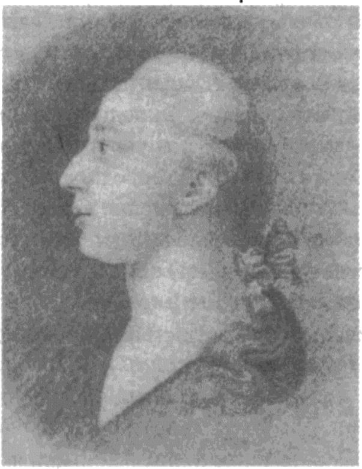</p>
<br class="calibre15"/><p class="calibre7">    Авантюрист Джакомо Казанова, легендарный соблазнитель женщин, впоследствии присвоивший себе имя «шевалье де Сенгаль», казалось, обладал особым даром, которому завидовали даже самые ловкие и живучие главари мафии: неудачи «не приставали» к нему, словно он был защищен тефлоновым панцирем. Нам Казанова известен как непревзойденный сердцеед, однако сам он считал себя интеллектуалом, кем-то вроде ученого. Он мечтал стяжать литературную славу двенадцатитомной «Историей моей жизни», написанной на дурном (очаровательно дурном) французском. Наряду с ценнейшими советами по покорению женских сердец в «Истории» содержится захватывающая повесть о череде превратностей судьбы. Казанова верил, что всякий раз, когда над головой сгущались тучи, счастливая звезда, son etoile, хранила его в беде. Из любых неприятностей его словно выводила невидимая рука, и он наконец уверовал, что так уж ему на роду написано: в трудную минуту он может положиться на счастливый случай. Окажись он даже на краю нищеты, обязательно встретится кто-то, кто предложит финансовую помощь, — новая покровительница, еще не обманутая им, или прежняя, слишком благородная и слишком незлопамятная, чтобы помнить о прошлых предательствах. Так неужели и вправду Казанова был баловнем судьбы?</p>
<p class="calibre7">    Совсем не обязательно. Подумайте: ведь большинство ярких авантюристов, когда-либо живших на земле, в конце концов сломали себе шею, и лишь немногим удавалось раз за разом выходить сухими из воды. Вот эти выжившие как раз и верят в собственную неуязвимость; они пишут книги о собственной жизни, потому что жизнь их оказалась бурной и достаточно длинной. Разумеется, и их удача ласкает только до поры до времени…</p>
<p class="calibre7">    На самом деле изобилие авантюристов, ощущающих себя баловнями Фортуны, объясняется тем, что авантюристов вообще пруд пруди и мы ничего не знаем о тех из них, кому не повезло. Начав писать эту главу, я вспомнил, как одна женщина рассказывала мне про своего необыкновенного жениха, сына государственного чиновника, который благодаря нескольким финансовым операциям смог позволить себе жизнь «как в кино» — с туфлями ручной работы, кубинскими сигарами, коллекционными автомобилями и тому подобным. У французов есть весьма подходящее к этому случаю словечко flambeur, обозначающее расточительного бонвивана, отчаянного афериста и любителя риска, наделенного к тому же неотразимым обаянием; словечко, аналога которому не существует в англосаксонской культуре. Жених стремительно тратил денежки, и, рассказывая о его судьбе, моя собеседница (несмотря ни на что, она собиралась за него замуж) объясняла, что сейчас у него возникли небольшие трудности, но беспокоиться не о чем, ведь ему всегда везет. Это было несколько лет тому назад. Недавно я из чистого любопытства навел о нем справки, постаравшись сделать это тактично: он так и не оправился (пока) от последнего удара судьбы. В итоге он «ушел со сцены» и не появляется больше в компании других flambeurs.</p>
<p class="calibre7">    Какое отношение это имеет к динамике истории? Подумайте о пресловутой «живучести» Нью-Йорка. Каждый раз, когда город оказывается на грани катастрофы, словно какая-то сверхъестественная сила удерживает его на краю и помогает выстоять. Некоторые и вправду верят, что Нью-Йорк обладает этим особым свойством. Вот цитата из статьи, напечатанной в газете «Нью-Йорк тайме»:</p>
<div class="calibre18"> </div><blockquote class="calibre19"><blockquote class="calibre19">
<p class="calibre7">    …И поэтому Нью-Йорк все еще нуждается в Сэмюеле М.Э. Этот экономист, которому сегодня исполняется 77, уже полвека изучает историю взлетов и падений Нью-Йорка. «Мы уже не раз переживали трудные времена и выходили из них как никогда сильными», — говорит мистер Э.</p>
</blockquote></blockquote>
<p class="calibre7">    А теперь взглянем на дело иначе: представим, что города — это маленькие Джакомо Казановы или крысы в моей лаборатории. Подобно тому как мы подвергли вредному облучению тысячу крыс, мы подвергнем историческому моделированию ряд городов: Рим, Афины, Карфаген, Византию, Тир, Чатал-Гуюк (одно из древнейших поселений, располагавшееся на территории современной Турции), Иерихон, Пеорию и, конечно, Нью-Йорк. Часть городов выстоит в суровых условиях, к другим, как мы знаем, история будет не столь благосклонна. Я уверен, что в Карфагене, Тире и Иерихоне были свои столь же красноречивые Сэмюели М.Э., которые заявляли: «Враги неоднократно пытались разрушить наш город, но мы каждый раз выходили из испытания только окрепшими. Отныне мы непобедимы!»</p>
<p class="calibre7">    Все та же погрешность делает оставшегося в живых плохим свидетелем. Страшновато, правда? Тот факт, что вы выжили, смягчает ваш взгляд на условия выживания, включая пресловутые «причины».</p>
<p class="calibre7">    Вы можете отнести вышесказанное к чему угодно. Замените экономиста-пенсионера Сэмюеля М.Э. каким-нибудь управляющим директором, убежденным, что его корпорация благополучно переживет любые трудности. А как насчет давно вызывающей насмешки «устойчивости финансовой системы»? А как насчет генерала, которому до сих пор сопутствовала удача?</p>
<p class="calibre7">    Теперь читатель поймет, почему я использую неизменную удачу Джакомо Казановы как универсальную схему для анализа истории, всех историй. Я моделирую искусственные жизни — скажем, миллиона Джакомо Казанов — и сравниваю свойства, присущие удачливым Казановам (которых я создал сам и потому знаю всю их подноготную), с теми, что получает в конце организатор эксперимента.</p>
<p class="calibre7">    И понимаю, что не так уж это здорово — быть Казановой.</p>
<h3 border="1" id="filepos583926" class="calibre6"><span class="bold"> «Я не боюсь рисковать!» <br class="calibre10"/></span></h3>
<p class="calibre7">    Возьмем для примера ресторанный бизнес в такой конкурентной среде, как Нью-Йорк. Открывать в Нью-Йорке ресторан — большая глупость, учитывая огромный риск и тот изматывающий труд, который придется вложить в это дело, чтобы пробиться на рынок, не говоря уже о том, чтобы завоевать падких на моду клиентов. Кладбище прогоревших заведений безмолвствует, зато пройдитесь по Мидтауну, и вам тут же бросятся в глаза фешенебельные, всегда набитые посетителями рестораны, откуда выходят со своими дамами преуспевающие мужчины и садятся в лимузины, ожидающие у дверей. Но значит ли это, что есть смысл открывать ресторан в таком конкурентном районе? Конечно нет, и, однако, люди это делают — из дурацкого желания рискнуть, которое побуждает их, ослепленных блеском возможного результата, бросаться очертя голову в подобные авантюры.</p>
<p class="calibre7">    Что-то в нас явно есть от удачливых Казанов, какой-то ген риска, заставляющий нас действовать вслепую, не сознавая, что результат непредсказуем. В нас живет врожденная страсть к необдуманному риску. Стоит ли ее поощрять?</p>
<p class="calibre7">    Фактически такой авантюризм привел к экономическому росту. Какой-нибудь дурак всегда может меня подколоть: мол, если бы все рассуждали как я, не было бы у нас такой впечатляющей индустриализации. Это все равно что удачно сыграть в русскую рулетку и всем советовать делать то же самое, потому что ты выжил и огреб денежки.</p>
<p class="calibre7">    Часто говорят, что у нас, людей, оптимизм — в крови и что, судя по всему, он нам полезен. Этот довод вроде бы оправдывает любой риск как позитивное начинание, к тому же поощряемое бытовой культурой. Смотрите, мол, наши предки бросали вызов судьбе — а вы, уважаемый Н.Н.Т., призываете нас сидеть сложа руки (да не призываю я!).</p>
<p class="calibre7">    Есть тьма подтверждений тому, что мы, люди, — действительно, очень удачливый вид и что у нас есть гены авантюризма. Причем глупого авантюризма — авантюризма выживших Казанов.</p>
<p class="calibre7">    Повторю еще раз: я не хочу дискредитировать идею риска как такового — я сам рискую. Я только против поощрения непродуманного риска. Суперпсихолог Дэнни Канеман представил нам свидетельства того, что мы рискуем, как правило, не бравады ради, а по неведению и из-за слепоты в отношении вероятности! В последующих главах мы очень подробно рассмотрим, как люди, планируя будущее, не учитывают аномалий и их отрицательных эффектов. Но я упираю вот на что: да, мы выжили и даже — благодаря случайности — кое-чего достигли, но это не значит, что надо продолжать рисковать по-прежнему. Мы достаточно зрелая цивилизация, чтобы это понять, порадоваться своему счастью и, став более осмотрительными, попытаться сохранить то, что досталось нам по счастливому стечению обстоятельств. Хватит играть в русскую рулетку; пора заняться реальным делом.</p>
<p class="calibre7">    Хочу к этим рассуждениям еще кое-что добавить. Во-первых, оправдание чрезмерного оптимизма тем, что «мы многого достигли», зиждется на серьезнейшем заблуждении: мы уверены, что от рождения способны понимать природу, в том числе свою, и что наши решения — это всегда результат осознанного выбора. Позвольте с этим не согласиться. Нами движет так много инстинктов…</p>
<p class="calibre7">    И второе заблуждение (внушающее еще большее беспокойство, чем первое): якобы свойственная человеку как виду эволюционная приспособляемость, в которую массы верят как в Святое Писание и о которой восторженно кричат на каждом углу. Чем меньше понятия имеет человек о неуправляемой случайности, порождающей Черных лебедей, тем больше он убежден в оптимальности хода эволюции. Но все эти теории не учитывают скрытых свидетельств. Эволюция — это серия проб, одни из которых удачны, другие нет. Нам известны только удачные. Но так ли очевидно сейчас, какие из наших черт окажутся действительно полезными в дальнейшем, особенно учитывая, что мы живем в «чернолебяжьем» мире Крайнестана? Это все равно что слушать игроков, которые, выйдя из казино при деньгах, заявили бы, что страсть к азартной игре — благо для человечества, потому что игра обогащает! Подумайте, скольким видам риск стоил жизни!</p>
<p class="calibre7">    В свете идеи о скрытых свидетельствах оказывается, что рассуждения в духе «мы многого достигли», «мы живем в лучшем из миров» и «эволюция всегда права» — порядочная чушь. Глупцы, Казановы, слепые любители риска часто добиваются сиюминутных побед. Хуже того, в мире Черных лебедей, где одно редкое событие способно сокрушить целый вид после долгого-долгого пути «приспособления», безмозглый храбрец может выиграть даже в долгосрочной перспективе! Я еще вернусь к этой мысли в третьей части, когда буду говорить о том, как усугубляется проблема скрытых свидетельств в Крайнестане.</p>
<p class="calibre7">    Но есть и еще один аспект той же проблемы, о котором нельзя не упомянуть.</p>
<h3 border="1" id="filepos592736" class="calibre6"><span class="bold"> Я — Черный лебедь: антропная погрешность <br class="calibre10"/></span></h3>
<p class="calibre7">    В этой дискуссии я стараюсь не возноситься мыслью к горным высотам и избегать выспренних метафизических и космологических рассуждений: слишком много явных опасностей грозит нам здесь, на земле, потому философию разумнее отложить на потом. Но думаю, что было бы полезно коснуться (в самых общих чертах) так называемого антропного космологического принципа, поскольку он выявляет всю глубину наших заблуждений относительно исторической стабильности.</p>
<p class="calibre7">    Новая волна философов и физиков (а также людей, являющихся теми и другими в одном лице) исследует феномен self-sampling assumption<a title="Предположение о собственном местонахождении (англ.)." href="#filepos1529369"><span class="calibre11"><sup class="calibre12">[36]</sup></span></a>, который представляет собой приложение принципа ошибки Казановы к нашему собственному существованию.</p>
<p class="calibre7">    Взглянем на человеческие судьбы. Некоторые ученые рассуждают так: вероятность существования каждого из нас столь ничтожно мала, что ее нельзя объяснить простым капризом фортуны. Сколько факторов должно было совпасть нужным образом в нужное время, чтобы дать жизнь каждому из нас (ведь малейшее отклонение от оптимума в настройках — и мир бы взорвался, схлопнулся или просто никогда бы не возник)! Часто приходится слышать мнение, что, по всей видимости, мир был специально устроен так, чтобы стало возможным существование человека. Отсюда делается вывод, что мы не могли появиться случайно.</p>
<p class="calibre7">    Однако наше собственное присутствие в рассматриваемом месте не позволяет нам верно оценивать шансы. Для прояснения этой мысли обратимся к той же истории с Казановой. Представим, что все когда-либо зарождавшиеся миры — это маленькие Казановы, у каждого из которых своя планида. Тот из них, кто еще (по случайности) жив, будет думать, что некая сверхъестественная сила (иначе такая удача кажется слишком невероятной) хранит и направляет его: «Шансы-то были настолько мизерны, что на простое стечение обстоятельств это не спишешь». Но наблюдатель, видящий всех авантюристов, понимает, что вероятность найти среди них Казанову не так уж мала: авантюристов очень много, и уже поэтому кому-то из них гарантирован выигрыш в этой лотерее.</p>
<p class="calibre7">    Проблема человечества и нашей Вселенной в том, что мы — выжившие Казановы. Если изначально авантюристов множество, то кто-то обязательно выживет, а теперь «секите момент»: раз вы сейчас об этом рассуждаете, то именно вам и довелось выжить (обратите внимание на «условие»: вы выжили, чтобы рассказывать, как вам подфартило). Значит, мы уже не вправе наивно оценивать шансы, не учитывая следующего: условие того, что мы сейчас здесь, обедняет процесс, приведший нас сюда.</p>
<p class="calibre7">    Предположим, что у истории есть как «мрачные» (неблагоприятные), так и «радужные» (благоприятные) варианты развития событий. Мрачные ведут к вымиранию. Очевидно, своей возможностью писать эти строки я обязан исключительно тому, что история припасла для меня «радужный» вариант, то есть распорядилась так, чтобы мои предки в Ливане не погибли в какой-нибудь резне во время одного из многочисленных вражеских нашествий. Вдобавок на Землю не рухнул метеорит, не случилось ядерной войны или еще какой-нибудь глобальной катастрофы. Но необязательно даже говорить о человечестве в целом. Достаточно взять мою собственную биографию — каждый раз, вспоминая прошлое, я поражаюсь, какой хрупкой была и остается моя жизнь. Однажды (мне было тогда 18 лет, и я вернулся в Ливан во время войны) у меня начались приступы сильной слабости и озноба, несмотря на летнюю жару. Это оказался брюшной тиф. Случись это на несколько десятков лет раньше, до изобретения антибиотиков, и меня бы уже с вами не было. Впоследствии меня еще раз спасли от серьезной болезни, которая могла оказаться смертельной, если бы не новейшие медицинские технологии. Мне, человеку, живущему в век интернета, имеющему возможность писать и общаться с аудиторией, повезло еще и в том, что за последние годы не случалось масштабных войн и общество могло развиваться спокойно. Наконец, я дитя расцвета человеческой цивилизации, которая сама по себе — случайность.</p>
<p class="calibre7">    Мое присутствие на земле — результат череды крайне маловероятных происшествий, о чем мне свойственно забывать.</p>
<p class="calibre7">    Вспомним о пресловутых «Десяти шагах к миллиону». Успешный человек обязательно будет убеждать вас, что его достижения не случайны, как и игрок, семь раз подряд выигравший в рулетку, наверняка примется объяснять вам, что вероятность выигрыша — один к нескольким миллионам, а значит, нужно верить либо в сверхъестественное вмешательство, либо в его талант и чутье. Но если принять во внимание общее число игроков и общее количество попыток (на круг — несколько миллионов), то станет ясно, что такие полосы везения неизбежны. И если о них говорите вы — повезло вам.</p>
<p class="calibre7">    Идея точки отсчета состоит в следующем: не судите о вероятности с высокой позиции удачливого игрока (или выжившего Казановы, или неунывающего Нью-Йорка, или непобедимого Карфагена), судите с точки зрения тех, кто составлял исходную группу. Обдумаем еще раз ситуацию с игроками. Если взять всех начинающих игроков, можно быть почти уверенным, что хотя бы одному из них (но мы пока не можем сказать кому) сказочно повезет. Если брать за точку отсчета исходную группу — шансы не особенно велики. Но если точкой отсчета выбран везунчик (который, и это самое главное, не принимает в расчет неудачников), то цепочка его удач покажется слишком незаурядным явлением, чтобы приписать его простой случайности. Заметьте, что «история» — это всего лишь ряд чисел во времени. Числа же могут отражать уровень обеспеченности, приспособленности, веса — да чего угодно.</p>
<h3 border="1" id="filepos603203" class="calibre6"><span class="bold"> Косметическое «потому что» <br class="calibre10"/></span></h3>
<p class="calibre7">    Все вышесказанное предельно обесценивает понятие «причины», эксплуатируемое учеными-естественниками и почти всегда неправильно применяемое историками. Приходится признать расплывчатость привычных «потому что», хотя от этого становится не по себе (шутка ли — отбросить болеутоляющую иллюзию причинности). Повторю: человек — «животное объясняющее», он уверен, что любое явление имеет опознаваемую причину, и хватается за самое очевидное, усматривая в нем объяснение. Но очевидной причины может и не быть; случается даже так, что нет ничего — нет даже намека на возможное объяснение. Однако понять это мешают скрытые свидетельства. Условие нашего выживания «топит» все возможные объяснения. В итоге Аристотелево «потому что» не связывает накрепко два явления; оно, как видно из главы 6, потворствует нашей тайной слабости все истолковывать.</p>
<p class="calibre7">    Попробуем рассмотреть под таким углом следующий вопрос: «Почему бубонная чума унесла столько-то народу, а не больше?» Люди приведут массу «косметических» объяснений — тут будут и теории об интенсивности заболевания, и «научное моделирование» эпидемий. А вот вам аргумент обесцененной причинности, на который я упираю в этой главе: если бы чума истребила больше народу, наблюдать теперь было бы некому ввиду полного отсутствия наблюдателей (то есть нас с вами). Так что снисходительность к роду человеческому вовсе не обязательно кроется в природе болезни. Когда речь идет о вашем выживании, не спешите выявлять причинно-следственные связи. Опознаваемая причина того, что нас не выкосили подобные эпидемии, может быть, просто спрятана от нас. Мы Казановы, к которым история повернулась «радужный» стороной, но нам трудно это понять, поскольку наши мозги напичканы причинностью и нам проще сказать «потому что», чем признать власть случайности.</p>
<p class="calibre7">    Моя основная претензия к образовательной системе заключается именно в том, что из студентов выжимают всевозможные толкования и стыдят их, когда они воздерживаются от суждений, говоря: «Я не знаю». Почему закончилась «холодная война»? Почему персы проиграли битву при Саламине? Почему Ганнибал получил пинка под зад? А почему Казанова всегда выходил сухим из воды? В каждом из этих примеров мы берем условие (выживание) и ищем объяснения, вместо того чтобы перевернуть аргумент с ног на голову и констатировать, что именно по условию выживания мы не можем глубоко проникнуть в процесс и должны научиться апеллировать к некой доле случайности (случайность — это то, чего мы не знаем; апеллировать к случайности — значит взывать к неведению). Дурные привычки прививают нам не только профессора колледжей. В главе 6 я уже рассказывал, как журналисты нашпиговывают свои тексты причинно-следственными связями, чтобы вы могли получить удовольствие от рассказа. Но будьте честны, не разбрасывайтесь попусту своими «потому что»; постарайтесь ограничиться ситуациями, где «потому что» подтверждается экспериментами, а не историей.</p>
<p class="calibre7">    Заметьте, я не утверждаю, что причинности не существует; не пытайтесь оправдать моими словами нежелание учиться у истории. Я только хочу сказать, что все очень непросто; не слишком доверяйте причинам — особенно тогда, когда есть вероятность существования скрытых свидетельств.</p>
<p class="calibre7">    Мы рассмотрели несколько аспектов проблемы скрытых свидетельств, которые пагубно влияют на наше восприятие эмпирической реальности, представляя ее более объяснимой (и стабильной), чем она есть на самом деле. Как и ошибка подтверждения, и искажение нарратива, наличие скрытых свидетельств мешает правильному пониманию роли и значимости Черных лебедей. Иногда оно приводит к колоссальной переоценке (как в случае с литературной славой), иногда — к недооценке (как в случаях со стабильностью истории и устойчивостью человека как вида).</p>
<p class="calibre7">    Я уже говорил, что наш механизм восприятия порой не реагирует на то, что не лежит прямо перед глазами или не привлекает «эмоционального внимания». Мы от природы поверхностны, мы учитываем то, что очевидно, и не учитываем того, что не так легко осознается. Мы ведем войну против скрытых свидетельств на двух фронтах сразу. Бессознательная часть нашего умозаключающего механизма (а есть и такая) игнорирует кладбище, даже если разумом мы понимаем, что его тоже надо брать в расчет. С глаз долой — из сердца вон: в каждом из нас таится глубинное, даже физическое, отвращение к абстрактным, отвлеченным понятиям.</p>
<p class="calibre7">    Этот тезис я проиллюстрирую в следующей главе.</p>
<div class="mbppagebreak"></div><h2 border="1" class="calibre13" id="filepos611541"><span class="calibre14"><span class="bold"> Глава 9. Игровая ошибка, или Неопределенность «ботаника» <br class="calibre10"/></span></span></h2>
<p class="calibre7">    <span class="italic">Ланч на (западном) озере Комо. — Военные как философы. — Платоновская неопределенность</span></p>
<h3 border="1" id="filepos611949" class="calibre6"><span class="bold"> Жирный Тони <br class="calibre10"/></span></h3>
<p class="calibre7">    Жирный Тони — это приятель Ниро, который жутко раздражает Евгению Краснову. Пожалуй, ему больше подошло бы прозвище Нескладный Тони, поскольку он не столько толст, сколько до того непропорционален, что никакая одежда на нем не сидит. Тони носит только вещи, которые специально для него кроятся в Риме и шьются на заказ, но все они смотрятся на нем так, будто он покупал их через интернет, без примерки. У него толстые руки, волосатые пальцы, золотой браслет, и от него вечно пахнет лакричными конфетками, которые он поглощает в промышленных количествах с тех пор, как бросил курить. Он не против наименования Жирный Тони, но предпочитает, разумеется, чтобы его называли просто Тони. Ниро же окрестил его Бруклинцем Тони за его акцент и бруклинский образ мышления, хотя Тони — один из тех процветающих дельцов, что перебрались в Нью-Джерси уже двадцать лет назад.</p>
<p class="calibre7">    Тони — преуспевающий не-«ботаник» с веселым характером. У него куча друзей и приятелей. Кажется, что у него вообще нет проблем, кроме лишнего веса и вызванных этим подтруниваний семьи, дальних родственников и друзей, которые то и дело напоминают ему об опасности раннего инфаркта. Все средства тут бессильны: часто Тони отправляется в Аризону, в клинику для похудения, чтобы не есть, и даже теряет несколько фунтов, но снова набирает их уже по пути домой, в самолете, в кресле салона первого класса. Удивительно, что всегдашний строгий самоконтроль и самодисциплина изменяют Тони, когда дело касается обхвата его талии.</p>
<p class="calibre7">    Начинал он в ранние восьмидесятые, клерком в отделе аккредитивов одного из нью-йоркских банков — перекладывал бумажки и занимался кое-какой рутинной работой. Потом ему поручили оформлять кредиты для малого бизнеса, и он понемногу разобрался в тонкостях игры: как устроен механизм финансирования в крупнейших банках, как работает их бюрократический аппарат и как это желательно отражать на бумаге. Тогда же он начал приобретать собственность обанкротившихся предприятий, скупая ее через финансовые учреждения. Тони верно подметил, что, покупая дом, проще иметь дело не с владельцем, а с банковским служащим, которому по большому счету все равно — ведь дом-то не его. Он быстро научился вести переговоры и маневрировать. Позже он также научился покупать и перепродавать автозаправки, беря кредиты в небольших районных банках.</p>
<p class="calibre7">    У Тони есть замечательное обыкновение делать деньги без усилий, забавы ради, без напряжения, без офисной рутины, без совещаний, мешая сделки с частной жизнью. Девиз Тони: «Найти лоха». Ясно, что таковыми часто оказываются банки: «клеркам ни до чего нет дела». Найти лоха Тони умеет играючи: у него на них особый нюх. Пройдите с ним пару кварталов, болтая обо всем и ни о чем, и почувствуете, что узнали много нового о том, как устроен мир.</p>
<p class="calibre7">    Тони обладает удивительной способностью доставать не внесенные в справочники номера телефонов, билеты на самолет в первом классе без доплаты или место на стоянке для вашей машины, даже если официально мест нет, — и все это благодаря нужным знакомствам и неотразимому обаянию.</p>
<h3 border="1" id="filepos617695" class="calibre6"><span class="bold"> Антибруклинец Джон <br class="calibre10"/></span></h3>
<p class="calibre7">    А вот пример абсолютного антибруклинца, я назову его Доктор Джон. Он бывший инженер, а ныне работает статистиком в страховой компании. Это худой, жилистый человек, он ходит в очках и носит темный костюм. Живет он в Нью-Джерси, недалеко от Жирного Тони, но они, разумеется, почти никогда не встречаются. Тони не ездит на электричке (он водит «кадиллак», а иногда итальянский кабриолет жены — при этом шутит, что за ним не сразу разглядишь машину) и вообще не ездит на работу к определенному времени. Доктор Джон живет по графику, он предсказуем, как часы. По пути на Манхэттен он вдумчиво читает в вагоне газету, затем аккуратно складывает ее, чтобы продолжить чтение в обеденный перерыв. Если Тони обогащает владельцев ресторанов (не удивительно, что те встречают его лучезарной улыбкой и шумными объятиями), то Джон каждое утро педантично заворачивает свой сэндвич и упаковывает фруктовый салат в пластиковый контейнер. На нем тоже плохо сидит костюм, только Джон действительно заказал его по интернету.</p>
<p class="calibre7">    Доктор Джон — ответственный, рассудительный и мягкий человек. Он серьезно относится к своей работе, настолько серьезно, что в отличие от Тони строго разграничивает рабочее время и частную жизнь. У него докторская степень по электротехнике и электронике, полученная в Техасском университете в Остине. Так как он разбирается в компьютерах и знает статистику, его пригласили на работу в страховую компанию, где он занимается компьютерным моделированием, пользуясь в основном программами для «управления рисками», и эта работа ему очень нравится.</p>
<p class="calibre7">    Представьте, что я встретил Джона и Тони в баре. Понятно, что Джон и Тони вряд ли дышат одним и тем же воздухом, не говоря уж о том, чтобы зайти в один бар. Поэтому считайте все нижеописанное чистым мысленным экспериментом. Я задам каждому из них вопрос и сравню их ответы.</p>
<p class="calibre7">    Н.Н.Т.: Предположим, у нас имеется абсолютно «честная» (идеальной формы) монета, то есть вероятность выпадения орла или решки для нее одинакова. Я подбросил ее девяносто девять раз подряд, и каждый раз у меня выпадал орел. Какова вероятность того, что на сотый раз выпадет решка?</p>
<p class="calibre7">    Доктор Джон: Тривиальный вопрос. Разумеется, пятьдесят процентов, если мы исходим из абсолютного равенства шансов и независимости отдельно взятого броска от всех прочих.</p>
<p class="calibre7">    Н.Н.Т.: А ты что скажешь, Тони?</p>
<p class="calibre7">    Жирный Тони: А я скажу, что не больше одного процента.</p>
<p class="calibre7">    Н.Н.Т.: Но почему? Я же сказал, что монета абсолютно «честная», то есть распределение шансов — пятьдесят на пятьдесят.</p>
<p class="calibre7">    Жирный Тони: Ты, блин, или пургу гонишь, или сам лох, если купился на эти «пятьдесят пра-ацентов». Монета утя порченая. Честной игрой тут и не пахнет. (Перевод: я скорее усомнюсь в идеальной форме монеты, чем поверю в то, что «честная» монета, подброшенная девяносто девять раз, ни разу не упала вверх решкой.)</p>
<p class="calibre7">    Н.Н.Т.: А вот Доктор Джон говорит, пятьдесят процентов.</p>
<p class="calibre7">    Жирный Тони (мне на ухо): Насмотрелся я еще в банке на этих ботанов. Медленно са-абражают, вот что. Слишком уж запрограммованные. Их обуть — как нечего делать.</p>
<p class="calibre7">    А теперь вопрос: кого из этих двоих вы бы выбрали мэром Нью-Йорка (или города Улан-Батора в Монголии)? Доктор Джон всегда мыслит по схеме, причем уже заданной схеме; Жирный Тони почти всегда — не по схеме, то есть творчески.</p>
<p class="calibre7">    Определимся с терминами: те, кого я называю «ботаниками», — это вовсе не обязательно неряшливые, нелепые очкарики, у которых на поясе постоянно болтается КПК, как у копа — его пушка. «Ботаник» — это любой человек, чье мышление донельзя стиснуто рамками.</p>
<p class="calibre7">    Вы никогда не задумывались, почему так много круглых отличников ничего не добиваются в жизни, а те, кто в школе плелся в хвосте, гребут денежки, скупают бриллианты и ни в чем не знают отказа? А некоторые даже получают Нобелевскую премию в какой-нибудь прикладной области (например, в медицине). Конечно, здесь не обходится без удачи, но отчасти дело в выхолощенности и отвлеченности школьных знаний, которые мешают отличникам понимать, что происходит в реальной жизни. В тесте на коэффициент интеллекта (IQ) и в любых других академических играх (включая спортивное соревнование) Доктор Джон оставит далеко позади Жирного Тони. Но в любой «природной», житейской ситуации Жирный Тони обскачет Джона. Суть в том, что Тони, несмотря на его неотесанность, обладает двумя качествами: искренним интересом к тому, как устроена жизнь, и своеобразной эрудицией; на мой взгляд, он в большей степени человек науки (в истинном, а не общепринятом смысле этого слова), чем Доктор Джон.</p>
<p class="calibre7">    Нам нужно глубоко, очень глубоко вникнуть в различие между ответами Тони и Джона: они отражают принципиальнейшее, на мой взгляд, расхождение между двумя разновидностями знания, которые мы назовем «платоническим» и «неплатоническим». Если коротко: люди, подобные Доктору Джону, могут спровоцировать появление Черного лебедя за пределами Среднестана, потому что их разум «закупорен». Это глобальная проблема, и одно из неприятнейших ее проявлений (я называю его игровой ошибкой) заключается в том, что неопределенность в реальной жизни имеет мало общего со стерильной неопределенностью, которую мы привыкли встречать в играх и на экзаменах.</p>
<p class="calibre7">    В завершение первой части я расскажу вам такую историю.</p>
<h3 border="1" id="filepos627616" class="calibre6"><span class="bold"> Ланч на озере Комо <br class="calibre10"/></span></h3>
<p class="calibre7">    Несколько лет тому назад прекрасным весенним днем я получил неожиданное приглашение от одного научного центра, спонсируемого Министерством обороны США. Меня приглашали поучаствовать в «мозговом штурме» по проблемам риска, который должен был состояться осенью в Лас-Вегасе. Звонивший мне человек сообщил: «У нас будет ланч на террасе с видом на озеро Комо», чем немало меня расстроил. Лас-Вегас (как и его родной братец эмират Дубай) — это одно из немногих мест, куда я не поехал бы ни за что в жизни. Ланч на «лже-Комо» казался мне сущей пыткой. Но я все-таки поехал и нисколько о том не пожалел.</p>
<p class="calibre7">    Научный центр собрал там группу чуждых политике ученых и дельцов (и практиков вроде меня, не признающих такого различия), чья деятельность, при всем разнообразии направлений, так или иначе связана с неопределенностью. Место встречи было выбрано символичное — одно из крупнейших казино.</p>
<p class="calibre7">    Этот закрытый, «сектантского» типа, симпозиум свел вместе людей, которые никогда не встретились бы при других обстоятельствах. Меня прежде всего поразило то, что военные здесь мыслили, вели себя и действовали совершенно по-философски — куда более по-философски, чем те философы, которые ломают копья на еженедельных коллоквиумах (в чем мы убедимся, дойдя до части третьей). Эти люди мыслили нешаблонно, как трейдеры, только гораздо четче и не страшась самоанализа. Среди прочих на симпозиуме присутствовал помощник министра обороны — не знай я его должности, я принял бы его за практикующего эмпирика-скептика. Даже инженер, расследовавший причины гибели шаттла, оказался человеком думающим и с широким взглядом. Из этой встречи я вынес мнение, что только военные могут посмотреть в глаза случайности с неподдельной, глубоко осознанной интеллектуальной честностью — в отличие от оперирующих чужими деньгами академиков и членов правления корпораций. Фильмы про войну приучили нас думать, что военные, как правило, кровожадны и деспотичны. Люди, которых я видел перед собой, были явно не из тех, кто развязывает войны. Многие из них понимали, что разумная оборонная политика позволяет предотвратить кровопролитие, примером чему служит стратегия разорения русских с помощью гонки вооружений. Когда я поделился своим удивлением с соседом, финансовым аналитиком Лоренсом, тот ответил, что в «оборонке» сейчас больше истинных интеллектуалов и оценщиков риска, чем во многих, если не во всех других областях. Военные хотят разбираться в эпистемологии риска.</p>
<p class="calibre7">    Среди нас был человек, возглавлявший группу профессиональных игроков, которого перестали пускать во многие казино. Он приехал поделиться с нами опытом. Неподалеку от него сидел высокомерный профессор политологии, похожий на обглоданную кость и, как это свойственно «людям с именем», безмерно озабоченный своей репутацией; за все время симпозиума он не высказал ни одной оригинальной мысли и ни разу не улыбнулся. Во время заседаний я искренне потешался, представляя себе, как этот корифей будет в ужасе извиваться, если ему за шиворот бросить крысу. Возможно, он хорошо умел придумывать платонические модели чего-либо, называемого теорией игр, но, когда мы с Лоренсом прилюдно уличили его в неверном использовании финансовых метафор, он быстро порастерял свой апломб.</p>
<p class="calibre7">    Впрочем, вернемся к теме. Когда думаешь об основных рисках, которые существуют в деятельности казино, на ум приходят разные игровые ситуации. Создается впечатление, что для казино главную опасность представляют удачливые игроки, способные разорить заведение серией крупных выигрышей, или мошенники, наживающиеся на нечестной игре. В этом убеждены не только обыватели, но и менеджеры казино. Поэтому все игорные дома оборудованы совершенными системами слежения, выявляющими мошенников, игроков, подсчитывающих карты, и всех, кто так или иначе пытается нажиться за счет казино.</p>
<p class="calibre7">    Каждый из участников симпозиума должен был сделать доклад и выслушать выступления остальных. Я приехал говорить о Черных лебедях и собирался сказать, что мне известно лишь то, что нам практически ничего о них не известно, за исключением того, что им свойственно выпрыгивать на нас из-за угла и что попытки «платонизировать» их привели к дополнительным недоразумениям. Военные способны понимать такие вещи: в последнее время понятие «неизвестное неизвестное» (в противоположность «известному неизвестному») стало расхожим в их кругах. Однако я набросал новое выступление (на пяти ресторанных салфетках с масляными пятнами), приготовившись вынести на суд аудитории новую формулировку, которая родилась спонтанно: игровая ошибка. Я собирался начать с того, что казино — не лучшее место для моего доклада, потому что казино не имеют никакого отношения к неопределенности.</p>
<h3 border="1" id="filepos636412" class="calibre6"><span class="bold"> Неопределенность «ботаника» <br class="calibre10"/></span></h3>
<p class="calibre7">    Что же такое игровая ошибка?</p>
<p class="calibre7">    Я надеялся, что представители казино выступят раньше меня, чтобы, начав полемизировать с ними, я мог (очень тактично) объяснить, что данную дискуссию никак не следовало проводить в игорном заведении, ибо тот вид рисков, с которым имеет дело казино, почти не встречается за стенами этого здания и от его изучения мало проку в реальности. По моему мнению, неопределенность азартных игр — это стерилизованная, одомашненная неопределенность. В казино, где правила известны и шансы можно просчитать, господствует рядовая, то есть среднестанская, случайность (как мы убедимся позднее). Я заготовил такую фразу: «Казино, по-моему, единственное из основанных на риске предприятий, где вероятность постижима, статистически выводима и, можно сказать, вычисляема». Мы знаем, что казино не выплатит нам сумму в миллион раз больше той, которую мы поставили, и не изменит неожиданно правила прямо во время игры; в казино не бывает так, чтобы «тридцать шесть, черное» выпадало девяносто пять раз из ста<a title="Мой коллега Марк Шпицнагель обнаружил «солдатскую» разновидность игровой ошибки: спортивные соревнования по борьбе приучают борца концентрироваться на игре и, чтобы не потерять концентрацию, игнорировать все, что не дозволено правилами: удар ниже пояса, удар ножом исподтишка и так далее. Поэтому те, кому на соревнованиях достаются золотые медали, оказываются самыми уязвимыми в настоящем бою. Точно так же вы наверняка видели парней в черных футболках и с чудовищными мускулами, которые потрясают воображение в тепличных условиях тренажерного зала, но не способны поднять камня." href="#filepos1529618"><span class="calibre11"><sup class="calibre12">[37]</sup></span></a>.</p>
<p class="calibre7">    В реальной жизни шансы вам неведомы; до них приходится докапываться, при том что источники неопределенности не очерчены. Экономисты, которые ни в грош не ставят все открытое неэкономистами, проводят искусственное различие между «рисками по Найту» (которые можно просчитать) и «неопределенностью по Найту» (которую просчитать нельзя), с тех пор как некто Фрэнк Найт заново открыл понятие неизвестной неопределенности. Он много теоретизировал, но вряд ли когда-нибудь рисковал, а может быть, по соседству с его домом стояло казино. Если бы он хоть раз сам влез в экономическую или финансовую авантюру, то понял бы, что в жизни этих «просчитываемых» рисков не бывает! Это лабораторный экспонат!</p>
<p class="calibre7">    И все же мы автоматически, подсознательно ассоциируем случай с этими платоновскими играми. Меня приводят в бешенство люди, которые, узнав, что я специализируюсь на проблемах вероятности, тут же начинают сыпать историями про игральные кости. Два иллюстратора одной из моих книг спонтанно и независимо друг от друга поместили изображение игрального кубика на обложку и после каждой главы, чем ввергли меня в ярость. Редактор, знакомый с моими идеями, попросил их «не допускать игровой ошибки!» — как будто это интеллектуальное заблуждение общеизвестно. Забавно, что оба иллюстратора ответили: «Ах, извините, мы были не в курсе».</p>
<p class="calibre7">    Тот, кто слишком долго просидел, уткнувшись в карту, может принять карту за местность. Откройте любой современный труд по истории вероятности и вероятностного мышления: вы увязнете в именах прославленных «теоретиков вероятности», которые строят свои учения на тех же стерилизованных конструкциях. Посмотрел я недавно, что преподают студентам под видом теории случайности, и ужаснулся: им ввинчивают в мозги эту игровую ошибку и пресловутую «гауссову кривую». Тем же грешат докторские диссертации по теории вероятности. Мне вспоминается книга серьезного ученого, математика Амира Акзела под названием «Случай». Отличное было бы исследование, если бы в его основе не лежала все та же игровая ошибка. Притом, даже если допустить, что случай может быть поверен математикой, то немногое в реальном мире, что поддается математизации, относится не к рядовой случайности гауссова толка, а к из ряда вон выходящей, сильно масштабируемой случайности. Математика применима, как правило, не к гауссовой, а к мандельбротовской реальности.</p>
<p class="calibre7">    А теперь почитайте философов-классиков, у которых было свое, земное, представление о роли случая, — например, Цицерона — и увидите совсем другую картину: понятие вероятности у них остается расплывчатым, как и должно быть, потому что расплывчатость и есть истинная суть неопределенности. Их теория случайности — свободное искусство, дитя скептицизма, а не инструмент, посредством которого люди с калькуляторами на поясах удовлетворяют свою тягу к мнимой рассчитанности и определенности. Пока западная философия не погрязла в «научности», которую пафосно именуют Просвещением, люди пользовались мозгами, чтобы думать, а не чтобы считать. В великолепной, но ныне, увы, практически забытой работе «Диссертация о разыскании истины», опубликованной в 1673 году, полемист Симон Фуше говорит о психологической предрасположенности человека к определенности. Фуше учит нас искусству сомнения, искусству оставаться на грани между сомнением и верой. Он пишет: «Чтобы заниматься наукой, нужно преодолеть сомнения — но мало кто понимает, как важно не сделать этого преждевременно. На практике же многие отвергают сомнения, не успев усомниться». И далее: «Мы — догматики от рождения».</p>
<p class="calibre7">    Из-за ошибки подтверждения, описанной в главе 5, мы берем за образец игры, досконально изученные теоретиками вероятности, и пытаемся выдать найденные здесь закономерности за общее правило. К тому же, недооценивая роль случая в реальной жизни, в играх мы его роль переоцениваем.</p>
<p class="calibre7">    «Это здание находится внутри платонической складки. Настоящая жизнь — вне ее!» — чуть было не выкрикнул я.</p>
<h3 border="1" id="filepos646923" class="calibre6"><span class="bold"> Игра в неправильные кости <br class="calibre10"/></span></h3>
<p class="calibre7">    Чуть позже я с удивлением узнал, что здание этого казино тоже располагалось вне платонической складки.</p>
<p class="calibre7">    Риск-менеджмент казино, помимо определения игровой политики, был нацелен на сокращение ущерба, причиняемого всякого рода шулерами. Даже непрофессиональному «вероятностнику» ясно: поскольку столов в зале много, игра достаточно рассредоточена, чтобы не опасаться сильного ущерба от безмерной удачи отдельного игрока. Все, что требовалось от сотрудников, — это обхаживать «китов», азартных супербогатеев, которых казино доставляет спецсамолетами из Манилы или Гонконга; «кит» может проиграть или выиграть несколько миллионов долларов в один присест. Без мухлежа выигрыш отдельных игроков почти всегда капля в море, практически не влияющая на целое.</p>
<p class="calibre7">    Я обещал не болтать о хитроумной системе слежения, которой было оборудовано наше казино, могу сказать только, что я словно оказался в фильме про Джеймса Бонда, — уж не знаю, то ли казино ориентируются на фильмы, то ли наоборот. Однако все эти ухищрения бесполезны, ибо то, что по-настоящему опасно для их бизнеса, не имеет никакого отношения собственно к игре и потому не прогнозируемо. Те несколько случаев, когда казино понесло самые большие убытки или едва избежало их, совершенно не укладываются в сложные модели риск-менеджеров.</p>
<p class="calibre7">    В первый раз владельцы казино потеряли около ста миллионов долларов, когда тигр изувечил незаменимого артиста главного шоу (это шоу, «Зигфрид и Рой», привлекало в Лас-Вегас толпы людей). Тигр был ручной и даже ночевал в спальне укротителя, никто не ожидал, что могучий зверь восстанет против хозяина. При анализе вариантов предусмотрели даже меры на случай, если тигр прыгнет в толпу, но никому и в голову не пришло застраховаться от того, что случилось на самом деле.</p>
<p class="calibre7">    Во второй раз подрядчик, отвечавший за строительство гостиничного флигеля, остался недоволен предложенным вознаграждением. Он был до того оскорблен, что решил подорвать казино, заложив динамит в фундамент. Разумеется, план был раскрыт (иначе, если воспользоваться аргументом из главы 8, нас бы сегодня здесь не было). Но меня бросило в дрожь при мысли, что я, вероятно, сейчас сижу на пороховой бочке.</p>
<p class="calibre7">    Третий случай: администрация казино должна заполнять специальную форму для налоговой Службы внутренних доходов, указывая в ней все выигрыши, если они превышают определенную сумму. Сотрудник, который должен был отправлять эти формы, вместо этого — по причинам совершенно необъяснимым — прятал их в ящике стола. Так продолжалось годами, и никто не замечал подвоха. Поведение сотрудника было абсолютно непредсказуемо. Уклонение от уплаты налогов — не шутка. Заведению грозили либо утрата лицензии, либо чудовищные убытки от ее приостановки. Дело, по счастью, обошлось гигантским штрафом (размеры его не разглашаются).</p>
<p class="calibre7">    Возникали и другие опасные ситуации: однажды, скажем, была похищена дочь владельца. Чтобы заплатить выкуп, отцу пришлось нарушить правила ведения игорного бизнеса, запустив руку в оборотные капиталы.</p>
<p class="calibre7">    Вывод: простейший подсчет показывает, что долларовая стоимость этих Черных лебедей — реальных и потенциальных «немоделируемых» убытков, которые я только что описал, — превышает «моделируемые» риски в отношении 1000 к 1. Казино потратило сотни миллионов долларов на разработку теории игр и высокотехнологичные системы контроля, а главные потери понесло на том, что в их модели не укладывалось.</p>
<p class="calibre7">    Однако мир по-прежнему изучает неопределенность и вероятность на примере азартных игр.</p>
<h3 border="1" id="filepos653623" class="calibre6"><span class="bold"> В заключение первой части <br class="calibre10"/> «Косметическое» всегда плавает на поверхности <br class="calibre10"/></span></h3>
<p class="calibre7">    Все проблемы, обсуждавшиеся в первой части, по сути сводятся к одной. Бывает, что размышляешь о чем-то так долго, что становишься одержимым. И вроде бы мыслей много, но между ними нет видимой связи; объединяющая их логика пока что скрыта от вас. Но в глубине души вы понимаете, что эта логика есть. А всякие там (как окрестил их Ницше) bildungsphilisters<a title="Ницше называл так узколобых читателей газет и любителей оперы, «косметически» приобщенных к культуре и очень ограниченных. Я распространяю этот термин на засевших в науке филистеров, не имеющих эрудиции из-за неимения любопытства и зацикленных на собственных идеях." href="#filepos1530840"><span class="calibre11"><sup class="calibre12">[38]</sup></span></a>, или ученые филистеры, синие воротнички философской науки, твердят, что вы копаете в слишком разных пластах. Вы возражаете, что разделение между научными дисциплинами искусственно и произвольно, но это не помогает. Наконец вы заявляете, что вообще-то вы шофер лимузина, и вас оставляют в покое. Так лучше, потому что не нужно отождествлять себя с миром науки, не нужно подвергаться ампутации, чтобы втиснуться в прокрустово ложе специализации. И вдруг — один легкий толчок, и вы видите проблему как единое целое.</p>
<p class="calibre7">    Как-то раз я оказался в Мюнхене, на вечеринке у одного бывшего историка искусства; я думал, что в целом мире не существует столько книг по искусству, сколько я увидел у него в библиотеке. И вот я топтался, потягивая отличный рислинг, в спонтанно образовавшемся англоязычном уголке квартиры, надеясь дойти до состояния, в котором смогу заговорить на собственном лжедиалекте немецкого. Компьютерный предприниматель Йосси Варди, светлая голова<a title="Российскому читателю Йосси Варди, вероятно, более всего известен как основатель компании Mirabilis, создавшей интернет-службу обмена мгновенными сообщениями ICQ. (Прим. ред.)" href="#filepos1531483"><span class="calibre11"><sup class="calibre12">[39]</sup></span></a>, попросил меня изложить суть «моей идеи», стоя на одной ноге. Стоять на одной ноге после нескольких бокалов ароматного рислинга оказалось трудновато, и мое выступление провалилось. А на следующее утро пришло запоздалое озарение. Я вскочил с кровати с мыслью: «Косметическое», платоническое, легкое всегда плавает на поверхности. Это элементарное обобщение проблемы знания. Просто одна, невидимая, сторона библиотеки Эко имеет свойство ускользать от нашего внимания. И в этом же — проблема скрытых свидетельств. Вот почему мы не замечаем Черных лебедей: нас занимает то, что уже случилось, а не то, что пока еще только может произойти. Вот почему мы платонизируем, прилепившись к знакомым схемам и структурированному знанию, заслоняющим от нас реальность. Вот почему мы становимся жертвами проблемы индукции, вот почему мы подтверждаем. Вот почему те, кто «занимается» и опережает других в учебе, оказываются лохами из-за игровой ошибки.</p>
<p class="calibre7">    И поэтому же Черные лебеди не научили нас ничему — те «лебеди», которые еще не материализовались, для нас слишком абстрактны. Благодаря Варди отныне я принадлежал к обществу «людей одной идеи».</p>
<p class="calibre7">    Мы любим все ощутимое, подтверждаемое, осязаемое, реальное, зримое, конкретное, знакомое, уже виденное, броское, визуальное, социальное, запоминающееся, эмоционально нагруженное, кричащее, стереотипное, волнующее, театральное, романтическое, «косметическое», официальное; любим наукообразное словоблудие (словоблядие), надутых экономистов-статистиков, математизированную чушь, пафос, Французскую академию, Гарвардскую школу бизнеса, Нобелевскую премию, темные деловые костюмы, белые рубашки и галстуки от Феррагамо, пламенные речи, сенсации! Особенно же мы любим нарратив.</p>
<p class="calibre7">    Как это ни прискорбно, нынешняя версия человека не создана для понимания абстрактных материй — ей слишком важен контекст. А случайность и неопределенность абстрактны. Мы носимся с тем, что случилось, игнорируя то, что могло бы случиться. Иными словами, мы от природы ограниченны и поверхностны — и сами о том не ведаем. Проблема эта даже не психологическая — она проистекает из основного свойства информации. Темную сторону Луны труднее разглядеть: на ее освещение уйдет масса энергии. И чтобы пролить свет на невидимое придется проделать множество вычислительных и умственных операций.</p>
<h3 border="1" id="filepos661515" class="calibre6"><span class="bold"> Дальше от приматов <br class="calibre10"/></span></h3>
<p class="calibre7">    На протяжении истории различие между «высшими» и «низшими» расами проводилось по разным признакам. Для греков существовали они, греки, и «варвары» — северные народы, чья неразборчивая речь резала их аттическое ухо, как крики зверей. Для англичан венцом творения был джентльмен — тогдашнего джентльмена, не в пример нынешнему, отличали праздная жизнь и кодекс поведения, предписывавший, помимо соблюдения определенных манер, избегать всякой работы, кроме самой необременительной. Жители Нью-Йорка делят сограждан на обладателей манхэттенского почтового индекса и обладателей бруклинского или, того хуже, куинсского адреса. У раннего Ницше аполлонийцы конкурировали с дионисийцами, а в зрелом творчестве появился сверхчеловек, которого читатели трактуют, как им вздумается. Для современного стоика высший тип человека характеризуется рядом достоинств, среди которых — изящество манер и умение не смешивать труд и результаты. Все эти различия направлены на то, чтобы увеличить дистанцию между нами и нашими родичами — другими приматами. (Я не устану повторять, что в умении принимать решения мы отстоим от своих покрытых шерстью братьев не так далеко, как кажется.)</p>
<p class="calibre7">    Предлагаю вам легкий способ подняться на более высокую ступень развития и отдалиться от животных, насколько это возможно: для этого следует прибегнуть к денарративизации — выкинуть телевизор, сократить до минимума время чтения газет, забыть о блогах. Приучить себя «включать думалку» при принятии решений, а в особо ответственных случаях вообще вырубать Систему 1 (управляемую эмоциями и опытом). Научиться различать осязаемое и эмпирическое. Оградив себя от тлетворного влияния мира, вы вдобавок еще и здоровье сохраните. Не забывайте также, насколько поверхностно наше представление о вероятности, матери всех абстрактных понятий. Вот почти и все, что нужно делать, чтобы глубже понимать реальность. Главное же, старайтесь избегать «туннелирования».</p>
<p class="calibre7">    Перекину мостик к следующей части. У платонической слепоты, которую я проиллюстрировал историей про казино, есть еще одно проявление: фокусирование. Уметь сосредоточиваться полезно, если вы часовой мастер, нейрохирург или шахматист. Но, когда вы имеете дело с неопределенностью, ни в коем случае нельзя «фокусироваться» (пусть неопределенность фокусируется, а не мы). Это фокусирование делает из нас «лохов»; оно переходит в проблему прогнозов, о которой мы поговорим в следующем разделе. В прогнозах, а не в нарративе реально отражается наше понимание мира.</p>
<div class="mbppagebreak"></div><h1 border="1" class="calibre8" id="filepos666253"><span class="calibre9"><span class="bold"> Часть II <br class="calibre10"/></span></span></h1>
<div class="mbppagebreak"></div><h2 border="1" class="calibre13" id="filepos666372"><span class="calibre14"><span class="bold"> Нам не дано предвидеть <br class="calibre10"/></span></span></h2>
<p id="filepos666519" class="calibre7">    Когда я прошу кого-нибудь назвать три современные технологии, наиболее сильно изменившие мир, мне обычно отвечают, что это компьютер, интернет и лазер. Все эти технические новшества появились внезапно, непредсказуемо, не были оценены по достоинству в момент открытия, и, даже когда их начали использовать, отношение к ним еще долго оставалось скептическим. Это были прорывы в науке. Это были Черные лебеди. Конечно, сейчас, под влиянием ретроспективной иллюзии, нам кажется, что изобретения эти являлись частью некоего генерального плана. Вы можете составить собственный список схожих по своим результатам явлений, будь то политические события, войны или интеллектуальные эпидемии.</p>
<p class="calibre7">    Неудивительно, что все наши пророчества выглядят чудовищно жалко: мир намного, намного сложнее, чем нам представляется. Но это еще не беда — беда в том, что мало кто догадывается об этом. Пытаясь заглянуть в будущее, мы «туннелируем» — воображаем его обыденным, свободным от Черных лебедей, но в будущем нет ничего обыденного! Это не платоновская категория!</p>
<p class="calibre7">    Мы уже поняли, что отлично умеем излагать события прошлого и выдумывать истории, дабы убедить себя, что прошлое нам понятно. У многих людей знание удивительным образом трансформируется не в относительную умудренность, а в самонадеянность. И второе: сосредоточенность на нормальном (рядовом), платонизирование заставляют нас прогнозировать по шаблону.</p>
<p class="calibre7">    Меня возмущает, что, вместо того чтобы заниматься эмпирическим учетом, мы продолжаем планировать на годы вперед, как будто еще ни разу не накалывались, используя при этом средства и методы, которые исключают редкие события. Прогнозирование в нашем обществе имеет прочный официальный статус. Нас ловко дурят те, кто помогает нам прокладывать курс в мире случайностей, будь то гадалка, или знаменитый (читай: занудный) академик, или чиновник со своей лжематематикой.</p>
<h3 border="1" id="filepos670036" class="calibre6"><span class="bold"> От Йоги Берры до Анри Пуанкаре <br class="calibre10"/></span></h3>
<p class="calibre7">    Великий бейсбольный тренер Йоги Берра говорил: «Нелегкое это дело — предсказывать, особенно будущее». Хотя отсутствие фундаментальных трудов не позволяет называть Йоги Берру философом (несмотря на его мудрость и интеллектуальные способности), он кое-что понимал в неопределенности. Он был практиком неопределенности, и как игроку и тренеру ему регулярно приходилось сталкиваться с капризами случайности и расхлебывать их последствия.</p>
<p class="calibre7">    Йоги Берра — не единственный, кому пришла в голову мысль, что будущее практически непостижимо. Были мыслители менее популярные, менее колоритные, но не менее компетентные, которых интересовали природные границы нашей способности к прогнозированию: от философов Жака Адамара и Анри Пуанкаре (обычно называемых математиками) и философа Фридриха фон Хайека (обычно — увы! — называемого экономистом) до философа Карла Поппера (обычно называемого философом). Мы имеем полное право говорить о гипотезе Берры-Адамара-Пуанкаре-Хайека-Поп-пера, согласно которой ограничители предвидения встроены в нашу структуру.</p>
<p class="calibre7">    «Будущее теперь уже не то, что раньше» — это тоже сказал Йоги Берра<a title="Эти высказывания, возможно, только приписываются Йоги Берре: первое встречается у физика Нильса Бора, а второе — у множества разных мыслителей. Однако по сути обе эти фразы — типичные «берраизмы»." href="#filepos1531944"><span class="calibre11"><sup class="calibre12">[40]</sup></span></a>. И, видимо, он был прав — наши успехи в построении моделей (и прогнозов) перекрываются все возрастающей сложностью мира, а следовательно, растет и роль непредсказуемого. Чем значительнее становится роль Черных лебедей, тем труднее их предугадывать. Увы.</p>
<p class="calibre7">    Прежде чем разобраться с ограничителями предвидения, мы поговорим о том, каковы наши реальные успехи в прогнозировании, а также о связи между ростом осведомленности и связанным с ним ростом самомнения.</p>
<div class="mbppagebreak"></div><h2 border="1" class="calibre13" id="filepos673604"><span class="calibre14"><span class="bold"> Глава 10. Предсказательный парадокс <br class="calibre10"/></span></span></h2>
<p class="calibre7">    <span class="italic">Добро пожаловать в Сидней. — Сколько же у нее было мужчин? — Как быть экономистом, носить хороший костюм и ладить с людьми. — Не прав, но «почти» прав. — В мелких реках бывают глубокие омуты.</span></p>
<br class="calibre15"/><p id="filepos674167" class="calibre7">    Однажды мартовским вечером несколько человек стояли на эспланаде и созерцали бухту перед Сиднейским оперным театром. В Сиднее еще стояло лето, но мужчины, несмотря на жару, были в пиджаках. Наряды женщин больше соответствовали погоде, зато им приходилось сносить сковывающее неудобство высоких каблуков.</p>
<p class="calibre7">    Эти люди пришли пострадать за свою «культурность». В ближайшие несколько часов им предстояло слушать, как тучные мужчины и женщины распевают бесконечные арии на русском языке. Судя по всему, эти ценители искусства в большинстве своем были служащими местного филиала компании «Дж. П. Морган» или еще какой-нибудь финансовой организации, где доходы сотрудников резко выделяются на общем фоне и обязывают их жить по элитному сценарию (дорогие вина и опера). Но я пришел сюда не наблюдать за новой элитой. Я пришел посмотреть на здание Сиднейской оперы, здание, которое красуется на обложках всех путеводителей по Австралии. Оно действительно потрясает воображение, хотя и выглядит так, будто архитектор строил его затем, чтобы произвести впечатление на других архитекторов.</p>
<p class="calibre7">    Та вечерняя прогулка по живописной части Сиднея, называемой Роке, была для меня настоящим откровением. Австралийцы заблуждаются, думая, что выстроили здание, которое сделает узнаваемой панораму города; на самом же деле они воздвигли памятник нашему неумению предсказывать, планировать и смиряться со своим незнанием будущего — нашей вечной привычке недооценивать то, что готовит для нас грядущее.</p>
<p class="calibre7">    Австралийцы создали символ эпистемической самонадеянности человечества. История его такова. Предполагалось, что Сиднейский оперный театр откроется в начале 1963 года и затраты на строительство составят 7 миллионов австралийских долларов. В итоге театр принял первых посетителей с опозданием на десять с лишним лет, и, хотя проект пришлось изменить, сделав здание более скромным, строительство обошлось в 104 миллиона. Конечно, случались просчеты в планировании и похуже (например, Советский Союз), но здание Сиднейской оперы — эстетическая (по крайней мере в основе своей) иллюстрация этой проблемы. История театра — безобиднейший из случаев искажения, о которых пойдет речь в этом разделе (там были только потрачены деньги, а не пролилась невинная кровь). Но тем не менее она эмблематична.</p>
<p class="calibre7">    В данной главе мы обсудим две темы. Во-первых, мы демонстративно самонадеянны в оценке собственных знаний. Знания эти, разумеется, очень велики, и все же от природы мы склонны их переоценивать — самую малость, но порой даже этой малости бывает достаточно, чтобы повлечь за собой серьезные неприятности. Мы увидим, как можно выявить эту самонадеянность и даже измерить ее степень в домашних условиях.</p>
<p class="calibre7">    Во-вторых, эта самонадеянность, как мы увидим, проявляется везде, где дело касается прогнозирования.</p>
<p class="calibre7">    Ну почему мы так любим делать прогнозы? И почему (а это гораздо более серьезный вопрос) замалчиваем неудачный опыт сделанных раньше предсказаний? Почему не замечаем, что важные события всегда (почти всегда) происходят неожиданно? Все это я называю предсказательным парадоксом.</p>
<h3 border="1" id="filepos679945" class="calibre6"><span class="bold"> О любовниках Екатерины, которым потерян счет <br class="calibre10"/></span></h3>
<p class="calibre7">    Обратимся к явлению, которое я называю эпистемической самонадеянностью; иными словами, речь идет о самодовольном нежелании признать, что наше знание ограниченно. Episteme — греческое слово, означающее познание (абстрактным понятиям обычно дают греческие названия — для солидности). Да, запас наших знаний растет, но с ним, увы, растет наша самоуверенность, из-за чего умножение знаний оборачивается умножением путаницы, невежества и спеси.</p>
<p class="calibre7">    Соберите полную комнату людей. Затем загадайте случайное число. Это может быть что угодно: процент брокеров-психопатов в Западной Украине, уровень продаж этой книги за все месяцы, в названии которых встречается буква «р», средний коэффициент интеллекта (IQ) издателей (или авторов) бизнес-литературы, количество любовников императрицы Екатерины II и так далее. Попросите отдельно каждого из присутствующих оценить диапазон, в который попадет это число, так, чтобы отвечающий был на 98 процентов уверен в своей правоте и два процента оставалось на возможную ошибку. Иначе говоря, должна существовать примерно двухпроцентная вероятность, что загаданное вами число не попадет в названный диапазон. Например:</p>
<p class="calibre7">    «Я на 98 процентов уверен, что население Раджастана составляет от 15 до 23 миллионов человек».</p>
<p class="calibre7">    «Я на 98 процентов уверен, что у Екатерины II было от 34 до 63 любовников».</p>
<p class="calibre7">    Число испытуемых, угадавших неправильно, поможет вам сделать заключение о человеческой природе; исходные данные таковы, что их вроде бы должно оказаться немногим больше двух из ста. Заметьте, что участники эксперимента (ваши «жертвы») вольны устанавливать сколь угодно широкие границы диапазона чисел; вас интересуют не знания участников, а то, как сами участники оценивают свои знания.</p>
<p class="calibre7">    Теперь о результатах. Это открытие, как и многое в жизни, было незапланированным, случайным, неожиданным, и, чтобы его переварить, понадобилось время. Рассказывают, что Майкл Альберт и Говард Райффа, ученые, которым принадлежит это открытие, занимались совершенно другим, куда более скучным исследованием: они пытались выяснить, как человек определяет вероятность, принимая решение в условиях неопределенности (по-научному это называется калибровкой). Результаты эксперимента ошеломили их. При изначальном двухпроцентном допуске на ошибку неправильные ответы дали почти 45 процентов испытуемых! Весьма показательно, что первыми участниками эксперимента были студенты Гарвардской школы бизнеса — народ, который вряд ли может похвастаться скромностью и склонностью к рефлексии, чем, наверно, и объясняются их успехи в бизнесе. Последующие группы участников обнаружили больше скромности и меньше самонадеянности. Предельную неуверенность выказали шоферы и дворники. Что касается политиков и менеджеров крупных компаний, увы… Но о них чуть позже.</p>
<p class="calibre7">    Получается, мы в двадцать два раза переоцениваем собственные знания? Выходит, что так.</p>
<p class="calibre7">    Описанный здесь эксперимент воспроизводился десятки раз, с представителями различных групп населения, профессий и культур, и не было, наверное, психолога-эмпирика или специалиста по теории принятия решений, который бы не проводил его на своих студентах, чтобы продемонстрировать им великую проблему человечества: мы недостаточно мудры для того, чтобы вверять нам знание. Доля ошибок всегда колеблется между 15 и 30 процентами в зависимости от состава группы и характера вопроса.</p>
<p class="calibre7">    Я тоже проверил себя и, разумеется, провалился (а ведь сознательно старался не зазнаваться и взять диапазон пошире), хотя некоторая недооценка собственных познаний — неотъемлемая часть моей профессии. Этим грешат все культуры, даже те, где самоуничижение считается добродетелью, — в этом смысле деловой центр Куала-Лумпур практически не отличается от древнего Амиуна (теперь оказавшегося) в Ливане. Вчера вечером у меня был семинар в Лондоне, и, так как мне попался таксист, обладающий сверхъестественной способностью «находить пробки», по дороге я мысленно писал эту книгу. И вот мне пришло в голову провести небольшой эксперимент прямо во время своего выступления.</p>
<p class="calibre7">    Я предложил участникам назвать границы диапазона, в который попадает число книг в библиотеке Умберто Эко (число это, как мы уже знаем, составляет 30 000). Из шестидесяти присутствующих ни один не предложил настолько широкий диапазон, чтобы туда вошло действительное число книг (двухпроцентный допуск на ошибку был превышен на 98 процентов). Возможно, в данном случае имела место аберрация, но важно, что искажения сильнее, когда мы оперируем очень большими числами. Интересно, что студенты называли либо крайне малые числа, либо невероятно большие: кто-то предположил, что в библиотеке Эко от 2000 до 4000 книг, кто-то — от 300 000 до 600 000.</p>
<p class="calibre7">    Конечно, тот, кто заранее знает цель эксперимента, может подстраховаться и назвать диапазон от нуля до бесконечности, но это уже не «калибровка» — человек не предоставляет никакой информации и не может принять решение, основываясь на этой информации. В таком случае честнее сказать: «Я не играю, я даже примерно не знаю ответа».</p>
<p class="calibre7">    Нередко встречаются и исключения — люди, которых сносит в противоположную сторону, — они обычно переоценивают вероятность своей ошибки. Возможно, ваш кузен чересчур осторожен в высказываниях или профессор, читавший биологию у вас в университете, страдал комплексом неполноценности. Но я говорю об общей тенденции, а не о конкретных индивидах. Отклонения от среднего бывают достаточно велики, так что появление отдельных контрпримеров неизбежно. Но таких людей меньшинство — к тому же им обычно трудно пробиться наверх, и, как это ни грустно, они почти никогда не имеют веса в обществе.</p>
<p class="calibre7">    Эпистемическая самонадеянность имеет два следствия: мы переоцениваем свои знания и недооцениваем неопределенность, сужая диапазон возможных неопределенных ситуаций (а значит, сужая область неизвестного).</p>
<p class="calibre7">    Это искажение затрагивает не только сферу познания, оно распространяется также на частную жизнь каждого из нас. Практически любое решение, нацеленное на будущее, может быть им затронуто. Это болезнь человечества — хроническая недооценка вероятности того, что будущее отклонится от предсказанного курса (в соединении с другими погрешностями это может дать «сочетанный» эффект). Возьмем простейший пример: все мы знаем, как много людей разводится. Почти все эти люди в курсе, что по статистике от одной трети до половины браков распадается, но почему-то не вспоминают об этом, собираясь связать свои судьбы. Да, это случается, «но только не у нас», ведь «мы так любим друг друга» (как будто другие молодожены не любят друг друга вовсе).</p>
<p class="calibre7">    Напомню, читатель, что моя цель — не проверить, сколько люди знают, а оценить разрыв между тем, сколько они по собственному мнению знают, и тем, сколько они знают на самом деле. Мне вспомнился шуточный способ измерить эту разницу, который придумала моя мать, когда я решил заняться бизнесом. С иронией относясь к моей излишней, на ее взгляд, самоуверенности, хотя вовсе и не считая меня бездарью, она предложила способ разжиться на мне. Какой? Купить меня за мою реальную стоимость, а потом продать за столько, во сколько я себя ценю. И сколько бы я ни пытался убедить ее в том, что за внешним самодовольством во мне скрывается глубокая неуверенность, сколько бы ни твердил, что я не чужд самокритики, она все равно не верит. Самокритика-шмамокритика — даже сейчас, когда я пишу эти строки, она подтрунивает надо мной и говорит, что я слишком о себе возомнил.</p>
<h3 border="1" id="filepos693909" class="calibre6"><span class="bold"> Еще о невнимании к черному лебедю <br class="calibre10"/></span></h3>
<p class="calibre7">    Простой эксперимент, описанный выше, доказывает, что человеку от природы свойственно недооценивать аномалии, то есть Черных лебедей. Так уж мы устроены, что смотрим на событие, регулярно повторяющееся каждые десять лет, как на нечто, стрясающееся не чаще раза в столетие; кроме того, мы ошибочно считаем, что разбираемся в происходящем.</p>
<p class="calibre7">    Эта проблема имеет свои нюансы. На самом деле мы не всегда недооцениваем аномалии, скорее мы в принципе склонны ошибаться при их оценке — как в большую, так и в меньшую сторону. Из главы 6 мы уже знаем, что есть ситуации, в которых люди переоценивают вероятность необычных событий вообще или какого-то конкретного необычного события (так происходит, к примеру, когда на ум приходят образы, вызывающие сильные эмоции), — если помните, за счет этого и процветают страховые компании. Итак, моя основная идея в том, что с редкими событиями связана опасность неверной оценки — как правило, мы сильно недооцениваем их, но временами столь же сильно переоцениваем.</p>
<p class="calibre7">    Ошибки эти тем серьезнее, чем ниже вероятность события. До сих пор мы рассматривали только двухпроцентную вероятность ошибки в описанном выше игровом эксперименте, а если взять ситуацию, где шанс один на сотню, на тысячу или на миллион, то там ошибки будут просто чудовищными. Чем меньше шансы, тем больше наша эпистемическая самонадеянность.</p>
<p class="calibre7">    Обратите внимание еще на такую особенность нашей интуитивной оценки: даже если бы мы жили в Среднестане, где события большого масштаба случаются редко, мы и тогда бы недооценивали крайности, полагая, что они еще более редки.</p>
<p class="calibre7">    Мы занижаем вероятность своей ошибки, даже когда имеем дело с гауссовскими величинами. Наша интуиция не дотягивает даже до среднестанской. Но мы живем не в Среднестане. Величины, которые нам приходится оценивать в повседневной жизни, чаще принадлежат Крайнестану, то есть зависят от множества Черных лебедей.</p>
<h3 border="1" id="filepos697600" class="calibre6"><span class="bold"> Догадки и предсказания <br class="calibre10"/></span></h3>
<p class="calibre7">    Не существует принципиальной разницы между угадыванием неслучайной, но неизвестной или известной нам весьма приблизительно величины (вроде количества мужчин, побывавших в постели Екатерины II) и попыткой предсказать случайную величину, например завтрашний уровень безработицы или уровень цен на бирже в следующем году. В определенном смысле угадывание (чего-то, о чем мы не знаем, но знает кто-то другой) и предсказывание (чего-то, что еще не произошло) — это одно и то же.</p>
<p class="calibre7">    Для лучшего усвоения вышесказанного представьте, что, вместо того чтобы угадывать число любовников императрицы Екатерины, вы решаете менее занимательный, но для кого-то куда более животрепещущий вопрос прироста населения в будущем столетии, оборота на фондовом рынке, дефицита социального обеспечения, цены на нефть, выгоды от продажи недвижимости вашего двоюродного дедушки или изменения экологической обстановки в Бразилии через двадцать лет. Или вообразите, что собрались издать книгу Евгении Красновой и вам нужно определиться с тиражом.</p>
<p class="calibre7">    Тут-то мы и входим в опасные воды: вдумайтесь, ведь большинство людей, чья профессия связана с прогнозами, имеют тот самый порок мышления, о котором мы только что говорили. Вдобавок, как раз профессиональным прогнозистам этот порок присущ больше, чем всем остальным.</p>
<h3 border="1" id="filepos700150" class="calibre6"><span class="bold"> Информация — враг понимания <br class="calibre10"/></span></h3>
<p class="calibre7">    Вы, может быть, спросите, как влияют образование, ученость и опыт на эпистемическую самонадеянность и какой результат показывают в нашем эксперименте люди образованные по сравнению с остальными (если взять за точку отсчета шофера Михаила). Ответ вас удивит: все зависит от профессии. Сначала давайте поговорим о преимуществах «информированных» людей над простыми смертными в смиряющем гордыню деле предсказания будущего.</p>
<p class="calibre7">    Помню, однажды я зашел к приятелю на работу в Нью-Йоркский инвестиционный банк и увидел там какого-то оголтелого «хозяина жизни», расхаживавшего взад-вперед в громоздких беспроводных наушниках с торчащим справа микрофоном, который помешал мне рассмотреть его губы в те двадцать секунд, что я с ним разговаривал. Я спросил приятеля, зачем его коллеге эта штуковина, на что приятель ответил: «Он хочет всегда быть на связи с Лондоном». Если вы наемный работник и зависите от оценки других людей, деловой вид — это способ притвориться, что результаты в этом мире случайностей зависят от вас. Изображая бурную деятельность, вы усиливаете ощущение причинности, связи между результатом и вашими действиями. Это относится прежде всего к исполнительным директорам крупных компаний, которым жизненно необходимо трубить на всех углах о своей «неусыпной бдительности» и «лидерских качествах», с которыми якобы связаны успехи фирмы. Но я не встречал еще исследования, где доказывалось бы, что администраторы высшего звена действительно приносят пользу, тратя бесконечные часы на переговоры и поглощение сиюминутной информации, как не встречал я и автора книги, которому хватило бы духу поставить под вопрос заслугу этих администраторов в успешной деятельности корпораций.</p>
<p class="calibre7">    Поговорим об одном важном свойстве информации — затруднять понимание.</p>
<p class="calibre7">    Аристотель Онассис, один из первых «распиаренных» миллиардеров, прославился главным образом тем, что был богат и не скрывал этого. Этнический грек, беженец из Южной Турции, он уехал в Аргентину, сорвал крупный куш на торговле табаком и сделался судостроительным магнатом. Он вызвал всеобщее негодование тем, что женился на Жаклин Кеннеди, вдове американского президента Джона Кеннеди, разбив этим сердце оперной певице Марии Каллас, которая затворилась в своей парижской квартире в ожидании смерти.</p>
<p class="calibre7">    Если вы дадите себе труд подробно изучить биографию Онассиса — а я в молодости потратил на это несколько лет, — вы заметите любопытную особенность: работа (в общепринятом смысле слова) его не интересовала. Он даже не позаботился завести себе стол, не говоря уже об офисе. При этом он не просто заключал сделки — для этого офис не нужен, — он правил судостроительной империей, а это требует ежедневного отслеживания информации. Главным рабочим инструментом ему служил блокнот — вся нужная информация хранилась там. Онассис провел всю жизнь в общении с богачами и знаменитостями и в ухаживаниях (и охоте) за женщинами. Вставал он обычно в полдень. Если бы ему понадобилась юридическая помощь, он собрал бы своих юристов в два часа ночи в каком-нибудь парижском клубе. Говорят, что он обладал неотразимым обаянием и пользовался этим, чтобы манипулировать людьми.</p>
<p class="calibre7">    Попытаемся заглянуть глубже. Здесь очень вероятен эффект «одураченных случайностью»: прямо-таки подмывает назвать причиной успеха Онассиса его modus operandi. Мне не дано знать, был ли Онассис талантлив или просто удачлив (хотя я убежден, что его обаяние открывало перед ним все двери), зато я могу тщательно проанализировать его образ действий, опираясь на исследования зависимости между количеством информации и пониманием. Таким образом, утверждение, что доскональное знание мельчайших деталей повседневной рутины может быть бесполезным, а то и просто губительным, проверяется — пусть опосредованно, но довольно эффективно.</p>
<p class="calibre7">    Покажем двум группам людей размытое изображение пожарного гидранта. Оно должно быть настолько размытым, чтобы невозможно было опознать предмет. Для одной группы людей будем увеличивать разрешение медленно, в десять приемов. Для другой — быстрее, в пять приемов. Остановимся в тот момент, когда у обеих групп будет перед глазами картинка одинаковой четкости, и спросим, что же они видят. Та группа, которая видела меньше промежуточных шагов, быстрее узнает на картинке гидрант. Мораль? Чем больше информации вы даете человеку, тем больше гипотез будет возникать у него по ходу и тем хуже окажется результат. Человеку попадается больше случайного мусора, и он начинает путать его с информацией.</p>
<p class="calibre7">    Беда в том, что наши идеи прилипчивы как репей: однажды придумав теорию, мы уже не откажемся от нее. Поэтому в выигрыше всегда тот, кто не спешит с теориями. Когда человек делает выводы на основе шатких доказательств, ему трудно потом переваривать любые данные, которые этим выводам противоречат, даже если они очевидно более достоверны. Это обусловлено двумя механизмами: ошибкой подтверждения, рассмотренной в главе 5, и упорством в убеждениях, то есть нежеланием отказываться от собственного мнения. Не забывайте, что идеи мы воспринимаем как собственность, а с собственностью всегда тяжело расставаться.</p>
<p class="calibre7">    Эксперимент с пожарным гидрантом был впервые поставлен в шестидесятые и с тех пор проводился еще не один раз. Я также изучал это явление с точки зрения теории информации: чем большим количеством данных об эмпирической реальности владеет человек, тем больше среди них мусора (то есть россказней), который он принимает за важную информацию. Помните, как легко подпасть под власть эмоций. Слушать радионовости каждый час вреднее, чем прочитывать раз в неделю журнал, так как за относительно большой промежуток времени информация успевает хоть немного «просеяться».</p>
<p class="calibre7">    В 1965 году Стюарт Оскамп экспериментировал, предлагая клиническим психологам папки, в которых содержались все новые и новые сведения об их пациентах, однако диагнозы психологов не стали точнее с увеличением объема информации. Наоборот, они лишь уверились в правильности прежнего диагноза. Положим, в шестьдесят пятом вряд ли стоило многого ждать от психологов, однако выявленная закономерность сохраняется и в других областях.</p>
<p class="calibre7">    А вот и еще один показательный эксперимент. Психолог Пол Слович предложил букмекерам отобрать из восьмидесяти восьми видов всевозможных статистических данных о прошлых скачках те, которые им кажутся наиболее полезными при подсчете шансов. Сначала букмекерам дали десять самых полезных параметров и попросили предсказать исход соревнования. Затем добавили еще десять параметров и снова попросили предсказать итог. Но дополнительная информация не прибавила результатам точности, зато заметно подняла уверенность участников в своей правоте. Итак, доказано: информация бывает вредна. Всю свою жизнь я борюсь с расхожим обывательским мнением, что «чем больше, тем лучше»; иногда это правда, но случается и наоборот. О вреде излишней информированности мы можем судить по так называемым специалистам.</p>
<h3 border="1" id="filepos713114" class="calibre6"><span class="bold"> Проблема специалистов, или трагедия «пустых костюмов» <br class="calibre10"/></span></h3>
<p class="calibre7">    До сих пор мы ставили под вопрос не авторитет профессионалов как таковой, а только их способность адекватно оценить границы собственных знаний. Сама по себе эпистемическая самонадеянность не исключает владения определенными навыками. Сантехник, за редкими исключениями, разбирается в сантехнике лучше, чем сноб-эссеист или математически подкованный трейдер. Хирург, очевидно, сумеет прооперировать грыжу лучше, чем исполнительница восточных танцев. Но ведь и на старуху бывает проруха; причем самое неприятное, что вы-то это понимаете, а вот специалисту сомневаться в собственных силах и в голову не придет! Что бы там ни говорили, полезно иногда задаваться вопросом: а какова вероятность ошибки эксперта? Подвергать сомнению нужно не методы работы эксперта, а только его уверенность. (Я сам, обжегшись на нашей медицине, научился осторожности и всем советую: если вы обратились к врачу с определенными жалобами, а он вам говорит, что у вас стопроцентно не рак, — не слушайте его.)</p>
<p class="calibre7">    Для меня специалисты делятся на две категории. К первой относятся те, кто склонен к самонадеянности при наличии (некоторых) знаний, — и это легкий случай. Ко второй — и это тяжелый случай — те, кто самонадеян и при этом полностью некомпетентен («пустые костюмы»). Есть такие профессии, в которых мы с вами смыслим больше специалистов — при том что этим людям вы, как ни печально, платите деньги за советы (хотя по-хорошему они должны платить вам, чтобы вы их послушали). Что же это за профессии?</p>
<h3 border="1" id="filepos716033" class="calibre6"><span class="bold"> Подвижное и неподвижное <br class="calibre10"/></span></h3>
<p class="calibre7">    По так называемой проблеме специалистов существует обширная литература: мало кто не проводил экспериментов с целью оценить их способности. Но выводы столь противоречивы, что неискушенному человеку впору растеряться. С одной стороны, Пол Мил и Робин Доуз чуть ли не приравнивают «экспертов» к мошенникам, говоря, что их ослепляет собственная интуиция и толку от них не больше, чем от компьютера, работающего с одной-единственной программой. С другой стороны, столь же многочисленны авторы, убежденные, что преимущество человека перед компьютером заключается как раз в интуиции. И кто же прав?</p>
<p class="calibre7">    В некоторых сферах деятельности специалисты необходимы. Спросите себя: если бы вам предстояла операция на мозге, кому бы вы доверили ее проведение — научному корреспонденту газеты или дипломированному нейрохирургу? С другой стороны, возьмем экономический прогноз: кому вы поверите больше — доктору экономики некоего престижного учреждения вроде Уортонской школы или бизнес-корреспонденту газеты? Ответ на первый вопрос очевиден, на второй — отнюдь нет. Теперь вы видите разницу между know-how («знаю как») и know-what («знаю что»). Греки разграничивали понятия techne («ремесло, навык») и episteme («знание», «наука»). Гераклит Тарентский и Менодот из Никомедии, основатели эмпирической школы медицины, призывали своих учеников в совершенстве владеть techne и сторониться episteme.</p>
<p class="calibre7">    Психолог Джеймс Шанто взял на себя труд выяснить, в каких областях существуют подлинные специалисты, а в каких нет. Тут важно помнить об ошибке подтверждения: если вам хочется доказать, что специалистов не бывает, то уж хотя бы одну профессию, где они бесполезны, вы обязательно отыщете. Правда, таким путем можно доказать и прямо противоположное. Но существует объективный факт: в одних профессиях специалисты реально важны, в других — ничего не умеют. Кто же из них кто?</p>
<p class="calibre7">    Специалисты, которые как бы специалисты: оценщики скота, астрономы, летчики-испытатели, агрономы, шахматисты, физики, математики (если занимаются математическими, а не эмпирическими проблемами), бухгалтеры, приемщики зерна, фотодешифровщики, страховые аналитики (имеющие дело с кривой нормального распределения).</p>
<p class="calibre7">    Специалисты, которые как бы… неспециалисты: брокеры, клинические психологи, психиатры, председатели приемных комиссий, окружные судьи, члены всевозможных советов, подборщики кадров, разведаналитики (достижения ЦРУ смехотворны, если посмотреть, во сколько они обходятся). Я бы еще добавил (на основании изученной литературы) экономистов, составителей финансовых прогнозов, профессоров-финансистов, политологов, «экспертов по риску», служащих Банка международных расчетов, почетных членов Международной ассоциации финансовых инженеров и персональных финансовых консультантов.</p>
<p class="calibre7">    А дело вот в чем: в тех областях, где все подвижно и потому требует осознания, специалистов обычно не бывает, тогда как в стабильных областях кое-какие специалисты есть. Иными словами, специалистов практически не существует в профессиях, имеющих дело с будущим и строящих свои расчеты на основе изучения неповторяющегося прошлого (за исключением метеорологии и тех видов бизнеса, которые определяются кратковременными физическими, а не социоэкономическими процессами). Я ни в коем случае не утверждаю, что никто из имеющих дело с будущим не способен предоставить о нем никакой полезной информации (как я уже говорил, газеты отлично предсказывают часы начала спектаклей), я просто говорю, что те, кто не приносит никакой практической пользы, чаще всего имеют дело с будущим.</p>
<p class="calibre7">    Можно взглянуть на проблему иначе: подвижная среда изобилует Черными лебедями, а узкий специалист поневоле «туннелирует». Там, где Черные лебеди неопасны и «туннелирование» никому не грозит бедой, специалисты прекрасно справляются со своими задачами.</p>
<p class="calibre7">    Роберт Триверс, эволюционный психолог и прямо-таки ясновидящий (теория, которую он разработал, готовясь к карьере юриста, сделала его одним из влиятельнейших эволюционистов со времен Дарвина), высказывает другую точку зрения. Он видит корень проблемы в самообольщении. В тех занятиях, в которых поднаторели еще наши предки (таких, как набеги ради добычи), мы отлично предсказываем исход, оценив баланс сил. Как люди, так и шимпанзе сразу определяют, на чьей стороне сила, — прикинув соотношение возможных выгод и потерь, они решают, стоит ли нападать и удастся ли вернуться с награбленным добром и пленницами. И только начав атаку, вы поддаетесь самообольщению, заставляющему вас игнорировать дополнительную информацию — в бою колебаний быть не должно. А вот глобальных войн в истории человечества было мало; они для нас внове, поэтому мы склонны недооценивать их длительность и переоценивать свое превосходство. Вспомните, как недооценивали продолжительность войны в Ливане. Первая мировая тоже казалась парой пустяков тем, кто ее начинал. Так было и с войной во Вьетнаме, и с войной в Ираке, да почти с каждым вооруженным конфликтом современности.</p>
<p class="calibre7">    Самообольщение — действительно важный фактор. В этом и суть проблемы специалистов: они не знают, чего они не знают. Нехватка знаний и ложное представление о качестве этих знаний идут рука об руку — тот же механизм, который мешает людям узнавать больше, внушает им удовлетворенность своими знаниями.</p>
<p class="calibre7">    А сейчас мы поговорим о точности прогнозов, то есть о нашей способности предсказать конкретную величину.</p>
<h3 border="1" id="filepos726144" class="calibre6"><span class="bold"> Как смеяться последним <br class="calibre10"/></span></h3>
<p class="calibre7">    Изучать ошибки прогнозирования можно, в частности занимаясь трейдингом. Мы, квант-инженеры, располагаем обширнейшей информацией об экономических и финансовых прогнозах — от сводок по важнейшим экономическим показателям до прогнозов и советов телевизионных «экспертов» и «оракулов». Владение таким объемом данных, причем уже введенных в компьютер, делает эту профессию бесценной для эмпирика. Будь я журналистом или, не дай боже, историком, мне пришлось бы порядком помучиться, проверяя прогностическую эффективность бесчисленных и бесконечных дискуссий. Словесные комментарии невозможно (по крайней мере не так просто) обработать на компьютере. Кроме того, многие наивные экономисты буквально засыпают нас прогнозами с длиннющими столбцами показателей, так что, поместив всех экономистов и все показатели в одну базу данных, мы сможем судить лишь о том, вправду ли одни экономисты лучше других (разница невелика) и есть ли сферы, в которых они более компетентны (увы, если и есть, то не стоящие внимания).</p>
<p class="calibre7">    Я же по роду деятельности имел привилегию близко изучить нашу способность к прогнозированию. Когда я работал штатным трейдером, примерно дважды в неделю в 8.30 утра на моем мониторе высвечивалось некое число, сообщенное Министерством торговли, или Министерством финансов, или еще каким-нибудь почтенным учреждением. Я понятия не имел, что значат эти цифры, и мне не приходило в голову тратить силы на то, чтобы это выяснить. Они бы и вовсе меня не занимали, если бы мои коллеги не ломали из-за них копья, топя свои прогнозы в словесной подливке. В центре внимания оказывались то индекс потребительских цен (ИПЦ), то показатель занятости вне аграрного сектора (изменение числа трудоустроенных), то объем денежной массы (переименованной шутниками трейдерами в «нижнюю массу»), то валовой внутренний продукт (самое важное), то что-нибудь еще, вносившее в разговор особое оживление.</p>
<p class="calibre7">    Продавцы информации дают вам послушать прогнозы из уст «ведущих экономистов» (в костюмах), которые работают в почтенных компаниях вроде «Дж. П. Морган Чейз» или «Морган Стэнли». Вы видите, как эти экономисты говорят, как убедительно и красноречиво строят теории. Почти все они получают семизначные гонорары и считаются «светилами»; армии исследователей перелопачивают для них числа и показатели. Но «светила» эти настолько неумны, что обнародуют результаты своих выкладок, вот так, запросто, чтобы потомки могли увидеть и оценить уровень их компетентности.</p>
<p class="calibre7">    Хуже того, многие финансовые организации издают ежегодные буклеты под названием «Прогнозы на 200* год» (вписать следующий год). Разумеется, им не приходит в голову проверить, сбываются ли их предвидения. Еще более глупы те, кто платит деньги за такие прогнозы, не проведя пары простых экспериментов (хотя они и просты, к ним редко прибегают на практике). Вот один элементарный эмпирический тест: сравним наше «светило экономики» с гипотетическим шофером (таким, как Михаил из главы 1). Создайте некоего синтетического субъекта, который предсказывает последующее число, зная предыдущее (но не зная ничего другого). Затем вам нужно лишь сравнить допуски на ошибку «светила экономики» и нашего искусственного субъекта. К сожалению, зачарованные красивыми речами, мы забываем о необходимости таких экспериментов.</p>
<h3 border="1" id="filepos732314" class="calibre6"><span class="bold"> События необычайны <br class="calibre10"/></span></h3>
<p class="calibre7">    Проблема прогнозирования еще чуть сложнее. В основном это объясняется тем, что мы живем не в Среднестане, а в Крайнестане. Наши прогнозисты, может быть, умеют предсказывать рядовые явления, но не из ряда вон выходящие; тут они терпят сокрушительное фиаско. Достаточно упустить в долгосрочном прогнозе изменение процентной ставки с 6 процентов до 1 процента (как это произошло между 2000 и 2001 годом), и уже никакие последующие расчеты не выправят суммарный результат. Важно не то, насколько редко мы ошибаемся, а какова суммарная погрешность.</p>
<p class="calibre7">    А суммарная погрешность зависит в основном от больших неожиданностей, от открытия новых перспектив, тогда как составители экономических, финансовых и политических прогнозов не только закрывают на них глаза, но и стыдятся сказать хоть что-то необычное своим клиентам. События же, как показывает опыт, почти всегда необычайны. Более того, прогнозисты от экономики, как мы очень скоро убедимся, гораздо ближе в своих догадках друг к другу, чем к реальному результату. Никто не хочет быть белой вороной.</p>
<p class="calibre7">    Поскольку я занимался неформальными разысканиями для личной пользы и развлечения, а не для того, чтобы что-то публиковать, я воспользуюсь уже обработанными материалами других исследователей, которые героически перетерпели занудство издательского процесса. Удивительно, как мало сами специалисты задумываются о полезности своих профессий. Существует несколько — всего несколько — формальных исследований в трех областях: анализ надежности ценных бумаг, политология и экономика. В ближайшие годы, несомненно, их станет больше. А может быть, и не станет — вполне вероятно, что коллеги затравят авторов этих работ. Из почти миллиона изданных трудов по экономике, политике и финансам лишь в единицах делается попытка проверить эти знания на их прогностическую пригодность.</p>
<h3 border="1" id="filepos735820" class="calibre6"><span class="bold"> Стадный инстинкт <br class="calibre10"/></span></h3>
<p class="calibre7">    Несколько исследователей, изучив работу и самооценку аналитиков ценных бумаг, получили удивительные результаты, особенно в отношении эпистемической самонадеянности этих деятелей. Сравнивая их с метеорологами, прогнозирующими погоду, Тадеуш Тышка и Петр Зелонка констатируют, что аналитики предсказывают хуже, но при этом больше верят в собственное умение. Во всяком случае, им хватает апломба не снижать предела погрешности после откровенных провалов.</p>
<p class="calibre7">    В июне прошлого года я жаловался Жан-Филиппу Булю, которого навещал в Париже, на дефицит подобных публикаций. Этот человек с мальчишеской внешностью выглядит вдвое моложе меня, хотя на самом деле почти мой ровесник, каковой феномен я полушутя объясняю красотой физики. Собственно, он не совсем физик, а один из тех ученых, которые вслед за Бенуа Мандельбротом (положившим начало этому направлению в конце 1950-х годов) применяют методы статистической физики к экономическим переменным. Это сообщество не использует среднестанскую математику, так что их, похоже, интересует правда. Не вхожие в экономическую и финансовую элиту, они кормятся на физфаках и физматах и — довольно часто — в трейдерских фирмах (трейдеры редко нанимают экономистов для себя — чаще для того, чтобы они вешали лапшу на уши не столь продвинутым клиентам). Некоторые из них работают в социологии, снося враждебность «коренных». В отличие от экономистов, которые носят костюмы и громоздят теорию на теорию, они используют эмпирические методы наблюдения, а не кривую нормального распределения.</p>
<p class="calibre7">    Булю показал мне удивительную исследовательскую работу, только что законченную его практикантом и уже принятую к публикации; в ней подробно рассматривались две тысячи предсказаний, сделанных аналитиками ценных бумаг. В работе наглядно показывалось, что эти брокер-аналитики не предсказывали ничего: наивный прогноз человека, просто переносящего цифры из истекшего периода в следующий, был бы немногим хуже. А ведь аналитики владеют информацией о заказах, грядущих контрактах и планируемых расходах и благодаря этим ценным знаниям вроде должны прогнозировать значительно лучше, чем наш наивный предсказатель, не располагающий никакой информацией, кроме прошлых данных. Хуже того, разрыв между предсказанными и реальными величинами был гораздо существенней, чем между разными прогнозами, а значит, аналитиками руководил стадный инстинкт. Иначе прогнозы отстояли бы друг от друга настолько же, насколько они отстоят от реальности. Чтобы понять, как аналитикам удается оставаться в бизнесе и избегать серьезных нервных срывов (с потерей веса, неадекватным поведением или острым алкоголизмом), нам придется обратиться к работе психолога Филиппа Тетлока.</p>
<h3 border="1" id="filepos740913" class="calibre6"><span class="bold"> Я был «почти» прав <br class="calibre10"/></span></h3>
<p class="calibre7">    Тетлок изучал проблему «экспертов» в политике и экономике. Он просил специалистов из разных областей оценить вероятность того, что в течение заданного временного периода (около пяти лет) произойдут определенные политические, экономические и военные события. На выходе он получил около двадцати семи тысяч предсказаний почти от трех сотен специалистов. Экономисты составляли около четверти выборки. Исследование показало, что эксперты далеко вышли за пределы своих допусков на ошибку. Обнаружилась и экспертная проблема: между результатами докторов наук и студентов не было разницы. Профессора, имеющие большой список публикаций, справлялись не лучше журналистов. Единственной закономерностью, которую обнаружил Тетлок, была обратная зависимость прогноза от репутации: обладатели громкого имени предсказывали хуже, чем те, кто им не обзавелся.</p>
<p class="calibre7">    Но Тетлок ставил перед собой задачу не столько показать, чего реально стоят эксперты (хотя у него это замечательно получилось), сколько выяснить, почему до них никак не доходит, что они плохо справляются со своей работой, иными словами, как им удается «втирать себе очки». Ведь такая некомпетентность, судя по всему, как-то ими обосновывается, прежде всего в форме защиты своей позиции или своего реноме. Поэтому Тетлок занялся изучением механизмов, посредством которых участники выборки генерировали объяснения post factum.</p>
<p class="calibre7">    Я не буду здесь распространяться о том, как влияет на наше восприятие идеология, а сразу перейду к более общим аспектам этой слепой снисходительности к своим собственным прогнозам.</p>
<p class="calibre7">    Вы говорите, что играли в другую игру. Допустим, вам не удалось предсказать неожиданный крах Советского Союза (этого не предвидел ни один социолог). Легко заявить, что вы прекрасно понимали суть политических процессов, происходивших в Советском Союзе, но эти русские, будучи чрезмерно русскими, искусно скрыли от вас существенные экономические составляющие. Если бы вы обладали этими экономическими данными, вы бы уж конечно смогли предсказать падение советского режима. Винить надо не вашу квалификацию. Так же можно действовать, если вы предсказали решительную победу Эла Гора над Джорджем У. Бушем. Вы не знали, что экономика в таком отчаянном положении; собственно, этот факт, кажется, был тайной для всех. Вы же не экономист, а борьба-то, оказывается, шла на экономическом ринге.</p>
<p class="calibre7">    Вы валите все на непредвиденные обстоятельства. Случилось что-то необычайное, лежащее вне поля вашей науки. Поскольку это нельзя было предсказать, вы не виноваты. Это был Черный лебедь, а вы не обязаны предсказывать Черных лебедей. Черные лебеди, говорит нам Н.Н.Т., в корне непредсказуемы (но тогда логично ожидать вопроса от Н.Н.Т.: зачем полагаться на предсказания?). Такие события «экзогенны», то есть порождены другой, чуждой вашей науке сферой. Или, может, это был какой-то очень-очень маловероятный катаклизм, ну, скажем, происходящее раз в тысячу лет наводнение.</p>
<p class="calibre7">    Но в следующий раз его не случится. «Ботаники» объясняют неудачи в применении математических методов к общественной сфере именно сосредоточенностью на конкретной игре и подчинением ее законам. Модель, мол, была верная, она работала хорошо, но игра оказалась не той, какой представлялась.</p>
<p class="calibre7">    Вы убеждены, что «почти» попали в точку. Когда событие уже произошло, ценности переоценены и информации хоть отбавляй, легко чувствовать, что вы были «на волосок» от истины. Тетлок пишет: «Те советологи, которые в 1988 году считали, что Коммунистическую партию не удастся отстранить от власти ни к 1993, ни даже к 1998 году, были особенно готовы поверить, что кремлевские путчисты почти свергли Горбачева в 1991 году и свергли бы, если бы действовали более решительно и менее импульсивно, или если бы армейское руководство подчинилось приказу убивать протестующих, или если бы Ельцин не повел себя так смело».</p>
<p class="calibre7">    Давайте разберемся в общих тенденциях, раскрываемых этим примером. В суждениях «экспертов», о которых пишет Тетлок, обнаруживался явный перекос: если они оказывались правы, то приписывали это своей необычайной проницательности и эрудиции; ошибившись, винили необычную ситуацию или, что уж совсем непростительно, не признавали своей ошибки и плели всякие небылицы. Им было трудно смириться с тем, что их понимание ограниченно. Это человеческое свойство проявляется во всех видах деятельности: в нас заложено нечто такое, что стоит на страже нашего самоуважения.</p>
<p class="calibre7">    Мы, люди, — жертвы асимметрии в восприятии случайных событий. Мы приписываем наши успехи нашему мастерству, а неудачи — внешним событиям, неподвластным нам. А именно — случайностям. Мы берем на себя ответственность за хорошее, но не за плохое. Это позволяет нам думать, что мы лучше других — чем бы мы ни занимались. Например, 94 процента шведов считают, что входят в 50 процентов лучших шведских водителей; 84 процента французов уверены, что их сексуальные способности обеспечивают им место в верхней половине рейтинга французских любовников.</p>
<p class="calibre7">    Еще одно следствие этой асимметрии заключается в том, что мы чувствуем себя в известной мере уникальными, непохожими на других (ведь на них, в нашем представлении, такая асимметрия не распространяется). Я уже упоминал о радужных ожиданиях тех, кто собирается вступить в брак. А еще представьте, сколько семей строят планы на будущее, в которых неизменно присутствует их уютный домик. Они полагают, что будут жить там всегда, забывая о том, что, согласно статистике, оседлая жизнь редко длится долго. Они что, не видят, как по их кварталу шныряют модные немецкие купе-кабриолеты с риелторами в дорогих костюмах? Мы народ бродячий, причем кочуем гораздо чаще, чем собираемся, и не по своей воле. Подумайте, многие ли из тех, кто вдруг потерял работу, считали это событие вероятным хотя бы за несколько дней до того, как оно случилось? Многие ли наркоманы, начиная колоться, собираются делать это всю жизнь?</p>
<p class="calibre7">    Из эксперимента Тетлока можно извлечь еще один урок. Он выявил уже упомянутую мной закономерность: многие университетские светила, публикующиеся в ведущих научных журналах, замечают перемены в окружающем мире не лучше, чем средний читатель или журналист «Нью-Йорк тайме». Эти гиперспециалисты проваливают тесты по своим же специальностям.</p>
<p class="calibre7">    Еж и лисица. Пользуясь типизацией, предложенной Исайей Берлином, Тетлок делит всех предсказателей на ежей и лисиц<a title="Деление людей на ежей и лисиц идет от древнегреческого поэта Архилоха. (Прим. перев.)" href="#filepos1532457"><span class="calibre11"><sup class="calibre12">[41]</sup></span></a>. Как в басне Эзопа<a title="На самом деле в данном контексте у Эзопа фигурирует не еж, а кот. (Прим. перев.)" href="#filepos1532763"><span class="calibre11"><sup class="calibre12">[42]</sup></span></a>, еж знает одну вещь, лиса много чего знает, — лучшего олицетворения человеческих типов не придумаешь. Множество прогностических ошибок допускают ежи, чьи мысли буквально прикованы к одному большому Черному лебедю — крупной ставке, которая, скорее всего, пойдет прахом. Еж — это тот, кто фокусируется на одном невероятном событии огромного масштаба, став жертвой искажения нарратива, которое настолько ослепляет нас перспективой одного конкретного исхода, что мы не можем вообразить ничего иного.</p>
<p class="calibre7">    Искажение нарратива облегчает нам понимание того, что проповедуют ежи: их идеи громогласно озвучиваются. Среди знаменитых людей преобладают ежи, поэтому знаменитости и прогнозируют, как правило, хуже, чем прочие предсказатели.</p>
<p class="calibre7">    Я долго сторонился прессы по той простой причине, что, как только журналисты слышали мой рассказ о Черных лебедях, они просили меня выдать им список грядущих потрясений. Они хотели, чтобы я предсказывал появление этих Черных лебедей. Странным образом в моей книге «Одураченные случайностью», которая вышла за неделю до 11 сентября 2001 года, обсуждалась вероятность того, что в мой офис врежется самолет. Разумеется, меня просили объяснить, как я сумел «такое провидеть». Я ничего не провидел — это была случайность. Я не корчу из себя оракула! Я даже недавно получил электронное письмо с просьбой назвать десять следующих Черных лебедей. До большинства не доходит смысл моих рассуждений об иллюзии исключительности, искажении нарратива и идее прогнозирования. Вопреки тому, чего могут от меня ожидать, я никому не рекомендую становиться ежом — лучше будьте лисами с открытым мышлением. Я знаю, что ключевую роль в истории будет играть невероятное событие, я только не знаю какое.</p>
<h3 border="1" id="filepos756471" class="calibre6"><span class="bold"> Реальность? Зачем? <br class="calibre10"/></span></h3>
<p class="calibre7">    Ни в одном из экономических журналов я не нашел исследования, подобного тому, которое провел Тетлок. Но вот что подозрительно: я не нашел и ни одной статьи, восхваляющей прогностический дар экономистов. Тогда я просмотрел все научные работы и диссертации, которые сумел раскопать. Ни в одной из них нет убедительных доказательств того, что экономисты (как сообщество) способны делать прогнозы; а если иногда и способны, то их прогнозы лишь немного лучше случайных — принимать на их основе серьезные решения нельзя.</p>
<p class="calibre7">    Самый интересный анализ того, как академические методы работают в реальной жизни, осуществил Спирос Макридакис. Он устраивал соревнования прогнозистов, использующих так называемую эконометрику — «научный метод», соединяющий экономическую теорию со статистическими измерениями. Попросту говоря, Макридакис заставлял людей предсказывать в реальной жизни, а потом оценивал точность их прогнозов. Вместе с Мишель Ибон он провел несколько «М-состязаний»; третье, и последнее из них, — М-3 — завершилось в 1999 году. Макридакис и Ибон пришли к печальному выводу: «Новейшими и сложнейшими статистическими методами не обязательно достигаются более точные результаты, чем самыми простыми».</p>
<p class="calibre7">    Еще в бытность квант-инженером я убедился ровно в том же: иностранный ученый с гортанным акцентом, который ночами сидит за компьютером, производя сложные вычисления, не чаще попадает в точку, чем таксист с его простейшими мыслительными приемами. Проблема в том, что мы сосредоточиваемся на тех редких случаях, когда наша методика срабатывает, и почти никогда — на многочисленных примерах ее несостоятельности. Я жаловался каждому, кого успевал поймать за рукав: «Послушайте, я простой серьезный парень из Амиуна (в Ливане), и я не понимаю, какую ценность может иметь то, что заставляет меня всю ночь пялиться в компьютер, но не помогает мне предсказывать лучше, чем это делают другие парни из Амиуна». Реакция моих коллег определялась скорее географией и историей Амиуна, чем намерением дать серьезный ответ на мой вопрос. Вот вам еще один пример искажения нарратива, только вместо журналистской трепотни вы имеете более страшную ситуацию, когда «ученые» с русским акцентом глядят в зеркало заднего вида, изъясняются уравнениями и отказываются смотреть вперед, чтобы не закружилась голова. Эконометрист Роберт Энгель, джентльмен, приятный во всех отношениях, придумал очень сложный статистический метод под названием GARCH и получил за него Нобелевскую премию. Никто не проверил, полезно ли это изобретение для реальной жизни. Простые, менее сенсационные методы работают гораздо лучше, но в Стокгольм они не приводят. В Стокгольме остро стоит проблема экспертов, о чем мы поговорим в главе 17.</p>
<p class="calibre7">    Есть и другая проблема, она вызывает еще больше беспокойства. Макридакис и Ибон обнаружили, что статистики-теоретики игнорируют собранные ими эмпирические свидетельства и, более того, относятся к их инициативе с шокирующей враждебностью. «Они, напротив, с удвоенной энергией принялись за построение еще более изощренных моделей, не задаваясь вопросом, помогут ли эти модели лучше прогнозировать жизненные ситуации», — пишут Макридакис и Ибон.</p>
<p class="calibre7">    Можно привести следующий контраргумент (называемый «критикой Лукаса» по имени экономиста Роберта Лукаса): прогнозы экономистов часто вызывают ответную реакцию, которая снижает их эффективность. Предположим, экономисты предсказывают инфляцию; Федеральная резервная система мгновенно реагирует и останавливает ее. Поэтому точность экономических прогнозов не поддается объективной оценке. Я согласен с этим замечанием, но не верю, что оно объясняет неспособность экономистов к прогнозам. Мир слишком сложен для их дисциплины.</p>
<p class="calibre7">    Когда экономисту не удается предсказать очередной кризис, он часто списывает все на землетрясение или революцию, заявляя, что он не специалист по геодезии, метеорологии и политологии, вместо того чтобы интегрировать эти области в свои исследования и признать, что его область не может существовать в отрыве от прочих. Экономика — самая изолированная из наук, она почти ничего не заимствует извне! В экономике сейчас, пожалуй, больше всего ученых филистеров, а ученость без эрудиции и природного любопытства ведет к узости мышления и дроблению дисциплин.</p>
<h3 border="1" id="filepos764476" class="calibre6"><span class="bold"> «В остальном» все было нормально <br class="calibre10"/></span></h3>
<p class="calibre7">    Завязкой нашего разговора о прогнозировании послужила история Сиднейского оперного театра. Теперь мы рассмотрим другую константу человеческого бытия: систематическую ошибку планирования, объясняемую свойствами человеческой натуры, сложностью мира и структурой наших учреждений. Чтобы выжить, учреждение должно убедить себя и всех остальных в том, что оно обладает «дальновидностью».</p>
<p class="calibre7">    Планы проваливаются из-за так называемого «туннелирования», невнимания к зонам неопределенности, находящимся за рамками проекта.</p>
<p class="calibre7">    Вот типичный сценарий. Джо, писатель-документалист, заключает контракт с издательством на написание книги. Он должен представить ее через два года. Тема сравнительно проста: авторизованная биография писателя Салмана Рушди, материалов для которой у Джо предостаточно. Он даже отыскал бывших девушек Рушди и с нетерпением ждет приятных интервью. Месяца за три до условленной даты он звонит издателю, чтобы объяснить, что слегка припаздывает. Издатель это предвидел: авторы редко укладываются в срок. Издательство беспокоится по другой причине: публика неожиданно потеряла интерес к данной теме. В своих планах фирма исходила из того, что интерес к Рушди не угаснет, но о нем почти позабыли, видимо, потому, что иранцы по какой-то причине раздумали его убивать.</p>
<p class="calibre7">    Постараемся разобраться в том, что помешало биографу правильно спланировать свою работу. Рассчитывая свое время, он «туннелировал», то есть не учитывал вероятности некоторых «внешних» событий, которые вынудили его затормозиться. Среди них — катастрофа 11 сентября 2001 года, съевшая у него несколько месяцев, поездки в Миннесоту к больной матери (которая в итоге выздоровела) и многое другое, в том числе расторжение помолвки (хотя и не с бывшей девушкой Рушди). «В остальном» все шло по плану, его рабочий режим не менялся. Он не чувствует себя ответственным за срыв сроков<a title="Книга, которую вы держите в руках, была сдана с «неожиданной» задержкой примерно на 15 месяцев." href="#filepos1533056"><span class="calibre11"><sup class="calibre12">[43]</sup></span></a>.</p>
<p class="calibre7">    Влияние неожиданностей на планы односторонне. Взгляните на отчеты строителей, ученых, подрядчиков. Неожиданности почти всегда подталкивают в одном направлении — расходы растут, сроки растягиваются. В очень редких случаях, как с Эмпайр-стейт-билдинг, происходит обратное: и сроки короче, и расходы сокращаются. Но такие случаи — действительно исключения<a title="Здание Эмпайр-стейт-билдинг возводилось в разгар Великой депрессии (1930–1931), что не могло не сократить расходы. Но это же обстоятельство помешало сдать большинство офисных помещений, так что окупить расходы на строительство и эксплуатацию знаменитого небоскреба удалось только к 1951 г. (прим. ред.)" href="#filepos1533380"><span class="calibre11"><sup class="calibre12">[44]</sup></span></a>.</p>
<p class="calibre7">    Заложена ли ошибка планирования в человеческой природе? Исследователи провели эксперимент, предложив студентам назвать время, необходимое им для завершения диплома. В одном показательном тесте группа разделилась на оптимистов и пессимистов: оптимисты обещали закончить за двадцать шесть дней, пессимисты — за сорок семь. На самом деле на завершение работы потребовалось в среднем пятьдесят шесть дней.</p>
<p class="calibre7">    Пример с писателем Джо не слишком выразителен. Я выбрал его, поскольку он иллюстрирует повторяющееся, рутинное задание, — при таких заданиях ошибки планирования не столь велики. В случае же с очень дерзкими проектами, такими, к примеру, как крупномасштабное военное вторжение, ошибки растут и множатся. Собственно, чем знакомее задача, тем легче вам прогнозировать. Но в современном мире всегда найдется что-то необычайное.</p>
<p class="calibre7">    У людей могут быть конкретные стимулы обещать уложиться в сжатые сроки. Вы хотите получить контракт на книгу, а строитель хочет получить от вас наличные, чтобы спутешествовать на Антигуа. Но проблема планирования существует даже тогда, когда нет нужды занижать продолжительность (или стоимость) работ. Как я уже говорил выше, мы слишком зашоренные существа, чтобы задумываться над возможностью событий, выходящих за рамки нашего плана, и, более того, мы слишком сосредоточены на содержании самого проекта, чтобы принимать во внимание внешнюю неопределенность, «неизвестное неизвестное», так сказать, содержание непрочтенных книг.</p>
<p class="calibre7">    Но есть еще и «ботанический эффект», заключающийся в мысленном отсечении не учитываемых моделью рисков, или фокусировании на известном. Вы смотрите на мир изнутри модели. Задумайтесь над тем, что почти все задержки и перерасходы бывают вызваны какой-нибудь неожиданностью, не входящей в план, то есть лежащей вне границ конкретной модели: забастовкой, перебоями с электричеством, несчастным случаем, плохой погодой, слухами о нашествии марсиан. Эти маленькие Черные лебеди, грозящие нарушить наши планы, не принимаются в расчет. Они слишком абстрактны: мы не знаем, как они выглядят, и не в состоянии умно о них рассуждать.</p>
<p class="calibre7">    Мы не умеем по-настоящему планировать, потому что не понимаем будущего, но это не обязательно плохо. Вполне можно планировать с некоторыми оговорками. Просто для этого необходимо мужество.</p>
<h3 border="1" id="filepos773993" class="calibre6"><span class="bold"> Красота технологии: электронные таблицы Excel <br class="calibre10"/></span></h3>
<p class="calibre7">    В прошлом не столь отдаленном, скажем, в докомпьютерную эпоху, планы оставались туманными и качественными (в смысле неколичественными), приходилось совершать умственное усилие, чтобы удерживать их в голове, а уж делать раскладку на далекое будущее было настоящим мучением. Чтобы заниматься планированием, требовались карандаши, ластики, столы, заваленные бумагами, и огромные мусорные корзины. Прибавьте бухгалтерскую любовь к нудной монотонной работе. Короче говоря, планирование было трудоемким и неприятным занятием, связанным к тому же с постоянными сомнениями.</p>
<p class="calibre7">    Но внедрение электронных таблиц произвело настоящий переворот. С помощью экселевской таблицы компьютерно грамотный человек может без усилий продлевать «план продаж» до бесконечности. На бумаге, на экране компьютера или, еще того хлеще, в пауэрпойнтовском формате план обретает собственную жизнь, теряет расплывчатость и абстрактность, «овеществляется», как говорят философы, наполняется конкретикой, начинает новую жизнь как материальный объект.</p>
<p class="calibre7">    Мой друг Брайан Хинчклифф, пока мы вместе потели в местном спортзале, выдвинул следующую идею. Возможно, именно та простота, с которой можно проектировать будущее, множа ячейки в этих программах-таблицах, привела к появлению целой армии предсказателей, которые уверенно выдают долгосрочные прогнозы (не выходя из «туннеля» собственных предположений). Мы планируем еще хуже, чем русские в Советском Союзе, а все благодаря мощным компьютерным программам, попавшим к тем, кто не способен использовать свои знания. Брайан, как и большинство торговцев «нефтянкой», обладает ясным видением реальности, порой резким до боли.</p>
<p class="calibre7">    Видимо, здесь работает классический ментальный механизм — так называемый эффект привязки. Вы усмиряете свой страх перед неопределенностью, придумывая число и цепляясь за него как за островок посреди пустоты. Этот эффект был открыт отцами психологии неопределенности Дэнни Канеманом и Амосом Тверски, еще когда они только начинали исследовать заблуждения в использовании эвристик. Эффект работает следующим образом. Канеман и Тверски предлагали добровольцам покрутить рулетку. Добровольцы смотрели на выпавшее число, зная, что оно случайно. Затем их просили назвать количество входящих в ООН африканских стран. Ответ коррелировал с выпавшим числом.</p>
<p class="calibre7">    Попросите кого-нибудь назвать вам последние четыре цифры своего номера социального страхования, а затем — приблизительное количество зубных врачей в Манхэттене. Вы увидите, что, активировав в сознании собеседника четырехзначное число, вы заставляете его соотносить свое предположение с этим числом.</p>
<p class="calibre7">    Мы используем мысленные ориентиры, чтобы строить вокруг них наши предположения, так как сравнить идею с ориентиром легче, чем оценить ее в чистом виде (Система 1 в действии!). Мы не можем работать без ориентира.</p>
<p class="calibre7">    Укоренение ориентира в сознании предсказателя творит чудеса. Это то же самое, что сумма, с которой начинается торговля. Вы задаете планку («Я прошу за дом миллион»); покупатель отвечает: «Восемьсот пятьдесят тысяч, не больше» — обсуждение будет определяться этой начальной цифрой.</p>
<h3 border="1" id="filepos780000" class="calibre6"><span class="bold"> Характер ошибок прогнозирования <br class="calibre10"/></span></h3>
<p class="calibre7">    Как и многие биологические переменные, ожидаемая продолжительность жизни — величина среднестанская, то есть подчинена рядовой случайности. Она не масштабируема, так как чем старше мы становимся, тем меньше у нас шансов жить дальше. В развитой стране таблицы страховых компаний предсказывают новорожденной девочке смерть в 79 лет. Когда она справит 79-й день рождения, ожидаемая продолжительность ее жизни в типичном случае будет составлять 10 лет. В возрасте 90 лет она сможет рассчитывать на 4,7 года.</p>
<p class="calibre7">    В 100 лет — на 2,5 года. Если она чудесным образом доживет до 119 лет, ей останется около 9 месяцев. По мере того как она пересекает очередные пороги, количество дополнительных лет уменьшается. Это иллюстрация главного свойства случайных переменных, описываемых «гауссовой кривой». Чем старше человек, тем меньше дополнительных лет у него в резерве.</p>
<p class="calibre7">    С человеческими планами и проектами дело обстоит по-другому. Они часто масштабируемы, как я уже говорил в главе 3. А в случае с масштабируемыми, то есть крайнестанскими, переменными вы получите ровно противоположный эффект. Скажем, предполагается, что проект будет завершен за 79 дней (берем ту же цифру, что в примере с возрастом женщины). Если на 79-й день проект не завершен, нужно будет отвести на него еще 25 дней. На 90-й день — еще около 58. На 100-й — 89. На 119-й —149. Если проект еще не завершен в день номер 600, то на него понадобится 1590 дополнительных дней. Как видно, чем дольше вы ждете, тем дольше вам предстоит ждать.</p>
<p class="calibre7">    Вообразите, что вы беженец, ожидающий возможности вернуться на родину. С каждым проходящим днем вы дальше от триумфального возвращения, а не ближе к нему. То же относится и к строительству вашего следующего оперного театра. Если предполагалось, что оно займет два года, и через три года вы спрашиваете, как дела, не надейтесь, что скоро проект будет завершен. Если средняя продолжительность войны составляет шесть месяцев, а ваш вооруженный конфликт длится уже два года, приготовьтесь терпеть еще несколько лет. Арабо-израильскому конфликту шестьдесят лет с гаком, ему конца не видно, а шестьдесят лет назад он считался «легко разрешимой проблемой». (Всегда помните, что в современном мире войны длятся дольше и уносят больше человеческих жизней, чем обычно планируется.) Другой пример: вы посылаете письмо любимому писателю, зная, что он занят и обычно отвечает в течение двух недель. Если через три недели ваш почтовый ящик по-прежнему пуст, не ждите письма на следующий день — скорее всего, оно придет еще через три недели. Если и через три месяца ничего нет, настройтесь ждать еще год. Каждый день приближает вас к смерти, но отдаляет от получения письма.</p>
<p class="calibre7">    Это тонкое, но крайне важное свойство масштабируемой случайности противоположно здравому смыслу. Мы не постигаем логику больших отклонений от нормы.</p>
<p class="calibre7">    Я углублюсь в эти свойства масштабируемой случайности в третьей части. Пока ограничимся утверждением, что именно они лежат в основе нашего неверного отношения к прогнозированию.</p>
<h3 border="1" id="filepos785683" class="calibre6"><span class="bold"> Не переходите вброд реку, если ее (средняя) глубина — четыре фута <br class="calibre10"/></span></h3>
<p class="calibre7">    Порочность всех государственных и правительственных планов очевидна сразу: в них не закладывается возможный предел погрешности (допуск на ошибку). Даже если никаких Черных лебедей не объявится, все равно это непростительное легкомыслие.</p>
<p class="calibre7">    Я однажды делал доклад для гуру-стратегов в Центре Вудро Вильсона в Вашингтоне. С гневным пылом доказывал, что они и не представляют, до чего беспомощны все наши прогнозы на будущее.</p>
<p class="calibre7">    Внимали стратеги молча, с тихой покорностью. Мои обличающие доводы в принципе противоречили их взглядам и убеждениям; порой меня заносило, но они слушали очень старательно, не то что накачанные тестостероном бизнесмены-практики. Я даже устыдился своего негодующего тона. Вопросов почти никто не задавал. Тот, кто меня сюда пригласил, ей-богу, недобро подшутил над своими собратьями. Я почувствовал себя воинствующим безбожником, который витийствуюет перед коллегией кардиналов, сотрясая воздух риторическими пассажами.</p>
<p class="calibre7">    Тем не менее некоторые слушатели отнеслись к моим идеям благосклонно. Один потом рассказал мне (а он работает при одной из правительственных структур), что в январе 2004 года его ведомство предсказывало, что через 25 лет баррель нефти будет стоить 27 долларов — чуть больше, чем на тот момент. В июне, когда цены удвоились, им пришлось повысить планку до 54 (сейчас, когда я пишу эти строки, цена подскочила до 79 долларов). Надо ли говорить, что делать второй прогноз было просто смешно, раз уже первый провалился так быстро и так оглушительно; могли бы призадуматься и действовать более осмотрительно. А ведь пророчествовали на 25 лет вперед! Этим аналитикам даже не пришло в голову, что есть такая штука, как предел погрешности, и игнорировать ее нельзя<a title="Ошибки в прогнозах всегда выглядят забавно, но ведь цены на сырьевые товары — это отличная ловушка для «лохов». Взгляните-ка на прогноз, сделанный властями США в 1970 г. (его подписал госсекретарь, министры внутренних дел, обороны и финансов): «стандартная цена зарубежной сырой нефти к 1980 г. вполне может упасть и, во всяком случае, не будет существенно расти». К 1980 г. цены на нефть выросли вдесятеро. Мне интересно: современные аналитики настолько не любопытны или же намеренно закрывают глаза на предыдущие ошибки в прогнозах?" href="#filepos1534076"><span class="calibre11"><sup class="calibre12">[45]</sup></span></a>.</p>
<p class="calibre7">    Прогнозирование без допуска на ошибку выявляет три заблуждения, порождаемых все тем же непониманием природы неопределенности.</p>
<p class="calibre7">    <span class="italic">Первое заблуждение</span>: считать, что степень неопределенности не так уж важна. Как это ни печально, прогнозу верят безоглядно, не задумываясь о его точности. Между тем для адекватного планирования умение хорошо просчитать и предвидеть варианты гораздо важнее, чем сам прогноз. Почему — поясняю.</p>
<p class="calibre7">    Не переходите вброд реку, если ее глубина — в среднем четыре фута. Предположим, вы отправляетесь в далекое путешествие, туда, где обещали температуру семьдесят градусов по Фаренгейту. Если я скажу вам, что предел погрешности метеопрогноза составляет сорок градусов, вы захватите целый ворох одежды, если я назову пять градусов, то вещей вы возьмете гораздо меньше.</p>
<p class="calibre7">    Успешность любых стратегических прогнозов гораздо больше зависит от диапазона возможных исходов, чем от ожидаемого конечного числа. Когда я работал на банк, то удостоверился: денежные обороты компаний там планируют, не облекая их хотя бы в тоненькую обертку неопределенности. Спросите у биржевого маклера, каким образом они просчитывают изменения рынка продаж на десять лет вперед, чтобы «калибровать» свои модели оценки стоимости. Спросите, как аналитики предсказывают правительственные дефициты. Ступайте в банк или в школы, готовящие финансовых прогнозистов, и увидите: там учат делать предположения, но не учат закладывать в проект предел погрешности — между тем погрешности настолько велики, что они более значимы, чем сами предположения.</p>
<p class="calibre7">    <span class="italic">Второе заблуждение</span>: непонимание того, что чем длиннее временной отрезок, тем сложнее дать точный прогноз. Мы не очень-то хорошо представляем, что будущее близкое и будущее дальнее — понятия совершенно разные. Однако обесценивание прогноза (по мере отдаления от момента, в который он был сделан) становится более чем очевидным при элементарном ретроспективном анализе. Нам не потребуется даже штудировать научные статьи, тем более что на эту тему писали очень мало. Взгляните на долгосрочные экономические и технологические прогнозы 1905 года. Насколько 1925 год совпал с предсказаниями провидцев? Хотите удостовериться — прочтите роман «1984» Джорджа Оруэлла. Возьмем теперь более свежие прогнозы, сделанные в 1975 году на новое тысячелетие. Сколько событий, сколько новых технологий, которых наши предсказатели даже не могли себе вообразить! Однако многое из обещанного ими не произошло вовсе, и такого неизмеримо больше. Ошибки при прогнозировании всегда бывали очень велики, и у нас нет ни малейших оснований полагать, что мы окажемся прозорливей наших предшественников. Что же до предсказаний бюрократов, то эти господа используют их скорее для снятия социальной напряженности, чем для принятия адекватных политических решений.</p>
<p class="calibre7">    Третье, и, пожалуй, самое серьезное, заблуждение: недооценка случайного характера предсказываемых переменных. По милости Черных лебедей эти переменные могут вписываться как в более пессимистический, так и в более оптимистический сценарий, чем тот, что в данный момент кажется очевидным. Вспомните наш с Дэном Голдстейном эксперимент: одинаково ли работает наша интуиция в разных областях. Нет, отнюдь: обычно мы не делаем ошибок в Среднестане, но в Крайнестане — сколько угодно, да еще каких! Увы, мы не осознаем последствий неординарных событий и явлений.</p>
<p class="calibre7">    И какова мораль? Даже если вы согласны с прогнозом, помните, что в реальности часты отклонения от него, и значительные. Биржевой маклер, который не зависит от фиксированного дохода, может на этом даже выиграть, но на пенсионерах подобные приливы-отливы сказываются не лучшим образом. Более того, сославшись на приведенный выше призыв не переходить вброд слишком глубокую реку, с полной ответственностью заявляю: при выборе стратегии чрезвычайно важна крайняя граница риска — да-да, куда важнее знать самый плохой вариант, чем общий прогноз. А особенно это важно в том случае, если наихудший сценарий просто неприемлем. Но нынешние аналитики почему-то об этом забывают. Абсолютно.</p>
<p class="calibre7">    Принято говорить: «Мудр тот, кто умеет провидеть будущее». Нет, тот поистине мудр, кто знает, что далекое будущее неведомо никому.</p>
<h3 border="1" id="filepos797933" class="calibre6"><span class="bold"> Найдите другую работу <br class="calibre10"/></span></h3>
<p class="calibre7">    Когда я подвергаю сомнению деятельность какого-нибудь очередного прорицателя, то обычно слышу в ответ: «А что ему остается делать? Может, научишь нас предсказывать лучше?» Или: «Раз ты такой умный, дай твой собственный прогноз». Последняя фраза — обычно издевательским тоном (в ней все превосходство бывалого практика над философствующим теоретиком); как правило, это предлагают те, кому невдомек, что я был трейдером. Что ж, стало быть, есть хоть какая-то польза от ежедневных схваток с неопределенностью: ты можешь ставить бюрократов на место.</p>
<p class="calibre7">    Однажды клиент попросил меня сделать прогноз. Когда я ответил, что не занимаюсь предсказаниями, он обиделся и отказался от моих услуг. Действительно, существует такая тупая рутинная практика — подсовывать людям анкету с вопросами об их «видах на будущее». Лично у меня никогда не было видов на будущее, и я никогда не делал профессиональных предсказаний, но я хотя бы знаю, что не могу предсказывать. И некоторые очень ценят это мое свойство (таких людей немного, но их мнением я дорожу).</p>
<p class="calibre7">    Однако удальцов, которые бездумно ваяют прогнозы, — хоть пруд пруди. Спросите их, зачем они прогнозируют, и услышите: «Нам же за это платят».</p>
<p class="calibre7">    Мой им совет: пусть ищут другую работу.</p>
<p class="calibre7">    Я ведь не требую чего-то необыкновенного: если вы человек свободный, то вольны сами выбирать себе профессию. Существуют, наконец, моральные устои. Тот, кто прогнозирует исключительно по долгу службы («такая у меня работа»), заведомо зная, что прогнозы его никуда не годятся, по-моему, ведет себя не совсем порядочно. Выходит, можно лгать, просто потому «что такая у меня работа»?</p>
<p class="calibre7">    Человек, который наносит урон своими прогнозами, либо глупец, либо обманщик. Некоторые предсказатели опаснее всякого преступника. Фигурально говоря, пусть эти господа не садятся за руль школьного автобуса с завязанными глазами.</p>
<br class="calibre15"/><p class="calibre16">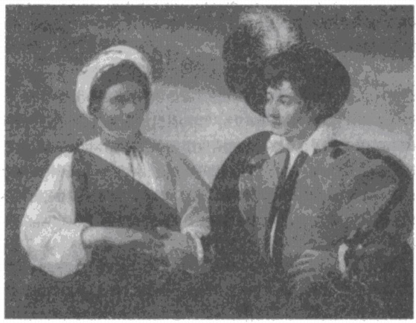</p>
<h3 border="1" id="filepos801600" class="calibre6"><span class="bold"> В аэропорту имени Кеннеди <br class="calibre10"/></span></h3>
<p class="calibre7">    В нью-йоркском международном аэропорту имени Кеннеди имеются гигантские стенды, уставленные журналами. Обычно журналы эти продает очень вежливое семейство с Индийского субконтинента (только родители, дети учатся в медицинском институте). На стендах — то, что следует постичь «знающему» человеку, чтобы «быть в курсе событий». Но сколько же времени пришлось бы убить на все эти журналы, даже если не читать те, что про рыбалку и мотоциклы (со сплетнями, так и быть, пролистаем все: можно хоть посмеяться)? Полжизни? Целую жизнь?</p>
<p class="calibre7">    К сожалению, все эти сведения не помогут читателю заглянуть в грядущий день. Скорее наоборот — они ослабят его провидческие способности.</p>
<p class="calibre7">    Есть еще один аспект проблемы прогнозирования: его «ингерентная» ограниченность, проистекающая не из человеческой природы, а из самой природы информации. Я уже говорил, что Черный лебедь обладает тремя качествами: непредсказуемостью, наличием серьезных последствий, ретроспективной объяснимостью. Давайте поговорим о непредсказуемости<a title="Скажу наконец читателям, сколько любовников было у Екатерины. Всего лишь 12." href="#filepos1535638"><span class="calibre11"><sup class="calibre12">[46]</sup></span></a>.</p>
<div class="mbppagebreak"></div><h2 border="1" class="calibre13" id="filepos803867"><span class="calibre14"><span class="bold"> Глава 11. Открытие на основе птичьего помета <br class="calibre10"/></span></span></h2>
<p class="calibre7">    <span class="italic">Предсказание Поппера о предсказателях. — Пуанкаре играет с бильярдными шарами. — Фон Хайеку можно быть непочтительным. — Предусмотрительные машины. — Пол Сэмюэлсон хочет от вас рациональности. — Остерегайтесь философа. — Требуйте каких-то определенностей.</span></p>
<br class="calibre15"/><p id="filepos804578" class="calibre7">    Мы убедились в том, что а) мы склонны к «туннелированию» и «узкому» мышлению (эпистемическая самонадеянность);</p>
<p class="calibre7">    б) успешность наших предсказаний сильно завышена — многие уверены, что сумеют все предвидеть и просчитать, на самом же деле это не так.</p>
<p class="calibre7">    Сейчас мы попробуем разобраться в том, что не принято афишировать: в структурных ограничениях нашей возможности предсказывать. Эти ограничения накладываются не человеческой природой, а природой самой этой деятельности — слишком сложной не только для нас, но и для любых инструментов, которые есть или когда-либо окажутся в нашем распоряжении. Отдельные Черные лебеди вечно будут неуловимы, значит, удач в прогнозировании нам не ждать.</p>
<h3 border="1" id="filepos805918" class="calibre6"><span class="bold"> Открытие на основе птичьего помета <br class="calibre10"/></span></h3>
<p class="calibre7">    Летом 1998 года я работал в одной европейской финансовой компании, которая чрезвычайно пеклась о своей репутации учреждения серьезного и прозорливого. Коммерческий отдел там состоял из пяти менеджеров, людей очень строгих (всегда, даже по пятницам, облаченных в темно-синие костюмы), которые все лето провели в заседаниях, разрабатывая «пятилетний план». Солидный должен был получиться документ, нечто вроде «руководства к действию» для фирмы. Пятилетний план? Для того, кто скептически относится к самой идее централизованного планирования, это абсолютная нелепость. Надо сказать, фирма развивалась естественно и спонтанно, все зависело не от решений начальства, а от конкретных действий работников. Ни для кого не было секретом, что начало самому прибыльному направлению их деятельности положил случайный звонок клиента, который попросил совершить неординарную финансовую операцию. В фирме вовремя сообразили, что можно создать отдел, который будет заниматься только такими операциями, раз они выгодны, и этот отдел быстро занял доминирующее место.</p>
<p class="calibre7">    Менеджеры летали на встречи по всему миру: Барселона, Гонконг и так далее. Мили и мили словоблудия. Трудились в поте лица, разумеется, не высыпались. Чтобы быть начальником, особого ума не требуется, требуется некая харизма плюс умение изображать скуку и страшную занятость (по причине крайне напряженного графика работы). Добавьте к этому «обязанность» ходить по вечерам в оперу.</p>
<p class="calibre7">    На встречах менеджеры устраивали мозговые штурмы — прения по поводу среднеотдаленного будущего: им требовалось «видеть перспективу». Но вскоре грянуло событие, не предусмотренное предыдущим пятилетним планом: Черный лебедь российского дефолта 1998 года и соответственно падение цен на латиноамериканских рынках долгосрочных кредитов. Дефолт оказался роковым: через месяц после утверждения чернового варианта нового плана пятилетки вся пятерка менеджеров оставила фирму — хотя обычно в компании крайне неохотно отпускали специалистов.</p>
<p class="calibre7">    Но я уверен, что и сегодня их преемники потеют над очередным «пятилетним планом». Никакие уроки нам не впрок.</p>
<h3 border="1" id="filepos809985" class="calibre6"><span class="bold"> Нечаянные открытия <br class="calibre10"/></span></h3>
<p class="calibre7">    В предыдущей главе я рассказывал о том, как была открыта наша эпистемическая самонадеянность, — совершенно случайно. Но такими были и многие другие открытия. Их гораздо больше, чем мы представляем.</p>
<p class="calibre7">    Классическая модель открытия: вы изучаете что-то, что, по-вашему, должно выглядеть так-то (скажем, ищете новый путь в Индию), а в результате находите нечто вообще никому пока неведомое (Америку).</p>
<p class="calibre7">    Если вы полагаете, что изобретения, которые нас окружают, появились благодаря тому, что кто-то торчал в лаборатории и творил в соответствии с рабочим графиком, то уверяю вас — ничего подобного! Практически все современные технологические прорывы — детища того, что называют словом серендипити. Этот термин впервые употребил в письме английский писатель Хорас Уолпол, находясь под впечатлением сказки «Три принца из Серендипа». Эти достославные принцы «благодаря случаю или собственной смекалистости постоянно совершали открытия, находя то, чего не искали».</p>
<p class="calibre7">    Иными словами, представьте, что вы находите что-то, чего не искали, и это что-то изменяет мир, а после открытия искренне удивляетесь, что «понадобилось столько времени», чтобы додуматься до столь очевидного. Сдается мне, что ни один журналист не присутствовал при изобретении колеса (главного двигателя прогресса), но как-то не верится, что люди разрабатывали проект по изобретению колеса и постановили в намеченный срок его завершить. Бьюсь об заклад, что все происходило совсем иначе. И в истории других изобретений тоже. Большинства из них.</p>
<p class="calibre7">    Сэр Фрэнсис Бэкон говорил, что грандиозные прорывы — самые непредсказуемые, те, что лежат за пределами воображения. Впрочем, это приметил не только Бэкон. Эта идея постоянно всплывает на поверхность, правда, потом опять тонет. Почти полвека назад знаменитый романист Артур Кестлер посвятил ей целую книгу с метким названием «Сомнамбулы». По его словам, открыватели, как сомнамбулы, натыкаются на некие результаты, даже не осознавая, какое сокровище попало к ним в руки. Для нас как бы само собой разумеется, что значимость открытий Коперника о движении планет была очевидна и ему, и его современникам; между тем лишь через 75 лет после его смерти власти светские и духовные сочли себя уязвленными. А Галилей? Каждый знает, что он стал жертвой гонений, защищая науку, на самом деле Церковь не воспринимала его слишком серьезно. Похоже, Галилей сам спровоцировал скандал, из упрямства кому-то надерзив. В конце того года, когда Дарвин и Уоллес представили в Линнеевское общество свои труды об эволюции путем естественного отбора, — труды, в корне изменившие наш взгляд на мир, президент общества объявил, что за прошедший год не произошло никаких «ярких открытий», которые можно было бы назвать революционными.</p>
<p class="calibre7">    Но когда приходит наша очередь предсказывать, мы тут же забываем о непредсказуемости неизведанного. Уверен: прочтя эту главу и прочие рассуждения на эту тему, читатели полностью с ними согласятся, но как только сами начнут размышлять о грядущем, тут же забудут про все разумные доводы.</p>
<p class="calibre7">    А вот вам драматический пример открытия-серендипити. Убираясь однажды в лаборатории, Александр Флеминг обнаружил на одной из не вымытых чашек Петри со старым препаратом пенициллиновую плесень. И заодно ему посчастливилось обнаружить, что пенициллин разрушает бактерии. Благодаря этому открытию многие из нас сегодня живы и здоровы (я уж упоминал в главе 8, что в том числе и я: брюшной тиф, если его не лечить, часто приводит к смертельному исходу). Действительно, Флеминг искал «кое-что», но истинное его открытие было из разряда серендипити. К тому же представителям официальной медицины потребовалось немало времени, чтобы понять, что попало к ним в руки; это сейчас, спустя годы, нам ясно, насколько знаменательным было открытие. А тогда даже сам Флеминг успел утратить веру в свою идею — до того, как она обрела вторую жизнь.</p>
<p class="calibre7">    В 1965 году двое радиоастрономов в лаборатории компании «Белл» в Нью-Джерси, устанавливая большую антенну, постоянно слышали фоновый шум, шипение, подобное статическим помехам при плохом приеме. Им не удавалось избавиться от шума — даже после того, как они счистили с тарелки птичьи экскременты (они были уверены, что в шуме повинен именно помет). Астрономы не сразу догадались, что слышат отзвуки рождения Вселенной, космическое микроволновое фоновое излучение. Это открытие возродило к жизни теорию Большого взрыва, созданную когда-то их коллегами. На сайте лаборатории я нашел следующий текст, объясняющий, почему это «открытие» — одно из главных научных достижений столетия:</p>
<div class="calibre18"> </div><blockquote class="calibre19"><blockquote class="calibre19">
<p class="calibre7">    Дэн Станционе, тогда президент лаборатории «Белл», а в момент ухода Пензиаса [одного из двух радиоастрономов, совершивших открытие] на пенсию — исполнительный директор компании «Люсент», сказал, что Пензиас «воплощает тот творческий дух и ту техническую мощь, которые являются отличительными чертами лаборатории». Станционе назвал Пензиаса человеком Ренессанса, «который прояснил наше смутное представление о мироздании и раздвинул границы науки во многих важных областях».</p>
</blockquote></blockquote>
<p class="calibre7">    Ренессанс-шменессанс. Эти два парня искали птичий помет, чтобы соскрести его! Помет, а никакой не отзвук Большого взрыва, и, само собой, отнюдь не сразу осмыслили значение своей находки. Как же печально, что физику Ральфу Альферу, который в соавторстве с такими зубрами, как Георгий Гамов и Ханс Бете, впервые выдвинул идею реликтового излучения, пришлось потом узнать о сенсационном открытии из «Нью-Йорк тайме». Вообще-то авторы исследований о рождении Вселенной, которых становилось все меньше и меньше, высказывали сомнении в том, что это излучение когда-нибудь удастся измерить. Очень частый в науке ход событий: искавшие доказательств их не нашли, не искавшие — нашли и обрели славу и статус первооткрывателей.</p>
<p class="calibre7">    И вот какой еще парадокс. Мало того что прогнозисты терпят катастрофические неудачи в предсказании глобальных перемен, к которым приводят случайные открытия, но, как оказалось, сами эти перемены совершаются гораздо медленнее, чем обычно предсказывается. Когда только возникает какая-то новая технология, мы либо недооцениваем, либо переоцениваем ее значимость. Томас Уотсон, основатель корпорации «Ай-би-эм», когда-то заявлял, что компьютеры будут востребованы в очень малых количествах.</p>
<p class="calibre7">    То, что читатель, вероятно, видит эти строки не на экране компьютера, а на страницах книги (безнадежно устаревшего средства информации), некоторые гуру «цифровой революции» воспримут как неслыханное чудачество. То, что вы их читаете не на эсперанто, а на архаичном, неупорядоченном и непоследовательном английском, французском или русском, опровергает пророчества полувековой давности. Тогда считалось, что земляне скоро будут общаться на логически безупречном, не отягощенном двусмысленностями, платонически стройном лингва франка нова.</p>
<p class="calibre7">    И мы пока еще не проводим выходные на космических станциях, что дружно предсказывали тридцать лет назад. Вот пример корпоративной самонадеянности: после высадки человека на Луну ныне покойная компания «Пан Американ» начала заблаговременно принимать заказы на полеты с Земли на Луну и обратно. Очень предусмотрительно — только вот компания не предвидела собственной скорой кончины.</p>
<h3 border="1" id="filepos823540" class="calibre6"><span class="bold"> Решение ждет своей задачи <br class="calibre10"/></span></h3>
<p class="calibre7">    Инженеры изобретают технологические новинки, потому что им нравится сам процесс изобретательства, а отнюдь не ради познания тайн природы. Получается так, что только некоторые из этих изобретений открывают перед нами новые перспективы. Из-за эффекта скрытых свидетельств мы игнорируем технические усовершенствования, которые сыграли лишь ту роль, что дали инженерам работу. Усложнение технологий приводит к неожиданным открытиям, которые, в свою очередь, тоже потом приводят к неожиданным открытиям. Но у наших изобретений редко бывает та судьба, которую мы им пророчим; лишь благодаря любви инженеров к созданию всяческих игрушек и машинок происходит очередной прорыв в познании мира. Просвещению нашему способствуют совсем не те инструменты, что предназначены для подтверждения и доказательства тех или иных теорий, а как раз те, что поначалу не имеют ни малейшего отношения к интересующему нас предмету исследования. Компьютер делали не для того, чтобы мы могли развивать новую, визуальную, геометрическую математику, а для других целей. Так вышло, что он позволил совершить такие математические открытия, о которых мало кто помышлял. Кстати, и совершенно не для того, чтобы можно было болтать с друзьями в Сибири, но именно он, компьютер, способствовал буйному расцвету общения на дальних расстояниях. Как эссеист могу засвидетельствовать, что интернет с помощью досужих журналистов здорово помог мне распространить мои идеи. Но это определенно не та цель, которую ставили перед собой его разработчики — военные.</p>
<p class="calibre7">    Лазер был изобретен с конкретной целью (совершенно не «прикладной»), но позже нашел множество разных применений, о которых в момент его появления даже не мечтали. Это типичный случай «решения, ждущего своей задачи». Одними из первых лазерный луч использовали хирурги-офтальмологи для припаивания отслоившейся сетчатки. Через полвека британский еженедельник «Экономист» спросил Чарльза Таунса, якобы «отца» лазера<a title="В 1964 г. за изобретение лазера Чарльз Таунс получил половину Нобелевской премии; вторую половину получили советские физики Николай Басов и Александр Прохоров. (Прим. ред.)" href="#filepos1535928"><span class="calibre11"><sup class="calibre12">[47]</sup></span></a>, помышлял ли он об исцелении сетчатки. Нет, не помышлял. Ему нужно было тогда расщеплять пучки света, и ничего больше. Оказывается, коллеги часто подтрунивали над Таунсом, называя его изобретение никчемным. Но вспомните, что такое лазер сегодня: компакт-диски, коррекция зрения, микрохирургия, хранение и чтение информации — все это непредвиденные приложения данной технологии<a title="Значительная часть споров между креационистами и эволюционистами (в которых я не участвую) сводится к следующему: креационисты верят, что мир был создан по какому-то замыслу, а эволюционисты воспринимают мир как результат случайных изменений и бесцельных процессов. Взглянув на компьютер или автомобиль, довольно сложно воспринимать их как продукт случайных процессов. Однако же они таковы." href="#filepos1536392"><span class="calibre11"><sup class="calibre12">[48]</sup></span></a>.</p>
<p class="calibre7">    Мы создаем игрушки. Некоторые из них изменяют мир.</p>
<h3 border="1" id="filepos829282" class="calibre6"><span class="bold"> Продолжайте искать <br class="calibre10"/></span></h3>
<p class="calibre7">    Летом 2005 года я был гостем одной биотехнологической компании в Калифорнии, добившейся невероятного успеха. Меня встретили в футболках и значках с изображением кривой распределения, еще мне объявили об основании «Клуба толстых хвостов» («толстые хвосты»<a title="Имеются в виду «хвосты» кривой распределения. (Прим. ред.)" href="#filepos1537264"><span class="calibre11"><sup class="calibre12">[49]</sup></span></a>—это то же самое, что Черные лебеди). Я впервые увидел фирму, которая жила за счет Черных лебедей, — не тех, которые жестоки и коварны, а вполне к этой фирме благожелательных. Как выяснилось, компанией управлял ученый, и поэтому у него было научное чутье, оно и подсказало ему важную вещь: надо позволять другим ученым заниматься тем, что подсказывало им их чутье. А уж потом настал черед коммерции. Мои хозяева, истинные ученые, понимали, что в исследовательской работе сплошь и рядом случаются серендипити и что с непредвиденного тоже можно получать прибыль, и неплохую, только надо это непредвиденное тоже брать в расчет, и выстраивать бизнес соответствующим образом. Виагра, изменившая перспективы и образ жизни пенсионеров, создавалась как лекарство от повышенного давления. Еще одно лекарство от гипертонии превратилось в средство от облысения. Мой друг Брюс Гольдберг, который хорошо изучил феномен случайности, называет эти непредусмотренные отклонения «угловыми ударами». Многие страшатся непредвиденных последствий, но смелые авантюристы, готовые к технологическим сюрпризам, за их счет процветают.</p>
<p class="calibre7">    Эта биокомпания в погоне за удачей неукоснительно (хоть и не афишируя это) следовала афоризму Луи Пастера: «Удача благосклонна к подготовленным умам». Он, как и все великие первооткрыватели, кое-что понимал в случайных открытиях. Лучший способ повысить свои шансы — продолжать исследования. Анализировать и фиксировать благоприятные возможности — чтобы потом их не пропустить и не упустить.</p>
<p class="calibre7">    Чтобы предсказать успех какого-либо технологического новшества, надо предусмотреть все причуды судьбы и элементы коллективного помешательства, которые никоим образом не связаны с объективной полезностью самой технологии (если предположить, что есть на свете такой зверь — объективная полезность). Великое множество замечательных идей было в конечном итоге похоронено. Например, сигвей, электрический самокат, который, согласно пророчествам, должен был изменить облик городов и многое другое. Размышляя обо всем этом, я увидел в аэропортовском киоске журнал «Тайм»: на обложке красовались «важнейшие изобретения» года. В момент выхода журнала они казались наиважнейшими, может, пробудут такими еще недельки две. Поистине журналисты отлично учат нас тому, как не надо учиться.</p>
<h3 border="1" id="filepos834316" class="calibre6"><span class="bold"> Как предсказывать предсказания <br class="calibre10"/></span></h3>
<p class="calibre7">    Тут самое время вспомнить нападки доктора Карла Раймунда Поппера на историцизм. В главе 5 я уже говорил: это было самое значительное из его прозрений, но оно остается наименее известным. Те, что толком не знакомы с его работами, обычно слышали лишь о его принципе «фальсификации», противоположном «верификации». Но это все частности, отвлекающие от основной сути его идей: он возвел скептицизм в метод, он научил скептиков действовать конструктивно.</p>
<p class="calibre7">    Когда-то Карл Маркс в великом раздражении написал диатрибу «Нищета философии» — в ответ на «Философию нищеты» Прудона. Ну а Поппер, которого раздражала вера некоторых философов (его современников) в научное понимание истории, написал «Нищету историцизма».</p>
<p class="calibre7">    Гениальная догадка Поппера заключалась в том, что прогнозировать исторические события практически невозможно, а следовательно, «неконкретные» области знания, то есть историю и социальные науки, необходимо понизить в ранге почти до уровня эстетики и увлечений вроде коллекционирования бабочек или монет. (Конечно, Поппер, получивший классическое венское образование, так далеко не заходил. Я захожу. Я из Амиуна.) Так называемые гуманитарные исторические науки являются нарративно-зависимыми штудиями.</p>
<p class="calibre7">    Главный аргумент Поппера таков: для предсказания исторических событий нужно уметь предсказывать технологические инновации, которые по существу своему непредсказуемы.</p>
<p class="calibre7">    Непредсказуемы «по существу»? Я объясню, что он имеет в виду, на современных примерах. Обращаю ваше внимание на следующую особенность знания: если вы ожидаете, что завтра вы наверняка будете знать, что ваш партнер изменял вам с самого начала отношений, то вы и сегодня уже наверняка знаете, что он изменяет вам, и уже сегодня предпримете некие действия. Скажем, схватите ножницы и раскромсаете все его галстуки от Феррагамо. Вы не будете говорить себе: я это узнаю завтра, но ведь не сегодня же, так что пока не из-за чего нервничать и можно спокойно поужинать.</p>
<p class="calibre7">    Эта особенность знания характерна для любых его форм. В статистике есть так называемый закон итерированных условных математических ожиданий; приведу, так сказать, абсолютную его формулировку: если я ожидаю, что некогда в будущем я буду ожидать чего-то, то я этого уже ожидаю сейчас.</p>
<p class="calibre7">    Вспомним еще раз колесо. Предположим, вы историк из каменного века, которому поручили предсказать будущее в подробном отчете для отдела планирования вашего племени, и вам конечно же придется предсказать изобретение колеса, иначе вы упустите самое главное. Но раз вы способны предвидеть изобретение колеса, то, стало быть, уже знаете, как оно выглядит, и соответственно уже знаете, как сделать колесо, так что вы его уже изобрели. Вот вам и предсказанный Черный лебедь!</p>
<p class="calibre7">    Существует и более мягкий вариант закона итерированных ожиданий. Его можно сформулировать так: чтобы предсказать будущее, необходимо учитывать и те новшества, которые там появятся. Если вы знаете, что в будущем сделаете открытие, то вы его уже почти сделали. Вообразите, что вы специалист с кафедры прогнозирования в средневековом университете и занимаетесь предсказанием истории будущего (для удобства — отдаленного двадцатого века). Вам нужно будет додуматься до изобретения паровой машины, электричества, атомной бомбы, интернета, массажных валиков в спинке самолетного кресла и до странного обряда «деловая встреча», во время которого откормленные малоподвижные люди добровольно препятствуют циркуляции крови в своем организме с помощью дорогостоящей инновации под названием «галстук».</p>
<p class="calibre7">    И штука тут не в банальной несообразительности. Часто одно только знание об изобретении порождает целый ряд сходных изобретений, хотя никакие детали исследований не разглашались — нет нужды ловить шпионов и публично их вешать. В математике это обычное дело: стоит появиться сообщению о доказательстве какой-нибудь зубодробительной теоремы, и доказательства оной являются в больших количествах буквально ниоткуда, сопровождаемые обвинениями в плагиате и ссылками на утечку информации. Никакого плагиата могло и не быть: знание, что решение существует, — уже огромный шаг к решению.</p>
<p class="calibre7">    А вот грядущие изобретения нам представить себе невероятно трудно (в противном случае мы бы их уже сделали!). В день, когда мы обретем способность предвидеть изобретения, мы окажемся в мире, где все мыслимые изобретения уже сделаны. Здесь уместно вспомнить одну апокрифическую историю: в 1899 году глава патентного бюро Великобритании ушел в отставку, поскольку считал, что открывать больше нечего, — только в вышеупомянутый день такая отставка была бы оправданна<a title="Подобные заявления — не редкость. Например, физик Альберт Майкельсон в конце XIX в. считал, что в области естественных наук все уже открыто, осталось лишь повышать точность измерений на десятые доли." href="#filepos1537521"><span class="calibre11"><sup class="calibre12">[50]</sup></span></a>.</p>
<p class="calibre7">    Кстати, Поппер был не первым, кто задумался о предельности знания. В Германии, в конце XIX века, Эмиль Дюбуа-Реймон провозгласил: ignoramus et ignorabimus — «мы ничего не знаем и никогда не узнаем». Почему-то его идеи были преданы забвению. Но они успели вызвать ответную реплику: математик Дэвид Гилберт, дабы опровергнуть Дюбуа-Реймона, составил список задач, которые математики должны будут решить в течение следующего столетия.</p>
<p class="calibre7">    Но и Дюбуа-Реймон был не прав. Нам не дано определить границы непознаваемого. Как часто и с какой самоуверенностью мы твердим: «Мы никогда этого не узнаем», не ведая, какие тайны нам приоткроет будущее. Огюст Конт, основатель позитивистской школы, которую (несправедливо) обвиняют в стремлении придать наукообразие всему вокруг, утверждал, что человечество никогда не узнает, каков химический состав неподвижных звезд. Но, как писал Чарльз Сандерс Пирс, «на странице еще не высохла типографская краска, а уже был изобретен спектроскоп, и то, что Конту казалось совершенно непознаваемым, начало проясняться». По иронии судьбы, другие прогнозы Конта — что мы научимся понимать механизмы, управляющие жизнью общества, — были чрезмерно (и опасно) оптимистичны. Он предполагал, что общество подобно часовому механизму и предъявит нам секреты своего устройства.</p>
<p class="calibre7">    Подведу итоги своих рассуждений: для предсказания нужно знать, какие технологические новшества появятся в будущем. Но подобное знание автоматически позволило бы нам начать разработку этих технологий уже сейчас. Ergo, мы не знаем того, что нам предстоит узнать.</p>
<p class="calibre7">    Кто-то может сказать, что это умозаключение тривиально, что люди всегда считают, будто им ведома истина в последней инстанции, упуская из виду, что их предки, коих они высмеивают, считали так же. Мое умозаключение тривиально, тогда почему же мы не принимаем его во внимание? Все дело в вывертах человеческой природы. Помните психологические дискуссии об асимметрии в восприятии профессионального мастерства в предыдущей главе? Чужие недостатки мы замечаем, а свои нет. В искусстве самообмана мы близки к совершенству.</p>
<h3 border="1" id="filepos847360" class="calibre6"><span class="bold"> Энный бильярдный шар <br class="calibre10"/></span></h3>
<p class="calibre7">    Об Анри Пуанкаре, несмотря на его славу, часто говорят как о недооцененном мыслителе: потребовалось почти столетие, чтобы некоторые его идеи нашли отклик. Возможно, он был последним великим мыслителем среди математиков (или, наоборот, математиком среди мыслителей). Каждый раз, увидев футболку: Альбертом Эйнштейном, иконой нашей эпохи, я вспоминаю Пуанкаре. Безусловно, Эйнштейн достоин всяческого почтения, но он оттеснил многих других. В нашем сознании слишком мало пространства, победитель занимает все.</p>
<br class="calibre15"/><p class="calibre16">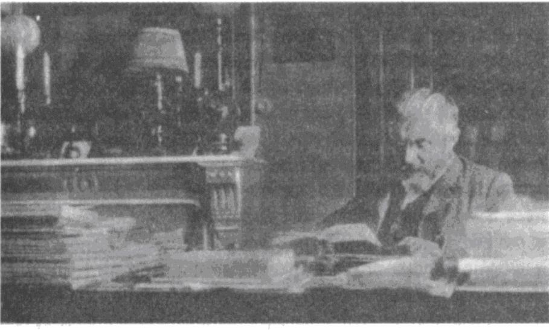</p>
<br class="calibre15"/><h3 border="1" id="filepos848493" class="calibre6"><span class="bold"> В стиле Третьей республики <br class="calibre10"/></span></h3>
<p class="calibre7">    Пуанкаре — личность феноменальная. Помню, отец все советовал мне почитать его эссе, и не только ради их научных достоинств, это ведь еще и великолепная французская проза. Будучи великим мастером, Пуанкаре изложил свои мысли в серии статей, подделанных под импровизированные речи. В них, как в любом литературном шедевре, множество повторов, отступлений и всего такого, что тщеславный редактор со штампованным мозгом не одобрил бы — но благодаря железной логике мышления эти «излишества» только помогают восприятию текста.</p>
<p class="calibre7">    В тридцать с лишним лет Пуанкаре стал плодовитым литератором. Он торопился (он и умереть слишком уж поторопился— в 58 лет), так спешил, что не утруждался исправлением опечаток и грамматических ошибок в своих эссе, даже если замечал их. Считал нецелесообразным тратить драгоценное время на такие мелочи. Подобных гениев больше не рождается — или им больше не дозволяют писать так, как они считают нужным.</p>
<p class="calibre7">    После смерти Пуанкаре его идеи вскоре были забыты. А та идея, которая так важна для нас сегодня, воскресла только через столетие, причем в иной форме. Да, напрасно я тогда в детстве не уделил должного внимания работам Пуанкаре. Уже гораздо позже я обнаружил: в блистательном своем эссе «Наука и гипотеза» Пуанкаре яростно критикует пресловутую «гауссову кривую».</p>
<p class="calibre7">    Что и говорить, Пуанкаре был истинным философом науки: в своих рассуждениях он всегда хорошо чувствовал границы самого предмета рассуждений, а это и есть признак истинной философии. Я люблю дразнить французских интеллектуалов, называя Пуанкаре своим самым любимым французским философом. «Это он-то философ? Да вы о чем, месье?» Всегда очень непросто объяснять людям, что мыслители, которых они возвели на пьедестал, такие как Анри Бергсон или Жан-Поль Сартр, во многом — детища моды и не могут сравниться с Пуанкаре: его непосредственное влияние на развитие философской мысли будет длиться еще многие столетия. Собственно, это отличный пример скандальной ненадежности предсказания: кого считать философом и кого из философов нужно изучать, решает французское Министерство образования.</p>
<p class="calibre7">    Я смотрю на портрет Пуанкаре. Представительный осанистый мужчина с бородой. Широкообразованный аристократ времен Третьей республики, буквально живший наукой, он докапывался до основ в своей сфере и обладал необъятными познаниями в самых разных областях. Он принадлежал к той прослойке мандаринов, которая обрела вес в обществе в конце XIX века: к верхушке среднего класса, влиятельной, но не чрезмерно богатой. Отец его был врачом, профессором медицины, дядя — выдающимся ученым и администратором, а кузен его, Раймон, стал президентом Французской Республики. В ту пору внуки коммерсантов и богатых землевладельцев выбирали для себя интеллектуальные поприща.</p>
<p class="calibre7">    Я не могу представить себе Пуанкаре на футболке. Или с высунутым языком — как увековечил себя на знаменитом снимке Эйнштейн. В нем есть что-то исключающее шалости, достоинство времен Третьей республики.</p>
<p class="calibre7">    Современники называли Пуанкаре королем математики и науки, правда были и такие узкомыслящие математики, вроде Шарля Эрмита, которые полагали, что он слишком доверяется интуиции, слишком интеллектуален, слишком сильно «жестикулирует». Если математики упрекают своего собрата в том, что он в каком-то своем опусе «жестикулирует», это означает, что объект их придирок а) одарен научным чутьем; б) не утратил связь с реальностью; в) ему есть что сказать; г) он прав. Да-да, потому что про «жестикуляцию» говорят тогда, когда не находится никаких более достойных аргументов.</p>
<p class="calibre7">    Одним молчаливым кивком Пуанкаре мог предрешить успех (или неудачу) любого начинающего ученого. Многие уверяют, что Пуанкаре пришел к понятию относительности раньше Эйнштейна, что Эйнштейн познакомился с этой идеей благодаря Пуанкаре, но великий математик не стал ничего уточнять. Кто эти многие? Естественно, французы. Но их заявление, похоже, отчасти подтверждено другом и биографом Эйнштейна, физиком Абрахамом Пайсом. Что ж, Пуанкаре был слишком аристократом по происхождению и устоям, чтобы позволить себе обжаловать авторство данного открытия.</p>
<p class="calibre7">    Пуанкаре я отвел ключевую роль в этой главе, ведь он жил в эпоху, когда прогресс в области предсказаний был стремительным, — возьмите хотя бы небесную механику. Научная революция, казалось, дала инструменты, которые позволят понять будущее. Неопределенность исчезала. Вселенная предстала перед человечеством в образе часов — изучай движение ее колесиков и прогнозируй себе на здоровье. Оставалось лишь построить правильные модели и поручить инженерам расчеты. Будущее виделось нам простой прогрессией неких технологических данностей.</p>
<h3 border="1" id="filepos857295" class="calibre6"><span class="bold"> Задача трех тел <br class="calibre10"/></span></h3>
<p class="calibre7">    Пуанкаре первым из ведущих математиков понял, что все наши уравнения по сути своей предельны. Он ввел понятие нелинейности: малые события могут вести к серьезным последствиям; эта идея стала популярной, возможно, даже слишком популярной, в виде «теории хаоса». Почему эта популярность вредна? Потому что нелинейность, по мысли Пуанкаре, — это серьезный довод, ограничивающий пределы предсказуемости, а вовсе не призыв использовать математические методы для расширения зоны прогнозов. Математика и сама может с легкостью продемонстрировать нам, что ее возможности не безграничны.</p>
<p class="calibre7">    Были в истории открытия нелинейности и свои сюрпризы (а как же иначе?). Началось все с того, что Пуанкаре принял участие в конкурсе, который математик Густав Миттаг-Леффлер приурочил к шестидесятилетию шведского короля Оскара. Мемуар Пуанкаре о стабильности Солнечной системы I получил высшую на тот момент научную награду (это было? счастливое время, когда еще не существовало на свете Нобелевской премии). И вдруг досадная неожиданность: научный редактор, проверявший статью перед публикацией, обнаружил ошибку в вычислениях. Однако выяснилось, что, если ее поправить, выводы получаются прямо противоположными: система непредсказуема (если использовать математический термин — неинтегрируема). Публикацию благоразумно задержали, статья — исправленная — вышла через год.</p>
<p class="calibre7">    Аргументация Пуанкаре была проста: при предсказании будущего динамику рассматриваемого процесса нужно моделировать со все возрастающей точностью, так как предел погрешности очень быстро возрастает. Проблема в том, что необходимая точность невозможна: «размытость» вашего прогноза внезапно достигает апогея — наступает момент, когда от вас требуется бесконечно точное знание прошлого. Пуанкаре продемонстрировал это на очень наглядном примере, известном как задача трех тел. Если в системе, устроенной по принципу Солнечной, имеется только две планеты и на их орбиты более ничто не влияет, то вы без всяких хлопот сможете предсказывать поведение этих планет. Но поместите между ними третье небесное тело, пусть даже малюсенькую комету. Сначала движение этого третьего тела никак не сказывается на двух других телах, а потом вдруг раз — и его воздействие уподобляется мощному взрыву. Малейшие перемены в расположении этого крохотного тела в конце концов предопределят будущее планет-левиафанов.</p>
<p class="calibre7">    И чем мудреней механика, тем труднее предсказывать такие «взрывы». Наш мир, к сожалению, намного сложнее, чем задача трех тел: в нем не три объекта, а гораздо больше. Тут мы имеем дело с тем, что нынче называется динамической системой, а мир, как мы видим, — система весьма динамическая.</p>
<p class="calibre7">    Вообразите, что будущее — это ствол с ветвями, каждая из которых образует развилки с множеством ответвлений. Чтобы представить, как пасует наша интуиция перед этими множащимися нелинейными эффектами, вспомните знаменитую притчу о шахматной доске. Изобретатель шахмат попросил следующую награду: одно зернышко риса на первую клетку, два на вторую, четыре на третью, потом восемь, шестнадцать и так далее, каждый раз (всего шестьдесят четыре раза) удваивая количество. Правитель сразу согласился исполнить столь ничтожную просьбу, но вскоре понял, что его перехитрили. Обещанное количество риса превысило бы все мыслимые запасы!</p>
<p class="calibre7">    Эта мультипликативная сложность, требующая для прогнозирования все большей и большей точности исходных данных, может быть проиллюстрирована следующим простым упражнением: предсказанием передвижения бильярдного шара по столу. (Я использую в этом примере расчеты, выполненные математиком Майклом Берри.) Если вы знаете все основные параметры покоящегося шара, можете рассчитать сопротивление поверхности стола (это элементарно) и силу удара, то довольно просто определите, что случится при первом столкновении. Предсказать последствия второго удара будет труднее, но тоже возможно: придется лишь уточнить уже измеренные параметры. Но чем дальше, тем хуже: для корректного расчета девятого удара нужно учесть гравитационное воздействие тела, находящегося возле стола (по скромным прикидкам Берри, в этом теле менее 70 килограммов). А для расчета пятьдесят шестого удара в ваших вычислениях должны будут присутствовать все элементарные частицы Вселенной. Электрон на краю Вселенной, отделенный от нас 10 миллиардами световых лет, может оказать значимый эффект на результат. Помните о дополнительной трудности: нужно также принять во внимание все прогнозы относительно местоположения этих переменных в будущем. Чтобы предсказать движение бильярдного шара по столу, нужно знать динамику всей Вселенной, каждого атома! Мы можем легко предсказать траектории крупных объектов, скажем, планет (хотя на довольно малом отрезке времени), но для объектов поменьше их уже так просто не рассчитаешь — а этих объектов неизмеримо больше, чем крупных.</p>
<br class="calibre15"/><p class="calibre16">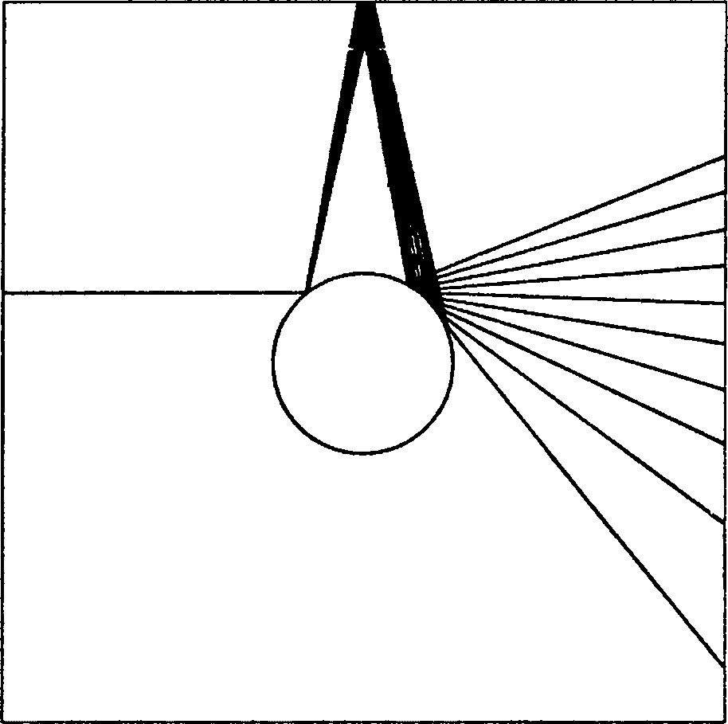</p>
<br class="calibre15"/><p class="calibre7">    Заметьте, что в примере с бильярдными шарами мы имели в виду некий абстрактный мир, простой и понятный, без социальных безумств, которые творятся иногда совершенно произвольно. У бильярдных шаров нет разума. В примере также не учитываются квантовый эффект и эффект относительности. Мы не использовали и понятие (к которому часто обращаются шарлатаны) «принцип неопределенности». Нас не волнует, что на субатомном уровне точность измерений крайне ограниченна. Мы занимаемся исключительно самими бильярдными шарами!</p>
<p class="calibre7">    При наличии динамической системы, где помимо одного-единственного шара имеются и другие объекты, где траектории до некоторой степени зависят друг от друга, возможность предсказывать будущее не просто уменьшается — она становится предельно ограниченной. Пуанкаре предложил работать только с качественными, а не с количественными величинами: обсуждать некоторые свойства систем, но не просчитывать их. Можно точно мыслить, но нельзя использовать числа. Пуанкаре даже придумал для этого специальный метод — анализ in situ<a title="На месте (лат.)." href="#filepos1538036"><span class="calibre11"><sup class="calibre12">[51]</sup></span></a>, воспринятый топологией. Предсказание и прогнозирование — дело куда более сложное, чем обычно считают, но, чтобы понять это, нужно знать математику. А чтобы принять это, нужно и понимание и мужество.</p>
<p class="calibre7">    В 1960-х метеоролог Эдвард Лоренц из Массачусетского технологического института самостоятельно повторил открытие Пуанкаре — опять же случайно. Он работал над компьютерной программой погоды, моделируя ее динамику на несколько дней вперед. Как-то он попытался воспроизвести ту же модель, введя те же, как ему казалось, исходные параметры, но получил совершенно иные результаты. Сначала он решил, что дело в компьютерном сбое или ошибке вычисления. Первые компьютеры были чудовищно громоздкими, работали медленно, не то что нынешние, поэтому их пользователи всегда искали способ их «поторопить». Лоренц быстро сообразил, что столь значительные расхождения в результатах произошли из-за того, что ради упрощения задачи он несколько округлил исходные параметры. Это явление было названо «эффектом бабочки»: взмах крыльев индийской бабочки может два года спустя вызвать ураган в Нью-Йорке. Открытие Лоренца пробудило интерес к «теории хаоса».</p>
<p class="calibre7">    Разумеется, исследователи обнаружили, что открытие Лоренца было предвосхищено трудами не только Пуанкаре, но и прозорливого интуитивиста Жака Адамара, который размышлял о тех же проблемах примерно в 1898 году, а потом прожил еще почти семь десятилетий и умер в возрасте 98 лет<a title="Есть и другие ограничения, которые я даже не пытаюсь здесь рассматривать. Я обхожу молчанием тот класс невычислимости, который принято называть NP-полнотой." href="#filepos1538215"><span class="calibre11"><sup class="calibre12">[52]</sup></span></a>.</p>
<h3 border="1" id="filepos871546" class="calibre6"><span class="bold"> Хайека по-прежнему игнорируют <br class="calibre10"/></span></h3>
<p class="calibre7">    Открытия Поппера и Пуанкаре показывают, насколько ограниченны наши возможности предвидеть будущее. Оно оказывается очень сложным отражением прошлого — а то и не отражением вовсе.</p>
<p class="calibre7">    Друг сэра Карла Поппера, экономист-интуитивист Фридрих Хайек очень эффективно применил эти знания к общественным наукам. Хайек— один из тех редких прославленных представителей своей «профессии» (вместе с Дж. М. Кейнсом и ДжЛ.С. Шэклом), кто концентрировался на истинной неопределенности, на ограничениях знания, на непрочтенных книгах в библиотеке Эко.</p>
<p class="calibre7">    В 1974 году он получил премию Шведского государственного банка по экономическим наукам памяти Альфреда Нобеля, но если вы прочтете его нобелевскую речь, то будете несколько удивлены. В этой лекции с красноречивым названием «Претензии знания» Хайек в основном бранил других экономистов и критиковал идею планирования. Он заявил, что нельзя использовать инструменты естественных наук в науках общественных. К сожалению, очень скоро начался настоящий бум как раз методов «естественников» в экономике. Заковыристые уравнения невероятно усложняли жизнь истинных мыслителей-эмпириков, она стала даже еще более тяжкой, чем до знаменитой речи Хайека. Каждый год в какой-нибудь статье или книге оплакивают судьбу экономики и сетуют на ее потуги подражать физике. В самой недавней из прочитанных мной статей на эту тему говорилось, что экономистам куда больше пристала роль скромных философов, чем верховных жрецов. Но что толку? В одно ухо влетело — в другое вылетело.</p>
<p class="calibre7">    По Хайеку, верный прогноз может дать только сама система, а не чьи-то предписания. Одно заведение, скажем, некий главный отдел планирования, не может аккумулировать все сведения, значительные фрагменты информации будут отсутствовать. Но общество в целом обязательно вберет в себя эти фрагменты. Общество в целом мыслит нешаблонно. Хайек бранил социализм и регулируемые экономики, считая их порождением того, что я назвал знанием «ботаников», или платонизмом. Из-за весьма объемистых на сегодняшний день научных знаний мы вдруг возомнили, что способны теперь видеть и понимать те порой почти незаметные перемены, которые совершаются в нашем мире, и якобы готовы постичь, насколько каждая из них значима. Хайек остроумно назвал этот нажитый нами недуг «сциентизмом».</p>
<p class="calibre7">    Сия болезнь глубоко укоренилась в наших общественных институтах. Вот почему я так боюсь правительств и больших корпораций. Ведь в сущности, они очень схожи. Правительства делают прогнозы, компании плодят проекты; каждый год различные финансовые аналитики предсказывают уровень процентных ставок по займам и состояние фондового рынка на конец следующего года. Корпорации выживают не потому, что сделали точные прогнозы, а потому, что, как те топ-менеджеры, которые приезжают делиться опытом в Уортон, просто попали в разряд везучих. И еще как рестораторы, они, вероятно, больше вредят себе, чем нам. Нам так даже иногда помогают, потворствуя нашим потребительским запросам и предоставляя нам полезные товары и услуги, например дешевые телефонные звонки по всему миру, которые были обеспечены чрезмерными капиталовложениями в эпоху «доткомов». Пусть прогнозируют, сколько их душе угодно, раз это так нужно для их драгоценного бизнеса. Нам, потребителям, все равно. Да пусть хоть вешаются, если хотят.</p>
<p class="calibre7">    Собственно, в главе 8 я уже писал, что мы, ньюйоркцы, получаем выгоду от донкихотской уверенности корпораций и рестораторов в собственной непобедимости. Это тот плюс капитализма, который меньше всего обсуждается.</p>
<p class="calibre7">    Корпорации пусть себе лопаются, раз им так угодно, тем самым поддерживая нас, потребителей, пересыпая свое богатство в наши карманы, — чем больше банкротств, тем нам лучше. А вот правительство — контора посерьезнее, и нам нужно быть начеку, а то того и гляди придется расплачиваться за его глупость. Свободные же рынки мы как частные лица должны любить: их участники могут быть сколь угодно некомпетентными.</p>
<p class="calibre7">    Единственное, за что можно упрекнуть Хайека, это за четкое качественное разграничение физики и социальных наук. Он показывает, что методы физики не подходят ее гуманитарным сестрицам, и винит во всем технарское мышление. Но в его времена все были уверены, что физика, королева наук, постепенно завоюет мир. Выяснилось, однако, что даже с естественными науками ситуация не так уж проста. Хайек был прав в своих претензиях к социальным наукам, несомненно, он был прав и в том, что доверял естественникам больше, чем гуманитариям-обществоведам, но то, что он окрестил слабостями социального знания, можно отнести ко всему знанию. Ко всякому знанию без исключения.</p>
<p class="calibre7">    Почему? Потому что проблема подтверждения позволяет нам констатировать, что мы плохо знаем окружающий нас мир. Мы афишируем прочитанные книги, но забываем о том, как много еще не прочитано. Физика достигла больших успехов, однако это лишь узкая область естественных наук, а людям свойственно переносить ее, так сказать, частный успех на всю науку в целом. Я бы предпочел, чтобы мы глубже проникли в секреты рака или (в высшей степени нелинейной) погоды, чем в тайны происхождения Вселенной.</p>
<h3 border="1" id="filepos881136" class="calibre6"><span class="bold"> Как не быть «ботаником» <br class="calibre10"/></span></h3>
<p class="calibre7">    Давайте углубимся в проблемы знания и продолжим сравнение между Жирным Тони и доктором Джоном, начатое в главе 9. Действительно ли «ботаники» «туннелируют», то есть сосредоточиваются ли они на четких категориях, оставляя вне сферы внимания зоны неопределенности? Вспомните определение, данное мной в Прологе платонизму, — это фокусирование «сверху вниз» на мире, состоящем из этих самых четких категорий<a title="Эта идея постоянно всплывает под разными именами. Альфред Норт Уайтхед называл ее «ошибкой неуместной конкретности», то есть смешением модели с физическим объектом, который она должна описывать." href="#filepos1538653"><span class="calibre11"><sup class="calibre12">[53]</sup></span></a>.</p>
<p class="calibre7">    Представьте себе, как книжный червь изучает новый язык. Например, сербохорватский или африканский «кунг». Бедняга будет от корки до корки читать учебник грамматики и зубрить правила. По его представлениям, некие высшие грамматические авторитеты для того и установили лингвистические правила, чтобы обычные люди могли, заучив их, разговаривать на данном языке. На самом деле языки усваиваются спонтанно и гораздо менее «организованно», грамматика — это некая система, ее изобрели те, кто не смог найти для себя в этой жизни более интересного занятия, чем втискивать живой язык в учебник, в свод правил. Скучные педанты будут затверживать склонения, ну а не платоник и не «ботаник» предпочтет осваивать тот же сербохорватский, знакомясь с девушками в барах на окраинах Сараева или беседуя с таксистами, а грамматические правила он, если возникнет надобность, будет подгонять под уже усвоенное.</p>
<p class="calibre7">    Но вернемся к нашему, так сказать, отделу планирования. Как и в языке, в сфере экономической и социальной нет строгих правил и шаблонов, которые предписаны некими облеченными высшей властью «грамматиками». Но попробуйте убедить бюрократа или социолога, что мир может и не захотеть соответствовать его «научным» выводам. В общем-то мыслители австрийской школы, к которой принадлежал Хайек, для того и ввели понятие tacit (неявное), или implicit, чтобы трактовать ту часть знания, которую точно описать нельзя, но и пренебрегать ею тоже не годится. Туг примерно то же различие, которое, как мы уже отмечали, существует между «знаю как» и «знаю что»: «знаю что» более размыто и чаще узурпируется «ботаниками».</p>
<p class="calibre7">    Итак, платоникам присущи взгляд «сверху вниз», стереотипность и узость мышления, защищенность на собственных интересах, обезличенность. Не платоникам свойственны взгляд «снизу вверх», открытость мышления, скептицизм и эмпирический склад ума.</p>
<p class="calibre7">    Почему я выбрал именно великого Платона для подобных разбирательств? Думаю, достаточно привести один пример, иллюстрирующий характерную особенность его мышления: Платон считал, что человек должен одинаково хорошо владеть и правой и левой рукой. Противное казалось ему «бессмыслицей». Он считал предпочтение одной конечности другой уродством, вызванным «недомыслием кормилиц и матерей». Асимметрия его раздражала: свои представления о прекрасном он переносил на реальность. До Луи Пастера никто не понимал, что молекулы могут быть «левшами» и «правшами» и что между ними — огромная разница.</p>
<p class="calibre7">    Неплатонические идеи можно найти в самых разных областях знания. Первыми были (как водится) эмпирики. Их подход к медицине («снизу вверх», без теоретизирования, основанный на опыте) обычно связывается с именами Филина Косского, Серапиона Александрийского и Гераклита Тарентского, позднее обретает статус скептического благодаря Менодоту из Никомедии и увековечивается практиком-летописцем, нашим с вами другом, великим философом-скептиком Секстом Эмпириком. Тем самым, который, пожалуй, первым заговорил о Черном лебеде. Эмпирики постигали именно «искусство медицины», не полагаясь на рассуждения. Они строили догадки на конкретных наблюдениях, экспериментировали и трудились до тех пор, пока не находили нужное. А теоретизировать старались как можно меньше.</p>
<p class="calibre7">    Сегодня, через две тысячи лет рассуждений и убеждений, их методы оживают в доказательной медицине, когда делается ставка на апробированность. Вспомните: до того как мы узнали о существовании болезнетворных бактерий, врачи не мыли руки, потому что им это казалось бессмысленным, несмотря на то что в тех больницах, где заботились о чистоте, смертность была гораздо ниже. Игнаца Земмельвейса, врача-акушера, который в середине XIX века призывал коллег мыть руки, нещадно высмеивали и реабилитировали лишь спустя десятилетия после его смерти. Можно скептически относиться к акупунктуре как к «бессмысленной» причуде, но если воткнутые в пальцы ног иголки облегчают боль (и это доказано на практике), то, видимо, и впрямь существуют в организме какие-то взаимосвязи, слишком сложные пока для нашего понимания. Так что давайте пользоваться тем, что помогает, не замыкаясь на объяснимом.</p>
<h3 border="1" id="filepos890103" class="calibre6"><span class="bold"> Академический либертарианизм <br class="calibre10"/></span></h3>
<p class="calibre7">    Как говорил Уоррен Баффет, не спрашивайте парикмахера, не пора ли вам стричься, — не спрашивайте ученого, важно ли то, чем он занимается. Поэтому я завершу обсуждение хайековского либертарианизма любопытным наблюдением. Я уже говорил, что порой цеховые интересы академиков сильно расходятся с интересами самой науки. Никак не пойму, почему либертарианцы не раскритиковали до сих пор «теньюр», то есть пожизненные профессорские должности. Не потому ли, что многие либертарианцы сами их занимают? Мы видели, что компании лопаются, а правительства остаются. Да, правительства остаются, но чиновников можно уволить, конгрессменов и сенаторов можно не переизбрать на следующий срок. А вот академикам бояться нечего: «теньюр» — это навсегда, то есть фабрика знания имеет постоянных «хозяев». Штука в том, что шарлатаны больше плодятся под гнетом контроля, чем на воле.</p>
<h3 border="1" id="filepos891835" class="calibre6"><span class="bold"> Предсказание и свобода выбора <br class="calibre10"/></span></h3>
<p class="calibre7">    Зная все возможные характеристики физической системы, теоретически (хотя, как мы выяснили, не практически) можно предсказать ее поведение в будущем. Но это касается только неодушевленных объектов. Как только в нашу систему привносится «человеческий фактор», все пророчества идут насмарку. Это совершенно другая задача: предсказывать будущее для системы, элементами которой являются люди, конечно, если вы исходите из того, что они живые и обладают свободой выбора.</p>
<p class="calibre7">    Если я при данных условиях смогу предсказать все ваши действия, то вы, возможно, не так свободны, как вам кажется. Вы — автомат, реагирующий на внешние раздражители. Вы — раб судьбы. А иллюзия свободы воли может быть сведена к уравнению, которое описывает результат взаимодействия молекул. Это все равно что изучать механику часов: гений, обладающий достаточным знанием начальных условий и звеньев причинно-следственных цепочек, мог бы вычислить и ваши действия в будущем. А не почувствовали бы вы себя в таком мире несчастным пленником?</p>
<p class="calibre7">    Однако, веруя в свободу выбора, невозможно искренне верить в экономические и социальные прогнозы. Нельзя предсказать, как люди будут действовать. Если, конечно, вы не будете прибегать к каким-нибудь трюкам, вроде потайной ниточки — той самой, на которой висит неоклассическая экономика. Вы просто исходите из того, что отдельные индивиды будут вести себя рационально и потому их действия будут предсказуемы. Так вот, рациональность, предсказуемость и математическая разрешимость неразрывно друг с другом связаны. Предполагается, что наши рациональные индивиды могут выполнить один-единственный набор действий в конкретных обстоятельствах. И ответ на вопрос, как поведут себя эти индивиды в стремлении к наибольшей выгоде, тоже будет иметься один. Рациональные люди должны быть последовательны вплоть до мельчайших мелочей: не выбирать яблоко вместо апельсина, апельсин вместо груши и грушу вместо яблока. В противном случае вывести общие правила их поведения будет трудно. А еще труднее будет прогнозировать их поведение в будущем.</p>
<p class="calibre7">    В ортодоксальной экономике рациональность превратилась в самую настоящую смирительную рубашку. Платонизирующие экономисты забывают о том, что жизнь людей не сводится лишь к тому, чтобы постараться максимально удовлетворить свои экономические интересы. Подобная забывчивость приводит к возникновению таких математических методов, как «максимизация», или «оптимизация», на которой Пол Сэмюэлсон построил значительную часть своей работы. Что такое оптимизация? Это нахождение математически оптимальной стратегии для экономического агента. Например, какова «оптимальная» сумма для вклада в акции? В этом методе полно сложной математики, поэтому ученым без математической подготовки вход воспрещен. Я не первый говорю, что эта оптимизация отбросила назад социальные науки: из развивающейся отрасли знаний для умных и мыслящих людей они превратились в пародию на «точную науку». Под «точной наукой» я подразумеваю здесь любую второстепенную техническую проблему, на которую кидаются те, кому только бы примазаться к физикам (так называемая «зависть гуманитария»). По сути их деятельность — интеллектуальное надувательство.</p>
<p class="calibre7">    Оптимизация — яркий пример стерильного моделирования, которое мы обсудим в главе 17. Оптимизации не нашлось практических (да и теоретических) применений, так что она стала главным образом полем академических сражений, где можно помериться математическими мускулами. Из-за нее платонизирующие экономисты ночью не разгуливали по барам, а корпели над уравнениями. Трагедия в том, что Пола Сэмюэлсона, явно человека небездарного, называют одним из самых талантливых ученых его поколения. В таком случае, он нашел не лучшее применение своему выдающемуся интеллекту. Примечательно, что Сэмюэлсон запугивал тех, кто сомневался в его методах, утверждением: «Кто может, тот двигает науку, кто не может, тот беспокоится о методологии». Знаешь математику — значит, можешь «двигать науку». Это напоминает доводы психоаналитика, который затыкает рот критику, твердя, что у того были проблемы с собственным отцом. Увы, выясняется, что как раз Сэмюэлсон и большинство его последователей и математику-то знали так себе, а ту, что знали, не умели использовать, не представляли, как приспособить ее к реальности. Их познаний в математике хватало лишь на то, чтобы с ее помощью сбиться с верного пути.</p>
<p class="calibre7">    А ведь как раз перед взлетом популярности узко мыслящих слепцов, усилиями истинных мыслителей, таких как Дж. М. Кейнс, Фридрих Хайек и великий Бенуа Мандельброт, были начаты интересные исследования. Всех их потеснили с передовых позиций, потому что они уводили экономику от точности, которой одержимы второсортные физики. Очень печально. Одним из недооцененных великих мыслителей был Дж. Л.С. Шэкл, теперь почти полностью забытый. Он ввел понятие «незнание» (это по сути то же самое, что непрочитанные книги из библиотеки Умберто Эко, которые мы назвали антибиблиотекой). Добыть труды Шэкла теперь почти невозможно; мне пришлось искать его книги у лондонских букинистов.</p>
<p class="calibre7">    Легионы психологов-эмпириков эвристического уклона продемонстрировали, что модель рационального поведения в условиях неопределенности не просто очень условна, а совершенно непригодна для описания действительности. Их выводы раздражают платонизирующих экономистов еще и потому, что обнаруживают достаточное количество вариантов отклонения от рациональности. Толстой говорил, что все счастливые семьи похожи друг на друга, но каждая несчастливая семья несчастлива по-своему. Наглядно показано, что люди допускают ошибки, эквивалентные выбору яблок вместо апельсинов, апельсинов вместо груш и груш вместо яблок в зависимости от того, как перед ними ставятся важные вопросы. Даже последовательность имеет значение! Кроме того, пример с привязкой нам показал, что случайное число, показанное человеку, — привязка — влияет на то, как он определит количество зубных врачей в Манхэттене. Поскольку привязка случайна, то и названное число зубных врачей будет случайным. Так что, если люди делают непоследовательный выбор и принимают непоследовательные решения, ядро экономической оптимизации рушится. Значит, нет возможности породить «общую теорию», а без нее нельзя предсказывать.</p>
<p class="calibre7">    Придется научиться жить без общей теории, черт подери!</p>
<h3 border="1" id="filepos903653" class="calibre6"><span class="bold"> Зелубой изумруд <br class="calibre10"/></span></h3>
<p class="calibre7">    Теперь вспомним проблему индюшки. Вы оглядываетесь назад и, опираясь на прошлый опыт, выводите некие правила для будущего. Так вот, прогнозы на основании прошлого опыта чреваты и более серьезными подвохами, чем разобранные нами выше. Дело в том, что одни и те же данные могут служить основанием для кардинально противоположных теорий! Если вы доживете до завтра, это может означать, что: а) у вас вырастут шансы достичь бессмертия; б) вы еще немного приблизитесь к смерти. Оба заключения основываются на одних и тех же данных. Если вы индюшка, которую регулярно кормят в течение долгого времени, вы можете либо наивно предполагать, что кормление подтверждает вашу безопасность; либо проявить проницательность и решить, что оно подтверждает опасность стать чьим-то праздничным ужином. Угодливость моего знакомого, проявленная в прошлом, может означать искреннюю привязанность ко мне и беспокойство о моем благополучии либо — его корысть и тайное желание в один прекрасный день завладеть моим бизнесом.</p>
<br class="calibre15"/><p class="calibre16">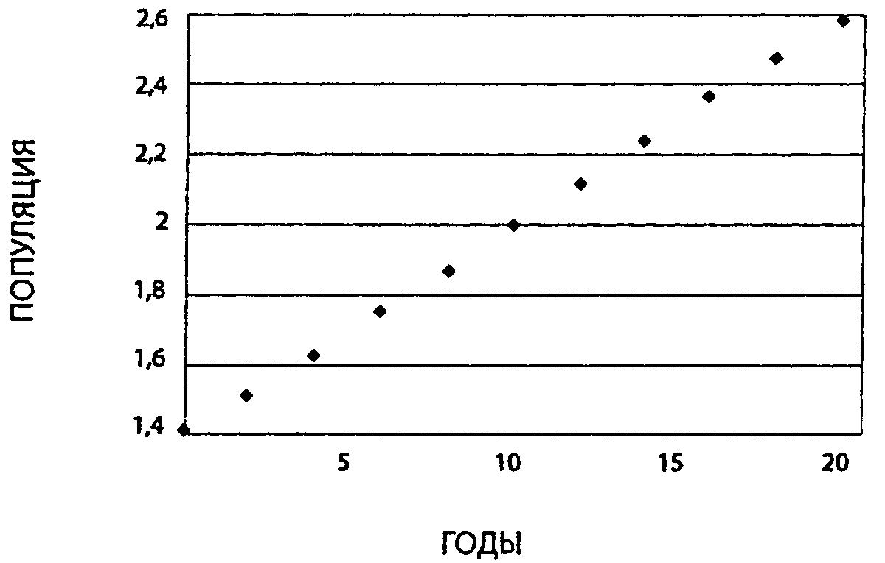</p>
<br class="calibre15"/><p class="calibre16">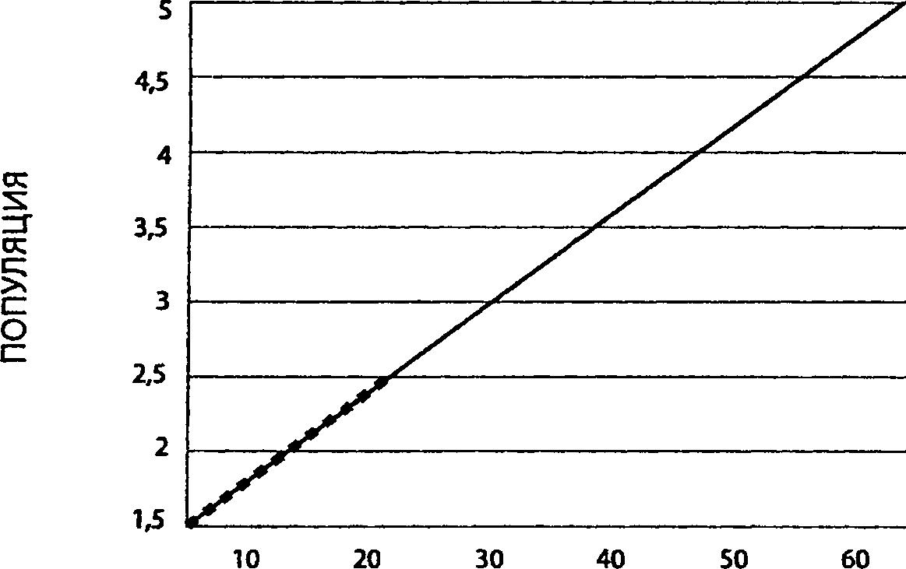</p>
<br class="calibre15"/><p class="calibre16">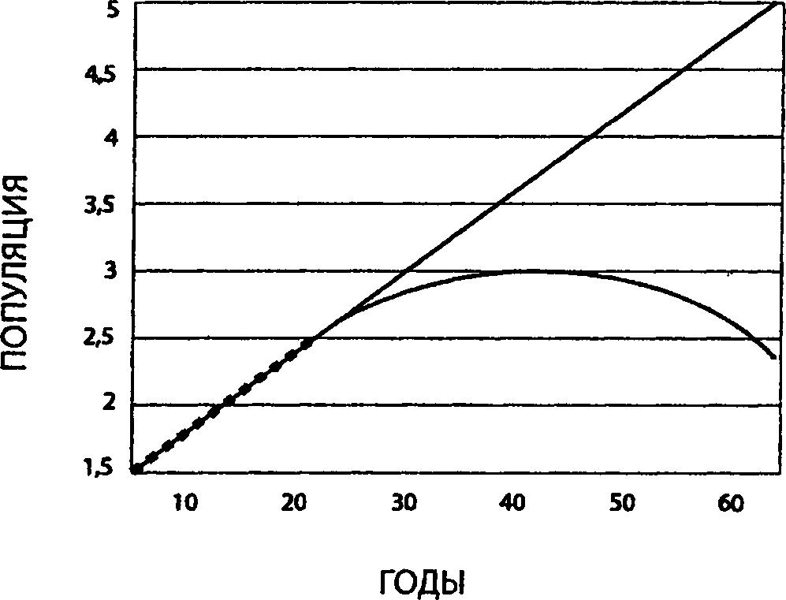</p>
<br class="calibre15"/><p class="calibre16">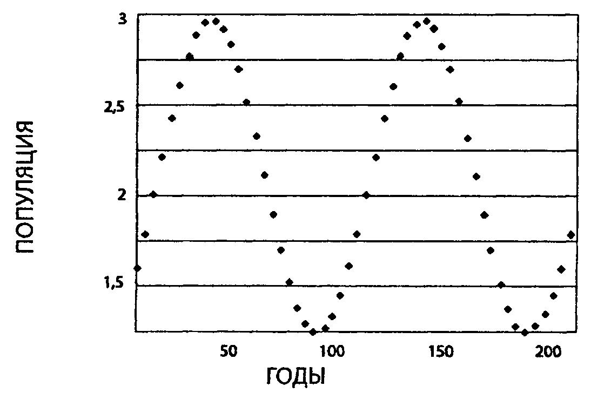</p>
<br class="calibre15"/><p class="calibre7">    <span class="italic">Эти графики иллюстрируют статистический вариант нарративной ошибки — вы находите модель, в которую укладывается прошлое. «Линейная регрессия» и «R-квадрат» способны вконец заморочить вам голову. Можно смотреть на линейную часть кривой и хвастаться высоким R-квадратом, якобы свидетельствующим о том, что в вашу модель хорошо укладываются данные и она обладает большой предсказательной силой. Все это чепуха: она годится только для линейного сегмента. Всегда помните, что R-квадрат непригоден для Крайнестана. (R-квадрат — число от 0 до 1, которое отражает близость значений линии тренда к фактическим данным. Линия тренда наиболее соответствует действительности, когда значение R2 близко к 1. —Прим. ред.)</span></p>
<br class="calibre15"/><p class="calibre7">    Прошлое может сбивать с толку, более того, в наших интерпретациях прошлых событий есть много степеней свободы.</p>
<p class="calibre7">    Вот графическая иллюстрация этой идеи: посмотрите на ряд точек, представляющий изменение некоего числа во времени (рисунок з), — график похож на рисунок 1 из главы 4, на котором отображена первая тысяча дней индейки. Предположим, учитель просит вас продолжить ряд точек. С линейной моделью, то есть с линейкой, вы нарисуете лишь прямую линию, одну прямую линию от прошлого к будущему (рисунок 4). Линейная модель уникальна. Есть одна, и только одна, линия, которую можно построить на данном множестве точек. Но все может оказаться гораздо сложнее. Если вы не будете зацикливаться на этой прямой, то обнаружите, что есть огромное количество кривых, самых разных конфигураций, которыми могут связываться точки. Делая линейный прогноз на основании прошлого, вы продолжаете замеченную тенденцию. Но количество будущих возможных отклонений от этого курса, заданного в прошлом, бесконечно.</p>
<p class="calibre7">    Философ Нельсон Гудмен называет это проблемой индукции: мы строим прямую линию лишь потому, что у нас в головах линейная модель, — тот факт, что 1000 дней подряд переменная увеличивалась, придает уверенности, что она будет расти и дальше. Но если у вас в голове имеется нелинейная модель, она может показать, что на 1001-й день наступит перелом.</p>
<p class="calibre7">    Представьте: вы захотели полюбоваться изумрудом. Вчера он был зеленым и позавчера тоже. Сегодня он тоже вполне зеленый. В обычном случае это подтверждает наличие у него свойства «быть зеленым»: можно смело предположить, что и завтра изумруд будет зеленым. Но, по Гудмену, цветовая история изумруда дает такие же основания утверждать, что у него есть свойство «быть зелубым». Что значит «быть зелубым»? Это значит побыть зеленым до определенного дня (скажем, до 31 декабря 2015 года), а затем поголубеть.</p>
<p class="calibre7">    Проблема индукции — это один из вариантов искажения нарратива; есть бесконечно много «историй», которые объясняют то, что вы видели. Проблема, надо сказать, весьма серьезная: ведь если не существует единого способа «обобщить» известное, чтобы сделать предположения о неизвестном, как же тогда действовать? Ответ, разумеется, будет таков: надо полагаться на «здравый смысл». Однако вашему здравому смыслу, возможно, будет очень трудно совладать с некоторыми переменными на территории Крайнестана.</p>
<h3 border="1" id="filepos911604" class="calibre6"><span class="bold"> Эта зело предусмотрительная машина <br class="calibre10"/></span></h3>
<p class="calibre7">    Читатель вправе спросить: господин Н.Н.Т., чего ради мы тогда вообще занимаемся планированием? Одни делают это ради прибыли, у других «такая профессия». Но мы планируем и без подобных намерений, спонтанно.</p>
<p class="calibre7">    Почему? В силу особенностей человеческой природы. Стремление планировать, по-видимому, есть неизбежная составляющая того, что делает нас людьми, — нашего сознания.</p>
<p class="calibre7">    У нашей потребности предсказывать, возможно, имеется эволюционное истолкование, которое я сейчас кратко изложу, поскольку это отличная попытка объяснения, отличная догадка, хотя, раз она связана с эволюцией, я буду осторожен.</p>
<p class="calibre7">    Речь пойдет об идее философа Дэниела Деннета. Какова самая задействованная способность нашего мозга? Именно способность выдвигать предположения и проигрывать гипотетические сценарии: «Если я дам ему по носу, то он даст мне сдачи или — еще неприятней — позвонит своему нью-йоркскому адвокату». Занятие весьма полезное, ибо оно позволяет нашим предположениям умирать вместо нас. Используемая с умом вместо инстинктивных звериных реакций, способность эта избавляет нас от опасностей первичного естественного отбора — в противоположность более примитивным организмам, которые были беззащитны перед смертью и не исчезли только благодаря улучшению генофонда и выживанию сильнейших. В каком-то смысле планирование позволяет нам обмануть эволюцию: она теперь осуществляется в наших головах в виде последовательности предположений и гипотетических сценариев.</p>
<p class="calibre7">    Эта способность мысленно воспроизводить ситуации, даже если она освобождает нас от законов эволюции, сама, вероятно, является продуктом эволюции — все зверье живет на очень коротком поводке непосредственной зависимости от окружающей среды, а нам эволюция этот поводок словно бы удлинила. Для Деннета наш мозг — это «предусмотрительная машина»; для него человеческий разум и сознание — естественным образом возникшие свойства, необходимые для нашего ускоренного развития.</p>
<p class="calibre7">    Почему мы слушаем экспертов и их прогнозы? Возможно, в какой-то мере потому, что устройство нашего общества основано на специализации, на разделении знания. Когда у вас проблемы со здоровьем, вы не бросаетесь изучать медицину, а отправляетесь к врачу: гораздо проще (и явно разумнее) обратиться к тому, кто получил специальное образование. Врачи слушают автомехаников (когда речь идет не о здоровье, а о неладах с машиной); автомеханики слушают врачей. У нас есть природная склонность внимать экспертам — даже в тех областях, где экспертов быть не может.</p>
<div class="mbppagebreak"></div><h2 border="1" class="calibre13" id="filepos916465"><span class="calibre14"><span class="bold"> Глава 12. Эпистемократия, мечта <br class="calibre10"/></span></span></h2>
<p class="calibre7">    <span class="italic">Это всего лишь опыт. — Дети и философы versus взрослые и нефилософы. — Наука как занятие аутистов. — У прошлого тоже есть прошлое. — Сделайте неверное предсказание и живите долго и счастливо (если выживете).</span></p>
<br class="calibre15"/><p id="filepos917046" class="calibre7">    Тот, кто не отличается эпистемической самонадеянностью, как правило, не очень-то всем заметен, будто стеснительный гость на вечеринке. У нас не принято уважать скромных людей, которые не торопятся с суждениями. Они обладают эпистемической скромностью. Представьте себе беднягу, которого вечно терзает сознание собственного невежества. У него нет куража, свойственного кретинам, зато есть редкое мужество честно сказать «Я не знаю». Он не боится выглядеть дураком или, хуже того, невеждой. Он сомневается, он не решается действовать, он мучительно анализирует последствия возможных ошибок. Он размышляет, размышляет и размышляет — до полного изнеможения и нервного истощения.</p>
<p class="calibre7">    Это вовсе не обязательно означает, что ему не хватает уверенности в себе, просто он скептически относится к собственному знанию. Я буду называть такого человека эпистемократом, а теперь давайте-ка отправимся в страну, где законы учреждают именно такие люди, это страна эпистемократии.</p>
<p class="calibre7">    Крупнейшим эпистемократом новых времен был Монтень.</p>
<h3 border="1" id="filepos918994" class="calibre6"><span class="bold"> Господин де Монтень, эпистемократ <br class="calibre10"/></span></h3>
<p class="calibre7">    Когда Мишелю Эйкему де Монтеню исполнилось тридцать восемь лет, он удалился в свое поместье на юго-западе Франции. Монтень («гора» на старофранцузском) — это название поместья. Сегодня эта область известна всему миру благодаря бордоским винам, но во времена Монтеня мало кто вкладывал свои таланты и знания в вино. Монтеня определенно виноделие интересовало не слишком: он был скорее стоиком, чем жизнелюбом. Он задумал написать ряд непритязательных «опытов», то есть эссе. Само слово эссе означает нечто пробное, умозрительное и неопределенное. Монтень прекрасно знал классических авторов и теперь сам хотел поразмышлять о жизни, о смерти, об образовании, о знании и о примечательных особенностях нашей физиологии (например, об этом: не оттого ль у калек так развито либидо, что у них сильнее приливает кровь к половым органам).</p>
<p class="calibre7">    Стены башни, в которой он устроил себе кабинет, были исписаны греческими и римскими изречениями, говорящими в основном об уязвимости человеческого знания. Из окон открывался отличный вид на окружающие холмы.</p>
<p class="calibre7">    Формально темой рассуждений Монтеня был он сам, но это лишь риторический прием; Монтень не уподоблялся тем гендиректорам, которые пишут автобиографии лишь для того, чтобы похвастаться своими успехами и достижениями. Монтеню было важно узнавать что-то о себе и давать нам возможность узнавать что-то о нем, но при этом он обсуждал проблемы и темы, затрагивающие каждого из нас, — общечеловеческие. На стене его башни красовалось и высказывание латинского поэта Теренция: «Homo sum: humani nil a me alienum puto». Я человек, и ничто человеческое мне не чуждо.</p>
<p class="calibre7">    Устав от тягот современного образования, приятно почитать Монтеня: он великолепно разбирался в человеческих слабостях и понимал, что никакая философия не будет действенной и успешной, если она не примет во внимание глубоко укорененные в нас несовершенства, недостаток рациональности, в общем, те несовершенства, которые делают нас людьми. Не то чтобы он опередил свое время, скорее школяры более поздних эпох (приверженцы рациональности) отстали от своего.</p>
<p class="calibre7">    Монтень любил и умел размышлять, его мысли рождались не в спокойном кабинете, а в седле. Он совершал длинные верховые прогулки и возвращался с мыслями. Монтень отличался и от сорбоннских академиков, и от профессиональных литераторов в двух отношениях. Во-первых, он был человеком дела: поработал судьей, коммерсантом и мэром Бордо — до того, как ушел на покой, чтобы поразмышлять о собственной жизни и главным образом о собственном знании. Во-вторых, он был антидогматиком. Очаровательный скептик, ошибающийся, неуверенный, субъективный, сомневающийся писатель, он прежде всего хотел следовать великой классической традиции и оставаться человеком. Живи он в другое время, он примкнул бы к скептикам-эмпирикам. У него мы обнаружим скептицизм в духе Пиррона и недоверие к догме, свойственное Сексту Эмпирику. Главное, он понимал: никогда не стоит торопиться с выводами.</p>
<h3 border="1" id="filepos924584" class="calibre6"><span class="bold"> Эпистемократия <br class="calibre10"/></span></h3>
<p class="calibre7">    У каждого свое представление об утопии. Для многих утопия — это равенство, всеобщая справедливость, отсутствие принуждения, отсутствие работы (чей-то более скромный, но столь же недостижимый идеал: общество, в котором пригородные поезда не кишат юристами с мобильниками). Для меня утопия — это эпистемократия, общество, в котором все ответственные должности занимают эпистемократы, где только их избирают на высокие посты. Этим обществом управляют, опираясь на понимание силы невежества, а не знания.</p>
<p class="calibre7">    Увы, признавая собственную способность ошибаться, не знать, авторитета не наживешь. Люди нуждаются в ослеплении знанием — нам так положено: идти за вожаками, умеющими собрать нас вместе, ведь вместе гораздо надежнее, чем поодиночке. Всегда было выгоднее брести с толпой, пусть по неверному пути, чем по правильному, но в одиночестве. И гены нам достались от тех, кто следовал за самоуверенными дураками, а не за колеблющимися мудрецами. Социальная патология налицо: психопаты с легкостью вербуют приверженцев.</p>
<p class="calibre7">    Иногда все же попадаются личности с могучим интеллектом, которым не так уж сложно поменять свои прежние взгляды на мир.</p>
<p class="calibre7">    Заметьте следующую «чернолебяжью» асимметрию. Я считаю, что есть вещи, в которых можно, и даже должно, быть твердо уверенным. В неподтверждение можно верить больше, чем в подтверждение. Карла Поппера обвиняли в непоследовательности: призывает всех чаще сомневаться в себе и при этом пишет в агрессивном наставническом тоне (такие же претензии иногда предъявляют и мне — те, кто не принимает мою логику скептического эмпиризма). К счастью, со времен Монтеня эмпирики-скептики многому научились. «Чернолебяжья» асимметрия позволяет быть уверенным в том, что неправильно, но не в том, что, с твоей точки зрения, правильно. Карла Поппера однажды спросили, можно ли «фальсифицировать фальсификацию» (то есть можно ли проявить скептицизм по отношению к скептицизму). Он отвечал, что выгонял студентов с лекций и за менее тупые вопросы. Крутоват был сэр Карл.</p>
<h3 border="1" id="filepos928423" class="calibre6"><span class="bold"> Прошлое прошлого и будущее прошлого <br class="calibre10"/></span></h3>
<p class="calibre7">    Некоторые истины открываются только детям: взрослых и не-философов затягивают бытовые мелочи, их волнуют «серьезные вещи», так что им эти откровения ни к чему, есть, как им кажется, проблемы и поважнее. Одна из таких «не важных» истин состоит в существенной фактурной и качественной разнице между прошлым и будущим. Поскольку я изучал это различие всю свою жизнь, то сейчас понимаю его лучше, чем в детстве, но оно уже не представляется мне так зримо.</p>
<p class="calibre7">    Единственный способ вообразить будущее «по образу» прошлого — это предположить, что оно является его прямой проекцией, а значит, предсказуемо. То есть время вашей смерти вам должно быть известно примерно так же точно, как и время вашего рождения. А то, что будущее таит много непредвиденного и не является единственно возможным продолжением нашего знания о прошлом, наш разум постичь не в состоянии. Случайность слишком расплывчата, и мы не можем воспринимать ее как отдельную категорию. Прошлое и будущее асимметричны, но эту асимметрию нам сложно постичь.</p>
<p class="calibre7">    Прежде всего эта асимметрия мешает нам установить аналогию между отношениями «будущее — прошлое» и «прошлое — более раннее прошлое». «Слепое пятно» восприятия: мы не сопоставляем наши сегодняшние мысли о завтрашнем дне с нашими вчерашними мыслями о дне сегодняшнем. Из-за этого дефекта интроспекции мы не замечаем очевидных расхождений между нашими прошлыми прогнозами и тем, как все обернулось в реальности. Думая о завтрашнем дне, мы просто предполагаем, что это будет как бы еще один вчерашний.</p>
<p class="calibre7">    Это «слепое пятнышко» дает о себе знать и в других ситуациях. Сходите в Бронкский зоопарк, в отдел приматов, и вы увидите счастливую семью наших ближайших родственников, живущих своей суматошной общественной жизнью. Вы также увидите множество хохочущих туристов, забавляющихся этой пародией на себя. Теперь представьте, что вы принадлежите к более развитому виду (скажем, являетесь «истинным» философом, настоящим мудрецом), с гораздо более высоким уровнем интеллекта, чем у приматов человеческого образца. Вы, конечно, будете смеяться над этими людьми, которые смеются над приматами, не доросшими до человека. Разумеется, тем, кто потешается над обезьянами, не приходит в голову, что на них тоже кто-то может смотреть свысока, — если бы это вдруг до них дошло, они бы очень расстроились. И перестали бы смеяться.</p>
<p class="calibre7">    Аналогичным образом особенности освоения прошлого человеческим мозгом заставляют нас верить в окончательность наших решений — и не учитывать того, что наши предшественники тоже считали, что знают окончательные решения. Мы смеемся над другими, не понимая, что довольно скоро у кого-нибудь будет ровно столько же оснований смеяться над нами. Осознание этого требует рекурсивного мышления, которое я упоминал в Прологе, а в нем мы не сильны.</p>
<p class="calibre7">    Эту своего рода заблокированность сознания в отношении будущего психологи еще не изучили и не классифицировали, но похоже, что это что-то вроде аутизма. Некоторые аутисты очень способны к математике и прекрасно разбираются в технике. Известно, что у них почти отсутствуют навыки общения, но корень их недуга не в этом. Аутичные люди не могут поставить себя на место ближнего, посмотреть на мир глазами другого человека. Они воспринимают остальных как неодушевленные объекты, как механизмы, работающие по определенным правилам. Они не в силах выстроить вот такую — простейшую — цепочку рассуждений: «он знает, что я не знаю про то, что я знаю», поэтому у них и возникают сложности при общении. (Любопытная деталь: все аутисты не способны понять, что такое неопределенность, независимо от уровня их интеллекта.)</p>
<p class="calibre7">    Аутизм называют «умственной слепотой», а неспособность мыслить динамично, неумение соотнести себя с будущим наблюдателем давайте назовем «футурологической слепотой».</p>
<h3 border="1" id="filepos935602" class="calibre6"><span class="bold"> Прогнозы, ошибки в прогнозах и счастье <br class="calibre10"/></span></h3>
<p class="calibre7">    В литературе по когнитивистике я не нашел ничего про футурологическую слепоту. Но в литературе, посвященной счастью, я обнаружил исследование того, как постоянные ошибки в прогнозах делают людей счастливыми.</p>
<p class="calibre7">    Картина этих ошибок примерно такова. Предположим, вы собрались купить новую машину. Она изменит вашу жизнь, повысит социальный статус, на ней вы поедете в отпуск. Она такая бесшумная, что не поймешь, работает ли мотор, — вы теперь сможете в дороге слушать ноктюрны Рахманинова. Благодаря новой машине вы всегда будете чувствовать себя счастливчиком. Завидев вас, каждый невольно подумает: «Ух ты, какая у него тачка!» Но вспомните: покупая нынешнюю свою машину, вы предвкушали то же самое. Однако вы не думаете о том, что эйфория рано или поздно пройдет и к вам вернется прежнее душевное состояние, все как и в прошлый раз. Через месяц после того, как вы выкатили из автосалона на сверкающей машине, новая игрушка надоест вам. Если бы вы предвидели это с самого начала, едва ли покупка вообще состоялась бы.</p>
<p class="calibre7">    Вы опять сделали ложный прогноз. А ведь так легко было несколько минут покопаться в прошлом, проанализировать прежние свои поступки и ощущения!</p>
<p class="calibre7">    Психологи изучали этот тип ошибок при прогнозировании событий как приятных, так и неприятных. Мы переоцениваем эффект, который и те и другие могут оказать на нашу жизнь. Мы словно в психологической ловушке, которая не дает нам действовать иначе. Эту ловушку Дэнни Канеман называет «ожидаемой полезностью», а Дэн Гилберт — «эмоциональным прогнозированием». Главное тут даже не то, что мы ошибаемся в прогнозах насчет своего будущего счастья, а то, что мы каждый раз не учитываем свой прошлый опыт. В предсказании наших эмоциональных состояний мы просто отказываемся учиться на прежних ошибках, и виной тому — «заблокированное^» сознания и всяческие искажения.</p>
<p class="calibre7">    Мы сильно преувеличиваем воздействие неприятностей на нашу жизнь. Вам кажется, что потеря крупной суммы или служебного поста приведет вас к жизненному краху, но едва ли такое случится. Скорее всего, вы приспособитесь к чему угодно — как, вероятно, уже делали после прошлых неудач. Вероятно, вы будете страдать, но не так сильно, как кажется. Этот тип ошибочного прогнозирования, возможно, даже чем-то и полезен: он подталкивает нас к совершению важных действий (покупка новой машины или накопление средств) и отвращает от некоторых ненужных рисков. Кроме того, стремление преувеличивать, как таковое, является частью более общей проблемы: нам, людям, положено немного обманывать себя. Согласно теории самообмана, разработанной Трайверсом, таким образом мы настраиваем себя на благоприятное будущее. Однако самообман вне его естественной сферы — вещь нежелательная. Да, он помогает отказаться от некоторых ненужных рисков, но, как мы видели в главе 6, он не так уж надежно перекрывает лавину современных рисков, которых мы не боимся, потому что они неочевидны: инвестиционных рисков, экологических угроз, долгосрочных вкладов.</p>
<h3 border="1" id="filepos941265" class="calibre6"><span class="bold"> Гелен и обратные пророчества <br class="calibre10"/></span></h3>
<p class="calibre7">    Если вы избрали поприще прорицателя и открываете будущее менее привилегированным смертным, то о вас судят по вашим предсказаниям.</p>
<p class="calibre7">    Гелен, персонаж «Илиады», был прорицателем, но не таким, как все. Сын Приама и Гекубы, он был самым умным в троянской армии. Это он — под пыткой — рассказал ахейцам, как они завладеют Троей (очевидно, он не предугадал собственного пленения). Но замечателен он был не этим. Гелен, в отличие от других пророков, мог в деталях провидеть прошлое — без всяких подсказок. Он провидел вспять.</p>
<p class="calibre7">    Наша проблема не только в том, что мы не ведаем будущего, о прошлом мы тоже не особо много ведаем. Чтобы знать историю, нам совершенно необходим такой человек, как Гелен. Давайте разберемся почему.</p>
<h3 border="1" id="filepos942767" class="calibre6"><span class="bold"> Тающий ледяной кубик <br class="calibre10"/></span></h3>
<p class="calibre7">    Давайте проведем следующий мысленный эксперимент (я его позаимствовал у своих друзей — Аарона Брауна и Пола Уилмота).</p>
<p class="calibre7">    Операция 1 (лед растаял). Вообразите большой ледяной кубик, который тает часа два, а вы пока играете с приятелями в покер. Представьте, как по полу постепенно растекается лужа.</p>
<p class="calibre7">    Операция 2 (откуда взялась вода?). У вас на полу лужа воды. Теперь мысленно восстановите ледяной куб, которым она раньше могла быть. Заметьте, что она не обязательно взялась именно из куска льда.</p>
<p class="calibre7">    Вторая операция сложнее. Все-таки Гелен должен был обладать действительно невероятным даром.</p>
<p class="calibre7">    Различие между этими двумя процессами заключается в следующем. Если у вас есть правильные модели (и свободное время, и вам больше нечем заняться), то вы можете довольно точно предсказать, как будет таять наш кубик, — это конкретная и не очень сложная техническая задача, более простая, чем задача с бильярдными шарами. Однако, имея лужу воды, можно построить бесконечное число подходящих кубиков льда, при том что всегда остается вопрос: а был ли вообще кубик-то? При движении от льда к луже воды процесс называется прямым. Движение от воды ко льду, обратный процесс, во много-много раз сложнее. Прямой процесс в основном используется в физике и технике, обратный процесс — в неповторяемых, не проверяемых экспериментально исторических изысканиях.</p>
<p class="calibre7">    В каком-то смысле обратному проектированию истории мешают те же препоны, которые не дают нам загнать яичницу обратно в скорлупу в виде желтка и белка.</p>
<p class="calibre7">    Теперь давайте немножко усложним и прямую, и обратную задачи, предположив наличие нелинейности. Возьмем хотя бы так называемую парадигму «бабочка в Индии» из обсуждения открытия Лоренца в предыдущей главе. Как мы видели, ничтожно малое воздействие на сложную систему может привести к неслучайным большим последствиям, которые будут сильно зависеть от мелких параметров. Взмах крыльев одной-единственной бабочки в Нью-Дели, несомненно, может быть причиной урагана в Северной Каролине, пусть даже этот ураган произойдет двумя годами позже. Однако сомнительно, что вы, имея в качестве исходных данных ураган в Северной Каролине, смогли бы хоть приблизительно установить причины урагана: ведь мелких вещей, которые могли бы его вызвать, вроде трепыхающихся бабочек в Тимбукту или чихающих диких собак в Австралии, миллиарды. Прямой процесс (от бабочки к урагану) гораздо проще, чем обратный процесс от урагана к предполагаемой бабочке.</p>
<p class="calibre7">    В нашем обществе катастрофически мало людей, умеющих различать эти два процесса. Метафора «бабочки в Индии» сбила с толку как минимум одного режиссера. Франкоязычный фильм Лорана Фирода «Счастливое стечение обстоятельств» (также известный как «Взмах крыльев мотылька») задуман как призыв обращать внимание на мелкие детали, которые могут изменить жизнь. Ну да, если ничтожнейшее обстоятельство (например, падение наземь лепестка, привлекшее ваше внимание) может привести к тому, что вы поменяете жениха, лучше и впрямь не пренебрегать никакими мелочами. Ни режиссер, ни критики не поняли, что они имеют дело с обратным процессом; ежедневно происходит триллион мелочей, и учесть все — за пределами наших возможностей.</p>
<h3 border="1" id="filepos948837" class="calibre6"><span class="bold"> И снова неполная информация <br class="calibre10"/></span></h3>
<p class="calibre7">    Возьмите персональный компьютер. Редактор электронных таблиц способен сгенерировать случайную последовательность чисел, которую можно назвать историей. Каким образом? В компьютерную программу закладывается затейливое нелинейное уравнение, которое выдает числа, кажущиеся случайными. Уравнение несложное: зная его, можно предсказывать последовательность бесконечно. Но самостоятельно вывести уравнение из имеющихся данных, а значит, и просчитать цепочку вперед, — человеку не под силу. А ведь я говорю о простейшей однострочной компьютерной программе, которая перетасовывает горсть чисел, а не о миллиардах одновременных событий, составляющих настоящую историю мира. Другими словами, даже если бы история была последовательностью не случайной, а сгенерированной неким «всемирным уравнением», нам все равно не следовало бы считать ее таковой и называть «детерминированным хаосом», поскольку вывести это уравнение нам не дано. Историкам вообще стоит разбираться в теории хаоса и трудностях обратного проектирования лишь затем, чтобы обсуждать общие свойства мира и познавать пределы постижимого.</p>
<p class="calibre7">    Это подводит нас к более серьезной проблеме исторического ремесла. Фундаментальная проблема практиков такова: в теории случайность — это неотъемлемое свойство событий, но на практике случайность — это неполная информация, то, что я называю в главе 1 непроницаемостью истории.</p>
<p class="calibre7">    Те, кто не занимается случайностью вплотную, не понимают этой тонкой разницы.</p>
<p class="calibre7">    На моих лекциях, едва речь заходит о неопределенности и случайности, философы (часто) и математики (иногда) начинают задавать изумительные вопросы. Ну например. Случайность, о которой я говорю, — это «истинная случайность» или «детерминированный хаос», который притворяется случайностью? Истинно случайная система действительно случайна, и свойства ее непредсказуемы. Свойства детерминированно-хаотической системы полностью предсказуемы, но предсказать их очень трудно. Мой ответ в таких случаях состоит из двух частей:</p>
<p class="calibre7">    а) На практике функциональной разницы между этими двумя случайностями нет, потому что мы не способны их различать, — разница математическая, а не практическая. Если я вижу беременную женщину, то пол ее ребенка — случайная величина (вероятность каждого варианта, разумеется, 50 %). Но случайная для меня, а не для ее врача, который мог сделать УЗИ. На практике случайность — это в основном неполная информация.</p>
<p class="calibre7">    б) Сам факт, что человек говорит об этой разнице, показывает, что он никогда не принимал важных решений в условиях неопределенности и поэтому не уяснил, что два типа случайности на практике неразличимы.</p>
<p class="calibre7">    В конечном счете случайность — это всего лишь незнание. Мир непроницаем, и видимость сбивает нас с толку.</p>
<h3 border="1" id="filepos954113" class="calibre6"><span class="bold"> Что называют знанием <br class="calibre10"/></span></h3>
<p class="calibre7">    И напоследок еще раз поговорим об истории.</p>
<p class="calibre7">    История подобна музею, где можно осмотреть хранилища прошлого и вкусить очарования былого. Это чудесное зеркало, в котором можно увидеть и как бы свою собственную историю. Можно даже прослеживать прошлое с помощью анализов ДНК. Я обожаю литературную историю. Древняя история утоляет мое желание сотворить мой личный нарратив, соединить собственную идентичность с моими (сложными) средиземноморскими корнями. Я даже предпочитаю свидетельства старых, несомненно, менее точных книг свидетельствам новых. Среди авторов, которых я перечитывал (лучшее доказательство любви к тому или иному писателю — перечитать его книги), сразу вспоминаются Плутарх, Тит Ливии, Светоний, Диодор Сицилийский, Карлейль, Ренан и Мишле. Их труды, несомненно, не выдерживают сравнения с современными работами; они полны исторических анекдотов и легенд. Да, я знаю.</p>
<p class="calibre7">    Огромная польза истории — в трепете прикосновения к прошлому и в нарративе (да-да), если только это не вредоносный нарратив. Осмысливать изложенное нашими пращурами нужно очень вдумчиво, с предельной осмотрительностью. История, разумеется, не поле для теоретизирования и глобальных обобщений; учиться на ней можно, но очень осторожно. История дает нам примеры того, как не надо действовать, что само по себе бесценно, но при этом вселяет в нас иллюзию большой осведомленности.</p>
<p class="calibre7">    Все это возвращает меня к Менодоту, к размышлениям об участи индюшки и к вопросу о том, как не сделаться заложником прошлого. Напомню отношение врача-эмпирика к методу индукции: надо знать историю, но не строить теорий на основании этого знания. Учитесь читать историю, не останавливайтесь в познании, не брезгуйте сведениями, почерпнутыми из исторических анекдотов, но не ищите никаких причинно-следственных связей, не увлекайтесь обратным проектированием — а если уж им занялись, то не делайте серьезных научных выводов. Помните, что эмпирики-скептики уважали обычаи: они воспринимали их как рекомендации по умолчанию, основу для действий, но не более того. Этот открытый подход к прошлому они называли эпилогизмом <a title="Йоги Берра передал суть теории эпилогизма одним своим высказыванием: «Можно многое заметить, всего лишь глядя»." href="#filepos1539165"><span class="calibre11"><sup class="calibre12">[54].</sup></span></a></p>
<p class="calibre7">    Но у большинства историков другое мнение. Возьмите репрезентативное исследование Эдварда Харлета Карра «Что такое история?». Вы обнаружите, что он считает главным аспектом своей работы выявление причинно-следственных связей. Можно взять и выше: Геродот, признанный отцом истории, определил собственную цель в начале своего труда:</p>
<div class="calibre18"> </div><blockquote class="calibre19"><blockquote class="calibre19">
<p class="calibre7">    Геродот из Галикарнасса собрал и записал эти сведения, чтобы прошедшие события с течением времени не пришли в забвение и великие и удивления достойные деяния как эллинов, так и варваров не остались в безвестности, в особенности же то, почему (курсив мой. —Н.Н.Т.) они вели войны друг с другом<a title="Геродот. История. Перевод Г. Стратановского. (Прим. ред.)" href="#filepos1539523"><span class="calibre11"><sup class="calibre12">[55]</sup></span></a>.</p>
</blockquote></blockquote>
<p class="calibre7">    То же самое вы увидите у всех теоретиков истории, будь то Ибн Хальдун, Маркс или Гегель. Чем старательнее мы пытаемся сделать из истории нечто большее, чем серию описаний, от которых нужно не мудрствуя лукаво получать удовольствие, тем хуже результат. Неужели на нас так действует искажение нарратива? <a title="Рассматривая прошлое, лучше воздерживаться от наивных аналогий. Многие находили сходство между современными Соединенными Штатами и Древним Римом, как с военной точки зрения (разрушение Карфагена часто упоминается как наглядный пример разрушения враждебных режимов), так и с социальной (бесконечные банальные пророчества насчет грядущего падения и заката). Увы, мы должны быть исключительно осторожны, перенося знание из простой среды, близкой к типу i (той, что существовала в античности), в современную сложную систему типа 2, с ее запутанной сетью причинных связей. Другая ошибка — выводить следствия из факта отсутствия ядерной войны: ссылаясь на пример Казановы из главы 8, я повторю, что если бы ядерная война произошла, то нас бы здесь не было; не годится устанавливать «причину», когда наше существование обусловлено этой причиной." href="#filepos1539776"><span class="calibre11"><sup class="calibre12">[56]</sup></span></a></p>
<p class="calibre7">    Возможно, придется ждать, пока появится поколение скептико-эмпирических историков, способных понять разницу между прямым и обратным процессом.</p>
<p class="calibre7">    Поппер нападал на историков, делавших прогнозы на будущее, я же только что показал слабости исторического подхода в познании прошлого.</p>
<p class="calibre7">    Обсудив футурологическую (и историческую) слепоту, давайте теперь разберемся, как нам с нею быть. Замечательно, что существуют кое-какие меры — практические, сугубо практические. Рассмотрим же их.</p>
<div class="mbppagebreak"></div><h2 border="1" class="calibre13" id="filepos963064"><span class="calibre14"><span class="bold"> Глава 13. Живописец Апеллес, или Как жить в условиях непредсказуемости<a title="Эта глава — общий вывод для тех, кто сейчас говорит: «Ну хорошо, Талеб, я все понял, а делать-то что?» Вообще-то я считаю, что если вы все поняли, то уже знаете, что делать. Но так и быть, я дам вам наводку." href="#filepos1541462" class="calibre20"><span class="calibre21"><sup class="calibre22">[57]</sup></span></a>
<br class="calibre10"/></span></span></h2>
<p class="calibre7">    <span class="italic">Если кто-то хочет дать вам совет, пусть платит. — И мои пять центов. — Никто ничего не знает, но хоть об этом мы знаем. — Больше общайтесь!</span></p>
<h3 border="1" id="filepos964037" class="calibre6"><span class="bold"> Грош цена всем нравоучениям <br class="calibre10"/></span></h3>
<p class="calibre7">    Чрезмерно уснащать свои тексты цитатами из прославленных философов — дурная привычка, если, конечно, вы не собираетесь посмеяться над великими или дать историческую справку. Не то чтобы в этих изречениях не было смысла, но звучные максимы слишком легко подчиняют себе наш доверчивый ум и не всегда выдерживают проверку опытом. Следующее высказывание такого маститого философа, как Бертран Рассел, привожу здесь исключительно потому, что я с ним не согласен.</p>
<div class="calibre18"> </div><blockquote class="calibre19"><blockquote class="calibre19">
<p class="calibre7">    Потребность в определенности — естественная потребность человека, но одновременно и порок мышления. Если вы собрались с детьми на пикник и не знаете, пойдет ли дождь или будет ясно, дети будут ждать обоснованного ответа, а ваше «я не знаю» их разочарует.</p>
<p class="calibre7">    Но до тех пор, пока людей <span class="italic">не научат</span> (курсив мой, — Н.Н.Т.) воздерживаться от бездоказательных суждений, какой-нибудь самонадеянный пророк сможет увести их за собой куда угодно… Каждая наука прививает людям свою добродетель; быть сдержанными в суждениях лучше всего учит философия<a title="Из статьи «Философия для профанов» (1946), вошедшей в книгу «Непопулярные эссе». (Прим. ред.)" href="#filepos1541977"><span class="calibre11"><sup class="calibre12">[58]</sup></span></a>.</p>
</blockquote></blockquote>
<p class="calibre7">    Читатель, может быть, удивится, что я не согласен с этим. Трудно не согласиться с тем, что жажда определенности — порок мышления. Трудно отрицать, что нас ничего не стоит сбить с пути какому-нибудь самонадеянному пророку. Но позвольте мне кое в чем возразить великому мыслителю. Я не очень верю в то, что назидательная философия — и впрямь действенное оружие в борьбе с вышеназванным пороком; не верю и в легкую обучаемость добродетели; я также не призываю людей пересиливать себя, воздерживаясь от оценок и предположений. Почему? Потому что люди есть люди, и об этом не нужно забывать. Людей не отучишь судить и оценивать; оценка — один из способов восприятия мира. Мы видим не просто «дерево», но «красивое» или «уродливое» дерево. И нужно сделать мучительное усилие над собой, чтобы сорвать эти ярлычки, которые мы неизменно наклеиваем на все вещи. Точно так же невозможно удержать в уме ситуацию, не допустив при этом хотя бы малейшей погрешности. Старая добрая «человеческая натура» заставляет нас жаждать веры; ну и что теперь?</p>
<p class="calibre7">    Со времен Аристотеля философы внушали нам, что человек — мыслящее существо и что мы учимся, рассуждая. Минуло много лет, прежде чем мы осознали, что правда неплохо умеем думать, однако с большей охотой оплетаем нарративом прошлое, создавая иллюзию понимания и разумности своих тогдашних действий. Как только мы забыли об этом своем открытии, Просвещение снова принялось усиленно взывать к нашему рассудку.</p>
<p class="calibre7">    Я бы все же поставил человека хоть и чуть выше прочих живых тварей, но отнюдь не вровень с идеальным олимпийцем, способным усваивать философские доктрины и поступать сообразно им. В самом деле, если бы философия была столь действенным средством, тогда местный книжный магазин, уставленный мудрыми книгами, превратился бы в обитель утешения страждущих душ. Но этого почему-то не происходит. Когда человеку тяжело, ему не до философий.</p>
<p class="calibre7">    Этот раздел о предсказаниях я закончу двумя рекомендациями: одна краткая (на каждый день), вторая довольно длинная (касающаяся серьезных и важных решений).</p>
<h3 border="1" id="filepos970219" class="calibre6"><span class="bold"> Об уместном дуракавалянии <br class="calibre10"/></span></h3>
<p class="calibre7">    Рекомендация на каждый день такова: оставайтесь людьми. Смиритесь с тем, что вы человек, и во всех ваших начинаниях есть доля эпистемической самонадеянности. Не запрещайте себе судить и оценивать; мнения — это вещество жизни, ее содержимое. Не отказывайте себе в удовольствии делать прогнозы. Да-да! После собственной диатрибы в адрес предсказаний я не скажу: хватит валять дурака! Просто нужно знать, когда дуракаваляние уместно, а когда нет<a title="Дэн Гилберт в знаменитой статье «Вера и системы мышления» показал, что мы отнюдь не рождаемся скептиками и что не верить — серьезное для нас умственное усилие." href="#filepos1542292"><span class="calibre11"><sup class="calibre12">[59]</sup></span></a>.</p>
<p class="calibre7">    Чего следует избегать, так это ненужной зависимости от губительных крупномасштабных прогнозов — и только-то. Держитесь в стороне от глобальных проектов, которые могут разрушить ваше будущее; позволяйте иногда одурачить себя в мелочах, но не в главном. Не слушайте экономических и социологических прогнозов (ну разве что для развлечения); а предсказать погоду на день пикника вы должны и можете сами. Не сомневайтесь, что пикник непременно состоится; но только не вздумайте поверить правительственным прогнозам по соцобеспечению на 2040 год.</p>
<p class="calibre7">    Научитесь в оценке верований исходить не из их видимой убедительности, а из того, сколько вреда они могут принести.</p>
<h3 border="1" id="filepos972815" class="calibre6"><span class="bold"> Будьте готовы <br class="calibre10"/></span></h3>
<p class="calibre7">    Убедившись, что попытки предвидеть будущее обречены на грандиозный провал, читатель наверняка почувствовал себя неуютно и теперь не знает, что ему делать. Но ведь даже расставшись с иллюзией полной предсказуемости, можно делать очень и очень многое, просто не нужно забывать о пределах своих возможностей. Всего предугадать нельзя, однако кто сказал, что вы не можете извлекать выгоду из неопределенности?</p>
<p class="calibre7">    Главное: будьте готовы! Прогнозы обладают терапевтическим, обезболивающим действием. Помните, как одурманивает магия цифр. Будьте готовы к любым возможным случайностям.</p>
<h3 border="1" id="filepos974024" class="calibre6"><span class="bold"> Понятие счастливого случая <br class="calibre10"/></span></h3>
<p class="calibre7">    Вспомните эмпириков из древнегреческой школы эмпирической медицины. Они считали, что врачеватель всегда обязан широко смотреть на болезнь, позволяя случаю сыграть свою роль в исцелении. По счастливой случайности больной может излечиться, например, съев что-нибудь такое, что окажется лекарством, — и впоследствии облегчит страдания других пациентов. Счастливая случайность (вспомните побочный эффект средства от гипертонии, которому мы обязаны созданием виагры) была для врачей-эмпириков главным источником медицинских открытий.</p>
<p class="calibre7">    Этот подход применим и к жизни: пусть вокруг вас будет как можно больше серендипити.</p>
<p class="calibre7">    Секст Эмпирик рассказывал притчу о живописце по имени Апеллес, который хотел изобразить пену, падающую с губ коня. Сколько он ни бился, ничего не выходило. В яростном отчаянии художник схватил губку, которой вытирал кисти, и швырнул ею в картину. Взглянув на след, оставленный губкой, он увидел очень достоверное изображение пены, которого никак не мог добиться.</p>
<p class="calibre7">    Метод проб и ошибок в том и состоит, чтобы пробовать как можно больше. Мир без генерального плана, мир, который движут, постепенно накапливаясь, крохотные случайные изменения, блестяще воссоздал Ричард Докинз в «Слепом часовщике»<a title="В 2008 г. в издательстве «Колибри» вышла книга Ричарда Докинза на схожую тему: «Бог как иллюзия». (Прим. ред.)" href="#filepos1542737"><span class="calibre11"><sup class="calibre12">[60]</sup></span></a>. Уточню, что мы с ним слегка расходимся во мнениях: я считаю, что мир движут, постепенно накапливаясь, крупные перемены.</p>
<p class="calibre7">    Дело в том, что нам психологически и интеллектуально сложно встать на путь проб и ошибок и смириться с тем, что полосы мелких неудач — неотъемлемая часть жизни. Мой коллега Марк Шпицнагель подметил, что почти все люди предубеждены против неудач. Его девиз: «Учитесь любить поражения». Я сразу почувствовал себя своим в Америке именно потому, что американская культура поощряет даже неудачные попытки, тогда как восточная и европейская культуры считают поражения постыдными и клеймят их позором. Рисковать в мелочах за весь остальной мир стало «профессией» Соединенных Штатов, и поэтому Америка сохраняет безоговорочное первенство в мире по количеству инноваций. Другие страны только доводят до совершенства продукты и идеи, которые рождаются в Штатах.</p>
<h3 border="1" id="filepos978389" class="calibre6"><span class="bold"> Неустойчивость или риск напороться на Черного лебедя <br class="calibre10"/></span></h3>
<p class="calibre7">    Часто люди, заведомо стыдясь поражений, выбирают стратегии, почти не подверженные колебаниям; однако такие стратегии таят в себе опасность больших потерь — это все равно что подбирать десятицентовые монетки на пути парового катка. В японской культуре, плохо адаптированной к случайностям и не допускающей мысли, что бывают проигрыши по неудачному стечению обстоятельств, убытки могут серьезно подорвать репутацию человека. Люди не выносят неустойчивости и подчас выбирают стратегии, грозящие крахом, а потом некоторые кончают самоубийством, потеряв все, что было.</p>
<p class="calibre7">    Более того, это предпочтение риска неустойчивости рушит даже абсолютно стабильные на первый взгляд положения, вроде должностей служащих в «Ай-би-эм» в 90-е годы. Наемный работник в случае сокращения остается на бобах: идти ему некуда. То же относится к обладателям защищенных профессий. У независимого консультанта доходы, конечно, нестабильные, так как доходы его клиентов колеблются, но и голодным он не останется, потому что его навыки востребованы; его карьера fluctuat nec mergitur<a title="Девиз на гербе Парижа (на котором изображена ладья на волнах). (Прим. ред.)" href="#filepos1543083"><span class="calibre11"><sup class="calibre12">[61]</sup></span></a> («зыблема, но непотопляема»). Другой пример — страны с диктаторским режимом, такие как Сирия или Саудовская Аравия, где на первый взгляд все очень стабильно. Однако риск того, что страна сорвется в хаос, гораздо выше для этих государств, чем для той же Италии, где со времен Второй мировой войны в политике творится нескончаемая чехарда. Я вплотную столкнулся с этой проблемой в финансовой сфере: часто «консервативные» банкиры сидят на пороховой бочке, но упорно не замечают этого, потому что их работа кажется спокойной и вполне устойчивой.</p>
<h3 border="1" id="filepos981734" class="calibre6"><span class="bold"> Стратегия «штанги» <br class="calibre10"/></span></h3>
<p class="calibre7">    Итак, стратегия «штанги». Сейчас я расскажу о ее применении в реальной жизни. Эту стратегию я использовал, будучи трейдером, а суть ее такова. Вы понимаете, что ошибки прогнозирования могут вам дорого обойтись и что методы оценки рисков несовершенны, следовательно, вам нужна стратегия либо предельно консервативная, либо предельно дерзкая, а не серединка на половинку. Не стоит вкладывать средства в проекты «со средним уровнем риска» (откуда вам знать, что он средний? поверить «экспертной» тусовке?). Лучше вложите 85–90 процентов капитала в максимально безопасные ценные бумаги, скажем, в казначейские векселя, это ведь финансовые векселя правительства — стабильнее их не бывает ничего. А 10–15 процентов вложите во что-нибудь по-настоящему рискованное, предпочтительно в венчурное предприятие<a title="Только уж постарайтесь сделать как можно больше таких «микровложений»; не идите на поводу у одного-единственного приглянувшегося вам Черного лебедя. Чем больше мелких вложений, тем выше шансы выигрыша. Даже венчурные предприниматели становятся жертвами искажения нарратива, попадая в плен двух-трех историй, в которых им видится «смысл»; в результате они недостаточно дробят свои капиталы. Если венчурные предприятия процветают, то вовсе не благодаря историям, засевшим в головах их владельцев, а потому, что они открыты для незапланированных, редких событий." href="#filepos1543368"><span class="calibre11"><sup class="calibre12">[62]</sup></span></a>. При таком раскладе вы перестанете зависеть от ошибок предсказателей рисков; никакой Черный лебедь вам не страшен, потому что у вас есть устойчивый минимум, запас «на черный день»: это ваши деньги, вложенные в надежные векселя. Или такой вариант: застраховать спекулятивный портфель от убытков, превышающих, скажем, 15 процентов (если это возможно). Так вы отсекаете непросчитываемые риски, наиболее для вас опасные. Вместо «среднего уровня риска» у вас есть высокие риски с одной стороны и никакого риска — с другой. В сумме выходит тот же «средний уровень риска» плюс шанс «поймать» счастливого Черного лебедя. На языке специалистов это называется «выпуклая комбинация». Теперь посмотрим, как она действует во всех областях жизни.</p>
<h3 border="1" id="filepos985780" class="calibre6"><span class="bold"> «Никто ничего не знает» <br class="calibre10"/></span></h3>
<p class="calibre7">    Говорят, что легендарный сценарист Уильям Голдмэн однажды вскричал: «Никто ничего не знает!» Он имел в виду прогнозы продаж кинофильмов. Читателю, наверное, любопытно, каким образом, не делая никаких прогнозов, такой успешный профессионал, как Голдмэн, решал, чем именно ему в данный момент заниматься. Его высказывание ставит с ног на голову всю привычную для делового человека логику. Он знал, что отдельных событий ему не предугадать, и в то же время понимал, что непредсказуемое (а именно превращение фильма в блокбастер) способно вознести его до небес.</p>
<p class="calibre7">    Итак, вторая, и еще более настойчивая, рекомендация: извлекайте выгоду из проблемы прогнозирования и эпистемической самонадеянности! Подозреваю, что успеха в бизнесе добиваются именно те, кто умеет работать в условиях изначальной непредсказуемости и даже эксплуатировать ее.</p>
<p class="calibre7">    Вспомните мой рассказ о биотехнологической компании, руководство которой понимало, что цель исследований — «неизвестное неизвестное». Помните, как они ценили «угловые удары», эти, по сути, бесплатные лотерейные билеты?</p>
<p class="calibre7">    Вот несколько (маленьких) хитростей. Хитрости маленькие, но помогают очень хорошо.</p>
<p class="calibre7">    а) Прежде всего умейте отличать «хорошие» случайности от «плохих». Есть такие сферы, где непредсказуемость может обернуться крупным выигрышем, и такие, где неумение просчитывать наперед чревато провалом. Да, Черные лебеди бывают разные, и «хорошие» и «плохие». Уильям Голдмэн из мира кинематографистов — а там водятся хорошие Черные лебеди. Случайности в мире кино дарят порой щедрые подарки.</p>
<p class="calibre7">    Соответственно нужно остерегаться Черных лебедей там, где они могут нанести сокрушительный удар, обернуться тяжелой потерей. Если вы служите в армии, занимаетесь страхованием от катастроф, если вы сотрудник службы госбезопасности, то изначально предполагаете возможность каких-то драматических событий. Как мы помним из главы 7, в банковской деятельности и в кредитовании тоже лучше обходиться без сюрпризов. Вы даете кредит и в лучшем случае получаете свои деньги назад — а в худшем, если заемщик обанкротился, теряете все. И даже если сейчас ваш должник на пике своей финансовой формы, вряд ли он предложит вам дополнительные дивиденды.</p>
<p class="calibre7">    Помимо кино, Черные лебеди порой вполне к нам благосклонны в некоторых сферах издательской деятельности, в научных исследованиях и венчурных сделках. Здесь вы проигрываете в мелочах ради огромного выигрыша. На издании книги вы много не потеряете, зато любая книга может взлететь в рейтингах продаж в любой момент по причинам необъяснимым. Опасность провала невелика, и ее легко предусмотреть. Конечно, у издателей есть свои трудности: за книгу обычно приходится платить вперед, из-за чего шансы на удачу падают, а риск безмерно возрастает. (Если издание обойдется в 10 миллионов долларов, то любая книга, не ставшая бестселлером, будет вашим Черным лебедем.) То же касается высоких технологий: ваши вложения могут окупиться с лихвой, но можно и отдать деньги за дутую сенсацию: так люди вкладывались в мыльный пузырь доткомов. В случае подобного невезения минусы случайности практически обесценивают плюсы. Выиграет от встречи с Черным лебедем владелец венчурного капитала, который вложит деньги в компанию с неопределенным будущим и продаст акции лишенным воображения дельцам, а не те инвесторы, что действуют по принципу «я как все».</p>
<p class="calibre7">    Если вы заняты в подобном бизнесе, то ваше счастье — в незнании, особенно если ваши конкуренты тоже ничего не знают, но в отличие от вас об этом не догадываются. А лучше всего, если вы понимаете, что именно вам неизвестно, если вы — единственный, кто помнит, так сказать, о непрочитанных книгах в своей библиотеке. Это отлично совпадает с особенностями «стратегии штанги»: быть максимально открытым для «хороших» Черных лебедей и при этом остерегаться «плохих». Чтобы быть открытым для удачи, не обязательно досконально изучать структуру неопределенности. Мне не всегда удается это объяснить, но, когда убытки сведены к минимуму, настает пора действовать как можно более дерзко, а иногда и «безрассудно».</p>
<p class="calibre7">    Посредственные умы иногда уподобляют эту стратегию коллекционированию лотерейных билетов. Полная чушь. Во-первых, лотерейный выигрыш не масштабируется; его верхняя граница определена раз и навсегда. Здесь налицо явная игровая ошибка, ведь в реальной жизни призы в отличие от лотерейных не ограничены в размерах или эти размеры нам неизвестны. Кроме того, в лотерее есть четкие правила и изначально выверенная, будто в лаборатории, вероятность того, что будет происходить; а в жизни мы не знаем правил, и эта дополнительная неопределенность может сыграть нам на руку, если она не вредоносная<a title="Здесь мы затрагиваем довольно сложную и тонкую эпистемологическую проблему. В зоне влияния счастливых Черных лебедей практически все, чего до сих пор не случалось в прошлом, должно принести благо. Оглянувшись назад, мы не увидим невероятных достижений, например в биотехнологии, и значит, есть возможность, пускай небольшая, что продажи в этой области вдруг станут колоссальными (если изобретут лекарство от рака, или облысения, или головной боли, или от отсутствия чувства юмора). А в зоне влияния вредоносных Черных лебедей все наоборот. Там, если судить на основе прошлого опыта, есть опасность переоценить хорошие качества. Вспомните банковский кризис 1982 г.: наивному наблюдателю банки казались финансово состоятельными, а на самом деле это было не так. Страховые компании бывают двух видов. Одни — рядовые, из Среднестана, с высоким уровнем диверсификации — например, страхование жизни. Другие страхуют более серьезные, взрывные «чернолебяжьи» риски, которые обычно продаются перестраховочным фирмам. По имеющимся данным, перестраховщики терпят убытки на андеррайтинге все последние двадцать лет, но они прекрасно понимают: могло быть гораздо хуже. За эти двадцать лет не случалось крупных катастроф, а чтобы пришлось распрощаться с бизнесом, им хватило бы и одной. Ученые-финансисты, которые занимаются «оценкой» страховок, как-то упускают это из виду." href="#filepos1544550"><span class="calibre11"><sup class="calibre12">[63]</sup></span></a>.</p>
<p class="calibre7">    б) Не гонитесь за точностью и конкретикой. Проще говоря, учитесь мыслить шире. Великий ученый-новатор Пастер, утверждавший, что удача любит тех, кто готов к ней, понимал: чтобы сделать открытие, изо дня в день ищут не что-то конкретное, искатели трудятся в поте лица, чтобы расчистить место для счастливой случайности. Как говорил другой великий мыслитель, Йоги Берра: «Если идешь сам не знаешь куда, будь осторожнее, иначе можно туда и не дойти».</p>
<p class="calibre7">    По тем же причинам не пытайтесь предсказать конкретного Черного лебедя — это только лишь усугубит вашу беззащитность перед теми из этих пернатых, которых предсказать не сможете. Мои друзья Энди Маршалл и Эндрю Мейс из Министерства обороны знают об этой проблеме не понаслышке. Многим военным вообще свойственно бросать все силы на прогнозирование грядущих трудностей. Мои друзья исповедуют иной подход: не полагаться на прогнозы, но быть готовыми к любым неожиданностям.</p>
<p class="calibre7">    В конце концов, невозможно все время быть настороже.</p>
<p class="calibre7">    в) Хватайтесь за любую возможность или за все, что смахивает на возможность. Возможности выпадают редко, намного реже, чем мы думаем. Чтобы поймать счастливого Черного лебедя, нужно самим искать встречи с ним. Люди часто даже не подозревают, что им подвернулся счастливый случай, и упускают его. Если крупный издатель (торговец картинами, продюсер, владелец солидного банка, видный ученый) предлагает вам встретиться, отмените все свои дела: второй раз такой случай может и не выпасть. Я иногда поражаюсь людской неспособности понять, что возможности на деревьях не растут. Собирайте как можно больше бесплатных нелотерейных билетов с безлимитным выигрышем, а когда они начнут срабатывать, не спешите их обналичивать. Работайте, не жалейте сил, но не увязайте в рутине, а преследуйте эти возможности, старайтесь попасться им на пути. В этом смысле жизнь в большом городе — неоценимое благо, потому что там больше вероятность неожиданных встреч; город — это зона концентрированной случайности, и в этом его преимущество. Поселиться в глуши, сославшись на то, что «в нашу эру интернета нет никаких проблем с общением», — значит оказаться в туннеле, отгородиться от источников благоприятной случайности. Дипломаты отлично это знают: прорывы в международных отношениях рождаются из нескольких случайных фраз на коктейльной вечеринке, а не в деловой переписке и не в чинных телефонных переговорах. Больше общайтесь, выходите в свет! Даже если вы ученый, это пойдет на пользу: а вдруг чья-то мимоходом высказанная мысль обернется идеей для нового исследования? Ну а если уж вы человек чрезвычайно замкнутый, посылайте кого-нибудь вместо себя.</p>
<p class="calibre7">    г) Остерегайтесь разработанных государственных планов. Об этом уже говорилось в главе 10: пусть чиновники прогнозируют (раз это дает им чувство собственной значимости и смысл существования), но полагаться на то, что они говорят, опасно. Не забывайте, что главное для слуги народа — выжить и продержаться на плаву как можно дольше, а вовсе не докопаться до истины. Это не значит, что чиновники совсем уж бесполезны; просто надо быть начеку, чтобы не пасть жертвой их «производственных издержек». Например, этой: в отделах, отвечающих за регуляцию банковской деятельности, остро стоит экспертная проблема, поэтому там потворствуют безрассудным (хотя и тайным) рискам. Энди Маршалл и Эндрю Мейс спрашивали у меня: быть может, в частном секторе лучше обстоят дела с прогнозированием? Увы, нет. Вспомните о банках, скрывавших в своих портфелях взрывные риски. Нельзя надеяться, что корпорации защитят вас от кризисов, потому что их служащие, пользуясь тем, что об их успехах нельзя судить по краткосрочным результатам, обязательно будут играть на струнах системы, изображая хорошую работу, чтобы получить свой годовой бонус. Вот вам ахиллесова пята капитализма: в условиях конкуренции корпораций порой самой «кризисостойкой» кажется та, что меньше других защищена от негативного Черного лебедя. Помните, в первой главе было примечание про Фергюсона, открывшего, что рынок — плохой предсказатель войны. Все мы плохие предсказатели всего. Увы…</p>
<p class="calibre7">    д) «Есть люди, которым ничего не объяснишь, если они еще этого не поняли», — однажды сказал Йоги Берра, великий философ неопределенности. Не тратьте время на борьбу с прогнозистами, биржевыми аналитиками и социологами — разве только чтобы подразнить их. А раздразнить их довольно легко: почти все они мгновенно закипают от злости. Не стоит сетовать, что все предсказания бессмысленны; дурацкие прогнозы были и будут всегда, особенно если за них неплохо платят. Вам не удастся положить конец легализованному мошенничеству. Но если уж вас угораздит довериться прогнозу, помните: чем дальше прогноз простирается во времени, тем меньше ему стоит доверять.</p>
<p class="calibre7">    Услышав, как «маститый» экономист произносит слова «равновесие» и «нормальное распределение», не спорьте с ним; просто не обращайте внимания — или попробуйте сунуть ему за шиворот крысу.</p>
<h3 border="1" id="filepos1006299" class="calibre6"><span class="bold"> Великая асимметрия <br class="calibre10"/></span></h3>
<p class="calibre7">    Все эти рекомендации имеют один общий знаменатель — асимметрию. Старайтесь выбирать ситуации, в которых благоприятные последствия значительно масштабнее неблагоприятных.</p>
<p class="calibre7">    Так вот, суть асимметричности итогов (а это основная идея книги) такова: я никогда не буду знать неизвестное, поскольку оно по определению неизвестно. Но при этом я могу гадать, как оно на мне отразится, плохо или хорошо, и принимать решения исходя из собственных догадок и умозаключений.</p>
<p class="calibre7">    Рассуждение в таком роде часто ошибочно называют «пари Паскаля», в честь философа и (думающего) математика Блеза Паскаля. Он высказался примерно так: я не знаю, существует ли Бог, но знаю, что своим атеизмом мало чего добьюсь, если его нет, но очень себе наврежу, если он есть. Это склоняет меня к вере в Бога.</p>
<p class="calibre7">    Аргументация Паскаля, с точки зрения теолога, крайне некорректна: только наивный человек может считать, что Бог не захочет нас наказать за корысть в вере. Или придется предположить (но это уже, пожалуй, перебор), что Бог тоже наивен. (Бертран Рассел, по слухам, говорил, что Богу пришлось бы сотворить дураков, чтобы аргументация Паскаля оказалась верной.)</p>
<p class="calibre7">    Но идея, стоящая за Паскалевым пари, может быть широко применима и за пределами теологии. Она переворачивает всю парадигму знания с ног на голову. Она устраняет необходимость (тщетно) ломать голову над закономерностями редкостных событий и позволяет нам целиком сосредоточиться на выгоде, которую можно получить, если событие все-таки происходит. Вероятность очень редких событий невычисляема; воздействие события на нас предсказать гораздо проще (чем маловероятнее событие, тем, конечно, туманнее картина). Мы вполне в состоянии представить последствия события, даже если не знаем, насколько велика его вероятность. Я не знаю, какова вероятность землетрясения, но я могу вообразить, что бы оно сотворило с Сан-Франциско. Итак, по Паскалю, для принятия решений вы должны сосредоточиться на последствиях (которые вы можете знать), а не на вероятности события (степень которой вы знать не можете) — это главное правило идеи неопределенности. Многое в моей жизни на этом правиле и основано.</p>
<p class="calibre7">    На этом фундаменте можно построить общую теорию принятия решений. Все, что нужно делать, — это смягчать последствия. Выше я уже говорил: если мой инвестиционный портфель сильно зависит от стабильности рынка, вероятность денежного обвала я вычислить не могу; все, что я могу сделать, — это запасаться страховкой или инвестировать часть капитала, с которой я не готов расстаться, в более надежные ценные бумаги.</p>
<p class="calibre7">    В конечном счете успех свободных рынков зиждется на непрекращающейся работе в режиме проб и ошибок (в моей терминологии — в «стохастическом прилаживании») конкурирующих участников, которые подвластны искажению нарратива, но при этом эффективно участвуют в большом общем проекте. Мы все больше и больше учимся «стохастическому прилаживанию», сами того не замечая, — благодаря слишком самоуверенным бизнесменам, наивным инвесторам, жадным инвестиционным банкирам и воинственным спекулянтам с венчурными капиталами — всем тем, кого сводит вместе рыночная стихия.</p>
<p class="calibre7">    Из следующей главы станет ясно, почему я лелею надежду на то, что академической науке будет все труднее обуздывать знание и что все больше ненормативных знаний будет генерироваться по вики-модели.</p>
<p class="calibre7">    В конечном счете мы делаем то, что хочет история, а думаем — что творим историю.</p>
<p class="calibre7">    Нашу долгую беседу о предсказаниях я бы хотел завершить таким выводом: причины нашей неспособности понять происходящее, как говорится, лежат на поверхности. Вот они: а) эпистемологическая самонадеянность и связанная с ней футурологическая слепота; б) платоновское стремление все втиснуть в категории — иными словами, люди охотно верят упрощенным моделям, особенно если у этих людей имеется ученая степень в дисциплине, где не может быть никаких экспертов; и, наконец, в) негодные методики для конструирования выводов, особенно те, что совершенно не учитывают появление Черного лебедя, методики из Среднестана.</p>
<p class="calibre7">    В следующем разделе мы рассмотрим эти методики, весь этот «инструментарий» из Среднестана гораздо, гораздо глубже, заберемся, можно сказать, в канализационную систему Среднестана. Кто-то из читателей подумает, что это приложение к книге, а кто-то — что это основная ее часть.</p>
<div class="mbppagebreak"></div><h1 border="1" class="calibre8" id="filepos1014500"><span class="calibre9"><span class="bold"> Часть III <br class="calibre10"/></span></span></h1>
<div class="mbppagebreak"></div><h2 border="1" class="calibre13" id="filepos1014620"><span class="calibre14"><span class="bold"> Серые лебеди Крайнестана <br class="calibre10"/></span></span></h2>
<p class="calibre7">    Пора разобраться как следует с последними четырьмя проблемами, которые имеют отношение к нашему Черному лебедю.</p>
<p class="calibre7">    Primo. Я говорил, что наш мир все стремительней опускается в Крайнестан, что им меньше и меньше управляет Среднестан, — на самом деле тут есть множество всяких нюансов. Я покажу, почему это происходит, и представлю некоторые идеи относительно того, как и почему возникает неравенство.</p>
<p class="calibre7">    Secundo. Я упоминал о «гауссовой кривой», охарактеризовав ее как иллюзию, опасную и заразительную. С этим тоже пора разобраться получше.</p>
<p class="calibre7">    Terso. Поговорим о том, что я называю мандельбротовской, или фрактальной, случайностью.</p>
<p class="calibre7">    Не забывайте, что событию недостаточно быть редким или каким-то из ряда вон выходящим, чтобы обрести статус Черного лебедя, — оно должно быть неожиданным, выходящим за рамки нашего представления о наборе вероятностей. В отношении него вы должны быть лохом. Многие редкие события обладают неким набором составляющих, все же доступных для изучения: непросто рассчитать вероятность сенсационного происшествия, но можно получить общее представление о возможности с таковым столкнуться. То есть мы можем, так сказать, превратить этих Черных лебедей в Серых лебедей, смягчить драматизм неприятной неожиданности. Человек, готовый к возможности подобных событий, переходит в категорию «не-лохов».</p>
<p class="calibre7">    Наконец, последняя из перечисленных выше проблем. Я расскажу об идеях тех философов, которые сосредоточиваются на лженеопределенности. Я построил эту книгу так, что самые технические (но не обязательно самые важные) разделы попадают сюда; вдумчивый читатель может без особого ущерба для себя их просто пролистать — особенно главы 15, 17 и вторую часть главы 16. Прошу только обращать внимание на сноски. Читатель, который не слишком интересуется механикой искажений, может смело переходить прямо к четвертой части.</p>
<div class="mbppagebreak"></div><h2 border="1" class="calibre13" id="filepos1018279"><span class="calibre14"><span class="bold"> Глава 14. Из Среднестана в Крайнестан и обратно <br class="calibre10"/></span></span></h2>
<p class="calibre7">    <span class="italic">Я предпочитаю Горовица. — Как выйти из фавора. — Длинный хвост. — Готовьтесь к сюрпризам. — Не только деньги.</span></p>
<br class="calibre15"/><p id="filepos1018716" class="calibre7">    Давайте посмотрим, каким образом на нашей все более рукотворной планете остается все меньше пространства для рядовых случайностей и появляется все больше пространства для случайностей из ряда вон выходящих. Сначала я опишу, как мы попадаем в Крайнестан. Потом рассмотрю его эволюцию.</p>
<h3 border="1" id="filepos1019269" class="calibre6"><span class="bold"> Мир несправедлив <br class="calibre10"/></span></h3>
<p class="calibre7">    Действительно ли мир настолько несправедлив? Я всю жизнь изучал случайность, занимался случайностью, ненавидел ее. Чем больше проходит времени, тем безотрадней становится картина, тем мне делается страшнее, и все большее отвращение вызывает у меня Мать-природа. Чем больше я думаю о пресловутой случайности, тем больше обнаруживаю свидетельств, что мир наших о нем представлений совсем не похож на тот, который существует за нашими окнами. Каждое утро мир полнится новыми и новыми случайностями, а люди все меньше это понимают и позволяют себя дурачить. Положение становится уже невыносимым. Мне больно писать эти строки; мир омерзителен.</p>
<p class="calibre7">    Два гуманитария (один из них — крупный экономист, другой — социолог) предлагают интуитивные модели возникновения и развития несправедливости. Оба ученых, пожалуй, слишком упрощают ситуацию. Я приведу здесь их идеи просто потому, что их легко понять, а не потому, что в них есть какая-то научная ценность. Потом я расскажу, как на проблему такого неравенства смотрят представители естественных наук.</p>
<p class="calibre7">    Давайте начнем с экономиста Шервина Розена. В начале восьмидесятых он писал статьи об «экономике суперзвезд». В частности, его возмущало, что баскетболист может заработать 1,2 миллиона долларов в год, а популярный телеведущий даже целых 2 миллиона. Чтобы понять, как стремительно нарастает волна безумия, то есть с какой скоростью мы отдаляемся от Среднестана, вспомните, что всего двадцать лет спустя телевизионные знаменитости и звезды спорта (даже в Европе) заключают контракты на сотни миллионов долларов! Крайние показатели примерно (пока что) в двадцать раз выше, чем пару десятков лет назад!</p>
<p class="calibre7">    По Розену, это неравенство вызвано «турнирным эффектом»: кто-нибудь, лишь не намного превосходящий прочих, может сорвать банк, оставив остальных ни с чем. Вспомним пример из главы 3: человек предпочтет запись Горовица за 10,99 доллара записи неизвестного пианиста за 9,99 доллара.</p>
<p class="calibre7">    Что вы купите — бестселлер Кундеры за 13,99 доллара или книжку какого-нибудь безымянного бедолаги за 1 доллар? Действительно, похоже на турнир, где победитель получает все, — ему не требуется быть гораздо лучше остальных.</p>
<p class="calibre7">    Но в замечательном аргументе Розена не учтен фактор удачливости. Проблематично само понятие «лучше», приравненное к мастерству: якобы это мастерство ведет к успеху. На самом деле успех могут обеспечить и случайные результаты, и неожиданные ситуации, но главное: первоначальный толчок все равно будет дан, и в конечном итоге победитель таки получит все. Человек может вырваться чуть-чуть вперед по чистой случайности; но мы любим обезьянничать, вот и собираемся вокруг него в стаю. Роль настроя толпы катастрофически недооценивается!</p>
<p class="calibre7">    Я пишу эти строки на компьютере «Макинтош» фирмы «Эппл», но долгие годы использовал товар компании «Майкрософт». Технология «Эппл» неизмеримо лучше, но менее удачные программы завоевали весь мир. Почему? Счастливая случайность.</p>
<h3 border="1" id="filepos1024873" class="calibre6"><span class="bold"> Эффект Матфея <br class="calibre10"/></span></h3>
<p class="calibre7">    За десять с лишним лет до Розена социолог Роберт К. Мертон описал то, что он назвал эффектом Матфея, — когда люди берут у бедных, чтобы отдать богатым<a title="Законы масштабируемости обсуждались уже в Писании: «Ибо всякому имеющему дастся и приумножится, а у неимеющего отнимется и то, что имеет». Мф. 25: 29." href="#filepos1547193"><span class="calibre11"><sup class="calibre12">[64]</sup></span></a>. Он проследил творческие судьбы некоторых ученых и показал, как изначальное преимущество может сопровождать человека всю жизнь. Рассмотрим следующий процесс.</p>
<p class="calibre7">    Представьте, что кто-то пишет научную статью и цитирует пятьдесят человек, работавших над данной проблемой и предоставивших свои материалы этому автору; для простоты представьте, что все пятьдесят — одинаково талантливы, трудолюбивы и уже много сделали для исследования данной проблемы. Второй ученый, занимающийся этой же тематикой, наугад выберет трех из этих пятидесяти для своей библиографии. Мертон доказал, что многие исследователи дают ссылки, не читая трудов, — очень часто просто берут их из ссылок к статье своего предшественника. Третий ученый, прочитав статью второго, тоже присовокупляет указанную в библиографии троицу к своему списку источников. Волей-неволей эти три автора будут привлекать все больше внимания, поскольку их имена будут ассоциироваться с данной областью исследований. Разница между тремя победителями и остальными членами первоначальной «команды» одна — выбрали именно их, причем не за какие-то особые заслуги, а просто потому, что их фамилии чем-то приглянулись второму ученому, указавшему их в своей библиографии. Обретя репутацию серьезных исследователей, эти ученые будут продолжать свои изыскания, и их работы будут охотно публиковать. Успех в научном мире — частично (но это важная часть) — лотерея<a title="Полагают, что для удачной карьеры исследователю очень важно как можно раньше о себе заявить, подобная «скороспелость» порой совершенно ничего не дает, как бы ни были сильны предрассудки на этот счет. Немало примеров — даже в математике, которая традиционно считается полем деятельности молодых, — свидетельствуют, что мы заблуждаемся, приписывая успех исключительно возрасту. Быть просто молодым недостаточно, нужно быть везучим молодым, и повезти должно как можно раньше." href="#filepos1547613"><span class="calibre11"><sup class="calibre12">[65]</sup></span></a>.</p>
<p class="calibre7">    Несложно проверить, каково влияние научной репутации. Например, вот таким образом: послать в журнал работы именитых ученых, «по ошибке» указав не их фамилии и… получить кучу отказов. А потом проверить, сколько из этих отказов потом будут отменены, когда выяснится, кто на самом деле написал статьи. Прошу заметить, что авторитет ученого базируется в большой степени на том, как часто его труды указываются в трудах других. Так образуются целые клики цитирующих друг друга (это бизнес, работающий по принципу «я тебя процитировал, процитируй и ты меня»).</p>
<p class="calibre7">    В конце концов, авторы, которых цитируют недостаточно часто, выйдут из игры — они пойдут, скажем, работать в правительство (если они по природе люди миролюбивые), или в мафию, или на Уолл-стрит (если у них высокий уровень гормонов). Те, кто в начале карьеры получил сильный толчок, продолжат пожинать преимущества на протяжении всей жизни. Богатым легко стать богаче, знаменитым — еще знаменитее.</p>
<p class="calibre7">    Научное название эффекта Матфея менее эффектно: кумулятивное преимущество. Эта теория имеет отношение к компаниям, бизнесменам, актерам, писателям — к кому угодно из тех, кто едет на своих прошлых успехах. Если вас опубликовали в «Нью-Йоркере» из-за того, что цвет «шапки» в вашем письме привлек внимание редактора, который как раз грезил о маргаритках, шлейф этого успеха может тянуться за вами всю жизнь. Мало того — он будет всю жизнь привлекать других. Неудачи тоже кумулятивны — неудачники больше склонны к дальнейшим неудачам, даже если мы не будем брать в расчет, что человеку, деморализованному невезением, безусловно, проще угодить в ловушку новых неудач.</p>
<p class="calibre7">    Надо сказать, кумулятивное преимущество ярко проявляется в различных областях искусства, где очень важно, когда о тебе говорят, когда ты на слуху. В первой главе я говорил о тяготении к блокам и о роли журналистов в укреплении этих блоков. Наше мнение о художественных достоинствах творения — еще более результат массового психоза, чем политические взгляды. Ну, например. Кто-то пишет рецензию на книгу; кто-то другой читает ее и пишет свой комментарий — в том же ракурсе. Скоро рецензий уже несколько сотен, но их все можно свести к двум-трем, до такой степени они повторяют друг друга. Очень показательна в этом смысле книга Джека Грина «Уволить ублюдков!». Грин прочесал рецензии на роман Уильяма Гэддиса «Признания» и показал, как рецензенты кропают свои отзывы, используя рецензии уже написанные; в общем, горе-рецензенты подворовывают друг у друга решительно все, даже слова и манеру изложения. Ну чем не стадный инстинкт, который мы наблюдаем у финансовых аналитиков? Я описал его в главе 10, если помните.</p>
<p class="calibre7">    Появление современных средств информации ускорило накопление кумулятивных преимуществ. Социолог Пьер Бурдье отметил, что степень успеха напрямую зависит от глобализации культурной и экономической жизни. Я не пытаюсь изображать из себя социолога — я только показываю, что непредсказуемые элементы могут играть важную роль в жизни и общества в целом, и отдельных социумов.</p>
<p class="calibre7">    У мертоновской идеи кумулятивного преимущества есть предшественница, претендующая на более широкий охват проблемы, которую я в нарушение хронологии (но не логики) представлю дальше, — это теория предпочтительного присоединения. Мертона интересовали социальные аспекты знания, а не динамика социальной случайности, поэтому его исследования велись в отрыве от исследования динамики случайности в более точных, оснащенных математикой науках.</p>
<p class="calibre7">    Лингва франка.</p>
<p class="calibre7">    Теория предпочтительного присоединения применима к чему угодно: она объясняет, почему размер центра города относится к величинам из Крайнестана, почему из огромного словарного запаса мы используем небольшое количество слов или почему популяции бактерий так разнообразны и так сильно различаются по размеру.</p>
<p class="calibre7">    Ученые Дж. Уиллис и Дж. Юл опубликовали в 1922 году в журнале «Нэйче» революционную статью под названием «Некоторые статистические данные об эволюции и географическом распределении растений и животных и их значение». Уиллис и Юл отметили наличие в биологии так называемых «степенных законов», представляющих собой разновидность масштабируемой случайности, о которой шла речь в главе 3. Эти степенные законы (более конкретная информация о них будет приведена в следующей главе) были обнаружены ранее Вильфредо Парето, который определил, что они применимы к распределению доходов. Позже Юл предложил простую модель, которая демонстрировала принципы генерации степенных законов. Вот ход его размышлений: давайте представим, что вид разделяется надвое с некоторой постоянной периодичностью, образуя подвиды. Чем больше подвидов в определенном виде, тем больше их будет возникать — по логике эффекта Матфея. Обратите внимание на важное обстоятельство: в модели Юла подвиды не вымирают.</p>
<p class="calibre7">    В 1940-х годах гарвардский лингвист Джордж Ципф изучил свойства языка и установил эмпирическую закономерность, ныне известную как закон Ципфа, который, конечно, никакой не закон (а будь он законом — не был бы законом именно Ципфа). Это просто еще один способ взглянуть на процесс возникновения неравенства. Он описал следующий механизм: чем больше вы используете слово, тем меньше усилий вам понадобится, чтобы использовать его снова, поэтому вы черпаете слова из своего личного лексикона пропорционально их использованию в прошлом. Благодаря этому становится понятно, почему из шестидесяти тысяч английских лексем лишь несколько сотен определяют лексический состав всех письменных текстов, а в разговорной речи их используется и того меньше. Аналогичным образом, чем больше народу скапливается в городе, тем с большей вероятностью чужак выберет именно этот город, чтобы осесть. Большое делается еще больше, а маленькое остается маленьким или уменьшается.</p>
<p class="calibre7">    Отличная иллюстрация предпочтительного присоединения — это процесс, в ходе которого английский язык используется все большим количеством людей как лингва франка, язык межнационального общения. Дело тут не в его внутренних свойствах, а в том, что людям нужно найти общий язык — насколько это возможно — в процессе разговора. Язык, у которого обнаружится некоторое преимущество, мгновенно привлечет еще множество людей; он будет распространяться, как эпидемия, и другие языки постепенно выйдут из употребления. Я не перестаю изумляться, слыша, как жители соседних стран — например, турок и иранец или ливанец и киприот — беседуют на плохом английском, отчаянно жестикулируя, подыскивая нужные слова, производя огромные затраты физической энергии. Даже в швейцарской армии в качестве лингва франка используют не французский, а английский (было бы забавно послушать). Вспомните, что из нынешних американцев североевропейского происхождения очень немногие могут похвастаться предками-англичанами — у большинства корни в Германии, Ирландии, Голландии, Франции и прочих странах Северной Европы. Но, поскольку все эти потомки иммигрантов в качестве своего ныне основного языка используют английский, они вынуждены изучать корни этого языка и идентифицировать себя с неким вечно мокрым от дождя и тумана островом и заодно с его историей, традициями и обычаями!</p>
<h3 border="1" id="filepos1042451" class="calibre6"><span class="bold"> Идеи и эпидемии <br class="calibre10"/></span></h3>
<p class="calibre7">    Таким же «эпидемиологическим» образом происходит передача и концентрация идей. Но эпидемии все же подвластны некоторым ограничениям, на которые мне бы хотелось обратить ваше внимание. Идеи не распространятся, если не будут определенным образом оформлены. Вспомните наши рассуждения в главе 4 о том, как мы готовимся сделать вывод. Мы склонны обобщать те-то и те-то понятия, пренебрегая другими; так же существуют и некие «бассейны притяжения» в области уже высказанных идей. Какие-то идеи «заразны», какие-то нет; какие-то предрассудки восторжествуют, какие-то нет; какие-то религиозные верования станут доминирующими, какие-то исчезнут. Антрополог, когнитивист и философ Дэн Спербер предложил свою «эпидемиологию идей». Так называемые «мемы» (то есть идеи, которые распространяются и соперничают друг с другом, используя людей в качестве проводников) не совсем аналогичны генам. Они множатся потому, что носители этих «мемов», увы, — пекущиеся о личной выгоде существа, которые в процессе воспроизведения искажают их в своих интересах. Вы готовите пирог не для того, чтобы просто воспроизвести предписания данного рецепта, — вам важно приготовить свой собственный пирог, используя чужие идеи для его улучшения. Мы, люди, — не копировальные аппараты. Так что «заразными» становятся только те ментальные категории, на восприятие которых мы настроены или даже запрограммированы. Чтобы нас «заразить», ментальная категория должна согласовываться с нашей природой.</p>
<h3 border="1" id="filepos1045260" class="calibre6"><span class="bold"> В Крайнестане нет безопасных уголков <br class="calibre10"/></span></h3>
<p class="calibre7">    Во всех этих моделях динамики концентраций, которые мы до сих пор обсуждали, есть что-то невероятно наивное, особенно в социоэкономических. Например, в модели Мертона учитывается удача, но совершенно не учтена вероятность любой другой случайности. Во всех этих моделях победитель остается победителем. Да, неудачник, конечно, может навсегда остаться неудачником, но победитель… его в любой момент может сбросить с пьедестала взявшийся неизвестно откуда новый соперник. В общем, никто ни от чего не застрахован.</p>
<p class="calibre7">    Теории предпочтительного присоединения очень привлекательны, но они не учитывают, что привычное не вечно, его может отобрать какой-нибудь энергичный новичок. А ведь каждый школьник знает, что стряслось с некоторыми цивилизациями, — они попросту исчезли. Вспомните, сколько парадоксов таит история городов: как получилось, что в Риме в I веке нашей эры жило больше миллиона человек, а к третьему осталось лишь двенадцать тысяч? Как Балтимор, когда-то главный американский город, превратился в реликвию? И как Нью-Йорку удалось затмить Филадельфию?</p>
<h3 border="1" id="filepos1047393" class="calibre6"><span class="bold"> Француз из Бруклина <br class="calibre10"/></span></h3>
<p class="calibre7">    Когда я стал заниматься валютным трейдингом, то свел дружбу с одним человеком по имени Венсан. Он был удивительно похож на обычного бруклинского трейдера, даже те же повадки, что у Жирного Тони. Единственное отличие — бруклинский говор на этот раз был приправлен французским акцентом. Венсан научил меня кое-каким хитростям. Он любил повторять «В трейдинге могут быть свои принцы, но в королях там не засиживаются» и «Того, кого встретил на пути наверх, однажды встретишь на пути вниз».</p>
<p class="calibre7">    Когда я был ребенком, в моде были теории о борьбе классов и борьбе прямодушных одиночек против всесильных корпораций-монстров, которые могут поглотить целый мир. Любой человек, жадный до знаний и желавший понять, как устроен этот мир, вкусил таких теорий, унаследованных от марксизма: система эксплуатации сама себя подпитывает, а сильные мира сего будут становиться все сильнее, усугубляя несправедливость распределения. Но оглянитесь вокруг и увидите — корпоративные монстры мрут как мухи. Вспомните типичную судьбу крупнейших корпораций во все времена — многие из них через несколько лет становятся банкротами, зато фирмы, про которые никто и не слыхал, вырываются на сцену из какого-нибудь калифорнийского гаража или студенческого общежития.</p>
<p class="calibre7">    Взгляните на такие отрезвляющие данные. Из пятисот крупнейших американских компаний 1957 года через сорок лет всего семьдесят четыре по-прежнему входили в этот элитарный список: «500 компаний в рейтинге „Стандард энд Пурз“». Лишь немногие исчезли в результате слияний — остальные или съежились, или лопнули.</p>
<p class="calibre7">    Интересно, что почти все эти крупные корпорации располагались в самой капиталистической стране мира — Соединенных Штатах. Ведь в странах социалистических корпоративным монстрам легче оставаться на плаву. Почему же именно капитализм (а не социализм, который всегда призывал громить капиталистов) уничтожает этих гигантов?</p>
<p class="calibre7">    Получается, если компании не «громить», их рано или поздно все равно съедят. Те, кто выступает за экономическую свободу, утверждают, что злобные и жадные корпорации не опасны, потому что конкуренция держит их в узде. То, что я видел в Уортоне, убедило меня, что настоящая причина не в конкуренции, а кое в чем еще: в везении.</p>
<p class="calibre7">    Но когда люди говорят о везении (а они редко об этом говорят), они обычно думают только о собственной удаче. А удача других — очень важна. Корпорация может взлететь на волне успеха какого-нибудь продукта и вытеснить нынешних победителей. Капитализм помимо всего прочего — это обновление мира благодаря шансам на удачу. Удача — великий уравнитель, потому что повезти может почти кому угодно. Социалистические правительства защищали своих монстров и тем самым убивали потенциальных удачников во чреве.</p>
<p class="calibre7">    Все преходяще. Удача построила и разрушила Карфаген; она же построила и разрушила Рим.</p>
<p class="calibre7">    Я сказал раньше, что случайность — это плохо, но отнюдь не всегда это так. Удача — куда более демократична, чем даже интеллект. Если бы люди получали строго по своим способностям, все равно такое устройство мира не было бы справедливым — люди ведь не вольны выбирать свои способности. Случайности предоставлена счастливая возможность перетасовывать карты, и она может сбить с ног какого-нибудь великана.</p>
<p class="calibre7">    В области искусства примерно так же действует мода. Новичок может вознестись на прихотливой волне моды, и его поклонники будут множиться благодаря «заразительности» вкусов толпы, что в данном случае сродни глобальному предпочтительному присоединению. А знаете, что произойдет потом? Он тоже устареет. Любопытно проследить за тем, какие авторы гремели в разные эпохи и сколько из них кануло в Лету. Это происходит даже в таких странах, как Франция, где правительство поддерживает устоявшиеся репутации так же, как поддерживает неблагополучные крупные фирмы.</p>
<p class="calibre7">    Когда я бываю в Бейруте, то, заходя к родственникам, частенько вижу на полках отдельные томики в обложках из белой кожи — это серия «Нобелевские лауреаты». Какой-то весьма предприимчивый коммерсант в свое время умудрился наводнить личные библиотеки этими красивыми томиками; многие покупают книги для интерьера, тут требуются предельно простые критерии отбора. Эта серия предлагала именно такой критерий: каждый год по книге нобелевского лауреата, весьма незатейливый и доступный способ собрать солидную библиотеку. Предполагалось, что серия будет пополняться ежегодно, но где-то в 80-е годы издательство обанкротилось. Я каждый раз с большой грустью смотрю на эти тома. Часто ли вы слышите в последнее время о Сюлли-Прюдоме (первом лауреате), Перл Бак (представительнице США), о Ромене Роллане и Анатоле Франсе (когда-то самых известных французских романистах), о Сен-Жон Персе, Роже Мартен дю Таре или Фредерике Мистрале?</p>
<h3 border="1" id="filepos1056327" class="calibre6"><span class="bold"> «Длинный хвост» <br class="calibre10"/></span></h3>
<p class="calibre7">    Я уже сказал, что в Крайнестане каждому в любой момент может изменить удача. Но это означает и нечто противоположное: никому не угрожает окончательная и неодолимая неудача. Наша нынешняя среда обитания позволяет человеку со скромными возможностями посидеть в приемной у успеха, попробовать дождаться своего шанса — пока есть жизнь, есть и надежда.</p>
<p class="calibre7">    Эту идею недавно возродил Крис Андерсон, он в отличие от многих понимает, что у динамики фрактальной концентрации иной порядок случайности. Он связал ее с идеей «длинного хвоста», о котором поговорим чуть позже. Андерсону повезло: он не профессиональный статистик (ведь те, кто имел несчастье получить традиционное образование в этой области, уверены, что мы живем в Среднестане). Он сумел по-новому взглянуть на динамику мира.</p>
<p class="calibre7">    Крайнюю степень концентрации создает интернет. Огромное количество пользователей посещает всего несколько сайтов преимущественно в Гугле, который сейчас затмил другие поисковики. В истории еще не бывало, чтобы компания в столь короткие сроки стала практически монопольной. Гугл обслуживает клиентов на огромных пространствах: от Никарагуа и Юго-Западной Монголии до западного берега США, обходясь без кучи телефонных операторов и не затрудняясь доставками, перевозками и производством. Это — ярчайший пример ситуации, когда «победитель получает все».</p>
<p class="calibre7">    Мы уже почти забыли, что до Гугла на рынке поисковых систем первое место занимала Альта Виста. Я заранее готов к тому, что в последующих изданиях книги в качестве ярчайшего примера надо будет указывать какую-то другую компанию.</p>
<p class="calibre7">    Андерсон подметил, что интернет порождает нечто в дополнение к концентрации. Интернет позволяет формировать хранилище прото-Гуглов, до поры до времени остающихся на заднем плане. Он также культивирует контр-Гугл, то есть позволяет людям, имеющим какое-нибудь редкое увлечение, находить для себя маленькие, но стабильные аудитории.</p>
<p class="calibre7">    Вспомните, какую роль интернет сыграл в успехе Евгении Красновой. Благодаря Сети она смогла обойти традиционный книжный бизнес. Ее издатель в розовых очках давно бы разорился, если бы не интернет. Давайте представим, что компании Amazon.com не существует, а вы написали весьма утонченную книгу. Скорее всего, крошечный магазин, в котором хранится всего 5000 томов, не захочет выставлять вашу «стилистически безупречную прозу» на видное место. Возьмем мегамагазин вроде среднестатистического «Барнс энд Нобл» в США, в котором примерно 130 000 книг, — но даже этот магазин не может позволить себе роскошь приютить книгу какого-то неизвестного автора. Ваш труд окажется мертворожденным.</p>
<p class="calibre7">    То ли дело интернет-продавцы. Сетевой магазин может торговать практически безграничным количеством книг, потому что у него нет нужды хранить их на складах. Строго говоря, ни у кого нет такой нужды — книги могут оставаться в цифровом виде, пока они не понадобятся кому-нибудь в виде печатном; этот нарождающийся бизнес называется print-on-demand — печать по запросу.</p>
<p class="calibre7">    То есть вы, автор вышеназванной книжки, можете просто сидеть, ждать у моря погоды, быть доступным в поисковиках— и вдруг вам улыбнется удача, и вы взлетите на пик популярности благодаря вдруг возникшей на вас моде. Вообще говоря, читатели стали заметно разборчивее за последние годы благодаря доступности подобных более интеллектуальных книг. Это благоприятная среда для процветания многообразия<a title="Низовая активность интернета помогает приструнить рецензентов. Раньше писатели были беззащитны перед вердиктами этих, порой весьма предубежденных, часто толком не разобравшихся в сути произведения критиков, которые цепляются к мелочам и безмерно раздувают мелкие огрехи. Теперь автору защищаться гораздо проще. Вместо негодующих посланий главному редактору можно просто поместить в Сети собственную рецензию на рецензию. Если критик атаковал автора ad hominem (с переходом на личности), он получит адекватный ответ, тоже ad hominem, можно, наконец, подвергнуть сомнению компетентность обозревателя, не забыв позаботиться о том, чтобы контррецензия сразу же попала в поисковые системы или в Википедию. Эта энциклопедия устроена по принципу «снизу вверх»." href="#filepos1548637"><span class="calibre11"><sup class="calibre12">[66]</sup></span></a>.</p>
<p class="calibre7">    Меня часто просят рассказать о «длинном хвосте», который представляется антиподом концентрации, обусловленной масштабируемостью. «Длинный хвост» подразумевает, что рядовые люди могут сообща контролировать значительный сегмент культуры и коммерции благодаря тем нишам, которым позволяет плодиться интернет. Но, как ни странно, тут тоже не обходится без неравенства: масса маленьких людей и считаное количество супергигантов вносят свои несоразмерные доли в мировую культуру— причем иногда кто-то снизу выбивается в лидеры и сталкивает победителей с насиженных мест. (Это «двойной хвост»: за маленькими людьми тянется большой хвост, за большими — маленький.)</p>
<p class="calibre7">    Роль «длинного хвоста» принципиально важна для изменения динамики успеха, дестабилизации прочно почивших на своих лаврах победителей, для появления новых лидеров. В любой отдельно взятый момент жизнь в Крайнестане определяется концентрацией случайности второго типа, но это вечно меняющийся Крайнестан.</p>
<p class="calibre7">    Пока что размах «длинного хвоста» ограничен интернетом и онлайн-коммерцией небольшого масштаба. Но представьте, как сильно «длинный хвост» может изменить будущее культуры, информации и политической жизни. Он способен освободить нас от диктата ведущих политических партий, от академической системы, от журналистских группировок — от всего, что сейчас находится в руках закосневших, самодовольных и корыстных представителей власти. «Длинный хвост» поможет восторжествовать когнитивному разнообразию. Одним из лучших подарков в 2006 году для меня стала книга, которую я однажды обнаружил в своем почтовом ящике: «Когнитивное разнообразие: как наши индивидуальные особенности превращаются в общее благо». Ее автор, Скотт Пейдж, изучает влияние когнитивного разнообразия на успешность решения проблем. Так вот, он показывает, что обилие разных точек зрения и методов работает как «механизм прилаживания», а иными словами — как эволюция. Подрывая власть крупных структур, мы одновременно избавляемся от платоновского единообразия, предполагающего единственно возможный вариант действий. И в конце концов победит направленный снизу вверх, свободный от гнета теории эмпиризм.</p>
<p class="calibre7">    «Длинный хвост» — это побочный продукт Крайнестана, хотя бы отчасти восстанавливающий справедливость: к маленькому человеку мир по-прежнему несправедлив, но к гиганту он теперь несправедлив вдвойне. Превосходство не может длиться бесконечно, чье бы то ни было. Маленький человек великолепно умеет свергать с пьедестала.</p>
<h3 border="1" id="filepos1068860" class="calibre6"><span class="bold"> Наивная глобализация <br class="calibre10"/></span></h3>
<p class="calibre7">    Мы постепенно двигаемся к беспорядку. Но совсем не обязательно, что этот беспорядок принесет нам зло. Он обещает нам более продолжительные периоды спокойствия и стабильности с ограниченным количеством Черных лебедей, в которых саккумулируется большинство проблем.</p>
<p class="calibre7">    Задумаемся о природе прошедших войн. Двадцатый век не был самым смертоносным (в процентном отношении к общей численности населения), зато он принес нечто новое: начало новых, крайнестанских военных действий: только намек на возможный конфликт оборачивается гибелью колоссального количества людей, и от последствий этого изначально не такого уж фатального конфликта никто и нигде не может укрыться.</p>
<p class="calibre7">    В экономической жизни происходит нечто похожее. В главе 3 мы говорили о глобализации. Вот она пришла, но есть в этом и существенные минусы: возникает чрезмерная зависимость партнеров друг от друга, при том что необходимость и возможность выбора снижается и тем самым создается видимость стабильности. Иными словами, такая ситуация чревата появлением чудовищных Черных лебедей. Мы раньше никогда не находились под угрозой общемирового коллапса. Финансовые институты объединились в небольшое число огромных банков. Почти все они нынче взаимосвязаны. Финансовая экология в ужасном состоянии: продолжают разбухать гигантские, забюрократизированные банки, детища кровосмесительных союзов (просчитывающие риски по гауссиане) — рухнет один, рухнут и все остальные<a title="Ко всем нашим бедам, банки теперь еще меньше защищены от Черных лебедей и игровой ошибки, поскольку в числе их сотрудников есть «ученые», которые занимаются рисками. Гигантская фирма «Джей Пи Морган» поставила весь мир под угрозу, введя в 1990-е гг. «риск-метрику», шарлатанский метод, посредством которого взялись управлять рисками, спровоцировав распространение игровой ошибки и повсеместно заместив скептически настроенных Жирных Тони докторами Джонами. (Есть еще похожий метод — «стоимость под риском», — основанный на количественном измерении риска.) Субсидируемая государством компания «Фэнни Мэй», по моим скромным прикидкам, сидит на пороховой бочке и может взорваться от малейшего чиха. Но не извольте беспокоиться: их многочисленные ученые посчитали, что такое развитие событий «маловероятно»." href="#filepos1550163"><span class="calibre11"><sup class="calibre12">[67]</sup></span></a>. Усиление концентрации в банковской среде вроде бы снижает возможность финансового кризиса, но уж когда кризисы стрясаются, они более тяжелы и их жертвами становятся сразу несколько стран. Мы перешли от разномастных маленьких банков с разной кредитной политикой к гомогенной сети фирм, похожих одна на другую. Да, влипаем мы реже, но уж когда влипаем… брр! Повторяю: кризисов будет меньше, но серьезность их возрастет. Чем реже случается событие, тем труднее определить степень его вероятности. То есть мы всё меньше и меньше знаем о возможности кризиса.</p>
<p class="calibre7">    Уже заранее можно представить, как произойдет такой кризис. Сеть — это набор элементов (узлов), которые так или иначе связаны между собой звеньями; аэропорты мира — это сеть, интернет — тоже, социальные связи и энергетические коммуникации — тоже. Есть отрасль науки, которая называется «теория сетей»; она изучает организацию таких сетей и связи между ее узлами, в числе представителей «теории сетей» — такие исследователи, как Дункан Уотте, Стивен Строгац, Альберт-Ласло Барабаши, и многие другие. Все они прекрасно знают, какая математика требуется в Крайнестане, и понимают, что «гауссовой кривой» тут не обойтись. Они открыли следующую особенность сетей: узлам, служащим центрами коммуникаций, свойственно концентрироваться. Сети имеют тенденцию формироваться вокруг чрезвычайно концентрированных ядер: несколько узлов очень прочно связаны между собой, остальные — едва-едва. У распределения этих связей — масштабируемая структура, о специфике которой мы поговорим в главах 15 и 16. Подобная концентрация присуща не только интернету; мы наблюдаем ее и в социальной жизни (лишь небольшое число людей крепко связано с другими), в электросетях, в системах связи. Казалось бы, это делает сети более надежными: случайные повреждения большинства участков сети не будут иметь решающего значения, поскольку велика вероятность того, что они затронут непрочно «привязанный» сегмент. Но в то же время Черные лебеди представляют для сети очень большую опасность. Вы только вообразите, что произойдет, если проблема возникнет в крупном узле. Отключение электроэнергии на северо-западе США в августе 2003 года и вызванная им паника — прекрасный пример того, что может разразиться, если вдруг лопнут крупные банки.</p>
<p class="calibre7">    А ведь банки находятся в гораздо худшем положении, чем тот же интернет. У финансового сектора почти нет «длинного хвоста»! Нам бы жилось куда спокойнее, если бы финансовые учреждения время от времени терпели банкротство, а затем их бы быстренько сменяли другие. Хорошо бы и в финансах появилось разнообразие интернет-бизнеса и прочность интернет-экономики. Или бы вдруг образовался «длинный хвост» из правительственных чиновников и госслужащих, работающий на оздоровление бюрократии.</p>
<h3 border="1" id="filepos1078330" class="calibre6"><span class="bold"> Отступление из Крайнестана <br class="calibre10"/></span></h3>
<p class="calibre7">    Наше общество, где процветает концентрация всего и вся, и наш классический идеал золотой середины (aurea mediocritas) давно вступили в неотвратимое и неизбежное противоречие, которое постоянно усугубляется. И ясно, что будут приняты меры, чтобы остановить этот процесс концентрации. Мы живем в обществе, где у одного человека — один голос на выборах, где прогрессивный налог существует именно для того, чтобы ослабить победителей. Что ж, общественные правила могут быть легко переписаны теми, кто находится у подножия пирамиды, чтобы концентрация не смогла им навредить. Голосовать для этого не обязательно — религия тоже может несколько смягчить проблему концентрации. Вспомните, что в дохристианские времена во многих обществах сильные мира сего имели по многу жен, преграждая социальным низам доступ в женскую утробу, — что не сильно отличается от репродуктивного диктата альфа-самцов многих животных. Но христианство изменило ситуацию, введя моногамию. Позже ислам ограничил число жен четырьмя. Иудаизм, некогда полигамный, в Средние века стал моногамным. Можно утверждать, что такая стратегия оказалась удачной. Ведь институт моногамного брака (даже при наличии официальных наложниц греко-римской эпохи) обеспечивает социальную стабильность (даже если его практиковать на французский манер). Ибо тогда на нижних уровнях общественной иерархии не скапливаются озлобленные, сексуально неудовлетворенные мужчины, замышляющие революцию, дабы получить шанс на размножение.</p>
<p class="calibre7">    Но меня, признаться, уже несколько раздражают бесконечные разговоры о неравенстве в экономических сферах, как будто бы его не существует в сферах иных! Справедливость — отнюдь не только экономическое понятие, а тем более в условиях, когда наши основные материальные нужды удовлетворены. Тут все решает иерархия! Суперзвезды никуда не денутся. В СССР не давали воли экономическим структурам, но там все равно хватало своих, советских «сверхчеловеков». Среднее — не показатель для интеллектуальной продукции, хотя это плохо понимают или отрицают (потому что выводы из этого уж очень неприятные). Огромная роль крошечной кучки людей в сфере интеллектуальной — это пострашнее неравного распределения благ; страшнее, потому что в отличие от разницы в доходах эту пропасть не способна устранить никакая социальная политика. Коммунизм мог маскировать или уменьшать расхождения в уровне доходов, но не смог уничтожить звездную систему в интеллектуальной сфере.</p>
<p class="calibre7">    Доктор Майкл Мармот в своих исследованиях состояния здоровья граждан даже показал, что достигшие верхних ступеней иерархии живут дольше, даже если болеют. Впечатляющие работы Мармота показывают, как социальный статус сам по себе влияет на продолжительность жизни. Было подсчитано, что актеры, получившие «Оскара», живут в среднем на пять лет дольше, чем их обойденные киноакадемией коллеги. Люди живут дольше в тех обществах, где меньше социальное неравенство. Победители убивают соперников: живя в социально расслоенном обществе, последние умирают быстрее независимо от величины их доходов.</p>
<p class="calibre7">    Я не знаю, как это исправить (разве что при помощи религии). Можно ли добиться того, чтобы успех соперника не вгонял в депрессию? Следует ли запретить Нобелевскую премию? Безусловно, Нобелевская медаль по экономике не принесла никакой пользы ни обществу, ни науке. Но даже те, кто получает премию за настоящие заслуги — в области медицины или физики, — приносят не только пользу. Они очень быстро вытесняют из нашей памяти остальных не менее достойных ученых и тем самым крадут у своих коллег годы жизни. Крайнестан никуда не денется. Что ж, придется научиться в нем жить и отыскать возможности сделать его более приятным для обитания.</p>
<div class="mbppagebreak"></div><h2 border="1" class="calibre13" id="filepos1085266"><span class="calibre14"><span class="bold"> Глава 15. Кривая нормального распределения, великий интеллектуальный обман<a title="Тот, кто не любит технических подробностей, или интуитивист может пропустить эту главу, так как она касается различных деталей «гауссовой кривой». Также ее можно пропустить, если вы относитесь к категории тех счастливцев, которые с гауссианой незнакомы вообще." href="#filepos1551794" class="calibre20"><span class="calibre21"><sup class="calibre22">[68]</sup></span></a>
<br class="calibre10"/></span></span></h2>
<p class="calibre7">    <span class="italic">Не стоит рюмки ликера. — Ошибка Кетле. — Средний человек — чудовище. — Давай обожествим ее. — Да или нет. — Не такой буквальный эксперимент.</span></p>
<br class="calibre15"/><p id="filepos1086381" class="calibre7">    Забудьте всё, что вам рассказывали в колледже про статистику и теорию вероятности. Если вы никогда не слушали такого курса лекций, еще лучше. Начнем с самого начала.</p>
<h3 border="1" id="filepos1086712" class="calibre6"><span class="bold"> По Гауссу и по Мандельброту <br class="calibre10"/></span></h3>
<p class="calibre7">    В декабре 2001 года, по пути из Осло в Цюрих, я делал пересадку во Франкфурте.</p>
<p class="calibre7">    Нужно было как-то убить время в аэропорту, и мне представился отличный повод купить темного европейского шоколада и даже убедить себя, что транзитные калории в организме не задерживаются. Кассир дал мне, помимо прочего, банкноту в 10 немецких марок, которую (нелегально отсканированную) вы можете увидеть на следующей странице. Через несколько дней немецкие марки должны были выйти из обращения, так как Европа переходила на евро. Я сохранил банкноту на память. Перед приходом евро в Европе было множество национальных валют, что было хорошо для печатников, обменных пунктов и, конечно, валютных трейдеров, таких как ваш (более или менее) покорный слуга. Я жевал темный европейский шоколад, с грустью глядя на банкноту, — и вдруг чуть не подавился. Я заметил на ней (впервые!) кое-что весьма примечательное. На банкноте был портрет Карла Фридриха Гаусса и изображение… его кривой нормального распределения.</p>
<p class="calibre7">    Вся ирония в том, что более неподходящего изображения, чем «гауссова кривая», для данной немецкой банкноты не придумаешь: в 20-е годы рейхсмарка (так эта валюта называлась раньше) упала с четырех за доллар до четырех триллионов за доллар всего за несколько лет, то есть очевидно, что колебания курса валют не описываются кривой нормального распределения. По-моему, метаморфозы, произошедшей с рейхсмаркой, было более чем достаточно, чтобы больше не допускать гауссиану на денежные знаки. Но на моей банкноте была именно она, гауссиана, и рядом с ней герр профессор, доктор Гаусс, невозмутимый, немного суровый человек, с которым я едва ли захотел бы, развалившись в шезлонге и попивая ликер, поболтать о том о сем.</p>
<br class="calibre15"/><p class="calibre16">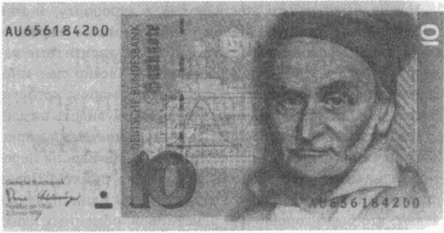</p>
<br class="calibre15"/><p class="calibre7">    Но представьте, солидные управляющие в крупнейших банках, которые носят строгие темные костюмы и с важным видом обсуждают поведение валют, вовсю пользуются «гауссовой кривой» как инструментом для измерения риска. Ужас!</p>
<h3 border="1" id="filepos1090508" class="calibre6"><span class="bold"> Нарастание убывания <br class="calibre10"/></span></h3>
<p class="calibre7">    Основной принцип «гауссовой кривой», позвольте напомнить, состоит в том, что большинство наблюдений относится к заурядности, к среднему; по мере того как вы отдаляетесь от средних величин, шансы отклонения падают все быстрее и быстрее (экспоненциально). Если вам нужна сжатая формулировка, вот она: резкий рост скорости падения шансов при удалении от центра, то есть от среднего. Чтобы это проиллюстрировать, я беру пример гауссовой величины, такой как рост, и немного упрощаю его, чтобы сделать более наглядным. Предположим, что средний рост (мужчин и женщин) 1 метр 67 сантиметров, или 5 футов 7 дюймов. Будем считать, что так называемая единица отклонения равна в данном случае го сантиметрам. Взглянем на ряд прибавок к 1 метру 67 сантиметрам и рассмотрим шансы того, что кто-то окажется столь высоким.</p>
<div class="calibre18"> </div><blockquote class="calibre19"><blockquote class="calibre19">
<p class="calibre7">    на 10 см выше среднего (т. е. выше 1 м 77 см, или 5 футов 10 дюймов): 1 из 6,3</p>
<p class="calibre7">    на 20 см выше среднего (т. е. выше 1 м 87 см, или б футов 2 дюймов): 1 из 44</p>
<p class="calibre7">    на 30 см выше среднего (т. е. выше 1 м 97 см, или б футов б дюймов): 1 из 740</p>
<p class="calibre7">    на 40 см выше среднего (т. е. выше 2 м 07 см, или б футов 9 дюймов): 1 из 32 000</p>
<p class="calibre7">    на 50 см выше среднего (т. е. выше 2 м 17 см, или 7 футов 1 дюйма): 1 из 3 500 000</p>
<p class="calibre7">    на 60 см выше среднего (т. е. выше 2 м 27 см, или 7 футов 5 дюймов): 1 из 1 000 000 000</p>
<p class="calibre7">    на 70 см выше среднего (т. е. выше 2 м 37 см, или 7 футов 9 дюймов): 1 из 780 000 000 000</p>
<p class="calibre7">    на 80 см выше среднего (т.е. выше 2 м 47 см, или 8 футов 1 дюйма): 1 из 1 600 000 000 000 000</p>
<p class="calibre7">    на 90 см выше среднего (т. е. выше 2 м 57 см, или 8 футов 5 дюймов): 1 из 8 900 000 000 000 000 000</p>
<p class="calibre7">    на 100 см выше среднего (т. е. выше 2 м 67 см, или 8 футов 9 дюймов): 1 из 130 000 000 000 000 000 000 000</p>
<p class="calibre7">    …и</p>
<p class="calibre7">    на 110 см выше среднего (т.е. выше 2 м 77 см, или 9 футов 1 дюйма): 1 из 36 000 000 000 000 000 000 000 000 000 000 000 000 000 000 000 000 000 000 000 000 000 000 000 000 000 000 000 000 000.</p>
</blockquote></blockquote>
<p class="calibre7">    Думаю, не ошибусь, если скажу, что после 22 отклонений, означающих превышение среднего роста на 2 м 20 см, шансы достигают числа, имеющего в знаменателе так называемый «гугол» — единицу со ста нулями.</p>
<p class="calibre7">    Цель этого списка — проиллюстрировать ускорение. Обратите внимание на разницу в шансах между* превышением среднего роста на 60 и на 70 сантиметров: всего 4 лишних дюйма снижают шансы с одного на миллиард до одного на 780 миллиардов! А теперь посмотрите на скачок между 70 и 80 сантиметрами: еще 4 дюйма, и шансы слетают с одного на 780 миллиардов до одного на 1,6 миллиона миллиардов!<a title="Один из наименее понятых аспектов гауссианы — это ее слабость и уязвимость в оценке хвостовых событий. Шансы отклонения на 4 сигмы (сигма — индикатор степени отклонений) вдвое выше, чем на 4,15 сигмы. Шансы отклонения на 20 сигм — в триллион раз выше, чем на 21 сигму! Это значит, что небольшая ошибка в измерении сигмы приведет к огромной недооценке вероятности. То есть относительно некоторых событий мы можем ошибиться в триллион раз." href="#filepos1552425"><span class="calibre11"><sup class="calibre12">[69]</sup></span></a></p>
<p class="calibre7">    Это стремительное убывание вероятности какого-либо явления и приводит к игнорированию аномалий. Только одна кривая может давать такое убывание — гауссиана (и ее не-масштабируемые родичи).</p>
<h3 border="1" id="filepos1096506" class="calibre6"><span class="bold"> Принцип Мандельброта <br class="calibre10"/></span></h3>
<p class="calibre7">    Для сравнения возьмем другой пример: взглянем на шансы быть состоятельным в Европе. Будем исходить из того, что состоятельность там — величина масштабируемая, то есть мандельбротовская. (Это конечно же приблизительное описание; оно упрощено, чтобы подчеркнуть логику масштабируемого распределения.) <a title="Моя основная мысль, которую я на все лады повторяю в третьей части, такова. Все крайне упрощается, если понять, что есть две, и только две, возможные парадигмы: немасштабируемая (вроде гауссовой) и другая (как мандельбротовская случайность). Мы вскоре увидим, что достаточно отказаться от применения немасштабируемой парадигмы, чтобы избавиться от узкого взгляда на мир. Это подобно отрицательному эмпиризму: я набираюсь знаний, отметая то, что неверно." href="#filepos1553367"><span class="calibre11"><sup class="calibre12">[70]</sup></span></a></p>
<div class="calibre18"> </div><blockquote class="calibre19"><blockquote class="calibre19">
<p class="calibre7">    Масштабируемое распределение капитала</p>
<p class="calibre7">    Люди с чистым капиталом выше 1 миллиона евро: 1 из 62,5</p>
<p class="calibre7">    выше 2 миллионов евро: 1 из 250</p>
<p class="calibre7">    выше 4 миллионов евро: 1 из 1000</p>
<p class="calibre7">    выше 8 миллионов евро: 1 из 4000</p>
<p class="calibre7">    выше 16 миллионов евро: 1 из 16 000</p>
<p class="calibre7">    выше 32 миллионов евро: 1 из 64 000</p>
<p class="calibre7">    выше 320 миллионов евро: 1 из 6 400 000</p>
</blockquote></blockquote>
<p class="calibre7">    Скорость убывания здесь остается постоянной (падения нет!). Удваивая сумму денег, урезаем долю в четыре раза, не важно, на каком уровне, — 8 миллионов евро или 16 миллионов евро. Вот вам, по существу, и разница между Среднестаном и Крайнестаном.</p>
<p class="calibre7">    Напомню сравнение между масштабируемым и немасштабируемым, проведенное нами в главе 3. Масштабируемость означает, что нет встречного ветра, который мешает двигаться вперед.</p>
<p class="calibre7">    Конечно, мандельбротовский Крайнестан может принимать разные формы. Рассмотрим капитал в предельно концентрированной версии Крайнестана; там, удваивая капитал, уполовиниваешь долю. Результат количественно отличается от примера, приведенного выше, но он подчиняется той же логике.</p>
<div class="calibre18"> </div><blockquote class="calibre19"><blockquote class="calibre19">
<p class="calibre7">    Фрактальное распределение капитала с большой дифференциацией</p>
<p class="calibre7">    Люди с чистым капиталом выше 1 миллиона евро: 1 из 63</p>
<p class="calibre7">    выше 2 миллионов евро: 1 из 125</p>
<p class="calibre7">    выше 4 миллионов евро: 1 из 250</p>
<p class="calibre7">    выше 8 миллионов евро: 1 из 500</p>
<p class="calibre7">    выше 16 миллионов евро: 1 из 1000</p>
<p class="calibre7">    выше 32 миллионов евро: 1 из 2000</p>
<p class="calibre7">    выше 320 миллионов евро: 1 из 20 000</p>
<p class="calibre7">    выше 640 миллионов евро: 1 из 40 000</p>
</blockquote></blockquote>
<p class="calibre7">    Если бы мы подсчитывали капиталы по методу Гаусса, то наблюдали бы следующую картину.</p>
<div class="calibre18"> </div><blockquote class="calibre19"><blockquote class="calibre19">
<p class="calibre7">    Распределение капитала, исходя из закона Гаусса</p>
<p class="calibre7">    Люди с чистым капиталом выше 1 миллиона евро: 1 из 63</p>
<p class="calibre7">    выше 2 миллионов евро: 1 из 127 000</p>
<p class="calibre7">    выше 3 миллионов евро: 1 из 14 000 000 000</p>
<p class="calibre7">    выше 4 миллионов евро: 1 из 886 000 000 000 000 000</p>
<p class="calibre7">    выше 8 миллионов евро: 1 из 16 000 000 000 000 000 000 000 000 000 000 000 выше 16 миллионов евро: 1 из… ни один из моих компьютеров не справляется с вычислением.</p>
</blockquote></blockquote>
<p class="calibre7">    Этими списками я хочу показать качественное различие парадигм.</p>
<p class="calibre7">    Итак, вторая парадигма масштабируема; в ней нет встречного ветра, который сбивает с ног. Заметим, что существует другой термин для определения масштабируемости — степенные законы.</p>
<p class="calibre7">    Само по себе осознание, что мы живем в среде, где властвуют такие законы, дает нам немного. Почему? Потому что в реальной жизни придется производить вычисления куда более сложные, чем те, что предлагаются Гауссом. Только «гауссова кривая» довольно легко открывает свои свойства. Мой метод — это скорее определенный взгляд на мир в целом, а не какое-то точное решение.</p>
<h3 border="1" id="filepos1103504" class="calibre6"><span class="bold"> Что надо запомнить <br class="calibre10"/></span></h3>
<p class="calibre7">    Запомните: любая разновидность «гауссовой кривой» сопротивляется силе встречного ветра, под порывами которого шансы падают все быстрее и быстрее по мере удаления от нормы, в то время как масштабируемые, или мандельбротовские, варианты никаким ветрам не подвластны. Это в общем-то главное из того, что вам необходимо знать<a title="Заметим, что масштабируемость величин не обязательно безгранична, но предел может быть очень-очень отдаленным, и поскольку мы не знаем, где он, то обращаемся с имеющейся ситуацией, как если бы она была неограниченно масштабируемой. Практически количество проданных экземпляров одной книги не может превышать количество живущих на земле людей, но этот верхний предел настолько велик, что мы вправе его вообще не учитывать. Более того, в новой обложке книгу, вероятно, удастся продать человеку, уже ее читавшему. А если говорить о кино, то нетрудно побудить зрителя несколько раз посмотреть один и тот же фильм." href="#filepos1554345"><span class="calibre11"><sup class="calibre12">[71]</sup></span></a>.</p>
<h3 border="1" id="filepos1105428" class="calibre6"><span class="bold"> Неравенство <br class="calibre10"/></span></h3>
<p class="calibre7">    Давайте приглядимся получше к природе неравенства. В гауссовой структуре по мере увеличения отклонений неравенство все больше сходит на нет — из-за роста скорости падения. С масштабируемым все иначе: неравенство постоянно остается тем же. Неравенство среди сверхбогатых такое же, как и среди просто богатых, — оно не стирается<a title="В августе 2006 г. я жил в отеле в Дедэме, в штате Массачусетс, рядом с летним лагерем, где отдыхал мой ребенок, и там как раз дорабатывал эту книгу. Признаться, тогда меня заинтриговало обилие крупногабаритных фигур, бродивших по холлу и создававших длинные очереди у лифтов. Как выяснилось, в этом отеле проводился ежегодный съезд «Национальной ассоциации в поддержку тучных людей». Большинство делегатов были настолько толстыми, что я затруднялся выделить среди них главного тяжеловеса: между толстяками царило своеобразное равенство (поскольку еще большая тучность просто несовместима с жизнью). А вот на съезде «Национальной ассоциации в поддержку богатых людей» один наверняка затмевал бы остальных и даже среди сверхбогатеев очень малый процент представлял бы большую долю общего богатства." href="#filepos1555610"><span class="calibre11"><sup class="calibre12">[72]</sup></span></a>.</p>
<p class="calibre7">    Рассмотрим конкретный пример. Возьмем наугад, скажем, двух американцев, которые вместе зарабатывают 1 миллион долларов в год. Каково самое вероятное распределение этих денег? В Среднестане — по полмиллиона каждому. В Крайнестане расклад был бы таков: $50 000 и $950 000.</p>
<p class="calibre7">    В ситуации с продажами книг расклад получился бы еще более асимметричным. Если бы два автора продали миллион книг, то выяснилось бы, что раскуплено 993 000 экземпляров книги одного, а другого — 7000. Эта комбинация куда вероятнее, чем то, что каждой книги продалось по 560 000 экземпляров. Чем крупнее сумма, тем асимметричней будут части, на которые она разобьется.</p>
<p class="calibre7">    Почему именно так? Для сравнения возьмем, например, человеческий рост. Если бы я сказал вам, что суммарный рост двух человек 14 футов, вы, скорее всего, разбили бы это число пополам: по 7 футов у каждого, но не стали бы предполагать, что у одного рост 2 фута, у другого 12 футов. Даже вариант 8 футов и 6 футов маловероятен! Люди выше 8 футов настолько редки, что такая комбинация была бы невозможна.</p>
<h3 border="1" id="filepos1109636" class="calibre6"><span class="bold"> Крайнестан и правило 80/20 <br class="calibre10"/></span></h3>
<p class="calibre7">    Вы когда-нибудь слышали о правиле 80/20? Это своего рода «брэнд» степенного закона — собственно, с этого и началось, когда Вильфредо Парето заметил, что 80 процентов земли в Италии принадлежит 20 процентам населения. Некоторые трактуют это правило таким образом: 80 процентов работы делается 20 процентами населения. Или еще вариант: 80 процентов усилий дают только 20 процентов результата, и наоборот.</p>
<p class="calibre7">    Замечу, что правило это сформулировано не самым впечатляющим образом: его легко было бы назвать правилом 50/01, то есть 50 процентов работы делается 1 процентом работников. В последней формулировке мир предстает еще более несправедливым, но она абсолютно идентична первой. В каком смысле? Ну если уж неравенство существует, то нужно уточнить: те, кто составляют 20 процентов в правиле 80/20, вносят разный по объему вклад — лишь немногие из них обеспечивают ту самую, львиную, долю результатов.</p>
<p class="calibre7">    Примерно один из сотни обеспечивает чуть больше половины общего вклада.</p>
<p class="calibre7">    Правило 80/20 — только метафора; это не общее правило, тем более — не строгий закон. В американском книжном бизнесе пропорция скорее будет 97/20 (то есть 97 процентов продаж книг приходятся на долю 20 процентов авторов); если проанализировать соотношение в литературе не художественной, разрыв будет еще более разительным (половину продаж обеспечивают 20 книг из почти 8 тысяч).</p>
<p class="calibre7">    Хочу заметить, что не все тут так уж неопределимо. В некоторых ситуациях концентрация 80/20 обладает весьма предсказуемыми и опознаваемыми свойствами, что позволяет принимать уверенные решения, поскольку вы можете заранее вычленить эти важные 20 процентов. Такие ситуации очень легко контролировать. Например, Малкольм Гладуэлл писал в «Нью-Йоркере», что лишь немногие зверюги охранники издеваются над заключенными. Отфильтруйте этих охранников, и уровень издевательств в тюрьме резко упадет. С другой стороны, в издательском деле никогда заранее не знаешь, какая книга принесет жирную прибыль. То же и с войнами: предугадать, какой именно очередной конфликт погубит огромную часть населения планеты, невозможно.</p>
<h3 border="1" id="filepos1113623" class="calibre6"><span class="bold"> Трава и деревья <br class="calibre10"/></span></h3>
<p class="calibre7">    Начну эту главу с того, что подытожу и повторю рассуждения, уже изложенные ранее. Шкалирование неопределенности, основанное на кривой нормального распределения, не учитывает возможности (и соответственно влияния) резких скачков или разрывов, а потому неприменимо в Крайнестане. Пользоваться им — все равно что рассматривать траву, вглядываясь в мелкие стебельки и не замечая (огромных!) деревьев. Непредсказуемые большие отклонения, конечно, редки, но на них нельзя закрывать глаза, поскольку их кумулятивный эффект огромен.</p>
<p class="calibre7">    Традиционное гауссово исследование мира начинается с фокусирования на обычном, и лишь потом, как нечто побочное, рассматриваются исключения или так называемые «выбросы». Но есть и другой подход, который за основу берет исключительное, а второстепенным считает обычное.</p>
<p class="calibre7">    Я не раз уже подчеркивал, что есть случайности двух видов, качественно различные, как воздух и вода. Одна не зависит от крайностей; другая, наоборот, находится под их сильным воздействием. Одна не порождает Черных лебедей; другая порождает. Недопустимо использовать для газа те же характеристики, что и для жидкости. И если бы это было допустимо, такой подход не назывался бы «приближением». Газ не «приближается» к жидкости.</p>
<p class="calibre7">    Можно с толком использовать гауссов метод для упорядочения тех величин, которые по объективным причинам не слишком сильно удаляются от средних значений. Если переменные находятся в зоне действия закона гравитации или имеются физические ограничения, препятствующие чрезмерной дифференциации размеров, значит, мы попали в Среднестан. Если сила равновесия настолько велика, что малейшая разбалансировка мгновенно ликвидируется, то опять-таки гауссов метод вполне приемлем. В противном случае грош ему цена. Вот почему экономика в общем-то зиждется на понятии равновесия: оно помимо всего прочего устраивает экономистов тем, что позволяет втискивать экономические явления в гауссовы рамки.</p>
<p class="calibre7">    Заметьте, я не утверждаю, что среднестанский тип случайности не допускает никаких крайностей. Но они настолько редки, что в конечном итоге роль их очень невелика. Эффект таких крайностей ничтожно мал и уменьшается с увеличением общей совокупности.</p>
<p class="calibre7">    Теперь немного конкретики: если у вас имеется набор великанов и карликов, а иначе говоря, наблюдения, различающиеся на несколько порядков величины, вы можете все-таки оставаться на территории Среднестана. Почему? Сейчас выясним. Предположим, что у вас есть выборка в тысячу человек, с широким диапазоном от карлика до великана. Скорее всего, в этой выборке встретится много великанов, а не только какой-то один, случайный. Неожиданно возникший лишний великан не изменит среднего показателя, потому что заранее предполагается, что великанов несколько и ваш средний показатель, скорее всего, и так достаточно высок. Другими словами, наибольший экземпляр не может сильно возвышаться над средним. Средний показатель всегда учитывает наличие как великанов, так и карликов, поэтому никто из них не попадет в разряд редкостных исключений — если только не народится вдруг какой-нибудь уникальный мегавеликан или микрокарлик. Это будет Среднестан с большой амплитудой разброса.</p>
<p class="calibre7">    Снова отметим следующую закономерность: чем реже событие, тем менее точно мы можем оценить степень его вероятности — даже в рамках гауссианы.</p>
<p class="calibre7">    Позвольте вам продемонстрировать, как «гауссова кривая» вытесняет из жизни случайность — потому она так и популярна. Мы любим ее за то, что она дает определенность! Каким образом? За счет усреднения, о чем сейчас и пойдет разговор.</p>
<h3 border="1" id="filepos1120376" class="calibre6"><span class="bold"> Почему нам удается спокойно пить кофе <br class="calibre10"/></span></h3>
<p class="calibre7">    Вспомним кое-что из обсуждения Среднестана в главе 3: ни одно отдельное наблюдение не влияет на итог. И это свойство будет приобретать все большую и большую значимость по мере увеличения рассматриваемой вами совокупности. Средние показатели будут все больше и больше стабилизироваться, пока в конце концов самые разные выборки не станут похожими как две капли воды.</p>
<p class="calibre7">    За свою жизнь я выпил множество чашек кофе (это моя главная слабость). Но никогда не видел, чтобы чашка подпрыгнула на два фута и кофе не проливался на эту рукопись без внешнего вмешательства (даже в России). В самом деле, чтобы стать свидетелем такого события, недостаточно невинного пристрастия к кофе; потребуется больше жизней, чем, пожалуй, можно вообразить, — шансы равны единице после такого количества нолей, что я не смогу их выписать, даже если употреблю на это все свое свободное время.</p>
<p class="calibre7">    Но законы физики свидетельствуют, что чашка все же могла бы подпрыгнуть, — это очень маловероятно, но возможно. Частицы постоянно куда-нибудь прыгают. Как получилось, что кофейная чашка, сама состоящая из прыгающих частиц, не прыгает? Причина, говоря попросту, вот в чем: чтобы чашка подпрыгнула, нужно, чтобы все частицы прыгнули в одну и ту же сторону и сделали бы это вместе несколько раз подряд (при компенсирующем движении стола в обратную сторону). Все несколько триллионов частиц в моей кофейной чашке не прыгнут в одну и ту же сторону; этого не случится, сколько бы ни просуществовала еще наша Вселенная. Поэтому я могу спокойно поставить кофейную чашку на край письменного стола и призадуматься о более серьезных зонах неопределенности.</p>
<p class="calibre7">    Спокойствие, гарантированное моей кофейной чашке, иллюстрирует то, как гауссова случайность «укрощается» усреднением. Если бы моя чашка была одной большой частицей и вела себя так, как обычно ведет себя отдельная частица, то ее прыжки доставляли бы массу неприятностей. Но моя чашка — это триллионы очень маленьких частиц.</p>
<br class="calibre15"/><p class="calibre16">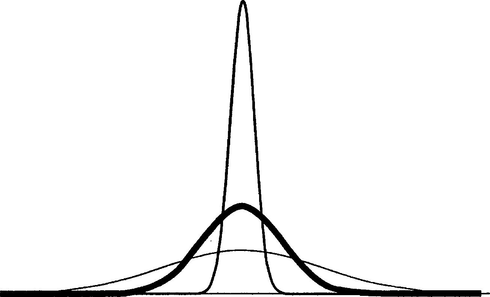</p>
<br class="calibre15"/><p class="calibre7">    Хозяева казино прекрасно это понимают, и поэтому они никогда (если всё правильно делают) не теряют денег. Они просто не позволяют одному игроку сделать крупную ставку, вместо этого предпочитая, чтобы множество игроков сделали ряд ставок ограниченного размера. Игроки могут в сумме поставить 20 миллионов долларов, но не надо беспокоиться о благополучии казино: ставки равны в среднем 20 долларам; казино ограничивает ставки тем максимумом, который позволяет хозяевам казино спокойно спать по ночам. Поэтому колебания доходов казино будут смехотворно малы, независимо от активности всех имеющихся в наличии игроков. Никто из них никогда не выйдет из казино с миллиардом долларов.</p>
<p class="calibre7">    Вышеизложенное представляет собой проявление высшего закона Среднестана: когда игроков множество, отдельный игрок практически не повлияет на итог, кроме как по мелочи.</p>
<p class="calibre7">    Отсюда следует то, что колебания вокруг среднего в гауссиане, также называемые «ошибками», на самом деле — не повод для волнений. Они маленькие, их можно легко отбросить. Они — одомашненные флуктуации вокруг среднего.</p>
<h3 border="1" id="filepos1126271" class="calibre6"><span class="bold"> Любовь к определенности <br class="calibre10"/></span></h3>
<p class="calibre7">    Если когда-то в колледже вам довелось прослушать (скучнейший) курс лекций по статистике и вы не поняли почти ничего из того, чем так восторгался профессор, если вы так и не уяснили, что такое стандартное отклонение, не расстраивайтесь. Понятие стандартного отклонения бессмысленно вне Среднестана. Ясно, что гораздо полезней и куда приятней было бы прослушать курс по биологическим аспектам эстетики или постколониальному африканскому танцу, и это проверяется эмпирически.</p>
<p class="calibre7">    Стандартные отклонения не существуют вне гауссианы, а если и существуют, то они не важны и мало что объясняют. Но дальше — хуже. Гауссово семейство (которое включает различных друзей и родственников, скажем, закон Пуассона) — единственный класс распределений, для описания которого достаточно стандартного отклонения (и среднего показателя). Больше ничего не нужно. «Гауссова кривая» — находка для любителей упрощений.</p>
<p class="calibre7">    Есть другие понятия, которые почти ничего не значат вне гауссовой ситуации — корреляция и, хуже того, регрессия. Но они глубоко внедрились в наши методы; в любом деловом разговоре непременно услышишь слово корреляция.</p>
<p class="calibre7">    Чтобы увидеть, сколь бессмысленна бывает корреляция вне Среднестана, рассмотрим данные прошлых лет, по две величины, которые уж наверняка из Крайнестана, скажем, рынки облигаций и акций, или две цены акций, или такие две величины, как изменения в продажах детских книг в США и в производстве удобрений в Китае; или цены на недвижимость в Нью-Йорке и обороты монгольского фондового рынка. Измерьте корреляцию между парами величин за различные периоды, скажем, за годы 1994, 1995, 1996 и т. д. Корреляционное соотношение, скорее всего, будет резко меняться от периода к периоду. И при этом все говорят о корреляции как о некой реальности, делая ее осязаемой, наделяя ее физическими свойствами, материализуя ее.</p>
<p class="calibre7">    Мы склонны конкретизировать и то, что называем «стандартными» отклонениями. Рассмотрим любой ряд прошлых цен или значений. Разбейте его на отрезки и измерьте их «стандартное» отклонение. Удивлены? Каждая выборка даст свое «стандартное» отклонение. Тогда почему все говорят о стандартных отклонениях? Попробуй пойми.</p>
<p class="calibre7">    Картина тут та же, что и при искажении нарратива: когда сравниваешь прошлые факты и вычисляешь одну-единствен-ную корреляцию или стандартное отклонение, такой нестабильности не замечаешь.</p>
<h3 border="1" id="filepos1130805" class="calibre6"><span class="bold"> Как вызывать катастрофы <br class="calibre10"/></span></h3>
<p class="calibre7">    Если вы пользуетесь термином статистически значимый, опасайтесь иллюзии определенности. Всегда есть вероятность, что кто-то примет свои ошибки наблюдения за гауссовы, но тогда и контекст должен быть соответствующим, гауссовым, то есть среднестанским.</p>
<p class="calibre7">    Чтобы показать, сколь неизбывно злоупотребление гауссианой и сколь это может быть опасно, рассмотрим (скучную) книгу под названием «Катастрофа», написанную судьей Ричардом Познером, плодовитым писателем. Познер сетует, что госчиновники ничего не смыслят в случайности, и рекомендует высшим должностным лицам учиться статистике… у экономистов. Поистине судья Познер пытается провоцировать катастрофы. Жаль, конечно, что он большую часть времени отдает писательству, а не чтению, но, несмотря на это, мыслитель он проницательный, глубокий и оригинальный. Просто, как и многие другие, не знает о том, что между Среднестаном и Крайнестаном есть существенные различия, и свято верит, что статистика — «наука», а не обман. Если столкнетесь с ним, расскажите ему, как все обстоит на самом деле.</p>
<h3 border="1" id="filepos1132879" class="calibre6"><span class="bold"> Усредненное чудовище Кетле <br class="calibre10"/></span></h3>
<p class="calibre7">    Эта химера, называемая «гауссовой кривой», или гауссианой, создана была не Гауссом. Да, он работал над ней, но как математик-теоретик, не прилагая ее к устройству нашей реальности, как это делают ученые со статистическим поворотом ума.</p>
<p class="calibre7">    Г. X. Харди писал в «Апологии математика»<a title="На рус. яз.: Г.П Харди. Апология математика. Ижевск: НИЦ «Регулярная и хаотическая динамика», 2000." href="#filepos1557224"><span class="calibre11"><sup class="calibre12">[73]</sup></span></a>:</p>
<div class="calibre18"> </div><blockquote class="calibre19"><blockquote class="calibre19">
<p class="calibre7">    «Настоящая» математика «настоящих» математиков, таких как Ферма, Эйлер, Гаусс, Абель и Риман, почти целиком «бесполезна» (что верно не только для «чистой», но и для «прикладной» математики).</p>
</blockquote></blockquote>
<p class="calibre7">    Ранее я уже говорил, что кривая нормального распределения была в общем-то изобретением игрока, Абрахама де Муавра (1667–1754), французского изгнанника-кальвиниста, который провел большую часть своей жизни в Лондоне, хотя и говорил по-английски с сильным акцентом. Но, как мы сейчас с вами увидим, одним из самых злостных вредителей в истории развития мысли надо считать совсем даже не Гаусса, а Кетле.</p>
<p class="calibre7">    Адольф Кетле (1796–1874) создал понятие «Phomme moyen» — «физически средний человек». Сам Кетле, «человек, наделенный мощными творческими страстями, творец, полный энергии», ни в чем не был moyen. Он писал стихи и даже принял участие в сочинении оперы. Беда заключалась в том, что Кетле был математиком, а не ученым-эмпириком, только сам этого не осознавал. Он усмотрел гармонию в кривой нормального распределения.</p>
<p class="calibre7">    У этой проблемы два уровня.</p>
<p class="calibre7">    Primo. Кетле увлекся идеей «нормативности», он хотел подогнать мир под некие средние стандарты, питая иллюзию, что это среднее и есть «норма». Конечно, было бы замечательно, если бы мы могли игнорировать влияние на нашу действительность всего необычного, «ненормального», то есть Черного лебедя. Но оставим эту мечту утопистам.</p>
<p class="calibre7">    Secondo вытекает из primo и представляет собой серьезную эмпирическую проблему. Математику повсюду мерещились колоколовидные кривые. Они ослепляли его, и я вновь убедился: если к тебе в голову забралась такая кривая, ее трудно вытравить оттуда. Позже Фрэнк Исидро Эджуорт будет называть кетлизмом эту опасную тенденцию подводить все под «колокол».</p>
<h3 border="1" id="filepos1137152" class="calibre6"><span class="bold"> Золотая посредственность <br class="calibre10"/></span></h3>
<p class="calibre7">    Концепция Кетле пришлась весьма кстати идеологам того времени, которые как раз жаждали чего-либо подобного. Вы только взгляните на список его современников: Сен-Симон (1760–1825), Пьер-Жозеф Прудон (1809–1865), Карл Маркс (1818–1883), каждый — создатель своей версии социализма. В эпоху, последовавшую за веком Просвещения, все искали aurea mediocritas, золотую середину: в богатстве, росте, весе и т.д. Это стремление подчас заставляет принимать желаемое за действительное, оно во многом навеяно поисками гармонии и… платонизмом.</p>
<p class="calibre7">    Я навсегда запомнил директиву своего отца — «in medio stat virtus», «доблесть — в умеренности». Да, долгое время это было идеалом; посредственность в этом смысле даже считалась золотой. Всеохватывающая посредственность.</p>
<p class="calibre7">    Но Кетле поднял эту идею на новый уровень. На основе собранных им данных он начал создавать среднестатистические стандарты. Обхват груди, рост, вес детей при рождении — мало что избежало стандартизации. Отклонения от нормы, как он заметил, становятся экспоненциально более редкими с увеличением амплитуды отклонения. Покончив с физическими характеристиками, месье Кетле переключился на социальную сферу. L'homme moyen имел свои привычки, свои запросы, свои методы.</p>
<p class="calibre7">    Сконструировав таким образом l'homme moyen physique и l'homme moyen moral (физического среднего человека и нравственного среднего человека), Кетле обозначил некие пределы отклонения от среднего, внутри которых любого человека помещают слева или справа от центра и, по сути, «бракуют» тех, кто оказывается у самого края. Их объявляют аномалией. Это, естественно, очень вдохновило Маркса, который ссылается на понятие среднего, или нормального, индивидуума, введенное Кетле. Он утверждает в «Капитале», что общественные различия (например, те, что обусловлены распределением капитала) должны быть сведены к минимуму.</p>
<p class="calibre7">    Надо отдать должное научной элите времен Кетле. Коллеги настороженно отнеслись к его теории. Начнем с того, что Огюстен Курно, философ, математик, экономист, усомнился в том, что можно учредить некий стандарт человека только на основании количественных характеристик. Этот стандарт будет зависеть от рассматриваемой выборки. Замеры, произведенные в одной провинции, могут отличаться от замеров в другой провинции. Ну и какие из них должны быть эталоном? По мнению Курно, Thomme moyen был бы чудовищем.</p>
<p class="calibre7">    Я так поясню его мысль.</p>
<p class="calibre7">    Даже если кому-то вдруг очень захотелось бы стать средним человеком, то ему пришлось бы утаить от «замерщиков» свои профессиональные таланты, то, в чем он неизбежно превосходит остальных, — человек не может быть средним во всем. Пианист будет лучше «среднего» играть на пианино, но хуже, чем предписано «нормой», ездить верхом. Чертежник будет лучше чертить и так далее. Понятие человека, считающегося средним, отличается от понятия человека, среднего во всем, что он делает. В действительности абсолютно средний человек был бы наполовину мужчиной, наполовину женщиной. Кетле совершенно упустил это из виду.</p>
<h3 border="1" id="filepos1142791" class="calibre6"><span class="bold"> Ошибка Бога <br class="calibre10"/></span></h3>
<p class="calibre7">    Еще больше удручает то, что во времена Кетле гауссово распределение называлось «la loi des erreurs» — «закон погрешностей», так как одним из самых ранних его приложений было распределение погрешностей в астрономических расчетах. Вам тоже не по себе? С отклонением от среднего (в данном случае и от медианы тоже) обращались как с погрешностью! Не удивительно, что Марксу понравились идеи Кетле.</p>
<p class="calibre7">    Понятие усредненности распространилось мгновенно. «Так положено» спутали с «есть» — и все это с благословения науки. Понятие середняка глубоко вошло в культуру, ожидавшую нарождения европейского среднего класса, в молодую культуру постнаполеоновского лавочника, опасающегося излишнего богатства и интеллектуального блеска. В принципе считается, что мечта об обществе с нивелированными доходами отвечает стремлениям всякого рационально мыслящего человека, вынужденного иметь дело с генетической лотереей. Если бы вам предложили выбрать общество, в котором вы родитесь в следующей жизни, но неизвестно кем именно, скорее всего вы не стали бы рисковать — предпочли бы такое общество, в котором нет существенной разницы в доходах.</p>
<p class="calibre7">    Курьезной кульминацией восхваления посредственности стало появление во Франции так называемого «пужадизма»<a title="Термин «пужадизм» образован от имени Пьера Пужада (1920–2003). В 1953 г. он основал крайне правый «Союз по защите владельцев магазинов и ремесленников», а в 1956 г. — политическую партию «Союз французского братства», получившую свыше 11 % голосов избирателей на последних парламентских выборах Четвертой республики. (Прим. ред.)" href="#filepos1557549"><span class="calibre11"><sup class="calibre12">[74]</sup></span></a>, политического движения, начавшегося с выступлений лавочников. Это было горячее братство людей более или менее благополучных, надеявшихся, что вся остальная вселенная подстроится под них — своего рода случай непролетарской революции. Их мелкоторгашеский менталитет проявлялся даже в том, как они обращались с математикой. Думал ли Гаусс, что создает формулы для лавочников?</p>
<h3 border="1" id="filepos1146590" class="calibre6"><span class="bold"> Пуанкаре приходит на помощь <br class="calibre10"/></span></h3>
<p class="calibre7">    Сам Пуанкаре относился к гауссиане с большой опаской. Я подозреваю, что он внутренне съеживался, когда ему предлагали этот и подобные подходы к моделированию неопределенности. Достаточно вспомнить, что кол околовидная кривая изначально предназначалась для измерения астрономических погрешностей, а уже небесная механика самого Пуанкаре проникнута куда более глубоким пониманием неопределенности.</p>
<p class="calibre7">    Пуанкаре писал, что один из его друзей, «выдающийся физик», жаловался ему, что физики пользуются «гауссовой кривой», потому что, вслед за математиками, считают ее математической необходимостью, математики же пользуются ею, потому что считают ее эмпирической данностью.</p>
<h3 border="1" id="filepos1147998" class="calibre6"><span class="bold"> Будем справедливы <br class="calibre10"/></span></h3>
<p class="calibre7">    Хочу особо отметить, что вообще-то (если оставить в стороне издержки в виде психологии лавочников) я искренне верю в ценность срединности и посредственности — какой гуманист не мечтает уменьшить неравенство между людьми? Нет ничего более отталкивающего, чем безрассудно сотворенный идеал сверхчеловека! На самом деле меня тревожит иная проблема — эпистемологическая, то есть проблема познания. Пора уяснить, что реальность — не Среднестан и нам надо научиться с этим жить.</p>
<h3 border="1" id="filepos1148999" class="calibre6"><span class="bold"> «Греки бы его обожествили» <br class="calibre10"/></span></h3>
<p class="calibre7">    Список людей, у которых в мозгу угнездилась (благодаря своей платонической чистоте) гауссиана, невероятно велик.</p>
<p class="calibre7">    Сэр Фрэнсис Гальтон, двоюродный брат Чарльза Дарвина и внук Эразма Дарвина, был наряду со своим кузеном одним из последних независимых ученых-джентльменов, к каковым также принадлежали лорд Кавендиш, лорд Кельвин, Людвиг Витгенштейн (на свой лад) и отчасти наш суперфилософ Бертран Рассел. Хотя Джон Мэйнард Кейнс не вполне вписывался в эту категорию, он мыслил в унисон с ней. Гальтон жил в викторианскую эпоху, когда обладатели наследственного состояния и неограниченного досуга не только упражнялись в верховой езде и стрельбе по дичи, но становились философами, учеными или (менее одаренные) политиками. Как это ни печально, вместе с той эпохой ушло нечто невосполнимое: истинные подвижники, занимающиеся наукой ради науки, не думающие о карьере.</p>
<p class="calibre7">    К сожалению, занятия наукой из бескорыстной любви к знанию не гарантируют, что ты будешь двигаться в правильном направлении. Познакомившись с «нормальным» распределением, Гальтон влюбился в него. Говорят, он однажды воскликнул, что, если бы грекам было о нем известно, они бы обожествили его. Возможно, восторг Гальтона тоже поспособствовал воцарению гауссианы в научных умах.</p>
<p class="calibre7">    Гальтон не сподобился обзавестись надлежащим математическим багажом, но был прямо-таки одержим измерениями. Он не знал о законе больших чисел, но сам открыл его, проанализировав собранные данные. Он сконструировал доску Гальтона, или «quincunx»<a title="Шахматный порядок (лат.)." href="#filepos1558289"><span class="calibre11"><sup class="calibre12">[75]</sup></span></a>, — что-то вроде автомата для игры в пинбол, с помощью которого можно смоделировать колоколовидную кривую, — об этом я расскажу через несколько абзацев. Правда, Гальтон применял кривую нормального распределения в таких областях, как генетика и наследственность, где ее использование оправданно. Но его энтузиазм помог внедрить зарождавшиеся статистические методы в социальные сферы.</p>
<h3 border="1" id="filepos1152787" class="calibre6"><span class="bold"> Ответьте, пожалуйста, «да» или «нет» <br class="calibre10"/></span></h3>
<p class="calibre7">    А сейчас позвольте мне поговорить о размерах ущерба.</p>
<p class="calibre7">    Если вам нужны качественные (а не количественные) выводы, как в психологии или медицине, где вы вполне обойдетесь «безразмерными» ответами «да» или «нет», то можете спокойно допустить, что находитесь в Среднестане. Влияние невероятного не будет слишком большим. У него есть рак либо нет; она беременна либо нет и так далее. Смертельность или беременность не имеют степеней (если не рассматривать их в эпидемических масштабах). Но, когда вы манипулируете совокупностями, различными по величине (такими как доход, ваш капитал, прибыль с портфеля ценных бумаг или продажи книг), гауссиана может вас здорово подвести, так как эта сфера не в ее компетенции. Одно-единственное число способно порушить все ваши средние показатели; одна-единственная потеря — зачеркнуть сотни и сотни прибылей. Уже нельзя говорить: «Это исключение». Заявление «да, я могу потерять деньги» довольно бессмысленно, если не указать хотя бы приблизительную сумму. Потерять весь свой капитал или потерять долю своего дневного дохода — все-таки разница.</p>
<p class="calibre7">    Именно поэтому эмпирическая психология и открытые ею свойства человеческой природы, о которых я говорил в начале этой книги, не страдают от ложного использования гауссианы; психологам вообще повезло, ибо переменные, которыми они оперируют, в большинстве своем не выходят за рамки обычной гауссовой статистики. Выясняя, сколько человек в выборке имеют определенную особенность или склонность к ошибке, они обычно добиваются результата посредством ответов «да» или «нет». Ни одно отдельно взятое наблюдение не может в корне изменить общего заключения.</p>
<p class="calibre7">    Теперь я представлю вам идею гауссианы, разобрав ее по кирпичикам.</p>
<h3 border="1" id="filepos1156141" class="calibre6"><span class="bold"> Мысленный (численный) эксперимент, демонстрирующий, откуда происходит кривая нормального распределения <br class="calibre10"/></span></h3>
<p class="calibre7">    Рассмотрим своего рода пинбольный автомат, такой, как на рисунке 8. Запустим 32 шара, предполагая, что доска правильно сбалансирована, так что у шара одинаковые шансы свалиться направо и налево на любом пересечении, наткнувшись на штырь. Ожидаемый результат — большая часть шаров «приземлится» в центральных ячейках: чем ячейки дальше от центра, тем меньше туда попадет шаров.</p>
<p class="calibre7">    Затем проведем мысленный эксперимент. Человек бросает монетку, смотрит, что выпало, орел или решка, и в зависимости от этого делает шаг влево или вправо. Это так называемое «случайное блуждание» не обязательно связано с ходьбой. С таким же успехом можно представить, что вместо шага вправо или влево вы каждый раз выигрываете или проигрываете доллар, при этом ведя учет долларам, накопившимся у вас в кармане.</p>
<p class="calibre7">    Предположим, я заключаю с вами честное пари, где возможность выигрыша у вас примерно та же, что и проигрыша. Кидаем монетку. Орел — вы получаете доллар, решка — теряете доллар.</p>
<br class="calibre15"/><p class="calibre16">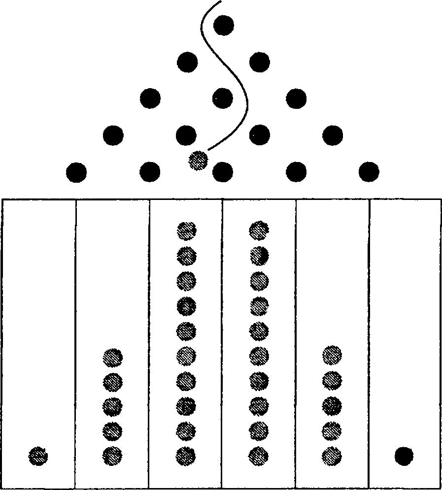</p>
<br class="calibre15"/><p class="calibre7">    При первом броске вы либо выиграете, либо проиграете.</p>
<p class="calibre7">    При втором броске число возможных исходов удваивается. Вариант 1: выигрыш-выигрыш. Вариант 2: выигрыш-проигрыш. Вариант 3: проигрыш-выигрыш. Вариант 4: проигрыш-проигрыш. У каждого из этих вариантов одинаковые шансы, комбинация из одного выигрыша и одного проигрыша встречается вдвое чаще, так как варианты 2 и 3, выигрыш-проигрыш и проигрыш-выигрыш, приводят к одинаковому результату. И в этом ключ к гауссиане. В середине очень многое сглаживается, и, как мы увидим, к середине тяготеет большинство. Поэтому если при каждом броске разыгрывается доллар, то на втором броске ваши шансы таковы: 25 процентов, что вы приобретете или потеряете 2 доллара, и 50 процентов, что выйдете в нуль.</p>
<p class="calibre7">    Третий бросок снова удваивает число исходов, так что их становится восемь. Вариант 1 (выигрыш-выигрыш после двух бросков) разветвляется на выигрыш-выигрыш-выигрыш и выигрыш-выигрыш-проигрыш. Мы добавляем выигрыш или проигрыш к каждому из предыдущих результатов. Вариант 2 разветвляется на выигрыш-проигрыш-выигрыш и выигрыш-проигрыш-проигрыш. Вариант з разветвляется на проигрыш- выигрыш-выигрыш и проигрыш-выигрыш-проигрыш. Вариант 4 разветвляется на проигрыш-проигрыш-выигрыш и проигрыш-проигрыш-проигрыш.</p>
<p class="calibre7">    Теперь у нас восемь вариантов, все одинаково вероятные. Заметим, что снова можно сгруппировать средние исходы, в которых выигрыш перечеркивает проигрыш. (На доске Гальтона ситуации, когда шар отлетает влево, а затем вправо, или наоборот, преобладают, так что в результате в середине оказывается много шаров.)</p>
<p class="calibre7">    Совокупный итог таков: 1) три выигрыша; 2) два выигрыша, один проигрыш, итого один выигрыш; з) два выигрыша, один проигрыш, итого один выигрыш; 4) один выигрыш, два проигрыша, итого один проигрыш; 5) два выигрыша, один проигрыш, итого один выигрыш; 6) два проигрыша, один выигрыш, итого один проигрыш; 7) два проигрыша, один выигрыш, итого один проигрыш; и, наконец, 8) три проигрыша.</p>
<p class="calibre7">    Из восьми вариантов вариант трех выигрышей встречается однажды. Вариант трех проигрышей встречается однажды. Вариант одного итогового проигрыша (один выигрыш, два проигрыша) встречается три раза. Вариант одного итогового выигрыша (один проигрыш, два выигрыша) встречается три раза.</p>
<p class="calibre7">    Сделаем еще один бросок, четвертый. Будет шестнадцать равновероятных исходов. Один вариант четырех выигрышей, один вариант четырех проигрышей, четыре варианта двух выигрышей, четыре варианта двух проигрышей и шесть вариантов выхода в нуль.</p>
<p class="calibre7">    «Quincunx» (это латинское производное от числительного «пять») в нашем пинбольном примере представляет собой иллюстрацию пятого броска или шага, после которого шансы, как легко высчитать, возрастают до шестидесяти четырех. Вот идея, воплощенная в доске Фрэнсиса Гальтона. Гальтону явно недоставало здоровой лени и математической сметки: вместо того чтобы сооружать такое устройство, вообще-то проще было поработать с алгеброй или провести мысленный эксперимент вроде нашего.</p>
<p class="calibre7">    Однако продолжим игру до сорокового броска. На это уйдет лишь несколько минут, но понадобится калькулятор, чтобы вычислить количество исходов, так как наши мозги с этим не справятся. Получится col1¦0¦ возможных комбинаций — то есть более тысячи миллиардов. Не затрудняйтесь просчитывать шаг за шагом — это будет два в сороковой степени, так как на каждом этапе каждая цепочка раздваивается. (Вспомните, как мы добавили выигрыш и проигрыш к вариантам третьего броска, удвоив число вариантов.) Из этих комбинаций только одна будет состоять из сорока выигрышей и только одна — из сорока проигрышей. Остальные будут тяготеть к середине, в данном случае — к нулю.</p>
<p class="calibre7">    Вам уже ясно, что этот тип случайности чрезвычайно беден крайностями. Все сорок бросков оказываются выигрышными лишь в одном случае из col1¦0¦. Если вы станете час за часом проделывать это упражнение с сорока бросками, вам придется здорово попотеть, прежде чем выпадут сорок орлов (или сорок решек) подряд. Поскольку вы наверняка будете прерываться, чтобы поесть, поспорить с друзьями и соседями, попить пива и поспать, то готовьтесь, ради такой удачи, прожить около четырех миллионов жизней. А представьте, что вы добавляете один лишний бросок. Чтобы выкинуть орла сорок один раз подряд, понадобится потратить на попытки восемь миллионов жизней! Переход от 40 к 41 уменьшает шансы вдвое. Это — ключевое свойство немасштабируемого подхода к анализу случайности: крайние отклонения убывают с все возрастающей скоростью. А пятьдесят орлов подряд могут выпасть один-единственный раз на протяжении 4 миллиардов жизней!</p>
<p class="calibre7">    Мы еще не получили «гауссову кривую», но сильно приблизились к ней. Пока это протогауссиана, но суть уже видна. (На самом деле вы никогда не встретите «гауссову кривую» в чистом виде, так как это платоническая фигура — к ней можно только стремиться, но достичь ее невозможно.) Но, как показывает рисунок 9, знакомая колоколовидная форма уже просматривается.</p>
<p class="calibre7">    Способны ли мы ближе подойти к совершенной «гауссовой кривой»? Да. Для этого нужно разбить раунд на большее количество менее результативных бросков. Можно ставить на кон не доллар, а десять пенсов и бросать не 40, а 4000 раз, складывая результаты. Ожидаемый риск будет приблизительно тем же — ив этом фокус. В соотношении двух названных вариантов игры есть небольшой сознательный сдвиг. Мы умножили число бросков на 100, но поделили размер ставки на 10 — не ищите сейчас причины, просто предположите, что варианты «эквивалентны». Общий риск эквивалентен, но теперь нам открылась возможность выиграть или проиграть 40 долларов за 400 последовательных бросков.</p>
<br class="calibre15"/><p class="calibre16">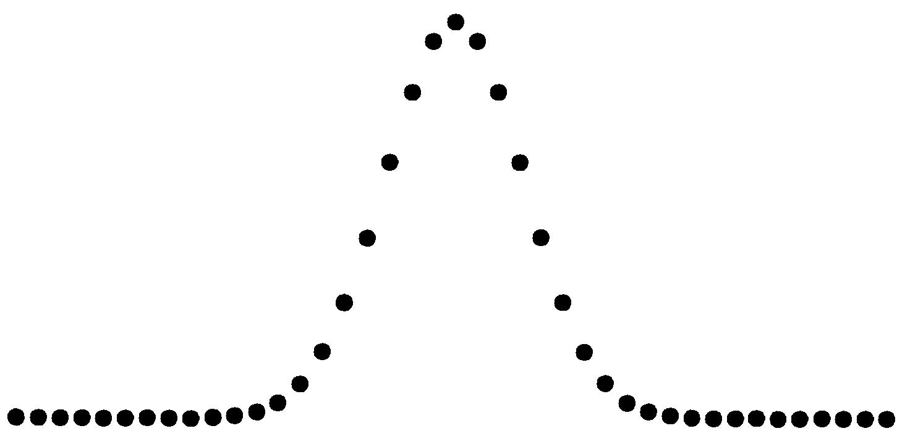</p>
<br class="calibre15"/><p class="calibre7">    Шансы равны единице на единицу со 120 нулями, то есть 1/1 000 000 000 000 000 000 000 000 000 000 000 000 000 000 000 000 000 000 000 000 000 000 000 000 000 000 000 000 000 000 000 000 000 000 000 col1¦4¦.</p>
<p class="calibre7">    Продолжим процесс дробления. Будем бросать 400 000 раз, ставя на кон по 1 центу и подходя, таким образом, все ближе и ближе к гауссиане. Рисунок показывает распределение результатов между 40 и минус 40 долларами, то есть восьмьюдесятью смысловыми точками. При ставке в 1 цент мы доводим их до 8000 смысловых точек.</p>
<p class="calibre7">    Пойдем дальше. Мы можем бросить монету 4000 раз, ставя по 1/10 цента. Ну а как насчет 400 000 раз по 1/1000 цента? Совершенная кривая Гаусса (как платоническая форма) — это отображение бесконечного числа бросков с бесконечно малыми ставками. Не пробуйте их себе представить — не получится. Нам нет смысла говорить о «бесконечно малых» ставках (поскольку у нас их бесконечное множество, а значит, мы имеем дело с тем, что математики называют бесконечной структурой). Но хочу вас обрадовать: существует альтернатива.</p>
<br class="calibre15"/><p class="calibre16"></p>
<br class="calibre15"/><p class="calibre7">    Мы начали с простой ставки и пришли к чему-то абсолютно абстрактному. Начали с наблюдений и оказались в царстве математики. В математике вещи обретают абстрактную чистоту.</p>
<p class="calibre7">    Но, поскольку чистых абстракций в природе не существует, пожалуйста, даже не пытайтесь постичь глубинный смысл фигуры на рисунке 10. Просто знайте, как ею пользоваться. Воспринимайте ее как градусник: не обязательно понимать, что означает температура, чтобы пользоваться показаниями градусника. Главное — знать соответствие между температурой и, скажем, комфортностью (или какими-то другими эмпирическими факторами). Шестьдесят градусов по Фаренгейту соответствуют приятной погоде; минус десять — не то, о чем следует мечтать. Не обязательно интересоваться действительной скоростью столкновений между частицами, которая помогла бы уяснить подоплеку понятия «температура». Градусы — это некое подсобное средство, с помощью которого ваше сознание может перевести какие-то внешние явления на уровень чисел. Вот и гауссиана устроена так, что 68,2 процента наблюдений сосредоточиваются между минус одним и плюс одним стандартным отклонением от среднего. Я повторю: даже не пытайтесь понять, является ли стандартное отклонение средним отклонением — нет, не является, и многие (слишком) многие люди, использующие термин стандартное отклонение, этого не понимают. Стандартное отклонение — это вопрос простого соотношения, обычное число, с которым соизмеряются явления, если они действительно из разряда «гауссовых».</p>
<p class="calibre7">    Стандартное отклонение часто называется сигмой. Также говорят о дисперсии (дисперсия — это сигма в квадрате).</p>
<p class="calibre7">    Обратите внимание на симметричность «колокола». Одинаковый результат получается при отрицательной и при положительной сигме. Шансы спуститься ниже минус четырех сигм равны шансам перевалить через четыре сигмы, у нас они 1 к 32 000.</p>
<p class="calibre7">    Как видите, основная идея «гауссовой кривой» (о чем я говорил выше) в том, что большинство наблюдений колеблется в рамках заурядного, среднего, в то время как шансы отклонения сокращаются быстрее и быстрее (экспоненциально), чем дальше вы уходите от центра. Если хотите ухватить главное, вот оно: резкое ускорение падения шансов при удалении от середины. Вероятность аномалий стремительно уменьшается. Ими можно спокойно пренебречь.</p>
<p class="calibre7">    Из этого свойства вытекает высший закон Среднестана: поскольку большие отклонения чрезвычайно редки, их вклад в итог будет чрезвычайно мал.</p>
<p class="calibre7">    В примере с замерами человеческого роста я брал за единицу отклонения десять сантиметров, показывая, как тает процент гигантов по мере увеличения роста. Это были отклонения на одну сигму; а еще ростовая таблица наглядно показывает, как происходит «соизмерение с сигмой», — ее использование в качестве единицы измерения.</p>
<h3 border="1" id="filepos1175896" class="calibre6"><span class="bold"> Эти утешительные постулаты <br class="calibre10"/></span></h3>
<p class="calibre7">    Выделим главные постулаты, определившиеся в ходе нашей игры в монетку, которая привела к протогауссовой, или рядовой, случайности.</p>
<p class="calibre7">    Первый главный постулат: броски не зависят друг от друга. У монетки нет памяти. То, что вам выпали орел или решка, вовсе не означает, что в следующий раз вас ждет удача. Умение бросать монету не приходит со временем. Если ввести такой параметр, как память или мастерство бросания, вся эта гауссова конструкция зашатается.</p>
<p class="calibre7">    Вспомним наши рассуждения из главы 14 о привязках и кумулятивном преимуществе. Обе теории утверждают, что сегодняшний выигрыш повышает шансы на выигрыш завтра. Поэтому вероятности зависят от истории и первый главный постулат, на котором строится гауссиана, в реальности не работает. В играх, конечно, прошлые выигрыши не должны увеличивать вероятность будущих, но в жизни это не так, и поэтому я такой противник обучения теории вероятности на примере игр. Если выигрыш влечет за собой дальнейший выигрыш, то у вас гораздо больше шансов стать свидетелем сорока выигрышей подряд, чем в пределах протогауссианы.</p>
<p class="calibre7">    Второй главный постулат: «сумасшедших» прыжков не бывает. Размер шага, этого элементарного кирпичика классического случайного распределения, всегда известен: как раз один шаг. Он всегда определен. Мы не встречали ситуаций с «сумасшедшей» неравномерностью движений.</p>
<p class="calibre7">    Помните, что, если один из этих двух главных постулатов отсутствует, ваши шаги (или подбросы монетки) не создадут в итоге гауссиану. При определенных обстоятельствах вы можете столкнуться с из ряда вон выходящей масштабно-инвариантной случайностью мандельбротовского типа.</p>
<h3 border="1" id="filepos1179092" class="calibre6"><span class="bold"> «Вездесущесть гауссианы» <br class="calibre10"/></span></h3>
<p class="calibre7">    Всякий раз, когда я заявляю, что «гауссова кривая» вездесуща отнюдь не в реальной жизни, а только в умах статистиков, от меня требуют: «Докажи!» Как мы увидим в следующих двух главах, это сделать очень легко, а вот противоположное никому еще до сих пор доказать не удалось. Стоит мне высказать предположение, что существуют процессы, не описываемые гауссианой, меня просят это обосновать и, помимо фактов, «предъявить стоящую за ними теорию». В главе 14 мы рассматривали модель «деньги идут к деньгам», предлагавшуюся, чтобы оправдать неиспользование гауссианы. Разработчикам таких моделей приходится тратить уйму времени на подведение теоретической базы под возможные масштабируемые ситуации — как будто им надо за что-то извиняться. Теория-фигория! У меня с этим эпистемологическая проблема — с необходимостью оправдывать то, что миру не удается соответствовать идеализированной модели, которую сумел пропиарить какой-то слепец, отрешенный от реальности.</p>
<p class="calibre7">    Я предпочитаю не моделировать возможные ситуации возникновения негауссовой случайности (впадая тем самым в грех слепого теоретизирования), а делать нечто противоположное: пристально изучать гауссиану и определять, где она действует, а где нет. Я знаю, где Среднестан. По-моему, именно приверженцы гауссианы часто (да что там — почти всегда) не вполне понимают, с чем они имеют дело, и должны обосновывать свои действия, а не наоборот.</p>
<p class="calibre7">    Эта вездесущесть гауссианы — не свойство мира, а проблема, существующая в наших умах и вытекающая из нашего взгляда на мир.</p>
<p class="calibre7">    В следующей главе мы обратимся к масштабируемости окружающего мира и к свойствам фрактала. А в той, что за ней, коснемся злоупотребления гауссианой в социоэкономике и «необходимости строить теории».</p>
<p class="calibre7">    Я порой излишне горячусь, но только потому, что провел значительную часть своей жизни, размышляя над этой проблемой. С тех пор как я начал думать над ней и проводить разнообразные мысленные эксперименты вроде описанного выше, я тщетно искал вокруг себя, в мире бизнеса и статистики, кого-нибудь, кто был бы до конца интеллектуально последователен в смысле осознания угрозы Черного лебедя и отказа от гауссианы и ее инструментария. Многие, принявшие мою идею Черного лебедя, не смогли довести ее до логического завершения, а именно — не смогли признать, что нельзя использовать одну-единственную меру случайности, называемую стандартным отклонением (и называть ее «риском»); нельзя рассчитывать на простые ответы, когда речь идет о неопределенности. Отказ от гауссианы требует смелости, преданности истине и способности соединять разрозненные факты, требует желания глубже постичь случайность. И еще нужно не возводить чужую мудрость в абсолют.</p>
<p class="calibre7">    Затем я начал знакомиться с физиками, которые отвергли гауссов подход, но стали жертвой другого заблуждения (иной формы платонизма), а именно — веры в точные предсказательные модели, эксплуатирующие в основном привязку из главы 14. Я не мог найти ни одного глубокого и технически подкованного ученого, который смотрел бы на мир случайности и понимал его природу, видел бы в расчетах подспорье, а не самоцель. Мне потребовалось около полутора десятилетий, чтобы открыть для себя такого мыслителя. Человека, сделавшего многих лебедей Серыми: Мандельброта — великого Бенуа Мандельброта.</p>
<div class="mbppagebreak"></div><h2 border="1" class="calibre13" id="filepos1185325"><span class="calibre14"><span class="bold"> Глава 16. Эстетика случайности <br class="calibre10"/></span></span></h2>
<p class="calibre7">    <span class="italic">Библиотека Мандельброта. — Был ли Галилей слеп? — Бисер перед свиньями. — Самоподобие. — Простая многосложность, или, может быть, многосложная простота, мира.</span></p>
<h3 border="1" id="filepos1185817" class="calibre6"><span class="bold"> Певец случайности <br class="calibre10"/></span></h3>
<p class="calibre7">    Одним грустным вечером я вдыхал запах старых книг в библиотеке Бенуа Мандельброта. Это было в августе 2005-го, и от жары старые французские книги сильнее пахли клеем, вызывая сильную обонятельную ностальгию. Обычно мне удается подавлять такие приступы ностальгии, но только не те, что накатывают на меня с волной музыки или запахов. Запах книг Мандельброта — это запах французской литературы, библиотеки моих родителей, многих часов, проведенных в книжных магазинах и библиотеках, когда я был подростком, когда меня окружали книги в основном (увы) на французском языке и когда я думал, что Литература превыше всего. (Мне не приходилось видеть столько французских книг с той поры.) Как бы мне ни хотелось считать Литературу абстракцией, она имела материальное воплощение. У нее был запах, и я его ощущал.</p>
<p class="calibre7">    Тот день был печальным еще и потому, что Мандельброт уезжал — как раз тогда, когда я удостоился права звонить ему в самое неурочное время только ради того, чтобы, например, спросить: почему до людей не доходит, что 80/20 можно запросто трансформировать в 50/1? Мандельброт решил переехать в район Бостона — он не уходил на пенсию, а собирался работать в исследовательском центре, спонсируемом одной национальной лабораторией. Ему предстоял переезд в квартиру в Кембридже, и, покидая свой просторный дом под Нью-Йорком, он пригласил меня набрать у него книг.</p>
<p class="calibre7">    Даже их названия звучали ностальгически. Я наполнил коробку французскими изданиями, такими как вышедшая в 1949 году «Материя и память» Анри Бергсона, — ее Мандельброт, похоже, купил, еще будучи студентом (ах, этот запах!).</p>
<p class="calibre7">    После того как я множество раз упоминал Мандельброта, я наконец-то представлю его. Прежде всего — как первого человека с ученой степенью, с которым я когда-либо говорил о случайности, не чувствуя, что меня обманывают. Другие математики, специализирующиеся на вероятностях, швыряли в меня «винеровской мерой» и какими-то теоремами с русскими названиями типа теоремы Соболева или теоремы Колмогорова, без которых они как без рук. Им никак не удавалось ухватить суть предмета или хотя бы высунуться из своей маленькой скорлупки, чтобы увидеть со стороны ее эмпирические изъяны. С Мандельбротом все было не так: казалось, что мы были рождены в одной стране, встретились после многих горьких лет изгнания и наконец-то можем свободно поговорить на родном языке. Он — единственный учитель из плоти и крови, который у меня был; главные мои учителя — это книги в моей библиотеке. Я слишком мало уважал математиков, занимающихся неопределенностью и статистикой, чтобы считать кого-то из них своим учителем. По моим представлениям, математики, натасканные на определенность, не должны совать нос в случайность. Мандельброт показал, что я не прав.</p>
<p class="calibre7">    У него необычайно чистый и правильный французский язык, совсем как у поколения моих родителей в Леванте или у аристократов Старого Света. Поэтому, когда мне случалось слышать его не лишенный акцента, но совершенно стандартный американский английский, я каждый раз удивлялся. Он высок, у него лишний вес, отчего его лицо кажется младенческим (хотя я никогда не видел, чтобы он много ел), и его присутствие физически ощутимо.</p>
<p class="calibre7">    Может показаться, что объединяющие нас с Мандельбротом предметы — это из ряда вон выходящая неопределенность, Черные лебеди и скучные (иногда не слишком скучные) статистические понятия. Но, хотя мы и сотрудничаем в этих сферах, это не то, вокруг чего обычно крутятся наши разговоры: в основном мы обсуждаем литературные и эстетические материи или вспоминаем исторические байки о людях блестящего ума. Я имею в виду именно блестящий ум, а не ученость. Мандельброт может много чего порассказать о феноменальной когорте деятелей науки, с которыми ему доводилось работать на протяжении прошлого века, но так уж я устроен, что мне гораздо менее любопытны личности ученых, чем колоритных эрудитов. Подобно мне, Мандельброт интересуется просвещенными индивидуумами, в которых сочетается то, что считается несочетаемым. Среди его любимых персонажей — барон Пьер Жан де Менаш, с которым он познакомился в Принстоне в 1950-е годы, где тот делил комнату с физиком Оппенгеймером. Де Менаш был в точности тем, что меня особенно занимает, — воплощением Черного лебедя. Он происходил из состоятельной купеческой семьи александрийских евреев, говорившей по-французски и по-итальянски, как все культурные левантинцы. Его предки переделали свою арабскую фамилию на венецианский манер (Menasce), добавили к ней походя венгерский аристократический титул и вращались среди особ королевской крови. Де Менаш не только обратился в христианство, но стал священником-доминиканцем и крупным исследователем семитских и персидского языков. Мандельброт все время расспрашивал меня об Александрии, поскольку неустанно искал таких уникумов.</p>
<p class="calibre7">    Да и я, честно сказать, искал в жизни именно их — обладателей незаурядного интеллекта. Мой эрудированный и разносторонний отец (который, оставайся он в живых, был бы всего на две недели старше Бенуа М.) любил общество чрезвычайно культурных монахов-иезуитов. Я помню, как они, приходя, занимали мое место за обеденным столом. Один из них был «остепененным» медиком и физиком, но при этом преподавал арамейский язык местным студентам в Бейрутском институте восточных языков. Его прежним послушанием вполне могло быть преподавание физики в высшей школе, а еще раньше — чтение лекций на медицинском факультете. Эрудиция такого рода производила на моего отца куда большее впечатление, чем конвейерная научная работа. Может, у меня врожденная неприязнь к bildung-sphilisters.</p>
<p class="calibre7">    Хотя Мандельброт часто восхищался темпераментом эрудитов высокого полета и замечательных, но не очень известных ученых, вроде его старого друга Карлтона Гайдузека, человека, сумевшего докопаться до причин некоторых тропических болезней, о своих связях с теми, кого принято считать великими, он не склонен был распространяться. Я далеко не сразу узнал, что он сотрудничал с огромным количеством ученых чуть ли не всех специальностей — о чем любой другой твердил бы с утра и до ночи. Хотя я уже несколько лет тесно знаком с ним, только на днях, беседуя с его женой, я выяснил, что он два года ассистировал как математик психологу Жану Пиаже. Еще одно потрясение я испытал, когда узнал, что он работал и с великим историком Фернаном Броделем. Но Мандельброт, казалось, был безразличен к Броделю. Его не тянуло поболтать о Джоне фон Неймане, под чьим началом он проходил стажировку. Его иерархия была перевернутой. Однажды я спросил Мандельброта о встреченном мною на вечеринке Чарльзе Трессере, безвестном физике, писавшем статьи по теории хаоса и пополнявшем свой заработок исследователя выручкой от продажи пирожных собственного изготовления. «Un homme extraordinaire!»<a title="Необыкновенный человек (фр.)." href="#filepos1558486"><span class="calibre11"><sup class="calibre12">[76]</sup></span></a> — вскричал Мандельброт и рассыпался в похвалах Трессеру. Но когда я спросил его об одном научном корифее, он ответил: «Типичный bon eleve, прилежный студент без глубины и без полета». Корифей был нобелевским лауреатом.</p>
<h3 border="1" id="filepos1198860" class="calibre6"><span class="bold"> Платонизм треугольников <br class="calibre10"/></span></h3>
<p class="calibre7">    Теперь о том, почему я называю это дело мандельбротовской, или фрактальной, случайностью. Каждый отдельный кусочек и деталь головоломки уже упоминались кем-нибудь раньше, скажем, Парето, Юлом и Ципфом, но именно Мандельброт а) соединил точки, б) связал случайность с геометрией (причем с ее определенной областью) и в) придал предмету естественную завершенность. По правде говоря, многие математики знамениты сегодня отчасти потому, что он использовал их работы, чтобы подвести фундамент под собственные построения, — как делаю и я в этой книге. «Мне пришлось придумать себе предшественников, чтобы люди относились ко мне серьезно», — сказал он мне однажды, так что его ссылки на мнение авторитетов — всего лишь риторический прием. Почти всегда можно раскопать тех, кто уже высказывал данную мысль, и опереться на их вклад. Олицетворением большой идеи, носителем «брэндового имени» становится в науке тот, кто соединяет точки, а не тот, кто случайно сделал наблюдение. Даже Чарльз Дарвин, который, как утверждают невежды от науки, «придумал» выживание наиболее приспособленных, заговорил об этом не первым. Он написал во введении к «Происхождению видов», что излагаемые им факты не всегда новы; но его выводы, как ему кажется, «представляют интерес» (такова его по-викториански скромная формулировка). В конечном счете известность приобретают те, кто делает выводы и улавливает важность идей, видя их реальную ценность. Именно они способны развить тему.</p>
<p class="calibre7">    Итак, вот что представляет собой мандельбротова геометрия.</p>
<h3 border="1" id="filepos1201797" class="calibre6"><span class="bold"> Геометрия природы <br class="calibre10"/></span></h3>
<p class="calibre7">    Треугольники, квадраты, круги и другие геометрические фигуры, которые заставляли многих из нас зевать в классе, — сами по себе прекрасные и чистые понятия, но, похоже, в сознании школьных учителей, а также современных архитекторов и дизайнеров, они встречаются чаще, чем в природе. Пусть бы так, да вот только большинство из нас об этом не подозревает. Горы — не треугольники и не пирамиды; деревья — не окружности; прямых линий почти нигде не увидишь. Мать-природа не посещала уроков геометрии и не читала книг Евклида Александрийского. Ее геометрия полна зазубрин, но с собственной логикой, причем такой, которую легко понять.</p>
<p class="calibre7">    Я уже говорил, что мы, похоже, от рождения склонны платонизировать и мыслить исключительно в рамках пройденного материала: любому, будь то хоть каменщик, хоть натурфилософ, не так легко вырваться из рабства рефлексов. Подумайте, что великий Галилей, разоблачитель лжи в других вопросах, написал следующее:</p>
<div class="calibre18"> </div><blockquote class="calibre19"><blockquote class="calibre19">
<p class="calibre7">    Великая книга Природы всегда лежит раскрытая перед нашими глазами, и истинная философия записана в ней… Но мы не можем прочитать ее, если не выучим сперва языка и символов, с помощью которых она написана… Она написана на языке математики, а буквы ее — треугольники, круги и другие геометрические фигуры.</p>
</blockquote></blockquote>
<p class="calibre7">    Галилей что, был незрячим? Даже великий Галилей, со всей своей знаменитой независимостью ума, не сумел ясным взором взглянуть на мать-природу. Я уверен, что у него в доме были окна и что он иногда выходил на свет божий: ему следовало бы знать, что треугольники в природе найти нелегко. Гораздо легче промыть себе мозги.</p>
<p class="calibre7">    Мы либо слепы, либо невежественны, либо и то и другое вместе. Ведь совершенно же очевидно, что геометрия природы — не евклидова, однако никто, почти никто, этого не видит.</p>
<p class="calibre7">    Подобная (физическая) слепота равносильна игровой ошибке, заставляющей нас думать, что казино — это олицетворение случайности.</p>
<h3 border="1" id="filepos1205534" class="calibre6"><span class="bold"> Фрактальность <br class="calibre10"/></span></h3>
<p class="calibre7">    Но сначала о том, что такое фракталы. Потом мы покажем, как они связаны с так называемыми степенными, или масштабируемыми, законами.</p>
<p class="calibre7">    Слово фрактал введено Мандельбротом для описания геометрии неровного, ломаного (оно образовано от латинского fractus — дробный, фрагментарный). Фракталъностъ — это повторение в разном масштабе геометрических узоров, плодящих все более и более мелкие версии самих себя. Каждая часть в некоторой степени напоминает целое. Я постараюсь показать в этой главе, как фракталы соотносятся с тем типом неопределенности, который должен носить имя Мандельброта: мандельбротовская случайность.</p>
<p class="calibre7">    Прожилки в листьях выглядят как ветви; ветви выглядят как деревья; камни выглядят как маленькие горы. Когда предмет меняет размер, не происходит качественных изменений. Если взглянуть на побережье Британии с самолета, оно напоминает то, что ты видишь, глядя на его крохотный кусочек в увеличительное стекло. Такой род самоподобия подразумевает, что одно обманчиво короткое и простое правило повторения может использоваться либо компьютером, либо, более произвольно, матерью-природой, чтобы строить формы, кажущиеся очень сложными. Это правило может оказаться полезным для компьютерной графики, но, что важнее, именно так работает природа. Мандельброт выстроил математический объект, известный сейчас как множество Мандельброта, самый знаменитый объект в истории математики. Множество приобрело популярность у последователей теории хаоса, потому что оно плодит картины все возрастающей сложности, подчиняясь на вид пустяковому рекурсивному правилу (то есть такому, которое способно применять себя к себе же до бесконечности). Можно рассматривать этот объект во все более и более крупном масштабе, так и не достигая предела — формы будут по-прежнему узнаваемыми. Они никогда не повторяются, но обладают сходством друг с другом, общими семейными чертами.</p>
<p class="calibre7">    Такие построения играют заметную роль в искусстве. Вот несколько примеров:</p>
<p class="calibre7">    Визуальные искусства. Сейчас в основе большинства объектов компьютерной графики лежит та или иная разновидность мандельбротова фрактала. Фракталы также встречаются в архитектуре и живописи — разумеется, неосознанно включенные художниками в структуру произведения.</p>
<p class="calibre7">    Музыка. Медленно напойте первые четыре ноты Пятой симфонии Бетховена: «Та-та-та-та!» Затем замените каждую отдельную ноту тем же самым началом из четырех нот, так что получится такт из шестнадцати нот. Вы увидите (вернее, услышите), что каждая маленькая волна напоминает исходную большую. У Баха и Малера, например, музыкальная тема часто состоит из нескольких подтем, похожих на нее.</p>
<p class="calibre7">    Поэзия. Поэзия Эмили Дикинсон, к примеру, фрактальна: крупное напоминает мелкое. Поэтесса, по мнению комментатора, «плетет продуманный узор из слов, размеров, рефренов, движений и звуков».</p>
<p class="calibre7">    Сначала фракталы сделали Бенуа М. парией в математическом истеблишменте. Французские математики были в ужасе. Что? Картинки? Mon dieu! Это все равно что показать порнофильм собранию набожных православных бабушек в моем родном Амиуне. Поэтому Мандельброт некоторое время оставался интеллектуальным изгоем, работая в исследовательском центре «Ай-би-эм» на севере штата Нью-Йорк. Это было типичное «в ж… деньги!», так как айбиэмовское жалованье позволяло ему заниматься чем хочется.</p>
<p class="calibre7">    Но масса людей (прежде всего компьютерщиков) сразу схватила суть. Книга Мандельброта «Фрактальная геометрия природы», вышедшая в свет четверть века назад, произвела настоящий фурор. Ею зачитывались в художественных кругах, она дала толчок новым идеям в искусстве, в архитектурном дизайне, даже крупным индустриальным проектам. Мандельброту предложили место профессора медицины! Может статься, легкие самоподобны? На лекции Бенуа М. ломом ломились художники и артисты, за что его прозвали «рок-звездой математики». Компьютерный век помог ему стать одним из самых востребованных математиков в истории, причем гораздо раньше, чем он был признан обитателями башни из слоновой кости. Мы вскоре увидим, что его теория, вдобавок к универсальности, обладает одним необычным свойством: она на редкость проста для понимания.</p>
<p class="calibre7">    Несколько слов о его биографии. Мандельброт приехал во Францию из Варшавы в 1936 году, в двенадцать лет. Из-за тягот нелегальной жизни в оккупированной нацистами Франции он, учась в основном самостоятельно, отчасти избежал традиционного галльского образования с его отупляющей зубрежкой алгебры. Позже на него сильно повлиял его дядя Шолем, видный представитель французского математического истеблишмента, возглавлявший кафедру в Коллеж де Франс. Поселившись в Соединенных Штатах, Бенуа М. работал в основном как ученый-прикладник, лишь спорадически занимая академические должности.</p>
<p class="calibre7">    Компьютер играл две роли в новой науке, становлению которой помог Мандельброт. Во-первых, фрактальные объекты, как мы видели, могут генерироваться путем применения простого правила к самому себе, что идеально подходит для автоматической деятельности компьютера (или матери-природы). Во-вторых, в процессе генерирования интуитивных образов происходит постоянная притирка между математиком и создаваемыми объектами.</p>
<p class="calibre7">    Посмотрим теперь, какое отношение все это имеет к случайности. Если быть точным, карьера Мандельброта началась именно с вероятности.</p>
<h3 border="1" id="filepos1215540" class="calibre6"><span class="bold"> Визуальный подход к Крайнестану/Среднестану <br class="calibre10"/></span></h3>
<p class="calibre7">    Я смотрю на ковер в своем кабинете. Если я буду изучать его через микроскоп, то увижу пересеченную местность. Если я стану разглядывать его через увеличительное стекло, то местность покажется мне более ровной, но все же весьма ухабистой. Но когда я смотрю на него с высоты своего роста, он выглядит почти таким же гладким, как лист бумаги. Ковер, обозреваемый невооруженным глазом, соответствует Среднестану и закону больших чисел: я вижу сумму волнистостей, которые сглаживаются. Это как гауссова случайность: моя чашка с кофе не подпрыгивает на столе, потому что суммарное движение всех ее частиц оборачивается стабильностью. Таким же образом, суммируя маленькие гауссовы неопределенности, получаешь определенность: это закон больших чисел.</p>
<p class="calibre7">    Гауссиана не самоподобна, и поэтому моя кофейная чашка не прыгает.</p>
<p class="calibre7">    Рассмотрим теперь прогулку в горы. Как высоко ни поднимешься над поверхностью земли, она будет оставаться неровной. Даже при взгляде с высоты 30 ооо футов. Когда летишь над Альпами, вместо маленьких камешков видишь зазубренные вершины. Значит, некоторые поверхности — не из области Среднестана и изменение масштаба не приводит к их сглаживанию. (Заметим, что эффект выравнивания достигается, только если подняться на еще большую высоту. Наша планета представляется гладким шаром тем, кто наблюдает за ней из космоса, но это потому, что она слишком маленькая. Будь Земля крупнее, на ней нашлись бы горы, превосходящие по высоте Гималаи, и потребовалась бы еще большая удаленность от нее, чтобы их очертания стерлись. Точно так же, живи на Земле больше людей, пусть даже с тем же средним достатком, наверняка нашелся бы кто-то, чей капитал перекрыл бы состояние Билла Гейтса.)</p>
<p class="calibre7">    Рисунки и и 12 иллюстрируют эту идею: глядя на первый рисунок, можно подумать, что на землю упала крышка от объектива.</p>
<br class="calibre15"/><p class="calibre16">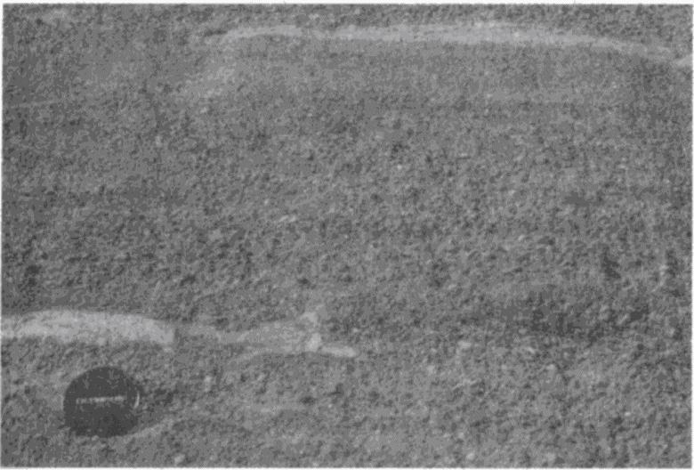</p>
<br class="calibre15"/><p class="calibre16">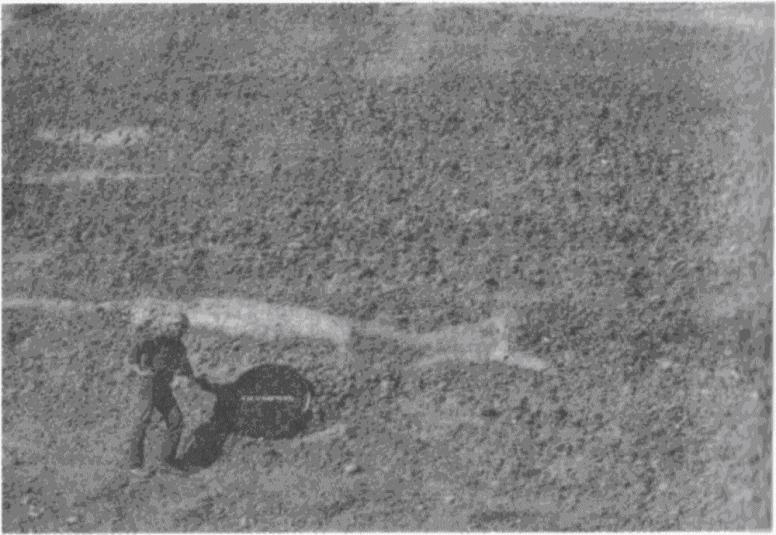</p>
<br class="calibre15"/><p class="calibre7">    Вернемся к нашему краткому упоминанию побережья Британии. Если взглянуть на него с самолета, контуры не будут так уж отличаться от контуров, видимых с ближайшего обрыва. Изменение масштаба не меняет формы или степени гладкости.</p>
<h3 border="1" id="filepos1219672" class="calibre6"><span class="bold"> Бисер перед свиньями <br class="calibre10"/></span></h3>
<p class="calibre7">    Но какое отношение фрактальная геометрия имеет к распределению капитала, величине городов, обороту финансовых рынков, потерям на войне или размеру планет? Давайте соединим точки.</p>
<p class="calibre7">    Ключ здесь в том, что у фрактала есть числовая, или статистическая, размерность, которая (более или менее) сохраняется при изменении масштаба, — пропорции (в отличие от гауссианы) постоянны. Другой пример такого самоподобия представлен на рисунке 13. Как мы знаем из главы 15, сверхбогатые сходны с богатыми, только богаче, — богатство масштабно-независимо, или, вернее, о его зависимости ничего не известно.</p>
<p class="calibre7">    В 1960-е годы Мандельброт изложил свои идеи о ценах на предметы потребления и акции экономической элите, и экономисты-финансисты пришли в восторг. В 1963 году тогдашний декан бизнес-магистратуры университета Чикаго Джордж Шульц предложил ему место профессора. Это тот самый Джордж Шульц, который позже стал госсекретарем Рональда Рейгана.</p>
<p class="calibre7">    Через некоторое время Шульц позвонил ему, чтобы отказаться от своего предложения.</p>
<p class="calibre7">    Сейчас, через сорок четыре года, в экономике и социальной статистике ничего не изменилось, если не считать некоторых косметических поправок, учитывающих присутствие в мире лишь рядовой случайности, — и при этом нобелевские медали раздаются направо-налево. Появилось несколько статей с «доказательствами» неправоты Мандельброта, авторы которых не понимают того, о чем постоянно твержу я: выискивая периоды, лишенные редких событий, всегда можно получить данные, «подтверждающие», что стоящий за ними процесс — из разряда гауссовых. Точно так же можно выбрать день, в который не произошло убийств, и использовать его как «свидетельство» нашей безгрешности. Я повторю, что из-за асимметрии, свойственной индукции, проще оспорить невиновность, чем признать ее, и по той же причине проще оспорить гауссиану, чем принять. Фрактал же, напротив, труднее оспорить, чем принять. Почему? Потому что одно-единственное событие может опровергнуть утверждение, что перед нами — гауссиана.</p>
<br class="calibre15"/><p class="calibre16">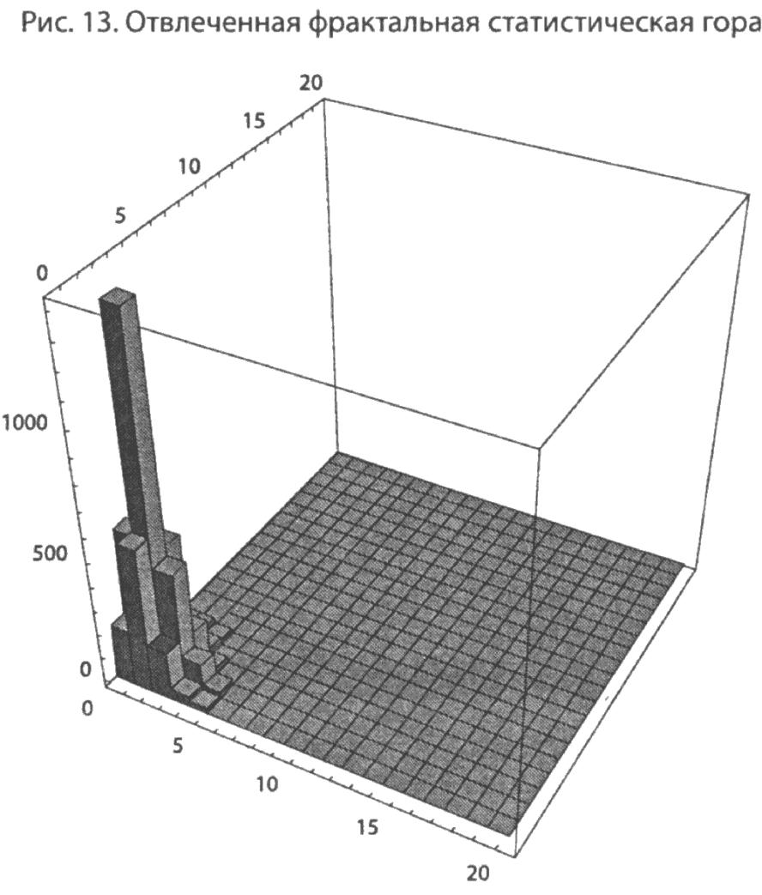</p>
<br class="calibre15"/><p class="calibre7">    В итоге четыре десятилетия тому назад Мандельброт вручил экономистам и пекущимся о своем резюме филистерам жемчуг, который они отвергли, потому что его идеи были для них слишком хороши. Именно это самое и называют margaritas ante porcos — бисер перед свиньями.</p>
<p class="calibre7">    В оставшейся части главы я расскажу, почему для объяснения большой доли случайностей мною предлагаются именно мандельбротовы фракталы, не обязательно в их точном употреблении. Фракталы — это вариант по умолчанию, приближение, основа. Они не решают проблему Черного лебедя и не превращают всех Черных лебедей в явления предсказуемые, но они значительно смягчают проблему Черного лебедя, делая эпохальные события постижимыми. (Черные лебеди становятся Серыми. Почему Серыми? Потому что чистая белизна есть только в гауссиане. Подробности позже.)</p>
<h3 border="1" id="filepos1225141" class="calibre6"><span class="bold"> Логика фрактальной случайности (с предупреждением)<a title="Нетехнари могут пропустить текст отсюда до конца главы." href="#filepos1558691" class="calibre20"><span class="calibre21"><sup class="calibre23">[</sup></span></a><a title="Нетехнари могут пропустить текст отсюда до конца главы." href="#filepos1558691" class="calibre20"><span class="calibre21"><sup class="calibre23">77]</sup></span></a>
<br class="calibre10"/></span></h3>
<p class="calibre7">    Я показал в таблицах возрастания богатства в главе 15 логику фрактального распределения: если богатство удваивается с 1 (минимум) до 2 (минимум) миллионов, доля людей с таким капиталом урезается вчетверо, то есть налицо экспонента 2. При экспоненте 1 доля такого же богатства уменьшилась бы вдвое. Экспонента — это показатель степени, поэтому широко распространен термин степенной закон. Будем называть количество случаев, перекрывающих некий уровень, превышением: превышение 2 миллионов — это количество людей с состоянием больше 2 миллионов. Одно из основных свойств этих фракталов (или еще один способ выразить их основное свойство — масштабируемость) заключается в том, что отношение двух превышений будет отношением их нижних порогов<a title="Симметрия позволяет нам брать за точку отсчета и верхние пороги." href="#filepos1558946"><span class="calibre11"><sup class="calibre12">[78]</sup></span></a>, возведенным в степень, равную минус экспоненте.</p>
<p class="calibre7">    Проиллюстрируем это. Положим, вы «думаете», что только 96 названий книг в год разойдутся тиражом более 250 000 экземпляров (как это было в прошлом году), и, «по-вашему», экспонента должна быть примерно 1,5. Простым умножением 96 на (500 000 / 250 000)-1,5 вы можете определить, что примерно 34 названия разойдутся тиражом более 500 000 экземпляров. Пойдя далее, мы установим, что около 8 книг будут проданы в количестве более миллиона экземпляров: 96 х (1 000 000 / 250 000)-1,5.</p>
<br class="calibre15"/><p class="calibre16">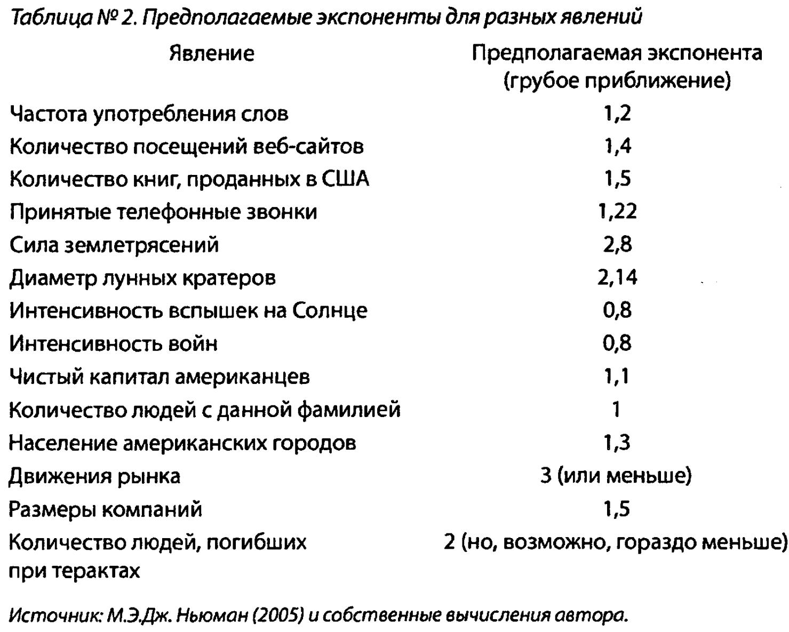</p>
<br class="calibre15"/><p class="calibre7">    Давайте рассмотрим разные выверенные экспоненты для всевозможных явлений.</p>
<p class="calibre7">    Но прежде всего следует предупредить, что эти экспоненты ни в коем случае не точные показатели. Почему, мы увидим через минуту, но пока отметим, что этих параметров мы не наблюдаем; мы их просто угадываем или вводим для статистики, и поэтому временами бывает трудно узнать истинные параметры — если они вообще существуют. Сначала поговорим о практической роли экспоненты.</p>
<br class="calibre15"/><p class="calibre16">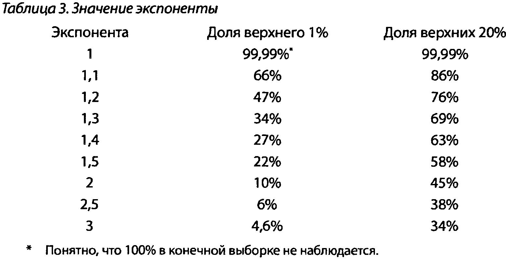</p>
<br class="calibre15"/><p class="calibre7">    Таблица 3 иллюстрирует влияние крайне невероятного. Она показывает долю верхнего 1 процента и верхних 20 процентов в общей сумме. Чем меньше экспонента, тем выше эта доля. Но посмотрите, сколь чувствителен процесс: переход от 1,1 к 1,3 разом уменьшает процент с 66 до 34. Разница в экспоненте всего лишь в 0,2 резко меняет результат — и ведь такую разницу способна дать простая ошибка в расчетах. А разница-то принципиальная: только подумайте, что мы точно не знаем, чему равен показатель, потому что не можем измерить его непосредственно. Единственное, что нам остается, — это делать прикидки, основываясь на прошлых данных, или полагаться на теории, которые позволяют построить некую модель, которая, в свою очередь, позволяет строить некие предположения. Но у таких моделей могут оказаться скрытые изъяны, из-за чего опасно безоговорочно применить их к реальности.</p>
<p class="calibre7">    Итак, помните, что экспонента 1,5 — это приближение, что ее трудно вычислить, что она не свалится на вас с неба, по крайней мере на счет раз-два, и что вы столкнетесь с гигантской погрешностью. Вы обнаружите, что число книг, проданных в количестве более чем миллион экземпляров, не обязательно будет равно 8 — их может быть целых 20 или всего лишь 2.</p>
<p class="calibre7">    Еще важнее то, что применение именно этой экспоненты допустимо начиная с некоторого числа, называемого «переходным». Это могут быть 200 000 книжных экземпляров, а то и 400 000. Точно так же у богатства, скажем, выше 600 миллионов долларов, когда неравенство растет, и ниже этой черты — свойства разные. Как узнать, где точка перехода? Это проблема. Мои коллеги и я обработали примерно 20 миллионов финансовых данных. Набор данных у нас у всех был один, но мы так и не пришли к согласию в том, какова должна быть экспонента. Мы понимали, что данные подчинены действию фрактального степенного закона, но, как оказалось, точное число высчитать невозможно. Однако знание того, что распределение масштабируемо и фрактально, давало нам право действовать и принимать решения.</p>
<h3 border="1" id="filepos1232885" class="calibre6"><span class="bold"> Проблема верхней границы <br class="calibre10"/></span></h3>
<p class="calibre7">    Некоторые аналитики исследовали и согласились принять фрактал — «до определенного предела». Они утверждают, что богатство, продаваемость книг и рыночные обороты на некотором уровне перестают быть фрактальными. Предлагаемый ими метод — «усечение»- Я согласен, что есть уровень, на котором фрактальность может сойти на нет, только вот где он? Сказать: я не знаю, где находится верхний предел, и сказать: предела нет — на практике одно и то же. Устанавливать верхний предел крайне опасно. Кто-нибудь может предложить: ограничим наш анализ богатства потолком в 150 миллиардов долларов. Но кто-то другой имеет все основания возразить: а почему не 151 миллиард? Или не 152? С таким же успехом можно считать, что эта переменная стремится к бесконечности.</p>
<h3 border="1" id="filepos1234384" class="calibre6"><span class="bold"> Не верьте в точность <br class="calibre10"/></span></h3>
<p class="calibre7">    Я научился на опыте нескольким трюкам: какую бы экспоненту я ни пытался высчитать, она, скорее всего, будет преувеличена (напомню, что чем больше экспонента, тем скромнее роль значительных отклонений) — то, что у вас перед глазами, оказывается менее «чернолебяжьим», чем то, что от вас скрыто. Я называю это проблемой маскарада.</p>
<p class="calibre7">    Скажем, я генерирую процесс с экспонентой 1,7. Вы не видите работы генерирующего устройства, а только ряд полученных данных. Если я спрошу, какова экспонента, вы с большой долей вероятности остановитесь на чем-то вроде 2,4. Итог будет таким даже при миллионе показателей. Причина в том, что некоторым фрактальным процессам нужно очень много времени, чтобы раскрыть свои свойства, и вы недооцениваете силу вероятного всплеска.</p>
<p class="calibre7">    Иногда фрактал может умело замаскироваться под гауссиану, особенно когда «разветвление» начинается с большого числа. У фрактальных распределений всплески такого рода настолько редки, что мы теряем бдительность: мы не распознаем их фрактальную структуру.</p>
<h3 border="1" id="filepos1236418" class="calibre6"><span class="bold"> Снова о лужице <br class="calibre10"/></span></h3>
<p class="calibre7">    Из всего вышесказанного вы уже наверняка поняли, что, какую бы модель мы ни признавали властительницей мира, узнать ее параметры непросто. Так что в связи с Крайнестаном вновь встает проблема индукции, на сей раз еще более остро, чем в любой из предыдущих глав. Говоря по-простому, если процесс имеет фрактальный характер, он оперирует громадными величинами, а значит, есть вероятность громадных отклонений, но насколько часто эти отклонения будут возникать, трудно сказать мало-мальски уверенно. Это напоминает проблему лужицы: она могла образоваться из самых разных кубиков льда. Как человек, который идет от реальности к возможным объясняющим моделям, я встречаюсь с массой проблем совершенно иного свойства, чем проблемы тех, кто поступает наоборот.</p>
<p class="calibre7">    Я только что прочел три «научно-популярные» книги, посвященные исследованиям сложных систем: «Вездесущесть» Марка Бьюкенена, «Критическую массу» Филипа Болла<a title="На рус. яз.: Филип Болл. Критическая масса. Как одни явления порождают другие. M.: Гелеос, 2008." href="#filepos1559217"><span class="calibre11"><sup class="calibre12">[79]</sup></span></a> и «Почему мало что удается» Пола Ормерода. По мнению этих трех авторов, мир социальных наук полон степенных законов, и с таким взглядом я конечно же согласен. Они также заявляют, что многие из явлений такого порядка на самом деле универсальны, что есть удивительное сходство между разными процессами в природе и поведением социальных групп, с чем я тоже согласен. Подкрепляя свои исследования теориями различных сетей, они указывают на поразительное соответствие между так называемыми критическими явлениями в естественных науках и самоорганизацией социальных групп. Они объединяют процессы, порождающие лавины, социальные поветрия и «информационные каскады», с чем я опять же согласен.</p>
<p class="calibre7">    Универсальность — одна из причин, по которым степенные законы, связанные с критическими точками, особенно интересуют физиков. Есть много ситуаций как в теории динамических систем, так и в статистической механике, когда многие свойства динамики возле критической точки не зависят от особенностей действующей динамической системы. Экспонента в критической точке может быть одинаковой для многих систем одной группы, даже если во многом другом системы различны. Я почти согласен с такой трактовкой универсальности. Наконец, все три автора призывают нас применять методы статистической физики, сторонясь эконометрики и гауссоподобных немасштабируемых распределений, как разносчиков чумы, в чем я с ними полностью солидарен.</p>
<p class="calibre7">    Но все три автора, добиваясь точности или призывая к ней, допускают просчет, смешивая прямые и обратные процессы (задачу и обратную задачу), — что для меня есть величайший научный и эпистемологический грех. Они неодиноки в этом; почти каждый, кто работает с данными, но не принимает решений на основе этих данных, подвержен тому же греху, разновидности искажения нарратива. В отсутствие обратной связи ты смотришь на модели и думаешь, что они подтверждают реальность. Я верю в идеи этих трех книг, но не в способ их применения — и уж конечно не в точность, которую авторы им приписывают. На самом деле теория сложности должна учить нас подозрительнее относиться к научным разработкам «точных» моделей реальности. Она не делает всех лебедей белыми, это ясно; она делает их Серыми, и только.</p>
<p class="calibre7">    Как я сказал раньше, мир для глядящего «снизу вверх» эмпирика с эпистемологической точки зрения — буквально мир иной. Мы лишены роскоши сидеть и медитировать над уравнением, правящим Вселенной; мы только наблюдаем данные, выдвигаем предположения о том, каким может быть процесс в действительности, и «калибруем» их, подправляя наше уравнение в соответствии с дополнительной информацией. По мере того как события разворачиваются перед нами, мы сравниваем то, что видим, с тем, что ожидали увидеть. Обычно открытие того факта, что история движется вперед, а не назад, сбивает с людей спесь, особенно с тех, кто знаком с искажением нарратива. Какими бы самонадеянными ни были бизнесмены, их часто приводят в чувство напоминания о разрыве между задумкой и результатом, между точными моделями и реальностью.</p>
<p class="calibre7">    То, о чем я говорю, — это непроницаемость, неполнота информации, невозможность увидеть «генератор мира». История не открывает нам своих мыслей — мы должны их угадывать.</p>
<h3 border="1" id="filepos1244424" class="calibre6"><span class="bold"> От представления к реальности <br class="calibre10"/></span></h3>
<p class="calibre7">    Вышеизложенная идея связывает все части книги. Многие изучают психологию, математику или теорию эволюции и потом пытаются выжать из них капитал, применяя свои знания в бизнесе. Я же предлагаю как раз противоположное: изучайте неистовую, незапротоколированную, отрезвляющую неопределенность рынка, чтобы вам приоткрылась природа случайности, которая дает ключ к психологии, теории вероятности, математике, теории решений и даже статистической физике. Вы увидите коварные проявления игровой ошибки, искажения нарратива, великого заблуждения платонизма, идущего от представления к реальности.</p>
<p class="calibre7">    Впервые встретив Мандельброта, я полюбопытствовал, почему он, признанный ученый, которому уж наверно есть чем заняться в жизни, заинтересовался таким низменным предметом, как финансы. Ведь финансы, экономика, по моим представлениям, — это такая сфера, где набираются опыта, наблюдая разные эмпирические явления, и пополняют свой банковский счет деньгами, прежде чем заняться чем-то большим и лучшим, послав «в ж… деньги». Ответ Мандельброта гласил: «Данные, золотая жила данных!» В самом деле, все забывают, что, прежде чем перейти к физике и геометрии природы, он начинал в экономике. Работа с таким изобилием данных сбивает с нас спесь; она вооружает нас интуитивным пониманием того, в каком направлении нужно совершать путь между представлением и реальностью.</p>
<p class="calibre7">    Проблема зацикленности статистики (которую также можно назвать статистическим порочным кругом) состоит в следующем. Скажем, вам нужны прошлые данные, чтобы определить, является ли распределение вероятности нормальным, фрактальным или каким-то еще. Нужно установить, достаточно ли у вас данных, чтобы ваше утверждение было обоснованным. Как узнать, достаточно ли у нас данных? Из распределении вероятности. Оно покажет, хватает ли у тебя данных, чтобы то, что ты предполагаешь, «заслуживало доверия». Для кривой нормального распределения достаточно малого количества точек (опять закон больших чисел). А как узнать, что распределение нормальное? Вообще-то на основании данных. Итак, нам нужны данные, чтобы узнать, каково распределение вероятности, и распределение вероятности, чтобы узнать, сколько данных нам нужно. Это порочный крут.</p>
<p class="calibre7">    Такого круга не возникает, если предположить заранее, что распределение нормальное. По определенной причине свойства нормального распределения довольно легко выявляются. В отличие от тех, что присущи распределению в Крайнестане. Поэтому выбор гауссианы <span class="italic">для выве</span>дения некоего общего закона очень удобен мы используем его по умолчанию именно по этой причине. Я не устаю повторять, что априорная ставка на гауссиану допустима лишь в небольшом числе областей, таких как статистика преступности, уровни смертности, вопросы из Среднестана. Но только не там, где дело касается исторических данных с неизвестными свойствами и крайнестанских вопросов.</p>
<p class="calibre7">    Но почему статистики, работающие с историческими данными, закрывают на это глаза? Во-первых, им не хочется признавать, что вся их деятельность перечеркивается проблемой индукции. Во-вторых, они не несут никакой ответственности за результаты своих предсказаний. Соревнование, устроенное Макридакисом, показало нам, что они во власти искажения нарратива и не хотят этого знать.</p>
<h3 border="1" id="filepos1250592" class="calibre6"><span class="bold"> Еще раз: опасайтесь предсказателей <br class="calibre10"/></span></h3>
<p class="calibre7">    Поднимем проблему на уровень выше. Как я заметил ранее, существует много модных моделей, пытающихся объяснить происхождение Крайнестана. Вообще-то они группируются в два широких класса, но встречаются и другие подходы. Первый класс — это простые модели типа «деньги идут к деньгам» (или «успех тянет за собой успех»), объясняющие скопление людей в городах, доминирование на рынке компании «Майкрософт» (а не «Эппл») и формата VHS (а не Betamax), создание академических репутаций и т.д. Второй класс включает в себя так называемые «модели просачивания», в центре внимания которых — не поведение индивида, а среда его обитания. Когда льешь воду на пористую поверхность, структура поверхности оказывается важнее, чем свойства жидкости. Когда песчинка ударяется о кучу других песчинок, именно характер местности определяет, сойдет ли лавина.</p>
<p class="calibre7">    Почти все модели, разумеется, претендуют на прогностическую точность, и это меня бесит. Они — хорошие инструменты для иллюстрации происхождения Крайнестана, но я настаиваю на том, что «генератор реальности» не подчинен им настолько, чтобы с их помощью можно было делать точные прогнозы. Все, что я нахожу в современной литературе на тему Крайнестана, свидетельствует именно об этом. Перед нами здесь снова встает серьезнейшая проблема калибровки, так что лучше бы нам избежать обычных ошибок, совершаемых при калибровке нелинейного процесса. Напомним, что у таких процессов больше степеней свободы, чем у линейных (как мы показали в главе и), а следовательно, чрезвычайно велик риск того, что модель окажется неправильной. Мне то и дело попадают в руки книги или статьи, которые ратуют за применение моделей статистической физики к реальности. Например, восхитительные книги Филипа Болла насыщены информацией и иллюстративным материалом, но это не основа для точных количественных моделей. Не встречайте их по одежке.</p>
<p class="calibre7">    Однако посмотрим, что мы можем позаимствовать у этих моделей.</p>
<h3 border="1" id="filepos1254313" class="calibre6"><span class="bold"> Снова счастливое решение <br class="calibre10"/></span></h3>
<p class="calibre7">    Во-первых, признавая масштабируемость, я соглашаюсь с тем, что любое самое большое число возможно. Другими словами, неравенство не должно прекращаться после достижения некоторой известной верхней границы.</p>
<p class="calibre7">    Скажем, продано около 60 миллионов экземпляров книги «Код да Винчи». (Библии продано около миллиарда экземпляров, но вынесем ее за скобки, ограничившись светскими книгами, написанными отдельными авторами.) Хотя мы и не встречали светских книг, разошедшихся тиражом 200 миллионов экземпляров, можно считать, что вероятность этого не нулевая. Да, она мала, но не нулевая. На каждые три бестселлера в духе «Кода да Винчи» может найтись один супербестселлер, и, хотя до сих пор таких не появилось, исключить этого нельзя. А на каждые пятнадцать «Кодов да Винчи» — супербестселлер, который разойдется, например, тиражом 500 миллионов экземпляров.</p>
<p class="calibre7">    Применим ту же логику к богатству. Допустим, самый богатый человек на Земле имеет капитал размером 50 миллиардов долларов. Есть вероятность, которой нельзя пренебречь, что в следующем году из ниоткуда выскочит кто-то, кто имеет 100 или более миллиардов. На каждых трех людей, имеющих более чем 50 миллиардов долларов, может найтись один со 100 миллиардами. Есть вероятность, хоть и гораздо меньшая, что найдется кто-то, владеющий более чем 200 миллиардов долларов — одна треть предыдущей вероятности, но все равно не нуль. Есть даже крошечная, но не нулевая вероятность того, что обнаружится кто-то, чье состояние превышает 500 миллиардов долларов.</p>
<p class="calibre7">    Это подсказывает мне следующее: я могу строить предположения о вещах, существование которых свидетельствами не подтверждается, но они должны принадлежать царству возможного. Где-то там есть бестселлер, о каких прежде не слыхивали, но его следует принимать во внимание. Напомню основную мысль главы 13: благодаря этому отсутствию предела вложение денег в книгу или лекарство порой оказывается более выгодным, чем подсказывают статистика или прежние наблюдения. Но из-за него же потери на фондовом рынке часто превосходят те, что когда-либо имели место.</p>
<p class="calibre7">    Войны фрактальны по своей природе. Война, которая убьет больше людей, чем опустошительная Вторая мировая, возможна. Она маловероятна, но не исключена, хотя такой войны никогда не случалось в прошлом.</p>
<p class="calibre7">    Во-вторых, чтобы прояснить вопрос о точности, я приведу пример из природы. Гора чем-то похожа на камень, она сродни камню, у нее есть семейное сходство с камнем, но это не одно и то же. Для описания такого сходства есть замечательное слово — самоподобный, а уж никак не самоповторяющийся, но Мандельброт не потрудился тщательно разжевать то, что вкладывается им в понятие «подобие», и в обиход вошел термин «самоповторение», подразумевающий точное, а не семейное сходство. Как в случае с горой и камнем, распределение состояния выше миллиарда долларов не совсем таково, как распределение состояния менее миллиарда долларов, но эти распределения «подобны».</p>
<p class="calibre7">    В-третьих, как я сказал раньше, в области эконофизики (являющейся приложением статистической физики к социальным и экономическим явлениям) было много статей, в которых предпринималась попытка такой «градуировки», то есть извлечения чисел из мира явлений. Многие порываются предсказывать. Увы, мы не способны предсказать «марш-бросок» к кризису или поветрию. Мой друг Дидье Сорнетт пробует строить прогностические модели, которые я обожаю, хотя и не могу использовать для прогнозирования, — только, пожалуйста, не говорите ему об этом: вдруг он перестанет их строить. То, что я не могу использовать их так, как предполагает он, не лишает смысла его работу (не имеющую ничего общего с традиционной экономикой, чьи модели ошибочны в корне), а просто требует незашоренного мышления для ее интерпретации. С некоторыми из сорнеттовских феноменов мы, может, еще сумеем поладить — но не со всеми.</p>
<p class="calibre7">    Вся эта книга посвящена Черному лебедю. Это не потому, что я влюблен в него; как гуманист, я его ненавижу. Я виню его во многих несправедливостях и бедах. Поэтому я хотел бы устранить многих Черных лебедей или хотя бы смягчить последствия их воздействия и защититься от них. Познание фрактальной случайности — это способ приготовиться к сюрпризу, превратить некоторых лебедей в ожидаемых, осознать, чем они чреваты, малость их, так сказать, «осветлить». Но фрактальная случайность не дает точных ответов. Преимущества здесь следующие. Если ты знаешь, что фондовый рынок может обвалиться, как и было в 1987 году, то это событие не Черный лебедь. Обвал 1987 года — не есть нечто, выходящее из ряда вон, если пользоваться фракталом с экспонентой 3. Если знать, что биотехнологические компании могут создать для нас супермегалекарство, которое окажется популярнее, чем все, какие у нас были прежде, то оно не будет Черным лебедем и вы не удивитесь, если оно появится.</p>
<p class="calibre7">    Итак, фракталы Мандельброта позволяют нам держать под контролем Черных лебедей, но не всех. Я сказал выше, что некоторые Черные лебеди появляются потому, что мы пренебрегаем источниками случайности. Другие возникают, когда мы преувеличиваем экспоненту фрактала. Серый лебедь принадлежит к разряду моделируемых экстремальных ситуаций, Черный лебедь — это нечто из области «неизвестного неизвестного».</p>
<p class="calibre7">    Я сел и обсудил вышеизложенное с великим человеком, и это обсуждение превратилось, как обычно, в языковую игру. В главе 9 я объяснил различие, которое экономисты делают между «неопределенностью по Найту» (которую просчитать нельзя) и «риском по Найту» (который просчитать можно). Это различие не настолько оригинальная идея, чтобы не было слова для ее выражения, так что мы поискали его во французском языке. Мандельброт упомянул одного из своих друзей — аристократа-математика Марселя-Поля Шютценберже, утонченного эрудита, которому (как и автору этой книги) все быстро приедалось: дальше точки «убывающей отдачи» он никогда в своих работах не шел. Шютценберже настаивал на отчетливом различии во французском языке между «hasard» и «fortuit». «Hasard», от арабского «az-zahr», означает (как и «alea», игральные кости) контролируемую случайность; «fortuit» — это мой Черный лебедь, то, что абсолютно непредсказуемо. Мы обратились за помощью к словарю «Малый Робер» и убедились в правоте математика. «Fortuit», похоже, соответствует моей эпистемической непроницаемости, l'imprevu et поп quantifiable<a title="Непредвиденному и неисчислимому (фр.)." href="#filepos1559533"><span class="calibre11"><sup class="calibre12">[80]</sup></span></a>; «hasard» — более игровому виду неопределенности, описанному шевалье де Мере<a title="Шевалье де Мере (настоящее имя — Антуан Гомбо; 1607–1684) — французский писатель, салонный интеллектуал и страстный игрок. Его устные и эпистолярные дискуссии с Пьером Ферма и Блезом Паскалем положили начало современной теории вероятностей. (Прим. ред.)" href="#filepos1559755"><span class="calibre11"><sup class="calibre12">[81]</sup></span></a>, одним из ранних теоретиков азартных игр. Стоит заметить, что те же арабы, возможно, ввели еще одно слово, имеющее отношение к неопределенности, — «rizk», что значит собственность.</p>
<p class="calibre7">    Я повторю: Мандельброт занимается Серыми лебедями, я занимаюсь Черным лебедем. Мандельброт одомашнил многих моих Черных лебедей, но не всех и не полностью. Однако с помощью своего метода он дает нам проблеск надежды, способ задуматься о проблемах неопределенности. Ведь гораздо безопаснее знать, где находятся дикие животные.</p>
<div class="mbppagebreak"></div><h2 border="1" class="calibre13" id="filepos1267852"><span class="calibre14"><span class="bold"> Глава 17. Безумцы Локка, или «Гауссовы кривые» не к месту<a title="Эта глава не более чем иллюстрация основной мысли этой книги применительно к финансам и экономике. Если вы не верите в подчиненность социологических переменных гауссиане и если, как многие профессионалы, вы уже убеждены, что «современная» финансовая теория — это опасная наука-сорняк, вы спокойно можете пропустить ее." href="#filepos1560366" class="calibre20"><span class="calibre21"><sup class="calibre22">[82]</sup></span></a>
<br class="calibre10"/></span></span></h2>
<p class="calibre7">    <span class="italic">Что? — Любой может стать президентом. — Наследие Альфреда Нобеля. — Те средневековые дни.</span></p>
<br class="calibre15"/><p id="filepos1268945" class="calibre7">    В моем доме два кабинета: один настоящий, с интересными книгами и рукописями, другой — нелитературный, где я не люблю работать, куда я ссылаю дела прозаические и узконаправленные. В нелитературном кабинете есть стена, уставленная книгами по статистике и истории статистики, книгами, которые мне никогда не хватало силы духа сжечь или выбросить, хотя я считаю их абсолютно бесполезными для чего-либо, кроме академических выкладок (Карнеад, Цицерон и Фуше могут сказать о вероятности гораздо больше, чем все эти псевдоинтеллектуальные тома). Я не могу использовать их в аудиториях, потому что обещал себе никогда никому не пудрить мозги, даже если буду умирать с голода. Почему же я не могу использовать их? Потому что ни одна из этих книг не имеет отношения к Крайнестану. Ни одна. Те немногие, что все-таки имеют, написаны не статистиками, а статистическими физиками. Мы учим людей методам Среднестана и выпускаем их в Крайнестан. Это все равно что прописывать людям лекарства, предназначенные для растений. Неудивительно, что мы подвергаемся колоссальному риску: обращаемся с крайнестанскими реалити как со среднестанскими и называем это «приближением».</p>
<p class="calibre7">    Несколько сотен тысяч студентов в бизнес-школах и на факультетах социологии от Сингапура до Урбана-Шампейна (штат Иллинойс), как и люди в деловом мире, продолжают изучать «научные» методы, которые сплошь основаны на гауссиане, сплошь построены на игровой ошибке.</p>
<p class="calibre7">    В этой главе рассматриваются бедствия, происходящие от приложения липовой математики к социологии. А ее основную тему можно сформулировать так: «Как вредит нашему обществу Шведская академия, вручая Нобелевскую премию».</p>
<h3 border="1" id="filepos1272031" class="calibre6"><span class="bold"> Только пятьдесят лет <br class="calibre10"/></span></h3>
<p class="calibre7">    Вернемся к истории моей деловой жизни. Посмотрите на график на рисунке 14. За последние пятьдесят лет десять самых выдающихся дней на финансовых рынках принесли половину прибыли. Десять дней из пятидесяти лет. Все остальное время мы потратили на пустяки.</p>
<br class="calibre15"/><p class="calibre16">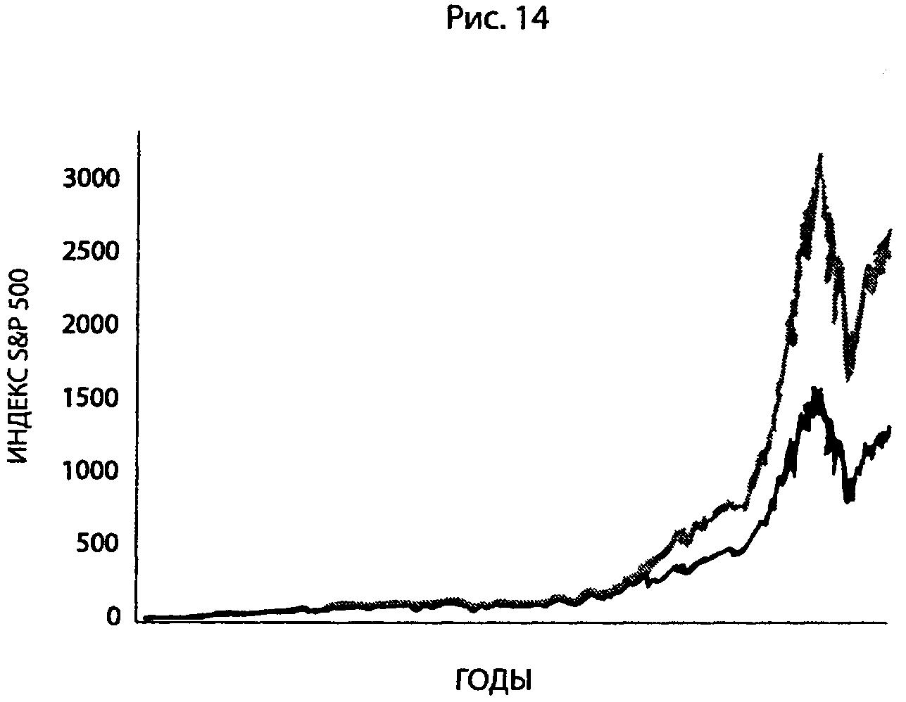</p>
<br class="calibre15"/><p class="calibre7">    Так что любому, кого резкий подскок на шесть сигм не убеждает в принадлежности рынков к Крайнестану, надо проверить, все ли у него в порядке с головой. Во множестве статей показывается неадекватность гауссова семейства распределений и масштабируемая природа рынков. Напомню, что за годы работы я сам прогнал взад-вперед через статистические модели 20 миллионов данных. Именно это заставило меня презирать всех, кто говорит о рынках в терминах гауссианы. Но человеку трудно бывает смириться с последствиями масштабируемости.</p>
<p class="calibre7">    Самое странное то, что деловые люди обычно соглашаются, когда говорят со мной или слушают, как я излагаю свои взгляды. Но стоит этим же людям на следующий день прийти в офис, как они возвращаются к своим привычным гауссовым инструментам. Их мышление «ареал-специфично»: на конференции они способны мыслить критически, а в офисе — нет. К тому же гауссовы инструменты дают им цифры, что вроде бы «лучше, чем ничего». Исчисленная мера будущей неопределенности отвечает нашему глубинному желанию упрощать, даже если это означает втискивать в одно-единственное число материи слишком разнородные, чтобы их можно было характеризовать подобным образом.</p>
<h3 border="1" id="filepos1274902" class="calibre6"><span class="bold"> Предательство клерков <br class="calibre10"/></span></h3>
<p class="calibre7">    Я завершил главу 1 во время обвала фондового рынка в 1987 году, который позволил мне активно пропагандировать свою идею Черного лебедя. Сразу после обвала, когда я во всеуслышание объявил шарлатанами тех, кто пользуется сигмой (то есть стандартным отклонением) как мерой степени риска и случайности, со мной все согласились. Если бы мир финансов подчинялся гауссовому распределению, такой эпизод, как обвал (более двадцати стандартных отклонений), происходил бы не чаще, чем раз в несколько миллиардов жизней Вселенной (см. пример с ростом в главе 15). В обстоятельствах 1987 года все признали, что редкие события случаются и что они — главный источник неопределенности. Однако никто не захотел отказаться от гауссианы как основного измерительного инструмента — «ведь другого-то у нас нет!». Всем требуется привязка в виде числа. Но два метода логически несовместимы.</p>
<p class="calibre7">    Хотя я и не знал об этом, в 1987 году не в первый раз выяснилось, что идея гауссианы — безумие. Мандельброт еще году эдак в 1960-м познакомил экономический истеблишмент с масштабируемостью и показал несоответствие «гауссовой кривой» тогдашним ценам. Но, после того как прошел восторг, финансисты поняли, что им придется заново учиться своему ремеслу. Один из влиятельных экономистов того времени, покойный Пол Кутнер, писал: «Мандельброт, как ранее премьер-министр Черчилль, обещал нам не утопию, но кровь, пот, труд и слезы<a title="Имеется в виду знаменитая речь Уинстона Черчилля, произнесенная им в парламенте 13 мая 1940 г. при вступлении в должность премьер-министра. (Прим. ред.)" href="#filepos1561105"><span class="calibre11"><sup class="calibre12">[83]</sup></span></a>. Если он прав, то почти все наши статистические инструменты устарели [или] бессмысленны». Я предлагаю две поправки к утверждению Кутнера. Во-первых, я заменил бы «почти все» на «все». Во-вторых, я не согласен со всякими там «потом и кровью». Я считаю, что случайность Мандельброта понять значительно легче, чем обычную статистику. Просто, входя в эту область, не полагайтесь на устаревшие теоретические инструменты и не ожидайте большой определенности.</p>
<h3 border="1" id="filepos1278777" class="calibre6"><span class="bold"> Любой может стать президентом <br class="calibre10"/></span></h3>
<p class="calibre7">    А теперь — краткая история Нобелевской премии по экономике. Шведский государственный банк учредил ее в честь Альфреда Нобеля, не прислушавшись к мнению его родных, которые хотят, чтобы ее отменили, так как полагают, что Нобель переворачивается в гробу от отвращения. Один активист из числа родственников Нобеля называет премию пиар-ходом экономистов, желающих вознести свою область на более высокую ступень пьедестала, чем та, которой она заслуживает. Конечно, премию получили некоторые значительные мыслители, такие как психолог-эмпирик Дэниел Канеман и здравомыслящий экономист Фридрих Хайек. Но у комитета вошло в привычку выдавать премии памяти Нобеля тем, кто «упорядочивает» процесс при помощи псевдонауки и жульнической математики. После обвала фондового рынка они наградили двух теоретиков, Гарри Марковича и Уильяма Шарпа, которые прекрасно строили платоновские модели на гауссовой основе, внося вклад в то, что называется современной портфельной теорией. Если принять за исходное не гауссиану, а масштабируемость цен, от их умопостроений останется один пшик. Нобелевский комитет мог бы проверить модели Шарпа и Марковича — они работают как снадобья знахарей, продающиеся через интернет, — но, кажется, никто в Стокгольме об этом не подумал. Не соблаговолил комитет обратиться и к нам, практикам, чтобы узнать наше мнение; вместо этого он положился на оценки академических кругов, которые в некоторых дисциплинах бывают насквозь коррумпированы. После этой премии я сделал предсказание: «В мире, где эти двое получают нобелевку, может случиться что угодно. Любой может стать президентом».</p>
<p class="calibre7">    Таким образом, Шведский государственный банк и Нобелевский комитет несут значительную долю ответственности за распространение современной гауссовой портфельной теории, которую разные конторы сумели ловко употребить для прикрытия своих тылов. Продавцы программного обеспечения заработали миллионы долларов на сбыте «увенчанных Нобелем» методов. Кто может обвинить вас в неправоте, если вы их используете? Как ни странно, в деловом мире каждый с самого начала знал, что сама эта идея — обман, но к подобным методикам привыкли. Ален Гринспен, председатель Федерального резервного банка США, вроде бы сказал однажды в сердцах: «Мне важнее мнение трейдера, чем математика». Тем не менее современная портфельная теория пошла в ход. Я буду повторять, пока не охрипну: судьбу любой социальной теории определяет ее заразность, а не ее обоснованность.</p>
<p class="calibre7">    Лишь позже я понял, что финансисты-гауссоведы оккупировали бизнес-школы, а значит, программы МБА, и в одних Соединенных Штатах выпускают в год почти сто тысяч студентов, чьи мозги промыты ложной портфельной теорией. Эпидемию не могут сдержать никакие эмпирические наблюдения. Всем казалось, что лучше уж вооружить студентов теорией, основанной на гауссиане, чем вообще не вооружать никакой теорией. Это выглядело более «научно», чем преподнесение того, что Роберт Кокс Мертон (сын социолога Роберта Кинга Мертона, которого мы обсуждали выше) называл «анекдотами». Мертон писал, что до портфельной теории финансы были «собранием анекдотов, практических правил и способов манипулировать с отчетностью». Портфельная теория позволила «естественно перейти от этого умозрительного крошева к точной экономической теории». Чтобы осознать степень интеллектуальной серьезности, скрывающуюся за всем этим, и чтобы сравнить неоклассическую экономическую теорию с более честной наукой, приведем высказывание жившего в XIX веке отца современной медицины Клода Бернара: «Первым делом — факты, а потом уж — научные дерзания». Надо отправить экономистов в медицинский колледж.</p>
<p class="calibre7">    Таким образом, гауссиана<a title="Конечно, гауссиану подправляли, используя такие методы, как дополнительные «прыжки», нагрузочное тестирование, переключение режимов или замысловатый GARCH, но этим методам, при всех их положительных свойствах, не исправить фундаментальных недостатков гауссианы. Они не масштабно-инвариантны. Этим, на мой взгляд, объясняется непригодность сложных методов в реальной жизни, что подтверждает соревнование Макридакиса." href="#filepos1561528"><span class="calibre11"><sup class="calibre12">[84]</sup></span></a> проникла в нашу деловую и научную культуру, и такие термины, как сигма, дисперсия, стандартное отклонение, корреляция, R-квадрат и именной коэффициент Шарпа, наводнили язык. Когда читаешь проспект какого-нибудь взаимного фонда или описание рисков хедж-фонда, есть шанс, что тебе предоставят, среди прочей информации, некоторую количественную сводку, претендующую на измерение «риска». Она будет основана на одном из приведенных выше модных словечек. Сегодня, например, инвестиционная политика пенсионных фондов и выбор фондов осуществляются «консультантами», опирающимися на портфельную теорию. Если вдруг возникнет проблема, то они всегда могут заявить, что полагались на общепринятый научный метод.</p>
<h3 border="1" id="filepos1287829" class="calibre6"><span class="bold"> Дальнейшие ужасы <br class="calibre10"/></span></h3>
<p class="calibre7">    В 1997 году все стало еще хуже. Шведская академия вручила еще пару «нормально распределенных» Нобелевских премий. Их удостоились Майрон Шоулз и Роберт Кокс Мертон, которые усовершенствовали старую математическую формулу и сделали ее совместимой с великими гауссовыми теориями общего финансового равновесия, а значит, приемлемой для экономического истеблишмента. Теперь формула стала «пригодной к употреблению». У нее был ряд давно забытых «прародителей», среди которых математик и игрок Эд Торп, автор бестселлера «Обыграй сдающего» о премудростях игры в очко, но все почему-то верят, что Шоулз и Мертон ее изобрели, хотя на самом деле они ее просто подправили. Эта формула кормила меня и поила. Трейдеры, люди опыта, столько ночей проводят без сна, размышляя о своих рисках, что знают все ее тончайшие нюансы лучше любого профессора, хотя едва ли могут научно оформить свои мысли; так что я чувствую себя делегатом, выступающим от их имени. Шоулз и Мертон поставили формулу в зависимость от гауссианы, но ее «прародители» не ограничивали ее подобным образом<a title="Напомню свою карьеру специалиста по опционам. В очень долгосрочном периоде опцион не только выигрывает от Черных лебедей, но выигрывает от них непропорционально — чего не улавливает «формула» Шоулза и Мертона. Компенсация по опциону настолько колоссальна, что не обязательно правильно оценивать шансы: можно ошибиться в вероятности, но получить огромную компенсацию. Я назвал это «двойным пузырем»: неправильная оценка вероятности и компенсации." href="#filepos1562445"><span class="calibre11"><sup class="calibre12">[85]</sup></span></a>.</p>
<p class="calibre7">    Годы после обвала превратились для меня в сплошную интеллектуальную забаву. Посещая конференции по финансам и математике неопределенности, я ни разу не встречал докладчика, с Нобелем или без, который понимал бы, о чем он говорит, когда речь заходила о вероятности, и я доставал их своими вопросами. Они проводили «глубокий математический анализ», но, стоило мне поинтересоваться, откуда они взяли свои вероятности, из их объяснений делалось ясно, что налицо явная игровая ошибка. Это было странное соединение технической подкованности с полным отсутствием понимания. Настоящий ученый идиотизм! Ни разу не получил я разумного ответа или ответа без перехода на личности. Поскольку я ставил под сомнение всю их деятельность, я, понятное дело, навлекал на себя всевозможные оскорбления: «одержимый», «торгаш», «философ», «эссеист», «обеспеченный бездельник», «зацикленный», «делец» (в науке это бранное слово), «профессор» (это бранное слово в бизнесе). Быть обруганным не так уж плохо; к гневным отповедям быстро привыкаешь и сосредоточиваешься на том, что не говорится. Биржевые трейдеры привыкли не обращать внимания на вспышки ярости. В зале биржи всегда найдется кто-то, кто, сильно расстроившись из-за крупной потери, вдруг накинется на тебя с бранью и не умолкнет, пока не наорется до хрипоты, а потом забудет об этом и через час пригласит к себе на Рождество. В результате становишься невосприимчивым к грубостям, особенно если научишься видеть в брызжущем слюной индивиде шумного примата, который плохо отвечает за свои действия. Просто сохраняй спокойствие, улыбайся, оценивай говорящего, а не его речи, и победишь в споре. Нападки на самого интеллектуала, а не на его идею, крайне лестны. Они показывают, что у нападающего нет никаких аргументов.</p>
<p class="calibre7">    Психолог Филип Тетлок (из главы 10), послушав один из моих докладов, сказал, что был потрясен царившей в аудитории атмосферой острого когнитивного диссонанса, то есть дискомфорта, возникающего из-за столкновения в сознании двух противоречивых мнений. Но этот когнитивный дискомфорт, связанный с отрицанием самых основ того, чему их учили, методов, которые они применяют и обречены применять, люди могут снимать очень по-разному. Симптоматично, что почти все мои оппоненты атаковали искаженную версию моих рассуждений («все случайно и непредсказуемо» вместо «все в значительной степени случайно») или уходили от темы, показывая мне, как гауссиана работает в некоторых областях физики. Некоторым пришлось даже изменить мою биографию. Однажды на заседании в Лугано Майрон Шоулз в бешенстве принялся громить мои превратно истолкованные идеи. Я видел, как он удручен. Однажды в Париже у видного представителя математической элиты, потратившего часть своей жизни на какое-то мелкое частное свойство гауссианы, «отказали предохранители» — я как раз в ту минуту демонстрировал эмпирические свидетельства влияния Черных лебедей на рынки. Он покраснел от злости, запыхтел и принялся оскорблять меня, обвинив в неуважении к высокому собранию, в котором я находился, и в отсутствии pudeur (скромности); он кричал: «Я член Академии наук!» — чтобы придать больший вес обидным словам. (На следующий день французский перевод моей книги смели с полок.) Но больше всего я люблю историю о том, как Стив Росс, экономист с репутацией интеллектуала, которому Шоулз и Мертон в подметки не годятся, и выдающийся полемист, опровергал мои идеи, указывая на мелкие ошибки или неточности в моем докладе, вроде этих: «Маркович был не первым, кто…», чем подтвердил, что ему нечего сказать о главном. Экономисты часто ссылаются на странное утверждение Мильтона Фридмана: «Чтобы быть приемлемой, модель не обязательно должна исходить из реальных посылок», дающее им право создавать абсолютно дефектные математические образы реальности. Проблема именно в том, что все эти «гауссианизации» не отталкиваются от реальности и не дают результатов, на которые можно было бы положиться. Они нереалистичны и не имеют прогностической силы. Отметим также погрешность восприятия, с которой я часто сталкиваюсь: редкое событие, которое по законам вероятности происходит, скажем, раз в двадцать лет, путают с периодическим. Люди думают, что они в безопасности, если нечто аналогичное случилось всего десять лет назад.</p>
<p class="calibre7">    Мне не очень-то удавалось донести до моих слушателей и читателей мысль о разности между Среднестаном и Крайнестаном: представляемые мне возражения в основном сводились к тому, что гауссиана принесла обществу много пользы — посмотрите на кредитные бюро и т.д.</p>
<p class="calibre7">    Категорически неприемлемым для меня был только такой комментарий: «Вы правы; спасибо, что напоминаете нам о слабости этих методов; но нельзя же выплескивать с водой ребенка» — примите, мол, наше нисходящее гауссово распределение, признавая вместе с тем возможность больших отклонений. Как не понимать, что эти два подхода несовместимы! Это все равно что быть сразу и живым и мертвым. Ни один из пользователей портфельной теории за двадцать лет моих с ними дебатов не объяснил, как можно принять гауссову структуру вместе с большими отклонениями. Ни один.</p>
<h3 border="1" id="filepos1300133" class="calibre6"><span class="bold"> Подтверждение <br class="calibre10"/></span></h3>
<p class="calibre7">    По ходу дела я встретил столько случаев ошибки подтверждения, что Карл Поппер подскочил бы от злости. Эксперты выискивали периоды, не содержавшие скачков или экстремальных событий, и предъявляли мне «доказательство» того, что гауссианой можно пользоваться. Это были примеры сродни моему из главы 5, где я привел «доказательства» того, что О.Дж. Симпсон — не убийца. Все профессиональные статистики путали отсутствие доказательства с доказательством отсутствия. Более того, они даже не подозревали о существовании элементарной асимметрии: достаточно одного-единственного наблюдения, чтобы отбросить гауссиану, но миллионы наблюдений не докажут полностью законность ее применения. Почему? Потому что кривая нормального распределения не допускает больших отклонений, а альтернативные ей инструменты Крайнестана вполне допускают длинные отрезки покоя.</p>
<p class="calibre7">    Я не думал, что работа Мандельброта что-то значит за пределами эстетики и геометрии. В отличие от него я не подвергался остракизму: меня одобряли практики и те, кто принимает решения, хотя и не их исследовательские отделы.</p>
<p class="calibre7">    Поддержка пришла с неожиданной стороны.</p>
<h3 border="1" id="filepos1302362" class="calibre6"><span class="bold"> Это был просто Черный лебедь <br class="calibre10"/></span></h3>
<p class="calibre7">    Роберт Мертон-младший и Майрон Шоулз были сооснователями большой финансово-инвестиционной компании «Лонг-Терм Кэпитал Менеджмент»<a title="«Долгосрочное управление капиталами» (англ.)." href="#filepos1563422"><span class="calibre11"><sup class="calibre12">[86]</sup></span></a> («ЛТКМ»), о которой я упоминал в главе 4. Все сотрудники имели первоклассные резюме и высочайшие академические степени. Их держали за гениев. Вдохновляясь портфельной теорией с ее хитроумными «алгоритмами», они лихо просчитывали риски и умудрились довести игровую ошибку до чудовищных размеров.</p>
<p class="calibre7">    Затем, летом 1998 года, одно за другим последовали несколько значительных событий, спровоцированных русским финансовым кризисом, что не предусматривалось их моделью. Это был Черный лебедь. Компания «Лонг-Терм Кэпитал Менеджмент» лопнула и потащила за собой всю финансовую систему. Поскольку модель, по которой работала «ЛТКМ», исключала возможность больших отклонений, там играли ва-банк. Идеи Мертона и Шоулза, вместе со всей современной портфельной теорией, потерпели крах. Потери оказались настолько впечатляющими, что этот интеллектуальный фарс просто должен был обратить на себя внимание. Я и многие мои друзья полагали, что портфельные теоретики разделят судьбу табачных компаний: они потеряли чужие сбережения и скоро ответят за последствия своих гауссовых подходов.</p>
<p class="calibre7">    Ничего подобного.</p>
<p class="calibre7">    Портфельная теория осталась в программах бизнес-школ. И формула опциона продолжает носить имя Блэка-Шоулза-Мертона, вместо того чтобы воссоединиться со своими истинными «отцами» — Луи Башелье, Эдом Торпом и другими.</p>
<h3 border="1" id="filepos1305411" class="calibre6"><span class="bold"> Учитесь «доказывать» <br class="calibre10"/></span></h3>
<p class="calibre7">    Мертон-младший — представитель экономической школы неоклассиков, которая, как мы видели в случае с «ЛТКМ», нагляднее всего иллюстрирует опасности платонического знания<a title="Я выбираю Мертона, потому что считаю его замечательным примером штампованного академического обскурантизма. Каковы главные просчеты Мертона, я понял из его гневного и угрожающего семистраничного письма ко мне, оставившего у меня впечатление, что он не слишком хорошо знаком с тем, как мы торгуем опционами, то есть со своей собственной темой. Он, кажется, уверен, что трейдеры опираются на «точную» экономическую теорию, — как будто птицам нужно изучать (примитивное) инженерное дело, чтобы летать." href="#filepos1563658"><span class="calibre11"><sup class="calibre12">[87]</sup></span></a>. Глядя на его методологию, я вижу следующую картину. Он начинает с чисто абстрактных посылок, абсолютно нереальных, — таких как гауссовы вероятности и иже с ними. Затем он выводит из них «теоремы» и «доказательства». Математика стройна и элегантна. Теоремы согласуются с другими теоремами современной портфельной теории, которые в свою очередь согласуются еще и с другими теоремами, образующими в совокупности величественную теорию того, как люди потребляют, сберегают, справляются с неопределенностью, тратят и строят планы на будущее. Он исходит из того, что нам известен приблизительный ход событий. Ужасное слово равновесие встречается повсюду. Но все здание подобно абсолютно замкнутой игре с жесткими правилами, вроде «Монополии».</p>
<p class="calibre7">    К ученому, применяющему такую методологию, подходит определение, данное Джоном Локком безумцу, — «это тот, кто правильно развивает ошибочные постулаты».</p>
<p class="calibre7">    Настоящая, элегантная математика обладает таким свойством: она верна абсолютно, а не на 99 процентов. Это свойство привлекает механистичные умы, которые не хотят разбираться с неоднозначностями. К сожалению, нужно где-то смухлевать, чтобы мир улегся в прокрустово ложе совершенной математики, и надо к чему-то подладить свои постулаты. Но, как показывает цитата из Харди, профессиональные «чистые» математики, по крайней мере, абсолютно честны.</p>
<p class="calibre7">    Значит, неразбериха начинается тогда, когда некто вроде Мертона пытается отстаивать стерильную правильность своих математических выкладок, вместо того чтобы задуматься об их соответствии реальности.</p>
<p class="calibre7">    Вот где можно поучиться у силовиков. Им плевать на «совершенные» игровые силлогизмы; они хотят отталкиваться от реального, «ощутимого». В конце концов, цена их ошибок — жизни.</p>
<p class="calibre7">    Я упоминал в главе 11, что первыми, кто начал играть в «формальное мышление», фабрикуя липовые посылки с целью породить «точные» теории, были Пол Сэмюэлсон, наставник Мертона, и, в Соединенном Королевстве, Джон Хикс. Эти двое загробили идеи Джона Мэйнарда Кейнса своей попыткой их формализовать (Кейнс интересовался неопределенностью и сетовал, что жесткие модели сужают кругозор). Поборниками формального мышления были также Кеннет Эрроу и Жерар Дебрё. Все четверо — нобелиаты. Все они находились под чарами ее величества математики — такое состояние Дьедонне называл «музицированием разума», а я называю «безумием Локка». Всех их можно смело обвинить в создании воображаемого мира, в котором их математика — неограниченная властительница. Проницательный ученый Мартин Шубик, считавший, что крайняя степень абстрактности этих моделей (на несколько уровней выше необходимого) делает их совершенно непригодными, подвергся остракизму, как обычно бывает с инакомыслящими<a title="Средневековая медицина тоже была основана на идеях равновесия и, как теология, руководствовалась взглядом «сверху вниз». К счастью, представители этой школы остались не у дел, так как не могли соревноваться с хирургами, смотревшими на свое ремесло «снизу-вверх», то есть отталкивавшимися от опыта, накопленного простыми цирюльниками-зубодерами, благодаря которым и родилась неплатоновская клиническая наука. Если я сегодня жив, то это потому, что схоластическая медицина с ее взглядом «сверху вниз» отошла в прошлое несколько столетий тому назад." href="#filepos1564724"><span class="calibre11"><sup class="calibre12">[88]</sup></span></a>.</p>
<p class="calibre7">    Если вы усомнитесь, как я, в ценности достижений таких людей, как Мертон-младший, они потребуют «стройного доказательства». То есть они задают правила игры, и вы должны играть по ним. Как выходец из деловой среды, где главная ценность — это умение применять путаную, но эмпирически приемлемую математику, я не признаю претензий на ученость. Выморочной науке, ищущей определенности, я предпочитаю процветающее и изощренное ремесло, которое сродни трюкачеству. А может, эти модельеры-неоклассики заняты чем-то похуже? Может, они заняты тем, что епископ Юэ назвал производством определенностей?</p>
<p class="calibre16">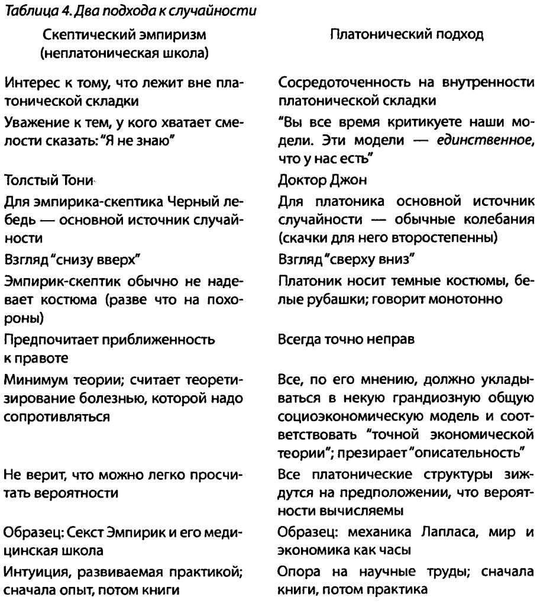</p>
<p class="calibre16">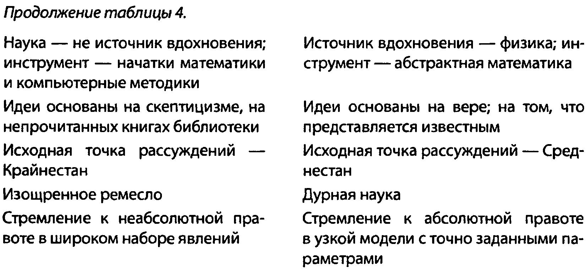</p>
<p class="calibre7">    Давайте разберемся.</p>
<p class="calibre7">    Скептический эмпиризм защищает противоположный метод. Мне важнее посылки, чем теории. Я хочу минимально зависеть от теорий, прочно стоять на собственных ногах и жить, по возможности, без сюрпризов. Я хочу быть более или менее прав, а не точно неправ. Изящество теории часто указывает на ее платоничность и слабость — оно искушает тебя, заставляя искать изящество ради изящества. Теория — как лекарство (или правительство): часто бесполезна, иногда необходима, всегда своекорыстна и иногда смертельна. Поэтому ее надо использовать осторожно, умеренно и под тщательным наблюдением взрослых.</p>
<p class="calibre7">    Различие в таблице, приведенной выше, между моим образцовым современным эмпириком-скептиком и тем, что представляют собой «щенки Сэмюэлсона», можно перемести и на другие дисциплины.</p>
<p class="calibre7">    Я изложил свои идеи в области финансов, потому что там я отточил их. Рассмотрим теперь категорию людей, от которых принято ожидать большей раздумчивости, — философов.</p>
<div class="mbppagebreak"></div><h2 border="1" class="calibre13" id="filepos1316133"><span class="calibre14"><span class="bold"> Глава 18. Неопределенность «липы» <br class="calibre10"/></span></span></h2>
<p class="calibre7">    <span class="italic">Философы где не надо. — Неопределенность видов (прежде всего) на обед. — Что мне безразлично. — Образование и интеллект.</span></p>
<br class="calibre15"/><p id="filepos1316565" class="calibre7">    В этой главе, последней в третьей части, мы сфокусируемся на важнейшей разновидности игровой ошибки: на том, как люди, чья профессия — напоминать нам о неопределенности, обманывают нас, уводя к мнимой определенности через черный ход.</p>
<h3 border="1" id="filepos1317022" class="calibre6"><span class="bold"> Снова об игровой ошибке <br class="calibre10"/></span></h3>
<p class="calibre7">    Я объяснил игровую ошибку с помощью истории про казино и сделал упор на том, что стерилизованная случайность игр непохожа на случайность в реальной жизни. Взглянем снова на рисунок 7 в главе 15. Результаты бросков монетки усредняются так быстро, что я могу с уверенностью сказать: у казино уйдет не слишком много времени на то, чтобы обставить меня, скажем, в рулетку, так как колебания уравновесятся, а мастерство — нет (здесь первенство за казино). Чем дольше период (или чем мельче ставки), тем меньше в этих игорных механизмах остается случайности.</p>
<p class="calibre7">    Игровая ошибка берет свое начало в следующих вероятностных системах: в случайном блуждании, в метании костей, в подбрасывании монетки, в броуновском движении (соответствующем движению частиц пыльцы в воде) и тому подобном. Эти системы порождают такую случайность, которую и случайностью-то не назовешь, скорее уж протослучайностью. По существу, все теории, построенные на игровой ошибке, игнорируют огромный пласт неопределенности. Хуже того, их поборники об этом не догадываются.</p>
<p class="calibre7">    Один из ярчайших примеров этой сосредоточенности на малой, в ущерб большой, неопределенности — банальный принцип неопределенности.</p>
<h3 border="1" id="filepos1319349" class="calibre6"><span class="bold"> Найди «липу» <br class="calibre10"/></span></h3>
<p class="calibre7">    Принцип неопределенности гласит, что в квантовой механике невозможно измерить (с произвольной точностью) некоторые пары величин — такие как координата и импульс частиц. Вы упретесь в нижний предел точности измерений: пока одно уточняется, другое меняется, и так до бесконечности. Таким образом, существует несжимаемая неопределенность, которая, в теории, будет бросать вызов науке, вовеки таковой оставаясь. Эта крохотная неопределенность была открыта Вернером Гейзенбергом в 1927 году. По-моему, представлять принцип неопределенности в какой-то связи с неопределенностью просто смешно. Почему? Во-первых, это гауссова неопределенность. В среднем она исчезает — напомню, что вес одного человека не в состоянии значительно изменить общий вес тысячи человек. Мы можем всегда пребывать в сомнении относительно будущих положений мелких частиц, но эти неопределенности очень малы и многочисленны, и они усредняются — черт побери, они усредняются! Они подчиняются закону больших чисел, который мы обсуждали в главе 15. А большинство типов случайности не усредняется! Если есть на нашей планете что-то более определенное, то это — поведение совокупности субатомных частиц! Почему? Потому что, как я сказал ранее, когда перед вами объект, представляющий собой совокупность частиц, колебания этих частиц уравновешиваются.</p>
<p class="calibre7">    Но политические, общественные и погодные явления лишены этого удобного свойства, и мы не в состоянии их с точностью предсказать, так что когда вы слышите «эксперта», низводящего проблемы неопределенности на уровень субатомных частиц, вероятнее всего, этот эксперт — «липовый». Можно сказать, что это лучший способ распознать «липу».</p>
<p class="calibre7">    Люди часто говорят: «Конечно, наши знания не безграничны» — и тут же приводят принцип неопределенности в оправдание того, что «невозможно все смоделировать», — я слышал это на конференциях от таких видных экономистов, как Майрон Шоулз. Но вот я сижу в Нью-Йорке в августе 2006 года, снедаемый желанием попасть в свое родное селение Амиун в Ливане. Аэропорт Бейрута закрыт из-за конфликта между Израилем и шиитской вооруженной группировкой «Хезболла». Нигде не вывешено расписание рейсов, которое уведомило бы меня, когда кончится война и кончится ли она вообще. Я не могу узнать, выстоит ли наш семейный дом, сохранится ли Амиун на карте, — вспомним, что наш дом уже был однажды разрушен. Я не могу узнать, переродится ли эта война во что-то еще более жестокое. Глядя на войну, которая затрагивает всех моих родственников, друзей и мою собственность, я сталкиваюсь с истинными границами знания. Может кто-нибудь объяснить, почему я должен беспокоиться о субатомных частицах, которые все равно сходятся к гауссиане? Человеку не дано предугадать, долго ли будут тешить его только что купленные обновки, сколько продлится его брак, что ждет его на новой работе, но именно на субатомные частицы ссылается он, как на доказательство «предела, положенного нашим прогнозам». Стоящий у всех на виду мамонт оказывается забытым ради материй, которых не рассмотреть даже в микроскоп.</p>
<h3 border="1" id="filepos1325048" class="calibre6"><span class="bold"> Могут ли философы быть опасны для общества? <br class="calibre10"/></span></h3>
<p class="calibre7">    Я пойду дальше: те, кто беспокоится о пенсах, а не о долларах, могут быть опасны для общества. Они хотят как лучше, но (как ясно из моих рассуждений о Бастиа из главы 8) от них очень много вреда. Они мешают исследованию неопределенности, сосредоточиваясь на мелочах. Наши ресурсы (как познавательные, так и научные) ограниченны, может быть, слишком ограниченны. Те, кто отвлекает нас, увеличивают риск появления Черных лебедей.</p>
<p class="calibre7">    Такое измельчание понятия неопределенности, как симптом неспособности видеть Черных лебедей, стоит обсудить отдельно.</p>
<p class="calibre7">    Поскольку все финансисты и экономисты по уши погрязли в гауссиане, я стал искать финансовых экономистов с философским уклоном, чтобы понять, позволяет ли их критическое мышление справиться с этой проблемой. Нескольких я действительно нашел. Один из них получил докторскую степень по философии, затем, через четыре года, по финансам; у него имелись статьи по обоим предметам и куча учебных пособий по финансам. Но этот тип меня удручил: создавалось впечатление, будто он разложил свои мысли о неопределенности по разным ящичкам, то есть что у него две разных специальности — философия и финансовые расчеты. Проблема индукции, Среднестан, эпистемическая непроницаемость или опасные допущения гауссианы не казались ему достойными внимания. Его многочисленные учебники вдалбливали гауссовы методы в головы студентов, как будто их автор забыл, что он философ. Зато он своевременно вспоминал об этом, когда сочинял философские «этюды» на якобы научные темы.</p>
<p class="calibre7">    Та же «ареал-специфичность» заставляет людей подниматься в фитнес-центр на эскалаторе, но случай с философом во сто крат опаснее, ибо наш ограниченный запас критического мышления расходуется тут вхолостую. Философы любят расточать свою философскую премудрость на предметы, которые другие философы называют философией (по принципу «как ты, так и я»), и оставляют мозги у дверей, переходя к чему-то иному.</p>
<h3 border="1" id="filepos1328791" class="calibre6"><span class="bold"> Проблема практики <br class="calibre10"/></span></h3>
<p class="calibre7">    Как бы я ни восставал против гауссианы, платоничности и игровой ошибки, моя главная претензия — не к статистикам. В конце концов, это калькуляторы, а не мыслители. Мы должны быть гораздо более нетерпимы к философам с паразитирующими на их идеях аппаратчиками-бюрократами, подавляющими в нас стремление думать. С философов, сторожевых псов критического мышления, спрос выше, чем с других.</p>
<h3 border="1" id="filepos1329629" class="calibre6"><span class="bold"> Сколько Витгенштейнов могут танцевать на острие иглы? <br class="calibre10"/></span></h3>
<p class="calibre7">    Несколько человек в изрядно поношенной одежде (зато с думой на лице) собираются в комнате, молча погладывая на приглашенного докладчика. Все они — профессиональные философы, собравшиеся на престижный еженедельный коллоквиум в университете, который находится в окрестностях Нью-Йорка. Докладчик сидит, уткнувшись носом в ворох печатных страниц и монотонно читает вслух. За ним трудно следить, так что я немного отвлекаюсь и теряю нить. Я смутно понимаю, что дело касается какого-то «философского» спора о марсианах, которые вторгаются в твою голову и контролируют твою волю, не позволяя тебе об этом узнать. Кажется, на сей счет существует несколько теорий, но мнение докладчика отличается от мнений тех, кто писал на ту же тему. Он тратит какое-то время на то, чтобы объяснить, в чем уникальность его взгляда на этих узурпаторов голов. После его пятидесятипятиминутного монолога — маленький перерыв, затем — еще пятьдесят пять минут дискуссии о марсианах, вживляющих чипы, и других нелепых гипотезах. Иногда упоминают Витгенштейна (его всегда можно упомянуть, так как он достаточно туманен, чтобы подходить к любому случаю).</p>
<p class="calibre7">    Каждую пятницу в 4 часа дня жалованье этих философов поступает на соответствующие банковские счета. Фиксированная доля их заработков, в среднем около 16 процентов, попадет на фондовый рынок в виде автоматического вложения в университетскую пенсионную программу. Эти люди профессионально призваны подвергать сомнению то, что мы принимаем как данность; они обучены спорить о существовании божеств(а), об определении истины, о красноте красного, о значении значения, о разнице между семантическими теориями истины, о концептуальных и неконцептуальных представлениях… Но они слепо верят в фондовый рынок и в автоматические инвестиции в университетский пенсионный план. Почему? Потому что «эксперты» внушили им, что люди должны поступать со своими сбережениями именно так. Они сомневаются в своих органах чувств, но ни секунды не сомневаются в целесообразности своих автоматических приобретений на фондовом рынке. Их скептицизм так же «ареал-специфичен», как скептицизм медиков (как мы видели в главе 8).</p>
<p class="calibre7">    А еще они способны поверить на слово в то, что мы можем предсказывать социальные потрясения, что ГУЛАГ закаляет, что политики лучше разбираются в происходящем, чем их шоферы, что председатель Федеральной резервной системы спас экономику, и во многое другое в том же роде. Они также могут верить, что национальность играет какую-то роль (они всегда ставят «французский», «немецкий» или «американский» перед именем философа, как будто этим определяется ход его мыслей). Общаясь с этими людьми, чье любопытство ограничено лишь узкими книжными вопросами, чувствуешь, что задыхаешься.</p>
<h3 border="1" id="filepos1334839" class="calibre6"><span class="bold"> Где же Поппер, когда он нужен? <br class="calibre10"/></span></h3>
<p class="calibre7">    Надеюсь, я сумел вам внушить, что моя (практическая) система взглядов зиждется на убеждении, что нужно идти не от книг к проблемам, а, наоборот, от проблем к книгам. Такой подход отвергает всяческое словоблудие, с помощью которого куются карьеры. Ученый не должен быть орудием библиотеки для создания другой библиотеки, как шутит Дэниел Деннет.</p>
<p class="calibre7">    Конечно, о том, что я говорю здесь, раньше уже говорили философы, по крайней мере настоящие. Приведенное ниже высказывание внушает мне безмерное уважение к Карлу Попперу; вот одна из немногих цитат в этой книге, которые я не критикую:</p>
<div class="calibre18"> </div><blockquote class="calibre19"><blockquote class="calibre19">
<p class="calibre7">    Вырождение философских школ, в свою очередь, является последствием ошибочной веры в то, что философствовать можно и тогда, когда к этому не принуждают проблемы, лежащие за пределами философии… <span class="italic">Источник подлинных философских вопросов всегда расположен вне философии и, если уничтожается источник, они умирают…</span> (курсив мой. —Н.Н.Т.) Об этом легко забывают философы, которые философию «изучают», а не попадают в нее под напором нефилософских проблем.</p>
</blockquote></blockquote>
<p class="calibre7">    Подобные мысли могут послужить объяснением как успеха Поппера за пределами философии, так и его относительной несостоятельности в ней самой. (Его редко штудируют коллеги-философы; они предпочитают писать эссе о Витгенштейне.)</p>
<p class="calibre7">    Заметьте также, что я не хочу втягиваться ни в какие философские дебаты. Понятие «платонизм» я использую не в его метафизическом понимании. Многие спрашивали меня, не отрицаю ли я «эссенциализм» (то есть платоновскую «сущность вещи»), если считаю, что математика может работать в альтернативной Вселенной, или что-то в этом роде. Внесу ясность. Я серьезный практик; я не говорю, что математика не соответствует объективной структуре реальности.</p>
<p class="calibre7">    Моя мысль сводится к тому, что мы (в эпистемологическом смысле) ставим телегу впереди лошади, а иначе говоря, из моря математических правил выбираем, на свой страх и риск, самое негодное и подпадаем под его чары. Я искренне верю, что есть математический закон, который работает, но до него не так легко добраться, как кажется любителям доказательств.</p>
<h3 border="1" id="filepos1338958" class="calibre6"><span class="bold"> Епископ и аналитик <br class="calibre10"/></span></h3>
<p class="calibre7">    Меня всегда раздражают субъекты, нападающие на епископа, но почему-то доверяющие аналитику ценных бумаг, — те, чей скептицизм распространяется на религию, а не на экономистов, социологов и «липовых» статистиков. Используя ошибку подтверждения, они заявят вам, что религия нанесла страшный ущерб человечеству, ведь от рук инквизиции и в ходе различных религиозных войн погибла уйма народу. Но они не откроют вам числа тех, что пали жертвами национализма, общественной и политической теории при Сталине или во время вьетнамской войны. Даже священники, заболев, не идут к епископу, для начала они заходят к врачу. Мы же без раздумий заходим в кабинеты разных псевдоученых и «экспертов». Мы больше не верим в непогрешимость папы; зато, похоже, верим в непогрешимость нобелевских лауреатов (как показывает глава 17).</p>
<h3 border="1" id="filepos1340570" class="calibre6"><span class="bold"> Легче, чем вы думаете: проблема выбора при скептицизме <br class="calibre10"/></span></h3>
<p class="calibre7">    Я все время говорил, что существует проблема индукции и Черного лебедя. На самом деле все гораздо хуже: ложный скептицизм может создать не меньшую проблему. Потому что:</p>
<p class="calibre7">    а) я не в состоянии помешать солнцу взойти завтра (что бы я ни предпринял);</p>
<p class="calibre7">    б) есть загробная жизнь или нет, я не в состоянии этого изменить;</p>
<p class="calibre7">    в) я не в состоянии воспрепятствовать вторжению марсиан или демонов в мой мозг.</p>
<p class="calibre7">    Но у меня есть много способов не лохануться. Это дело житейское.</p>
<p class="calibre7">    Заканчивая третью часть, повторю еще раз: мое средство борьбы с Черными лебедями — умение нешаблонно мыслить. Оно не просто помогает избежать участи лоха, но и подсказывает, как следует действовать, — не как думать, но как превратить знание в действие и понять, чего наше знание стоит. Давайте обсудим в заключительной части книги, что в этой связи нужно и чего не нужно делать.</p>
<div class="mbppagebreak"></div><h1 border="1" class="calibre8" id="filepos1342428"><span class="calibre9"><span class="bold"> Часть IV. заключительная <br class="calibre10"/></span></span></h1>
<div class="mbppagebreak"></div><h2 border="1" class="calibre13" id="filepos1342577"><span class="calibre14"><span class="bold"> Глава 19. Серединка на половинку, или Как свести концы с концами при Черном лебеде <br class="calibre10"/></span></span></h2>
<p class="calibre7">    <span class="italic">Другая половина. — Помни Апеллеса. — Когда бывает обидно опоздать на поезд.</span></p>
<br class="calibre15"/><p class="calibre7">    Пришло время сказать несколько слов в заключение. Временами я гиперскептик; временами я непреклонен, даже упрям в приятии чего-то абсолютно определенного. Конечно же я гиперскептик там, где другие, особенно те, кого я называю bildungsphilisters, легковерны, и легковерен там, где другие выказывают скептицизм. Я скептически отношусь к подтверждению (правда, только если ошибки могут дорого обойтись), но не к опровержению. Большой массив данных еще ничего не подтверждает, но единичный случай способен все опровергнуть. Я скептик, когда подозреваю, что речь идет о случайности из ряда вон выходящей, и доверчив, когда не сомневаюсь в ее рядовом характере.</p>
<p class="calibre7">    Временами я ненавижу Черных лебедей, временами — обожаю. Я люблю случайность, которая порождает саму ткань жизни, счастливые случаи, успех художника Апеллеса, щедрые дары, за которые не взимается плата. Мало кто понимает красоту истории Апеллеса; большинство так боится ошибок, что подавляет в себе Апеллеса.</p>
<p class="calibre7">    Временами я гиперконсервативен в ведении своих собственных дел, временами — гиперавантюрен. Здесь, пожалуй, нет ничего странного — кроме того, что мой консерватизм проявляется там, где другие рискуют, а авантюризм — там, где рекомендуется осторожность.</p>
<p class="calibre7">    Меня меньше волнуют незначительные неудачи, больше— значительные, потенциально катастрофические. Я гораздо больше опасаюсь фондового рынка, особенно его «перспективных» сегментов, чем авантюрных спекуляций, — в первых заключены невидимые риски, вторые не предвещают ничего неожиданного, так как об их ненадежности известно заранее, и можно ограничить возможные потери, вкладывая меньшие суммы.</p>
<p class="calibre7">    Меня меньше тревожат явные, осязаемые риски, больше— коварные, скрытые. Терроризм мне безразличнее, чем диабет. Я меньше беспокоюсь о том, о чем обычно беспокоятся люди, и больше — о вещах, о которых обычно не думают и не судачат (надо признаться, я вообще мало «трепыхаюсь» — стараюсь делать это только тогда, когда в силах что-то исправить). Мне предпочтительнее потерять, чем упустить шанс.</p>
<p class="calibre7">    В конце концов, это тривиальное правило принятия решений: дерзость, когда есть перспектива поймать счастливого Черного лебедя (и неудача мало что значит), и крайняя осторожность, когда есть угроза напороться на дурного Черного лебедя. Я крайне напорист, когда ошибка в модели может принести мне выгоду, и пуглив до паранойи, когда она может навредить. Тут нет ничего особенно интересного, кроме того, что другие так не поступают. В финансах, например, для управления рисками пользуются сомнительными теориями, а безумные идеи подвергают «рациональному» рассмотрению.</p>
<p class="calibre7">    Временами я интеллектуал, временами — хваткий практик. Я практичный ученый и интеллектуальный делец.</p>
<p class="calibre7">    Временами я верхогляд, временами стремлюсь избегать верхоглядства. Я верхогляд в эстетических вопросах и избегаю верхоглядства в том, что касается рисков и оборотов. Эстетство заставляет меня ставить поэзию выше прозы, греков выше римлян, благородство выше изящества, изящество выше культуры, культуру выше эрудиции, эрудицию выше знаний, знания выше интеллекта и интеллект выше истины. Но только в сферах, где нет Черных лебедей. Я стараюсь быть предельно рациональным во всех ситуациях, кроме тех, когда на сцене появляется Черный лебедь.</p>
<p class="calibre7">    Половина моих знакомых называет меня наглецом (вы прочли мои замечания о ваших местных платонизирующих профессорах), половина — идолопоклонцем (вы видели мою рабскую привязанность к Юэ, Байлю, Попперу, Пуанкаре, Монтеню, Хайеку и другим).</p>
<p class="calibre7">    Временами я ненавижу Ницше, временами люблю его прозу.</p>
<div class="mbppagebreak"></div><h2 border="1" class="calibre13" id="filepos1349720"><span class="calibre14"><span class="bold"> Когда можно безболезненно опоздать на поезд <br class="calibre10"/></span></span></h2>
<p class="calibre7">    Однажды я получил еще один глобального плана совет, который (в отличие от дружеского совета, о котором я упоминал в главе 3) считаю применимым, мудрым и эмпирически подтвержденным. Мой парижский одноклассник, будущий романист Жан-Оливье Тедеско, изрек, убеждая меня, что не стоит бежать, чтобы успеть на метро: «Я не бегаю за поездами».</p>
<p class="calibre7">    Презирайте свою судьбу. Теперь я не бросаюсь бежать ради того, чтобы уехать по расписанию. Такой совет может показаться очень немудрящим, но мне он подошел. Научившись не носиться за поездами, я оценил истинное значение изящества и эстетики в поведении, почувствовал, что это я управляю своим временем, расписанием и жизнью. Опаздывать на поезд обидно, только если ты бежишь за ним! Точно так же не добиваться такого успеха, какого ожидают от тебя другие, обидно, только если ты сам к нему стремишься. Ты оказываешься над мышиными бегами и очередью к кормушке, а не вне их, если поступаешь в соответствии с собственным выбором.</p>
<p class="calibre7">    Уход с высокооплачиваемой работы, если это твое решение, принесет больше пользы, чем заработанные деньги (такой поступок может показаться безумным, но я пробовал, получается). Это первый шаг к тому, чтобы набраться мужества и послать судьбу к черту. Ты обретаешь гораздо больше власти над жизнью, если сам выбираешь критерии.</p>
<p class="calibre7">    Мать-природа дала нам некоторые защитные механизмы: один из них, как в басне Эзопа, — способность поверить в то, что виноград, до которого мы не можем дотянуться (или не дотянулись), — кислый. Но принятое заранее твердое решение с презрением отказаться от винограда принесет куда лучшие плоды. Дерзай, будь тем, кто отказывается, если у тебя хватит стойкости.</p>
<p class="calibre7">    Труднее проиграть в игре, в которой сам устанавливаешь правила.</p>
<p class="calibre7">    В «чернолебяжьих» терминах это означает, что невероятное настигает тебя, только если ты позволяешь ему управлять тобой. Ты всегда можешь управлять тем, что делаешь сам; так пусть это будет твоей целью.</p>
<div class="mbppagebreak"></div><h1 border="1" class="calibre8" id="filepos1353567"><span class="calibre9"><span class="bold"> Конец <br class="calibre10"/></span></span></h1>
<p class="calibre7">    Однако все эти идеи, вся эта философия индукции, все эти проблемы со знанием, все эти сумасшедшие шансы и возможные тяжелые потери — всё бледнеет перед следующим метафизическим наблюдением.</p>
<p class="calibre7">    Иногда я просто отказываюсь понимать, почему несвежая еда, холодный кофе, отказ принять в компанию и недостаточно любезный прием могут начисто испортить людям день, обманув их ожидания?</p>
<p class="calibre7">    Вспомните, как в главе 8 я говорил о том, насколько сложно осознать, какой в действительности была вероятность совпадений, приведших к тому, что мы есть. Мы легко забываем, что жизнь сама по себе — удивительное везение, редчайшее событие, случайное происшествие гигантского масштаба.</p>
<p class="calibre7">    Представьте себе пылинку рядом с планетой в миллиард раз крупнее Земли. Пылинка — перевес в пользу вашего рождения; большая планета — против него. Так что бросьте психовать по пустякам. Не уподобляйтесь тому брюзге, который, получив в подарок дворец, жалуется на плесень в ванной. Перестаньте смотреть в зубы дареному коню; помните, что вы — Черный лебедь. И спасибо, что прочитали мою книгу.</p>
<div class="mbppagebreak"></div><h1 border="1" class="calibre8" id="filepos1355725"><span class="calibre9"><span class="bold"> Эпилог. Белые лебеди Евгении <br class="calibre10"/></span></span></h1>
<p class="calibre7">    Евгения Краснова ушла в себя, что было необходимо, чтобы написать новую книгу. Она оставалась в Нью-Йорке, где ей было легче всего находиться в покое, наедине со своим текстом. После того как она уйму времени провела в толчее, надеясь встретиться с Ниро, чтобы отпустить колкость в его адрес, возможно — унизить его, возможно — вернуть, сосредоточиться было легко. Она отказалась от электронной почты, стала писать от руки, поскольку находила это занятие успокаивающим, и наняла секретаршу для перепечатки текста. Восемь лет она писала, стирала, исправляла, время от времени срывала злость на своей секретарше, приглашала на собеседование новых секретарш и снова спокойно писала. Ее квартира была полна дыма, бумаги покрывали все свободные поверхности. Как и другим художникам, ей казалось, что она не смогла в полной мере выразить то, что хотела, но все же чувствовала, что ей это удалось куда лучше, чем в первой книге. Она смеялась над публикой, превозносившей ее раннюю работу, так как сейчас та казалось ей слишком поверхностной, сделанной впопыхах и недостаточно тщательно.</p>
<p class="calibre7">    Когда новая книга, удачно названная «Петлей», вышла в свет, Евгении хватило мудрости избегать общения с прессой и не обращать внимания на рецензии. Как и ожидал ее издатель, рецензии были хвалебные. Но, как ни странно, книгу покупали плохо. Должно быть, думал издатель, люди обсуждают книгу, даже не прочитав. Поклонники Евгении ждали ее нового творения и обсуждали его годами. Издатель, который теперь собрал большую коллекцию розовых очков и вел блестящую жизнь, сейчас сделал ставку на Евгению. У него не было и не предвиделось других хитов. Ему нужен был крупный выигрыш, чтобы заплатить за свою виллу в Карпантра, в Провансе, отдать долги в соответствии с финансовым соглашением, которое он заключил с бывшей женой, а также купить новый «ягуар» с откидным верхом (розовый). Он нисколько не сомневался, что не промахнется с долгожданной книгой Евгении, и не мог понять, почему почти все называли ее шедевром, но никто не покупал. Через полтора года «Петля» практически сошла с прилавков. Издатель, испытывавший большие денежные затруднения, думал, что знает причину: книга была «длинной как хрен знает что!» — Евгении следовало написать покороче. Пролив немало слез, которые, впрочем, принесли облегчение, Евгения подумала о персонажах трогательных романов Жоржа Сименона и Грэма Грина. Они существовали в состоянии отупляющей и безопасной посредственности. У второсортности есть свое очарование, подумала Евгения, а она всегда предпочитала очарование красоте.</p>
<p class="calibre7">    Так что вторая книга Евгении тоже оказалась Черным лебедем.</p>
<div class="mbppagebreak"></div><h1 border="1" class="calibre8" id="filepos1360720"><span class="calibre9"><span class="bold"> Словарик <br class="calibre10"/></span></span></h1>
<p class="calibre7">    <span class="bold1">Академический либертарианец</span> — некто, считающий (подобно мне), что знание подчиняется строгим правилам, но не академическим авторитетам, так как организованное знание заинтересовано в самоподдержании, а не обязательно в поиске истины (как и правительства). В Академии может остро стоять проблема экспертов, которые выдают на-гора эффектную, но ложную информацию, особенно в нарративных дисциплинах, чем, главным образом, и навлекают на нас Черных лебедей.</p>
<p class="calibre7">    <span class="bold1">Безумец Локка</span> — тот, кто, подобно Полу Сэмюэлсону, Роберту Мертону-младшему и Жерару Дебрё, делает точные и безупречно стройные умозаключения на основании неверных посылок, создавая таким образом «липовые» модели неопределенности, вера в которые превращает нас в потенциальные жертвы Черных лебедей.</p>
<p class="calibre7">    <span class="bold1">Знание «ботаников»</span>—убеждение в том, что непознаваемое в природе отсутствует или недостойно внимания. Существует даже разновидность скептицизма, практикуемая «ботаником».</p>
<p class="calibre7">    <span class="bold1">Игровая ошибка</span> — изучение случайности на примере маленького мирка азартных игр. В реальной жизни существует огромный пласт неопределенности, где действуют совершенно другие правила игры. Гауссиана, или ВИО (Великий Интеллектуальный Обман), — это результат применения игровой ошибки к случайности.</p>
<p class="calibre7">    <span class="bold1">Искажение нарратива</span> — наша потребность уложить историю в ряд связанных или несвязанных фактов.</p>
<p class="calibre7">    <span class="bold1">Крайнестан</span> — область, в которой одно наблюдение может сильно повлиять на итог.</p>
<p class="calibre7">    <span class="bold1">Мандельбротовские Серые лебеди</span> — Черные лебеди, появления которых можно ожидать (землетрясения, бестселлеры, обвалы фондового рынка), но свойства которых неопределимы и параметры не вычисляемы.</p>
<p class="calibre7">    <span class="bold1">Нарративная дисциплина</span> — дисциплина, состоящая в подгонке к прошлому убедительной и выразительной истории. Противопоставляется экспериментальной дисциплине.</p>
<p class="calibre7">    <span class="bold1">Неопределенность потерянных, то</span> есть людей, которые переносят конкретные источники неопределенности, вроде принципа неопределенности, в реальную жизнь и беспокоятся о внутриатомных частицах, забывая, что мы не можем предсказать завтрашние кризисы.</p>
<p class="calibre7">    <span class="bold1">Огрех-перевертыш</span> — принятие отсутствия свидетельств о Черных лебедях (или о чем-то еще) за свидетельство отсутствия Черных лебедей (или еще чего-то). Беда статистиков и других людей, у которых заскорузли мозги от решения слишком большого количества уравнений.</p>
<p class="calibre7">    <span class="bold1">Одураченный случайностью</span> — тот, кто путает удачу с детерминизмом, плодя разные предрассудки с практическими последствиями, среди которых вера в то, что более высокие заработки в некоторых профессиях — результат мастерства, хотя в них есть значительная компонента удачи.</p>
<p class="calibre7">    <span class="bold1">Ошибка лотерейного билета</span> — наивная аналогия, уравнивающая инвестиции в накопление положительных Черных лебедей с собиранием лотерейных билетов. Лотерейные билеты не масштабируемы.</p>
<p class="calibre7">    <span class="bold1">Ошибка подтверждения (или платоническое подтверждение).</span> Вы ищете случаи, которые подтверждают ваши убеждения, вашу конструкцию (или модель), и находите их.</p>
<p class="calibre7">    <span class="bold1">Платоничность </span>— сосредоточенность на четко очерченных и легко различимых объектах, скажем, треугольниках (или же ясных социальных понятиях, таких как дружба и любовь), в ущерб более аморфным и менее определенным структурам.</p>
<p class="calibre7">    <span class="bold1">Платоническая складка</span> — место, где наши платонические идеи входят в контакт с реальностью и где проявляются побочные эффекты моделей.</p>
<p class="calibre7">    <span class="bold1">Проблема индукции</span> — логико-философское продолжение проблемы Черного лебедя.</p>
<p class="calibre7">    <span class="bold1">Проблема обратного проектирования</span>. Легче предсказать, как кубик льда растает в лужу, чем, глядя на лужу, угадать форму кубика льда, из которого она могла образоваться. Эта «обратная задача» заставляет с подозрением относиться к нарративным дисциплинам (таким как курсы истории).</p>
<p class="calibre7">    <span class="bold1">Проблема «пустых костюмов» (или проблема «экспертов»).</span> Некоторые специалисты не имеют никакого профессионального преимущества перед остальным населением, но по какой-то причине и вопреки опыту считаются экспертами: клинические психологи, экономисты, «эксперты» по рискам, статистики, политические аналитики, финансовые «эксперты», военные аналитики и т. д. Они «приправляют» свои заключения красивыми фразами, профессиональным жаргоном, сложными расчетами и часто носят дорогие костюмы.</p>
<p class="calibre7">    <span class="bold1">Проблема скрытых свидетельств</span> состоит в том, что, оглядываясь на прошлое, мы видим не всё, а только наиболее светлые моменты процесса.</p>
<p class="calibre7">    <span class="bold1">Распределение вероятности</span> — модель, используемая для вычисления шансов различных событий, то есть того, как они «распределяются». Говоря о гауссовом распределении, мы имеем в виду, что с помощью гауссианы можем просчитать вероятность различных событий.</p>
<p class="calibre7">    <span class="bold1">Слепота в отношении Черного лебедя</span> — недооценка роли Черного лебедя и иногда переоценка одного конкретного.</p>
<p class="calibre7">    <span class="bold1">Случайность как неполная информация</span> — часто мы не в состоянии предугадать событие потому, что наше знание о его причинах неполно, а вовсе не потому, что оно обладает свойствами, делающими его непредсказуемым.</p>
<p class="calibre7">    <span class="bold1">Среднестан</span> — область, где правит посредственность и где не часты оглушительные успехи или провалы. Ни одно отдельное наблюдение не может заметно повлиять на совокупную величину. В Среднестане берет свое начало гауссиана. Между гауссианой и степенными законами существует такое же качественное различие, как между газом и водой.</p>
<p class="calibre7">    <span class="bold1">Статистический порочный круг</span> (или проблема зацикленности статистики). Нам нужны данные, чтобы верно оценить распределение вероятностей, с которым мы имеем дело. Как нам узнать, что у нас их достаточно? Из распределения вероятностей. Если оно нормальное, то хватит нескольких точек. Как нам определить, что оно нормальное? На основании данных. Итак, нам нужны данные, чтобы понять, какое перед нами распределение вероятностей, и нам нужны параметры распределения вероятностей, чтобы понять, сколько данных нам нужно. Это порочный круг, который трудно преодолеть и который довольно бесстыдно обходят, прибегая к гауссиане и ее родичам.</p>
<p class="calibre7">    <span class="bold1">Стратегия Апеллеса</span> — стратегия поиска встреч с наибольшим количеством «добрых» Черных лебедей.</p>
<p class="calibre7">    <span class="bold1">Стратегия «штанги»</span> — метод, заключающийся в соединении оборонительного и крайне авантюрного подходов. Основная часть активов должна изолироваться от всех зон неопределенности, а их малая доля — пускаться в рискованную игру.</p>
<p class="calibre7">    <span class="bold1">Футурологическая слепота</span> — наша естественная неспособность принимать в расчет свойства будущего; сродни аутизму, который мешает принимать в расчет наличие других сознаний.</p>
<p class="calibre7">    <span class="bold1">Эпилогизм</span> — свободный от всяческих теорий подход к истории, состоящий в накоплении необобщаемых фактов и основанный на осознании опасности выискивания причин.</p>
<div class="mbppagebreak"></div><h1 border="1" class="calibre8" id="filepos1373654"><span class="calibre9"><span class="bold"> Библиография <br class="calibre10"/></span></span></h1>
<p class="calibre7">    Abarbanell, Jeffery S., and Victor L. Bernard, 1992, «Test of Analysts' Overreaction/Underreaction of Earnings Information as an Explanation for Anomalous Stock Price Behavior.» Journal of Finance 47:1181–1207.</p>
<p class="calibre7">    Aczel, Amir D, 2004, Chance: A Guide to Gambling, Love, the Stock Market, and Just About Everything Else. New York: Thunder's Mouth Press.</p>
<p class="calibre7">    Adamic, Lada, 1999, «The Small World Web.» Lecture Notes in Computational Science 1696: 443–452.</p>
<p class="calibre7">    Adamic, Lada, and Bernardo A. Huberman, 1999, «The Nature of Markets in the World Wide Web.» Quarterly Journal of Electronic Commerce 1:5–12.</p>
<p class="calibre7">    Albert, R., and A.-L. Barabasi, 2000, «Topology of Evolving Networks: Local Events and Universality.» Physical Review Letters 85:5234–5237.</p>
<p class="calibre7">    Albert, R., H. Jeong, and A.-L. Barabasi, 2000, «Error and Attack Tolerance of Complex Networks.» Nature 406: 378–382.</p>
<p class="calibre7">    Albouy, Fran&lt;;ois-Xavier, 2002, Le temps des catastrophes. Paris: Descartes &amp;Cie.</p>
<p class="calibre7">    Al-Ghazali, 1989, «Mikhtarat Min Ahthar Al-Ghazali.» In Saliba, Jamil, Tarikh Al Falsafa AL Arabian. Beirut: Al Sharikah Al Ahlamiah Lilk-itab.</p>
<p class="calibre7">    Allen, Mark S., 2006, «Transformations in Maori Warfare: Toa, Pa, and Pu.» In Elizabeth N. Arkush and Mark W. Allen, 2006.</p>
<p class="calibre7">    Allen, Michael, 2003, The Truth About Writing. Wiltshire: Kingsfield Publications.</p>
<p class="calibre7">    -, 2005, On the Survival of Rats in the Slushpile: Essays and Criticism. Wiltshire: Kingsfield Publications.</p>
<p class="calibre7">    Allport, D. A., 1975, «The State of Cognitive Psychology.» Quarterly Journal of Experimental Psychology 27:141–152.</p>
<p class="calibre7">    Allwood, С. M., and H. Montgomery, 1987, «Response Selection Strategies and Realism of Confidence Judgments.» Organizational Behavior and Human Decision Processes 39:365–383.</p>
<p class="calibre7">    Alpert, M., and H. Raiffa, 1982, «A Progress Report on the Training of Probability Assessors.» In D. Kahneman, P. Slovic, and A. TVersky, eds., 1982.</p>
<p class="calibre7">    Amaral, L. A. N., A. Scala, M. Barthelemy, and H. E. Stanley, 2000, «Classes of Behavior of Small-world Networks.» Proceedings of the National Academy of Science 97:11149-11152.</p>
<p class="calibre7">    Anderson, Benedict, 1983, Imagined Communities. New York: Verso.</p>
<p class="calibre7">    Anderson, Chris, 2006, The Long Tail. New York: Hyperion.</p>
<p class="calibre7">    Anderson, N. H., 1986, «A Cognitive Theory of Judgment and Decision.» In B. Brehmer, H. Jungermann, P. Lourens, and G. Sevon, eds., New Directions in Research on Decision Making. Amsterdam: North-Holland.</p>
<p class="calibre7">    Angele, U., B. Beer-Binder, R. Berger, C. Bussmann, H. Kleinbolting, and B. Mansard, 1982, Uber-und Unterschatzung des eigenen Wissens in Ahhangigkeit von Geschlecht und Bildungsstand (Overestimation and Underestimation of One's Knowledge as a Function of Sex and Education). Unpublished manuscript, University of Konstanz, Federal Republic of Germany.</p>
<p class="calibre7">    Angner, Erik, 2006, «Economists as Experts: Overconfidence in Theory and Practice.» Journal of Economic Methodology 13(1): 1–24.</p>
<p class="calibre7">    Annas, Julia, and Julian Barnes, 1985, Modes of Skepticism. Cambridge-Cambridge University Press. Arkes, H. R., C. Christensen, C. Lai, and C. Blumer, 1987, «Two Methods of Reducing Overconfidence.» Organizational Behavior and Human Decision Processes 39:133–144.</p>
<p class="calibre7">    Arkes, H. R., and K. R. Hammond, 1986, Judgment and Decision Making: An Interdisciplinary Reader. Cambridge: Cambridge University Press.</p>
<p class="calibre7">    Arkush, Elizabeth N., and Mark W. Allen, eds., 2006, The Archaeology of Warfare: Prehistories of Raiding and Conquest. Gainesville: University of Florida Press.</p>
<p class="calibre7">    Armelius, В., and K. Armelius, 1974, «The Use of Redundancy in Multiple-cue Judgments: Data from a Suppressor-variable task.» American Journal of Psychology 87: 385–392.</p>
<p class="calibre7">    Armelius, K., 1979, «Task Predictability and Performance as Determinants of Confidence in Multiple-cue Judgments.» Scandinavian Journal of Psychology 20:19–25.</p>
<p class="calibre7">    Armstrong, J. Scott, 1978, «Are Econometricians Useful? Folklore Versus Fact.» Journal of Business 51(4): 549–564.</p>
<p class="calibre7">    -, 1981, «How Expert Are the Experts?» Inc., Dec. 1981:15–16.</p>
<p class="calibre7">    Aron, Raymond, 1961, Dimensions de la conscience historique. Paris: Agora.</p>
<p class="calibre7">    Arrow, Kenneth, 1987, «Economic Theory and the Postulate of Rationality.» In J. Eatwell, M. Milgate, and P. Newman, eds., 1987, 2: 69–74.</p>
<p class="calibre7">    Arthur, Brian W., 1994, Increasing Returns and Path Dependence in the Economy. Ann Arbor: University of Michigan Press.</p>
<p class="calibre7">    Astebro, Thomas, 2003, «The Return to Independent Invention: Evidence of Unrealistic Optimism, Risk Seeking or Skewness Loving?» Economic Journal 113(484): 226–239.</p>
<p class="calibre7">    Ashiya, Masahiro, and Takero Doi, 2001, «Herd Behavior of Japanese Economists.» Journal of Economic Behavior and Organization 46:343–346.</p>
<p class="calibre7">    Attewell, P., 2001, «The Winner-take-all High School: Organizational Adaptations to Educational Stratification.» Sociology of Education 74: 267–295.</p>
<p class="calibre7">    Ayache, E., 2004a, «The Back of Beyond,» Wilmott (Spring): 26–29.</p>
<p class="calibre7">    -, 2004b, «A Beginning, in the End,» Wilmott (Winter): 6–11.</p>
<p class="calibre7">    Ayer, A. J., 1958, The Problem of Knowledge. London: Penguin Books,</p>
<p class="calibre7">    -, 1972, Probability and Evidence. New York: Columbia University Press.</p>
<p class="calibre7">    -, 1988, Voltaire. London: Faber and Faber.</p>
<p class="calibre7">    Ayton, P., and A. G. R. McClelland, 1997, «How Real Is Overconfidence?» Journal of Behavioral Decision Making 10:153–285.</p>
<p class="calibre7">    Baddeley, Alan, 1997, Human Memory: Theory and Practice. London: Psychology Press.</p>
<p class="calibre7">    Bak, Per, 1996, How Nature Works. New York: Copernicus.</p>
<p class="calibre7">    Bak, P., and K. Chen, 1991, «Self-organized criticality.» Scientific American 264:46–53.</p>
<p class="calibre7">    Ball, Philip, 2004, Critical Mass: How One Thing Leads to Another. London: Arrow Books.</p>
<p class="calibre7">    -, 2006, «Econophysics: Culture Crash.» Nature 441: 686–688.</p>
<p class="calibre7">    Banavar, J. R., F. Colaiori, A. Flammini, A. Maritan, and A. Rinaldo, 2000, «A Topology of the Fittest Transportation Network.» Physical Review Letters 84: 4745–4748.</p>
<p class="calibre7">    Barabási, Albert-Laszlo, 2002, Linked: The New Science of Networks.Boston: Perseus Publishing.</p>
<p class="calibre7">    Barabási, Albert-Laszlo, and Reka Albeit, 1999, «Emergence of Scaling in Random Networks.» Science 286:509–512.</p>
<p class="calibre7">    Barabási, Albert-Laszlo, Reka Albert, and H. Jeong, 1999, «Mean-field Theory for Scale-free Random Networks.» Physica A 272:173–197.</p>
<p class="calibre7">    Barabási, Albert-Laszlo, and EricBonabeau, 2003, «Scale-free Networks.» Scientific American 288(5): 50–59.</p>
<p class="calibre7">    Baranski, J. V., and W. M. Petrusic, 1994, «The Calibration and Resolution of Confidence in Perceptual Judgments.» Perception and Psychophysics 55: 412–428.</p>
<p class="calibre7">    Barber, В. M., and T. Odean, 1999, «Trading Is Hazardous to Your Wealth: The Common Stock Investment Performance of Individual Investors.» Working Paper.</p>
<p class="calibre7">    Barbour, A. D., and G. Reinert, 2000, «Small worlds.» Preprint cond-mat/0006001 at http://xxx.lanl.gov.</p>
<p class="calibre7">    Bar-Hillel, M., and W. A. Wagenaar, 1991, «The perception of randomness.» Advances in Applied Mathematics 12(4): 428–454.</p>
<p class="calibre7">    Baron, Jonathan, 2000, Thinking and Deciding, 3rd ed. New York: Cambridge University Press.</p>
<p class="calibre7">    Barron, G., and I. Erev, 2003, «Small Feedback-based Decisions and Their Limited Correspondence to Description-based Decisions.» Journal of Behavioral Decision Making 16:215–233.</p>
<p class="calibre7">    Barrow, John D., 1998, Impossibility: The Limits of Science and the Science of Limits. London: Vintage.</p>
<p class="calibre7">    Barrow, John D., and Frank J. Tipler, 1986, TheAnthropic Cosmological Principle. Oxford: Oxford University Press.</p>
<p class="calibre7">    Barrow-Green, June, 1996, Poincare and the Three Body Problem. History of Mathematics, Vol. n, American Mathematical Society.</p>
<p class="calibre7">    Barthélémy, M., and L. A. N. Amaral, 1999, «Small-world Networks: Evidence for a Crossover Picture.» Physical Review Letters 82: 3180–3183.</p>
<p class="calibre7">    Bastiat, Frédéric, 1862–1864, Oeuvres complétés de Frédéric Bastiat,6 vols. Paris: Guillaumin.</p>
<p class="calibre7">    Batchelor, R. A., 1990, «All Forecasters Are Equal.» Journal of Business and Economic Statistics 8(1): 143–144.</p>
<p class="calibre7">    -, 2001, «How Useful Are the Forecasts of Intergovernmental Agencies? The IMF and OECD Versus the Consensus.» Applied Economics 33(2): 225–235.</p>
<p class="calibre7">    Bates, Elisabeth, 1994, «Modularity, Domain Specificity, and the Development of Language.» In D. C. Gajdusek, G. M. McKhann, and C. L. Bolis, eds., Evolution and Neurology of Language: Discussions in Neuroscience 10:1–2,136–149.</p>
<p class="calibre7">    Bauman, A. O., R. В. Deber, and G. G. Thompson, 1991, «Overconfidence Among Physicians and Nurses: The 'micro certainty, macro certainty' phenomenon.» Social Science and Medicine 32:167–174.</p>
<p class="calibre7">    Bayer, Hans Christian, 2003, Information: The New Language of Science. London: Orion Books, Ltd.</p>
<p class="calibre7">    Bechara, A., A. R. Damasio, H. Damasio, and S. W. Anderson, 1994, «Insensitivity to Future Consequences Following Damage to Human Prefrontal Cortex.» Cognition 50:1–3, 7–15.</p>
<p class="calibre7">    Becker, Lawrence C, 1998, A New Stoicism. Princeton, N.J.: Princeton University Press.</p>
<p class="calibre7">    Bellamy, Edward, 1891, Cent ans apres, ou Van 2000, trad, de Panglais par Paul Rey; avec une pref. par M. Theodore Reinach. Paris: E. Dentu.</p>
<p class="calibre7">    Benartzi, Shlomo, 2001. «Excessive Extrapolation and the Allocation of 401(k) Accounts to Company Stock,» Journal of Finance 56(5): 1747–1764.</p>
<p class="calibre7">    Benartzi, Shlomo, and Richard Thaler, 1995, «Myopic Loss Aversion and the Equity Premium Puzzle.» Quarterly Journal of Economics 110(1): 73–92.</p>
<p class="calibre7">    Bénassy-Quéré, Agnés, 2002, «Euro/dollar: tout le mondepeutse tromper.» La Lettre du CEPII 215.</p>
<p class="calibre7">    Benkirane, R., 2002, La complexite, vertiges etpromesses: 18 histoires de sciences. Paris: Le Pommier.</p>
<p class="calibre7">    Berger, Peter L., and Thomas Luckmann, 1966, The Social Construction of Reality: A Treatise in the Sociology of Knowledge. New York: Anchor Books.</p>
<p class="calibre7">    Bernard, Andre, 2002, Rotten Rejections: The Letters That Publisher Wish They'd Never Sent. London: Chrysalis Books.</p>
<p class="calibre7">    Bernard, Claude, 1878, La science experimental. Paris: J.-B. Bailliere.</p>
<p class="calibre7">    Bernoulli, Daniel, 1954, «Exposition of a New Theory on the Measurement of Risk.» Econometrica 22(1): 23–36.</p>
<p class="calibre7">    Bernstein, Peter L., 1996, Against the Gods: The Remarkable Story of Risk. New York: Wiley.</p>
<p class="calibre7">    Berridge, Kent C, 2003, «Irrational Pursuits: Hyper-incentives from a Visceral Brain.» In I. Brocas and J. Carillo, eds., 2003.</p>
<p class="calibre7">    Berry, M., 1978, «Regular and Irregular Motion, in Topics in Nonlinear Mechanics,» ed. S. Jorna, American Institute of Physics Conference Proceedings No. 46,16–120.</p>
<p class="calibre7">    Bevan, Edwyn, 1913, Stoics and Sceptics. Chicago: Ares Publishers, Inc. Bewes, Timothy, 2002, Reification: or The Anxiety of Late Capitalism. London: Verso.</p>
<p class="calibre7">    Bewley, Ronald A., and Denzil G. Fiebig, 2002, «On the Herding Instinct of Interest Rate Forecasters.» Empirical Economics 27(3): 403–425.</p>
<p class="calibre7">    Bhalla, U. S., and R. Iyengar, 1999, «Emergent Properties of Networks of Biological Signalling Pathways.» Science 283: 381–387.</p>
<p class="calibre7">    Bharat, Barot, 2004, «How Accurate are the Swedish Forecasters on GDP-Growth, CPI–Inflation and Unemployment? 1993–2001.» Brussefo Economic ReviewICahiers Economiques de Bruxelles 47, 2 Editions du DULBEA, Universite libre de Bruxelles, 249–278.</p>
<p class="calibre7">    Bikhchandani, Sushil, David Hirshleifer, and Ivo Welch, 1992, «A Theory of Fads, Fashion, Custom, and Cultural Change as Informational Cascades.» Journal of Political Economy 100 (5):992–1026.</p>
<p class="calibre7">    Binmore, K., 1999, «Why Experiment in Economics?» Economic Journal 109(453): 16–24.</p>
<p class="calibre7">    Birnbaum, М. Н., 1983, «Base Rates in Bayesian Inference: Signal Detection Analysis of the Cab Problem.» American Journal of Psychology 96(1): 85–94.</p>
<p class="calibre7">    Bjorkman, M., 1987, «A Note on Cue Probability Learning: What Conditioning Data Reveal About Cue Contrast.» Scandinavian Journal of Psychology 28: 226–232.</p>
<p class="calibre7">    -, 1994, «Internal Cue Theory: Calibration and Resolution of Confidence in General Knowledge.» Organizational Behavior and Human Decision Processes 58: 386–405.</p>
<p class="calibre7">    Bjorkman, M., P. Juslin, and A. Winman, 1993, «Realism of Confidence in Sensory Discrimination: The Underconfidence Phenomenon.» Perception and Psychophysics 54: 75–81.</p>
<p class="calibre7">    Blake, Carole, 1999, From Pitch to Publication. London: Pan.</p>
<p class="calibre7">    Blake, David, Michael Beenstock, and Valerie Brasse, 1986, «The Performance of UK Exchange Rate Forecasters.» Economic Journal 96(384):986–999.</p>
<p class="calibre7">    Blaug, Mark, 1992, The Methodology of Economics, 2nd ed. Cambridge: Cambridge University Press. Bloch, Marc, 1953, The Historian's Craft. New York: Vintage Books.</p>
<p class="calibre7">    Blyth, M. R. Abdelal, and Cr. Parsons, 2005, Constructivist Political Economy. Preprint, forthcoming, 2006: Oxford University Press.</p>
<p class="calibre7">    Board, J., C. Sutcliffe, and E. Patrinos, 2000, «Performance of Covered Calls.» European Journal of Finance 6(1): 1–17.</p>
<p class="calibre7">    Bocarra, Nino, 2004, Modeling Complex Systems. Heidelberg: Springer.</p>
<p class="calibre7">    Boettke, Peter J., Christopher J. Coyne, and Peter T. Leeson, 2006, «High Priests and Lowly Philosophers: The Battle for the Soul of Economics,» a forthcoming article in the Case Western Law Review.</p>
<p class="calibre7">    Boots, M., and A. Sasaki, 1999, «„Small worlds“ and the Evolution of Virulence: Infection Occurs Locally and at a Distance,» Proceedings of the Royal Society of London В266:1933–1938.</p>
<p class="calibre7">    Bostrom, Nick, 2002, Anthropic Bias: Observation Selection Effects in Science and Philosophy. London: Routledge.</p>
<p class="calibre7">    Bouchaud, J.-P., and M. Potters, 2003, Theory of Financial Risks and Derivatives Pricing: From Statistical Physics to Risk Management, 2nd ed. Cambridge: Cambridge University Press.</p>
<p class="calibre7">    BouRDè, Guy, and Herve Martin, 1989, Les ecoles historiques. Paris: Editions du Seuil.</p>
<p class="calibre7">    Bourdieu, Pierre, 1992, Les regies de I'art. Paris: Editions du Seuil.</p>
<p class="calibre7">    -, 1996, Sur la television suivi de l'emprise du journalisme. Paris: Raison d'Agir.</p>
<p class="calibre7">    -, 2000, Esquisse d'une theorie de la pratique. Paris: Editions de Seuil.</p>
<p class="calibre7">    Bouvier, Alban, ed., 1999, Pareto aujourd'hui. Paris: Presses Universitaires de France.</p>
<p class="calibre7">    Boyer, Pascal, 2001, Religion Explained: The Evolutionary Origins of Religious Thought. New York: Basic Books.</p>
<p class="calibre7">    Braudel, Fernand, 1953, «Georges Gurvitch ou la discontinuite du social.» Annales E.S.C. 8: 347–361.</p>
<p class="calibre7">    -, 1969, Ecrits sur Vhistoire. Paris: Flammarion.</p>
<p class="calibre7">    -, 1985, La Mediterranee: Vespace et Vhistoire. Paris: Flammarion.</p>
<p class="calibre7">    -, 1990, Ecrits sur Vhistoire II. Paris: Flammarion.</p>
<p class="calibre7">    Braun, P. A., and I. Yaniv, 1992, «A Case Study of Expert Judgment: Economists' Probabilities Versus Base-rate Model Forecasts.» Journal of Behavioral Decision Making 5: 217–231.</p>
<p class="calibre7">    Brehmer, В., and C. R. В. Joyce, eds., 1988, Human Judgment: The SJT View. Amsterdam: North-Holland.</p>
<p class="calibre7">    Brender, A., and F. Pisani, 2001, Les Marches etla croissance. Economica.</p>
<p class="calibre7">    Brenner, L. A., D. J. Koehler, V. Liberman, and A. Tversky, 1996, «Overconfidence in Probability and Frequency Judgments: A Critical Examination.» Organizational Behavior and Human Decision Processes 65:212–219.</p>
<p class="calibre7">    Brocas, I., and J. Carillo, eds., 2003, The Psychology of Economic Decisions, Vol. 1: Rationality and Well-Being. Oxford: Oxford University Press.</p>
<p class="calibre7">    Brochard, Victor, 1878, De Verreur. Paris: Universite de Paris.</p>
<p class="calibre7">    -, 1888, Les sceptiques grecs. Paris: Imprimerie Nationale.</p>
<p class="calibre7">    Brock, W. A., and P. J. F. De Lima, 1995, «Nonlinear Time Series, Complexity Theory, and Finance.» University of Wisconsin, Madison — Working Papers 9523.</p>
<p class="calibre7">    Brock, W. A., D. A. Hsieh, and В. LeBaron, 1991, Nonlinear Dynamics, Chaos, and Instability: Statistical Theory and Economic Evidence. Cambridge, Mass.: The MIT Press.</p>
<p class="calibre7">    Brockman, John, 2005, Discussion with Benoit Mandelbrot, www.edge.org</p>
<p class="calibre7">    Brookes-Gunn, J., and G. Duncan, 1994, Consequences of Growing Up Poor. New York: Russell Sage.</p>
<p class="calibre7">    Broughton, W., and E. W. Mills, 1980, «Resource Inequality and Accumulative Advantage: Stratification in the Ministry.» Social Forces 58:1289–1301.</p>
<p class="calibre7">    Brugger, P., and R. E. Graves, 1997, «Right Hemispatial Inattention and Magical Ideation.» European Archive of Psychiatry and Clinical Neuroscience 247(1): 55–57.</p>
<p class="calibre7">    Bruner, Jerome, 1994, «The 'Remembered' Self.» In Ulric Neisser and Robyn Fivush, eds., The Remembering Self: Construction and Accuracy in the Self-Narrative. Cambridge: Cambridge University Press.</p>
<p class="calibre7">    -, 2002, Making Stories: Law, Literature, Life. New York: Farrar, Straus&amp;c Giroux.</p>
<p class="calibre7">    Bruner, Jerome S., and Mary C. Potter, 1964, «Interference in Visual Recognition.» Science 144(3617): 424–425.</p>
<p class="calibre7">    Brunswik, E., 1952, The Conceptual Framework of Psychology. Chicago: The University of Chicago Press.</p>
<p class="calibre7">    -, 1955, «Representative Design and Probabilistic Theory in a Functional Psychology.» Psychological Review 62:193–217.</p>
<p class="calibre7">    Buchanan, Mark, 2001, Ubiquity: Why Catastrophes Happen. New York: Three Rivers Press.</p>
<p class="calibre7">    -, 2002, Nexus: Small Worlds and the Groundbreaking Theory of Networks. New York: W. W. Norton and Company.</p>
<p class="calibre7">    Budescu, D. V, I. Erev, and T. S. Wallsten, 1997, «On the Importance of Random Error in the Study of Probability Judgment. Part I: New Theoretical Developments.» Journal of Behavioral Decision Making 10:157–171.</p>
<p class="calibre7">    Buehler, R., D. Griffin, and M. Ross, 2002, «Inside the Planning Fallacy: The Causes and Consequences of Optimistic Time Predictions.» In T. Gilovich, D. Griffin, and D. Kahneman, eds., 2002.</p>
<p class="calibre7">    Bundt, Thomas, and Robert P. Murphy, 2006, «Are Changes in Macroeconomic Variables Normally Distributed? Testing an Assumption of Neoclassical Economics.» Preprint, NYU Economics Department.</p>
<p class="calibre7">    Burnham, Terence C, 1997, Essays on Genetic Evolution and Economics. New York: Dissertation.com.</p>
<p class="calibre7">    -, 2003, «Caveman Economics.» Preprint, Harvard Business School.</p>
<p class="calibre7">    Burnham, Т., and J. Phelan, 2000, Mean Genes. Boston: Perseus Publishing.</p>
<p class="calibre7">    Bushman, B. J., and G. L. Wells, 2001, «Narrative Impressions of Literature: The Availability Bias and the Corrective Properties of Meta-analytic Approaches.» Personality and Social Psychology Bulletin 27:1123–1130.</p>
<p class="calibre7">    Callaway, D. S., M. E. J. Newman, S. H. Strogatz, and D. J. Watts, 2000, «Network Robustness and Fragility: Percolation on Random Graphs.» Physical Review Letters 85: 5468–5471.</p>
<p class="calibre7">    Camerer, C, 1995, «Individual Decision Making.» In John H. Kagel and Alvin E. Roth, eds., The Handbook of Experimental Economics. Princeton, N.J.: Princeton University Press.</p>
<p class="calibre7">    -, 2003, Behavioral Game Theory: Experiments in Strategic Interaction. Princeton, N.J.: Princeton University Press.</p>
<p class="calibre7">    Camerer, Colin F., George Loewenstein, and D. Prelec, 2003, «Neuroeconomics: How Neuroscience Can Inform Economics.» Caltech Working Paper.</p>
<p class="calibre7">    Camerer, Colin F., George Loewenstein, and Matthew Rabin, 2004, Advances in Behavioral Economics. Princeton, N.J.: Princeton University Press.</p>
<p class="calibre7">    Cannon, Walter В., 1940, «The Role of Chance in Discovery.» Scientific Monthly 50: 204–209.</p>
<p class="calibre7">    Carnap, R., 1950, The Logical Foundations of Probability. Chicago: The University of Chicago Press.</p>
<p class="calibre7">    -, 1966, Philosophical Foundations of Physics. New York: Basic Books.</p>
<p class="calibre7">    Carr, Edward Hallett, 1961, What Is History? New York: Vintage Books.</p>
<p class="calibre7">    Carter, С. E, G. P. Meredith, and G. L. S. Shackle, 1962, Uncertainly and Business Decisions. Liverpool: Liverpool University Press.</p>
<p class="calibre7">    Carter, Rita, 1999, Mapping the Mind. Berkeley: University of California Press.</p>
<p class="calibre7">    -, 2002, Exploring Consciousness. Berkeley: University of California Press.</p>
<p class="calibre7">    Casanova, Giovanni Giacomo, 1880, Memoires de J. Casanova de Seingalt. Paris: Gamier Freres.</p>
<p class="calibre7">    Casscells, W., A. Schoenberger, and T. Grayboys, 1978, «Interpretation by Physicians of Clinical Laboratory Results.» New England Journal of Medicine 299: 999–1000.</p>
<p class="calibre7">    Cerf, Christopher, and Victor Navasky, 1998, The Expert Speaks: The Definitive Compendium of Authoritative Misinformation. New York: Villard Books.</p>
<p class="calibre7">    Certeau, Michel de, 1975, UEcriture de Vhistoire. Paris: Gallimard.</p>
<p class="calibre7">    Chamley, Christophe P., 2004, Rational Herds: Economic Models of Social Learning. Cambridge: Cambridge University Press.</p>
<p class="calibre7">    Chancellor, Edward, 1999, Devil Take the Hindmost: A History of Financial Speculation. New York: Farrar, Straus &amp; Giroux.</p>
<p class="calibre7">    Chartier, Roger, 1996, Culture et societe. Lbrdre des livres, XVIe-XVIIIe. Paris: Albin Michel.</p>
<p class="calibre7">    Chen, Keith, Venkat Lakshminarayanan, and Laurie Santos, 2005, «The Evolution of Our Preferences: Evidence from Capuchin Monkey Trading Behavior.» Cowles Foundation Discussion Paper No. 1524.</p>
<p class="calibre7">    Chen, Qi, Jennifer Francis, and Wei Jiang, 2002, «Investor Learning About Analyst Predictive Ability.» Working Paper, Duke University.</p>
<p class="calibre7">    Cherniak, C, 1994, «Component Placement Optimization in the Brain.» Journal of Neuroscience 14: 2418–2427.</p>
<p class="calibre7">    Chipman, John, 2006, «The Paretian Heritage.» Working Paper, University of Minnesota.</p>
<p class="calibre7">    Cialdini, Robert В., 2001, Influence: Science and Practice. Boston: Allyn and Bacon.</p>
<p class="calibre7">    Cisne, John L., 2005, «Medieval Manuscripts' 'Demography* and Classic Texts' Extinction.» Science 307(5713): 1305–1307.</p>
<p class="calibre7">    Clark, Barrett, and Pascal Boyer, 2006, «Causal Inferences: Evolutionary Domains and Neural Systems, ci Interdisciplines Conference on Causality, see www.interdiscplines.org.</p>
<p class="calibre7">    Clark, Michael, 2002, Paradoxes from A to Z. London: Roudedge. Clemen, R. Т., 1986, „Calibration and the Aggregation of Probabilities.“ Management Science 32: 312–314.</p>
<p class="calibre7">    -, 1989, „Combining Forecasts: A Review and Annotated Bibliography.“ International Journal of Forecasting 5:559–609.</p>
<p class="calibre7">    Cohen, L. J., 1989, The Philosophy of Induction and Probability. Oxford: Clarendon Press.</p>
<p class="calibre7">    Cohen, R., K. Erez, D. ben-Avraham, and S. Havlin, 2000, „Resilience of the Internet to Random Breakdowns.“ Physical Review Letters 85: 4626–4628.</p>
<br class="calibre15"/><p class="calibre7">    Cole, J. R., and S. Cole, 1973, Social Stratification in Science. Chicago: The University of Chicago Press.</p>
<p class="calibre7">    Cole, J. R., and B. Singer, 1991, „A Theory of Limited Differences: Explaining the Productivity Puzzle in Science.“ In J. С. H. Zuckerman and J. Bauer, eds., The Outer Circle: Women in the Scientific Community. New York: W. W. Norton and Company.</p>
<p class="calibre7">    Cole, Peter, 2002, Access to Philosophy: The Theory of Knowledge. London: Hodder and Stoughton.</p>
<p class="calibre7">    Cole, S., 1970, „Professional Standing and the Reception of Scientific Discoveries.“ American Journal of Sociology 76: 286–306.</p>
<p class="calibre7">    Cole, S., J. C. Cole, and G. A. Simon, 1981, „Chance and'Consensus in Peer Review.“ Science 214: 881–886.</p>
<p class="calibre7">    Collins, Randall, 1998, The Sociology of Philosophies: A Global Theory of Intellectual Change. Cambridge, Mass.: The Belknap Press of Harvard University Press.</p>
<p class="calibre7">    Conley, D., 1999, Being Black, Living in the Red: Race, Wealth and Social Policy in America. Los Angeles: University of California Press.</p>
<p class="calibre7">    Cooper, John M., 2004, Knowledge, Nature, and the Good, Chapter 1: „Method and Science in Ancient Medicine.“ Princeton, N. J.: Princeton University Press.</p>
<p class="calibre7">    Cootner, Paul H., 1964, The Random Character of Stock Market Prices. London: Risk Books.</p>
<p class="calibre7">    Cosmides, L., and J. Tooby, 1990, „Is the Mind a Frequentist?“ Paper presented at the 31st annual meeting of the Psychonomics Society, New Orleans, La.</p>
<p class="calibre7">    -, 1992, „Cognitive Adaptations for Social Exchange.“ In Jerome H. Barkow, Leda Cosmides, and John Tooby, eds., The Adapted Mind. Oxford: Oxford University Press.</p>
<p class="calibre7">    -, 1996, „Are Humans Good Intuitive Statisticians After All? Rethinking Some Conclusions from the Literature on Judgment and Uncertainty.“ Cognition 58(1): 187–276.</p>
<p class="calibre7">    Courtillot, V., 1995, La vie en catastrophes. Paris: Fayard. Courtillot, V., and Y. Gaudemer, 1996, „Effects of Mass-Extinctions on Biodiversity.“ Nature 381:146–147.</p>
<p class="calibre7">    Cousin, Victor, 1820, Cours dfhistoire de la philosophic morale au dix-huitieme siecle. Paris: Ladrange.</p>
<p class="calibre7">    Cover, Т. M., and J. A. Thomas, 1991, Elements of Information Theory. New York: Wiley.</p>
<p class="calibre7">    Cowley, Michelle, and Ruth M. J. Byrne, 2004, „Chess Master's Hypothesis Testing.“ In Kenneth Forbus, Dedre Gentner, and Terry Regier, eds., Proceedings of 26th Annual Conference of the Cognitive Science Society, CogSci 2004, Mahwah, N.J.: Lawrence Erlbaum.</p>
<p class="calibre7">    Crosby, Alfred W., 1997, The Measure of Reality: Quantification and Western Society, 1250–1600. Cambridge: Cambridge University Press.</p>
<p class="calibre7">    Csikszentmihalyi, Mihaly, 1993, Flow: The Psychology of Optimal Experience. New York: Perennial Press.</p>
<p class="calibre7">    -, 1998, Finding Flow: The Psychology of Engagement with Everyday Life. New York: Basic Books.</p>
<p class="calibre7">    Cutler, David, James Poterba, and Lawrence Summers, 1989, „What Moves Stock Prices?“ Journal of Portfolio Management 15: 4–12.</p>
<p class="calibre7">    Dally J. M., N. J. Emery, and N. S. Clayton, 2006, „Food-Catching Western Scrub-Jays Keep Track of Who Was Watching When.“ Science 312 (5780): 1662–1665.</p>
<p class="calibre7">    Damasio, Antonio, 1994, Descartes' Error: Emotion, Reason, and the Human Brain. New York: Avon Books.</p>
<p class="calibre7">    -, 2000, The Feeling of What Happens: Body and Emotion in the Making of Consciousness. New York: Harvest Books.</p>
<p class="calibre7">    -, 2003, Looking for Spinoza: Joy, Sorrow and the Feeling Brain. New York: Harcourt.</p>
<p class="calibre7">    Dannefer, D., 1987, „Aging as Intracohort Differentiation: Accentuation, the Matthew Effect and the Life Course.“ Sociological Forum 2: 211–236.</p>
<p class="calibre7">    -, 2003, „Cumulative Advantage/Disadvantage and the Life Course: Cross-fertilizing Age and Social Science.“ Journal of Gerontology Series B: Psychological Sciences and Social Sciences 58: 327–337.</p>
<p class="calibre7">    Darwin, Charles, 1859, On Natural Selection. London: Penguin Books, Great Ideas.</p>
<p class="calibre7">    Daston, L. J., 1988, Classical Probability in the Enlightenment. Princeton,N.J.: Princeton University Press.</p>
<p class="calibre7">    David, Florence Nightingale, 1962, Games, Gods, and Gambling: A History of Probability and Statistical Ideas. Oxford: Oxford University Press.</p>
<p class="calibre7">    Dawes, Robyn M., 1980, „Confidence in Intellectual Judgments vs. Confidence in Perceptual Judgments.“ In E. D. Lantermann and Н. Feger, eds., Similarity and Choice: Papers in Honor of Clyde Coombs. Bern, Switzerland: Huber.</p>
<p class="calibre7">    -, 1988, Rational Choice in an Uncertain World. New York: Har-court.</p>
<p class="calibre7">    -, 1989, „Measurement Models for Rating and Comparing Risks: The Context of AIDS.“ Conference Proceedings Health Services Research. Methodology: A Focus on AIDS, September 1989.</p>
<p class="calibre7">    -, 1999, „A Message from Psychologists to Economists: Mere Predictability Doesn't Matter Like It Should, Without a Good Story Appended to It.“ Journal of Economic Behavior and Organization. 39: 29–40.</p>
<p class="calibre7">    -, 2001a, „Clinical Versus Actuarial Judgment.“ International Encyclopedia of the Social and Behavioral Sciences 2048–2051.</p>
<p class="calibre7">    -, 2001b, Everyday Irrationality: How Pseudo-Scientists, Lunatics, and the Rest of Us Systematically Fail to Think Rationally. Oxford: Westview Press.</p>
<p class="calibre7">    -, 2002, „The Ethics of Using or Not Using Statistical Prediction Rules in Psychological Practice and Related Consulting Activities.“ Philosophy of Science 69:178–184.</p>
<p class="calibre7">    Dawes, Robyn M., D. Faust, and P. E. Meehl, 1989, „Clinical Versus Actuarial Judgment.“ Science 243:1668–1674.</p>
<p class="calibre7">    Dawes, Robyn M., R. Fildes, M. Lawrence, and K. Ord, 1994, „The Past and the Future of Forecasting Research.“ International Journal of Forecasting 10:151–159.</p>
<p class="calibre7">    Dawes, Robyn M., and T. L. Smith, 1985, „Attitude and Opinion Measurement.“ In G. Lindzey and E. Aronson, The Handbook of Social Psychology, Vol. 1. Hillsdale, N.J.: Lawrence Erlbaum.</p>
<p class="calibre7">    De Bellaigue, Eric, de, 2004, British Book Publishing as a Business Since the 1960s. London: The British Library.</p>
<p class="calibre7">    De Bondt, Werner, and Andreas Kappler, 2004, „Luck, Skill, and Bias in Economists' Forecasts.“ Working Paper, Driehaus Center for Behavioral Finance, DePaul University.</p>
<p class="calibre7">    De Bondt, Werner F. M., and Richard M. Thaler, 1990, „Do Security Analysts Overreact?“ American Economic Review 80: 52–57.</p>
<p class="calibre7">    Debreu, Gerard, 1959, Theorie de la valeur, Dunod, tr. Theory of Value. New York: Wiley.</p>
<p class="calibre7">    De Finetti, Bruno, 1931,1989, „Probabilism.“ Erkenntnis 31:169–223.</p>
<p class="calibre7">    -, 1975,1995, Filosophia della probabilita. Milan: Il Saggiatore.</p>
<p class="calibre7">    Degeorge, Francois, Jayendu Patel, and Richard Zeckhauser, 1999, „Earnings Management to Exceed Thresholds.“ Journal of Business 72(1): 1–33.</p>
<p class="calibre7">    DeLong, Bradford, Andrei Shleifer, Lawrence Summers, and Robert J. Waldmann, 1991. „The Survival of Noise Traders in Financial Markets.“ Journal of Business 64(1): 1–20.</p>
<p class="calibre7">    Dennett, Daniel C, 1995, Darwin's Dangerous Idea: Evolution and the Meanings of Life. New York: Simon &amp; Schuster.</p>
<p class="calibre7">    -, 2003, Freedom Evolves. New York: Penguin Books.</p>
<p class="calibre7">    Derman, E., and N. N. Taleb, 2005, „The Illusions of Dynamic Replication.“ Quantitative Finance 5: 323–326.</p>
<p class="calibre7">    De Vany, Arthur, 2002, Hollywood Economics: Chaos in the Movie Industry. London: Roudedge.</p>
<p class="calibre7">    De Vany, Arthur, Nassim Nicholas Taleb, and Mark Spitznagel, 2004, „Can We Shield Artists from Wild Uncertainty?“ presented at the Fort Lauderdale Film Festival Scholar's Workshop, June 2004.</p>
<p class="calibre7">    DiPrete, Thomas A., and Greg Eirich, 2006, „Cumulative Advantage as a Mechanism for Inequality: A Review of Theoretical and Empirical Developments.“ Annual Review of Sociology 32: 271–297.</p>
<p class="calibre7">    Dominitz, Jeff, and David Grether, 1999, „I Know What You Did Last Quarter: Economic Forecasts of Professional Forecasters.“ Working Paper, Caltech.</p>
<p class="calibre7">    Donhardt, Gary L., 2004, „In Search of the Effects of Academic Achievement in Postgraduation Earnings.“ Research in Higher Education 45(3): 271–284.</p>
<p class="calibre7">    Dugatkin, Lee Alan, 2001, The Imitation Factor: Evolution Beyond the Gene. New York: Simon 8c Schuster.</p>
<p class="calibre7">    Dunbar, Nicholas, 1999, Inventing Money: The Story of Long-Term Capital Management and the Legends Behind It. Chichester, England: John Wiley &amp; Sons, Ltd. \</p>
<p class="calibre7">    Dunning, D., D. W. Griffin, J. Milojkovic, and L. Ross, 1990, „The Overconfidence Effect in Social Prediction.“ Journal of Personality and Social Psychology 58:568–581.</p>
<p class="calibre7">    Dye, Guillaume, 2004, A review of Lorenzo Perilli's Menodoto di Nicomedia, Munich and Leipzig: K. G. Saur, in Bryn Mawr Classical Review, December 20.</p>
<p class="calibre7">    Easterwood, John С, and Stacey R. Nutt, 1999, „Inefficiency in Analysts' Earnings Forecasts: Systematic Misreaction or Systematic Optimism?“ Journal of Finance 54:1777–1797.</p>
<p class="calibre7">    Eatwell, J., M. Milgate, and P. Newman, eds., 1987, The New Palgrave: A Dictionary of Economics. London: Macmillan.</p>
<p class="calibre7">    Eco, Umberto, 1992, How to Travel with a Salmon and Other Essays. San Diego: Harcourt.</p>
<p class="calibre7">    -, 1994, Six Walks in the Fictional Woods. Cambridge, Mass.: Harvard University Press.</p>
<p class="calibre7">    -, 2000, Kant and the Platypus: Essays on Language and Cognition. New York: Harvest Books.</p>
<p class="calibre7">    -, 2002, On Literature. Orlando: Harcourt Books.</p>
<p class="calibre7">    -, 2003, Mouse or Rat? Translation as Negotiation. London: Orion Books.</p>
<p class="calibre7">    Einhorn, H. J., and R. M. Hogarth, 1981, „Behavioral Decision Theory: Processes of Judgment and Choice.“ Annual Review of Psychology 32:53–88.</p>
<p class="calibre7">    Ekeland, Ivar, 1990, Mathematics of the Unexpected. Chicago: The University of Chicago Press.</p>
<p class="calibre7">    Eldredge, Niles, and Stephen Jay Gould, 1972, „Punctuated Equilibria: An Alternative to Phyletic Gradualism.“ Models in Paleobiology, ed., T.J.M. Schopf. New York: Freeman.</p>
<p class="calibre7">    El-Galfy, A. M., and W. P. Forbes, 2005, „An Evaluation of U.S. Security Analysts Forecasts, 1983–1999.“ Working Paper.</p>
<p class="calibre7">    Elman, C, and A. M. O'Rand, 2004, „The Race Is to the Swift: Socioeconomic Origins, Adult Education, and Wage Attainment.“ American Journal of Sociology no: 123–160.</p>
<p class="calibre7">    Empiricus, Sextus, ig97,Esquissespyrrhoniennes. Paris: Editions du Seuil.</p>
<p class="calibre7">    -, 2002, Contre les professeurs. Paris: Editions du Seuil.</p>
<p class="calibre7">    Epstein, Jason, 2001, Book Business. London: W. W. Norton.</p>
<p class="calibre7">    Erev, I., T. S. Wallsten, and D. V. Budescu, 1994, „Simultaneous Over- and Underconfidence: The Role of Error in Judgment Processes.“ Psychological Review 101: 519–528.</p>
<p class="calibre7">    Estoup, J. В., 1916, Gammes Stenographique. Paris: Institut Stenographique de France.</p>
<p class="calibre7">    Evans, Dylan, 2002, Emotions: The Science of Sentiment. Oxford: Oxford University Press.</p>
<p class="calibre7">    Eysenck, M. W., and M. T. Keane, 2000, Cognitive Psychology, 4th ed. London: Psychology Press.</p>
<p class="calibre7">    Fagot-Largeault, Anne, 2002, Philosophie des sciences biologiques et medicales. Paris: College de France.</p>
<p class="calibre7">    Faia, M., 1975, „Productivity Among Scientists: A Replication and Elaboration.“ American Sociological Review 40: 825–829.</p>
<p class="calibre7">    Faloutsos, M., P. Faloutsos, and C. Faloutsos, 1999, „On Power-law Relationships of the Internet Topology.“ Computer Communications Review 29: 251–262.</p>
<p class="calibre7">    Favier, A., 1906, Un medecin grec du deuxieme siecle ap. J.-C, precurseur de la methode experimentale moderne: Menodote de Nicomedie. Paris: Jules Roisset.</p>
<p class="calibre7">    Ferguson, Niall, 2005, 1914: Why the World Went to War. London: Penguin.</p>
<p class="calibre7">    -, 2006a, The War of the World: History's Age of Hatred. London: Allen Lane.</p>
<p class="calibre7">    -, 2006b, „Political Risk and the International Bond Market Between the 1848 Revolution and the Outbreak of the First World War.“ Economic History Review 59(1): 70–112.</p>
<p class="calibre7">    Ferraro, К. E, and J. A. Kelley-Moore, 2003, „Cumulative Disadvantage and Health: Long-term Consequences of Obesity?“ American Sociological Review 68: 707–729.</p>
<p class="calibre7">    Feyerabend, Paul, 1987, Farewell to Reason. London: Verso.</p>
<p class="calibre7">    Finucane, M. L., A. Alhakami, P. Slovic, and S. M. Johnson, 2000, „The Affect a Heuristic in Judgments of Risks and Benefits.“ Journal of Behavioral Decision Making 13:1–17.</p>
<p class="calibre7">    Fischhoff, Baruch, 1982a, „Debiasing.“ In D. Kahneman, P. Slovic, and A. TVersky, eds., Judgment Under Uncertainty: Heuristics and Biases. Cambridge: Cambridge University Press.</p>
<p class="calibre7">    -, 1982b, „For Those Condemned to Study the Past: Heuristics and Biases in Hindsight.“ In D. Kahneman, P. Slovic, and A. TVersky, Judgment Under Uncertainty: Heuristics and Biases. Cambridge: Cambridge University Press.</p>
<p class="calibre7">    Fischhoff, В., and D. MacGregor, 1983, „Judged Lethality: How Much People Seem to Know Depends on How They Are Asked.“ Risk Analysis 3: 229–236.</p>
<p class="calibre7">    Fischhoff, Baruch, Paul Slovic, and Sarah Lichtenstein, 1977, „Knowing with Certainty: The Appropriateness of Extreme Confidence.“ Journal of Experimental Psychology 3(4): 552–564.</p>
<br class="calibre15"/><p class="calibre7">    Floridi, Luciano, 2002, The Transmission and Recovery of Pyrrhonism. Oxford: Oxford University Press.</p>
<p class="calibre7">    Flyvbjerg, Bent, Metre Skamris Holm, and Soren Buhl, 2002, „Underestimating Costs in Public Works Projects — Error or Lie.“ American Journal of Planning 68(3), http://flyvbjerg.plan.aau.dk/JAPAASPUBLISHED.pdf.</p>
<p class="calibre7">    Fodor, Jerry A., 1983, The Modularity of Mind: An Essay on Faculty Psychology. Cambridge, Mass.: The MIT Press.</p>
<p class="calibre7">    Foster, George, 1977, „Quarterly Accounting Data: Time-series Properties and Predictive Ability Results.“ Accounting Review 52:1–21.</p>
<p class="calibre7">    Fox, M. A., and P. Kochanowski, 2004, „Models of Superstardom: An Application of the Lotka and Yule Distributions.“ Popular Music and Society 27:507–522.</p>
<p class="calibre7">    Frame, Donald M., 1965, Montaigne: A Biography. New York: Harcourt Brace and World.</p>
<p class="calibre7">    Frank, Jerome D., 1935, „Some Psychological Determinants of the Level of Aspiration.“ American Journal of Psychology 47: 285–293.</p>
<p class="calibre7">    Frank, Robert, 1994, „Talent and the Winner-Take-All Society.“ A review of Derek Bok's The Cost of Talent: How Executives and Professionals Are Paid and How It Affects America, New York: The Free Press, 1993, in The American Prospect 5(17), http://www.prospect.org/cs/articles?article=talent_and_the_winnertakeall_society</p>
<p class="calibre7">    Frank, Robert H., 1985, Choosing the Right Pond: Human Behavior and the Quest for Status. Oxford: Oxford University Press.</p>
<p class="calibre7">    Frank, Robert H., and P. J. Cook, 1995, The Winner-Take-All Society: Why the Few at the Top Get So Much More Than the Rest of Us. New York: The Free Press.</p>
<p class="calibre7">    Frankfurter, G. M., and E. G. McGoun, 1996, Toward Finance with Meaning: The Methodology of Finance: What It Is and What It Can Be. Greenwich, Conn.: JAI Press.</p>
<p class="calibre7">    Freedman, D. A., and P. B. Stark, 2003, „What Is the Chance of an Earthquake?“ Technical Report 611 of the Department of Statistics, University of California, Berkeley, September 2001, revised January 2003.</p>
<p class="calibre7">    Friesen, Geoffrey, and Paul A. Weller, 2002, „Quantifying Cognitive Biases in Analyst Earnings Forecasts.“ Working Paper, University of Iowa.</p>
<p class="calibre7">    Frohlich, N., J. A. Oppenheimer, and C. L. Eavy, 1987a, „Laboratory Results on Rawls's Distributive Justice.“ British Journal of Political Science 17:1–21.</p>
<p class="calibre7">    -, 1987b, „Choices of Principles of Distributive Justice in Experimental Groups“ American Journal of Political Science 31(3): 606–636.</p>
<p class="calibre7">    Froot, K. A., 2001, „The Market for Catastrophe Risk: A Clinical Examination,“ Journal of Financial Economics 60(2–3): 529–571.</p>
<p class="calibre7">    Fukuyama, Francis, 1992, The End of History and the Last Man. New York: The Free Press.</p>
<p class="calibre7">    Fuller, Steve, 2005, The Intellectual. London: Icon Books.</p>
<p class="calibre7">    Fulton, Alice, 1998, „Fractal Amplifications: Writing in Three Dimensions.“ Thumbscrew 12 (winter).</p>
<p class="calibre7">    Gabaix, X., P. Gopikrishnan, V. Plerou, and H. E. Stanley, 2003, „A Theory of Power-law Distributions in Financial Market Fluctuations.“ Nature 423: 267–270.</p>
<p class="calibre7">    Gaddis, John Lewis, 2002, The Landscape of History: How Historians Map the Past. Oxford: Oxford University Press.</p>
<p class="calibre7">    Galbraith, John Kenneth, 1997, The Great Crash 1929. New York: Mariner Books.</p>
<p class="calibre7">    Galison, Peter, 2003, Einstein's Clocks, Poincare's Maps: Empires of Time. New York: W. W. Norton and Company.</p>
<p class="calibre7">    Gave, Charles, Anatole Kaletsky, and Louis-Vincent Gave, 2005, Our Brave New World. London: GaveKal Research.</p>
<p class="calibre7">    Gazzaniga, M. S., R. Ivry, and G. R. Mangun, 2002, Cognitive Neuroscience: The Biology of the Mind, 2nd ed. New York: W. W. Norton and Company.</p>
<p class="calibre7">    Gazzaniga, Michael, and Joseph LeDoux, 1978, The Integrated Mind. Plenum Press.</p>
<p class="calibre7">    Gazzaniga, Michael S., 2005, The Ethical Brain. New York: Dana Press.</p>
<p class="calibre7">    Gehring, W. J., and A. R.Willoughby, 2002, „The Medial Frontal Cortex and the Rapid Processing of Monetary Gains and Losses.“ Science 295: 2279–2282.</p>
<p class="calibre7">    Gelman, S. A., 1988, „The Development of Induction Within Natural Kind and Artifact Categories.“ Cognitive Psychology 20: 65–95.</p>
<p class="calibre7">    Gelman, S. A., and J*. D. Coley, 1990, „The Importance of Knowing a Dodo Is a Bird: Categories and Inferences in Two-year-old Children.“ Developmental Psychology 26: 796–804.</p>
<p class="calibre7">    Gelman, S. A., and L. A. Hirschfeld, 1999, „How Biological Is Essentialism?“ In D. L. Medin and S. Atran, eds., Folkbiology. Cambridge, Mass.: The MIT Press.</p>
<p class="calibre7">    Gelman, S. A., and E. M. Markman, 1986, „Categories and Induction in Young Children.“ Cognition 23:183–209.</p>
<p class="calibre7">    Gervais, Simon, and Terrance Odean, 1999, „Learning to Be Overconfident.“ Working Paper, University of Pennsylvania.</p>
<p class="calibre7">    Gigerenzer, G., P. M. Todd, and the ABC Research Group, 2000, Simple Heuristics That Make Us Smart Oxford: Oxford University Press.</p>
<p class="calibre7">    Gigerenzer, Gerd, 1984, „External Validity of Laboratory Experiments: The Frequency-Validity Relationship.“ American Journal of Psychology 97'. 185–195.</p>
<p class="calibre7">    -, 1987, „Survival of the Fittest Probabilist: Brunswik, Thurstone, and the lwo Disciplines of Psychology.“ In L. Kriiger, G. Gigerenzer, and M. S. Morgan, eds., The Probabilistic Revolution, Vol. 2: Ideas in the Sciences. Cambridge, Mass.: The MIT Press.</p>
<p class="calibre7">    -, 1991, „From Tools to Theories: A Heuristic of Discovery in Cognitive Psychology.“ Psychological Review 98(2): 254–267.</p>
<p class="calibre7">    Gigerenzer, G., J. Czerlinski, and L. Martignon, 2002, „How Good Are Fast and Frugal Heuristics?“ In T. Gilovich, D. Griffin, and D. Kahneman, eds., 2002.</p>
<p class="calibre7">    Gigerenzer, G., and D. G. Goldstein, 1996, „Reasoning the Fast and Frugal Way: Models of Bounded Rationality.“ Psychological Review 103: 650–669.</p>
<p class="calibre7">    Gigerenzer, Gerd, W. Hell, and H. Blank, 1988, „Presentation and Content: The Use of Base Rates as a Continuous Variable.“ Journal of Experimental Psychology: Human Perception and Performance 14:513–525.</p>
<p class="calibre7">    Gigerenzer, G., U. Hoffrage, and H. Kleinbolting, 1991, „Probabilistic Mental Models: A Brunswikian Theory of Confidence.“ Psychological Review 98: 506–528.</p>
<p class="calibre7">    Gigerenzer, G., and H. R. Richter, 1990, „Context Effects and Their Interaction with Development: Area Judgments.“ Cognitive Developments: 235–264.</p>
<p class="calibre7">    Gigerenzer, G., Z. Swijtink, T. Porter, L. J. Daston, J. Beatty, and L. Kriiger, 1989, The Empire of Chance: How Probability Changed Science and Everyday Life. Cambridge: Cambridge University Press.</p>
<p class="calibre7">    Gilbert, D., E. Pinel, T. D. Wilson, S. Blumberg, and T. Weatley, 2002, „Durability Bias in Affective Forecasting.“ In T. Gilovich, D. Griffin, and D. Kahneman, eds., 2002.</p>
<p class="calibre7">    Gilbert, Daniel, 2006, Stumbling on Happiness. New York: Knopf. Gilbert, Daniel Т., 1991, „How Mental Systems Believe.“ American Psychologist 46:107–119.</p>
<p class="calibre7">    Gilbert, Daniel Т., Romin W. Tafarodi, and Patrick S. Malone, 1993, „You Can't Not Believe Everything You Read.“ Journal of Personality and Social Psychology 65: 221–233.</p>
<p class="calibre7">    Gillespie, John V., 1979, Review of William Ascher's Forecasting: An Appraisal for Policy-Makers and Planners in The American Political Science Review 73(2): 554–555.</p>
<p class="calibre7">    Gillies, Donald, 2000, /Philosophical Theories of Probability. London: Routledge.</p>
<p class="calibre7">    Gilovich, Т., D. Griffin, and D. Kahneman, eds., 2002, Heuristics and Biases: The Psychology of Intuitive Judgment. Cambridge: Cambridge University Press.</p>
<p class="calibre7">    Gladwell, Malcolm, 1996, 'The Tipping Point: Why Is the City Suddenly So Much Safer — Could It Be That Crime Really Is an Epidemic?» The New Yorker, June 3.</p>
<p class="calibre7">    -, 2000, The Tipping Point: How Little Things Can Make a Big Difference. New York: Little, Brown.</p>
<p class="calibre7">    -, 2002, «Blowing Up: How Nassim Taleb Turned the Inevitability of Disaster into an Investment Strategy.» The New Yorker, April 22 and 29.</p>
<p class="calibre7">    Glenzel, W., 2003, Bibliometrics as a Research Field: A Course on the Theory and Application of Bibliometric Indicators. Preprint.</p>
<p class="calibre7">    Gleik, James, 1987, Chaos: Making a New Science. London: Abacus.</p>
<p class="calibre7">    Glimcher, Paul, 2002, Decisions, Uncertainty, and the Brain: The Science of Neuroeconomics. Cambridge, Mass.: The MIT Press.</p>
<p class="calibre7">    Goldberg, Elkhonon, 2001, The Executive Brain: Frontal Lobes and the Civilized Mind. Oxford: Oxford University Press.</p>
<p class="calibre7">    -, 2005, The Wisdom Paradox: How Your Mind Can Grow Stronger as Your Brain Grows Older. New York: Gotham.</p>
<p class="calibre7">    Goleman, Daniel, 1995, Emotional Intelligence: Why It Could Matter More Than IQ. New York: Bantam Books.</p>
<p class="calibre7">    -, 2003, Destructive Emotions, How Can We Overcome Them? A Scientific Dialogue with the Dalai Lama. New York: Bantam.</p>
<p class="calibre7">    Goodman, N., 1955, Fact, Fiction, and Forecast. Cambridge, Mass.:Harvard University Press.</p>
<p class="calibre7">    -, 1972, «Seven Strictures on Similarity.» In N. Goodman, ed., Problems and Projects. New York: Bobbs-Merrill.</p>
<p class="calibre7">    Gopnik, A., C. Glymour, D. M. Sobel, L. E. Schulz, T. Kushnir, and D. Danks, 2004, «A Theory of Causal Learning in Children: Causal Maps and Bayes Nets.» Psychological Review 111:3–32.</p>
<p class="calibre7">    Granger, Clive W. J., 1999,EmpiricalModelinginEconomics: Specification and Evaluation. Cambridge: Cambridge University Press.</p>
<p class="calibre7">    Gray, John, 2002, Straw Dogs: Thoughts on Humans and Other Animals. London: Granta Books. Green, Jack, 1962, Fire the Bastards! New York: Dalkey Archive Press.</p>
<p class="calibre7">    Green, К. C, 2005, «Game Theory, Simulated Interaction, and Unaided Judgement for Forecasting Decisions in Conflicts: Further Evidence.» International Journal of Forecasting 21: 463–472.</p>
<p class="calibre7">    Griffin, D. W., and A. TVersky, 1992, «The Weighing of Evidence and the Determinants of Confidence.» Cognitive Psychology 24: 411–435.</p>
<p class="calibre7">    Griffin, D. W, and C. A. Varey, 1996, «Towards a Consensus on Over-confidence.» Organizational Behavior and Human Decision Processes 65: 227–231.</p>
<p class="calibre7">    Gripaios, Peter, 1994, «The Use and Abuse of Economic Forecasts.» Management Decision 32(6): 61–64.</p>
<p class="calibre7">    Guedj, Olivier, and Jean-Philippe Bouchaud, 2006, «Experts' Earning Forecasts: Bias, Herding and Gossamer Information,» forthcoming.</p>
<p class="calibre7">    Guglielmo, Cavallo, and Roger Chartier, 1997, Histoire de la lecture dans le monde occidental. Pahs: Editions du Seuil.</p>
<p class="calibre7">    Gurvitch, Georges, 1957, «Continuite et discontinuite en histoire et sociologie.» Annales E.S.C.: 73–84.</p>
<p class="calibre7">    -, 1966, The Social Framework of Knowledge. New York: Harper Torchbooks.</p>
<p class="calibre7">    Hacking, Ian, 1965, Logic of Statistical Inference. Cambridge: Cambridge University Press.</p>
<p class="calibre7">    -, 1983, Representing and Intervening: Introductory Topics in the Philosophy of Natural Science. Cambridge: Cambridge University Press.</p>
<p class="calibre7">    -, 1990, The Taming of Chance. Cambridge: Cambridge University Press.</p>
<p class="calibre7">    -, 1999, The Social Construction of What? Cambridge, Mass.: Harvard University Press.</p>
<p class="calibre7">    -, 2001, An Introduction to Probability and Inductive Logic. Cambridge: Cambridge University Press.</p>
<p class="calibre7">    Hahn, Frank, 1993, «Predicting the Economy.» In Leo Howe and Alan Wain, eds., 1993.</p>
<p class="calibre7">    Hannon, L., 2003, «Poverty, Delinquency, and Educational Attainment: Cumulative Disadvantage or Disadvantage Saturation?» Sociological Inquiry 73:575–594.</p>
<p class="calibre7">    Hansen, R. D., and J. M. Donoghue, 1977, «The Power of Consensus: Information Derived from One's Own and Others' Behavior.» Journal of Personality and Social Psychology 35: 294–302.</p>
<p class="calibre7">    Hardy, G. H., 1940, A Mathematician's Apology. Cambridge: Cambridge University Press.</p>
<p class="calibre7">    Harris, Olivia, 2004, «Braudel: Historical Time and the Horror of Discontinuity.» History Workshop Journal 57:161–174.</p>
<p class="calibre7">    Harvey, N., 1997, «Confidence in Judgment.» Trends in Cognitive Science 1: 78–82.</p>
<p class="calibre7">    Hasher, L., and R. T. Zacks, 1979, «Automatic and Effortful Processes in Memory.» Journal of Experimental Psychology: General 108: 356–388.</p>
<p class="calibre7">    Haug, Espen, 2007, Derivatives: Models on Models. New York: Wiley.</p>
<p class="calibre7">    Hausman, Daniel M., ed., 1994, The Philosophy of Economics: An Anthology, 2nd ed. New York: Cambridge University Press.</p>
<p class="calibre7">    Hayek, F. A., 1945, «The Use of Knowledge in Society.» American Economic Review 35(4): 519–530.</p>
<p class="calibre7">    -, 1994, The Road to Serfdom. Chicago: The University of Chicago Press.</p>
<p class="calibre7">    Hecht, Jennifer Michael, 2003, Doubt: A History New York: Harper Collins.</p>
<p class="calibre7">    Hempel, C, 1965, Aspects of Scientific Explanation. New York: The Free Press.</p>
<p class="calibre7">    Henderson, Bill, and Andre Bernard, eds., Rotten Reviews and Rejections. Wainscott, N.Y.: Pushcart.</p>
<p class="calibre7">    Hespos, Susan, 2006, «Physical Causality in Human Infants.» Inter-disciplines Conference on Causality, www.interdisciplines.org.</p>
<p class="calibre7">    Hexter, J. H., 1979, On Historians, Reappraisals of Some of the Masters of Modern History. Cambridge, Mass.: Harvard University Press.</p>
<p class="calibre7">    Hicks, Steven V., and Alan Rosenberg, 2003, «The 'Philosopher of the Future' as the Figure of Disruptive Wisdom.» Journal of Nietzsche Studies 25:1–34.</p>
<p class="calibre7">    Hilton, Denis, 2003, «Psychology and the Financial Markets: Applications to Understanding and Remedying Irrational Decision-making.» In I. Brocas and J. Carillo, eds., 2003.</p>
<p class="calibre7">    Hintzman, D. L., G. Nozawa, and M. Irmscher, 1982, «Frequency as a Nonpropositional Attribute of Memory.» Journal of Verbal Learning and Verbal Behavior 21:127–141.</p>
<p class="calibre7">    Hirshleifer, J., and J. G. Riley, 1992, The Analytics of Uncertainty and Information. Cambridge: Cambridge University Press.</p>
<p class="calibre7">    Hladik, Jean, 2004, Commentlejeune etambitieux Einstein s'estapproprie la relativite restreinte de Poincare. Paris: Ellipses.</p>
<p class="calibre7">    Hoffrage, U., and G. Gigerenzer, 1998, «Using Natural Frequencies to Improve Diagnostic Inferences.» Academic Medicine 73(5): 538–540.</p>
<p class="calibre7">    Hong, Harrison, and Jeffrey Kubik, 2003, «Analyzing the Analysts: Career Concerns and Biased Earnings Forecasts.» Journal of Finance 58(1): 313–351.</p>
<p class="calibre7">    Hopfield, J. J., 1994, «Neurons, Dynamics, and Computation.» Physics Today 47: 40–46.</p>
<p class="calibre7">    Horkheimer, Max, and Theodor W. Adorno, 2002, Dialectic of Enlightenment: Philosophical Fragments. Stanford: Stanford University Press.</p>
<p class="calibre7">    House, D. K., 1980, «The Life of Sextus Empiricus.» The Classical Quarterly, New Series 30(1): 227–238.</p>
<p class="calibre7">    Howe, Leo, and Alan Wain, eds., 1993, Predicting the Future. Cambridge: Cambridge University Press.</p>
<p class="calibre7">    Hsee, С. K., and Y. R. Rottenstreich, 2004, «Music, Pandas and Muggers: On the Affective Psychology of Value.» Journal of Experimental Psychology, forthcoming.</p>
<p class="calibre7">    Hsieh, David A., 1991, «Chaos and Nonlinear Dynamics: Application to Financial Markets.» Journal of Finance 46(5): 1839–1877.</p>
<p class="calibre7">    Huang, C. R, and R. H. Litzenberger, 1988, Foundations for Financial Economics. New York/ Amsterdam/London: North-Holland.</p>
<p class="calibre7">    Huber, J. C, 1998, «Cumulative Advantage and Success-Breeds-Success: The Value of Time Pattern Analysis.» Journal of the American Society for Information Science and Technology 49:471–476.</p>
<p class="calibre7">    -, 2оо2, «A New Model That Generates Lotka's Law.» Journal of the American Society for Information Science and Technology 53: 209–219.</p>
<p class="calibre7">    Huberman, Bernardo A., 2001, The Laws of the Web: Patterns in the Ecology of Information. Cambridge, Mass.: The MIT Press.</p>
<p class="calibre7">    Hume, David, 1748, 2000, A Treatise of Human Nature: Being an Attempt to Introduce the Experimental Method of Reasoning into Moral Subjects. Oxford: Oxford University Press.</p>
<p class="calibre7">    Humphrey, Nicholas, 1992, A History of the Mind: Evolution and the Birth of Consciousness. New York: Copernicus.</p>
<p class="calibre7">    Husserl, Edmund, 1954, The Crisis of European Sciences and Transcendental Phenomenology. Evanston, 111.: Northwestern University Press.</p>
<p class="calibre7">    Ierodiakonou, K., and J. P. Vandenbroucke, 1993, «Medicine as a Stochastic Art.» Lancet 341: 542–543.</p>
<p class="calibre7">    Inagaki, Kayoko, and Giyoo Hatano, 2006, «Do Young Children Possess Distinct Causalities for the Three Core Domains of Thought?» Interdisciplines Conference on Causality, www.interdisciplines.org.</p>
<p class="calibre7">    Jablonski, D., K. Roy, J. W. Valentine, R. M. Price, and P. S. Anderson, 2003, «The Impact of the Pull of the Recent on the History of Marine Diversity.» Science 300(5622): 1133–1135.</p>
<p class="calibre7">    Jacob, John, Thomas Lys, and Margaret Neale, 1999, «Expertise in Forecasting Performance of Security Analysts.» Journal of Accounting and Economics 28: 51–82.</p>
<p class="calibre7">    Jaynes, E. Т., 2003, Probability Theory: The Logic of Science. Cambridge: Cambridge University Press.</p>
<p class="calibre7">    Jaynes, Julian, 1976, The Origin of Consciousness in the Breakdown of the Bicameral Mind. New York: Mariner Books.</p>
<p class="calibre7">    Jenkins, Keith, 1991, Re-Thinking History. London: Routledge.</p>
<p class="calibre7">    Jeong, H., B. Tombor, R. Albert, Z. N. Oltavi, and A.-L. Barabasi, 2000, «The Large-scale Organization of Metabolic Networks.» Nature 407: 651–654.</p>
<p class="calibre7">    Joung, Wendy, Beryl Hesketh, and Andrew Neal, 2006, «Using 'War Stories' to Train for Adaptive Performance: Is It Better to Learn from Error or Success?» Applied Psychology: An International Review 55(2): 282–302.</p>
<p class="calibre7">    Juslin, P., 1991, Well-calibrated General Knowledge: An Ecological Inductive Approach to Realism of Confidence. Manuscript submitted for publication. Uppsala, Sweden.</p>
<p class="calibre7">    -, 1993, «An Explanation of the Hard-Easy Effect in Studies of Realism of Confidence in One's General Knowledge.» European Journal of Cognitive Psychology 5:55–71.</p>
<p class="calibre7">    -, 1994, «The Overconfidence Phenomenon as a Consequence of Informal Experimenter-guided Selection of Almanac Items.» Organizational Behavior and Human Decision Processes 57:226–246.</p>
<p class="calibre7">    Juslin, P., and H. Olsson, 1997, «Thurstonian and Brunswikian Origins of Uncertainty in Judgment: A Sampling Model of Confidence in Sensory Discrimination.» Psychological Review 104:344–366.</p>
<p class="calibre7">    Juslin, P., H. Olsson, and M. Bjorkman, 1997, «Brunswikian and Thurstonian Origins of Bias in Probability Assessment: On the Interpretation of Stochastic Components of Judgment.» Journal of Behavioral Decision Making 10:189–209.</p>
<p class="calibre7">    Juslin, P., H. Olsson, and A. Winman, 1998, «The Calibration Issue: Theoretical Comments on Suantak, Bolger, and Ferrell.» Organizational Behavior and Human Decision Processes 73: 3–26.</p>
<p class="calibre7">    Kadane, J. В., and S. Lichtenstein, 1982, «A Subjectivist View of Calibration.» Report No. 82–86, Eugene, Ore.: Decision Research.</p>
<p class="calibre7">    Kahneman, D., 2003, «Why People Take Risks.» In Gestire la vulnerability el'incertezza; un incontro internazionalefrastudiosi e capidi impresa. Rome: Italian Institute of Risk Studies.</p>
<p class="calibre7">    Kahneman, D., E. Diener, and N. Schwarz, eds., 1999, Well-being: The Foundations of Hedonic Psychology. New York: Russell Sage Foundation.</p>
<p class="calibre7">    Kahneman, D., and S. Frederick, 2002, «Representativeness Revisited: Attribute Substitution in Intuitive Judgment.» In T. Gilovich, D. Griffin, and D. Kahneman, eds., 2002.</p>
<p class="calibre7">    Kahneman, D., J. L. Knetsch, and R. H. Thaler, 1986, «Rational Choice and the Framing of Decisions.» Journal of Business 59(4): 251–278.</p>
<p class="calibre7">    Kahneman, D., and D. Lovallo, 1993, «Timid Choices and Bold Forecasts: A Cognitive Perspective on Risk-taking.» Management Science 39:17–31.</p>
<p class="calibre7">    Kahneman, D., and A. Tversky, 1972, «Subjective Probability: A Judgment of Representativeness.» Cognitive Psychology 3: 430–454.</p>
<p class="calibre7">    -, 1973, «On the Psychology of Prediction.» Psychological Review 80:237–251.</p>
<p class="calibre7">    -, 1979, «Prospect Theory: An Analysis of Decision Under Risk.» Econometrica 46(2): 171–185.</p>
<p class="calibre7">    -, 1982, «On the Study of Statistical Intuitions.» In D. Kahnerrian, P. Slovic, and A. Tversky, eds., Judgment Under Uncertainty: Heuristics and Biases. Cambridge: Cambridge University Press.</p>
<p class="calibre7">    -, 1996, «On the Reality of Cognitive Illusions.» Psychological Review 103: 582–591.</p>
<p class="calibre7">    -, eds., 2000, Choices, Values, and Frames. Cambridge: Cambridge University Press.</p>
<p class="calibre7">    -, 1991, «Anomalies: The Endowment Effect, Loss Aversion, and Status Quo Bias.» In D. Kahneman and A. Tversky, eds., 2000.</p>
<p class="calibre7">    Kaizoji, Taisei, 2003, «Scaling Behavior in Land Markets.» Physica A: Statistical Mechanics and Its Applications 326(1–2): 256–264.</p>
<p class="calibre7">    Kaizoji, Taisei, and Michiyo Kaizoji, 2004, «Power Law for Ensembles of Stock Prices.» Physica A: Statistical Mechanics and Its Applications 344(1–2), Applications of Physics in Financial Analysis 4 (APFA4) (December 1): 240–243.</p>
<p class="calibre7">    Katz, J. Sylvan, 1999, «The Self-similar Science System.» Research Policy 28(5): 501–517.</p>
<p class="calibre7">    Keen, Steve, 2001, Debunking Economics: The Naked Emperor of the Social Classes. London: Pluto Press.</p>
<p class="calibre7">    Kemp, C, and J. B. Tenenbaum, 2003, «Theory-based Induction.» Proceedings of the Twenty-fifth Annual Conference of the Cognitive Science Society, Boston, Mass.</p>
<p class="calibre7">    Keren, G., 1988, «On the Ability of Assessing Non-verdical Perceptions: Some Calibration Studies.» Acta Psychologica 67: 95–119.</p>
<p class="calibre7">    -, 1991, «Calibration and Probability Judgments: Conceptual and Methodological Issues.» Acta Psychologica 77: 217–273.</p>
<p class="calibre7">    Keynes, JohnMaynard, 1920, Treatise on Probability. London: Macmillan.</p>
<p class="calibre7">    -, 1937, «The General Theory.» Quarterly Journal of Economics 51: 209–233.</p>
<p class="calibre7">    Kidd, John В., 1970, «The Utilization of Subjective Probabilities in Production Planning.» Acta Psychologica 34(2/3): 338–347.</p>
<p class="calibre7">    Kim, E. Han, Adair Morse, and Luigi Zingales, 2006, «Are Elite Universities Losing Their Competitive Edge?» NBER Working Paper 12 245.</p>
<p class="calibre7">    Kindleberger, Charles P., 2001, Manias, Panics, and Crashes. New York: Wiley.</p>
<p class="calibre7">    King, Gary, and Langche Zeng, 2005, «When Can History Be Our Guide? The Pitfalls of Counterfactual Inference.» Working Paper, Harvard University.</p>
<p class="calibre7">    Kirkpatrick, Mark, and Lee Alan Dugatkin, 1994, «Sexual Selection and the Evolutionary Effects of Copying Mate Choice.» Behavioral Evolutionary Sociobiology 34: 443–449.</p>
<p class="calibre7">    Klayman, J., 1995, «Varieties of Confirmation Bias.» In J. Busemeyer,R. Hastie, and D. L. Medin, eds., Decision Making from a Cognitive Perspective. The Psychology of Learning and Motivation 32: 83–136. New York: Academic Press.</p>
<p class="calibre7">    Klayman, J., and Y.-W. Ha, 1987, «Confirmation, Disconfirmation, and Information in Hypothesis Testing.» Psychological Review 94: 211–228.</p>
<p class="calibre7">    Klayman, Joshua, Jack B. Soil, Claudia Gonzalez-Vallejo, and Sema Barlas, 1999, «Overconfidence: It Depends on How, What, and Whom You Ask.» Organizational Behavior and Human Decision Processes 79(3): 216–247.</p>
<p class="calibre7">    Klebanoff, Arthur, 2002, The Agent. London: Texere.</p>
<p class="calibre7">    Klein, Gary, 1998, Sources of Power: How People Make Decisions. Cambridge: The MIT Press.</p>
<p class="calibre7">    Knight, Frank, 1921, 1965, Risk, Uncertainty and Profit. New York: Harper and Row.</p>
<p class="calibre7">    Koehler, J. J., B. J. Gibbs, and R. M. Hogarth, 1994, «Shattering the Illusion of Control: Multishot Versus Single-shot Gambles.» Journal of Behavioral Decision Making 7:183–191.</p>
<p class="calibre7">    Koestler, Arthur, 1959, The Sleepwalkers: A History of Man's Changing Vision of the Universe. London: Penguin.</p>
<p class="calibre7">    Korda, Michael, 2000, Another Life: A Memoir of Other People. New York: Random House.</p>
<p class="calibre7">    Koriat, A., S. Lichtenstein, and B. Fischhoff, 1980, «Reasons for Confidence.» Journal of Experimental Psychology: Human Learning and Memory 6:107–118.</p>
<p class="calibre7">    Kreps, J., and N. B. Davies, 1993, An Introduction to Behavioral Ecology, 3rd ed. Oxford: Blackwell Scientific Publications.</p>
<p class="calibre7">    Kristeva, Julia, 1998, Time and Sense. New York: Columbia University Press.</p>
<p class="calibre7">    Kruger, J., and D. Dunning, 1999, «Unskilled and Unaware of It: How Difficulties in Recognizing One&gt;s Own Incompetence Lead to Inflated Self-Assessments.» Journal of Personality and Social Psychology 77(6): 1121–1134.</p>
<p class="calibre7">    Kunda, Ziva, 1990, «The Case for Motivated Reasoning.» Psychological Bulletin 108:480–498.</p>
<p class="calibre7">    -, 1999, Social Cognition: Making Sense of People. Cambridge: The MIT Press.</p>
<p class="calibre7">    Kurz, Mordecai, 1997, «Endogenous Uncertainty: A Unified View of Market Volatility.» Working Paper: Stanford University Press.</p>
<p class="calibre7">    Kyburg, Henry E., Jr., 1983, Epistemology and Inference. Minneapolis: University of Minnesota Press.</p>
<p class="calibre7">    Lad, F., 1984, «The Calibration Question.» British Journal of the Philosophy of Science 35: 213–221.</p>
<p class="calibre7">    Lahire, Bernard, 2006, La condition litteraire. Paris: Editions La Decouverte.</p>
<p class="calibre7">    Lakoff, George, and Mark Johnson, 1980, Metaphors We Live By. Chicago: The University of Chicago Press.</p>
<p class="calibre7">    Lamont, Owen A., 2002, «Macroeconomic Forecasts and Microeconomic Forecasters.» Journal of Economic Behavior and Organization 48(3): 265–280.</p>
<p class="calibre7">    Lane, R. D., E. M. Reiman, M. M. Bradley, P. J. Lang, G. L. Ahern, R. J. Davidson, and G. E. Schwartz, 1997, «Neuroanatomical correlates of pleasant and unpleasant emotion.» Neuropsychologia 35(11): 1437–1444.</p>
<p class="calibre7">    Langer, E. J., 1975, «The Illusion of Control.» Journal of Personality and Social Psychology 32: 311–328.</p>
<p class="calibre7">    Larrick, R. P., 1993, «Motivational Factors in Decision Theories: The Role of Self-Protection.» Psychological Bulletin 113: 440–450.</p>
<p class="calibre7">    Leary, D. E., 1987, «From Act Psychology to Probabilistic Functionalism: The Place of Egon Brunswik in the History of Psychology.» In M. G. Ash and W. R. Woodward, eds., Psychology in Twentieth-century Thought and Society. Cambridge: Cambridge University Press.</p>
<p class="calibre7">    LeDoux, Joseph, 1998, The Emotional Brain: The Mysterious Underpinnings of Emotional Life. New York: Simon 8c Schuster.</p>
<p class="calibre7">    -, 2002, Synaptic Self: How Our Brains Become Who We Are. New York: Viking.</p>
<p class="calibre7">    Le Goff, Jacques, 1985, Les intellectuels au moyen age. Paris: Points Histoire.</p>
<p class="calibre7">    Levi, Isaac, 1970, Gambling with Truth. Cambridge, Mass.: The MIT Press.</p>
<p class="calibre7">    Lichtenstein, Sarah, and Baruch Fischhoff, 1977, «Do Those Who Know More Also Know More About How Much They Know? The Calibration of Probability Judgments.» Organizational Behavior and Human Performance 20:159–183.</p>
<p class="calibre7">    Lichtenstein, Sarah, and Baruch Fischhoff, 1981, «The Effects of Gender and Instructions on Calibration.» Decision Research Report 81–5. Eugene, Ore.: Decision Research.</p>
<p class="calibre7">    Lichtenstein, Sarah, Baruch Fischhoff, and Lawrence Phillips, 1982, «Calibration of Probabilities: The State of the Art to 1980.» In D. Kahneman, P. Slovic, and A. Tversky, eds., Judgment Under Uncertainty: Heuristics and Biases. Cambridge: Cambridge University Press.</p>
<p class="calibre7">    Lim, Т., 2001, «Rationality and Analysts' Forecast Bias.» Journal ofFinanee 56(1): 369–385.</p>
<p class="calibre7">    Lissowski, Grzegorz, Tadeusz lyszka, and Wlodzimierz Okrasa, 1991, «Principles of Distributive Justice: Experiments in Poland and America.» Journal of Conflict Resolution 35(1): 98–119.</p>
<p class="calibre7">    Liu, Jing, 1998, «Post-Earnings Announcement Drift and Analysts' Forecasts.» Working Paper, UCLA.</p>
<p class="calibre7">    Loewenstein, G. F., E. U. Weber, С. K. Hsee, and E. S. Welch, 2001, «Risk as Feelings.» Psychological Bulletin 127: 267–286.</p>
<p class="calibre7">    Loewenstein, George, 1992, «The Fall and Rise of Psychological Explanations in the Economics of Intertemporal Choice.» In George Loewenstein and Jon Elster, eds., Choice over Time. New York: Russell Sage Foundation.</p>
<p class="calibre7">    Loftus, Elizabeth F., and Katherine Ketcham, 1994, The Myth of Repressed Memory: False Memories and Allegations and Sexual Abuse. New York: St. Martin's Press.</p>
<p class="calibre7">    Lotka, Alfred J., 1926, «The Frequency Distribution of Scientific Productivity.» Journal of the Washington Academy of Sciences 16(12): 317–323.</p>
<p class="calibre7">    Lowenstein, R., 2000, When Genius Failed: The Rise and Fall of Long-Term Capital Management. New York: Random House.</p>
<p class="calibre7">    Lucas, Robert E., 1978, «Asset Prices in an Exchange Economy.» Econometrica 46:1429–1445.</p>
<p class="calibre7">    Luce, R. D., and H. Raiffa, 1957, Games and Decisions: Introduction and Critical Survey. New York: Wiley.</p>
<p class="calibre7">    Mach, Е., 1896, «On the Part Played by Accident in Invention and Discovery.» Monist 6:161–175.</p>
<p class="calibre7">    Machina, M. J., and M. Rothschild, 1987, «Risk.» In J. Eatwell, M. Mil-gate, and P. Newman, eds., 1987.</p>
<p class="calibre7">    Magee, Bryan, 1985, Philosophy and the Real World: An Introduction to Karl Popper La Salle, 111.: Open Court Books.</p>
<p class="calibre7">    -, 1997, Confessions of a Philosopher. London: Weidenfeld &amp;c Nicolson.</p>
<p class="calibre7">    Maines, L. A., and J. R. Hand, 1996, «Individuals' Perceptions and Misperceptions of Time-series Properties of Quarterly Earnings.» Accounting Review 71: 317–336.</p>
<p class="calibre7">    Makridakis, S., A. Andersen, R. Carbone, R. Fildes, M. Hibon, R. Lewandowski, J. Newton, R. Parzen, and R. Winkler, 1982, «The Accuracy of Extrapolation (Time Series) Methods: Results of a Forecasting Competition.» Journal of Forecasting 1: ш-153.</p>
<p class="calibre7">    Makridakis, S., C. Chatfield, M. Hibon, M. Lawrence, T. Mills, K. Ord, and L. F. Simmons, 1993, «The M2-Competition: A Real-Time Judgmentally Based Forecasting Study» (with commentary). International Journal of Forecasting 5:29.</p>
<p class="calibre7">    Makridakis, S., and M. Hibon, 2000, «The Мз-Competition: Results, Conclusions and Implications.» International Journal of Forecasting 16:451–476.</p>
<p class="calibre7">    Mandelbrot, В., 1963, «The Variation of Certain Speculative Prices.» Journal of Business 36(4): 394–419.</p>
<p class="calibre7">    Mandelbrot, Benoit, 1965, «Information Theory and Psycholinguistics.» In B. Wolman and E. Nagel, eds., Scientific Psychology: Principles and Approaches. New York: Basic Books.</p>
<p class="calibre7">    -, 1975, Les objets fractals: forme, hasard, et dimension. Paris: Flammarion.</p>
<p class="calibre7">    -, 1982, The Fractal Geometry of Nature. New York: W. H. Freeman and Company.</p>
<p class="calibre7">    -, 1997a, Fractales, hasard et finance. Paris: Flammarion.</p>
<p class="calibre7">    -, 1997b, Fractals and Scaling in Finance: Discontinuity, Concentration, Risk. New York: Springer-Verlag.</p>
<p class="calibre7">    Mandelbrot, Benoit, and Nassim Nicholas Taleb, 2006a, «A Focus on the Exceptions That Prove the Rule.» In Mastering Uncertainty: Financial Times Series.</p>
<p class="calibre7">    -, 2006b, «Matematica della sagessa.» // Sole 24 Ore, October 9.</p>
<p class="calibre7">    -, 2007а, «Random Jump Not Random Walk.» Manuscript.</p>
<p class="calibre7">    -, 2007b, «Mild vs. Wild Randomness: Focusing on Risks that Matter.» Forthcoming in Frank Diebold, Neil Doherty, and Richard Herring, eds., The Known, the Unknown and the Unknowable in Financial Institutions. Princeton, N.J.: Princeton University Press.</p>
<p class="calibre7">    Mandler, J. M., and L. McDonough, 1998, «Studies in Inductive Inference in Infancy.» Cognitive Psychology 37: 60–96.</p>
<p class="calibre7">    Margalit, Avishai, 2002, The Ethics of Memory. Cambridge, Mass.: Harvard University Press.</p>
<p class="calibre7">    Markowitz, Harry, 1952, «Portfolio Selection.» Journal of Finance (March): 77–91.</p>
<p class="calibre7">    -, 1959, Portfolio Selection: Efficient Diversification of Investments, 2nd ed. New York: Wiley.</p>
<p class="calibre7">    Marmott, Michael, 2004, The Status Syndrome: How Social Standing Affects Our Health and Longevity. London: Bloomsbury.</p>
<p class="calibre7">    Marr, D., 1982, Vision. New York: W. H. Freeman and Company.</p>
<p class="calibre7">    Masters, John, 1969, Casanova. New York: Bernard Geis Associates.</p>
<p class="calibre7">    May, R. M., 1973, Stability and Complexity in Model Ecosystems. Princeton, N.J.: Princeton University Press.</p>
<p class="calibre7">    May, R. S., 1986, «Overconfidence as a Result of Incomplete and Wrong Knowledge.» In R. W. Scholz, ed., Current Issues in West German Decision Research. Frankfurt am Main, Germany: Lang.</p>
<p class="calibre7">    Mayseless, O., and A. W. Kruglanski, 1987, «What Makes You So Sure? Effects of Epistemic Motivations on Judgmental Confidence. Organizational Behavior and Human Decision Processes» 39:162–183.</p>
<p class="calibre7">    McClelland, A. G. R., and F. Bolger, 1994, «The Calibration of Subjective Probabilities: Theories and Models, 1980–1994.» In G. Wright and P. Ayton, eds., Subjective Probability. Chichester, England: Wiley.</p>
<p class="calibre7">    McCloskey, Deirdre, 1990, If You're So Smart: The Narrative of Economic Expertise. Chicago: The University of Chicago Press.</p>
<p class="calibre7">    -, 1992, «The Art of Forecasting: From Ancient to Modern Times.» Cato Journal 12(1): 23–43.</p>
<p class="calibre7">    McClure, Samuel M., David I. Laibson, George F. Loewenstein, and Jonathan D. Cohen, 2004, «Separate Neural Systems Value Immediate and Delayed Monetary Rewards.» Science 306(5695): 503–507.</p>
<p class="calibre7">    McManus, Chris, 2002, Right Hand, Left Hand. London: Orion Books.</p>
<p class="calibre7">    McNees, Stephen К., 1978, «Rebuttal of Armstrong.» Journal of Business 5i(4): 573–577.</p>
<p class="calibre7">    -, 1995, «An Assessment of the 'Official1 Economic Forecasts.» New England Economic Review (July/August): 13–23.</p>
<p class="calibre7">    McNeill, William H., 1976, Plagues and Peoples. New York: Anchor Books.</p>
<p class="calibre7">    Medawar, Peter, 1996, The Strange Case of the Spotted Mice and Other Classic Essays on Science. Oxford: Oxford University Press.</p>
<p class="calibre7">    Meehl, Paul E., 1954, Clinical Versus Statistical Predictions: A Theoretical Analysis and Revision of the Literature. Minneapolis: University of Minnesota Press.</p>
<p class="calibre7">    -, 1973, «Why I Do Not Attend in Case Conferences.» In Psychodiagnosis: Selected Papers, 225–302. Minneapolis: University of Minnesota Press.</p>
<p class="calibre7">    Mendenhall, Richard R., 1991, «Evidence of Possible Underweighting of Earnings-related Information.» Journal of Accounting Research 29: 170–178.</p>
<p class="calibre7">    Merton, R. K., 1968. «The Matthew Effect in Science.» Science 159: 56–63.</p>
<p class="calibre7">    -, 1973a, «The Matthew Effect in Science.» In N. Storer, ed., The Sociology of Science. Chicago: The University of Chicago Press.</p>
<p class="calibre7">    -, 1973b, «The Normative Structure of Science.» In N. Storer, ed., The Sociology of Science. Chicago: The University of Chicago Press.</p>
<p class="calibre7">    -, 1988, «The Matthew Effect II: Cumulative Advantage and the Symbolism of Intellectual Property.» Isis 79: 606–623.</p>
<p class="calibre7">    Merton, Robert C, 1972, «An Analytic Derivation of the Efficient Portfolio Frontier.» Journal of Financial and Quantitative Analysis 7(4): 1851–1872.</p>
<p class="calibre7">    -, 1992, Continuous-Time Finance, 2nd ed. Cambridge, England: Blackwell.</p>
<p class="calibre7">    Merton, Robert K., and Elinor Barber, 2004, The Travels and Adventures of Serendipity. Princeton, N.J.: Princeton University Press.</p>
<p class="calibre7">    Mihailescu, Calin, 2006, Lotophysics. Preprint, University of Western Ontario.</p>
<p class="calibre7">    Mikhail, M. В., В. R. Walther, and R. H. Willis, 1999, «Does Forecast Accuracy Matter to Security Analysts?» The Accounting Review 74(2): 185–200.</p>
<p class="calibre7">    Mikhail, Michael В., Beverly R. Walther, and Richard H. Willis, 1997, «Do Security Analysts Improve Their Performance with Experience?» Journal of Accounting Research 35:131–157.</p>
<p class="calibre7">    Milgram, S., 1967, «The Small World Problem.» Psychology Today 2: 60–67.</p>
<p class="calibre7">    Mill, John Stuart, i860, A System of Logic Ratiocinative and Inductive, Being a Connected View of the Principle of Evidence and the Methods of Scientific Investigation, 3rd ed. London: John W. Parker, West Strand.</p>
<p class="calibre7">    Miller, Dale Т., and Michael Ross, 1975, «Self-Serving Biases in Attribution of Causality: Fact or Fiction?» Psychological Bulletin 82(2): 213–225.</p>
<p class="calibre7">    Miller, Geoffrey E, 2000, The Mating Mind: How Sexual Choice Shaped the Evolution of Human Nature. New York: Doubleday.</p>
<p class="calibre7">    Minsky, H., 1982, Can It Happen Again? Essays on Instability and Finance. Armonk, N.Y.: M. E. Sharpe.</p>
<p class="calibre7">    Mitzenmacher, Michael, 2003, «A Brief History of Generative Models for Power Law and Lognormal Distributions.» Internet Mathematics 1(2): 226–251.</p>
<p class="calibre7">    Mohr, С, T. Landis, H. S. Bracha, and P. Brugger, 2003, «Opposite Turning Behavior in Righthanders and Non-right-handers Suggests a Link Between Handedness and Cerebral Dopamine Asymmetries.» Behavioral Neuroscience 117(6): 1448–1452.</p>
<p class="calibre7">    Mokyr, Joel, 2002, The Gifts of Athena. Princeton, N.J.: Princeton University Press.</p>
<p class="calibre7">    Montier, James, 2007, Applied Behavioural Finance. Chichester, England: Wiley.</p>
<p class="calibre7">    Moon, Francis C, 1992, Chaotic and Fractal Dynamics. New York: Wiley. Mossner, E. C, 1970, The Life of David Hume. Oxford: Clarendon Press. Murphy, A. H., and R. Winkler, 1984, «Probability Forecasting in Meteorology.» Journal of the American Statistical Association 79:489–500.</p>
<p class="calibre7">    Myers, David G., 2002, Intuition: Its Powers and Perils. New Haven,Conn.: Yale University Press.</p>
<p class="calibre7">    Nader, K., and J. E. LeDoux, 1999, «The Dopaminergic Modulation of Fear: Quinpirole Impairs the Recall of Emotional Memories in Rats.» Behavioral Neuroscience 113(1): 152–165.</p>
<p class="calibre7">    Naya, Emmanuel, and Anne-Pascale Pouey-Mounou, 2005, Eloge de la mediocrite. Paris: Editions Rue d'ulm.</p>
<p class="calibre7">    Nelson, Lynn Hankinson, and Jack Nelson, 2000, On Quine. Belmont, Calif.: Wadsworth.</p>
<p class="calibre7">    Nelson, Robert H., 2001, Economics as a Religion: From Samuelson to Chicago and Beyond. University Park, Penn.: The Pennsylvania State University Press.</p>
<p class="calibre7">    Newell, A., and H. A. Simon, 1972, Human Problem Solving. Englewood Cliffs, N.J.: Prentice-Hall.</p>
<p class="calibre7">    Newman, M., 2003, «The Structure and Function of Complex Networks.» SI AM Review 45:167–256.</p>
<p class="calibre7">    Newman, M. E. J., 2000, «Models of the Small World: A Review.» Journal of Statistical Physics 101: 819–841.</p>
<p class="calibre7">    -, 2001, «The Structure of Scientific Collaboration Networks.» Proceedings of the National Academy of Science 98: 404–409.</p>
<p class="calibre7">    -, 2005, «Power Laws, Pareto Distributions, and Zipf s Law.» Complexity Digest 2005.02:1–27.</p>
<p class="calibre7">    Newman, M. E. J., C. Moore, and D. J. Watts, 2000, «Mean-field Solution of the Small-World Network Model.» Physical Review Letters 84: 3201–3204.</p>
<p class="calibre7">    Newman, M. E. J., D. J. Watts, and S. H. Strogatz, 2000, «Random Graphs with Arbitrary Degree Distribution and Their Applications.» Preprint cond-mat/0007235 at http://xxx.lanl.gov.</p>
<p class="calibre7">    Neyman, J., 1977, «Frequentist Probability and Frequentist Statistics.» Synthese 36: 97–131.</p>
<p class="calibre7">    Nietzsche, Friedrich, 1979, Ecce Homo. London: Penguin Books.</p>
<p class="calibre7">    Nisbett, R. E., D. H. Krantz, D. H. Jepson, and Z. Kunda, 1983, «The Use of Statistical Heuristics in Everyday Inductive Reasoning.» Psychological Review 90: 339–363.</p>
<p class="calibre7">    Nisbett, Richard E., and Timothy D. Wilson, 1977, «Telling More Than We Can Know: Verbal Reports on Mental Processes.» Psychological Bulletin 84(3): 231–259.</p>
<p class="calibre7">    Nussbaum, Martha C, 1986, The Fragility of Goodness: Luck and Ethics in Greek Tragedy and Philosophy. Cambridge: Cambridge University Press.</p>
<p class="calibre7">    O'Connor, M., and M. Lawrence, 1989, «An Examination of the Accuracy of Judgment Confidence Intervals in Time Series Forecasting.» International Journal of Forecasting 8:141–155.</p>
<p class="calibre7">    O'Neill, Brian С. and Mausami Desai, 2005, «Accuracy of Past Projections of U.S. Energy Consumption.» Energy Policy 33: 979–993.</p>
<p class="calibre7">    Oberauer К., O. Wilhelm, and R. R. Diaz, 1999, «Bayesian Rationality for the Wason Selection Task? A Test of Optimal Data Selection Theory.» Thinking and Reasoning 5(2): 115–144.</p>
<p class="calibre7">    Odean, Terrance, 1998a, «Are Investors Reluctant to Realize Their Losses?» Journal of Finance 53(5): 1775–1798.</p>
<p class="calibre7">    -, 1998b. «Volume, Volatility, Price and Profit When All Traders Are Above Average.» Journal of Finance 53(6): 1887–1934.</p>
<p class="calibre7">    Officer, R. R., 1972, «The Distribution of Stock Returns.» Journal of the American Statistical Association 340(67): 807–812.</p>
<p class="calibre7">    Olsson, Erik J., 2006, Knowledge and Inquiry: Essays on the Pragmatism of Isaac Levi. Cambridge Studies in Probability, Induction and Decision Theory Series. Cambridge: Cambridge University Press.</p>
<p class="calibre7">    Onkal, D., J. F. Yates, C. Simga-Mugan, and S. Oztin, 2003, «Professional and Amateur Judgment Accuracy: The Case of Foreign Exchange Rates.» Organizational Behavior and Human Decision Processes 91:169–185.</p>
<p class="calibre7">    Ormerod, Paul, 2005, Why Most Things Fail. New York: Pantheon Books.</p>
<p class="calibre7">    -, 2006, «Hayek, 'The Intellectuals and Socialism/ and Weighted Scale-free Networks.» Economic Affairs 26:1–41.</p>
<p class="calibre7">    Oskamp, Stuart, 1965, «Overconfidence in Case-Study Judgments.» Journal of Consulting Psychology 29(3): 261–265.</p>
<p class="calibre7">    Paese, P. W. and J. A. Sniezek, 1991, «Influences on the Appropriateness of Confidence in Judgment: Practice, Effort, Information, and Decision Making.» Organizational Behavior and Human Decision Processes 48:100–130.</p>
<p class="calibre7">    Page, Scott, 2007, The Difference: How the Power of Diversity Can Create Better Groups, Firms, Schools, and Societies. Princeton, N.J.: Princeton University Press.</p>
<p class="calibre7">    Pais, Abraham, 1982, Subtle Is the Lord. New York: Oxford University Press.</p>
<p class="calibre7">    Pareto, Vilfredo, 1896, Cours d'economie politique. Geneva: Droz. Park, David, 2005, The Grand Contraption: The World as Myth, Number, and Chance. Princeton, N.J.: Princeton University Press.</p>
<p class="calibre7">    Paulos, John Allen, 1988, Innumeracy. New York: Hill &amp;C Wang.</p>
<p class="calibre7">    -, 2003, A Mathematician Plays the Stock Market. Boston: Basic Books.</p>
<p class="calibre7">    Pearl, J., 2000, Causality: Models, Reasoning, and Inference. New York: Cambridge University Press.</p>
<p class="calibre7">    Peirce, Charles Sanders, 1923,1998, Chance, Love and Logic: Philosophical Essays. Lincoln: University of Nebraska Press.</p>
<p class="calibre7">    -, 1955, Philosophical Writings of Peirce, edited by J. Buchler. New York: Dover.</p>
<p class="calibre7">    Penrose, Roger, 1989, The Emperor's New Mind. New York: Penguin.</p>
<p class="calibre7">    PeREZ, C. J., A. Corral, A. Diaz-Guilera, K. Christensen, and A. Arenas, 1996, «On Self-organized Criticality and Synchronization in Lattice Models of Coupled Dynamical Systems.» International Journal of Modern Physics В ю: 1111–1151.</p>
<p class="calibre7">    Perilli, Lorenzo, 2004, Menodoto diNicomedia: Contributo a una storia galeniana della medicina empirica. Munich, Leipzig: K. G. Saur. Perline, R., 2005, «Strong, Weak, and False Inverse Power Laws.» Statistical Science 20(1): 68–88.</p>
<p class="calibre7">    Pfeifer, P. E., 1994, «Are We Overconfident in the Belief That Probability Forecasters Are Overconfident?» Organizational Behavior and Human Decision Processes 58(2): 203–213.</p>
<p class="calibre7">    Phelan, James, 2005, «Who's Here? Thoughts on Narrative Identity and Narrative Imperialism.» Narrative 13:205–211.</p>
<p class="calibre7">    Piattelli-Palmarini, Massimo, 1994, Inevitable Illusions: How Mistakes of Reason Rule Our Minds. New York: Wiley.</p>
<p class="calibre7">    Pieters, Rik, and Hans Baumgartner, 2002, «Who Talks to Whom? Intra- and Interdisciplinary Communication of Economics Journals.» Journal of Economic Literature 40(2): 483–509.</p>
<p class="calibre7">    Pinker, Steven, 1997, How the Mind Works. New York: W. W. Norton and Company.</p>
<p class="calibre7">    -, 2002, The Blank Slate: The Modern Denial of Human Nature. New York: Viking.</p>
<p class="calibre7">    Pisarenko, V, and D. Sornette, 2004, «On Statistical Methods of Parameter Estimation for Deterministically Chaotic Time-Series.» Physical Review E 69: 036122.</p>
<p class="calibre7">    Plotkin, Henry, 1998, Evolution in Mind: An Introduction to Evolutionary Psychology. London: Penguin.</p>
<p class="calibre7">    Plous, S., 1993. The Psychology of Judgment and Decision Making. New York: McGraw-Hill.</p>
<p class="calibre7">    -, 1995, «A Comparison of Strategies for Reducing Interval Overconfidence in Group Judgments.» Journal of Applied Psychology 80: 443–454.</p>
<p class="calibre7">    Polanyi, Michael, 1958/1974, Personal Knowledge: Towards a Post-Critical Philosophy. Chicago: The University of Chicago Press.</p>
<p class="calibre7">    Popkin, Richard H., 1951, «David Hume: His Pyrrhonism and His Critique of Pyrrhonism.» The Philosophical Quarterly 1(5): 385–407.</p>
<p class="calibre7">    -, 1955, «The Skeptical Precursors of David Hume.» Philosophy and Phenomenological Research 16(1): 61–71.</p>
<p class="calibre7">    -, 2003, The History of Scepticism: From Savonarola to Bayle. Oxford: Oxford University Press.</p>
<p class="calibre7">    Popper, Karl R., 1971, The Open Society and Its Enemies, 5th ed. Princeton, N.J.: Princeton University Press.</p>
<p class="calibre7">    -, 1992, Conjectures and Refutations: The Growth of Scientific Knowledge, 5th ed. London: Routledge.</p>
<p class="calibre7">    -, 1994, The Myth of the Framework. London: Routledge.</p>
<p class="calibre7">    -, 2002a, The Logic of Scientific Discovery, 15th ed. London: Routledge.</p>
<p class="calibre7">    -, 2002b, The Poverty ofHistoricism. London: Routledge.</p>
<p class="calibre7">    Posner, Richard A., 2004, Catastrophe: Risk and Response. Oxford: Oxford University Press.</p>
<p class="calibre7">    Price, Derek J. de Solla, 1965, «Networks of Scientific Papers.» Science 149: 510–515.</p>
<p class="calibre7">    -, 1970, «Citation Measures of Hard Science, Soft Science, Technology, and Non-science.» In С. E. Nelson and D. K. Pollak, eds., Communication Among Scientists and Engineers. Lexington, Mass.: Heat.</p>
<p class="calibre7">    -, 1976, «A General Theory of Bibliometric and Other Cumulative Advantage Processes.» Jo urnal of the American Society of Information Sciences 27: 292–306.</p>
<p class="calibre7">    Prigogine, Ilya, 1996, The End of Certainty: Time, Chaos, and the New Laws of Nature. New York: The Free Press.</p>
<p class="calibre7">    Quammen, David, 2006, The Reluctant Mr. Darwin. New York: W. W. Norton and Company.</p>
<p class="calibre7">    Quine, W. V., 1951, «Two Dogmas of Empiricism.» The Philosophical Review 60: 20–43.</p>
<p class="calibre7">    -, 1970, «Natural Kinds.» In N. Rescher, ed., Essays in Honor of Carl G. Hempel. Dordrecht: D. Reidel.</p>
<p class="calibre7">    Rabin, M., 1998, «Psychology and Economics.» Journal of Economic Literature 36:11–46.</p>
<p class="calibre7">    Rabin, M., and R. H. Thaler, 2001, «Anomalies: Risk Aversion.» Journal of Economic Perspectives 15(1): 219–232.</p>
<p class="calibre7">    Rabin, Matthew, 2000, «Inference by Believers in the Law of Small Numbers.» Working Paper, Economics Department, University of California, Berkeley, http://repositories.cdlib.org/iber/econ/.</p>
<p class="calibre7">    Ramachandran, V. S., 2003, The Emerging Mind. London: Portfolio.</p>
<p class="calibre7">    Ramachandran, V. S., and S. Blakeslee, 1998, Phantoms in the Brain. New York: Morrow.</p>
<p class="calibre7">    RANCieRE, Jacques, 1997, Les mots de Vhistoire. Essai de poetique du savoir. Paris: Editions du Seuil.</p>
<p class="calibre7">    Ratey, John J., 2001, A User's Guide to the Brain: Perception, Attention and the Four Theaters of the Brain. New York: Pantheon.</p>
<p class="calibre7">    Rawls, John, 1971, A Theory of Justice. Cambridge, Mass.: Harvard University Press.</p>
<p class="calibre7">    Reboul, Anne, 2006, «Similarities and Differences Between Human and Nonhuman Causal Cognition.» Interdisciplines Conference on Causality, www.interdisciplines.org.</p>
<p class="calibre7">    Redner, S., 1998, «How Popular Is Your Paper? An Empirical Study of the Citation Distribution.» European Physical Journal В 4:131–134.</p>
<p class="calibre7">    Rees, Martin, 2004, Our Final Century: Will Civilization Survive the Twenty-first Century? London: Arrow Books. Reichenbach, H., 1938, Experience and prediction. Chicago: The University of Chicago Press.</p>
<p class="calibre7">    Remus, W., M. Oapos Connor, and K. Griggs, 1997, «Does Feedback Improve the Accuracy of Recurrent Judgmental Forecasts?» Proceedings of the Thirtieth Hawaii International Conference on System Sciences, January 7–10: 5–6.</p>
<p class="calibre7">    Rescher, Nicholas, 1995, Luck: The Brilliant Randomness of Everyday Life. New York: Farrar, Straus &amp; Giroux.</p>
<p class="calibre7">    -, 2001, Paradoxes: Their Roots, Range, and Resolution. Chicago: Open Court Books.</p>
<p class="calibre7">    Richardson, L. R, i960, Statistics of Deadly Quarrels. Pacific Grove, Calif.: Boxwood Press.</p>
<p class="calibre7">    Rips, L., 2001, «Necessity and Natural Categories.» Psychological Bulletin 127: 827–852.</p>
<p class="calibre7">    Roberts, Royston M., 1989, Serendipity: Accidental Discoveries in Science. New York: Wiley.</p>
<p class="calibre7">    Robins, Richard W., 2005, «Psychology: The Nature of Personality: Genes, Culture, and National Character.» Science 310: 62–63.</p>
<p class="calibre7">    Rollet, Laurent, 2005, Un mathematicien au Pantheon? Autour de la mort de Henri Poincare. Laboratoire de Philosophic et d'Histoire des Sciences — Archives Henri-Poincare, Universite Nancy 2.</p>
<p class="calibre7">    Ronis, D. L., and J. F. Yates, 1987, «Components of Probability Judgment Accuracy: Individual Consistency and Effects of Subject Matter and Assessment Method.» Organizational Behavior and Human Decision Processes 40:193–218.</p>
<p class="calibre7">    Rosch, E., 1978, «Principles of Categorization.» In E. Rosch and В. B. Lloyd, eds., Cognition and Categorization. Hillsdale, N.J.: Lawrence Erlbaum.</p>
<p class="calibre7">    Rosch, E. H., 1973, «Natural Categories.» Cognitive Psychology 4: 328–350. Rose, Steven, 2003, The Making of Memory: From Molecules to Mind, revised ed. New York: Vintage.</p>
<p class="calibre7">    Rosen, S., 1981, «The Economics of Superstars.» American Economic Review 71: 845–858.</p>
<p class="calibre7">    Rosenzweig, Phil, 2006, The Halo Effect and Other Business Delusions: Why Experts Are So Often Wrong and What Wise Managers Must Know. New York: The Free Press.</p>
<p class="calibre7">    Ross, Stephen A., 2004, Neoclassical Finance. Princeton, N.J.: Princeton University Press.</p>
<p class="calibre7">    Rounding, Virginia, 2006, Catherine the Great: Love, Sex and Power. London: Hutchinson.</p>
<p class="calibre7">    Ruelle, David, 1991, Hasard et chaos. Paris: Odile Jacob.</p>
<p class="calibre7">    RuFFie, Jacques, 1977, De la biologie a la culture. Paris: Flammarion.</p>
<p class="calibre7">    Russell, Bertrand, 1912, The Problems of Philosophy. New York: Oxford University Press.</p>
<p class="calibre7">    -, 1993, My Philosophical Development. London: Routledge.</p>
<p class="calibre7">    -, 1996, Sceptical Essays. London: Routledge.</p>
<p class="calibre7">    Russo, J. Edward, and Paul J. H. Schoernaker, 1992, «Managing Over-confidence.» Sloan Management Review 33(2): 7–17.</p>
<p class="calibre7">    Ryle, Gilbert, 1949, The Concept of Mind. Chicago: The University of Chicago Press.</p>
<p class="calibre7">    Salganik, Matthew J., Peter S. Dodds, and Duncan J. Watts, 2006, «Experimental Study of Inequality and Unpredictability in an Artificial Cultural Market.» Science 311: 854–856.</p>
<p class="calibre7">    Samuelson, Paul A., 1983, Foundations of Economic Analysis. Cambridge,Mass.: Harvard University Press.</p>
<p class="calibre7">    Sapolsky, Robert M., 1998, Why Zebras Don't Get Ulcers: An Updated Guide to Stress, Stress-related Diseases, and Coping. New York: W. H. Freeman and Company.</p>
<p class="calibre7">    Sapolsky, Robert, M., and the Department of Neurology and Neurological Sciences, Stanford University School of Medicine, 2003, «Glucocorticoids and Hippocampal Atrophy in Neuropsychiatric Disorders.»</p>
<p class="calibre7">    Savage, Leonard J., 1972, The Foundations of Statistics. New York: Dover.</p>
<p class="calibre7">    Schacter, Daniel L., 2001, The Seven Sins of Memory: How the Mind Forgets and Remembers. Boston: Houghton Mifflin.</p>
<p class="calibre7">    Schelling, Thomas, 1971, «Dynamic Models of Segregation.» Journal of Mathematical Sociology 1:143–186.</p>
<p class="calibre7">    -, 1978, Micromotives and Macrobehavior. New York: W. W. Norton and Company.</p>
<p class="calibre7">    Scheps, Ruth, ed., 1996, Les sciences de la prevision. Paris: Editions du Seuil. Schroeder, Manfred, 1991, Fractals, Chaos, Power Laws: Minutes from an Infinite Paradise. New York: W. H. Freeman and Company.</p>
<p class="calibre7">    Schumpeter, Joseph, 1942, Capitalism, Socialism and Democracy. New York: Harper.</p>
<p class="calibre7">    Seglen, P. O., 1992, «The Skewness of Science.» Journal of the American Society for Information Science 43: 628–638.</p>
<p class="calibre7">    Sextus Empiricus, 2000, Outline of Scepticism, edited by Julia Annas and Jonathan Barnes. New York: Cambridge University Press.</p>
<p class="calibre7">    -, 2005, Against the Logicians, translated and edited by Richard Bett. New York: Cambridge University Press.</p>
<p class="calibre7">    Shackle, G.L.S., 1961, Decision Order and Time in Human Affairs. Cambridge: Cambridge University Press.</p>
<p class="calibre7">    -, 1973, Epistemics and Economics: A Critique of Economic Doctrines. Cambridge: Cambridge University Press.</p>
<p class="calibre7">    Shanteau, J., 1992, «Competence in Experts: The Role of Task Characteristics.» Organizational Behavior and Human Decision Processes 53: 252–266.</p>
<p class="calibre7">    Sharpe, William F., 1994, «The Sharpe Ratio.» Journal of Portfolio Management 21(1): 49–58.</p>
<p class="calibre7">    -, 1996, «Mutual Fund Performance.» Journal of Business 39:119–138.</p>
<p class="calibre7">    Shiller, Robert J., 1981, «Do Stock Prices Move Too Much to Be Justified by Subsequent Changes in Dividends?» American Economic Review 71(3): 421–436.</p>
<p class="calibre7">    -, 1989, Market Volatility. Cambridge, Mass.: The MIT Press.</p>
<p class="calibre7">    -, 1990, «Market Volatility and Investor Behavior.» American Economic Review 80(2): 58–62.</p>
<p class="calibre7">    -, 1995, «Conversation, Information, and Herd Behavior.» American Economic Review 85(2): 181–185.</p>
<p class="calibre7">    -, 2000, Irrational Exuberance. Princeton, N.J.: Princeton University Press.</p>
<p class="calibre7">    -, 2003, The New Financial Order: Risk in the 21st Century. Princeton, N.J.: Princeton University Press.</p>
<p class="calibre7">    Shizgal, Peter, 1999, «On the Neural Computation of Utility: Implications from Studies of Brain Simulation Rewards.» In D. Kahneman, E. Diener, and N. Schwarz, eds., 1999. Sieff, E. M., R. M. Dawes, and G. Loewenstein, 1999, «Anticipated Versus Actual Reaction to HIV Test Results.» American Journal of Psychology 122: 297–311.</p>
<p class="calibre7">    Silverberg, Gerald, and Bart Verspagen, 2004, «The Size Distribution of Innovations Revisited: An Application of Extreme Value Statistics to Citation and Value Measures of Patent Significance,» http://edocs.ub.unimaas.nl/loader/file.asp?id=93i.</p>
<p class="calibre7">    -, 2005, «Self-organization of R&amp;D Search in Complex Technology Spaces», http://www.springerlink.com/content/j277q59458513067/fulltext.pdf.</p>
<p class="calibre7">    Simon, Herbert A., 1955, «On a Class of Skew Distribution Functions.» Biometrika 42:425–440.</p>
<p class="calibre7">    -, 1987, «Behavioral Economics.» In J. Eatwell, M. Milgate, and P. Newman, eds., 1987.</p>
<p class="calibre7">    Simonton, Dean Keith, 1999, Origins of Genius: Darwinian Perspectives on Creativity. New York: Oxford University Press.</p>
<p class="calibre7">    -, 2004, Creativity. New York: Cambridge University Press.</p>
<p class="calibre7">    Sloman, S. A., 1993, «Feature Based Induction.» Cognitive Psychology 25:231–280.</p>
<p class="calibre7">    -, 1994, «When Explanations Compete: The Role of Explanatory Coherence on Judgments of Likelihood.» Cognition 52:1–21.</p>
<p class="calibre7">    -, 1996, «The Empirical Case for Two Systems of Reasoning.» Psychological Bulletin 119: 3–22.</p>
<p class="calibre7">    -, 1998, «Categorical Inference Is Not a Tree: The Myth of Inheritance Hierarchies.» Cognitive Psychology 35:1–33.</p>
<p class="calibre7">    -, 2002, «Two Systems of Reasoning.» In T. Gilovich, D. Griffin, and D. Kahneman, eds., 2002.</p>
<p class="calibre7">    Sloman, S. А., В. C. Love, and W. Ahn, 1998, «Feature Centrality and Conceptual Coherence.» Cognitive Science 22:189–228.</p>
<p class="calibre7">    Sloman, S. A., and В. C. Malt, 2003, «Artifacts Are Not Ascribed Essences, Nor Are They Treated as Belonging to Kinds.» Language and Cognitive Processes 18:563–582.</p>
<p class="calibre7">    Sloman, S. A., and D. Over, 2003, «Probability Judgment from the Inside and Out.» In D. Over, ed., Evolution and the Psychology of Thinking: The Debate. New York: Psychology Press.</p>
<p class="calibre7">    Sloman, S. A., and L. J. Rips, 1998, «Similarity as an Explanatory Construct.» Cognition 65: 87–101.</p>
<p class="calibre7">    Slovic, Paul, M. Finucane, E. Peters, and D. G. MacGregor, 2003a, «Rational Actors or Rational Fools? Implications of the Affect Heuristic for Behavioral Economics.» Working Paper, www.decisionresearch.com.</p>
<p class="calibre7">    -, 2003b, «Risk as Analysis, Risk as Feelings: Some Thoughts About Affect, Reason, Risk, and Rationality.» Paper presented at the Annual Meeting of the Society for Risk Analysis, New Orleans, La., December 10, 2002.</p>
<p class="calibre7">    Slovic, P., M. Finucane, E. Peters, and D. G. MacGregor, 2002, «The Affect Heuristic.» In T. Gilovich, D. Griffin, and D. Kahneman, eds., 2002.</p>
<p class="calibre7">    Slovic, P., B. Fischhoff, and S. Lichtenstein, 1976, «Cognitive Processes and Societal Risk Taking.» In John S. Carroll and John W. Payne, eds., Cognition and Social Behavior. Hillsdale, N.J.: Lawrence Erlbaum.</p>
<p class="calibre7">    -, 1977, «Behavioral Decision Theory.» Annual Review of Psychology 28:1–39.</p>
<p class="calibre7">    Slovic, Р., В. Fischhoff, S. Lichtenstein, B. Corrigan, and B. Combs, 1977, «Preference for Insuring Against Probable Small Losses: Implications for the Theory and Practice of Insurance.» Journal of Risk and Insurance 44: 237–258. Reprinted in P. Slovic, ed., The Perception of Risk. London: Earthscan.</p>
<p class="calibre7">    Slovic, Paul, 1987, «Perception of Risk.» Science 236: 280–285.</p>
<p class="calibre7">    -, 2001, The Perception of Risk. London: Earthscan.</p>
<p class="calibre7">    Sniezek, J. A., and R. A. Henry, 1989, «Accuracy and Confidence in Group Judgement.» Organizational Behavior and Human Decision Processes 43(11): 1–28.</p>
<p class="calibre7">    Sniezek, J. A., and T. Buckley, 1993, «Decision Errors Made by Individuals and Groups.» In N. J. Castellan, ed., Individual and Group Decision Making. Hillsdale, N.J.: Lawrence Erlbaum.</p>
<p class="calibre7">    Snyder, A. W., 2001, «Paradox of the Savant Mind.» Nature 413: 251–252.</p>
<p class="calibre7">    Snyder A. W. E. Mulcahy, J. L. Taylor, D. J. Mitchell, P. Sachdev, and S. C. Gandevia, 2003, «Savant-like Skills Exposed in Normal People by Suppression of the Left Fronto-temporal Lobe. Journal of Integrative Neuroscience 2:149–158.</p>
<p class="calibre7">    Soll, J. В., 1996, „Determinants of Overconfidence and Miscalibration: The Roles of Random Error and Ecological Structure.“ Organizational Behavior and Human Decision Processes 65:117–137.</p>
<p class="calibre7">    Sornette, D., F. Deschatres, T. Gilbert, and Y. Ageon, 2004, „Endogenous Versus Exogenous Shocks in Complex Networks: An Empirical Test.“ Physical Review Letters 93: 228701.</p>
<p class="calibre7">    Sornette, D., and K. Ide, 2001, „The Kalman-Levy Filter,“ PhysicaD 151: 142–174.</p>
<p class="calibre7">    Sornette, Didier, 2003, Why Stock Markets Crash: Critical Events in Complex Financial Systems. Princeton, N.J.: Princeton University Press.</p>
<p class="calibre7">    -, 2004, Critical Phenomena in Natural Sciences: Chaos, Fractals, Self-organization and Disorder: Concepts and Tools, 2nd ed. Berlin and Heidelberg.</p>
<p class="calibre7">    Springer. Sornette, Didier, and Daniel Zajdenweber, 1999, „The Economic Return of Research: The Pareto Law and Its Implications.“ European Physical Journal В 8(4): 653–664.</p>
<p class="calibre7">    Soros, George, 1988, The Alchemy of Finance: Reading the Mind of the Market. New York: Simon &amp;c Schuster.</p>
<p class="calibre7">    Spariosu, Mihai I., 2004, The University of Global Intelligence and Human Development: Towards an Ecology of Global Learning. Cambridge, Mass.: The MIT Press.</p>
<p class="calibre7">    Spasser, Mark A., 1997, „The Enacted Fate of Undiscovered Public Knowledge.“ Journal of the American Society for Information Science 48(8): 707–717.</p>
<p class="calibre7">    Spencer, B. A., and G. S. Taylor, 1988, „Effects of Facial Attractiveness and Gender on Causal Attributions of Managerial Performance.“ Sex Roles 19(5/6): 273–285.</p>
<p class="calibre7">    Sperber, Dan, 1996a, La contagion des idees. Paris: Odile Jacob.</p>
<p class="calibre7">    -, 1996b, Explaining Culture: A Naturalistic Approach. Oxford: Blackwell.</p>
<p class="calibre7">    -, 1997, „Intuitive and Reflective Beliefs.“ Mind and Language 12(1): 67–83.</p>
<p class="calibre7">    -, 2001, „An- Evolutionary Perspective on Testimony and Argumentation.“ Philosophical Topics 29:401–413.</p>
<p class="calibre7">    Sperber, Dan, and Deirdre Wilson, 1995, Relevance: Communication and Cognition, 2nd ed. Oxford: Blackwell.</p>
<p class="calibre7">    -, 2004a, „Relevance Theory.“ In L. R. Horn, and G. Ward, eds., The Handbook of Pragmatics. Oxford: Blackwell.</p>
<p class="calibre7">    -, 2004b, „The Cognitive Foundations of Cultural Stability and Diversity.“ Trends in Cognitive Sciences 8(1): 40–44.</p>
<p class="calibre7">    Squire, Larry, and Eric R. Kandel, 2000, Memory: From Mind to Molecules. New York: Owl Books.</p>
<p class="calibre7">    Stanley, H. E., L. A. N. Amaral, P. Gopikrishnan, and V. Plerou, 2000, „Scale Invariance and Universality of Economic Fluctuations.“ Physica A 283: 31–41.</p>
<p class="calibre7">    Stanley, T. J., 2000, The Millionaire Mind. Kansas City: Andrews McMeel Publishing.</p>
<p class="calibre7">    Stanley, T. J., and W. D. Danko, 1996, The Millionaire Next Door: The Surprising Secrets of America's Wealthy. Atlanta, Ga.: Longstreet Press.</p>
<p class="calibre7">    Stanovich, K., and R. West, 2000, „Individual Differences in Reasoning: Implications for the Rationality Debate.“ Behavioral and Brain Sciences 23: 645–665.</p>
<p class="calibre7">    Stanovich, К. E., 1986, „Matthew Effects in Reading: Some Consequences of Individual Differences in the acquisition of literacy.“ Reading Research Quarterly 21: 360–407.</p>
<p class="calibre7">    Stein, D. L., ed., 1989, Lectures in the Sciences of Complexity. Reading, Mass.: Addison-Wesley.</p>
<p class="calibre7">    Sterelny, Kim, 2001, Dawkins vs. Gould: Survival of the Fittest. Cambridge, England: Totem Books.</p>
<p class="calibre7">    Stewart, Ian, 1989, Does God Play Dice? The New Mathematics of Chaos. London: Penguin Books.</p>
<p class="calibre7">    -, 1993, „Chaos.“ In Leo Howe and Alan Wain, eds., 1993.</p>
<p class="calibre7">    Stigler, Stephen M., 1986, The History of Statistics: The Measurement of Uncertainty Before 1900. Cambridge, Mass.: The Belknap Press of Harvard University.</p>
<p class="calibre7">    -, 2002, Statistics on the Table: The History of Statistical Concepts and Methods. Cambridge, Mass.: Harvard University Press.</p>
<p class="calibre7">    Stiglitz, Joseph, 1994, Whither Socialism. Cambridge, Mass.: The MIT Press.</p>
<p class="calibre7">    Strawson, Galen, 1994, Mental Reality. Cambridge, Mass.: The MIT Press.</p>
<p class="calibre7">    -, 2004, „Against Narrativity.“ Ratio 17: 428–452.</p>
<p class="calibre7">    Strogatz, S. H., 1994, Nonlinear Dynamics and Chaos, with Applications to Physics, Biology, Chemistry, and Engineering. Reading, Mass.: Addison-Wesley.</p>
<p class="calibre7">    Strogatz, Steven H., 2001, „Exploring Complex Networks.“ Nature 410: 268–276.</p>
<p class="calibre7">    -, 2003, Sync: How Order Emerges from Chaos in the Universe, Nature, and Daily Life. New York: Hyperion.</p>
<p class="calibre7">    Suantak, L., F. Bolger, and W. R. Ferrell, 1996, „The Hard-easy Effect in Subjective Probability Calibration.“ Organizational Behavior and Human Decision Processes 67: 201–221.</p>
<p class="calibre7">    Suddendorf, Thomas, 2006, „Enhanced: Foresight and Evolution of the Human Mind.“ Science 312(5776): 1006–1007.</p>
<p class="calibre7">    Sullivan, R., A. Timmermann, and H. White, 1999, „Data-snooping, Technical Trading Rule Performance and the Bootstrap.“ Journal of Finance 54:1647–1692.</p>
<p class="calibre7">    Sunstein, Cass R., 2002, Risk and Reason: Safety, Law, and the Environment. Cambridge: Cambridge University Press.</p>
<p class="calibre7">    Surowiecki, James, 2004, The Wisdom of Crowds. New York: Doubleday.</p>
<p class="calibre7">    Sushil, Bikhchandani, David Hirshleifer, and Ivo Welch, 1992, „A Theory of Fads, Fashion, Custom, and Cultural Change as Informational Cascades.“ Journal of Political Economy 100(5): 992–1026.</p>
<p class="calibre7">    Sutton, J., 1997, „Gibrat's Legacy.“ Journal of Economic Literature 35: 40–59.</p>
<p class="calibre7">    Swanson, D. R., 1986a, „Fish Oil, Raynaud's Syndrome and Undiscovered Public Knowledge.“ Perspectives in Biology and Medicine 30(1): 7–18.</p>
<p class="calibre7">    -, 1986b, „Undiscovered Public Knowledge.“ Library Quarterly 56:103–118.</p>
<p class="calibre7">    -, 1987, „Two Medical Literatures That Are Logically but Not Bibliographically Connected.“ Journal of the American Society for Information Science 38: 228–233.</p>
<p class="calibre7">    Swets, J. A., R. M. Dawes, and J. Monahan, 2000a, „Better Decisions Through Science.“ Scientific American (October): 82–87.</p>
<p class="calibre7">    -, 2000b, „Psychological Science Can Improve Diagnostic Decisions.“ Psychogical Science in the Public Interest 1:1–26.</p>
<p class="calibre7">    Szenberg, Michael, ed., 1992, Eminent Economists: Their Life Philosophies. Cambridge: Cambridge University Press.</p>
<p class="calibre7">    Tabor, M., 1989, Chaos and Integrability in Nonlinear Dynamics: An Introduction. New York: Wiley.</p>
<p class="calibre7">    Taine, Hippolyte Adolphe, 1868,1905. Les philosophes classiques duXIXe sitcle en France, дёте ed. Paris: Hachette.</p>
<p class="calibre7">    Taleb, N. N., 1997, Dynamic Hedging: Managing Vanilla and Exotic Options. New York: Wiley.</p>
<p class="calibre7">    -, 2004a, Fooled by Randomness: The Hidden Role of Chance in Life and in the Markets. New York: Random House.</p>
<p class="calibre7">    -, 2004b, „These Extreme Exceptions of Commodity Derivatives.“ In Helyette Geman, Commodities and Commodity Derivatives. New York: Wiley.</p>
<p class="calibre7">    -, 2004c, „Bleed or Blowup: What Does Empirical Psychology Tell Us About the Preference for Negative Skewness?“ Journal of Behavioral Finance 5(1): 2–7.</p>
<p class="calibre7">    -, 2004d, „The Black Swan: Why Don't We Learn That We Don't Learn?“ Paper presented at the United States Department of Defense Highland Forum, Summer 2004.</p>
<p class="calibre7">    -, 2004e, „Roots of Unfairness.“ Literary Research/Recherche Litteraire 21(41–42): 241–254.</p>
<p class="calibre7">    -, 2004f, „On Skewness in Investment Choices.“ Greenwich Roundtable Quarterly 2.</p>
<p class="calibre7">    -, 2005, „Fat Tails, Asymmetric Knowledge, and Decision Making: Essay in Honor of Benoit Mandelbrot's 8oth Birthday.“ Technical paper series, Wilmott (March): 56–59.</p>
<p class="calibre7">    -, 2006a, „Homo Ludens and Homo Economicus.“ Foreword to Aaron Brown's The Poker Face of Wall Street. New York: Wiley.</p>
<p class="calibre7">    -, 2006b, „On Forecasting.“ In John Brockman, ed., In What We Believe But Cannot Prove: Today's Leading Thinkers on Science in the Age of Certainty. New York: Harper Perennial.</p>
<p class="calibre7">    -, 2007, „Scale Invariance in Practice: Some Patches and Workable Fixes.“ Preprint.</p>
<p class="calibre7">    Taleb, Nassim Nicholas, and Avital Pilpel, 2004, „I problemi epistemologici del risk management.“ In Daniele Pace, a cura di, Economia del rischio: Antologia di scritti su rischio e decisione economica. Milano: Giuffre.</p>
<p class="calibre7">    Tashman, Leonard J., 2000, „Out of Sample Tests of Forecasting Accuracy: An Analysis and Review.“ International Journal of Forecasting 16(4): 437–450.</p>
<p class="calibre7">    Teigen, К. H., 1974, „Overestimation of Subjective Probabilities.“ Scandinavian Journal of Psychology 15: 56–62.</p>
<p class="calibre7">    Terracciano, A., et al., 2005, „National Character Does Not Reflect Mean Personality Traits.“ Science 310: 96.</p>
<p class="calibre7">    Tetlock, Philip E., 1999, „Theory-Driven Reasoning About Plausible Pasts and Probable Futures in World Politics: Are We Prisoners of Our Preconceptions?“ American Journal of Political Science 43(2): 335–366.</p>
<p class="calibre7">    -, 2005, „Expert Political Judgment: How Good Is It? How Can We Know?“ Princeton, N.J.: Princeton University Press.</p>
<p class="calibre7">    Thaler, Richard, 1985, „Mental Accounting and Consumer Choice.“ Marketing Science 4(3): 199–214.</p>
<p class="calibre7">    Тhом, Rene, 1980, Paraboles et catastrophes. Paris: Champs Flammarion.</p>
<p class="calibre7">    -, 1993, Predire nfest pas expliquer. Paris: Champs Flammarion.</p>
<p class="calibre7">    Thorley, 1999, „Investor Overconfidence and Trading Volume.“ Working Paper, Santa Clara University.</p>
<p class="calibre7">    Tilly, Charles, 2006, Why? What Happens When People Give Reasons and Why Princeton, N.J.: Princeton University Press.</p>
<p class="calibre7">    Tinbergen, N., 1963, „On Aims and Methods in Ethology.“ Zeitschriftfur Tierpsychologie 20: 410–433.</p>
<p class="calibre7">    -, 1968, „On War and Peace in Animals and Man: An Ethologist's Approach to the Biology of Aggression.“ Science 160:1411–1418.</p>
<p class="calibre7">    Tobin, James, 1958, „Liquidity Preference as Behavior Towards Risk.“ Review of Economic Studies 67: 65–86.</p>
<p class="calibre7">    Triantis, Alexander J., and James E. Hodder, 1990, „Valuing Flexibility as a Complex Option.“ Journal of Finance 45(2): 549–564.</p>
<p class="calibre7">    Trivers, Robert, 2002, Natural Selection and Social Theory: Selected Papers of Robert Trivers. Oxford: Oxford University Press.</p>
<p class="calibre7">    Turner, Mark, 1996, The Literary Mind. New York: Oxford University Press.</p>
<p class="calibre7">    Tversky, A., and D. Kahneman, 1971, „Belief in the Law of Small Numbers.“ Psychology Bulletin 76(2): 105–110.</p>
<p class="calibre7">    -, 1973, „Availability: A Heuristic for Judging Frequency and Probability.“ Cognitive Psychology 5: 207–232.</p>
<p class="calibre7">    -, 1974, „Judgement Under Uncertainty: Heuristics and Biases.“ Science 185:1124–1131.</p>
<p class="calibre7">    -, 1982, „Evidential Impact of Base-Rates.“ In D. Kahneman, P. Slovic, and A. Tversky, eds., Judgment Under Uncertainty: Heuristics and Biases. Cambridge: Cambridge University Press.</p>
<p class="calibre7">    -, 1983, „Extensional Versus Intuitive Reasoning: The Conjunction Fallacy in Probability Judgment.“ Psychological Review 90: 293–315.</p>
<p class="calibre7">    -, 1992, „Advances in Prospect Theory: Cumulative Representation of Uncertainty.“ Journal of Risk and Uncertainty 5:297–323.</p>
<p class="calibre7">    Tversky, A., and D. J. Koehler, 1994, „Support Theory: A Nonextensional Representation of Subjective Probability.“ Psychological Review 101: 547»5б7.</p>
<p class="calibre7">    Tyszka, Т., and P. Zielonka, 2002, «Expert Judgments: Financial Analysts Versus Weather Forecasters.» Journal of Psychology and Financial Markets 3(3): 152–160.</p>
<p class="calibre7">    Uglow, Jenny, 2003, The Lunar Men: Five Friends Whose Curiosity Changed the World. New York: Farrar, Straus &amp; Giroux.</p>
<p class="calibre7">    Vale, Nilton Bezerra do, Jose Delfino, and Lucio Flavio Bezerra do Vale, 2005, «Serendipity in Medicine and Anesthesiology.» Revista Brasileira de Anestesiologia 55(2): 224–249.</p>
<p class="calibre7">    van Tongeren, Paul, 2002, «Nietzsche's Greek Measure.» Journal of Nietzsche Studies 24: 5.</p>
<p class="calibre7">    Vandenbroucke, J. P., 1996, «Evidence-Based Medicine and 'Medicine d'Observation',» Journal of Clinical Epidemiology 49(12): 1335–1338.</p>
<p class="calibre7">    Varela, Francisco J., 1988, Invitation aux sciences cognitives. Paris: Champs Flammarion.</p>
<p class="calibre7">    Varian, Hal R., 1989, «Differences of Opinion in Financial Markets.» In Courtenay C. Stone, ed., Financial Risk: Theory Evidence and Implications: Proceedings of the Eleventh Annual Economic Policy Conference of the Federal Reserve Bank of St. Louis. Boston: Kitiwer Academic Publishers.</p>
<p class="calibre7">    VeHEL, Jacques Levy, and Christian Walter, 2002, Les marches fractals: Efficience, ruptures, et tendances sur les marches financiers. Paris: PUF.</p>
<p class="calibre7">    Veyne, Paul, 1971, Comment on ecrit Vhistoire. Paris: Editions du Seuil.</p>
<p class="calibre7">    -, 2005, L'Empire greco-romain. Paris: Editions du Seuil.</p>
<p class="calibre7">    Vogelstein, Bert, David Lane, and Arnold J. Levine, 2000, «Surfing the P53 Network.» Nature 408: 307–310.</p>
<p class="calibre7">    Voit, Johannes, 2001, The Statistical Mechanics of Financial Markets. Heidelberg: Springer.</p>
<p class="calibre7">    von Mises, R., 1928, Wahrscheinlichkeit, Statistik und Wahrheit. Berlin: Springer. Translated and reprinted as Probability, Statistics, and Truth. New York: Dover, 1957.</p>
<p class="calibre7">    von Plato, Jan, 1994, Creating Modern Probability. Cambridge-Cambridge University Press.</p>
<p class="calibre7">    von Winterfeldt, D., and W. Edwards, 1986, Decision Analysis and Behavioral Research. Cambridge: Cambridge University Press.</p>
<p class="calibre7">    Wagenaar, Willern, and Gideon B. Keren, 1985, «Calibration of Probability Assessments by Professional Blackjack Dealers, Statistical Experts, and Lay People.» Organizational Behavior and Human Decision Processes 36: 406–416.</p>
<p class="calibre7">    -, 1986, «Does the Expert Know? The Reliability of Predictions and Confidence Ratings of Experts.» In Erik Hollnagel, Giuseppe Mancini, and David D. Woods, Intelligent Design Support in Process Environments. Berlin: Springer.</p>
<p class="calibre7">    Waller, John, 2002, Fabulous Science: Fact and Fiction in the History of Scientific Discovery. Oxford: Oxford University Press.</p>
<p class="calibre7">    Wallerstein, Immanuel, 1999, «Braudel and Interscience: A Preacher to Empty Pews?» Paper presented at the 5th Journees Braudeliennes, Binghamton University, Binghamton, N.Y.</p>
<p class="calibre7">    Wallsten, T. S., D. V. Budescu, I. Erev, and A. Diederich, 1997, «Evaluating and Combining Subjective Probability Estimates.» Journal of Behavioral Decision Making 10: 243–268.</p>
<p class="calibre7">    Wason, P. C, i960, «On the Failure to Eliminate Hypotheses in a Conceptual Task.» Quarterly Journal of Experimental Psychology 12:129–140.</p>
<p class="calibre7">    Watts, D. J., 2003, Six Degrees: The Science of a Connected Age. New York: W. W. Norton and Company.</p>
<p class="calibre7">    Watts, D. J., and S. H. Strogatz, 1998, «Collective Dynamics of 'Small-world' Networks.» Nature 393: 440–442.</p>
<p class="calibre7">    Watts, Duncan, 2002, «A Simple Model of Global Cascades on Random Networks.» Proceedings of the National Academy of Sciences 99(9): 5766–5771.</p>
<p class="calibre7">    Wegner, Daniel M., 2002, The Illusion of Conscious Will. Cambridge, Mass.: The MIT Press.</p>
<p class="calibre7">    Weinberg, Steven, 2001, «Facing Up: Science and Its Cultural Adversaries.» Working Paper, Harvard University.</p>
<p class="calibre7">    Weintraub, Roy E., 2002, How Economics Became a Mathematical Science, Durham, N.C.: Duke University Press.</p>
<p class="calibre7">    Wells, G. L., and Harvey, J. H., 1977, «Do People Use Consensus Information in Making Causal Attributions?» Journal of Personality and Social Psychology 35: 279–293.</p>
<p class="calibre7">    Weron, R., 2001, «Levy-Stable Distributions Revisited: Tail Index &gt; 2 Does Not Exclude the Levy-Stable Regime.» International Journal of Modern Physics 12(2): 209–223.</p>
<p class="calibre7">    Wheatcroft, Andrew, 2003, Infidels: A History of Conflict Between Christendom and Islam. New York: Random House.</p>
<p class="calibre7">    White, John, 1982, Rejection. Reading, Mass.: Addison-Wesley.</p>
<p class="calibre7">    Whitehead, Alfred North, 1925, Science and the Modern World. New York: The Free Press.</p>
<p class="calibre7">    Williams, Mark A., Simon A. Moss, John L. Bradshaw, and Nicole J. Rinehart, 2002, «Brief Report: Random Number Generation in Autism.» Journal of Autism and Developmental Disorders 32(1):43–47.</p>
<p class="calibre7">    Williams, Robert J., and Dennis Connolly, 2006, «Does Learning About the Mathematics of Gambling Change Gambling Behavior?» Psychology of Addictive Behaviors 20(1): 62–68.</p>
<p class="calibre7">    Willinger, W., D. Alderson, J. C. Doyle, and L. Li, 2004, «A Pragmatic Approach to Dealing with High Variability Measurements.» Proceedings of the ACM SIGCOMM Internet Measurement Conference, Taormina, Sicily, October 25–27, 2004.</p>
<p class="calibre7">    Wilson, Edward O., 2000, Sociobiology: The New Synthesis. Cambridge, Mass.: Harvard University Press.</p>
<p class="calibre7">    -, 2002, The Future of Life. New York: Knopf.</p>
<p class="calibre7">    Wilson, T. D., J. Meyers, and D. Gilbert, 2001, «Lessons from the Past: Do People Learn from Experience That Emotional Reactions Are Short Lived?» Personality and Social Psychology Bulletin 29:1421–1432.</p>
<p class="calibre7">    Wilson, Т. D., D. Т. Gilbert, and D. B. Centerbar, 2003, «Making Sense: The Causes of Emotional Evanescence.» In I. Brocas and J. Carillo, eds., 2003.</p>
<p class="calibre7">    Wilson, Т. D., D. B. Centerbar, D. A. Kermer, and D. Т. Gilbert, 2005, «The Pleasures of Uncertainty: Prolonging Positive Moods in Ways People Do Not Anticipate.» Journal of Personality and Social Psychology 88(1): 5–21.</p>
<p class="calibre7">    Wilson, Timothy D., 2002, Strangers to Ourselves: Discovering the Adaptive Unconscious. Cambridge, Mass.: The Belknap Press of Harvard University.</p>
<p class="calibre7">    Winston, Robert, 2002, Human Instinct: How Our Primeval Impulses Shape Our Lives. London: Bantam Press.</p>
<p class="calibre7">    Wolford, George, Michael B. Miller, and Michael Gazzaniga, 2000, «The Left Hemisphere's Role in Hypothesis Formation.» Journal of Neuroscience 20:1–4.</p>
<p class="calibre7">    Wood, Michael, 2003, The Road to Delphi. New York: Farrar, Straus &amp; Giroux.</p>
<p class="calibre7">    Wrangham, R., 1999, «Is Military Incompetence Adaptive?» Evolution and Human Behavior 20: 3–12.</p>
<p class="calibre7">    Yates, J. E, 1990, Judgment and Decision Making. Englewood Cliffs, N.J.: Prentice-Hall.</p>
<p class="calibre7">    Yates, J. E, J. Lee, and H. Shinotsuka, 1996, «BeliefsAboutOverconfidence, Including Its Cross-National Variation.» Organizational Behavior and Human Decision Processes 65:138–147.</p>
<p class="calibre7">    Yates, J. R, J.-W. Lee, H. Shinotsuka, and W. R. Sieck, 1998, «Oppositional Deliberation: Toward Explaining Overconfidence and Its Cross-cultural Variations.» Paper presented at the meeting of the Psychonomics Society, Dallas, Tex.</p>
<p class="calibre7">    Yule, G., 1925, «A Mathematical Theory of Evolution, Based on the Conclusions of Dr. J. C. Willis, F. R. S.» Philosophical Transactions of the Royal Society of London, Series В 213: 21–87.</p>
<p class="calibre7">    Yule, G. U., 1944, Statistical Study of Literary Vocabulary. Cambridge: Cambridge University Press.</p>
<p class="calibre7">    Zacks, R. Т., L. Hasher, and H. Sanft, 1982, «Automatic Encoding of Event Frequency: Further Findings.» Journal of Experimental Psychology: Learning, Memory, and Cognition 8:106–116.</p>
<p class="calibre7">    Zajdenweber, Daniel, 2000,L'economie des extremes. Paris: Flammarion.</p>
<p class="calibre7">    Zajonc, R. В., 1980, «Feeling and Thinking: Preferences Need No Inferences.» American Psychologist 35:151–175.</p>
<p class="calibre7">    -, 1984, «On the Primacy of Affect.» American Psychologist 39:117–123.</p>
<p class="calibre7">    Zeki, Semir, 1999, Inner Vision. London: Oxford University Press.</p>
<p class="calibre7">    Zimmer, A. C, 1983, «Verbal vs. Numerical Processing by Subjective Probabilities.» In R. W. Scholz, ed., Decision Making Under Uncertainty. Amsterdam: North-Holland.</p>
<p class="calibre7">    Zipf, George Kingsley, 1932, Selective Studies and the Principle of Relative Frequency in Language. Cambridge, Mass.: Harvard University Press.</p>
<p class="calibre7">    -, 1949, Human Behavior and the Principle of Least Effort. Cambridge, Mass.: Addison-Wesley.</p>
<p class="calibre7">    Zitzewitz, Eric, 2001, «Measuring Herding and Exaggeration by Equity Analysts and Other Opinion Sellers.» Working Paper, Stanford University.</p>
<p class="calibre7">    Zuckerman, H., 1977, Scientific Elite. New York: The Free Press.</p>
<p class="calibre7">    -, 1998, «Accumulation of Advantage and Disadvantage: The Theory and Its Intellectual Biography.» In C. Mongardini and S. Tabboni, eds., Robert K. Merton and Contemporary Sociology. New York: Transaction Publishers.</p>
<p class="calibre7">    Zweig, Stefan, 1960, Montaigne. Paris: Press Universitaires de France.</p>
<hr class="calibre24"/><h4 border="1" class="calibre25"><span class="bold1">notes</span></h4>
<div class="mbppagebreak"></div><h1 border="1" class="calibre8"><span class="calibre9"><span class="bold"> Примечания </span></span></h1>
<a></a><div class="mbppagebreak" id="filepos1504621"></div><h1 border="1" class="calibre8"><span class="calibre9"><span class="bold"> 1 <br class="calibre10"/></span></span></h1>
<p class="calibre7">    Распространение камер в мобильных телефонах привело к тому, что читатели стали присылать мне изображения черных лебедей в огромных количествах. На прошлое Рождество и также получил ящик вина «Черный лебедь» (так себе), видеозапись (я не смотрю видео) и две книги. Уж лучше картинки. <span class="italic">(Здесь и далее, за исключением особо оговоренных случаев, — прим. автора.)</span></p>
<a></a><div class="mbppagebreak" id="filepos1505429"></div><h1 border="1" class="calibre8"><span class="calibre9"><span class="bold"> 2 <br class="calibre10"/></span></span></h1>
<p class="calibre7">    Отсутствие <span class="italic">ожидаемого события </span>— тоже Черный лебедь. Обратите внимание, что по законам симметрии крайне невероятное событие — это эквивалент отсутствия крайне вероятного события.</p>
<a></a><div class="mbppagebreak" id="filepos1505919"></div><h1 border="1" class="calibre8"><span class="calibre9"><span class="bold"> 3 <br class="calibre10"/></span></span></h1>
<p class="calibre7">    Под <span class="italic">рекурсивностью </span>я здесь имею в виду, что в нашем мире возникает все больше реактивных пружин, становящихся причиной того, что события становятся причиной других событий (например, люди покупают книгу, <span class="italic">потому что </span>другие люди ее купили), вызывая эффект снежного кома и давая случайный и непредсказуемый результат, который дает победителю все. Мы живем в среде, где информация распространяется слишком быстро, увеличивая размах подобных эпидемий. По той же логике события могут случаться <span class="italic">потому, что </span>они не должны случиться. (Наша интуиция настроена на среду с более простыми причинно-следственными связями и медленной передачей информации.) Подобного рода случайности были редкостью в эпоху плейстоцена, поскольку устройство социально-экономической жизни отличалось примитивностью.</p>
<a></a><div class="mbppagebreak" id="filepos1507532"></div><h1 border="1" class="calibre8"><span class="calibre9"><span class="bold"> 4 <br class="calibre10"/></span></span></h1>
<p class="calibre7">    Глас вопиющего в пустыне (Ис. 40).</p>
<a></a><div class="mbppagebreak" id="filepos1507741"></div><h1 border="1" class="calibre8"><span class="calibre9"><span class="bold"> 5 <br class="calibre10"/></span></span></h1>
<p class="calibre7">    Кривая нормального распределения, или «гауссова кривая», лежащая в основе любой статистики, — это кривая колоколовидной формы, максимум которой приходится на среднюю величину. Строится на измерении средних значений и отклонений от них. <span class="italic">(Прим. перев.)</span></p>
<a></a><div class="mbppagebreak" id="filepos1508360"></div><h1 border="1" class="calibre8"><span class="calibre9"><span class="bold"> 6 <br class="calibre10"/></span></span></h1>
<p class="calibre7">    Витгенштейн Людвиг Йозеф Иоганн (1889–1951) — австро-английский философ, автор теории, решающей основные философские проблемы через призму отношения языка и мира. В его трудах они предстают как зеркальная пара: язык отражает мир, потому что логическая структура языка идентична онтологической структуре мира. <span class="italic">(Прим. перев.)</span></p>
<a></a><div class="mbppagebreak" id="filepos1509106"></div><h1 border="1" class="calibre8"><span class="calibre9"><span class="bold"> 7 <br class="calibre10"/></span></span></h1>
<p class="calibre7">    Другой пример наивного эмпирицизма — подбирать для поддержки какой-либо идеи вереницу красноречивых цитат из мертвых классиков. Если поискать, вы всегда найдете кого-нибудь, кто умно высказался в поддержку вашей точки зрения — равно как всегда можно найти другого мертвого мыслителя, который сказал нечто прямо противоположное. Почти все используемые мной изречения, кроме изречений бейсболиста Йоги Берры, принадлежат людям, с которыми я не согласен.</p>
<a></a><div class="mbppagebreak" id="filepos1510091"></div><h1 border="1" class="calibre8"><span class="calibre9"><span class="bold"> 8 <br class="calibre10"/></span></span></h1>
<p class="calibre7">    Удивительно, как быстро и как эффективно можно соорудить национальность при помощи флага, нескольких речей и национального гимна; я по сей день избегаю бирки «ливанец», предпочитая более обобщенное «левантинец»</p>
<a></a><div class="mbppagebreak" id="filepos1510632"></div><h1 border="1" class="calibre8"><span class="calibre9"><span class="bold"> 9 <br class="calibre10"/></span></span></h1>
<p class="calibre7">    Бенуа Мандельброт, испытавший нечто подобное в том же возрасте — правда, лет за сорок до меня, — вспоминает свое военное прошлое как долгие и мучительные периоды скуки, прерываемые краткими вспышками невыразимого страха.</p>
<a></a><div class="mbppagebreak" id="filepos1511191"></div><h1 border="1" class="calibre8"><span class="calibre9"><span class="bold"> 10 <br class="calibre10"/></span></span></h1>
<p class="calibre7">    Историк Найалл Фергюсон продемонстрировал, что, несмотря на стандартные рассказы о постепенном «назревании» Первой мировой войны, включавшем «рост напряжения» и «эскалацию кризиса», конфликт оказался неожиданностью. Только ретроспективно историки, окидывающие события широким взглядом, сочли его неизбежным. Чтобы подтвердить свою мысль, Фергюсон использовал хитроумный эмпирический аргумент: он изучил цены на государственные облигации, которые обычно отражают ощущения вкладчиков касательно финансовых затруднений государства и падают в преддверии конфликтов, поскольку войны создают резкий дефицит. Но цены на облигации не дают повода предполагать, что вкладчики опасались войны. Обратите внимание, что это исследование, помимо прочего, показывает, как изучение динамики цен помогает лучше понять историю.</p>
<a></a><div class="mbppagebreak" id="filepos1512845"></div><h1 border="1" class="calibre8"><span class="calibre9"><span class="bold"> 11 <br class="calibre10"/></span></span></h1>
<p class="calibre7">    Тогда я осознал, что великое преимущество свободного рынка в том и состоит, что топ-менеджеры компаний и не должны знать, что происходит.</p>
<a></a><div class="mbppagebreak" id="filepos1513247"></div><h1 border="1" class="calibre8"><span class="calibre9"><span class="bold"> 12 <br class="calibre10"/></span></span></h1>
<p class="calibre7">    Я специализировался на сложных финансовых инструментах под названием «деривативы», которые требуют серьезного знания математики и неверное управление которыми чревато самыми тяжелыми последствиями. Тема была для меня достаточно новой и привлекательной, чтобы защитить по ней докторскую диссертацию.</p>
<p class="calibre7">    Заметьте, что в начале своей карьеры я не мог делать ставку только на Черных лебедей — шансы выиграть на этом представляются нечасто. Однако я мог уклоняться от их негативного влияния, избегая крупных потерь. Чтобы меньше зависеть от случайностей, я сосредоточился на технических зазорах между сложными инструментами и на использовании их в зоне, наиболее защищенной от неожиданностей; впоследствии, когда мои конкуренты поднаторели в технологии, эти зазоры исчезли. Позже я открыл более легкий (и еще менее рискованный) способ защиты (страхования) крупных портфелей от Черного лебедя.</p>
<a></a><div class="mbppagebreak" id="filepos1515062"></div><h1 border="1" class="calibre8"><span class="calibre9"><span class="bold"> 13 <br class="calibre10"/></span></span></h1>
<p class="calibre7">    Ее третий муж был итальянским философом.</p>
<a></a><div class="mbppagebreak" id="filepos1515289"></div><h1 border="1" class="calibre8"><span class="calibre9"><span class="bold"> 14 <br class="calibre10"/></span></span></h1>
<p class="calibre7">    Читателей, которые уже «погуглил» Евгению Краснову, я вынужден огорчить: она — персонаж вымышленный (говорю это официально).</p>
<a></a><div class="mbppagebreak" id="filepos1515670"></div><h1 border="1" class="calibre8"><span class="calibre9"><span class="bold"> 15 <br class="calibre10"/></span></span></h1>
<p class="calibre7">    То, что я называю здесь «вероятностным распределением» — это модель, используемая для установления вероятности различных событий по способу их распределения. Когда я говорю, что события распределяются по «гауссовой кривой» (названной в честь К.Ф. Гаусса, о котором речь пойдет позже), я имею в виду, что эта кривая позволяет вычислить вероятность различных событий.</p>
<a></a><div class="mbppagebreak" id="filepos1516492"></div><h1 border="1" class="calibre8"><span class="calibre9"><span class="bold"> 16 <br class="calibre10"/></span></span></h1>
<p class="calibre7">    Мне самому это не грозит, потому что я никогда не надеваю галстуков (кроме как на похороны).</p>
<a></a><div class="mbppagebreak" id="filepos1516810"></div><h1 border="1" class="calibre8"><span class="calibre9"><span class="bold"> 17 <br class="calibre10"/></span></span></h1>
<p class="calibre7">    У Рассела фигурировала курица; здесь укрупненная североамериканская версия.</p>
<a></a><div class="mbppagebreak" id="filepos1517104"></div><h1 border="1" class="calibre8"><span class="calibre9"><span class="bold"> 18 <br class="calibre10"/></span></span></h1>
<p class="calibre7">    Заявления, подобные заявлению капитана Смита, так распространены, что это уже <span class="italic">даже </span>не смешно. В сентябре 2006 г. фонд «Амарант», названный по иронии судьбы в честь цветка-бессмертника, вынужден был закрыться, потеряв около семи миллиардов долларов за несколько дней — самая внушительная потеря в трейдерской практике (еще одна ирония судьбы: я делил офис с их трейдерами). За несколько дней до катастрофы компании публично заявила, что инвесторам не следует беспокоиться, поскольку у них работает двенадцать риск-менеджеров (то есть людей, которые используют модели прошлого <span class="italic">для </span>предсказания вероятных повторений подобного события). Найми они сто двенадцать риск-менеджеров, разницы бы не было: фонд все равно бы лопнул. Понятно, что нельзя «на-штамповать» больше информации, чем предоставляет прошлое: если купить сто экземпляров «Нью-Йорк таймс», это вряд ли прояснит вам картину будущего. Мы попросту не знаем, сколько информации содержит прошлое.</p>
<a></a><div class="mbppagebreak" id="filepos1519007"></div><h1 border="1" class="calibre8"><span class="calibre9"><span class="bold"> 19 <br class="calibre10"/></span></span></h1>
<p class="calibre7">    Трагичность поворотного/маловероятного события проистекает из несоответствия между временем, уходящим на то, чтобы расплатиться с кем-то, и временем, необходимым человеку для пребывания в спокойной уверенности, что он не делает ставки против исключительного случая. У людей есть стимул ставить на то, что ничего исключительного не произойдет, или играть с системой, поскольку им ежегодно платят бонус по итогам работы, хотя принесенная ими прибыль иллюзорна, ведь в один прекрасный день она будет потеряна. На самом деле трагедия капитализма заключается вот в чем: поскольку размеры доходов не выводятся из имеющихся данных, владельцев компаний, то есть акционеров, легко обводят вокруг пальца менеджеры, которые показывают доход и косметическую прибыльность, но при этом могут подвергать компанию скрытым рискам.</p>
<a></a><div class="mbppagebreak" id="filepos1520656"></div><h1 border="1" class="calibre8"><span class="calibre9"><span class="bold"> 20 <br class="calibre10"/></span></span></h1>
<p class="calibre7">    Джон Стюарт Милль (1806–1873) — английский мыслитель и экономист. <span class="italic">(Прим. перев.)</span></p>
<a></a><div class="mbppagebreak" id="filepos1520954"></div><h1 border="1" class="calibre8"><span class="calibre9"><span class="bold"> 21 <br class="calibre10"/></span></span></h1>
<p class="calibre7">    Ни Пирс, ни Поппер не были первооткрывателями этой асимметрии. Философ Виктор Брошар еще в 1878 г. упоминал о важности отрицательного эмпиризма, который эмпирики якобы всегда считали верным способом преуспеть в делах, — древние понимали это подспудно. В букинистических книгах можно найти много неожиданного.</p>
<a></a><div class="mbppagebreak" id="filepos1521673"></div><h1 border="1" class="calibre8"><span class="calibre9"><span class="bold"> 22 <br class="calibre10"/></span></span></h1>
<p class="calibre7">    Проблема подтверждения проникает во все закоулки современной жизни, поскольку у истока многих конфликтов та же ментальная установка: когда арабы и израильтяне смотрят новости, они видят разные истории в одной и той же последовательности событий. Аналогично демократы и республиканцы в США смотрят с разных сторон на одни и те же данные и никогда не сходятся во мнении. Раз уж в вашем сознании поселилось определенное мировоззрение, вы будете рассматривать только те случаи, которые подтверждают вашу правоту. Как это ни парадоксально, чем больше у вас будет информации, тем более обоснованными вам будут представляться собственные взгляды.</p>
<a></a><div class="mbppagebreak" id="filepos1523002"></div><h1 border="1" class="calibre8"><span class="calibre9"><span class="bold"> 23 <br class="calibre10"/></span></span></h1>
<p class="calibre7">    Ясно, что природные катастрофы (например, ураганы и землетрясения) не участились за последнее тысячелетие, но в наши дни они влекут за собой все более тяжелые социо-экономические последствия, о чем мы поговорим в третьей части.</p>
<a></a><div class="mbppagebreak" id="filepos1523569"></div><h1 border="1" class="calibre8"><span class="calibre9"><span class="bold"> 24 <br class="calibre10"/></span></span></h1>
<p class="calibre7">    На русском языке книга вышла под названием «Одураченные случайностью. Скрытая роль шанса на рынках и в жизни» (М.: Интернет-Трейдинг, 2002). (Прим. перев.)</p>
<a></a><div class="mbppagebreak" id="filepos1523995"></div><h1 border="1" class="calibre8"><span class="calibre9"><span class="bold"> 25 <br class="calibre10"/></span></span></h1>
<p class="calibre7">    Дорогой друг… кое-что (фр.).</p>
<a></a><div class="mbppagebreak" id="filepos1524197"></div><h1 border="1" class="calibre8"><span class="calibre9"><span class="bold"> 26 <br class="calibre10"/></span></span></h1>
<p class="calibre7">    Предлог «в» повторяется дважды.</p>
<a></a><div class="mbppagebreak" id="filepos1524408"></div><h1 border="1" class="calibre8"><span class="calibre9"><span class="bold"> 27 <br class="calibre10"/></span></span></h1>
<p class="calibre7">    A. H. Колмогоров (1903–1987) — выдающийся математик, один из основоположников современной теории вероятностей. (Прим. перев.)</p>
<a></a><div class="mbppagebreak" id="filepos1524780"></div><h1 border="1" class="calibre8"><span class="calibre9"><span class="bold"> 28 <br class="calibre10"/></span></span></h1>
<p class="calibre7">    Парижский романист Жорж Перек попытался отказаться от нарратива и написать книгу тех же масштабов, что и мир вокруг. Ему пришлось ограничиться полным отчетом обо всем, что происходило на площади Сен-Сюльпис между 18 и 20 октября 1974 года. Его отчет все равно не был исчерпывающим, и в конце концов он скатился к нарративу.</p>
<a></a><div class="mbppagebreak" id="filepos1525513"></div><h1 border="1" class="calibre8"><span class="calibre9"><span class="bold"> 29 <br class="calibre10"/></span></span></h1>
<p class="calibre7">    Уиллард ван Орман Куайн (1908–2000) — американский логик. Его основные работы посвящены построению непротиворечивой аксиоматической системы, которая включала бы в себя логику классов. (Прим. ред.)</p>
<a></a><div class="mbppagebreak" id="filepos1526020"></div><h1 border="1" class="calibre8"><span class="calibre9"><span class="bold"> 30 <br class="calibre10"/></span></span></h1>
<p class="calibre7">    Такие тесты позволяют избежать не только искажения нарратива, но и ошибки подтверждения, потому что в этом случае отрицательный результат эксперимента не менее ценен, чем его успех.</p>
<a></a><div class="mbppagebreak" id="filepos1526506"></div><h1 border="1" class="calibre8"><span class="calibre9"><span class="bold"> 31 <br class="calibre10"/></span></span></h1>
<p class="calibre7">    Автор в данном случае разделяет распространенное медийное заблуждение. В действительности первоисточник этих известных слов — не речи или статьи Сталина, а роман Ремарка «Черный обелиск». Точная цитата такова: «Смерть одного человека — это смерть, а смерть двух миллионов — только статистика» (перевод Веры Станевич). (Прим. ред.)</p>
<a></a><div class="mbppagebreak" id="filepos1527265"></div><h1 border="1" class="calibre8"><span class="calibre9"><span class="bold"> 32 <br class="calibre10"/></span></span></h1>
<p class="calibre7">    «Society for Judgment and Decision Making».</p>
<a></a><div class="mbppagebreak" id="filepos1527463"></div><h1 border="1" class="calibre8"><span class="calibre9"><span class="bold"> 33 <br class="calibre10"/></span></span></h1>
<p class="calibre7">    На рус. яз.: Гладуэлл Малкольм. Озарение. Сила мгновенных решений. М.: Вильяме, Альпина Бизнес Букс, 2008. (Прим. перев.)</p>
<a></a><div class="mbppagebreak" id="filepos1527823"></div><h1 border="1" class="calibre8"><span class="calibre9"><span class="bold"> 34 <br class="calibre10"/></span></span></h1>
<p class="calibre7">    Самая, на мой взгляд, нешарлатанская книга, посвященная финансам, написана Д. Полом и Б. Мойниганом и называется «Чему я научился, потеряв миллион долларов». Эту книгу авторам пришлось издавать за свой счет.</p>
<a></a><div class="mbppagebreak" id="filepos1528352"></div><h1 border="1" class="calibre8"><span class="calibre9"><span class="bold"> 35 <br class="calibre10"/></span></span></h1>
<p class="calibre7">    Врачи совершенно правы, когда крайне скептически относятся к сенсационным результатам и требуют, чтобы при оценке эффективности лекарств учитывалось и кладбище скрытых свидетельств. При этом те же врачи сплошь и рядом становятся жертвой ошибки подтверждения в других сферах жизни. В каких? И в личной и в финансовой. Не боясь показаться назойливым, снова и снова повторю: я удивляюсь, как мы, люди, умудряемся сочетать крайний скептицизм с самой ребяческой доверчивостью.</p>
<a></a><div class="mbppagebreak" id="filepos1529369"></div><h1 border="1" class="calibre8"><span class="calibre9"><span class="bold"> 36 <br class="calibre10"/></span></span></h1>
<p class="calibre7">    Предположение о собственном местонахождении (англ.).</p>
<a></a><div class="mbppagebreak" id="filepos1529618"></div><h1 border="1" class="calibre8"><span class="calibre9"><span class="bold"> 37 <br class="calibre10"/></span></span></h1>
<p class="calibre7">    Мой коллега Марк Шпицнагель обнаружил «солдатскую» разновидность игровой ошибки: спортивные соревнования по борьбе приучают борца концентрироваться на игре и, чтобы не потерять концентрацию, игнорировать все, что не дозволено правилами: удар ниже пояса, удар ножом исподтишка и так далее. Поэтому те, кому на соревнованиях достаются золотые медали, оказываются самыми уязвимыми в настоящем бою. Точно так же вы наверняка видели парней в черных футболках и с чудовищными мускулами, которые потрясают воображение в тепличных условиях тренажерного зала, но не способны поднять камня.</p>
<a></a><div class="mbppagebreak" id="filepos1530840"></div><h1 border="1" class="calibre8"><span class="calibre9"><span class="bold"> 38 <br class="calibre10"/></span></span></h1>
<p class="calibre7">    Ницше называл так узколобых читателей газет и любителей оперы, «косметически» приобщенных к культуре и очень ограниченных. Я распространяю этот термин на засевших в науке филистеров, не имеющих эрудиции из-за неимения любопытства и зацикленных на собственных идеях.</p>
<a></a><div class="mbppagebreak" id="filepos1531483"></div><h1 border="1" class="calibre8"><span class="calibre9"><span class="bold"> 39 <br class="calibre10"/></span></span></h1>
<p class="calibre7">    Российскому читателю Йосси Варди, вероятно, более всего известен как основатель компании Mirabilis, создавшей интернет-службу обмена мгновенными сообщениями ICQ. (Прим. ред.)</p>
<a></a><div class="mbppagebreak" id="filepos1531944"></div><h1 border="1" class="calibre8"><span class="calibre9"><span class="bold"> 40 <br class="calibre10"/></span></span></h1>
<p class="calibre7">    Эти высказывания, возможно, только приписываются Йоги Берре: первое встречается у физика Нильса Бора, а второе — у множества разных мыслителей. Однако по сути обе эти фразы — типичные «берраизмы».</p>
<a></a><div class="mbppagebreak" id="filepos1532457"></div><h1 border="1" class="calibre8"><span class="calibre9"><span class="bold"> 41 <br class="calibre10"/></span></span></h1>
<p class="calibre7">    Деление людей на ежей и лисиц идет от древнегреческого поэта Архилоха. (Прим. перев.)</p>
<a></a><div class="mbppagebreak" id="filepos1532763"></div><h1 border="1" class="calibre8"><span class="calibre9"><span class="bold"> 42 <br class="calibre10"/></span></span></h1>
<p class="calibre7">    На самом деле в данном контексте у Эзопа фигурирует не еж, а кот. (Прим. перев.)</p>
<a></a><div class="mbppagebreak" id="filepos1533056"></div><h1 border="1" class="calibre8"><span class="calibre9"><span class="bold"> 43 <br class="calibre10"/></span></span></h1>
<p class="calibre7">    Книга, которую вы держите в руках, была сдана с «неожиданной» задержкой примерно на 15 месяцев.</p>
<a></a><div class="mbppagebreak" id="filepos1533380"></div><h1 border="1" class="calibre8"><span class="calibre9"><span class="bold"> 44 <br class="calibre10"/></span></span></h1>
<p class="calibre7">    Здание Эмпайр-стейт-билдинг возводилось в разгар Великой депрессии (1930–1931), что не могло не сократить расходы. Но это же обстоятельство помешало сдать большинство офисных помещений, так что окупить расходы на строительство и эксплуатацию знаменитого небоскреба удалось только к 1951 г. (прим. ред.)</p>
<a></a><div class="mbppagebreak" id="filepos1534076"></div><h1 border="1" class="calibre8"><span class="calibre9"><span class="bold"> 45 <br class="calibre10"/></span></span></h1>
<p class="calibre7">    Ошибки в прогнозах всегда выглядят забавно, но ведь цены на сырьевые товары — это отличная ловушка для «лохов». Взгляните-ка на прогноз, сделанный властями США в 1970 г. (его подписал госсекретарь, министры внутренних дел, обороны и финансов): «стандартная цена зарубежной сырой нефти к 1980 г. вполне может упасть и, во всяком случае, не будет существенно расти». К 1980 г. цены на нефть выросли вдесятеро. Мне интересно: современные аналитики настолько не любопытны или же намеренно закрывают глаза на предыдущие ошибки в прогнозах?</p>
<p class="calibre7">    И вот еще одна аберрация: высокие цены на нефть увеличивают доходы нефтяных компаний, они зарабатывают рекордные суммы, и менеджеры получают весомые премии за «хорошую работу» — как будто они принесли прибыль, вызвав рост цен.</p>
<a></a><div class="mbppagebreak" id="filepos1535638"></div><h1 border="1" class="calibre8"><span class="calibre9"><span class="bold"> 46 <br class="calibre10"/></span></span></h1>
<p class="calibre7">    Скажу наконец читателям, сколько любовников было у Екатерины. Всего лишь 12.</p>
<a></a><div class="mbppagebreak" id="filepos1535928"></div><h1 border="1" class="calibre8"><span class="calibre9"><span class="bold"> 47 <br class="calibre10"/></span></span></h1>
<p class="calibre7">    В 1964 г. за изобретение лазера Чарльз Таунс получил половину Нобелевской премии; вторую половину получили советские физики Николай Басов и Александр Прохоров. (Прим. ред.)</p>
<a></a><div class="mbppagebreak" id="filepos1536392"></div><h1 border="1" class="calibre8"><span class="calibre9"><span class="bold"> 48 <br class="calibre10"/></span></span></h1>
<p class="calibre7">    Значительная часть споров между креационистами и эволюционистами (в которых я не участвую) сводится к следующему: креационисты верят, что мир был создан по какому-то замыслу, а эволюционисты воспринимают мир как результат случайных изменений и бесцельных процессов. Взглянув на компьютер или автомобиль, довольно сложно воспринимать их как продукт случайных процессов. Однако же они таковы.</p>
<a></a><div class="mbppagebreak" id="filepos1537264"></div><h1 border="1" class="calibre8"><span class="calibre9"><span class="bold"> 49 <br class="calibre10"/></span></span></h1>
<p class="calibre7">    Имеются в виду «хвосты» кривой распределения. (Прим. ред.)</p>
<a></a><div class="mbppagebreak" id="filepos1537521"></div><h1 border="1" class="calibre8"><span class="calibre9"><span class="bold"> 50 <br class="calibre10"/></span></span></h1>
<p class="calibre7">    Подобные заявления — не редкость. Например, физик Альберт Майкельсон в конце XIX в. считал, что в области естественных наук все уже открыто, осталось лишь повышать точность измерений на десятые доли.</p>
<a></a><div class="mbppagebreak" id="filepos1538036"></div><h1 border="1" class="calibre8"><span class="calibre9"><span class="bold"> 51 <br class="calibre10"/></span></span></h1>
<p class="calibre7">    На месте (лат.).</p>
<a></a><div class="mbppagebreak" id="filepos1538215"></div><h1 border="1" class="calibre8"><span class="calibre9"><span class="bold"> 52 <br class="calibre10"/></span></span></h1>
<p class="calibre7">    Есть и другие ограничения, которые я даже не пытаюсь здесь рассматривать. Я обхожу молчанием тот класс невычислимости, который принято называть NP-полнотой.</p>
<a></a><div class="mbppagebreak" id="filepos1538653"></div><h1 border="1" class="calibre8"><span class="calibre9"><span class="bold"> 53 <br class="calibre10"/></span></span></h1>
<p class="calibre7">    Эта идея постоянно всплывает под разными именами. Альфред Норт Уайтхед называл ее «ошибкой неуместной конкретности», то есть смешением модели с физическим объектом, который она должна описывать.</p>
<a></a><div class="mbppagebreak" id="filepos1539165"></div><h1 border="1" class="calibre8"><span class="calibre9"><span class="bold"> 54 <br class="calibre10"/></span></span></h1>
<p class="calibre7">    Йоги Берра передал суть теории эпилогизма одним своим высказыванием: «Можно многое заметить, всего лишь глядя».</p>
<a></a><div class="mbppagebreak" id="filepos1539523"></div><h1 border="1" class="calibre8"><span class="calibre9"><span class="bold"> 55 <br class="calibre10"/></span></span></h1>
<p class="calibre7">    Геродот. История. Перевод Г. Стратановского. (Прим. ред.)</p>
<a></a><div class="mbppagebreak" id="filepos1539776"></div><h1 border="1" class="calibre8"><span class="calibre9"><span class="bold"> 56 <br class="calibre10"/></span></span></h1>
<p class="calibre7">    Рассматривая прошлое, лучше воздерживаться от наивных аналогий. Многие находили сходство между современными Соединенными Штатами и Древним Римом, как с военной точки зрения (разрушение Карфагена часто упоминается как наглядный пример разрушения враждебных режимов), так и с социальной (бесконечные банальные пророчества насчет грядущего падения и заката). Увы, мы должны быть исключительно осторожны, перенося знание из простой среды, близкой к типу i (той, что существовала в античности), в современную сложную систему типа 2, с ее запутанной сетью причинных связей. Другая ошибка — выводить следствия из факта отсутствия ядерной войны: ссылаясь на пример Казановы из главы 8, я повторю, что если бы ядерная война произошла, то нас бы здесь не было; не годится устанавливать «причину», когда наше существование обусловлено этой причиной.</p>
<a></a><div class="mbppagebreak" id="filepos1541462"></div><h1 border="1" class="calibre8"><span class="calibre9"><span class="bold"> 57 <br class="calibre10"/></span></span></h1>
<p class="calibre7">    Эта глава — общий вывод для тех, кто сейчас говорит: «Ну хорошо, Талеб, я все понял, а делать-то что?» Вообще-то я считаю, что если вы все поняли, то уже знаете, что делать. Но так и быть, я дам вам наводку.</p>
<a></a><div class="mbppagebreak" id="filepos1541977"></div><h1 border="1" class="calibre8"><span class="calibre9"><span class="bold"> 58 <br class="calibre10"/></span></span></h1>
<p class="calibre7">    Из статьи «Философия для профанов» (1946), вошедшей в книгу «Непопулярные эссе». (Прим. ред.)</p>
<a></a><div class="mbppagebreak" id="filepos1542292"></div><h1 border="1" class="calibre8"><span class="calibre9"><span class="bold"> 59 <br class="calibre10"/></span></span></h1>
<p class="calibre7">    Дэн Гилберт в знаменитой статье «Вера и системы мышления» показал, что мы отнюдь не рождаемся скептиками и что не верить — серьезное для нас умственное усилие.</p>
<a></a><div class="mbppagebreak" id="filepos1542737"></div><h1 border="1" class="calibre8"><span class="calibre9"><span class="bold"> 60 <br class="calibre10"/></span></span></h1>
<p class="calibre7">    В 2008 г. в издательстве «Колибри» вышла книга Ричарда Докинза на схожую тему: «Бог как иллюзия». (Прим. ред.)</p>
<a></a><div class="mbppagebreak" id="filepos1543083"></div><h1 border="1" class="calibre8"><span class="calibre9"><span class="bold"> 61 <br class="calibre10"/></span></span></h1>
<p class="calibre7">    Девиз на гербе Парижа (на котором изображена ладья на волнах). (Прим. ред.)</p>
<a></a><div class="mbppagebreak" id="filepos1543368"></div><h1 border="1" class="calibre8"><span class="calibre9"><span class="bold"> 62 <br class="calibre10"/></span></span></h1>
<p class="calibre7">    Только уж постарайтесь сделать как можно больше таких «микровложений»; не идите на поводу у одного-единственного приглянувшегося вам Черного лебедя. Чем больше мелких вложений, тем выше шансы выигрыша. Даже венчурные предприниматели становятся жертвами искажения нарратива, попадая в плен двух-трех историй, в которых им видится «смысл»; в результате они недостаточно дробят свои капиталы. Если венчурные предприятия процветают, то вовсе не благодаря историям, засевшим в головах их владельцев, а потому, что они открыты для незапланированных, редких событий.</p>
<a></a><div class="mbppagebreak" id="filepos1544550"></div><h1 border="1" class="calibre8"><span class="calibre9"><span class="bold"> 63 <br class="calibre10"/></span></span></h1>
<p class="calibre7">    Здесь мы затрагиваем довольно сложную и тонкую эпистемологическую проблему. В зоне влияния счастливых Черных лебедей практически все, чего до сих пор не случалось в прошлом, должно принести благо. Оглянувшись назад, мы не увидим невероятных достижений, например в биотехнологии, и значит, есть возможность, пускай небольшая, что продажи в этой области вдруг станут колоссальными (если изобретут лекарство от рака, или облысения, или головной боли, или от отсутствия чувства юмора). А в зоне влияния вредоносных Черных лебедей все наоборот. Там, если судить на основе прошлого опыта, есть опасность переоценить хорошие качества. Вспомните банковский кризис 1982 г.: наивному наблюдателю банки казались финансово состоятельными, а на самом деле это было не так. Страховые компании бывают двух видов. Одни — рядовые, из Среднестана, с высоким уровнем диверсификации — например, страхование жизни. Другие страхуют более серьезные, взрывные «чернолебяжьи» риски, которые обычно продаются перестраховочным фирмам. По имеющимся данным, перестраховщики терпят убытки на андеррайтинге все последние двадцать лет, но они прекрасно понимают: могло быть гораздо хуже. За эти двадцать лет не случалось крупных катастроф, а чтобы пришлось распрощаться с бизнесом, им хватило бы и одной. Ученые-финансисты, которые занимаются «оценкой» страховок, как-то упускают это из виду.</p>
<a></a><div class="mbppagebreak" id="filepos1547193"></div><h1 border="1" class="calibre8"><span class="calibre9"><span class="bold"> 64 <br class="calibre10"/></span></span></h1>
<p class="calibre7">    Законы масштабируемости обсуждались уже в Писании: «Ибо всякому имеющему дастся и приумножится, а у неимеющего отнимется и то, что имеет». Мф. 25: 29.</p>
<a></a><div class="mbppagebreak" id="filepos1547613"></div><h1 border="1" class="calibre8"><span class="calibre9"><span class="bold"> 65 <br class="calibre10"/></span></span></h1>
<p class="calibre7">    Полагают, что для удачной карьеры исследователю очень важно как можно раньше о себе заявить, подобная «скороспелость» порой совершенно ничего не дает, как бы ни были сильны предрассудки на этот счет. Немало примеров — даже в математике, которая традиционно считается полем деятельности молодых, — свидетельствуют, что мы заблуждаемся, приписывая успех исключительно возрасту. Быть просто молодым недостаточно, нужно быть везучим молодым, и повезти должно как можно раньше.</p>
<a></a><div class="mbppagebreak" id="filepos1548637"></div><h1 border="1" class="calibre8"><span class="calibre9"><span class="bold"> 66 <br class="calibre10"/></span></span></h1>
<p class="calibre7">    Низовая активность интернета помогает приструнить рецензентов. Раньше писатели были беззащитны перед вердиктами этих, порой весьма предубежденных, часто толком не разобравшихся в сути произведения критиков, которые цепляются к мелочам и безмерно раздувают мелкие огрехи. Теперь автору защищаться гораздо проще. Вместо негодующих посланий главному редактору можно просто поместить в Сети собственную рецензию на рецензию. Если критик атаковал автора ad hominem (с переходом на личности), он получит адекватный ответ, тоже ad hominem, можно, наконец, подвергнуть сомнению компетентность обозревателя, не забыв позаботиться о том, чтобы контррецензия сразу же попала в поисковые системы или в Википедию. Эта энциклопедия устроена по принципу «снизу вверх».</p>
<a></a><div class="mbppagebreak" id="filepos1550163"></div><h1 border="1" class="calibre8"><span class="calibre9"><span class="bold"> 67 <br class="calibre10"/></span></span></h1>
<p class="calibre7">    Ко всем нашим бедам, банки теперь еще меньше защищены от Черных лебедей и игровой ошибки, поскольку в числе их сотрудников есть «ученые», которые занимаются рисками. Гигантская фирма «Джей Пи Морган» поставила весь мир под угрозу, введя в 1990-е гг. «риск-метрику», шарлатанский метод, посредством которого взялись управлять рисками, спровоцировав распространение игровой ошибки и повсеместно заместив скептически настроенных Жирных Тони докторами Джонами. (Есть еще похожий метод — «стоимость под риском», — основанный на количественном измерении риска.) Субсидируемая государством компания «Фэнни Мэй», по моим скромным прикидкам, сидит на пороховой бочке и может взорваться от малейшего чиха. Но не извольте беспокоиться: их многочисленные ученые посчитали, что такое развитие событий «маловероятно».</p>
<a></a><div class="mbppagebreak" id="filepos1551794"></div><h1 border="1" class="calibre8"><span class="calibre9"><span class="bold"> 68 <br class="calibre10"/></span></span></h1>
<p class="calibre7">    Тот, кто не любит технических подробностей, или интуитивист может пропустить эту главу, так как она касается различных деталей «гауссовой кривой». Также ее можно пропустить, если вы относитесь к категории тех счастливцев, которые с гауссианой незнакомы вообще.</p>
<a></a><div class="mbppagebreak" id="filepos1552425"></div><h1 border="1" class="calibre8"><span class="calibre9"><span class="bold"> 69 <br class="calibre10"/></span></span></h1>
<p class="calibre7">    Один из наименее понятых аспектов гауссианы — это ее слабость и уязвимость в оценке хвостовых событий. Шансы отклонения на 4 сигмы (сигма — индикатор степени отклонений) вдвое выше, чем на 4,15 сигмы. Шансы отклонения на 20 сигм — в триллион раз выше, чем на 21 сигму! Это значит, что небольшая ошибка в измерении сигмы приведет к огромной недооценке вероятности. То есть относительно некоторых событий мы можем ошибиться в триллион раз.</p>
<a></a><div class="mbppagebreak" id="filepos1553367"></div><h1 border="1" class="calibre8"><span class="calibre9"><span class="bold"> 70 <br class="calibre10"/></span></span></h1>
<p class="calibre7">    Моя основная мысль, которую я на все лады повторяю в третьей части, такова. Все крайне упрощается, если понять, что есть две, и только две, возможные парадигмы: немасштабируемая (вроде гауссовой) и другая (как мандельбротовская случайность). Мы вскоре увидим, что достаточно отказаться от применения немасштабируемой парадигмы, чтобы избавиться от узкого взгляда на мир. Это подобно отрицательному эмпиризму: я набираюсь знаний, отметая то, что неверно.</p>
<a></a><div class="mbppagebreak" id="filepos1554345"></div><h1 border="1" class="calibre8"><span class="calibre9"><span class="bold"> 71 <br class="calibre10"/></span></span></h1>
<p class="calibre7">    Заметим, что масштабируемость величин не обязательно безгранична, но предел может быть очень-очень отдаленным, и поскольку мы не знаем, где он, то обращаемся с имеющейся ситуацией, как если бы она была неограниченно масштабируемой. Практически количество проданных экземпляров одной книги не может превышать количество живущих на земле людей, но этот верхний предел настолько велик, что мы вправе его вообще не учитывать. Более того, в новой обложке книгу, вероятно, удастся продать человеку, уже ее читавшему. А если говорить о кино, то нетрудно побудить зрителя несколько раз посмотреть один и тот же фильм.</p>
<a></a><div class="mbppagebreak" id="filepos1555610"></div><h1 border="1" class="calibre8"><span class="calibre9"><span class="bold"> 72 <br class="calibre10"/></span></span></h1>
<p class="calibre7">    В августе 2006 г. я жил в отеле в Дедэме, в штате Массачусетс, рядом с летним лагерем, где отдыхал мой ребенок, и там как раз дорабатывал эту книгу. Признаться, тогда меня заинтриговало обилие крупногабаритных фигур, бродивших по холлу и создававших длинные очереди у лифтов. Как выяснилось, в этом отеле проводился ежегодный съезд «Национальной ассоциации в поддержку тучных людей». Большинство делегатов были настолько толстыми, что я затруднялся выделить среди них главного тяжеловеса: между толстяками царило своеобразное равенство (поскольку еще большая тучность просто несовместима с жизнью). А вот на съезде «Национальной ассоциации в поддержку богатых людей» один наверняка затмевал бы остальных и даже среди сверхбогатеев очень малый процент представлял бы большую долю общего богатства.</p>
<a></a><div class="mbppagebreak" id="filepos1557224"></div><h1 border="1" class="calibre8"><span class="calibre9"><span class="bold"> 73 <br class="calibre10"/></span></span></h1>
<p class="calibre7">    На рус. яз.: Г.П Харди. Апология математика. Ижевск: НИЦ «Регулярная и хаотическая динамика», 2000.</p>
<a></a><div class="mbppagebreak" id="filepos1557549"></div><h1 border="1" class="calibre8"><span class="calibre9"><span class="bold"> 74 <br class="calibre10"/></span></span></h1>
<p class="calibre7">    Термин «пужадизм» образован от имени Пьера Пужада (1920–2003). В 1953 г. он основал крайне правый «Союз по защите владельцев магазинов и ремесленников», а в 1956 г. — политическую партию «Союз французского братства», получившую свыше 11 % голосов избирателей на последних парламентских выборах Четвертой республики. (Прим. ред.)</p>
<a></a><div class="mbppagebreak" id="filepos1558289"></div><h1 border="1" class="calibre8"><span class="calibre9"><span class="bold"> 75 <br class="calibre10"/></span></span></h1>
<p class="calibre7">    Шахматный порядок (лат.).</p>
<a></a><div class="mbppagebreak" id="filepos1558486"></div><h1 border="1" class="calibre8"><span class="calibre9"><span class="bold"> 76 <br class="calibre10"/></span></span></h1>
<p class="calibre7">    Необыкновенный человек (фр.).</p>
<a></a><div class="mbppagebreak" id="filepos1558691"></div><h1 border="1" class="calibre8"><span class="calibre9"><span class="bold"> 77 <br class="calibre10"/></span></span></h1>
<p class="calibre7">    Нетехнари могут пропустить текст отсюда до конца главы.</p>
<a></a><div class="mbppagebreak" id="filepos1558946"></div><h1 border="1" class="calibre8"><span class="calibre9"><span class="bold"> 78 <br class="calibre10"/></span></span></h1>
<p class="calibre7">    Симметрия позволяет нам брать за точку отсчета и верхние пороги.</p>
<a></a><div class="mbppagebreak" id="filepos1559217"></div><h1 border="1" class="calibre8"><span class="calibre9"><span class="bold"> 79 <br class="calibre10"/></span></span></h1>
<p class="calibre7">    На рус. яз.: Филип Болл. Критическая масса. Как одни явления порождают другие. M.: Гелеос, 2008.</p>
<a></a><div class="mbppagebreak" id="filepos1559533"></div><h1 border="1" class="calibre8"><span class="calibre9"><span class="bold"> 80 <br class="calibre10"/></span></span></h1>
<p class="calibre7">    Непредвиденному и неисчислимому (фр.).</p>
<a></a><div class="mbppagebreak" id="filepos1559755"></div><h1 border="1" class="calibre8"><span class="calibre9"><span class="bold"> 81 <br class="calibre10"/></span></span></h1>
<p class="calibre7">    Шевалье де Мере (настоящее имя — Антуан Гомбо; 1607–1684) — французский писатель, салонный интеллектуал и страстный игрок. Его устные и эпистолярные дискуссии с Пьером Ферма и Блезом Паскалем положили начало современной теории вероятностей. (Прим. ред.)</p>
<a></a><div class="mbppagebreak" id="filepos1560366"></div><h1 border="1" class="calibre8"><span class="calibre9"><span class="bold"> 82 <br class="calibre10"/></span></span></h1>
<p class="calibre7">    Эта глава не более чем иллюстрация основной мысли этой книги применительно к финансам и экономике. Если вы не верите в подчиненность социологических переменных гауссиане и если, как многие профессионалы, вы уже убеждены, что «современная» финансовая теория — это опасная наука-сорняк, вы спокойно можете пропустить ее.</p>
<a></a><div class="mbppagebreak" id="filepos1561105"></div><h1 border="1" class="calibre8"><span class="calibre9"><span class="bold"> 83 <br class="calibre10"/></span></span></h1>
<p class="calibre7">    Имеется в виду знаменитая речь Уинстона Черчилля, произнесенная им в парламенте 13 мая 1940 г. при вступлении в должность премьер-министра. (Прим. ред.)</p>
<a></a><div class="mbppagebreak" id="filepos1561528"></div><h1 border="1" class="calibre8"><span class="calibre9"><span class="bold"> 84 <br class="calibre10"/></span></span></h1>
<p class="calibre7">    Конечно, гауссиану подправляли, используя такие методы, как дополнительные «прыжки», нагрузочное тестирование, переключение режимов или замысловатый GARCH, но этим методам, при всех их положительных свойствах, не исправить фундаментальных недостатков гауссианы. Они не масштабно-инвариантны. Этим, на мой взгляд, объясняется непригодность сложных методов в реальной жизни, что подтверждает соревнование Макридакиса.</p>
<a></a><div class="mbppagebreak" id="filepos1562445"></div><h1 border="1" class="calibre8"><span class="calibre9"><span class="bold"> 85 <br class="calibre10"/></span></span></h1>
<p class="calibre7">    Напомню свою карьеру специалиста по опционам. В очень долгосрочном периоде опцион не только выигрывает от Черных лебедей, но выигрывает от них непропорционально — чего не улавливает «формула» Шоулза и Мертона. Компенсация по опциону настолько колоссальна, что не обязательно правильно оценивать шансы: можно ошибиться в вероятности, но получить огромную компенсацию. Я назвал это «двойным пузырем»: неправильная оценка вероятности и компенсации.</p>
<a></a><div class="mbppagebreak" id="filepos1563422"></div><h1 border="1" class="calibre8"><span class="calibre9"><span class="bold"> 86 <br class="calibre10"/></span></span></h1>
<p class="calibre7">    «Долгосрочное управление капиталами» (англ.).</p>
<a></a><div class="mbppagebreak" id="filepos1563658"></div><h1 border="1" class="calibre8"><span class="calibre9"><span class="bold"> 87 <br class="calibre10"/></span></span></h1>
<p class="calibre7">    Я выбираю Мертона, потому что считаю его замечательным примером штампованного академического обскурантизма. Каковы главные просчеты Мертона, я понял из его гневного и угрожающего семистраничного письма ко мне, оставившего у меня впечатление, что он не слишком хорошо знаком с тем, как мы торгуем опционами, то есть со своей собственной темой. Он, кажется, уверен, что трейдеры опираются на «точную» экономическую теорию, — как будто птицам нужно изучать (примитивное) инженерное дело, чтобы летать.</p>
<a></a><div class="mbppagebreak" id="filepos1564724"></div><h1 border="1" class="calibre8"><span class="calibre9"><span class="bold"> 88 <br class="calibre10"/></span></span></h1>
<p class="calibre7">    Средневековая медицина тоже была основана на идеях равновесия и, как теология, руководствовалась взглядом «сверху вниз». К счастью, представители этой школы остались не у дел, так как не могли соревноваться с хирургами, смотревшими на свое ремесло «снизу-вверх», то есть отталкивавшимися от опыта, накопленного простыми цирюльниками-зубодерами, благодаря которым и родилась неплатоновская клиническая наука. Если я сегодня жив, то это потому, что схоластическая медицина с ее взглядом «сверху вниз» отошла в прошлое несколько столетий тому назад.</p>  <div class="mbppagebreak"></div></div>

{% endraw %}

